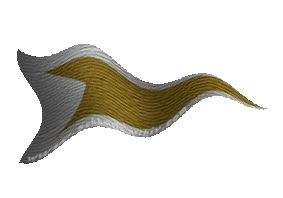
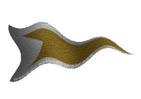

|

|
Das schwarze Brett
|
|
| Übersicht,
Geschichten (RPG) |
|
Logbuch (4624  ) )
|
| Brendan (RIP) |
Schädelfels entwickelt sich zu einer richtig verkommenen Stadt. Bordelle und Tavernen boomen und jede Nacht gibt es Schlägereien, Messerstechereien und junge Mädels, die an meine Schlafzimmertüre klopfen.
Ich lasse sie aber erst nach dem Bumsen wieder laufen.
Es hat was für sich, Bürgermeister zu sein ...
Sir Brendan,
Vorsteher von Schädelfels
Zur 16. Stunde am 78.Erntemond im Jahre 415 |
19.04.04 8:53
|
|
| Brendan (RIP) |
Irgendwie begann der Tag verwirrend. Aylen, die Tochter vom alten Falli hat scheinbar ihr Gedächtnis verloren und ich machte mir einen Spaß daraus, ihr in der Taverne einzureden, dass wir verlobt wären.
Plötzlich stand ich vor der alten Priesterin, hatte einen Dolch im Rücken und war Falsters Schwiegersohn.
Sir Brendan,
Vorsteher von Schädelfels
Zur 21. Stunde am 87.Erntemond im Jahre 415 |
21.04.04 12:26
|
|
| Brendan (RIP) |
Express-Flaschenpost
an Falster von Distelflamme
Hallo Schwiegerpapi!
Wie geht es Dir? Mir geht es gut!
Heute schien die Sonne und ich dachte mir nichts Böses, als ich so an einer Taverne vorbeikam und der Tag begann irgendwie seltsam zu werden.
Du wirst nie erraten, was geschehen ist!
Also ich komme so in die Taverne und deine Tochter ist irgendwie seltsam und tut so, als würde sie mich nicht kennen. Also sage ich ihr einfach, dass wir verlobt sind und hier heiraten wollen. Sie wirkt verwirrt und tut so, als würde sie es beinahe glauben, das raffinierte Mädchen, aber ich spiele mit und labere sie nieder, warum denn dem tatsächlich so sei.
Schließlich stimmt sie aber zu und ich muss baden und frische Kleidung anziehen und mein Bart ist auch abrasiert, weil der Fluchtweg aus dem Baderaum der Taverne von irgendwelchen Typen bewacht wurde, die Morgensterne in den schmierigen Pfoten hielten.
Nun ich gehe danach also wieder in den Schankraum und Aylen, die immer noch so tut, als wüsste sie nicht wirklich was sie macht, steht neben mir und so eine heruntergekommene Klerikerin stellt peinliche Fragen und krönt diese Zeremonie mit jener, ob Aylen mich heiraten will.
Jetzt denke ich natürlich, dass sie kneifen wird und verschlucke fast meine Zunge, als sie JA sagt. Das Dumme ist jetzt aber, dass ich ja schlecht Nein sagen konnte, weil ein Seemann zu seinem Wort steht und ich dafür bekannt bin, jeden Unfug bis zum Ende durchzustehen. Abgesehen davon hatte ich einen Dolch im Rücken.
Also sage ich auch JA und wir sind damit verheiratet. Die Hochzeitsnacht haben wir aber noch nicht hinter uns, weil noch nicht klar war, ob Aylen als sie wieder zu Bewusstsein kam und erkannte, was wir getan hatten sich selbst, mich oder die Priesterin umbringt.
Naja ich weiß, dass dich das nicht wirklich freuen wird, Papi, aber es war sicher irgendwie vorbestimmt, denn so blöd können zwei Wesen doch gar nicht sein, oder? Natürlich soll der erste Enkel Falster Junior heißen, wenn er ein Junge ist.
Liebe Grüße
Dein Brendan
P.S. Bringst du es Mama bitte schonend bei?
P.P.S. Sag mal wie hoch ist eigentlich die Mitgift bei Töchtern von Vätern in deinem Rang? Ich muss ja schaun, dass ich mein kleines Kaff soweit ausbaue, dass Aylen und die Kinderscharen sich hier auch wohl fühlen.
Sir Brendan,
Vorsteher von Schädelfels
Zur 3. Stunde am 88.Erntemond im Jahre 415 |
21.04.04 13:58
|
|
| Brendan (RIP) |
Es gibt Tage, an denen man die Welt nicht mehr versteht ...
Falsters Antwort ist eingelangt:
Aloa Sohn
Ich wusste das es so kommt, wer anders sollte auch men Jung sein als du?
So leicht wird das aber nicht und ohne Jungesellenabschied in deinem Stammpuff schon gleich gar nicht.
Tira geht morgen um 21 Uhr ins Bett also gehts dann los oder?
Die Mitgift hat schon ein kleiner Giftzwerg geklaut was ärgerlich wahr aber weg is wech und wech bleibt weg traurig aber bittere Wahrheit.
Sach mal wie sind die Jennys so in dem Laden?
Hmm also gerade steht Tira in der Tür ich entferne den Schrieb dann mal rasch.... .
Sir Brendan,
Vorsteher von Schädelfels
Zur 15. Stunde am 5.Dunkelfrost im Jahre 415 |
23.04.04 7:59
|
|
| Brendan (RIP) |
Habe durch Karawanen wieder Petro reinbekommen - hatte auf Holz gehofft. Werde das Petro wohl verkaufen.
Freiherr Brendan,
Vorsteher von Schädelfels
Zur 1. Stunde am 32.Dunkelfrost im Jahre 415 |
29.04.04 11:45
|
|
| Brendan (RIP) |
Nun ist es geschehen - ein leiber Freund wir heiraten, was zweifelsohne schön ist, wäre da nicht die Braut.
Scheinbar stößt er sich nicht an ihrem schlechten Ruf und anstelle im Bordell für gutes Geld perfekte Dienste zu beanspruchen, ehelicht er Enigma, spart Geld und - naja - von den Qualitäten brauche ich nicht zu sprechen, denn ich bin sicher, die meisten männlichen Scherbenbewohner wissen, was ich meine.
Egal - ich werde für ihn da sein, wenn er Trost und Rat sucht.
Freiherr Brendan,
Vorsteher von Schädelfels
Zur 17. Stunde am 36.Dunkelfrost im Jahre 415 |
30.04.04 13:51
|
|
| Brendan (RIP) |
Nachdem mich vor einigen Wochen, eine skrupellose Hexe mit einem Trank vergiftet hatte, der dafür sorgte, dass der "kleine" Brendan nicht mehr groß wird, habe ich gestern endlich das Gegenmittel erhalten!
Aus Freude über diese Tatsache habe ich sofort einen Brief an Aylen geschrieben!
an Aylen von Distelflamme
Lieber Schatz!
Piero hat mir das Gegenmittel gegeben und es freut mich, dir sagen zu können, dass ich wieder kann - sozusagen.
Piero wird dies wahrscheinlich bestätigen, was dich wohl weniger freuen wird.
Bren
Freiherr Brendan,
Vorsteher von Schädelfels
Zur 19. Stunde am 52.Dunkelfrost im Jahre 415 |
04.05.04 7:54
|
|
| Brendan (RIP) |
Nun landet schon Religionsmüll in meinem Taubenschlag!
Manhel Schattendorn
((2004-05-06 09:13:26))
Brendan,
ihr habt öffentlich unsere Göttin Larja beleidigt. Ich verlange das ihr euch öffentlich und aufrichtig dafür entschuldigt.
Gezeichnet
Manhel Schattendorn
Verkünder des larjanischen Glaubens
Na ich hab mal höflich geantwortet:
Flaschenpost
an Manhel Schattendorn
((2004-05-06 09:15:13))
Wenn Larja sich beleidigt fühlt, soll sie sich an mich wenden.
~B~
Freiherr Brendan,
Vorsteher von Schädelfels
Zur 15. Stunde am 61.Dunkelfrost im Jahre 415 |
06.05.04 9:16
|
|
| Brendan (RIP) |
Liebes Logbuch!
Irgendein idiot hat mich in seinem religiösen Wahn zum Ketzer erklärt. Es tut gar nicht weh, ein Ketzer zu sein. Ich bin ein wenig enttäuscht und warte geduldig auf die Auswirkungen.
Freiherr Brendan,
Vorsteher von Schädelfels,
Prophet im einzig wahren Glauben an den Atheismus
Zur 14. Stunde am 78.Dunkelfrost im Jahre 415 |
10.05.04 8:26
|
|
| Brendan (RIP) |
Liebes Logbuch!
Wieder sind einige Tage vergangen und keine himmlischen Heerscharen sind gekommen, um mich zu bestrafen. Ich muss wohl recht gehabt und recht gehandelt haben.
Im übrigen bleibe ich dabei - die Hälfte der Larjaner sind Schwachköpfe.
Freiherr Brendan,
Vorsteher von Schädelfels,
Prophet im einzig wahren Glauben an den Atheismus
Zur 19. Stunde am 82.Dunkelfrost im Jahre 415 |
11.05.04 8:04
|
|
| Brendan (RIP) |
Der Tag war gut - Aylen hat sich von mir scheiden lassen - ich kann sie verstehen.
Freiherr Brendan,
Vorsteher von Schädelfels,
Prophet im einzig wahren Glauben an den Atheismus
Zur 24. Stunde am 83.Dunkelfrost im Jahre 415 |
11.05.04 14:40
|
|
| Brendan (RIP) |
Aber ich bin ein echter FREI herr
Freiherr Brendan,
Vorsteher von Schädelfels,
Prophet im einzig wahren Glauben an den Atheismus
Zur 1. Stunde am 84.Dunkelfrost im Jahre 415 |
11.05.04 14:56
|
|
| Brendan (RIP) |
Hurra! Die ersten Larja Glaubenskämpfer waren da!
Leider noch nicht hier, bei Schädelfels, sondern bei einem alten Handelsposten, den ich in meinem einstigen Siedlungsgebiet habe stehen lassen und nur mehr fallweise verwende.
Freiherr Brendan,
Vorsteher von Schädelfels,
Prophet im einzig wahren Glauben an den Atheismus
Zur 3. Stunde am 87.Dunkelfrost im Jahre 415 |
12.05.04 8:16
|
|
| Brendan (RIP) |
Na endlich sind sie vor Schädelfels, die Ordenskrieger - gegen die Armee aber kommen sie nicht an. Mal sehn, wie sie sich die Zähne ausbeißen ...
Freiherr Brendan,
Vorsteher von Schädelfels,
Prophet im einzig wahren Glauben an den Atheismus
Zur 6. Stunde am 87.Dunkelfrost im Jahre 415 |
12.05.04 8:58
|
|
| Brendan (RIP) |
Liebes Logbuch!
Bin zu einer Hochzeit eingeladen. Warum, das weiß der Geier! Naja - vielleicht bade ich davor ausnahmsweise einmal und ziehe frische Klamotten an.
Freiherr Brendan,
Vorsteher von Schädelfels,
Prophet im einzig wahren Glauben an den Atheismus
Zur 16. Stunde am 1.Saatmond im Jahre 416 |
13.05.04 9:41
|
|
| Brendan (RIP) |
Liebes Logbuch!
Gestern war ein interessanter Tag. Erst habe ich Danyaele verheiratet und als die Gelegenheit günstig war, habe ich zwei Ratten totgeprügelt, was die Chronisten auch prompt festgehalten haben.
Es ist an der Zeit, Schädelfels zu verlassen und wieder über die Meere zu segeln.
Freiherr Brendan,
Vorsteher von Schädelfels
Zur 18. Stunde am 5.Saatmond im Jahre 416 |
14.05.04 8:36
|
|
| Brendan (RIP) |
Logbuch der "Seerose"
Ich habe eben die Stadt Schädelfels an die Nation zurückgegeben, für die ich sie verwaltet habe.
Mein spärlich Hab und Gut, sowie die beiden Dinge, die ich kürzlich den beiden erschlagenen "Ratten" abgenommen habe, wurde zum Anleger geschleppt und ich lichte den Anker.
Der Wind steht günstig und ich gehe auf Kurs Südost.
Freiherr Brendan
Zur 14. Stunde am 6.Saatmond im Jahre 416 |
14.05.04 13:21
|
|
| Brendan (RIP) |
Logbuch der "Seerose"
Wollte eben bei Oureion an Land gehen und die Stadt besuchen. Leider verhinderten Türme mein weiterkommen.
Ich gehe auf Südkurs.
Freiherr Brendan
Zur 15. Stunde am 7.Saatmond im Jahre 416 |
14.05.04 19:10
|
|
| Brendan (RIP) |
Auch vor Niptown verwehren Türme meinen Zutritt - mißtrauische Gesellen wohnen hier im Süden.
Egal - ich habe im Südosten eine Insel gesehen, die ich noch auf keiner Karte verzeichnet fand.
Es wird Zeit, diese zu erkunden.
Brendan
Zur 1. Stunde am 10.Saatmond im Jahre 416 |
15.05.04 8:36
|
|
| Brendan (RIP) |
Na endlich wieder einmal ein Bordell und darum herum eine Stadt gebaut, die nicht durch mißtrauische Wächter geschützt ist. Das kann ich brauchen, nachdem die Insel erkundet wurde. Offensichtlich besteht sie nur aus Lavaland und man kann nirgenwo anlegen.
Ich habe mich im Rathaus von "Karpfendorf" verewigt, einer gewissen FlyingLi und einer CeNedra Arafhen an den Hintern gefasst und bin wieder abgehauen.
Werde weiterhin im Süden kreuzen und schaun, ob es noch Inseln zu entdecken gibt.
Das dämliche Amulett, das ich Ilidan abgenommen habe ist zu nichts zu gebrauchen, außer beim gefangenen Fisch die Schuppen abzuschaben.
Das magische Buch ist nicht zu entziffern, aber sehr dick - sehr fein, wenn einmal das Papier ausgeht und man ein Bedürfnis hat, denke ich.
Brendan
Zur 20. Stunde am 11.Saatmond im Jahre 416 |
15.05.04 18:43
|
|
| Brendan (RIP) |
Brilandia ist ein kümmerliches Dorf, das die guten Zeiten hoffentlich noch vor sich hat.
Ich habe im Süden davon Land gesehen und fand es auch noch auf keiner Karte. Werde mir das mal ansehen ...
Brendan
Zur 23. Stunde am 12.Saatmond im Jahre 416 |
16.05.04 0:55
|
|
| Brendan (RIP) |
Logbuch der "Seerose"
Ich habe eine unbekannte Insel umfahren und kartographiert, um festzustellen, dass diese ebenso keine Anleger hat. Dabei stieß ich auf zwei weitere Küstenstriche, die ich aus Sorge um mein Schiff vorerst links liegen lassen mußte.
Interessant war, dass die Wiesen dieser Insel ein wesentlich intensiveres Grün aufzuweisen hatten, als es mir bis dato untergekommen war. Auch wachsen dort Palmen!
Mit Müh´ und Not schaffte ich es zurück an einen bekannten Anleger und in einem kleinen Dorf namens Irontown habe ich mich ins Gästebuch im Rathaus eingetragen.
Auf dem Weg lag ein Gasthaus - Besitzer Isfandia (4961/1654) - der öffentlich ausgepeitscht werden sollte für die Frechheiten, die man da vorgesetzt bekommt.
Ich werde aufbrechen, um die neuen Inseln weiter zu erforschen.
Brendan
Zur 13. Stunde am 14.Saatmond im Jahre 416 |
16.05.04 9:46
|
|
| Brendan (RIP) |
Logbuch der "Seerose"
Wieder eine Nacht in einer kleinen Bucht geankert und nach einem ausgiebigen Frühstück Fahrt aufgenommen.
Ich habe versucht, das Buch und das Amulett irgendwie in Zusammenwirken zu bringen, was das Resultat hatte, dass das Buch sich erwärmt hat und das Amulett zu vibrieren begann.
Das kommt mir gerade recht, denn ich habe das Buch in mein Bett gelegt und ich muß sagen, es ist wirklich etwas feines, unter kuschelig warme Decken zu kriechen.
Das vibrierende Amulett habe ich an einer intimen Stelle meines Körpers versteckt und .... ES IST SAUGEIL, DA WO ES IST!!!
Brendan
Zur 16. Stunde am 18.Saatmond im Jahre 416 |
17.05.04 9:00
|
|
| Brendan (RIP) |
Logbuch der "Seerose"
Zur 1. Stunde am 19. Saatmond im Jahre 416 war ich in Caldere Nova, habe mich im Rathaus verweigt und habe in einem netten Handelposten ein wenig eingekauft.
Werde nun weiter nach Norden segeln.
Brendan
Zur 2. Stunde am 19.Saatmond im Jahre 416 |
17.05.04 11:15
|
|
| Brendan (RIP) |
Logbuch der "Seerose"
Zur 2. Stunde am 19. Saatmond im Jahre 416 war ich in Karandur. Nicht viel los da ...
Werde nun Richtung Nordwest segeln.
Brendan
Zur 2. Stunde am 19.Saatmond im Jahre 416 |
17.05.04 11:21
|
|
| Brendan (RIP) |
Logbuch der "Seerose"
Zur 13. Stunde am 19. Saatmond im Jahre 416 war ich endlich an der Stätte meines frühen Wirkens angekommen, habe ein wenig Handel getrieben und werde der Insel schnell den Rücken kehren.
Werde Kurs West-Nord-West einschlagen.
Brendan
Zur 13. Stunde am 19.Saatmond im Jahre 416 |
17.05.04 13:56
|
|
| Brendan (RIP) |
Logbuch der "Seerose"
Zur 13. Stunde am 20. Saatmond im Jahre 416 war ich in Meresin. Der Bürgermeister hat neugierig um mich herumgeschnüffelt! So ein Aas - da übernachte ich wohl besser wieder auf hoher See.
Mal sehen, wohin ich nun segeln werde. Nach der Hitze des Südens wäre vielleicht ein wenig Kühle angebracht ...
Brendan
Zur 14. Stunde am 20.Saatmond im Jahre 416 |
17.05.04 19:37
|
|
| Brendan (RIP) |
Logbuch der "Seerose"
Zur 20. Stunde am 22. Saatmond im Jahre 416 war ich in der Innenstadt von WINTERNACHT - ob das Melfurion freuen wird? - und habe mich im Stadttor "verewigt".
Mal sehn, wohin der Wind mich nun treibt. Ich denke, dass es noch weiter nördlich interessantes land gibt.
Brendan
Zur 21. Stunde am 22.Saatmond im Jahre 416 |
18.05.04 8:28
|
|
| Brendan (RIP) |
Zur 21. Stunde am 22. Saatmond im Jahre 416 war ich in Lupinia und habe mich im Rathaus "verewigt".
Brendan
Zur 21. Stunde am 22.Saatmond im Jahre 416 |
18.05.04 8:35
|
|
| Brendan (RIP) |
Naja - und weil ich schon in der gegend war, habe ich auch noch Lion´s Castle besucht.
Zur 21. Stunde am 22. Saatmond im Jahre 416 war Brendan auch hier!
Brendan
Zur 21. Stunde am 22.Saatmond im Jahre 416 |
18.05.04 8:39
|
|
| Brendan (RIP) |
Habe eben mein neues Schiff getauft. Es soll nun "Seeschwanz" heißen.
Brendan
Zur 2. Stunde am 23.Saatmond im Jahre 416 |
18.05.04 9:42
|
|
| Brendan (RIP) |
Zur 17. Stunde am 25. Saatmond im Jahre 416 ich in Tarankar und habe einige der Schulen besucht. Der Bürgermeister ist sehr freundlich und hilfsbereit.
Ich werde mich wieder südlicheren Gefilden zuwenden.
Brendan,
Anführer der glorreichen Nation "Bruderschaft der Kaperfahrer"
Zur 17. Stunde am 25.Saatmond im Jahre 416 |
19.05.04 0:26
|
|
| Brendan (RIP) |
Ich habe eine Nation gegründet, die "Bruderschaft der Kaperfahrer". Ich bin wohl der einzige "Bruder", aber dennoch ist es gut, sich in einer starken Nation zu wissen.
Erste Anfragen bezüglich meiner Dienste trafen bereits ein und ich sondiere noch ...
Brendan,
Anführer der glorreichen Nation "Bruderschaft der Kaperfahrer"
Zur 7. Stunde am 27.Saatmond im Jahre 416 |
19.05.04 9:12
|
|
| Brendan (RIP) |
Es ist Krieg und ich bin auf der seite der Laochs eingetreten.
Habe heute ein Schiff des Feindes versenkt. Der Besitzer war Ulzgrun.
Brendan,
Anführer der glorreichen Nation "Bruderschaft der Kaperfahrer",
Kapitän des Schnellseglers "Seeschwanz"
Zur 18. Stunde am 29.Saatmond im Jahre 416 |
19.05.04 22:59
|
|
| Brendan (RIP) |
Die Wespen haben zurückgeschlagen. Ein gewisser Blümchen hat mich auf dem Weg von Saphery zum Hafen erwischt.
Gut so - das macht die Sache reizvoller!
Brendan,
Anführer der glorreichen Nation "Bruderschaft der Kaperfahrer",
Kapitän des Schnellseglers "Seeschwanz"
Zur 19. Stunde am 31.Saatmond im Jahre 416 |
20.05.04 10:22
|
|
| Brendan (RIP) |
Auf der Suche nach feindlichen Schiffen bin ich auf zwei Handelskonvoys eines gewissen Tiron gestoßen. Der Gute hat mich auf seiner Feindesliste - jetzt hat er Grund dazu.
Brendan,
Anführer der glorreichen Nation "Bruderschaft der Kaperfahrer",
Kapitän des Schnellseglers "Seeschwanz"
Zur 18. Stunde am 35.Saatmond im Jahre 416 |
21.05.04 8:38
|
|
| Brendan (RIP) |
Habe eben so einen Penner gesehen - einen Ilidan Dings Da und ihm ein Goldstück in die Pfoten gedrückt, ehe ich seinen Handelsposten angegriffen habe.
Nur Schrott drin - war dann noch in so einer kleinen Stadt - Lailoss - und habe mich im Rathaus verewigt.
Brendan,
Anführer der glorreichen Nation "Bruderschaft der Kaperfahrer",
Kapitän des Schnellseglers "Seeschwanz"
Zur 18. Stunde am 35.Saatmond im Jahre 416 |
21.05.04 8:41
|
|
| Brendan (RIP) |
Hoppla - zwei Bergwerke des Bündnis Hoffnung und eine Karawane, die den Aufwand nicht wert war.
Man sollte ihnen noch Geld schenken ...
Brendan,
Anführer der glorreichen Nation "Bruderschaft der Kaperfahrer",
Kapitän des Schnellseglers "Seeschwanz"
Zur 1. Stunde am 37.Saatmond im Jahre 416 |
21.05.04 15:53
|
|
| Brendan (RIP) |
Stimmt ja - es waren Gebäude von Ron Rotbart und Nasgul - der Vollständigkeit halber.
Brendan,
Anführer der glorreichen Nation "Bruderschaft der Kaperfahrer",
Kapitän des Schnellseglers "Seeschwanz"
Zur 2. Stunde am 37.Saatmond im Jahre 416 |
21.05.04 16:01
|
|
| Brendan (RIP) |
Noch eine Seekarawane gesichtet von einer gewissen Danyaele, die viel zu schwer beladen war.
Nun sollte sie leichter beladen gut vorankommen.
Brendan,
Anführer der glorreichen Nation "Bruderschaft der Kaperfahrer",
Kapitän des Schnellseglers "Seeschwanz"
Zur 11. Stunde am 37.Saatmond im Jahre 416 |
21.05.04 18:13
|
|
| Brendan (RIP) |
Bin auf ein Schiff gestoßen, das kurz vor dem Auseinanderbrechen war. Ich nahm die Passagiere an Bord und brachte sie zu ihrem Zielort weit im Süden.
Alucard, Yarrick und Gideon sind eigentlich recht angenehme Zeitgenossen. Ich halte die Gerüchte über ihren schlechten Lebenswandel für sehr übertrieben.
An Bord des "Seeschwanz" wußten sie sich jedenfalls zu benehmen.
Werde meine Kaperfahrt wieder aufnehmen, wenn ich gut ausgeruht bin.
Brendan,
Anführer der glorreichen Nation "Bruderschaft der Kaperfahrer",
Kapitän des Schnellseglers "Seeschwanz"
Zur 12. Stunde am 40.Saatmond im Jahre 416 |
22.05.04 11:19
|
|
| Brendan (RIP) |
Eine wespengauklertruppe, die einem gewissen Conan gehörte, gehört der Vergangenheit an. So ist der Krieg ...
Brendan,
Anführer der glorreichen Nation "Bruderschaft der Kaperfahrer",
Kapitän des Schnellseglers "Seeschwanz"
Zur 10. Stunde am 41.Saatmond im Jahre 416 |
22.05.04 16:23
|
|
| Brendan (RIP) |
Und noch drei Wespenkaras, die um eine gewisse Traglast erleichtert habe. Die armen Kamele waren viel zu schwer beladen!
Brendan,
Anführer der glorreichen Nation "Bruderschaft der Kaperfahrer",
Kapitän des Schnellseglers "Seeschwanz"
Zur 15. Stunde am 41.Saatmond im Jahre 416 |
22.05.04 17:29
|
|
| Brendan (RIP) |
Krieg zu führen bedeutet eben auch, dem Gegner Verluste beizubringen - ich tu das gewissenhaft.
Brendan,
Anführer der glorreichen Nation "Bruderschaft der Kaperfahrer",
Kapitän des Schnellseglers "Seeschwanz"
Zur 10. Stunde am 44.Saatmond im Jahre 416 |
23.05.04 9:15
|
|
| Brendan (RIP) |
Logbuch der "Seeschwanz"
Ein guter Tag! Ich habe einen Eisberg und eine Wespe erschlagen. Taboli heißt der Kerl und der wird heute nicht mehr zur See fahren.
Brendan,
Anführer der glorreichen Nation "Bruderschaft der Kaperfahrer",
Kapitän des Schnellseglers "Seeschwanz"
Zur 13. Stunde am 54.Saatmond im Jahre 416 |
25.05.04 17:45
|
|
| Brendan (RIP) |
Der Eisberg hatte keinen Namen, fürchte ich. Aber er war genau so ein Lutscher wie die Wespe.
Brendan,
Anführer der glorreichen Nation "Bruderschaft der Kaperfahrer",
Kapitän des Schnellseglers "Seeschwanz"
Zur 15. Stunde am 54.Saatmond im Jahre 416 |
25.05.04 18:15
|
|
| Brendan (RIP) |
Logbuch der "Seeschwanz"
Der Tag beginnt interessant. Habe eben eine Wespenkara getroffen, die einer gewissen Gabrielle gehört hat.
Brendan,
Anführer der glorreichen Nation "Bruderschaft der Kaperfahrer",
Kapitän des Schnellseglers "Seeschwanz"
Zur 9. Stunde am 57.Saatmond im Jahre 416 |
26.05.04 9:49
|
|
| Brendan (RIP) |
Logbuch der "Seeschwanz"
Der Tag begann gut, war durchwachsen und endete in einer Tempelbesichtigungstour meinerseits. Am Morgen fand ich eine Handelskarawane von Gabrielle, am Nachmittag zwei beachtliche Karawanen von Cetidur und am Abend erwischte ich einen feindlichen Kapitän, der an einem Anleger döste - Helios.
Als ich eben so meinen Tag Revue passieren lassen wollte und mir das berühmte brendan´sche Siegeggrinsen ins Gesicht schob, stand Melfurion hinter mit, tippte auf meine Schulter und ich erwachte im Tempel - Unkraut vergeht nicht!
Brendan,
Anführer der glorreichen Nation "Bruderschaft der Kaperfahrer",
Kapitän des Schnellseglers "Seeschwanz"
Zur 12. Stunde am 61.Saatmond im Jahre 416 |
27.05.04 8:44
|
|
| Brendan (RIP) |
Logbuch der "Seeschwanz"
Liebes Logbuch - heute ist mir wieder etwas Peinliches passiert und ich mußte mich dafür bei Enigma entschuldigen ...
Flaschenpost
an Enigma Aquila
Sail Ho, alte Löwin!
Stell dir mal vor, was mir heute passiert ist, nachdem du mir Streitkolben verkauft hast:
Also ich marschiere da so durch die Gegend und komme zu einem Gasthaus, das meinem Feind, Vincent, dem Kurzschwanz gehört - kennst du den eigentlich näher?
Jedenfalls denke ich mir, dass das Gasthaus da nicht stehen sollte und als ich eben meinen Feind schädigen will, fällt mir eine Armee auf, die es beschützt!
Nu - ich seh also diese Elfenkrieger, denke mir, die gehören einem miesen Aquila und als der letzte im Blut liegt, stelle ich fest, dass es deine Armee war.
Ich entschuldige mich hiermit höflichst - kommt nicht mehr vor.
Leider ist es so, dass im Krieg auch Unschuldige zum Handkuß kommen und ich konnte nicht riechen, dass deine Armee ein Gasthaus von Vince bewacht!
Ich steche wohl besser wieder in See! Ärgere dich nicht zu sehr - das gibt Falten und graue Haare!
~B~
Brendan,
Anführer der glorreichen Nation "Bruderschaft der Kaperfahrer",
Kapitän des Schnellseglers "Seeschwanz"
Zur 23. Stunde am 71.Saatmond im Jahre 416 |
29.05.04 19:30
|
|
| Brendan (RIP) |
So - die Schdenersatzforderung ist raus - 30.000 Goldstücke. Na dann werde ich wohl bezahlen gehen.
Brendan,
Anführer der glorreichen Nation "Bruderschaft der Kaperfahrer",
Kapitän des Schnellseglers "Seeschwanz"
Zur 11. Stunde am 72.Saatmond im Jahre 416 |
29.05.04 22:09
|
|
| Brendan (RIP) |
Quittung
Enigma Aquila
Geldübergabe
Brendan hat Dir 30000 Goldstücke in die Hand gedrückt. Das findest Du irgendwie nett...
Somit ist der Schaden an der 330 ten Armee abgegolten.
Habt herzlichen Dank
Möge Pheron Euren Weg mit Weisheit belegen
Enigma Aquila
wer auch immer dieser Pheron sein mag ... *grübel*
Brendan,
Anführer der glorreichen Nation "Bruderschaft der Kaperfahrer",
Kapitän des Schnellseglers "Seeschwanz"
Zur 11. Stunde am 72.Saatmond im Jahre 416 |
29.05.04 22:15
|
|
| Brendan (RIP) |
Logbuch der "Seeschwanz"
Habe da in der letzten Spelunke einen Typen getroffen, der gerne mal zur See fahren wollte.
Er nennt sich Takehiko und weil uns langweilig war, sind wir zu den Pumpen des Bündnis Hoffnung gefahren, deren Nationsführer mich ohnehin auf seiner Kriegsliste hat - inclusive meiner Nation seitens derer - wegen eines Disputs am Anschlagsbrett - und so habe ich ihm den Krieg gebracht, den er wollte.
Möchte mich hiermit für die fette Petrospende beim Bündnis Hoffnung bedanken - ich komme immer wieder gerne meine erklärten Feinde besuchen und Takehiko wohl auch.
Wir fahren jetzt mal das Petro verkaufen - ist ja nicht geplündert, sondern reguläre Kriegsbeute und dann orientieren wir uns wohl neu.
Brendan,
Anführer der glorreichen Nation "Bruderschaft der Kaperfahrer",
Kapitän des Schnellseglers "Seeschwanz"
Zur 1. Stunde am 77.Saatmond im Jahre 416 |
30.05.04 23:52
|
|
| Brendan (RIP) |
Logbuch der "Seeschwanz"
So - Wuffis Pumpe ist Geschichte. Habe mit Takehiko dem Feind den Krieg dahin zurückgebracht, wo er ausgesprochen wurde.
Dummerweise stand Wuffi selbst im Gebäude und liegt nun unter den Trümmern begraben. Es war ein guter Tag.
Brendan,
Anführer der glorreichen Nation "Bruderschaft der Kaperfahrer",
Kapitän des Schnellseglers "Seeschwanz"
Zur 1. Stunde am 80.Saatmond im Jahre 416 |
31.05.04 16:43
|
|
| Brendan (RIP) |
Logbuch der "Seeschwanz"
Haben heute noch die Insel von diesem titelgeilen Secret besucht. Erst lief ich in den hinterhältigen Angriff einer Karawane von Asuka und dann lief Takehiko in den noch viel hinterhältigen Passivangriff von Quagger.
Secret stand auf seiner Stadt und hat geschimpft wie ein Rohrspatz, als einige seiner Vorräte sich selbstständig machten - Krieg ist eine miese, teure Angelegenheit ... aber sie wollen es so.
Nachdem auf dieser Scheiß-Insel nichts zu holen ist, setzten wir Segel und fuhren nordwärts, wo man uns noch einige Karas des Bündnis Hoffnung gemeldet hatte.
Tatsächlich fand ich noch eine von Flitze und von Ignaz (wie kann man nur so heißen?) und dann war es auch schon wieder vorbei. Nichts los in diesem zurückgebliebenen Scherbenstückchen.
Naja - wir haben also wieder Segel gesetzt und fahren Richtung - ja, das würden viele gerne wissen - aber es ist ja egal - wir fahren Richtung Sturmforst und schlafen an Deck - das erscheint mir hier angebracht - nach all dem Gestank von Secrets Sippe.
Brendan,
Anführer der glorreichen Nation "Bruderschaft der Kaperfahrer",
Kapitän des Schnellseglers "Seeschwanz"
Zur 6. Stunde am 81.Saatmond im Jahre 416 |
31.05.04 23:22
|
|
| Brendan (RIP) |
Logbuch der "Seeschwanz"
Man sollte nicht glauben, wieviele Feinde ihre Karawanen nicht vor dem Krieg schützen - Unfallverhütung nennt man das.
Ich meine - für Ignaz und Aryn Greifenherz persönlich tut es mir ja leid, aber wenn Nationsführer Kriege beschließen ... was will man da tun?
Brendan,
Anführer der glorreichen Nation "Bruderschaft der Kaperfahrer",
Kapitän des Schnellseglers "Seeschwanz"
Zur 3. Stunde am 83.Saatmond im Jahre 416 |
01.06.04 9:54
|
|
| Brendan (RIP) |
Logbuch der "Seeschwanz"
Takehiko und ich hatten ein Déja Vue!!!
Brendan hat Handels-Karawane von asuka beraubt!
Konflikt Takehiko hat Quagger Linwilóce besiegt!
Das war doch schon mal, oder? Vielleicht sollte ich mit dem Saufen aufhören!
Brendan,
Anführer der glorreichen Nation "Bruderschaft der Kaperfahrer",
Kapitän des Schnellseglers "Seeschwanz"
Zur 18. Stunde am 83.Saatmond im Jahre 416 |
01.06.04 13:23
|
|
| Brendan (RIP) |
Das unterscheidet einen Kaperfahrer von einem Plünderer - genau definierte Feinde, Alucard.
Brendan,
Anführer der glorreichen Nation "Bruderschaft der Kaperfahrer",
Kapitän des Schnellseglers "Seeschwanz"
Zur 1. Stunde am 84.Saatmond im Jahre 416 |
01.06.04 14:59
|
|
| Brendan (RIP) |
Ein langweiliger Tag - nur eine Karawane von Wasil kreuzte meinen Weg. Ich werde wohl wieder das Revier wechseln.
Brendan,
Anführer der glorreichen Nation "Bruderschaft der Kaperfahrer",
Kapitän des Schnellseglers "Seeschwanz"
Zur 14. Stunde am 88.Saatmond im Jahre 416 |
02.06.04 16:35
|
|
| Brendan (RIP) |
Ein scheiß Tag - erst will mich ein gewisser Dooby beklauen und rennt in einen zufällig in der Gegend stationierten Wachdienst eines mir unbekannten Fremden.
Dann kommt Jack Pott dahergerast und knüppelt mich nieder, während ich eben Anker lichten will.
Der hat mir einfach meine Familienerbstücke - das magische Amulett und das Zauberbuch geraubt. Ich geh besser schlafen ...
Brendan,
Anführer der glorreichen Nation "Bruderschaft der Kaperfahrer",
Kapitän des Schnellseglers "Seeschwanz"
Zur 23. Stunde am 89.Saatmond im Jahre 416 |
03.06.04 0:17
|
|
| Brendan (RIP) |
Naja - immerhin lebe ich noch und bin mit einigen blauen Flecken und Schwellungen davongekommen. Ich sehe jetzt Enigma oder aber auch einem Mandrill verdammt ähnlich.
Mal sehn, was der heutige Tag bringen mag ...
Brendan,
Anführer der glorreichen Nation "Bruderschaft der Kaperfahrer",
Kapitän des Schnellseglers "Seeschwanz"
Zur 12. Stunde am 1.Blumenmond im Jahre 416 |
03.06.04 8:52
|
|
| Brendan (RIP) |
Der Tag begann gut - haben GraveDiggA, einen GeH erwischt, der einsam auf einem Anleger stand und daruaf wartete, woanders hin zu kommen. Naja - das hat er nun erreicht - der nächste Tempel ist ganz wo anders.
Brendan,
Anführer der glorreichen Nation "Bruderschaft der Kaperfahrer",
Kapitän des Schnellseglers "Seeschwanz"
Zur 5. Stunde am 2.Blumenmond im Jahre 416 |
03.06.04 12:46
|
|
| Brendan (RIP) |
Nachtrag:
und da waren tatsächlich einige Wespenpumpen ...
Brendan,
Anführer der glorreichen Nation "Bruderschaft der Kaperfahrer",
Kapitän des Schnellseglers "Seeschwanz"
Zur 6. Stunde am 2.Blumenmond im Jahre 416 |
03.06.04 13:05
|
|
| Brendan (RIP) |
Waren heute im GeH-Gebiet. Ich bin über eine hinterhältige Karawane gestolpert und Takehiko hat hinter dem stets vor ihm davonlaufenden Elessar 12.329 Waren gefunden.
Wir werfen den Ramsch weg und fahren weiter.
Brendan,
Anführer der glorreichen Nation "Bruderschaft der Kaperfahrer",
Kapitän des Schnellseglers "Seeschwanz"
Zur 24. Stunde am 6.Blumenmond im Jahre 416 |
04.06.04 15:35
|
|
| Brendan (RIP) |
Waren heute noch bei Wespenhain - haben ne Armee zerklopft und einige Waren gefunden, die wir gleich an die Stadt verkauft haben.
Stealth wird sich sicherlich freuen.
Brendan,
Anführer der glorreichen Nation "Bruderschaft der Kaperfahrer",
Kapitän des Schnellseglers "Seeschwanz"
Zur 12. Stunde am 8.Blumenmond im Jahre 416 |
05.06.04 0:08
|
|
| Brendan (RIP) |
So - landung am Oststeg bei Wespennest - eine tote Wespe (Spark Amandil), eine beraubte (Silenôz Filth)und Phooka kam angeschossen, so dass wir wieder ablegten und ein wenig warten wollten.
Als Phooka, der muß sich ja die Füße in den Bauch gestanden haben, nicht wegging, beschloß ich den Kontinent zu umrunden und landete an der Westseite. Wir besuchten einen Tempel, holten drei Gefallene ab und landeten noch einma an.
Da fanden wir 2.117 Waren, von denen wir nur 500 Endurium behielten und den Rest wegwarfen. War ja Kriegsbeute.
Schade vor allem um das Harz, die Bücher und den Thaum, den Kaffe und den Lebetran ... aber was solls. Der Feind kann darüber nicht mehr verfügen.
Brendan,
Anführer der glorreichen Nation "Bruderschaft der Kaperfahrer",
Kapitän des Schnellseglers "Seeschwanz"
Zur 20. Stunde am 11.Blumenmond im Jahre 416 |
05.06.04 18:47
|
|
| Brendan (RIP) |
Abends noch einmal in See gestochen. Da hatte so ne Wespe, Cetidur, doch zwei Karas laufen ...
Brendan,
Anführer der glorreichen Nation "Bruderschaft der Kaperfahrer",
Kapitän des Schnellseglers "Seeschwanz"
Zur 2. Stunde am 13.Blumenmond im Jahre 416 |
06.06.04 1:35
|
|
| Brendan (RIP) |
Eheringe gekauft, gravieren lassen - kann sie wegwerfen.
Auch gut - brauche ich keine Rücksicht mehr zu nehmen - auf mich selbst nicht mehr und auf niemanden sonst.
Prost!
Brendan,
Anführer der glorreichen Nation "Bruderschaft der Kaperfahrer",
Kapitän des Schnellseglers "Seeschwanz"
Zur 9. Stunde am 19.Blumenmond im Jahre 416 |
07.06.04 13:01
|
|
| Brendan (RIP) |
Die beleidigende Art eines Roland von Gilead gegenüber Takehiko hat zu einer Eskalation geführt, die ich nicht dulden darf. Ich muß mich am Anschlagsbrett äußern.
Brendan,
Anführer der glorreichen Nation "Bruderschaft der Kaperfahrer",
Kapitän des Schnellseglers "Seeschwanz"
Zur 22. Stunde am 27.Blumenmond im Jahre 416 |
09.06.04 12:45
|
|
| Brendan (RIP) |
Folgender Briefverkehr zur Dokumentation:
**********
Takehiko
Werter Brendan,
wie ich sehen konnte habt ihr von meinem Konflikt gegen Roland von Gilead erfahren, aber anders reagiert als ich es mir erhoffte.
Ihr wisst doch genauso gut wie ich wie ein Krieg geführt wird. Nicht immer wird nur das Primärziel angegriffen. Vielmehr wird das ganze Umfeld in Mitleidenschaft gezogen um dem eigentlichen Ziel zu schaden, in welchem Sinne auch immer.
Nicht anderes habe ich bei der gestriken Aktion gemacht. Dass die betroffenden Bündnispartner von Laorch sind wusste ich zu diesem Zeitpunkt nicht, ändert aber jetzt nichts an den Tatsachen.
Zieht eure Konsequenzen die ihr müsst. Ich stehe zu meiner Vorgehensweise und würde es jederzeit anderswo wieder tun.
Takehiko
**********
an Takehiko
Kamerad!
Ich denke, du hast in dieser Privatfehde das angebrachte Maß der Härte um ein Vielfaches überschritten.
Das Bündnis mit den Laochs hat nichts damit zu tun, ob du eine Fehde durchführst oder nicht, aber - du hast eine Sache zwischen dir und dem zugegebenermaßen sehr beleidigenden Schandmaul Roland auf Unbeteiligte ausgedehnt, was ich so nicht gutheißen kann.
Ich habe mich nach reiflicher Überlegung dazu entschlossen, dich nicht aus der Nation zu verbannen, wenn du den unschuldigen Opfern eine Entschuldigung und eine angemessene Wiedergutmachung anbietest.
Schlaf eine Nacht oder auch zwei drüber, ehe du dich entscheidest.
~B~
Brendan,
Anführer der glorreichen Nation "Bruderschaft der Kaperfahrer",
Kapitän des Schnellseglers "Seeschwanz"
Zur 22. Stunde am 27.Blumenmond im Jahre 416 |
09.06.04 12:47
|
|
| Brendan (RIP) |
Brendan,
die Art wie ich Krieg führe sollte mir überlassen bleiben. Ebenso die Härte mit der ich vorgehe. Krieg ist Krieg, und kein Kindergartenspiel. Deswege bin ich verwundert das es immerwieder Aufschreie von Opfern gibt, die sich bei anderen ausheulen.
Wie dem auch sei. Ihr sagtet ich solle überlegen ob ich diese Opfer, meine Feinde, entschädigen will. Ich werde überlegen wie meine Zukunft bei de Karperfahrern aussehen könnte. Wenn sie mir gefällt werde ich die Opfer entschädigen und versuchen mich zu zügeln. Ansonsten könnt ih *hust*
Takehiko
(an Takehiko)
Sail Ho, Kaperfahrer!
Ich nehme deine Antwort zur Kenntnis und erwarte binnen absehbarer Zeit ((2 Tage)), dass du dich bei den Opfern entschuldigst und Entschädigung aushandelst sowie begleichst.
Sollte dies nach Ablauf der Frist nicht geschehen sein, soll die Bruderschaft der Kaperfahrer nicht mehr deine heimat sein.
~B~
Brendan,
Anführer der glorreichen Nation "Bruderschaft der Kaperfahrer",
Kapitän des Schnellseglers "Seeschwanz"
Zur 22. Stunde am 31.Blumenmond im Jahre 416 |
10.06.04 11:16
|
|
| Brendan (RIP) |
Logbuch des Seeschwanz:
Nach einigen Tagen in der Seefahrerakademie zu Taranbkar bin ich auf der Kaffeeinsel gelandet und versetze eben eine kleine Nation in Angst und Schrecken, indem ich bösartig auf einer Stadt stehe und gefährlich aussehe.
Erstaunlich sind die Eingeborenen, die mich schnell neugierig begaffen kommen und dann wieder abhauen.
Es sollte bekannt sein, dass ich nur gegen Feinde vorgehe und mich als Gast durchaus zu benehmen weiß.
Sir Brendan,
Anführer der glorreichen Nation "Bruderschaft der Kaperfahrer",
Kapitän des Schnellseglers "Seeschwanz"
Zur 11. Stunde am 44.Blumenmond im Jahre 416 |
13.06.04 9:23
|
|
| Brendan (RIP) |
Logbuch des Seeschwanz:
Man hat über mich in der Zeitung berichtet!
*Arttikelteil ausschneidet und in die Kajüte pinnt*
"Wenn es so weitergeht, dass unsere Karawanen auf hoher See aufgebracht rücksichtslos versenkt von blutrünstigen Kaperfahrern und unsere Betriebe um wertvolle Rohstoffe gebracht werden, verlieren wir unsere Lebensgrundlagen und sehen dem finanziellen Ruin entgegen!"
Sir Brendan,
Anführer der glorreichen Nation "Bruderschaft der Kaperfahrer",
Kapitän des Schnellseglers "Seeschwanz"
Zur 19. Stunde am 45.Blumenmond im Jahre 416 |
13.06.04 16:49
|
|
| Brendan (RIP) |
Logbuch des Seeschwanz:
Die Presse mag mich ...
"Als besonders übler Vertreter der Gottlosigkeit kann der auch bereits durch lästerlichen Lebenswandel und Anfeindungen gegen den Larja-Konvent aufgefallene Enterfahrer, Kapitän Brendan gelten. "
Sir Brendan,
Anführer der glorreichen Nation "Bruderschaft der Kaperfahrer",
Kapitän des Schnellseglers "Seeschwanz"
Zur 20. Stunde am 45.Blumenmond im Jahre 416 |
13.06.04 16:52
|
|
| Brendan (RIP) |
Schweren Herzens habe ich mich von Takehiko getrennt. Ein Schreiben meines Ex-Kaperfahrers ging ein:
"Brendan,
wie mir soeben euer Bote mitteilte bin ich nun kein Mitglied eurer Nation mehr. Lange genug habt ihr damit ja gewartet.
Sagt, was hattet ihr gedacht? Dass ich den Leuten, den ich den Krieg erklärte tatsächlich Schadensersatz zahle? Ich bin ein Krieger, nicht der Papst!
Takehiko "
Was soll ich schreiben? Soll ich sagen, dass ich Wert darauf lege, gegen genau definierte Feinde vorzugehen und Unbeteilgten kein Haar krümme? Soll ich sagen, dass ich Wert darauf lege, nicht bloß als Plünderer in die Annalen einzugehen, sondern als verläßlicher Freund und konsequenter Feind.
Sir Brendan,
Anführer der glorreichen Nation "Bruderschaft der Kaperfahrer",
Kapitän des Schnellseglers "Seeschwanz"
Zur 10. Stunde am 46.Blumenmond im Jahre 416 |
13.06.04 20:18
|
|
| Brendan (RIP) |
Logbuch des "Seeschwanz"
Der Tag fängt ja gut an. Habe ich irgendwo den Aufruf "Idioten der Scherbe - schreibt mir Diplos!" gestartet?
Warum schreibt mir Wuffi einen Brief?
Sir Brendan,
Anführer der glorreichen Nation "Bruderschaft der Kaperfahrer",
Kapitän des Schnellseglers "Seeschwanz"
Zur 19. Stunde am 48.Blumenmond im Jahre 416 |
14.06.04 9:25
|
|
| Brendan (RIP) |
Logbuch des "Seeschwanz"
Einem seltsamen Tag folgt ein noch seltsamerer. Irgendein Penner drückt mir einen Gartenzwerg in die Hand, haut ab und läßt mir eine Brieftaube zukommen.
"kannst du mal meinen gartenzwerg auf deine reisen und erlebnisse mitnehmen und mir abundzu eine postkarte schreiben was er gerade so macht und wo er is ((so wie in "die fabelhafte welt der amelie", mein lieblingsfilm ;))
nein, geheimnisse muss er keine erfahren, er soll einfach mal die welt kennen lernen."
Da bemüht man sich um das Training neuer Leute, Koordination im Krieg, organisiert einen Einsatz gegen die Wespen und dann soll ich auch noch breifschreibender Gartenzwergsitter spielen?
Es ist nicht der Tag, um mit dem Trinken aufzuhören ...
Sir Brendan,
Anführer der glorreichen Nation "Bruderschaft der Kaperfahrer",
Kapitän des Schnellseglers "Seeschwanz"
Zur 13. Stunde am 57.Blumenmond im Jahre 416 |
16.06.04 10:35
|
|
| Brendan (RIP) |
Logbuch des "Seeschwanz"
Habe heute eine bildhübsche Kaperfahrerin in die Bruderschaft aufgenommen - nun weiß ich nicht, ob es nicht Bruder- und Schwesternschaft heißen müßte ...
Auch ein neuer Leichtmatrose ist an Bord gekommen und nebenbei hat der Feind zwei Städte verloren.
Der Tag begann gut ...
Sir Brendan,
Anführer der glorreichen Nation "Bruderschaft der Kaperfahrer",
Kapitän des Schnellseglers "Seeschwanz"
Zur 16. Stunde am 61.Blumenmond im Jahre 416 |
17.06.04 9:41
|
|
| Brendan (RIP) |
Haben heute das Bündnis der hoffnungslosen Fälle besucht - ist ne liebe Tradition geworden.
6997 holz
2570 stein
106 gold
2767 eisen
672 wolle
387 kühe
308 pferde
465 fleisch
515 brot
789 bier
633 werkzeuge
155 wein
264 fisch (frisch)
305 lebertran
34 harz
23 schmuck
775 pilze
134 möbel
15 textil
6 sklaven (skalvenhändler miese!)
48 bücher (die können eh nicht lesen)
23 edelsteine
7 thaum
93 endurium
8 petro
247 kaffee (zum frühstück)
238 tabak
104 mahagoni
Dazu einige Tote und arme Burgbesatzungen. Besonderen Dank an Spec, der sich im Kampfgetümmel als Genie in Krisenfällen erwiesen hat.
Sir Brendan,
Anführer der glorreichen Nation "Bruderschaft der Kaperfahrer",
Kapitän des Schnellseglers "Seeschwanz"
Zur 3. Stunde am 64.Blumenmond im Jahre 416 |
17.06.04 23:23
|
|
| Brendan (RIP) |
Erheiterndes:
Wuffi
((2004-06-18 00:39:50)) du sucht krieg ... du wirst den tod finden. auch als feige sau sie sich nicht an lad traut, wir krigen dich un deinen abfall.
Sir Brendan,
Anführer der glorreichen Nation "Bruderschaft der Kaperfahrer",
Kapitän des Schnellseglers "Seeschwanz"
Zur 9. Stunde am 64.Blumenmond im Jahre 416 |
18.06.04 0:41
|
|
| Brendan (RIP) |
Antwort:
an Wuffi
((2004-06-18 00:47:18)) sauf weniger und denk mehr - ich fürchte den krieg nicht!
Sir Brendan,
Anführer der glorreichen Nation "Bruderschaft der Kaperfahrer",
Kapitän des Schnellseglers "Seeschwanz"
Zur 9. Stunde am 64.Blumenmond im Jahre 416 |
18.06.04 0:47
|
|
| Brendan (RIP) |
Karawane ´3024´ des Bündnis Hoffnung gefunden und versenkt!
Sir Brendan,
Anführer der glorreichen Nation "Bruderschaft der Kaperfahrer",
Kapitän des Schnellseglers "Seeschwanz"
Zur 22. Stunde am 68.Blumenmond im Jahre 416 |
19.06.04 2:08
|
|
| Brendan (RIP) |
Wooti und Dany
ihr bist nur halb so interessant, wie ihr tut. Ich erwarte von euch, dass der Schaden, den ihr bei meinen Freunden, den Ewigen" angerichtet habt, umgehend ausgeglichen wird und ihr euch entschuldigt.
Kaperfahrer ziehen gegen Feinde, die dumm genug sind, uns eine Kriegserklärung zu schicken. Die korrekte Reihenfolge ist diese:
1. Kriegserklärung
2. Krieg
Wenn jemand mein, dass er bei den Kaperfahrern etwas kompensieren kann und wild auf alles einschlägt, das ihm zufällig unterkommt, dann befindet er sich im Irrum und wird aus der Nation gegangen werden. Er kann ja dann zu den Baroques gehen - das ist eher deren Stil.
Nicht zuletzt wegen des bekannt korrekten Verhaltens der Kaperfahrer, stehen uns an vielen Orten (auch bei den Ewigen) Tür und Tor offen und unsere Handelspartner vertrauen uns.
~B~
Sir Brendan,
Anführer der glorreichen Nation "Bruderschaft der Kaperfahrer",
Kapitän des Schnellseglers "Seeschwanz"
Zur 21. Stunde am 75.Blumenmond im Jahre 416 |
20.06.04 17:04
|
|
| Brendan (RIP) |
So - der Schaden bei den Ewigen wird beglichen - durch die beiden fehlgeleiteten Schafe.
Sir Brendan,
Anführer der glorreichen Nation "Bruderschaft der Kaperfahrer",
Kapitän des Schnellseglers "Seeschwanz"
Zur 13. Stunde am 76.Blumenmond im Jahre 416 |
20.06.04 20:56
|
|
| Brendan (RIP) |
Nun gut - die GeH hat mir gegenüber das Waffenstillstandsabkommen gebrochen. Auf Winternacht hat mich ein Dieb der Nation bestohlen und war so dumm, es zuzugeben.
Alan Sive
((2004-06-20 23:53:01)) Nana, gerade von Euch hätte ich nicht erwartet, dass ihr Unschuldige zu Unrecht des Diebstahls bezichtigt...
SoSo... Waffenstillstansabkommen? Hachya, da fühl ich mich ya immer gut, wenn mir irgendwelche Leute mit politischen Dingen kommen, über die einen die Führungspitze mal wieder nicht informiert hat...
Aber wisst Ihr was? Das ist mir im Grunde ziemlich egal... verlass ich halt die GeH und du haust mir bei Gelegenheit n paar aufe Nase *schulterzuck*
Aber nunya, zurück zum Thema... eure Wertgegenstände... also ehrlich gesagt möchte ich Sie eigentlich behalten.
Ihr habt vor nicht allzu langer Zeit meine Gebüude geplündert, seht es also als eine Art "Rückerstattung"... *grins*
Gruß,
Alan Sive
Sir Brendan,
Anführer der glorreichen Nation "Bruderschaft der Kaperfahrer",
Kapitän des Schnellseglers "Seeschwanz"
Zur 2. Stunde am 77.Blumenmond im Jahre 416 |
20.06.04 23:56
|
|
| Brendan (RIP) |
So also legt man einen Waffenstillstand aus:
Alan Sive
((2004-06-20 23:40:35)) Danke, nachdem ich den von uns allen geschätzten Brendan um einige Sachen erleichtern konnte, geht es mir bestens *grinst*
Alan Sive
((2004-06-20 23:42:03)) 2 Streitkolben und 1 Langbogen sind mir irgendwie in die Hände gefallen... die wertvolleren Dinge waren leider zu gut bewacht... *seufzt*
Sir Brendan,
Anführer der glorreichen Nation "Bruderschaft der Kaperfahrer",
Kapitän des Schnellseglers "Seeschwanz"
Zur 2. Stunde am 77.Blumenmond im Jahre 416 |
20.06.04 23:57
|
|
| Brendan (RIP) |
Interessant - ich habe eben vernommen, dass man seitens der Wespen und der GeH keinen Wert auf Einhaltung des Waffenstillstandsabkommens mit den Kaperfahrern legt.
Freiherr Eldoran Aldarion:
"dazu kann ich nur sagen, dass der waffenstillstand nur die bruderschaft und die laoch d´orchadas betrifft, nicht die bruderschaft der kaperfahrer.
der rückzug des kaperbriefes durch falster schließt euch nicht in dieses abkommen mit ein."
Sir Brendan,
Anführer der glorreichen Nation "Bruderschaft der Kaperfahrer",
Kapitän des Schnellseglers "Seeschwanz"
Zur 9. Stunde am 78.Blumenmond im Jahre 416 |
21.06.04 7:11
|
|
| Brendan (RIP) |
Na bravo - jetzt schreiben mich schon 2-jährige an, ob sie Kaperfahrer werden dürfen.
Meine Antwort: "Frag in 15 Jahren noch einmal!"
Bis dahin kann er ja zum Bündnis Hoffnung gehen - da ragt er nicht so heraus mit seiner Intelligenz.
Sir Brendan,
Anführer der glorreichen Nation "Bruderschaft der Kaperfahrer",
Kapitän des Schnellseglers "Seeschwanz"
Zur 20. Stunde am 78.Blumenmond im Jahre 416 |
21.06.04 9:50
|
|
| Brendan (RIP) |
Abseits der Konfliktsituation - zuzmindest Vincent scheint am Waffenstillstand etwas zu liegen, habe ich heute mein Abschlußdiplom in der Seefahrergilde bekommen. Nie wieder die Schulbank drücken!
Ich könnte jetzt noch damit prahlen, dass das ganze ohne Bendur (an dessen Existenz ich nicht glaube) gegangen ist, aber die Tatsache, dass ich in meinem Metier zu den besten gehöre, stimmt mich irgendwie friedfertig.
Sir Brendan,
Anführer der glorreichen Nation "Bruderschaft der Kaperfahrer",
Kapitän des Schnellseglers "Seeschwanz"
Zur 24. Stunde am 78.Blumenmond im Jahre 416 |
21.06.04 10:46
|
|
| Brendan (RIP) |
Der Tag verspricht wahrlich seltsam zu werden:
asuka
((2004-06-22 16:16:20)) Unwerter Sir Brendan!
Hiermit möchte ich, Lady asuka, Euch fragen, ob Ihr mit Eurer Nation und Euren Verbündeten an Frieden interessiert seit, oder ob Verhandlungen oder einiges dergleichen Anzufangen reinste vergoldung der Zeit wäre.
Gruss,
asuka
Verteidigungsminister der Nation Bündnis Hoffnung
*******
Flaschenpost
an asuka
((2004-06-22 16:18:34)) Warum sollte ich bloß mit einer Verteidigungsministerin verhandeln, wenn es einen Nationsführer gibt?
Von Gleich zu Gleich spricht es sich besser.
~B~
Sir Brendan,
Anführer der glorreichen Nation "Bruderschaft der Kaperfahrer",
Kapitän des Schnellseglers "Seeschwanz"
Zur 7. Stunde am 84.Blumenmond im Jahre 416 |
22.06.04 16:19
|
|
| Brendan (RIP) |
asuka
((2004-06-22 16:27:27)) Ihr müsst leider mit mir vorliebe nehmen, statt mit unserem Nationsführer, da Markgraf Wuffi, auf meine Bitte hin mich dieser Aufgabe anvertraut hat. Entweder ihr sprecht mit Mir oder die Verhandlungen werden wohl nie anfangen...
asuka
*****
Flaschenpost
an asuka
((2004-06-22 16:29:14)) Ich verhandle nicht mit Lakaien, die mich schon in der Anrede als "unwert" bezeichnen.
Dir kann am Frieden nicht ernsthaft gelegen sein, Puppe!
~B~
Sir Brendan,
Anführer der glorreichen Nation "Bruderschaft der Kaperfahrer",
Kapitän des Schnellseglers "Seeschwanz"
Zur 8. Stunde am 84.Blumenmond im Jahre 416 |
22.06.04 16:30
|
|
| Brendan (RIP) |
asuka
((2004-06-22 16:33:45)) Meine Gründe dafür das ich Euch als "unwert" bezeichne zieht sich weiter in die Vergangenheit zurück und betrifft nur mich... und am Frieden liegt Mir der Nation wegen schon etwas, daher ist es auch ernsthaft gemeint und nicht nur Scherzhaft oder einiges dergleichen...
asuka
****
Flaschenpost
an asuka
((2004-06-22 16:38:19)) Schick mir deinen Nationsführer zum Verhandeln, Mädel. Ich schicke ja auch nicht meinen Stiefelputzer zu wichtigen Verhandlungen.
~B~
Sir Brendan,
Anführer der glorreichen Nation "Bruderschaft der Kaperfahrer",
Kapitän des Schnellseglers "Seeschwanz"
Zur 8. Stunde am 84.Blumenmond im Jahre 416 |
22.06.04 16:38
|
|
| Brendan (RIP) |
asuka
((2004-06-22 16:42:54)) Ich bezweifle das Eurer Stiefelputzer viel Ahnung von Politik haben wird, wenn er schon einen so erbärmlichen Beruf annimmt und Euch für wahrscheinlich kaum Nahrung die Schuhe putzt...
asuka
*****
Flaschenpost
an asuka
((2004-06-22 16:43:53)) Sonst noch Wortspenden oder hab ich jetzt Ruhe vor dir, Blondie?
~B~
Sir Brendan,
Anführer der glorreichen Nation "Bruderschaft der Kaperfahrer",
Kapitän des Schnellseglers "Seeschwanz"
Zur 9. Stunde am 84.Blumenmond im Jahre 416 |
22.06.04 16:44
|
|
| Brendan (RIP) |
asuka
((2004-06-22 16:46:49)) Wenn ihr nicht Verhandeln wollt, so werdet ihr von Mir zuerst zumindestens per Tauben Ruhe haben... Welche Taten allerdings Folgen werden kann ich Euch noch nicht sagen, daher weiss ich nicht ob Ich für immer Ruhe geben werde in eurer Gegenwart...
asuka
*****
Da versteh Einer die Weiber! Man sollte meinen, dass ich meine Bedingungen klar genug formuliert habe - selbst für eine blonde "Susi".
Sir Brendan,
Anführer der glorreichen Nation "Bruderschaft der Kaperfahrer",
Kapitän des Schnellseglers "Seeschwanz"
Zur 9. Stunde am 84.Blumenmond im Jahre 416 |
22.06.04 16:48
|
|
| Brendan (RIP) |
Die Kaperbriefanfragen häufen sich - es scheinen einige Krisenherde auf den Scherben zu bestehen.
Täglich gibt es auch Anfragen von Leuten, die Kaperfahrer werden wollen. Leider entsprechen die Meisten nicht - sie wären bei Plünderernationen besser aufgehoben.
Sir Brendan,
Anführer der glorreichen Nation "Bruderschaft der Kaperfahrer",
Kapitän des Schnellseglers "Seeschwanz"
Zur 22. Stunde am 87.Blumenmond im Jahre 416 |
23.06.04 12:32
|
|
| Brendan (RIP) |
Logbuch des Schnellseglers "Seeschwanz":
Da hol mich doch der vedammte Klabautermann! Die Kriegstreiber vom Bündnis Hoffnung schließen plötzlich einen einseitigen Frieden mit F.U.C.K. und den Kaperfahrern.
Irgendwie muss ich Wuffis Verhandlungen verpennt haben.
Ernst können sie es ja doch nicht meinen, denn nach wie vor bestehen individuelle Kriegserklärungen in großer Anzahl und nach wie vor wird mein Gladiator von Secret und Marsu sabotiert - wie in den besten Kriegstagen.
Muß mich mal mit Gwenny zusammensetzen und beraten, was zu tun ist.
Sir Brendan,
Anführer der glorreichen Nation "Bruderschaft der Kaperfahrer",
Kapitän des Schnellseglers "Seeschwanz"
Zur 1. Stunde am 23.Erntemond im Jahre 416 |
29.06.04 9:18
|
|
| Brendan (RIP) |
Logbuch des Schnellseglers "Seeschwanz":
Ich habe heute Früh die Mannschaft an Bord geholt und bin mit Alarmstart in See gestochen. Das Ziel habe ich ihnen nicht mitgeteilt, aber ich habe gehört, dass ein Krisenherd am köcheln ist und da wollen wir doch nicht fehlen.
Na, mal sehn, was sich ergibt ...
Sir Brendan,
Anführer der glorreichen Nation "Bruderschaft der Kaperfahrer",
Kapitän des Schnellseglers "Seeschwanz"
Zur 3. Stunde am 27.Erntemond im Jahre 416 |
30.06.04 8:07
|
|
| Brendan (RIP) |
Logbuch des Schnellseglers "Seeschwanz":
Eine gewisse Angelique Duval hat mich zu sich eingeladen, um meine Fähigkeiten auf der Matratze mit ihr zu messen. Geiles Luder, die Kleine.
Ich ändere den Kurs ...
Sir Brendan,
Anführer der glorreichen Nation "Bruderschaft der Kaperfahrer",
Kapitän des Schnellseglers "Seeschwanz"
Zur 9. Stunde am 28.Erntemond im Jahre 416 |
30.06.04 15:12
|
|
| Brendan (RIP) |
Logbucheintrag:
Das Bündnis Hoffnung hat mir eine Stadt geschenkt - im Ausgleich für den Frieden. Nun - ich nehme an.
Sir Brendan,
Vorsteher von Schrein der Hoffnung,
Anführer der glorreichen Nation "Bruderschaft der Kaperfahrer",
Kapitän des Schnellseglers "Seeschwanz"
Zur 8. Stunde am 31.Erntemond im Jahre 416 |
01.07.04 7:46
|
|
| Brendan (RIP) |
Logbucheintrag:
an Wuffi
((2004-07-01 08:22:03))
guten morgen, edler wuffi!
ich nehme euer friedensangebot an. auf gute nachbarschaft!
~B~
Sir Brendan,
Vorsteher von Schrein der Hoffnung,
Anführer der glorreichen Nation "Bruderschaft der Kaperfahrer",
Kapitän des Schnellseglers "Seeschwanz"
Zur 11. Stunde am 31.Erntemond im Jahre 416 |
01.07.04 8:22
|
|
| Brendan (RIP) |
Logbucheintrag:
Wuffi
((2004-07-01 08:25:42))
vielen dank,
auf eine fruchtbare zusammenarbeit.
wuffi
Sir Brendan,
Vorsteher von Schrein der Hoffnung,
Anführer der glorreichen Nation "Bruderschaft der Kaperfahrer",
Kapitän des Schnellseglers "Seeschwanz"
Zur 11. Stunde am 31.Erntemond im Jahre 416 |
01.07.04 8:26
|
|
| Brendan (RIP) |
an Wuffi
((2004-07-01 08:26:57))
edler wuffi!
ich fand das geschenk ja wahrlich ein wenig übertrieben, aber deiner großmut scheinen keine grenzen gesetzt zu sein.
~B~
Sir Brendan,
Vorsteher von Schrein der Hoffnung,
Anführer der glorreichen Nation "Bruderschaft der Kaperfahrer",
Kapitän des Schnellseglers "Seeschwanz"
Zur 11. Stunde am 31.Erntemond im Jahre 416 |
01.07.04 8:27
|
|
| Brendan (RIP) |
Habe die Stadt endlich verkauft - 2 Millionen war der Kaufpreis - der Kreieg hat sich wahrlich gelohnt.
Dank an Ferret und das VvL, deren Handschlag und deren Wort auch in großen Dingen Bestand haben.
Sir Brendan,
Anführer der glorreichen Nation "Bruderschaft der Kaperfahrer",
Kapitän des Schnellseglers "Seeschwanz"
Zur 15. Stunde am 50.Erntemond im Jahre 416 |
05.07.04 19:42
|
|
| Brendan (RIP) |
Nachdem seitens der Glorias Cognomen Ingham wiederholt Schmähungen gegen meine Mannschaft - vor allem gegen Danyaele ausgesprochen wurden, wird es mir zu bunt.
Tyraxa hat sich mehrmals geweigert, sich öffentlich zu entschuldigen und ich lasse das nicht einfach durchgehen.
Wie segeln wieder unter Kriegsflagge!
((6.07.04 13:08))
Krieg:
Bruderschaft der Kaperfahrer hat Glorias Cognomen Ingham den Krieg erklärt!
Sir Brendan,
Anführer der glorreichen Nation "Bruderschaft der Kaperfahrer",
Kapitän des Schnellseglers "Seeschwanz"
Zur 19. Stunde am 53.Erntemond im Jahre 416 |
06.07.04 13:33
|
|
| Brendan (RIP) |
Vorankündigung
an Mordow
((2004-07-07 13:20:15)) Gemäß meines Brendan´schen Improvisationsseerechts kündige ich an, demnächst ((48 Stunden)) gegen die Ritter Esturiens zu segeln - aus eigenem Antrieb und aufgrund der Tatsachen, dass mich ein Ritter schwer beleidigt hat (Fain) und wieterhin Sklaverei in der Nation geduldet - ja sogar gefördert wird.
~B~
Sir Brendan,
Anführer der glorreichen Nation "Bruderschaft der Kaperfahrer",
Kapitän des Schnellseglers "Seeschwanz"
Zur 1. Stunde am 58.Erntemond im Jahre 416 |
07.07.04 13:21
|
|
| Brendan (RIP) |
Fáin Senémis
((2004-07-07 14:13:52)) Willst du wirklich Krieg?
Mein Angebot steht, ich entschuldige mich, wenn sie sich entschuldigt und der Krieg gegen GCI beendet wird.
MfG.
Fáin Senémis
*****
an Fáin Senémis
((2004-07-07 14:14:34)) keine verhandlungen mit sklavenhaltern - abgesehen davon - warum sollte ein nationsführer mit einem vom pöbel reden?
Sir Brendan,
Anführer der glorreichen Nation "Bruderschaft der Kaperfahrer",
Kapitän des Schnellseglers "Seeschwanz"
Zur 5. Stunde am 58.Erntemond im Jahre 416 |
07.07.04 14:15
|
|
| Brendan (RIP) |
Fáin Senémis
((2004-07-07 14:15:41)) Ich bin Innenminister...
Desweiteren ist dies keine Verhandlung, sondern ein Angebot. Es liegt an dir.
MfG.
Fáin Senémis
*****
an Fáin Senémis
((2004-07-07 14:16:20)) dann kümmere dich um das innere, junge und belästige mich nicht.
Sir Brendan,
Anführer der glorreichen Nation "Bruderschaft der Kaperfahrer",
Kapitän des Schnellseglers "Seeschwanz"
Zur 5. Stunde am 58.Erntemond im Jahre 416 |
07.07.04 14:17
|
|
| Brendan (RIP) |
Habe eben beim Trinkspiel eine Frau gewonnen. Sie hat unendlich tiefe Augen und ist ein wenig seltsam ...
Mal sehn - ich nehm sie an Bord und will sie genau kennenlernen.
Sir Brendan,
Anführer der glorreichen Nation "Bruderschaft der Kaperfahrer",
Kapitän des Schnellseglers "Seeschwanz"
Zur 24. Stunde am 58.Erntemond im Jahre 416 |
07.07.04 18:43
|
|
| Brendan (RIP) |
Habe Fains Entschuldigung weggeworfen, weil der auch noch Forderungen an mich gerichtet hat - hinsichtlich der Inghams!
Immerhin - ein Ritter Esturiens hat sich als Mann erwiesen:
Mordow
((2004-07-07 21:09:10)) Werter Brendan,
ich achte Euer Brendan´sches Improvisationsseerecht, werde dann aber ebenso in meinen Improvisationsrechten verfahren.
Mordow
Sir Brendan,
Anführer der glorreichen Nation "Bruderschaft der Kaperfahrer",
Kapitän des Schnellseglers "Seeschwanz"
Zur 15. Stunde am 61.Erntemond im Jahre 416 |
08.07.04 9:23
|
|
| Brendan (RIP) |
Eine weitere Sklavenpumpe der Ritter Esturiens:
Pumpe (5190/1731) - Besitz von Guevera
Zustand: 100%
Struktur: 0
Waffen: 0
Wachen: 0
Lager: 10
Sauger (versklavt): 3
Sauger (freier Arbeiter): 0
Sir Brendan,
Anführer der glorreichen Nation "Bruderschaft der Kaperfahrer",
Kapitän des Schnellseglers "Seeschwanz"
Zur 22. Stunde am 65.Erntemond im Jahre 416 |
09.07.04 9:25
|
|
| Brendan (RIP) |
Nach Ablauf der vereinbarten "Schonzeit" kann der Krieg gegen die Sklaverei beginnen.
((9.07.04 9:21)) Krieg Bruderschaft der Kaperfahrer hat Ritter Esturiens den Krieg erklärt!
((9.07.04 9:26)) Krieg Ritter Esturiens hat Bruderschaft der Kaperfahrer den Krieg erklärt!
Sir Brendan,
Anführer der glorreichen Nation "Bruderschaft der Kaperfahrer",
Kapitän des Schnellseglers "Seeschwanz"
Zur 22. Stunde am 65.Erntemond im Jahre 416 |
09.07.04 9:29
|
|
| Brendan (RIP) |
Einige Probeangriffe durchgeführt und ein wenig Petro aus den Händen der Sklavenhalter entrissen.
Mal sehn, wie weit wir gehen können ...
Sir Brendan,
Anführer der glorreichen Nation "Bruderschaft der Kaperfahrer",
Kapitän des Schnellseglers "Seeschwanz"
Zur 13. Stunde am 66.Erntemond im Jahre 416 |
09.07.04 12:56
|
|
| Brendan (RIP) |
Es ist natürlich reiner Zufall, dass wir heute eine Sklavenpumpe "besucht" haben, die im Besitz von Guevera ist.
Sir Brendan,
Anführer der glorreichen Nation "Bruderschaft der Kaperfahrer",
Kapitän des Schnellseglers "Seeschwanz"
Zur 15. Stunde am 66.Erntemond im Jahre 416 |
09.07.04 13:29
|
|
| Brendan (RIP) |
Sternchen hat ein feindliches Segel am Horizont gesichtet.
Schiff geentert - Ritter versenkt!
Sir Brendan,
Anführer der glorreichen Nation "Bruderschaft der Kaperfahrer",
Kapitän des Schnellseglers "Seeschwanz"
Zur 14. Stunde am 68.Erntemond im Jahre 416 |
10.07.04 0:16
|
|
| Brendan (RIP) |
Ritterpumpen besucht ...
Sir Brendan,
Anführer der glorreichen Nation "Bruderschaft der Kaperfahrer",
Kapitän des Schnellseglers "Seeschwanz"
Zur 14. Stunde am 70.Erntemond im Jahre 416 |
10.07.04 11:39
|
|
| Brendan (RIP) |
So wie es aussehen soll, beginnen die Ritter Esturiens sich vom Sklavenhandel abzuwenden. Haben wir das geschafft, was kein Konvent zuwege gebracht hat?
Wir hatten mäßige Erfolge und Gegenschläge hinnehmen müssen aber hier scheint die losgetretene Diskussion in der Öffentlichkeit als wesentlichster Kriegserfolg da zu stehen.
Wir werden prüfen und dann sind noch zwei Punkte offen ...
Sir Brendan,
Anführer der glorreichen Nation "Bruderschaft der Kaperfahrer",
Kapitän des Schnellseglers "Seeschwanz"
Zur 18. Stunde am 76.Erntemond im Jahre 416 |
11.07.04 22:02
|
|
| Brendan (RIP) |
Zwei Karas - ein enttäuschender Abend.
Sir Brendan,
Anführer der glorreichen Nation "Bruderschaft der Kaperfahrer",
Kapitän des Schnellseglers "Seeschwanz"
Zur 2. Stunde am 77.Erntemond im Jahre 416 |
11.07.04 23:59
|
|
| Brendan (RIP) |
Der Gegner schlägt hart und kalt zu - das gefällt mir. Werde die neue Crew an Bord nehmen und die Gangart verschärfen. Wir werden sehn, was die Tage bringen ...
Sir Brendan,
Anführer der glorreichen Nation "Bruderschaft der Kaperfahrer",
Kapitän des Schnellseglers "Seeschwanz"
Zur 18. Stunde am 78.Erntemond im Jahre 416 |
12.07.04 9:23
|
|
| Brendan (RIP) |
Es ist vollbracht - heute hat jeder Kaperfahrer endlich zumindest ein eigenes Schiff! Ein angenehmer nebeneffekt des Besuchs der Ritter Esturiens, die auf der hafeninsel siedeln.
Heute haben mich Brieftauben erreicht, in welchen sich Scherbenbewohner mokierten, dass ich es zulasse, wenn "Hinz und Kunz" in mein Logbuch schreiben.
Es ist auch mir ein Rätsel, wie die stets an Bord schleichen können, ins Logbuch schmieren und wieder abhauen - egal wo ich gerade bin.
Ich werde dem einen Riegel vorschieben - habe jetzt so ne kleine Braut an Bord, mit der ich mir die Bordwache teile. Ich bin sicher, Dorian wird die Schmierfinke vertreiben.
Sir Brendan,
Anführer der glorreichen Nation "Bruderschaft der Kaperfahrer",
Kapitän des Schnellseglers "Seeschwanz"
Zur 9. Stunde am 79.Erntemond im Jahre 416 |
12.07.04 12:48
|
|
| Brendan (RIP) |
Außergewöhnliche Zeiten erfordern ungewöhnliche Maßnahmen. Die Ritter wehren sich unter Mordwos Führung recht geschickt und die Zerstörung von Spelzdinkels Burg und Pumpe ist ein beachtlicher Erfolg. Ich denke, ich werde in der wahl der Waffen zu anderen Mitteln greifen und mir Söldner einkaufen, die eine herausforderung für den feind darstellen, denn man will ja höflich sein und ihn nicht unterfordern.
Willkommen bei den Kaperfahrern, Baene!
Sir Brendan,
Anführer der glorreichen Nation "Bruderschaft der Kaperfahrer",
Kapitän des Schnellseglers "Seeschwanz"
Zur 11. Stunde am 79.Erntemond im Jahre 416 |
12.07.04 13:13
|
|
| Brendan (RIP) |
Bin mit Baene zum Training auf die Hafeninsel gefahren und um zu sehn, was er so leistet. Habe danach Beowulf angeschreiben und gebeten, die Burgen stärker zu besetzen und auszubauen - diese Gegenwehr war mangels sportlicher Wertigkeit geradezu eine Verhöhnung des Gegners.
Haben dann einige Tausend Waren weggeworfen und sind weitergesegelt.
Die Verhältnismäßigkeit der im Krieg angewandten Mittel ist auch wieder hergestellt - ich habe mein altes Katapult aus dem Zwischenlager geholt und werde es nach langer Zeit wieder zum Einsatz bringen.
Sir Brendan,
Anführer der glorreichen Nation "Bruderschaft der Kaperfahrer",
Kapitän des Schnellseglers "Seeschwanz"
Zur 22. Stunde am 82.Erntemond im Jahre 416 |
13.07.04 8:41
|
|
| Brendan (RIP) |
Interessante Taubenpost:
Caimyn von Alirion
((2004-07-13 18:44:01))
*grummel* kein kommentar, ich komme mit einigen sehr gut aus, sind echt ok..andere dazu äussere ich mich nicht.
ich weiss aber, das eure kreuzzug nicht die treffen wird, die sich durch chronische blödheit hervortun, diese sind nämlich in ihrer kammer hinter ihren stadtmauern...iht trefft die siedler...und dren fehler liegt darin das sie in der falschen nation sind..und das einige bm der re die sklaverei unterstützt haben.
Sir Brendan,
Anführer der glorreichen Nation "Bruderschaft der Kaperfahrer",
Kapitän des Schnellseglers "Seeschwanz"
Zur 18. Stunde am 84.Erntemond im Jahre 416 |
13.07.04 18:47
|
|
| Emily Elrohir (RIP) |
*überlegt kurz und schreibt dann heimlich in sein Logbuch*
Eine weitere schlaflose Nacht damit verbracht, dieses Logbuch auf Vordermann zu bringen.
Keine Beschäftigung für jemanden wie mich, aber zumindest binich von der Tatsache abgelenkt, auf einem Schiff zu sein...
Freifrau Dorian Gray,
Anführerin der glorreichen Nation "Felis Ocreata",
Ehefrau des ehrenwerten Andragon Elrohir
Zur 4. Stunde am 86.Erntemond im Jahre 416 |
14.07.04 2:53
|
|
| Brendan (RIP) |
Logbuch des Seeschwanz:
Wenn Dorian noch einmal mein Logbuch beschreibt, dann lasse ich sie kielholen. Ja denkt die denn, dass sie tun und lassen kann, was sie will, nur weil sie an Bord ist und die Gelegenheit hat, sich in die Kajüte zu schleichen und zum Logbuch zu gelangen?
Haben gestern die CGI-Pumpe besucht - ein ärmliches Ding - ebenso wie das Siedlungsgebiet derselben auf der IDH. War keine Mühe wert.
Sir Brendan,
Anführer der glorreichen Nation "Bruderschaft der Kaperfahrer",
Kapitän des Schnellseglers "Seeschwanz"
Zur 3. Stunde am 87.Erntemond im Jahre 416 |
14.07.04 8:17
|
|
| Brendan (RIP) |
Logbuch des Seeschwanz:
Erste Verhandlungen mit den Rittern Esturiens hinsichtlich eines Friedenabkommens scheiterten.
*****
Fáin Senémis
((2004-07-14 00:25:30)) Brendan.
Wie ich soeben höchstselbst besichtigt und bestätigt bekommen habe, sind die Möglichkeiten für den Sklavenhandel auf Esturischem Land ausgerottet. Ich spreche natürlich nur für Mitglieder der Nation, da wir nicht alle Ländereien und Handelsposten fremder Nationen überschauen können, werden wir, sollten wir einen Sklavnehandelnden Handelsposten auf unserem Land sehen den Besitzer entweder auffordern den Handelsposten umzustellen, also sich von unserem Land zu entfernen, oder ihn bitten den Sklavenhandel einzustellen.
Ihr habt euer Ziel erreicht, natürlich habt ihr, genau wie wir herbe Verluste erlitten, dazu ist zu sagen, dass dies immer der Fall im Krieg ist, weshalb ich Krieg auch verabscheue.
Nun ist es an der Zeit über einen Frieden zu verhandeln, so wie es mir scheint. Ich habe hierzu sämtliche Rechte bekommen, die ich benötige die Verhandlungen in Gang zu bringen, auch wenn ich nur Innenminister bin, seht mich als Diplomaten der Nation an.
Wir verzichten auf Schadensersatzforderungen, da wir denken, dass der entstandene Schaden auf beiden Seiten etwa der Selbige ist. Natürlich koennte man Rechnungen anstellen, aber dies ist dem Frieden wenig dienlich und den gilt es ja zu erreichen.
Ich bitte ebenso die öffentliche Debatte, ob und wie der Krieg zu rechtfertigen sei einzustellen, soweit mir dies möglich ist, werde ich dies bei uns ebenso veranlassen, aber wie ihr sicher wisst gibt es immer Leute die schwer zu bändigen sind...ich bin mir ziemlich sicher, dass ihr dies kennt.
Nun ist es an uns Frieden zu finden, da das Ziel des Krieges, der meiner Meinung nach völlig ungerechtfertigt und überzogen war, eurerseits erreicht wurde. Das wir, so leid es mir tut, zu Waffengewalt greifen mussten, seht bitte als reine Vergeltungsmassnahme an, die ihr euch selbst zu verschulden habt, Aufgrund des völlig undiplomatischen Verhaltens eurerseits, auch nach der Ankündigung, dass sich um die Abschaffung der Sklaven gekümmert wird.
Gespräche nehme ich gerne in Angriff, wenn ich so sagen darf, ein beidseitiger Waffenstillstand wäre hierzu dienlich.
Da ich mir sicher bin, dass ihr diese Nachricht früh genug erhaltet, bitte ich euch von etwaig geplanten Aktionen abzusehen, ebenso wie WIR dies tun werden, bis auf weiteres.
MfG, in der Hoffnung auf Frieden,
Fáin Senémis
*****
an Fáin Senémis
((2004-07-14 10:13:15)) Werter Baron!
Ich werte es als Affront, wenn man offiziell etwas von mir wünscht und auf diplomatischer Ebene auf die angemessenen Umgangsformen vergisst.
Ich rede Euch auch mit Eurem Titel an und darf darum ersuchen, dass Ihr Euer Ansuchen in korrekter Weise noch einmal an mich richtet, eher ich überhaupt jur die zweite Zeile nach der Anrede, die mich tief gekränkt hat, lese.
~B~
*****
Fáin Senémis
((2004-07-14 13:47:19)) Werter Sir, wenn ihr es so wollt.
Mir sind Titel nicht so wichtig wie die Namen, die sich dahinter verstecken. Ich spiele lieber mit offenen Karten, als euch vorzugaukeln, dass ich euch leiden könnte oder als ehrenhaft ansehe, das tue ich nicht, aber ihr habt recht, ich bin als offizieller hier und muss die Höflichkeitsformen wahren, so nehmt meine Entschuldigung dafür an, ich habe mich wohl hierbei von persönlichen Emotionen und Meinungen euch gegenüber hinreissen lassen.
Werter Sir Brendan.
Wie ich soeben höchstselbst besichtigt und bestätigt bekommen habe, sind die Möglichkeiten für den Sklavenhandel auf Esturischem Land ausgerottet. Ich spreche natürlich nur für Mitglieder der Nation, da wir nicht alle Ländereien und Handelsposten fremder Nationen überschauen können, werden wir, sollten wir einen Sklavnehandelnden Handelsposten auf unserem Land sehen den Besitzer entweder auffordern den Handelsposten umzustellen, also sich von unserem Land zu entfernen, oder ihn bitten den Sklavenhandel einzustellen.
Ihr habt euer Ziel erreicht, natürlich habt ihr, genau wie wir herbe Verluste erlitten, dazu ist zu sagen, dass dies immer der Fall im Krieg ist, weshalb ich Krieg auch verabscheue.
Nun ist es an der Zeit über einen Frieden zu verhandeln, so wie es mir scheint. Ich habe hierzu sämtliche Rechte bekommen, die ich benötige die Verhandlungen in Gang zu bringen, auch wenn ich nur Innenminister bin, seht mich als Diplomaten der Nation an.
Wir verzichten auf Schadensersatzforderungen, da wir denken, dass der entstandene Schaden auf beiden Seiten etwa der Selbige ist. Natürlich koennte man Rechnungen anstellen, aber dies ist dem Frieden wenig dienlich und den gilt es ja zu erreichen.
Ich bitte ebenso die öffentliche Debatte, ob und wie der Krieg zu rechtfertigen sei einzustellen, soweit mir dies möglich ist, werde ich dies bei uns ebenso veranlassen, aber wie ihr sicher wisst gibt es immer Leute die schwer zu bändigen sind...ich bin mir ziemlich sicher, dass ihr dies kennt.
Nun ist es an uns Frieden zu finden, da das Ziel des Krieges, der meiner Meinung nach völlig ungerechtfertigt und überzogen war, eurerseits erreicht wurde. Das wir, so leid es mir tut, zu Waffengewalt greifen mussten, seht bitte als reine Vergeltungsmassnahme an, die ihr euch selbst zu verschulden habt, Aufgrund des völlig undiplomatischen Verhaltens eurerseits, auch nach der Ankündigung, dass sich um die Abschaffung der Sklaven gekümmert wird.
Gespräche nehme ich gerne in Angriff, wenn ich so sagen darf, ein beidseitiger Waffenstillstand wäre hierzu dienlich.
Da ich mir sicher bin, dass ihr diese Nachricht früh genug erhaltet, bitte ich euch von etwaig geplanten Aktionen abzusehen, ebenso wie WIR dies tun werden, bis auf weiteres.
MfG, in der Hoffnung auf Frieden,
Fáin Senémis
*****
an Fáin Senémis
((2004-07-14 13:58:33)) Sehr geehrter Baron!
Wenn ihr mich nicht leiden könnt, dann ist das Eure Angelegenheit, aber ich sehe unsere Gespräche als gescheitert an, wenn ihr mich nicht als ehrenhaft anseht, denn dann werdet ihr auch den auszuhandelnden Abmachungen nicht trauen.
Ich ersuche um einen anderen Verhandler, der weiß, dass mein Wort Gewicht hat und hält.
~B~
*****
Fáin Senémis
((2004-07-14 14:00:11)) Nun, werter Brendan, Sir, ich verhandle ja nicht meinen Frieden, sondern den der Nation, was ich persönlich von euch halte ist wohl mir überlassen, meint ihr nicht auch?
MfG.
Fáin Senémis
*****
an Fáin Senémis
((2004-07-14 14:01:12)) Ich habe meine Meinung kundgetan und werde die Verhandlungen mit euch nicht fortsetzen, Baron!
~B~
Sir Brendan,
Anführer der glorreichen Nation "Bruderschaft der Kaperfahrer",
Kapitän des Schnellseglers "Seeschwanz"
Zur 3. Stunde am 2.Dunkelfrost im Jahre 416 |
15.07.04 12:17
|
|
| Brendan (RIP) |
Logbuch der Seeschwanz:
Es scheint, als wären die Friedensverhandlungen nun endgültig gescheitert - immerhin haben sie unseren Kampf gegen die Sklaverei gewürdigt und das Motiv anerkannt:
Beowulf
((2004-07-15 11:57:48)) Werter Sir Brendan,
es ist an der Zeit, Freiden zu schließen. Es wurde genug unschuldiges Blut vergossen und Zerstörung über unsere beiden Nationen gebracht.
Euer ehrenwertes Ziel, die Sklaven aus ihrer Gefangenschaft zu führen habt Ihr erreicht. Ich verurteile, wie Ihr, den Sklavenhandel als eine verwerfliche
Tat. In Zukunft werde ich mich weiterhin dafür einsetzen, dieses unsägliche Treiben in meiner Nation und überall da wo ich es antreffe zu bekämpfen.
Meine Nation ist durchaus nicht unfehlbar un in der Tat lernfähig.
Nun, da der Grund Eurer Kriegserklärung weggefallen ist, sollte es von Eurer Seite her keine Bedenken mehr gegen einen Friedensschluss geben.
Auf beiden Seiten sind viele Opfer zu beklagen und vielen ist auch hoher materieller Schaden entstanden. Wir erheben von unserer Seite her keine
Rparationsansprüche gegen Eure Nation. Es macht keinen Sinn und würde von niemandem Verstanden wenn wir anfingen, Leben gegen materielle Güter
aufzurechnen. Ich bin mir sicher, dass Ihr als ein Mann von Ehre genauso denkt und ebenfalls von Ausgleichszahlungen abseht.
Unser Angebot ist daher:
1. sofortiger Frieden (ein Zeitpunkt kann bestimmt werden), keine weiteren Kampfhandlungen, Plünderungen oder Gebäudezerstörungen.
2. keine Nation stellt irgendwelche Ansprüche an die jeweils andere,
3. die Kaperfahrer dürfen sich, wie andere friedliebende Nationen auch, frei auf dem Gebiet der Ritter Esturiens bewegen, sofern sie Recht
und Gesetze der Ritter Esturiens achten (dies erwarten wir natürlich von jedem, der sich bei uns aufhält),
4. ich entschuldige mich im Namen meiner Nation und in angemessener Form für den Sklavenhandel in unseren Städten,
5. beide Seiten sehen von öffentlichen Beleidigungen oder Diffamierungen ab. Bei Zuwiederhandlungen, tritt Punkt 5 in Kraft,
6. die Bruderschaft der Kaperfahrer wendet sich bei eventuell auftretenden Problemen mit Nationsmittgliedern der Ritter Esturiens zuerst an
deren Nationsführung bzw. den Außenminister. Gleichermaßen wird im umgekehrten Fall verfahren. Das anstehende Problem sollte zunächst
Nationsintern geklärt werden und in der Folge mit der jeweils anderen Nationsführung abgesprochen werden, welche Maßnahmen zu ergreifen sind.
Diese Angebot unsererseits soll als Diskussionsgrundlage dienen. Solltet Ihr Änderungswünsche haben, so teilt mir diese bitte mit. Ich bitte Euch jedoch, ein wenig Geduld zu beweisen und mir Gelegenheit geben, Eure eventuellen Gegenforderungen mit dem Rat der Esturier zu besprechen. Zu weit gehende Forderungen Eurerseits kann und möchte ich nicht eigenmächtig bescheiden.
Hochachtungsvoll
Beowulf
P.S. Ich hoffe, wir können auf Titel verzichten. Ich für meinen Teil lege keinen Wert darauf.
*****
Flaschenpost
an Beowulf
((2004-07-15 12:10:02))
Geschätzter Freiherr Beowulf!
Es freut mich sehr, dass nun offiziell anerkannt wird, dass unser Ziel, die Sklaven zu befreien, auch bei den Rittern Esturiens als ehrenwert angesehen wird.
Leider seid ihr nicht gut informiert worden, was unsere Kriegsgründe - tatsächlich handelte es sich um einige solche - angeht.
1. Kampf der Sklaverei
2. Öffentliche Beschimpfungen meiner Nationsmitglieder durch offizielle Vertreter der Ritter Esturiens
3. Öffentliche Bezichtigung der Kaperfahrer als Lügner
4. Drohungen seitens der Ritter Esturiens gegen die Kaperfahrer hinsichtlich unseres Krieges gegen die Nation der Inghams.
Wenn die Ritte Esturiens keine Schadenersatzansprüche erheben, dann ist es gut - wir aber tun dies - das wird unter anderem eine zu erfüllende Forderung in einem möglichen Friedensprozess sein.
Zum Angebot:
1. sofortiger Frieden (ein Zeitpunkt kann bestimmt werden), keine weiteren Kampfhandlungen, Plünderungen oder Gebäudezerstörungen.
Dieser Punkt kann nur der Abschluß einer Verhandlung sein - keinesfalls eine Vorleistung.
2. keine Nation stellt irgendwelche Ansprüche an die jeweils andere,
Dieser Punkt ist abgelehnt.
3. die Kaperfahrer dürfen sich, wie andere friedliebende Nationen auch, frei auf dem Gebiet der Ritter Esturiens bewegen, sofern sie Recht
und Gesetze der Ritter Esturiens achten (dies erwarten wir natürlich von jedem, der sich bei uns aufhält),
Dieser Punkt ist später vielleicht einmal ein zu Akzeptierender.
4. ich entschuldige mich im Namen meiner Nation und in angemessener Form für den Sklavenhandel in unseren Städten,
Auch das wird wohl zu einem Forderungskatalog gehören. Aber ich würde das gerne öffentlich und von der Nationsführung zur Kenntnis nehmen - nicht von einem Handungsbevollmächtigten.
5. beide Seiten sehen von öffentlichen Beleidigungen oder Diffamierungen ab. Bei Zuwiederhandlungen, tritt Punkt 5 in Kraft,
Diesen Punkt verstehe ich nicht ganz und bitte um weitere Erläuterungen hierzu.
6. die Bruderschaft der Kaperfahrer wendet sich bei eventuell auftretenden Problemen mit Nationsmittgliedern der Ritter Esturiens zuerst an
deren Nationsführung bzw. den Außenminister. Gleichermaßen wird im umgekehrten Fall verfahren. Das anstehende Problem sollte zunächst
Nationsintern geklärt werden und in der Folge mit der jeweils anderen Nationsführung abgesprochen werden, welche Maßnahmen zu ergreifen sind.
Zu diesem Punkt ist zu sagen, dass wir derart bereits verfahren hatten und den geschätzten Mordow mehr als 8 Tage zuvor von unserem beabsichtigten Kampf gegen die Sklaverei unterrichtet hatten. Reaktionen blieben aber aus.
mfG
~B~
*****
Beowulf
((2004-07-16 10:00:44))
Werter Sir Brendan,
ich muss Euch zu meinem Bedauern mitteilen, dass unsere Verhandlungen gescheitert sind, sofern Ihr Euch nicht eines bbesseren besinnt.
Ihr habt den wichtigsten Punkt, was die Reparationszahlungen anbelangt ohne wenn und aber abgelehnt.
So Ihr kein besseres Angebot machen könnt, werden die Kampfhandlungen weitergehen. Ich bedaure dies zutiefst. Ihr solltet inzwischen wissen, dass meine Nation keinen Wert auf diesen Krieg legt.
Hochachtungsvoll
Beowulf
*****
an Beowulf
((2004-07-16 10:08:05))
Werter Sir Beowulf!
So leid mir diese Angelegenheit tut - so sei es denn.
~B~
Sir Brendan,
Anführer der glorreichen Nation "Bruderschaft der Kaperfahrer",
Kapitän des Schnellseglers "Seeschwanz"
Zur 1. Stunde am 6.Dunkelfrost im Jahre 416 |
16.07.04 10:11
|
|
| Brendan (RIP) |
Der Krieg für die Laochs ist Geschichte, der Kaperbrief aufgehoben. Alleine die Bezahlung ist noch ausstehend und es scheint, als würde mich Falster seit Monaten nur vertrösten.
Für diese Nation werde ich keine Meile mehr segeln.
Sir Brendan,
Anführer der glorreichen Nation "Bruderschaft der Kaperfahrer",
Kapitän des Schnellseglers "Seeschwanz"
Zur 10. Stunde am 12.Dunkelfrost im Jahre 416 |
17.07.04 21:57
|
|
| Brendan (RIP) |
Logbuch des Seeschwanz:
Habe eine Leichtmatrosin an Bord genommen - so tief muß man sinken, wenn der Nachwuchs der seefahrenden Männer ausbleibt.
Sie sagt, sie könne kämpfen - man wird sehn, was der Klabautermann dazu sagt.
Sir Brendan,
Anführer der glorreichen Nation "Bruderschaft der Kaperfahrer",
Kapitän des Schnellseglers "Seeschwanz"
Zur 17. Stunde am 16.Dunkelfrost im Jahre 416 |
18.07.04 21:57
|
|
| Brendan (RIP) |
Logbuch des Seeschwanz:
Habe heute mit meiner neuen Leichtmatrosin Susan nahe einer Pumpe eines Ritter Esturiens, Unkas, heiße Küsse ausgetauscht.
Dabei geriet sie wohl in Brand - die Pumpe.
Sir Brendan,
Anführer der glorreichen Nation "Bruderschaft der Kaperfahrer",
Kapitän des Schnellseglers "Seeschwanz"
Zur 12. Stunde am 24.Dunkelfrost im Jahre 416 |
20.07.04 17:31
|
|
| Brendan (RIP) |
Logbuch des Seeschwanz:
Habe heute mit Freunden den Feind besucht und dabei sind wohl drei Holzfällerhütten irgendwie kaputt gegangen.
Bitter, bitter ...
Sir Brendan,
Anführer der glorreichen Nation "Bruderschaft der Kaperfahrer",
Kapitän des Schnellseglers "Seeschwanz"
Zur 9. Stunde am 27.Dunkelfrost im Jahre 416 |
21.07.04 9:30
|
|
| Brendan (RIP) |
Der Klabautermann rächt sich und bringt Zwist und Hader in die Nation ... das soll noch einmal einer sagen, dass Frauen kein Unglück bringen.
Vielleicht waren drei davon auch zu auffällig und ich hätte auf mein Hirn und nicht mein Herz hören sollen.
Sir Brendan,
Anführer der glorreichen Nation "Bruderschaft der Kaperfahrer",
Kapitän des Schnellseglers "Seeschwanz"
Zur 11. Stunde am 29.Dunkelfrost im Jahre 416 |
21.07.04 21:18
|
|
| Brendan (RIP) |
Wieder eine feindliche Pumpe zerstört - Susan ist wunderschön in ihrem Zorn.
Sir Brendan,
Anführer der glorreichen Nation "Bruderschaft der Kaperfahrer",
Kapitän des Schnellseglers "Seeschwanz"
Zur 24. Stunde am 29.Dunkelfrost im Jahre 416 |
22.07.04 0:15
|
|
| Brendan (RIP) |
Logbuch des Seeschwanz:
Habe heute ein Wagnis unternommen und Kurs auf Gegenden genommen, die noch kein Sterblicher je erblickt hat.
Mit einem großen Teibanker am Heck ließen wir uns von Wind ostwärts schieben in Richtung des Weltenrandes auf der Karte des Patriarch, jederzeit bereit, über den Scherbenrand in die Tiefe zu stürzen - ins Nichts!
Aber es gab keinen Weltenrand, lediglich Eisberge, die cool im Wasser plantschten und fette Walherden, die fröhlich ihren Tran zur Schau stellten, schwammen mir im Weg rum.
Kann es sein, dass die Scherbe eine Kugel ist und man, wenn man nur lange genug nach Osten segelt, im Westen wieder in bekannte Gefilde kommt?
Sir Brendan,
Anführer der glorreichen Nation "Bruderschaft der Kaperfahrer",
Kapitän des Schnellseglers "Seeschwanz"
Zur 10. Stunde am 40.Dunkelfrost im Jahre 416 |
24.07.04 10:33
|
|
| Brendan (RIP) |
Logbuch des Seeschwanz:
Habe einen glimmenden Joint weggeworfen und dummerweise fiel der wohl auf einen Heuhaufen, der an der Mauer einer RE-Burg aucfgeschichtet worden war.
An den glühenden Trümmern habe ich mir den nächsten Joint angesteckt und bin weitergezogen.
Sir Brendan,
Anführer der glorreichen Nation "Bruderschaft der Kaperfahrer",
Kapitän des Schnellseglers "Seeschwanz"
Zur 22. Stunde am 42.Dunkelfrost im Jahre 416 |
25.07.04 0:40
|
|
| Brendan (RIP) |
Die Burg war wohl der Besitz eines Nationslosen auf RE-Gebiet, der mir allerdings einmal den Krieg erklärt hatte.
Naja - jetzt hat Kescha Gwelwen den Krieg bekommen. Man sollte solche Kriegserklärungen nie leichtfertig aussprechen ....
Sir Brendan,
Anführer der glorreichen Nation "Bruderschaft der Kaperfahrer",
Kapitän des Schnellseglers "Seeschwanz"
Zur 23. Stunde am 42.Dunkelfrost im Jahre 416 |
25.07.04 0:48
|
|
| Brendan (RIP) |
Logbuch des Seeschwanz
War ein wenig urlauben in den eisigen Gefilden. Eine kleine, noch unbekannte Insel schien mir günstig zu liegen, um ein wenig zu siedeln.
Sir Brendan,
Anführer der glorreichen Nation "Bruderschaft der Kaperfahrer",
Kapitän des Schnellseglers "Seeschwanz"
Zur 4. Stunde am 51.Dunkelfrost im Jahre 416 |
26.07.04 22:46
|
|
| Brendan (RIP) |
Logbuch des Seeschwanz
Blueeyes weicht meinen Blicken aus und wirkt seltsam auf mich. Vielleicht ist es Zeit, Segel zu setzen ...
Sir Brendan,
Anführer der glorreichen Nation "Bruderschaft der Kaperfahrer",
Kapitän des Schnellseglers "Seeschwanz"
Zur 13. Stunde am 58.Dunkelfrost im Jahre 416 |
28.07.04 16:00
|
|
| Brendan (RIP) |
Logbuch des Schnellseglers Seeschwanz:
Ich treibe das Schiff in die weite See hinaus, vorbei an Meermonstern und Eisbergen, immer hart am Wind.
Meine Kajüte gehört wieder mir alleine und in der kalten Koje wärmt mich der Gedanke an das, was vor mir liegen mag und ein mächtiger Rumvorrat im Laderaum, der successive vom Laderaum in meinen Magen und in weiterer Folge in hohem, pissgelben Bogen in die See wandert - niemals gegen den Wind pissen!
Männer, richtige Seemänner sind am stärksten alleine und ungebunden, frei wie der Wind, unabhängig von anderen und an nichts und niemanden gebunden.
Sir Brendan,
Anführer der glorreichen Nation "Bruderschaft der Kaperfahrer",
Kapitän des Schnellseglers "Seeschwanz"
Zur 12. Stunde am 61.Dunkelfrost im Jahre 416 |
29.07.04 8:40
|
|
| Brendan (RIP) |
Logbuch des Schnellseglers Seeschwanz:
Susan hat nun die Nation verlassen und sie wird wissen, warum. Es hat seine Gründe, denke ich und wer weiß, wer oder was dazu geführt hat.
Wooti werde ich morgen ausschließen, denn er hat getötet, ohne im Krieg zu sein.
Ich fühle mich alt und kalt - vielleicht sollte ich einfach immer weiter hinaus segeln und nie wieder zurück kommen.
Sir Brendan,
Anführer der glorreichen Nation "Bruderschaft der Kaperfahrer",
Kapitän des Schnellseglers "Seeschwanz"
Zur 8. Stunde am 64.Dunkelfrost im Jahre 416 |
30.07.04 0:33
|
|
| Brendan (RIP) |
... wenn deine Gedanken zum Friedhof wandern und deine Hand die Klinge hält -
dann wird es Zeit für einen ander´n Platz in einer bess´ren Welt ...
Sir Brendan,
Anführer der glorreichen Nation "Bruderschaft der Kaperfahrer",
Kapitän des Schnellseglers "Seeschwanz"
Zur 12. Stunde am 66.Dunkelfrost im Jahre 416 |
30.07.04 12:39
|
|
| Brendan (RIP) |
Logbuch des Schnellseglers Seeschwanz:
Ob es ein Altersheim für Seefahrer gibt? Eine düstere Gefahr droht, über die Scherben hereinzubrechen und ich jage Wale ...
Sir Brendan,
Anführer der glorreichen Nation "Bruderschaft der Kaperfahrer",
Kapitän des Schnellseglers "Seeschwanz"
Zur 18. Stunde am 18.Saatmond im Jahre 417 |
09.08.04 9:16
|
|
| Brendan (RIP) |
Logbuch des Schnellseglers Seeschwanz:
Wieder Anfragen bekommen, ob ich Routen nach Polarstern legen und Fahrten für andere unternehmen könnte.
Sogar ein Ritter Esturiens war dabei - man sollte meinen, dass der entweder zu blöde ist, um sich über einige Tage zu merken, dass unsere Nationen im Krieg sind oder er denkt, ich bin so blöde und lasse mich dann tempeln, weil die Saubrut dann am Steg bei Polarstern auch auf mich wartet.
Meine Routen verschwende ich nicht und mein Schiff bringe ich für irgendwelche Siedler gewiss nicht in Gefahr. Die können mich doch alle mal ...
Sir Brendan,
Anführer der glorreichen Nation "Bruderschaft der Kaperfahrer",
Kapitän des Schnellseglers "Seeschwanz"
Zur 7. Stunde am 19.Saatmond im Jahre 417 |
09.08.04 12:17
|
|
| Brendan (RIP) |
Logbuch des Schnellseglers Seeschwanz:
Ich starte eine Expedition, die noch niemand gewagt hat. Ich werde versuchen, dort hin zu segeln, wo die Sonne im Meer versinkt.
Ich denke, es muß schön sein dort und wenn es eine letzte Reise ohne Wiederkehr ist, dann soll es eben so sein.
Sir Brendan,
Anführer der glorreichen Nation "Bruderschaft der Kaperfahrer",
Kapitän des Schnellseglers "Seeschwanz"
Zur 15. Stunde am 19.Saatmond im Jahre 417 |
09.08.04 14:12
|
|
| Brendan (RIP) |
Die Weltmeere - unendliche Weiten...
Wir schreiben das Jahr 417.
Dies sind die Abenteuer des Schnellseglers Seeschwanz, der mit seiner sechs Mann starken Besatzung seit dem 23.Saatmond im Jahre 416 unterwegs ist, um neue Inseln zu erforschen, neues Leben und neue Zivilisationen. Viele Seemeilen von der bekannten Welt entfernt, dringt der Seeschwanz in Gefilde vor, die nie ein Mensch zuvor gesehen hat.
Logbuch des Seeschwanz, Scherbenzeit 18-23-417, Kapitän Brendan:
Der Mann im Krähennest hat weit im Süden eine Insel gesichtet, die nach Überprüfung unserer Position tatsächlich nicht auf den Seekarten des Patriarchen eingezeichnet ist.
Ich lasse Anker werfen und wir landen mit dem Beiboot an der unbekannten Küste, wo ein einsamer Eingeborener, der in einer mickrigen Siedlung die sich nicht einmal Stadt nennen darf - lebt, dort einen Turm und eine Erzmine errichtet hat, sein kümmerliches Dasein fristet.
Wir nehmen Wasser und Brot an Bord, besänftigen den primitiven Insulaner mit einigen Glasperlen und legen wieder ab, da das Kaff nicht einmal über ein Bordell verfügt.
Logbuch des Seeschwanz, Scherbenzeit 18-23-417, Kapitän Brendan, Nachtrag:
Es soll weiter im Süden noch einen letzten Anleger geben, aber danach ist nur noch die endlose Weite der See. Ob die Scherbe eine Kugel ist und ich im Norden wieder auf des Patriarchen Seekarte auftauche, wenn ich 2000 Seemeilen in den Süden fahre?
Sir Brendan,
Anführer der glorreichen Nation "Bruderschaft der Kaperfahrer",
Kapitän des Schnellseglers "Seeschwanz"
Zur 19. Stunde am 23.Saatmond im Jahre 417 |
10.08.04 13:29
|
|
| Brendan (RIP) |
Die Weltmeere - unendliche Weiten...
Wir schreiben das Jahr 417.
Dies sind die Abenteuer des Schnellseglers Seeschwanz, der mit seiner sechs Mann starken Besatzung seit dem 23.Saatmond im Jahre 416 unterwegs ist, um neue Inseln zu erforschen, neues Leben und neue Zivilisationen. Viele Seemeilen von der bekannten Welt entfernt, dringt der Seeschwanz in Gefilde vor, die nie ein Mensch zuvor gesehen hat.
Logbuch des Seeschwanz, Scherbenzeit 19-29-417, Kapitän Brendan:
Wir haben noch einen Anleger weit im Süden erreicht, ehe das Schiff auseinanderbrach. Die Insel birgt jedoch keinerlei verwertbare Ressourcen.
Nachdem wir im letzten hafen erfahren haben, dass bei Polarstern seltsame Dinge vor sich gehen, lasse ich noch einmal Kurs nordwärts setzen.
Bei Polarstern tummeln sich gar seltsame Gestalten und so legen wir nur kurz an, um frische Vorräte aufzunehmen. Vielleicht sollte ich in den nördlichen Eismeeren mein Schicksal suchen ..."
Logbuch des Seeschwanz, Scherbenzeit 20-29-417, Kapitän Brendan, Nachtrag:
Seltsame Dinge gehen an Bord vor! Meine Kajüte riecht nach Lavendel und ich höre Türen schlagen, obwohl die mannschaft unter Deck bzw. in den Wanten ist. Ich gehe zurück ans Ruder und denke bei einer Flasche Rum über die seltsamen Vorgänge an Bord nach.
Als ich später mein Logbuch aus der Kajüte holen will, ist diese von innen verschlossen! Ist es der Klabautermann, der mich heimsucht? Als ich an meine eigene Türe poche, höre ich eine Frauenstimme, die fragt, wer da ist!
Darauf verfahre ich mir ein wenig verwirrt nur um knappe 600 Seemeilen und wundere mich fertig.
Offensichtlich ist ein blinder Passagier an Bord, der bei Polarstern von mir unbemerkt zugestiegen ist. Ob ich die Kajüte aufbrechen und das unbekannte Weibsbild über Bord werfen soll? Ich lasse den Treibanker setzen und beschließe erst einmal das Problem zu überschlafen ... wer ist diese penetrante Person und warum riecht sie nach Lavendel???
Sir Brendan,
Anführer der glorreichen Nation "Bruderschaft der Kaperfahrer",
Kapitän des Schnellseglers "Seeschwanz"
Zur 19. Stunde am 29.Saatmond im Jahre 417 |
11.08.04 23:14
|
|
| Aimée de Jarnaud (RIP) |
Der Monsteransturm hatte sich gelegt und meine Hilfe wurde nicht mehr benötigt, also fasste ich den Entschluss, dem Ruf eines Patienten zu folgen.
Ein altes Mütterchen in den Strassen von Polarstern hatte mir genau beschrieben, zu welchem Anlieger ich eilen müsste, um die Fähre zum Kontinent Loh zu erreichen. Sie sagte, dass ich mich beeilen müsste, da sie immer sehr pünktlich ablegt und aus diesem Grund nahm ich meine Beine in die Hand.
Aus der Ferne erblickte ich schon die stolzen Masten des Schiffs und sah, dass die Seeleute bereits anfingen, die Taue zu lösen, also rannte ich, ohne großartig auf die Besatzung zu achten, auf das Schiff. Ich hatte es gerade noch geschafft und kurze Zeit später, bewegte sich das Schiff auf die offene See. Erschöpft von meinem unfreiwilligen Dauerlauf, begab ich mich sofort in meine Kabine.
Ich weiß, dass man auf Fährschiffen keine besonderen Ansprüche haben darf, aber die Laken des Bettes ließen doch stark zu wünschen übrig. Außerdem sagte meine Nase mir, dass hier wohl seid Wochen nicht mehr gelüftet worden ist. Also riss ich kurzerhand erst einmal das Bullauge auf und versprühte ein wenig Lavendelduft. Ich habe nämlich eine feine Nase und hatte nicht vor, mir meinen Geruchssinn wegen einer Überfahrt verderben zu lassen.
Nachdem ich es mir ein wenig gemütlich eingerichtet hatte und ich mit großem Interesse die Zeichnungen von nackten Damen an der Wand betrachtet hatte, klopfte es plötzlich an meiner Türe. Erfreut, dass sich der Zimmerservice endlich um mich kümmerte, öffnete ich. Ein strubbeliger Mann stand vor der Türe, der mich völlig fassungslos anstarrte. Aufgrund seiner Uniform erkannte ich, dass es sich um den Kapitän dieses stolzen Schiffes handeln musste.
Ich grüßte ihn freundlich und nach ein paar Sätzen wusste ich, es handelte sich hierbei um einen etwas verwirrten Herrn. Er fragte mich, was ich hier suchen würde und warum es hier so nach Lavendel riechen würde. Nachdem er mir den Aufbewahrungsort frischer Laken gezeigt hatte und ich mein Bett neu bezogen hatte (erwähnte ich, dass der Service zu Wünschen übrig ließ?) versuchte ich ihm langsam und mit präzise formulierten Sätzen zu erklären, dass ich nicht bereit wäre, in so einem Siff zu schlafen, selbst wenn es sich nur um eine relativ kurze Überfahrt handeln würde. Daraufhin redete er weiterhin wirres Zeug und fragte, warum ich an einer Fahrt in den Tod teilnehmen wollen würde. Ich wusste nicht, dass der Kontinent Loh im Volksmund auch Tod genannt wird
Nachdem er mich dann noch blinder Passagier titulierte und ich ihm daraufhin versicherte, dass ich keineswegs blind war, wurde es mir dennoch langsam klar:
ich hatte mich im Schiff geirrt! Ich befand mich gar nicht auf der Fähre zum Kontinent, sondern auf einem Schiff, dass sich Seeschwanz nannte. Ich machte dem Kapitän sehr schnell klar, dass es sich um ein Missverständnis meinerseits gehandelt hatte und ich hatte den Eindruck, er hätte mich verstanden.
Nichtsdestotrotz, ich war ich nun auf seinem Schiff und er war für mich und meine gesunde Weiterfahrt verantwortlich. Auch wenn er dahingegen einige Zweifel hegte, machte ich ihm klar, dass er sich dieser Verantwortung nicht entziehen könnte und er stimmte murrend zu, dass er mich nach Loh bringen würde. Sterben könnte er schließlich später auch noch.
Nach seinen verwirrten Blicken, als ich ihn fragte, wann denn das Frühstück serviert werden würde und er mir sagte, dass sich außer Rum nichts an Bord befinden würde, wurde mir klar, dass dieser Kapitän nicht dem eigentlich wildromantischen Bild eines Seemanns entsprach und ich seufzte. Ich überließ ihm meinen goldenen Kamm und einen kleinen Handspiegel, denn ich machte ihm den Vorschlag, dass er an Land gehen sollte, um bei einem ansässigen Bauern etwas Milch und Weißbrot, meine bevorzugte Speise zum Frühstück, erstehen sollte. Nach ein paar fruchtlosen Bemühungen, seine Haarpracht zu bändigen, verließ er dann meine Kabine endlich und ich konnte mich zur Ruhe betten. Ich hoffe, ein unerschrockener Bauer wird ihn mit Milch und Brot versorgen können, denn ich werde schnell unleidlich, wenn ich morgens nichts Ordentliches zu Essen bekomme.
Ein letztes Mal rief ich ihm noch zu, dass er sich an Deck bitte leiser bewegen sollte, da ich sonst wegen seiner schweren Schritte nicht schlafen könnte und schloss dann, in Lavendelduft gehüllt, die Augen um zu schlafen.
Lady Aimée de Jarnaud
Zur 14. Stunde am 32.Saatmond im Jahre 417 |
12.08.04 14:48
|
|
| Brendan (RIP) |
Die Weltmeere - unendliche Weiten...
Wir schreiben das Jahr 417.
Dies sind die Abenteuer des Schnellseglers Seeschwanz, der mit seiner sechs Mann starken Besatzung und einem blinden Passagier seit dem 23.Saatmond im Jahre 416 unterwegs ist, um neue Inseln zu erforschen, neues Leben und neue Zivilisationen. Viele Seemeilen von der bekannten Welt entfernt, dringt der Seeschwanz in Gefilde vor, die nie ein Mensch zuvor gesehen hat.
Logbuch des Seeschwanz, Scherbenzeit 24-35-417, Kapitän Brendan:
Ich werde alt und ein sehr penetranter Lavendel Geruch, der unaufhörlich aus meiner Kajüte sickert, brennt sich in meine Nasenschleimhäute.
Als ich am Morgen mit Honig, Brötchen und Milch an die Türe poche, wird mir übel. Die Heilerin öffnet die Türe und ein Bild der Verwüstung offenbart sich meinen brennenden Augen. Nichts liegt mehr griffbereit an dem Ort, wo ich es kalkuliert habe fallen lassen.
Aimée de Jarnaud, so nennt sich mein blinder Passagier, hat meine Seekarten als Vorhänge vor die Fenster genagelt, ich kann stundenlang mein Logbuch nicht finden, das immer unter dem wackeligen Stuhl, dessen rechtes, hinteres Bein zu kurz geriet, lag. Sie hat es erstens beschrieben und zweitens mitten auf meinem Schreibtisch versteckt! Da hätte ich es nie gefunden, wenn ich nicht gefragt hätte.
Das Bett ist frisch bezogen und wirkt steril und ungemütlich wertvolle, leere Rumflaschen, welche ich als Postwurfsendungen benutze, wurden zu Kerzenständern umfunktioniert und meine Kleider liegen nicht mehr auf dem Kajütenboden, wo sie gut belüftet werden, sondern stecken in einer stickigen Kleidertruhe.
Ich trau mich gar nicht fragen, wo sie meine Verhüterli aus Katzendärmen und Fischblasen hingetan hat, die unter dem Kopfkissen lagen
Meine Mannschaft trägt ein uniformes, dämliches Grinsen in den hässlichen Gesichtern, sie pfeifen fröhliche Liedchen und mir scheint, als hätte der eine oder der andere sogar gebadet!!! Der Steuermann hat eigenmächtig den Kurs geändert, was eindeutig als Akt der Meuterei angesehen werden muss. Anstelle in die Eiswelten zu steuern, nahm er Kurs auf Loh. Er faselt was von Verantwortung und meint auch noch frech, dass mir ein Bad und ein Besuch beim Barbier gut täten. Ich überlege, ihn kielholen zu lassen, tröste mich dann aber mit meinem Frühstücksrum.
Glaubte ich an Götter, würde ich das WARUM ICH? Gebet zum Himmel schicken, aber wenn ich jetzt meine Hand an dieses Weib legen würde, um sie von Bord zu werfen, würde mich meine idiotische Mannschaft im Beiboot aussetzen, fürchte ich.
Sie versorgt einige kaum eiternde und noch nicht mal wundbrandige Kratzer, zieht einen schmerzenden Zahn, operiert einen blau-schwarzen Zehennagel und schient einen gebrochenen Arm.
Ich habe Weicheier in meiner Mannschaft, stelle ich fest! Jeder ordentliche Mann hat sein Leben lang Zahnschmerzen und trinkt Rum dagegen da der Backenzahl, der 7er hinten links oben der schmerzt schon fast ein Jahr. Habe ich mich deshalb je beklagt? Nein, weil ich ein richtiger Mann bin!
Auch die gebrochene Rippe die von der letzten Tavernenschlägerei nie habe ich sie auch nur mit einem Wort erwähnt, oder wäre deswegen zum Arzt gelaufen. Ich hoffe, dass wir Loh bald erreichen und ich die Nervensäge von Bord gehen lassen kann.
Dann werde ich meiner Mannschaft mit dem Bleirohr Manieren in die Schädel hämmern illoyale Brut!
Logbuch des Seeschwanz, Scherbenzeit 23-35-417, Kapitän Brendan, Nachtrag:
Sie haben begonnen, das Deck zu schrubben und ihr einen kleinen Verschlag um den Abort am Bug gezimmert. Ich sitze im Krähennest und sehne mich danach, die Küste von Loh zu erspähen
Sir Brendan,
Anführer der glorreichen Nation "Bruderschaft der Kaperfahrer",
Kapitän des Schnellseglers "Seeschwanz"
Zur 24. Stunde am 36.Saatmond im Jahre 417 |
13.08.04 10:04
|
|
| Aimée de Jarnaud (RIP) |
Es hat dann zu guter Letzt doch noch Frühstück gegeben. Die Brötchen waren hart und die Milch hatte bereits einen leicht säuerlichen Stich, aber seitdem ich auf den Scherben wandle, habe ich meine Ansprüche sowieso weit zurückschrauben müssen, so dass ich mit dem Angebot doch recht zufrieden war. Sir Brendan, der Kapitän dieses stolzen Schiffes, scheint mir ein wenig unzufrieden zu sein mit der Umgestaltung seiner Kajüte, doch ich bin mir sicher, dass er sich früher oder später daran gewöhnen wird. Außerdem ist es so mehr als zweckmäßig und wenn eine gewisse Ordnung herrscht, hat man viel mehr Zeit, sich um die wichtigen Dinge des Lebens zu kümmern. Nur weiß ich nicht, wie er reagiert, wenn er herausfindet, dass seine Fischblasen und Katzendärme aufgrund eines Unfalls, oder besser gesagt, aufgrund einer steifen Brise, die draußen herrschte, dem ewigen Meer als Opfer gebracht worden sind. Ich hatte sie desinfiziert und gesäubert und zum Trocknen an eine selbst gebastelte Wäscheleine gehängt. Leider war die Konstruktion nicht stark genug, um gegen den Wind zu bestehen
Die Mannschaft ist sehr reizend und nachdem ich Allen klargemacht habe, dass der Kapitän ab jetzt für mich verantwortlich ist, nur gut, dass er gerade nicht an Bord war und das Frühstück besorgt hatte, sonst hätte er sicherlich das Gegenteil behauptet, haben sie mich auch sofort akzeptiert. Gut, es mag auch daran liegen, dass ich dem schweigsamen Paule, wie er liebevoll von seinen Kameraden genannt wird, unter Aufbringung all meiner Kräfte einen Zahn gezogen habe und er daraufhin das erste Mal seit Jahren gesprochen hatte und ein ICH BIN GEHEILT!! von sich gab. Ich hörte, dass einige so etwas wie Es ist ein Wunder... murmelten und das Eis war gebrochen. Es ist schön zu wissen, dass auch raue Seeleute durchaus noch formbar sind, das macht Hoffnung.
********************
Irgendwie verhält sich Sir Brendan seltsam. Er verbrachte den ganzen Tag in der prallen Sonne oben im Krähennest und trank aus seiner Rumflasche. Am Nachmittag, nachdem die Seeleute den Abort mit einer Abdeckung verkleidet hatten, begann ich kurzerhand zu Klettern und stand ein paar Augenblicke später hinter Sir Brendan im Krähennest. Als ich ihn ansprach ist er fast vor Schreck heruntergefallen. Aus blutunterlaufenen Augen sah er mich leicht panisch an. Ich fühlte seine Stirn, während er zusammenzuckte und spürte, dass er ziemlich heiß war. Nachdem ich ihm klargemacht hatte, dass er sich hier oben nur einen Sonnenstich holen würde, zumindest glaube ich, dass er mich verstanden hat, da er mich weiterhin anstarrte, entdeckte ich eine Wölbung in seinem Gesicht. Als ich diese Schwellung betastete, keuchte der Seemann auf. Scheinbar hatte er eine ziemliche Entzündung in seinem Mund
NACHTRAG
Nachdem ich ihn überzeugen konnte, von seinem Ausguck herunterzusteigen, brauchte ich weitere zwei Stunden, um ihn zu überreden, seine Entzündung von mir behandeln zu lassen und ihm den Zahn zu ziehen. Des Weiteren habe ich ihm gleich einen stützenden Verband verpasst, dass der Gute seit Tagen mit einer angebrochenen Rippe herumlief. Da er dies allerdings nur unter Protest und nach Einnahme von weiteren drei Rumflaschen mit sich tun ließ, liegt er nun auf meinem Bett und ist ziemlich mitgenommen. Da ich ihn jetzt nicht weiter überfordern möchte und ich weiß, dass er das Logbuch ständig kontrolliert, werde ich jetzt noch ein wenig offizieller werden, bevor ich das Schiff verlasse um ein wenig meine Kampfeskünste zu trainieren. Ich hörte nämlich soeben vom stummen Paule, dass wir in Loh angekommen sind.
Werter Sir Brendan,
ihr nahmt mich freundlich auf eurem Schiff auf und da ihr mich nicht, wie zuerst von euch überlegt, über Bord geworfen habt, weiß ich, dass ihr eure Verantwortung mir gegenüber erkannt habt und, was noch viel wichtiger ist, ihr habt sie akzeptiert! Es gibt einen alten Brauch in meiner Heimat. Und ich werde diesen Brauch auch hier, obwohl ich so weit entfernt bin von zuhause, ehren und ihn durchführen.
Sir Brendan, ich schwöre euch hiermit den Treueeid, bis ich glaube, dass die Schuld von meiner Seite aus beglichen ist und eure Verantwortung mir gegenüber endet.
~Aimée de Jarnaud~
Lady Aimée de Jarnaud
Zur 17. Stunde am 40.Saatmond im Jahre 417 |
14.08.04 12:22
|
|
| Brendan (RIP) |
Die Weltmeere - unendliche Weiten...
Wir schreiben das Jahr 417.
Dies sind die Abenteuer des Schnellseglers Seeschwanz, der mit seiner sechs Mann starken Besatzung und einem blinden Passagier seit dem 23.Saatmond im Jahre 416 unterwegs ist, um neue Inseln zu erforschen, neues Leben und neue Zivilisationen. Viele Seemeilen von der bekannten Welt entfernt, dringt der Seeschwanz in Gefilde vor, die nie ein Mensch zuvor gesehen hat.
Logbuch des Seeschwanz, Scherbenzeit 18-48-417, Kapitän Brendan:
Nicht einmal im Krähennest ist man vor der Wahnsinnigen sicher! Ich war kurz davor, die Taue zu durchtrennen, als ich bemerkte, dass Aimée de Jarnaud in Begriff war aufzuentern, einzig ein rascher Blick auf den ersten Bootsmann, der eine geladene Armbrust polierte, welche in meine Richtung zeigte, ließ mich sie noch einmal begnadigen.
Es geht doch nichts über eine loyale Mannschaft
Als wir endlich Loh erreichten, weigerte sich diese Person von Bord zu gehen, weil sie der Ansicht war, dass ich ärztliche Hilfe benötige. Ich opferte einen Backenzahn, den sie zog und ließ mir einen lächerlichen Stützverband anlegen, der mir den Atem einschnürt, im Ausgleich dafür, dass sie versprach, danach von Bord zu gehen.
Als sie dann endlich ins Beiboot stieg, hatte ich Tränen der Dankbarkeit in den Augen, doch der Moment des Triumphes mutierte zu einem Albtraum, als sie sich noch einmal umwandte und mir den Lehnseid schwor!
Es ist wahrlich nicht die Zeit, mit dem Saufen aufzuhören!
Endlich war diese peinliche Angelegenheit geschehen und das Beiboot legte ab armer Kontinent Loh! Als die Mannschaft wieder komplett war, gab ich Befehl, den Anker zu lichten und Kurs aufs offene Meer zu nehmen, doch meine Mannen reagierten nicht, weil sie an der Reling standen und der kleinen Person in der Ferne noch lange nachwinkten.
Ich verteilte einige Arschtritte, als Argumentationshilfe und wiederholte meine Kommandos. Danach ging ich völlig erschöpft in meine Kajüte, die immer noch nach Lavendel stank. Als ich meinen Kopf in das Kissen drückte, war es fast so, als wäre Aimée noch an Bord so intensiv war der Geruch.
Stunden später ich wähnte mich bereits auf hoher See trat ich wieder an Deck und stand vor einer Mannschaft, die mit grob gezimmerten Schildern vor mir auf und ab marschierte. Das Schiff lag immer noch vor Anker!
Auf den Schildern war zu lesen:
DU hast VERANTWORTUNG für sie, Cäp!
Sie geht kämpfen und braucht unsere Hilfe, Cäp!
Wir wollen keine Chauvi-schweine!
Bring sie zurück, Cäp!
Wenn Aimée geht, gehen wir auch!
Ich erklomm die Brücke und beschloss eine spontane Ansprache zu halten, um die Mannschaft wieder auf mich einzuschwören. Die Worte flogen mir nur so zu und der Erfolg musste sich binnen Minuten einstellen:
Männer der Seeschwanz, ihr Helden der Meere! Natürlich nehme ich eure Proteste zur Kenntnis, aber ich will meine Argumente in die Waagschale werfen und euch schlüssig erklären, warum geschieden sein muss.
Wir wissen doch alle, dass Frauen an Bord Unglück bringen, weil sie den Klabautermann erzürnen!
(Zwischenruf) Scheiß auf den Klabautermann Aimée gehört zu uns!
Ich musste also raffiniertere Argumente ins Treffen führen:
Aimée ist eine tolle Frau ich weiß das natürlich auch, aber sie hat beschlossen, sich auf Loh mit Monstern zu messen und wir wollen doch nicht, dass ihr der Ruhm im Kampfe versagt bleibt!
(Zwischenruf): Was aber, wenn ihr etwas geschieht?
Stimmt auch wieder ich könnte sagen, dass wir sie dann endlich endgültig los sind, aber ich werde nicht gerne kielgeholt und so schlecht ist das Argument nicht. Es könnte ihr tatsächlich etwas zustoßen.
Wenn ihr etwas passiert, dann ist das gewiss sehr traurig und wir werden sie ewiglich in bester Erinnerung behalten. Sie hat Stunden Vorsprung und wir würden selbst, wenn wir sofort an Land gehen würden, gar nicht wissen, wo sie sich herumtreibt. Wenn sie in Gefahr ist, dann ist es ein schlimmes Schicksal und wir kämen gewiss nicht mehr rechtzeitig zu Hilfe, weil wir sie erst suchen müssten.
Na endlich die Mannschaft brummelte wenig erfreut die Zustimmung und beendete die oppositionelle Demonstration vor meiner Kajüte, der Anker wurde gelichtet und der Kurs gesetzt.
Ich erklomm das Krähennest und zufällig ließ ich den Seeschwanz den als Monsterküste in den Karten eingetragenen Küstenstrich entlang segeln natürlich nur, um nach Walfischen Ausschau zu halten.
Dass dabei ab und zu mein Blick durch das große Fernglas über die dunklen Wälder von Loh glitt, ist reiner Zufall und zufällig erspähte ich an Land eine zierliche Heilerin, die von einer Horde Ratten und bösartigen Fliegenschwärmen an den Rand einer Klippe gedrängt wurde und ein Defekt am Ruder, der sich gewiss anbahnte zumindest waren so leichte Vibrationen zu bemerken zwang mich dazu, an nächstgelegenen Steg anzulegen und dem Schiffszimmermann zu befehlen, das Ruder der Seeschwanz einer Inspektion zu unterziehen.
Den Rest der Mannschaft hieß ich, mit mir an Land zu gehen, um äh genau um Pilze zu suchen!
Lasst das Beiboot zu Wasser wir gehen Pilze suchen!
Erster Maat: Ey Cäp was sollen wir mit beschissenen Pilzen? Ich bleibe hier und spleiße das Ankertau! Lass das Beiboot selbst zu Wasser!
Steuermann: Sorry Cäp, aber ich bekomme eben eine fürchterliche Pilzallergie! Und in meinem Vertrag steht nichts davon, das ich niedere, Beiboot zu Wasser lassende Tätigkeiten durchführen muss!
Bootsmann: Ich würde keinen einzigen Pilz finden, weil ständig ich an die kleine Heilerin denken muss, die du ins Unglück hast laufen lassen, obwohl DU für sie VERANTWORTLICH bist! Ich geh eine Runde schlafen!
Smutje: Ich bin demotiviert, Cäp!
Erster Offizier: Ich gehe mit Leuten, die ihre Lehnsleute ins Unglück laufen lassen sicherlich nicht Pilze suchen! Wie fühlt man sich, wenn man eine wunderbare Frau auf dem gewissen hat, Cäp?
Schiffsjunge: Sie war so süß! Ich streike
Zum Klabautermann da drüben kämpfte eine nach Lavendel duftende, süße Frau um ihr Leben und die weigern sich einfach, mit mir Pilze suchen zu gehen was sollte ich nur machen???
Also äh es könnte sein, dass ich durch das Fernglas da drüben eine kleine Heilerin gesehen habe, die im Kampf gegen üble Monster zu unterliegen droht und Hilfe braucht. BITTE helft mir, ihr zu helfen!
Erster Maat: Leinen los!!!
Steuermann: Ich wollte immer schon ein Beiboot zu Wasser lassen!
Bootsmann: Pullt, Leute pullt schneller für Aimée!
Smutje: Da drüben ich sehe sie!!!! Lauf Leute und auf in den Kampf!!!!
Erster Offizier: Halt durch, Aimée!!! Wir kommen!!!!?
Schiffsjunge: Streik was ist das??? Dieses Wort hörte ich nie! Schneller Cäp!
Und so kam, was kommen musste binnen weniger Sandkörner, die in der Schiffsuhr nach unten rieselten, hatten sie das Boot zu Wasser gelassen, waren zum Festland gerudert und hatten eine Schneise durch den Wald gebrochen, um mit blitzenden Waffen über die Monster hereinzubrechen, die meine Aimée bedrohten. Binnen weniger Atemzüge war der Kampf entschieden und die Kleine gerettet!
Blass stand sie da, die Haare hingen in ihr Gesicht und ihre Kleider waren zerrissen doch das Lächeln, das sie uns schenkte, als sie erkannte, wer da zu Hilfe geeilt war, war schöner, als der schönste Sonnenaufgang auf den Meeren und der leichte Duft nach Lavendel umschmeichelte meine Nase, während ich mit einem trockenen Hals vor sie hintrat und ihr meinen Mantel anbot.
Zufällig waren wir hier eben Pilze suchen und äh ja, jetzt gehen wir eben wieder! Machs gut, Aimée!
Würdevoll und barsch wandte ich mich ab und hörte meine alberne Crew mit ihrer Traumfrau plaudern wie verlogen meine Mannschaft doch ist!!!
Erster Maat: Du hättest unseren Cäp rudern sehen sollen, Aimée als wäre der Klabautermann oder gar Enigma hinter ihm her! (Ich habe doch nur ein, zwei Mal alibihalber ins Wasser geschlagen
)
Steuermann: Eigentlich gibt es hier gar keine Pilze, Aimée! Ich glaube, unser Cäp wollte was ganz anderes sagen
(Ich war mir sicher, dass ich durch das Fernglas Pilze gesehen habe)
Bootsmann: Er hat die ganze Zeit über voll Sorge im Auskuck gestanden und mit dem Fernglas nach dir Ausschau gehalten, Aimée. Wenn er dich nicht gesehen hätte, wären wir niemals zur rechten Zeit gekommen! (Ich habe doch nur nach Walen Ausschau gehalten)
Smutje: Was hältst du davon, wenn du mit uns wieder an Bord gehst und ich zaubere euch ein Kapitäns-Dinner mit Kerzenlicht? (Ach für mich gibt es immer nur schimmligen Zwieback und gebackene Ratten und für sie zaubert er ein Dinner?)
Erster Offizier: Brendan ist verliebt -. Nananananana! (Schreib dein Testament, Bursche!)
Schiffsjunge: Ich habe in der Nähe Blumen gesehen und werde dir deine Kajüte schmücken, Aimée! (WAS??? IHRE Kajüte ist immer noch MEINE Kajüte!!!)
Irgendwas läuft hier völlig falsch ich weiß noch nicht was, aber ich werde es noch herausbekommen.
Logbuch des Seeschwanz, Scherbenzeit 19-48-417, Kapitän Brendan, Nachtrag:
Pilze gesichtet - Aimée gerettet!
Sir Brendan,
Anführer der glorreichen Nation "Bruderschaft der Kaperfahrer",
Kapitän des Schnellseglers "Seeschwanz"
Zur 22. Stunde am 48.Saatmond im Jahre 417 |
16.08.04 10:13
|
|
| Aimée de Jarnaud (RIP) |
Ist es passend, dass ich meine Gedanken hier weiterhin in das Logbuch schreibe? Wobei ich doch genau weiß, dass mein Lehensherr es in jedem Falle lesen wird? Aber mir bleibt keine andere Möglichkeit, zumindest sehe ich diese momentan nicht, als schonungslos offen mit ihm und so gleichzeitig auch mit mir, umzugehen.
Nachdem mich die Mannschaft der Seeschwanz auf so aufopfernde Weise gerettet hatte, ging ich wieder an Bord. Meine Geschäfte führten mich in den Süden und so sprach ich mit den Matrosen.
Die Überfahrt in den Süden war also eigentlich schon abgemacht, sogar der Abfahrtstermin stand, das einzige Problem, was sich noch auftat, war Sir Brendan selbst. Er sträubte sich und wollte lieber weiter in den Norden segeln, wo er, meiner Ansicht nach, sein Lebensende begehen möchte. Ich werde Alles tun, um das zu verhindern.
Nun, ich schrieb grade Alles
ich meinte fast alles. Als ich heute mit Sir Brendan die Taverne betrat, um ihn die Entscheidung, dass die Seeschwanz nach Süden segeln wird, alleine und von sich aus treffen zu lassen, was auch nach ein paar Minuten eifrigen Redens und Einsetzen meiner Tränendrüse erfolgreich gelaufen ist, fing er plötzlich an, ins Stottern zu kommen und ich fürchte, er wollte mir seine Liebe gestehen
Ich habe keine Ahnung, warum er plötzlich so großes Interesse an mir zeigt, denn ich habe ihm, soweit ich weiß, keinen Anlass gegeben, mich zu mögen. Ich fürchte, dass er ziemlich einsam war in der letzten Zeit und dass er nun seine aufgestaute Einsamkeit losgeworden ist und dies falsch interpretiert. Ich werde mich niemals an jemanden binden, zumindest nicht in der Art, wie er es scheinbar momentan von mir möchte.
Es ist verzwickt. Einerseits bin ich sehr froh, dass er mein Lehensherr ist, ich spüre, dass ich bei ihm gut aufgehoben bin und dass er seine Verantwortung mir gegenüber ernst nimmt, aber andererseits frage ich mich, ob es vielleicht besser gewesen wäre, wenn ich niemals auf dieses Schiff gekommen wäre
.
NACHTRAG
Und wenn er nur an einer Nacht mit mir interessiert ist? Wenn es ihm nur um die fleischliche Vereinigung geht?
Werter Brendan, falls ihr das hier lesen solltet, kommt heute Nacht in meine, ich meine, ich EURE Kabine. Ich werde die Türe vor euch nicht verschließen, aber es wird sich nur um diese, eine Nacht handeln. Keine Verpflichtungen, kein Eheversprechen, keine verliebten Spielchen, nur eine Nacht
Ich hoffe, dass dann ein normales Verhältnis zwischen uns wieder möglich sein wird.
Was sagt ihr?
Lady Aimée de Jarnaud
Zur 17. Stunde am 50.Saatmond im Jahre 417 |
16.08.04 20:23
|
|
| Brendan (RIP) |
Die Weltmeere - unendliche Weiten...
Wir schreiben das Jahr 417.
Dies sind die Abenteuer des Schnellseglers Seeschwanz, der mit seiner sechs Mann starken Besatzung und einem blinden Passagier seit dem 23.Saatmond im Jahre 416 unterwegs ist, um neue Inseln zu erforschen, neues Leben und neue Zivilisationen. Viele Seemeilen von der bekannten Welt entfernt, dringt der Seeschwanz in Gefilde vor, die nie ein Mensch zuvor gesehen hat.
Logbuch des Seeschwanz, Scherbenzeit 6-51-417, Kapitän Brendan:
Ich war am Markt, um neue Kleider zu erstehen, beim Barbier und im Badehaus. Als ich zurück an Bord kam, war eine Botschaft von Aimée ins Logbuch geschrieben:
Werter Brendan, falls ihr das hier lesen solltet, kommt heute Nacht in meine, ich meine, ich EURE Kabine. Ich werde die Türe vor euch nicht verschließen, aber es wird sich nur um diese, eine Nacht handeln. Keine Verpflichtungen, kein Eheversprechen, keine verliebten Spielchen, nur eine Nacht
Soweit ist es also gekommen, dass mir Frauen aus Mitleid Zuneigung schenken wollen? Der Duft von Lavendel sickert unter der Türe an Deck und lockend in meine Nase. Was denkt die Kleine denn, wer ich bin? Wenn ich bloß Sex suchen würde, bin ich in jedem Hafenbordell willkommen!
Ich bleibe die Nacht am Ruder und am Morgen taucht die Küste der Sonnensteppe vor uns aus dem Meer. Als Aimée an Deck kommt, sind die Leinen fest und das Beiboot bringt sie an Land. Sobald die Mannschaft wieder an Deck ist, setzen wir die Segel und segeln weiter.
Logbuch des Seeschwanz, Scherbenzeit 6-51-417, Kapitän Brendan, Nachtrag:
Meine Kajüte gehört wieder mir - mein Logbuch auch. Das Kopfkissen trägt immer noch den Duft ihres Haares und so leer wie der Horizont vor uns ist mein Herz.
Sir Brendan,
Anführer der glorreichen Nation "Bruderschaft der Kaperfahrer",
Kapitän des Schnellseglers "Seeschwanz"
Zur 5. Stunde am 51.Saatmond im Jahre 417 |
16.08.04 23:13
|
|
| Brendan (RIP) |
Die Weltmeere - unendliche Weiten...
Wir schreiben das Jahr 417.
Dies sind die Abenteuer des Schnellseglers Seeschwanz, der mit seiner sechs Mann starken Besatzung und einem blinden Passagier seit dem 23.Saatmond im Jahre 416 unterwegs ist, um neue Inseln zu erforschen, neues Leben und neue Zivilisationen. Viele Seemeilen von der bekannten Welt entfernt, dringt der Seeschwanz in Gefilde vor, die nie ein Mensch zuvor gesehen hat.
Logbuch des Seeschwanz, Scherbenzeit 23-52-417, Kapitän Brendan:
Der Seeschwanz hat soeben den 2700sten Breitengrad erreicht. Wir segeln weiter in den Süden.
Logbuch des Seeschwanz, Scherbenzeit 23-52-417, Kapitän Brendan, Nachtrag:
Kein Land in Sicht.
Sir Brendan,
Anführer der glorreichen Nation "Bruderschaft der Kaperfahrer",
Kapitän des Schnellseglers "Seeschwanz"
Zur 22. Stunde am 52.Saatmond im Jahre 417 |
17.08.04 8:44
|
|
| Brendan (RIP) |
Die Weltmeere - unendliche Weiten...
Wir schreiben das Jahr 417.
Dies sind die Abenteuer des Schnellseglers Seeschwanz, der mit seiner sechs Mann starken Besatzung und einem blinden Passagier seit dem 23.Saatmond im Jahre 416 unterwegs ist, um neue Inseln zu erforschen, neues Leben und neue Zivilisationen. Viele Seemeilen von der bekannten Welt entfernt, dringt der Seeschwanz in Gefilde vor, die nie ein Mensch zuvor gesehen hat.
Logbuch des Seeschwanz, Scherbenzeit 3-53-417, Kapitän Brendan:
Wir haben den 2900sten Breitengrad überschritten. Noch besteht die Möglichkeit, umzukehren.
Logbuch des Seeschwanz, Scherbenzeit 3-53-417, Kapitän Brendan, Nachtrag:
Sie fehlt mir.
Sir Brendan,
Anführer der glorreichen Nation "Bruderschaft der Kaperfahrer",
Kapitän des Schnellseglers "Seeschwanz"
Zur 4. Stunde am 53.Saatmond im Jahre 417 |
17.08.04 10:00
|
|
| Brendan (RIP) |
Die Weltmeere - unendliche Weiten...
Wir schreiben das Jahr 417.
Dies sind die Abenteuer des Schnellseglers Seeschwanz, der mit seiner sechs Mann starken Besatzung und einem blinden Passagier seit dem 23.Saatmond im Jahre 416 unterwegs ist, um neue Inseln zu erforschen, neues Leben und neue Zivilisationen. Viele Seemeilen von der bekannten Welt entfernt, dringt der Seeschwanz in Gefilde vor, die nie ein Mensch zuvor gesehen hat.
***
Logbuch des Seeschwanz, Scherbenzeit 18-53-417, Kapitän Brendan:
Der Seeschwanz pflügt durch die Wellen und an Rückkehr ist längst schon nicht mehr zu denken, als wir den 3800sten Breitengrad erreichen. Einige durch den Wind bedingte Kurswechsel, die uns ein wenig nach Südost-Südwest kreuzen ließen, brachten uns nahe an eine unwirtliche Lavainsel heran.
Ich stehe den ganzen Tag schon im Auskuck und suche mit dem Fernglas den Horizont ab. Wenn es hier noch Land geben soll, dann darf es nicht mehr weit weg von unserer Position liegen, denn am Rumpf sind bereits erste Schäden aufgetreten, die man auf See nicht mehr reparieren kann.
***
Logbuch des Seeschwanz, Scherbenzeit 19-53-417, Kapitän Brendan:
Ist es eine Täuschung des Klabautermannes oder kann es sein, dass vor uns eine fremde Küste aus der See taucht? Es scheint sich um eine fruchtbare Insel zu handeln, die sich in südöstlicher Richtung erstreckt. Tatsächlich erspähe ich eine sichte Bucht, wo ich den Seeschwanz vor Anker gehen lasse. Mit dem Beiboot rudern wir an Land.
Im Wind wiegen sich weite Wiesen und in südöstlicher Richtung stoßen wir auf dichte, duftende Nadelwälder, die bis in das dahinter liegende, hohe Gebirge reichen. Hinter diesen Bergen scheint ein verschneites Hochplateau zu liegen, das wir noch näher erforschen wollen.
***
Logbuch des Seeschwanz, Scherbenzeit 20-53-417, Kapitän Brendan:
Der Weg durch die Berge war steil und nicht ganz ungefährlich. Hier scheint es Höhlen zu geben, in welchen Monster leben. Als das Hochplateau in der Abendsonne vor uns liegt und der Schnee rötlich schimmert, dringt ein strenger Geruch an meine Nase kann es möglich sein, dass
.?
Tatsächlich! Vor uns öffnet sich der Boden und heißes Petroleum dringt blubbernd an die Oberfläche, meilenweit zu riechen! Nirgendwo sind Fahnen zu sehen, als Hinweis darauf, dass schon jemand vor uns hier war und den Landstrich in Besitz nahm.
Die Sonne versinkt im Westen und wir beeilen uns, zurück an Bord zu kommen. Ich will, dass dieser namenlose Flecken der Scherbe von nun an Insel der verlorenen Träume heißen soll.
***
Logbuch des Seeschwanz, Scherbenzeit 21-53-417, Kapitän Brendan, Nachtrag:
Die Insel der verlorenen Träume wurde vermessen und in meine persönlichen Karten eingetragen. Sie erstreckt sich über 47 Meilen in südöstlicher Richtung, ist bis zu 23 Meilen breit und der südlichste Teil ist ein über 20 Meilen langes, schneebedecktes Hochplateau mit einigen reichen Petroleumquellen.
Die Insel der verlorenen Träume hat insgesamt 5 Buchten, an welchen ein großes Schiff gefahrlos anlegen und nach einer langen Seereise überholt werden kann.
Müde krieche ich in meine Koje. Das Kopfkissen duftet noch leicht nach Lavendel. Ein langer Rückweg steht uns bevor
Sir Brendan,
Anführer der glorreichen Nation "Bruderschaft der Kaperfahrer",
Kapitän des Schnellseglers "Seeschwanz"
Zur 21. Stunde am 53.Saatmond im Jahre 417 |
17.08.04 14:07
|
|
| Brendan (RIP) |
Die Weltmeere - unendliche Weiten...
Wir schreiben das Jahr 417.
Dies sind die Abenteuer des Schnellseglers Seeschwanz, der mit seiner sechs Mann starken Besatzung und einem blinden Passagier seit dem 23.Saatmond im Jahre 416 unterwegs ist, um neue Inseln zu erforschen, neues Leben und neue Zivilisationen. Viele Seemeilen von der bekannten Welt entfernt, dringt der Seeschwanz in Gefilde vor, die nie ein Mensch zuvor gesehen hat.
***
Logbuch des Seeschwanz, Scherbenzeit 14-61-417, Kapitän Brendan:
Da habe ich etwas angerichtet! Eigentlich wollte ich zur letzten Kaperfahrt doch nur meine alten Kameraden von F.U.C.K. mitnehmen, bzw. jene, die schon einmal mit mir (oder ich mit ihnen) gesegelt bin.
Die Liste derer, die mitsegeln wollen, ist mittlerweile ellenlang. Soll ich mir diese Planung wirklich antun? Ich brauche Entspannung ...
Logbuch des Seeschwanz, Scherbenzeit 14-62-417, Kapitän Brendan, Nachtrag:
RitterEsturiens gesichtet - mitsamt Pumpe versenkt.
Sir Brendan,
Anführer der glorreichen Nation "Bruderschaft der Kaperfahrer",
Kapitän des Schnellseglers "Seeschwanz"
Zur 14. Stunde am 61.Saatmond im Jahre 417 |
19.08.04 9:22
|
|
| Brendan (RIP) |
Die Weltmeere - unendliche Weiten...
Wir schreiben das Jahr 417.
Dies sind die Abenteuer des Schnellseglers Seeschwanz, der mit seiner sechs Mann starken Besatzung und einem blinden Passagier seit dem 23.Saatmond im Jahre 416 unterwegs ist, um neue Inseln zu erforschen, neues Leben und neue Zivilisationen. Viele Seemeilen von der bekannten Welt entfernt, dringt der Seeschwanz in Gefilde vor, die nie ein Mensch zuvor gesehen hat.
***
Logbuch des Seeschwanz, Scherbenzeit 20-62-417, Kapitän Brendan:
In einen Hinterhalt des esturischen Ritters Anastasius geraten und mit viel Glück den kampf gewonnen.
Anastasius wurde gemeuchelt!
Belálith Celil-Gathien wurde gemeuchelt!
Logbuch des Seeschwanz, Scherbenzeit 21-62-417, Kapitän Brendan, Nachtrag:
Esturische Ritterpumpe des Guevera gesichtet und versenkt.
Sir Brendan,
Anführer der glorreichen Nation "Bruderschaft der Kaperfahrer",
Kapitän des Schnellseglers "Seeschwanz"
Zur 21. Stunde am 62.Saatmond im Jahre 417 |
19.08.04 16:24
|
|
| Brendan (RIP) |
Die Weltmeere - unendliche Weiten...
Wir schreiben das Jahr 417.
Dies sind die Abenteuer des Schnellseglers Seeschwanz, der mit seiner sechs Mann starken Besatzung seit dem 23.Saatmond im Jahre 416 unterwegs ist, um neue Inseln zu erforschen, neues Leben und neue Zivilisationen. Viele Seemeilen von der bekannten Welt entfernt, dringt der Seeschwanz in Gefilde vor, die nie ein Mensch zuvor gesehen hat.
***
Logbuch des Seeschwanz, Scherbenzeit 17-65-417, Kapitän Brendan:
Die Planungen für die letzte Kaperfahrt sind bereits voll im Gange - mehr und mehr Leute wollen dabei sein und meine Notizen stapeln sich ellenhoch!
Ein interessanter Aspekt ist auch noch aufgetaucht - Laoten und Ritter haben einige, wenige Leute, die sich an der Fahrt beteiligen wollen bedroht und sie dazu gezwungen, abzusagen - abgesehen davon werden sie bei der Verteidigung vom Ingham-Land helfen.
Das Ganze gewinnt an sportlicher Wertigkeit und an Reiz ...
****
Logbuch des Seeschwanz, Scherbenzeit 18-65-417, Kapitän Brendan:
Wieder ein Brief des Tyxaro von Ingham! Er kommt zur rechten Zeit, denn mein abendlicher Stuhlgang kündigt sich an.
Sir Brendan,
Anführer der glorreichen Nation "Bruderschaft der Kaperfahrer",
Kapitän des Schnellseglers "Seeschwanz"
Zur 17. Stunde am 65.Saatmond im Jahre 417 |
20.08.04 8:26
|
|
| Brendan (RIP) |
Logbuch des "Seeschwanz", Kapitän Brendan:
Die Inghams haben für den Frieden bezahlt - 150.000 Goldstücke und ich weiß nicht, ob es richtig war, den Friedensvertrag zu untertzeichnen.
Egal - das Wort eines Kaperfahrers muß gelten und Bestand haben - wenden wir uns einfach den Rittern Esturiens zu.
Sir Brendan,
Anführer der glorreichen Nation "Bruderschaft der Kaperfahrer",
Kapitän des Schnellseglers "Seeschwanz"
Zur 20. Stunde am 87.Saatmond im Jahre 417 |
25.08.04 12:22
|
|
| Brendan (RIP) |
Logbuch des "Seeschwanz", Kapitän Brendan:
Die Nation ist wieder "weiberfrei", denn ich sag mich gezwungen, Sternchen auszuschließen.
Sie hat wiederholt Angriffe auf nationslose Junghelden der Scherbe durchgeführt - selbst nach meiner Aufforderung, dies zu unterlassen.
Wenn sie die Absicht hat, ihr Leben derart zu gestalten, dann sollte sie zu den Baroques gehen.
Freiherr Brendan,
Anführer der glorreichen Nation "Bruderschaft der Kaperfahrer",
Kapitän des Schnellseglers "Seeschwanz"
Zur 15. Stunde am 31.Blumenmond im Jahre 417 |
02.09.04 9:33
|
|
| Brendan (RIP) |
Logbuch des "Seeschwanz", Kapitän Brendan:
Hatte eben eine phisosophische Anwandlung, als ich mir die Frage stellte, was geschieht, wenn man Falster in den Arsch tritt.
Man tritt Levthan, Tilokh und Ylva die Zähne ein ...
Freiherr Brendan,
Anführer der glorreichen Nation "Bruderschaft der Kaperfahrer",
Kapitän des Schnellseglers "Seeschwanz"
Zur 15. Stunde am 32.Blumenmond im Jahre 417 |
02.09.04 15:04
|
|
| Brendan (RIP) |
Logbuch des "Seeschwanz", Kapitän Brendan:
Handelsposten, Burg und Steinbruch gesichtet - versenkt!
Freiherr Brendan,
Anführer der glorreichen Nation "Bruderschaft der Kaperfahrer",
Kapitän des Schnellseglers "Seeschwanz"
Zur 10. Stunde am 49.Blumenmond im Jahre 417 |
06.09.04 13:02
|
|
| Brendan (RIP) |
Logbuch des "Seeschwanz", Kapitän Brendan:
Bäckerei gesichtet - versenkt!
Freiherr Brendan,
Anführer der glorreichen Nation "Bruderschaft der Kaperfahrer",
Kapitän des Schnellseglers "Seeschwanz"
Zur 17. Stunde am 51.Blumenmond im Jahre 417 |
07.09.04 1:58
|
|
| Brendan (RIP) |
Logbuch des "Seeschwanz", Kapitän Brendan:
Seltsame Dinge geschehen auf den Scherben. Ich wandere planlos, wie immer, mit meinem Katapult durch das Gebiet meiner Feinde - auf der Suche nach Gebäuden mit schlechter Bausubstanz, die vermutlich auch noch von nicht qualifizierten Fachkräften errichtet wurden und eine gefahr für harmlose Wanderer darstellen, als man mir plötzlich den Zutritt verwehrt - mit der Begründung, dass "KETZER" hier nicht erwünscht seien.
Nun fragte ich mich ja sofort, welcher der sieben Konvente mich nun schon wieder als Ketzer bezeichnet und blättere in den Chroniken.
Das eizige, was ich finden konnte, war das Prädikat: Feind von Lismagafan
Interessant, interessant ...
Freiherr Brendan,
Anführer der glorreichen Nation "Bruderschaft der Kaperfahrer",
Kapitän des Schnellseglers "Seeschwanz"
Zur 18. Stunde am 53.Blumenmond im Jahre 417 |
07.09.04 13:25
|
|
| Brendan (RIP) |
Nachtrag:
Ich werde diese Methode als "Brendan´sche Ketzermessmethode" bekannt machen.
Wozu braucht es die Konvente der Sieben, wenn es einen Brendan gibt?
Freiherr Brendan,
Anführer der glorreichen Nation "Bruderschaft der Kaperfahrer",
Kapitän des Schnellseglers "Seeschwanz"
Zur 19. Stunde am 53.Blumenmond im Jahre 417 |
07.09.04 13:40
|
|
| Brendan (RIP) |
Nachtrag zum Nachtrag:
Die Nachricht, welche mir die Bewohner der Gebäude übermittelt haben lautet:
"Die Bewohner drohen euch schon von weitem nicht näherzukommen, mit Ketzern wie euch will man hier nichts zu tun haben."
Freiherr Brendan,
Anführer der glorreichen Nation "Bruderschaft der Kaperfahrer",
Kapitän des Schnellseglers "Seeschwanz"
Zur 24. Stunde am 53.Blumenmond im Jahre 417 |
07.09.04 14:47
|
|
| Brendan (RIP) |
Logbuch der "Seeschwanz"
Zwei Burgen und ein Gasthaus der Laochs gesichtet und mit Spelzens Hilfe versenkt.
Freiherr Brendan,
Anführer der glorreichen Nation "Bruderschaft der Kaperfahrer",
Kapitän des Schnellseglers "Seeschwanz"
Zur 12. Stunde am 58.Blumenmond im Jahre 417 |
08.09.04 15:57
|
|
| Brendan (RIP) |
Logbuch der "Seeschwanz"
Baufälligen Turm eingerissen, damit niemand durch herabfallende Trümmer verletzt wird.
Freiherr Brendan,
Anführer der glorreichen Nation "Bruderschaft der Kaperfahrer",
Kapitän des Schnellseglers "Seeschwanz"
Zur 1. Stunde am 76.Blumenmond im Jahre 417 |
12.09.04 18:11
|
|
| Brendan (RIP) |
Logbuch der "Seeschwanz"
Karawane des Feindes gesichtet und Nachschub unterbunden.
Freiherr Brendan,
Anführer der glorreichen Nation "Bruderschaft der Kaperfahrer",
Kapitän des Schnellseglers "Seeschwanz"
Zur 19. Stunde am 76.Blumenmond im Jahre 417 |
12.09.04 22:21
|
|
| Brendan (RIP) |
Siehe letzten Eintrag - die Geschichte wiederholt sich ...
Freiherr Brendan,
Anführer der glorreichen Nation "Bruderschaft der Kaperfahrer",
Kapitän des Schnellseglers "Seeschwanz"
Zur 13. Stunde am 78.Blumenmond im Jahre 417 |
13.09.04 8:16
|
|
| Brendan (RIP) |
Logbuch der "Seeschwanz"
So also sieht ein Tempel von Innen aus. Ist ja schon ein bissl länger her.
Da gibt es keinen weißen Tunnel und man sieht auch seinen Körper nicht von oben, wie er stinkend in seinem Blut liegt - eigentlich recht unspektakulär ...
Warum Phooka mich "gewachdienstet" hat und woher er wußte, wo ich bin - das frage ich mich.
Aber ich bin bekannt dafür, dass ich meine Schulden begleiche.
Freiherr Brendan,
Anführer der glorreichen Nation "Bruderschaft der Kaperfahrer",
Kapitän des Schnellseglers "Seeschwanz"
Zur 20. Stunde am 84.Blumenmond im Jahre 417 |
14.09.04 19:26
|
|
| Aimée de Jarnaud (RIP) |
<Der erste Maat der Seeschwanz trägt versteckt unter seinem Mantel das Logbuch des Kapitäns. Stumm tritt er zu Aimée und reicht ihr das Buch. Es ist schon dunkel draußen, aber im fahlen Mondlicht, glaubt Aimée Tränen in seinen Augen zu sehen.>
"Es tut mir leid. Ich habe euch alle sehr gern, das weißt du. Und meine Freundschaft wird immer dem Kapitän gehören. Ich habe viel von ihm gelernt und ich verehre die Definition, die er von Freiheit hat. Ich habe niemals Jemanden kennen gelernt, der so kompromisslos für etwas kämpft, an das er glaubt.
<Sie nimmt das Logbuch und schreibt einige Zeilen hinein. Danach reicht sie das Buch wieder dem Maat, drückt kurz seine Hand und verschwindet im Hafen, um ein Schiff zu betreten, das sie zurück zu ihrer Lehensfrau bringt.>
Mein lieber Seebär,
ich weiß, dass ihr diese Anrede nicht mögt, aber ich weiß ebenso, dass ihr mir auch diesmal verzeihen werdet. Die Zeit mit euch als eure Lehensfrau war wunderbar. Ich habe so unglaublich viel von euch lernen dürfen und habe durch euch den brendanschen Blick erlernt, der mir erlaubt, noch besser hinter die, durch die Scherbenbewohner aufgebauten, Fassaden zu schauen. Ich bin euch dankbar, dass ihr mich an eurer Weisheit habt teilhaben lassen. Doch nun ist die Zeit gekommen, mich aus euren Diensten zu entlassen. Ich werde dem Greifen folgen. Und aus diesem Grund kann ich euch nicht länger als meinen Lehensherren behalten. Ich würde die Nation, der ich beitrete, in Gefahr bringen und das ist keine Option für mich.
Ich werde den Kontakt zu euch halten und hoffe, ihr versteht meinen Schritt.
Immer die eure.
~Aimée~
Lady Aimée de Jarnaud
Zur 9. Stunde am 3.Erntemond im Jahre 417 |
16.09.04 19:16
|
|
| Brendan (RIP) |
Logbuch der "Seeschwanz"
Fassungslos starre ich in mein Logbuch und versuche zu verstehen. Nicht nur, dass sie mein Werben um ihre Hand abgelehnt, meine Kajüte eingeduftet und deren geordnetes Chaos empfindlich gestört hat - NEIN - sie hat nun auch die Lehnsmannschaft (frauschaft?) aufgekündigt.
Die Ratten verlassen das Schiff ...
Sir Brendan,
Anführer der glorreichen Nation "Bruderschaft der Kaperfahrer",
Kapitän des Schnellseglers "Seeschwanz"
Zur 20. Stunde am 5.Erntemond im Jahre 417 |
17.09.04 9:04
|
|
| Brendan (RIP) |
Logbuch der "Seeschwanz"
Da segelt man meilenweit, um in einer Kriegerschule Nachhilfestunden zu nehmen und dann versperrt einem ein Söldner den Weg, der behauptet, man dürfe nur über seine Leiche in die Stadt.
Naja - ich bin drin und er hatte recht ... über seine Leiche!
Sir Brendan,
Anführer der glorreichen Nation "Bruderschaft der Kaperfahrer",
Kapitän des Schnellseglers "Seeschwanz"
Zur 20. Stunde am 14.Erntemond im Jahre 417 |
19.09.04 11:33
|
|
| Brendan (RIP) |
Logbuch der "Seeschwanz"
Neulich kam mir ein kleines Lied in den Sinn, als ich nachts die Bordwache übernommen hatte:
"Einsamer Seemann - du hast kein zu Haus -
hast auch keine Liebste und jeder lacht dich aus ..."
Sir Brendan,
Anführer der glorreichen Nation "Bruderschaft der Kaperfahrer",
Kapitän des Schnellseglers "Seeschwanz"
Zur 24. Stunde am 32.Erntemond im Jahre 417 |
23.09.04 17:13
|
|
| Brendan (RIP) |
Logbuch der "Seeschwanz"
Habe feststellen müssen, dass ich bei meiner alten Nation in Ungnade gefallen bin, als ich einen Spion ausgeforscht habe.
Nun wirft man mir die Untreue vor und verweigert mir die Einreise zu meiner alten Stadt. Undank ist der Welt Lohn.
Ich bin offengestanden enttäuscht über das Misstrauen und verwirrt, weil die Nationsführerin eher zwischen den Beinen zu denken scheint, als mit dem Kopf.
Sir Brendan,
Anführer der glorreichen Nation "Bruderschaft der Kaperfahrer",
Kapitän des Schnellseglers "Seeschwanz"
Zur 3. Stunde am 53.Erntemond im Jahre 417 |
28.09.04 9:53
|
|
| Brendan (RIP) |
Logbuch der "Seeschwanz"
Habe vor Kurzem einige seltsame Herren an Bord genommen, die mit schwerem Kriegsgerät Petroleum einkaufen gehen wollten.
Nach einer Nacht am Steuer, in der ich den Seeschwanz südwärts steuerte, mußte ich feststellen, dass einer der Passagiere wohl in meiner Kajüte gewisse Aufzeichnungen über Laotenpumpen gefunden haben muß - jedenfalls lagen die Dokumente nicht mehr an der Stelle, wo ich sie hingetan hatte.
Seltsame Dinge gehen vor sich - kurz nachdem wir am gewünschten Anleger waren, zeigten sich mir an Bord drei Rauchsäulen aus dem Landesinneren und meine Passagiere kamen wieder an Bord - mit frechem Grinsen in den Gesichtern.
Was mag da wohl vorgefallen sein? Ich schwöre beim Augenlicht meiner Exfrau Aylen, dass ich mit der Sache eigentlich nichts zu tun habe.
Sir Brendan,
Anführer der glorreichen Nation "Bruderschaft der Kaperfahrer",
Kapitän des Schnellseglers "Seeschwanz"
Zur 11. Stunde am 21.Dunkelfrost im Jahre 417 |
12.10.04 0:33
|
|
| Brendan (RIP) |
Logbuch der "Seeschwanz"
Heute war ich in Menegroth, um der Einladung des Urvankonvents Flge zu leisten. Ich war ja selbst gespannt, was sie eigentlich von mir wissen wollten.
Offensichtlich neigen sie mmer noch dazu, zu glauben, dass das bildnis, welches ich dem Pheronkonvent geschenkt habe, eine Fälschung sei.
Sie frugen mich nach den näheren Umständen, wie das Bildnis in meinen Besitz gekommen sei und ich habe meine Geschichte wiederholt.
Die Urvaner waren sehr unentspannt und als ich meine Argumentation tatkräftig untermauern wollte, stürzten sie sich auf mich und ließen mich binden, auf ein Schiff bringen und verfrachteten mich auf eine mir unbekannte Insel.
Ich sitze nun in einem Turmzimmer einer Stadt, soll nur mit verbundenen Augen Ausgang bekommen - für nicht mal eine Stunde am Tag - und streng bewacht.
Meinen Sextanten hat man mir weggenommen und es ist mir nicht möglich, meine Position zu bestimmen - immerhin sehe ich vom Fenster des Turmes aus die See und wenn die Wachen nicht achtgeben, sollte es mir gelingen, Flaschenpostsendungen in die Wellen zu werfen.
Sie sagen, ich soll so lange hier bleiben, bis ich meine Geschichte widerrufe. Es könnte ein längerer Aufenthalt werden.
Das Essen ist gut - ich bekomme auch Rum (zu wenig) und nach einem heißen Bad hat man mir neue Kleider gebracht und einem Barbier aufgetragen, mein Haupthaar zu stutzen ...
Es scheint, als ob in dieser Stadt eine Frau das Sagen hat - in den Fenstern der Stadt sehe ich gehäkelte und bestickten Zierat und Blumen stehen auf meinem Tisch.
Irgendwie scheint man hier Wert auf Nichtigkeiten zu legen - die sollte mal von einem Mann richtig hergenommen werden!
Naja - ich habe ein Bett, einen Stuhl und einen Tisch, ein kleines Fenster und eine Wanne hier ...
Vielleicht kann ich aus der Wanne mit dem Bettzeug ein Segelboot basteln und aus dem Fenster - verdammt, wie bekomme ich die Wanne durch das Fenster???
Papierstapel liegen auf dem Tisch, Tusche und Feder - für meinen Widerruf ...
Vielleicht schreibe ich ihnen ein wenig Seemannsgarn zusammen, wenn mir langweilig ist und wenn deren Aufmerksamkeit nachlässt ...
Sir Brendan,
Anführer der glorreichen Nation "Bruderschaft der Kaperfahrer",
Kapitän des Schnellseglers "Seeschwanz"
Zur 19. Stunde am 42.Dunkelfrost im Jahre 417 |
17.10.04 0:00
|
|
| Brendan (RIP) |
Ich habe heute meine erste persönliche Kriegserklärung ausgesprochen - an einen miesen, alten Socken, der sich Phooka nennt.
Ich habe ihn sehr stark im Verdacht, mit den Laoten auch gegen seine eigene Nation zusammenzuarbeiten und eine besonders innige Beziehung zu Tilokh zu haben - dabei ist er nach außen hin verheiratet und angeblich heterosexuell, der Sack.
Jedenfalls scheint er gegen meine alten Freunde vorgehen zu wollen und treibt durch Gerüchte Keile in ehemals gute Freundschaften.
Die Rechnung dafür wird er noch präsentiert bekommen.
Sir Brendan,
Anführer der glorreichen Nation "Bruderschaft der Kaperfahrer",
Kapitän des Schnellseglers "Seeschwanz"
Zur 20. Stunde am 44.Dunkelfrost im Jahre 417 |
17.10.04 11:26
|
|
| Brendan (RIP) |
Logbuch des Seeschwanz
Das ist das erste Mal, dass ich einen Logbucheintrag in heißem Badewasser liegend schreibe es hat was
Nun bin ich schon einige Tage und Nächte hier in diesem Turm eingesperrt und ich habe bereits den ersten Anschlag auf mein Leben überstanden!
Jemand hat in einem Laib Brot eine Feile hineingesteckt! Ich hätte mir beinahe einen Zahn ausgebissen! Man stelle sich nur vor, ich hätte das Ding geschluckt ich wäre jämmerlich daran zugrunde gegangen! Muss wohl vorsichtiger sein - irgendjemand trachtet mir nach dem Leben.
Briefe bekomme ich von den Urvanern auch zugestellt, aber ich fürchte, dass sie so manche Flaschenpost, mit welcher ich antworten will, abfangen und zensurieren.
Aber mein erster Fluchtplan ist geschmiedet und ich werde Tilion, den B
arsch, versuchen zu überzeugen, dass er mir auch noch das Material liefert, welches ich für den Ausbruch aus dem Turmzimmer benötige.
Wäre doch gelacht, wenn ich die Urvaner nicht überlisten könnte!
Eben überbringt man mir einen Brief von diesem Seemannsnapper, den ich wohl freundlich beantworten werde.
Habe ich schon erwähnt, dass es durchaus reizvoll ist, im heißen Badewasser zu liegen und Rum zu trinken?
Ach ja zurück zu Tilions Brief. Er schreibt:
Hallo Brendan, ich hoffe, es geht Euch gut im Exil. Die Öffentlichkeit wünscht dringend ein Lebenszeichen und eine Nachricht, ob Ihr gut behandelt werdet. Könntet Ihr so freundlich sein, und mir eine solche Nachricht aufschreiben, ich werde sie dann ans Anschlagsbrett anheften.
Diese miese Landratte na dem werde ich es zeigen, doch mit Unbeherrschtheit komme ich hier nicht raus ich werde wohl besser so tun, als wäre ich ihm freundlich gesonnen und eine nette Antwort verfassen.
Wer wohl die süße Biene ist, die mir täglich frische Blumen für meinen Tisch bringt und ab und an auch einen Krug Rum? Die würde ich nicht von der Bettkante stoßen!
Meine Antwort wird so ausfallen:
Tilion, mein Freund!
Natürlich geht es mir gut und ich freue mich, diese Gastfreundschaft in solch wunderschöner Umgebung genießen zu dürfen. Die Bediensteten, welche zu meiner Verfügung stehen, sind sehr zuvorkommend und versperren auch immer artig die Zimmertüre, damit niemand hereinkommen kann, um mir Leid zuzufügen.
Wenn ihr ans Anschlagbrett geht, grüßt die Scherbe von mir! Ach ja ich würde mir etwas von Euch wünschen, mein Bester! Es ist leider so, dass ein Seemann täglich seine Seemannsknoten üben muss, um in Form zu bleiben. Könntet Ihr veranlassen, dass mir 40 Meter Seil in mein Zimmer gebracht werden? Damit komme ich eine Weile aus beim Knoten.
Liebe Grüße!
Brendan
Ich bin sicher, der Hohlkopf durchschaut diesen raffinierten Schachzug nicht und morgen um diese Zeit bin ich ein freier Mann! Ich werde mal dieses silberne Glöckchen läuten, damit man mir heißes Wasser nachgießt in meine Wanne.
Sir Brendan,
Anführer der glorreichen Nation "Bruderschaft der Kaperfahrer",
Kapitän des Schnellseglers "Seeschwanz"
Zur 14. Stunde am 48.Dunkelfrost im Jahre 417 |
18.10.04 8:26
|
|
| Brendan (RIP) |
Logbuch des "Seeschwanz"
Ich sehe mich genötigt, einen weiteren Brief an Tilion zu verfassen:
"Da geh ich nimmer weg aus meinem Gefängnis - das Augensternchen, das hier das Sagen hat, ist ja zuckersüß!!! "
Sir Brendan,
Anführer der glorreichen Nation "Bruderschaft der Kaperfahrer",
Kapitän des Schnellseglers "Seeschwanz"
Zur 19. Stunde am 49.Dunkelfrost im Jahre 417 |
18.10.04 15:13
|
|
| Brendan (RIP) |
Logbuch des "Seeschwanz"
Obwohl man meinen Wunsch nicht erfüllt hat ich wollte ja ein Seil von vierzig Metern Länge zum Knoten üben haben, bin ich nicht unglücklich mit meiner Lage. Ich bekomme viel Post und schreibe fleißig zurück obwohl ich nicht glaube, dass all zu viel Information über meinen Aufenthaltsort durch die Zensur der Urvaner gelangt.
Das viele Baden macht meine Fußsohlen schrumpelig, aber das gibt sich wieder wie ich zu meiner großen Erleichterung feststellen durfte.
Die junge Frau, welche mir täglich mehrmals schwere Eimer heißes Wasser bringt, tut mir beinahe schon leid. Deshalb habe ich ihr angeboten, dass sie mir den Zellenschlüssel einfach geben solle, damit ich selbst Badewasser nachholen könne.
Leider tat sie dies nicht, weil sie befürchtete, ich würde dann einfach abhauen. Der Gedanke war mir noch gar nicht gekommen! Raffiniert, die Kleine!
Letztens hat mir das bezaubernde Augensternchen sogar angeboten, mir den Rücken zu schrubben der Gedanke hat etwas Prickelndes an sich. Hätten wir einander unter anderen Umständen kennen gelernt wer weiß
es hätte feucht werden können.
Jedenfalls habe ich ihr angeboten, ein Bild zu malen, das den Sternenhimmel über ihrer wunderschönen Stadt genau wiedergibt. Damit hatte ich ihre Aufmerksamkeit geweckt und mit traurigem Gesicht ließ ich dann leise einfließen, dass ich dazu jedoch etwas von ihr brauche.
Als ich SEX aussprach, verfinsterte sich ihre Miene und ihre bezaubernde Nasenspitze wurde weiß. Als ich dem Sex noch schnell die Silbe TANT folgen ließ, errötete sie leicht und teilte mir lächelnd mit, dass sie leider über keinen solchen verfüge.
Habe ich erwähnt, dass sie zuckersüß ist? Auch meine tägliche Rumration bringt sie mir persönlich vorbei und ab und an ergibt sich ein nettes Fachgesimple über Handelsfragen oder Stadtversorgungsprobleme und ich bin sicher, ich bekomme noch heraus, wie diese Stadt heißt, die das Glück hat von einer solch wunderbar sanften Frauenhand gelenkt zu werden.
Ach ja die Urvaner scheinen mein Schiff aus den Augen verloren zu haben jedenfalls wissen sie nicht, wo sich dies befindet. Ich vermute, dass meine brave Besatzung über die Meere kreuzt auf der Suche nach mir.
Vielleicht kann ich meiner liebreizenden Gastgeberin eine starke Blendlaterne herauslocken, damit ich nächtens am Fenster sitzen und schreiben kann. Ein Schifferklavier wäre vielleicht auch ganz gut ich könnte dann ein wenig spielen und singen, damit man es aus dem Turmzimmer in der ganzen Stadt hören kann und vielleicht auch auf See. Das würde den Leuten sicherlich Freude bereiten.
Die Urvaner haben sich bis jetzt nicht mehr blicken lassen. Hätten sie mir vorab ein Bildnis meiner Gastgeberin gezeigt ich wäre freiwillig in Haft gegangen.
Sie erwarten wohl immer noch, dass ich die Ereignisse, welche mich zum Bildnis der Götter geführt haben, zu Papier bringe. Eigentlich müsste ich das tun, weil ich ihnen zu großem Dank verpflichtet bin, denn ohne diese Haft, welche wahrlich keine Strafe darstellt, hätte ich die kuscheligste Bürgermeisterin der Scherbe wohl nie kennen gelernt. Das Problem ist eigentlich folgendes:
Wenn ich es tu, dann entlassen sie mich aus meinem süßen Gefängnis und ich muss weg hier
Ich werde wohl wieder einen Brief an Tilion schreiben.
Sail Ho, werter Tilion!
Ich werde gewiss keine Aussage machen, obwohl die grausame Einzelhaft bitter an mir nagt und ich täglich mehr und mehr verzweifle. Und wenn ihr mich ein Jahr oder länger hier festhaltet ich stehe das durch, so schwer es mir auch fällt.
~B~
Vielleicht kann ich das Augensternchen ja dazu überreden, meinen täglichen Ausgang, bei dem ich stets von schwer bewaffneten Kriegern begleitet werde, mitzumachen. Ich plaudere gerne mit ihr
Sir Brendan,
Anführer der glorreichen Nation "Bruderschaft der Kaperfahrer",
Kapitän des Schnellseglers "Seeschwanz"
Zur 9. Stunde am 53.Dunkelfrost im Jahre 417 |
19.10.04 11:18
|
|
| Brendan (RIP) |
Logbuch des "Seeschwanz"
Anstelle einer starken Blendlaterne und eines Schifferklaviers - die ich nicht bekommen habe - habe ich eine Fastenkur bei Wasser und Brot bekommen.
Die süße Biene, die mir immer meinen Rum gebracht hat, scheint meine Zelle nicht mehr betreten zu dürfen und das Warmwasser wurde gestrichen.
Vielleicht hilft es ja, sich Rum vorzustellen, während man Wasser trinkt ...
Ich scheine auch ernsthadt erkrankt zu sein, denn meine Hände zittern und ich habe einen trockenen Mund.
Höhnisch lachen mich die leeren Pergamentseiten auf dem Tisch an, auf welchen ich meinen Widerruf schreiben soll.
Sir Brendan,
Anführer der glorreichen Nation "Bruderschaft der Kaperfahrer",
Kapitän des Schnellseglers "Seeschwanz"
Zur 6. Stunde am 57.Dunkelfrost im Jahre 417 |
20.10.04 9:04
|
|
| Brendan (RIP) |
Logbuch des "Seeschwanzes"
Ich halte die Qual nicht mehr aus - meine Zunge raschelt leise im trockenen Mund und ich kann den Rum riechen, der in den Gasthäusern der Stadt zu Füßen meines Gefängnisturms ausgeschenkt wird.
Die süße Biene fehlt mir - doch sie darf mich nicht mehr in meinem Kerker besuchen.
Ich sehe mich gezwungen, einen Brief an Tilion abzusenden, wenn ich überleben will ...
***
Widerruf
Ich, Kapitän Brendan, Eigner des Schnellseglers Seeschwanz widerrufe meine in Verbindung mit dem Auffinden des heiligen Bildes getätigten Aussagen nicht. Der Mangel an Grundnahrungsmitteln, die ein Seemann täglich literweise braucht und die seelische Pein, die bezaubernde Bürgermeisterin jener Stadt, in welcher ich gefangen gehalten werde, nicht mehr sehen und sprechen zu dürfen hat meine Motivation, die tatsächlichen Ereignisse ins rechte Licht zu rücken, erheblich gesteigert.
Sollte der Urvan-Konvent mir meine täglichen Rumrationen wieder gönnen, sowie das Recht auf heißes Badewasser und den täglichen Besuch meiner liebreizenden Gastgeberin gestatten, will ich mich an die Arbeit machen und damit beginnen, niederzuschreiben, wie sich die Sache mit dem Heiligenbildnis tatsächlich abgespielt hat.
~B~
*****
Sir Brendan,
Anführer der glorreichen Nation "Bruderschaft der Kaperfahrer",
Kapitän des Schnellseglers "Seeschwanz"
Zur 24. Stunde am 57.Dunkelfrost im Jahre 417 |
20.10.04 13:39
|
|
| Brendan (RIP) |
Logbuch des Seeschwanz
Heute Nacht kamen schwer bewaffnete Urvaner in mein Turmzimmer gestürmt und teilten mir mit, dass ich in den Kerker der Stadt geworfen werden solle, worauf es zu einem Handgemenge kam, bei dem ich als Sieger herausging zumindest moralisch.
Als ich wieder zu mir kam, lag mein blau geschlagener Körper auf feuchtem Stroh und nur ein kleines Fensterchen in einer dicken Eichentüre ließ ein wenig Licht in meine schimmlige Zelle dringen.
Als ich einen Blick durch dieses Fensterchen warf, wurde ich im Raum davor einiger Szenen gewahr, welche mir durch Mark und Bein gingen.
Fröhliche Soldaten saßen an langen Tischen, grölten Freibier! und ließen sich köstlichen Gerstensaft durch die Kehlen rinnen. Zwischen den Tischen flanierten leicht bekleidete Damen, welche ihre Offenherzigkeit durch sehr wenig Textil am Leibe drastisch untermalten.
Ab und an kam sogar eine der Damen zu meinem kleinen Fensterchen, säuselte Ich will dich spüren, Seemann!, entblößte ihre Brüste und verschwand kichernd wieder aus meinem Sichtfeld.
Das wäre ja alles noch nicht so schlimm, aber offensichtlich ist vor meiner Zellentüre ein Soldat postiert, der mit einem Fächer den Duft köstlichen Rums in meine Richtung lenkt.
Dann sah ich sie meinen wunderschönen Augenstern! Sie bahnte sich mit missbilligender Miene einen Weg durch die Feiernden und trat an die Soldaten heran, um zu fragen, was hier vor sich geht. Mein Herz jubelte kurz dann vernahm ich den Dialog der süßen Biene mit dem wachhabenden Offizier:
Wache: "Halt, ihr dürft hier nicht durch. Auch wenn ihr die Bürgermeisterin seid, dürfen wir euch nicht hier durchlassen. Wir haben Befehl von oberster Stelle, den Zutritt notfalls mit Gewalt zu verhindern. Seid also vernünftig , wir wollen euch nicht wehtun"
Augensternchen: "Wer ist hinter dieser Türe?
Wache: "Brendan wurde hierher gebracht. die Aktionen sollen ihn ein wenig inspirieren"
Ich habe Hunger und ich habe Durst. Vielleicht gelingt es mir, eine Ratte zu fangen, ihr das Genick durchzubeißen und mich am Blut und am Fleisch des Tieres zu laben.
Sir Brendan,
Anführer der glorreichen Nation "Bruderschaft der Kaperfahrer",
Kapitän des Schnellseglers "Seeschwanz"
Zur 21. Stunde am 61.Dunkelfrost im Jahre 417 |
21.10.04 10:41
|
|
| Brendan (RIP) |
Logbuch des Seeschwanz:
Ich gebe auf!
Nachdem ich die Tortur (wie im letzten Eintrag beschrieben) nicht mehr länger ertragen konnte und es mir nicht gelang, aus Ratten und Stroh Alkohol zu erzeugen, habe ich die Wachen gebeten, Tilion zu verständigen, um ihm mitzuteilen, dass ich unverzüglich damit beginnen will, die wahre Geschichte zu erzählen, welche das göttliche Bildnis in meine Hände gelangen ließ.
Kurz darauf erging folgender Befehl an die Wachen:
"Brendan ist sofort wieder in sein Turmzimmer zu führen. Dort soll ihm ein warmes Bad bereitet werden. Auf ausdrückliche Bitte der Bürgermeisterin gibt es eine gemäßigte Ration Rum, aber dazu ein ausreichendes Mahl mit Brot und Fleisch. Damit Brendan nicht durch den Rum seines klaren Verstandes beraubt wird und nicht die wahren Begebenheiten endlich zu Papier bringen kann. Die Bürgermeisterin ist, soweit sie es wünscht zu Brendan vorzulassen. Ausgiebiges Baden und übermäßiger Genuß von Alkohol sei ihm aber weiterhin vorzuenthalten."
gez.
Tilion
*****
Nachtrag zum Logbuch:
Mein Augensternchen hat mich besucht! Das Leben ist schön!
Sir Brendan,
Anführer der glorreichen Nation "Bruderschaft der Kaperfahrer",
Kapitän des Schnellseglers "Seeschwanz"
Zur 6. Stunde am 66.Dunkelfrost im Jahre 417 |
22.10.04 11:13
|
|
| Brendan (RIP) |
Logbuch des Seeschwanz:
Der Widerruf ist geschrieben - jetzt kann ich nur hoffen, dass ich den Hals noch einmal aus der Schlinge bekomme.
Sir Brendan,
Anführer der glorreichen Nation "Bruderschaft der Kaperfahrer",
Kapitän des Schnellseglers "Seeschwanz"
Zur 13. Stunde am 66.Dunkelfrost im Jahre 417 |
22.10.04 12:54
|
|
| Brendan (RIP) |
Logbuch des Seeschwanz:
Die Wächter schließen die schwere Eichentür zum Turmzimmer auf und treten ein, der Anführer tritt hervor und spricht:
"Der Konvent hat Eure Geschichte begutachtet und für gut und tragbar befunden. Seefahrer Brendan, Ihr seid frei, Ihr könnt gehen, wohin Ihr wollt. Die Sieben seien mit Euch!"
Mein Schiff ankert in einem nahegelegenen Hafen - weiß der Klabautermann, wie die Urvaner es dahin bekommen haben.
Es tut gut, wieder frei zu sein und doch ... ich habe das Gefühl, hier etwas von mir zurückzulassen.
Sir Brendan,
Anführer der glorreichen Nation "Bruderschaft der Kaperfahrer",
Kapitän des Schnellseglers "Seeschwanz"
Zur 20. Stunde am 68.Dunkelfrost im Jahre 417 |
23.10.04 1:42
|
|
| Brendan (RIP) |
Logbuch der "Seeschwanz"
Da schau einer an! Jemand hat in meinem Logbuch ein Blatt beschriebenes Papier versteckt. Das ist eindeutig der falsche Ort dafür - ich will es an meinem Herzen tragen und mich in kalten Nächten auf See daran wärmen.
Sir Brendan,
Anführer der glorreichen Nation "Bruderschaft der Kaperfahrer",
Kapitän des Schnellseglers "Seeschwanz"
Zur 14. Stunde am 87.Dunkelfrost im Jahre 417 |
27.10.04 10:49
|
|
| Brendan (RIP) |
Logbuch des "Seeschwanz"
Ist´s möglich, daß ich mein Herz verlor? - Es ist!
Und doch - wie hätt´ ich anders denn gekonnt? - hab ich der Schönen Schönste mir erlesen!
Ja, von allen, die gewesen, war keine je so hold, so zart.
Ihr Lächlen ist das Paradies auf Erden.
Ich liebe sie, bin toll, verrückt, von Sinnen!
Zum Glockenspiele machte sie mein Herz,
und weil es bebt in Sehnsucht und Frohlocken,
drum tönt ihr Name laut von allen Glocken!
Ja, das ist Liebe. Dies Gefühl, das mich
hinreißt in Eiferucht und Leidenschaft,
ist wahrlich Liebe, hat die Qual und Kraft
der Liebe - und verlangt doch nichts für sich.
Mein Heil, ich gäb´ es für das ihre gern
und ewig bliebe ihr mein Tun verschwiegen.
Den Abglanz nur möcht ich erspähn von fern
des Glücks, das meinem Opfer wär entstiegen!
Ein jeder Blick von ihr läßt eine Tat,
läßt eine neue Tugend in mir reifen!
Versteht ihr nun, beginnt ihr zu begreifen,
daß durch die Nacht ihr meine Seele naht?
Ich bin entflammt - nach wie vor!
Sir Brendan,
Anführer der glorreichen Nation "Bruderschaft der Kaperfahrer",
Kapitän des Schnellseglers "Seeschwanz"
Zur 2. Stunde am 88.Dunkelfrost im Jahre 417 |
27.10.04 13:36
|
|
| Brendan (RIP) |
Logbuch des "Seeschwanz"
Habe heute bei einem Trödler im Hafen ein Buch gekauft, das den Titel "Benimmregeln für Barbaren" trägt.
Ich muß schon sagen - harter Tobak, aber ich arbeite mich schon noch durch - das Ziel, welches ich vor Augen habe, ist es mehr als wert, einen Teil von sich selbst aufzugeben.
Sir Brendan,
Anführer der glorreichen Nation "Bruderschaft der Kaperfahrer",
Kapitän des Schnellseglers "Seeschwanz"
Zur 9. Stunde am 2.Saatmond im Jahre 418 |
28.10.04 13:39
|
|
| Brendan (RIP) |
Logbuch des "Seeschwanz"
Fürchteriches ist geschehen!!! Mein Magier Fithraniel kam heute an Deck und wusch sich im großen Zuber. Das tat er sonst nie!
Als er sich sein Hemd auszog, sahen wir es alle ganz deutlich! Der Kerl hat TITTEN!
Ich habe sofort veranlasst, dass der Rest der Mannschaft sich sofort in der Kajüte zusammenrottet und wir haben die gefährliche Situation erörtert, weil Frauen an Bord ja für gewöhnlich Unheil und den Zorn des Klabautermanns über Schiff und Besatzung bringen. Bei Männern mit Titten könnte es ähnlich sein.
Dass es sich bei Fithraniel um eine Frau handelt, schlossen wir dezitiert aus, denn uns sind nur Männernamen bekannt, die auf -el enden - Michael, Raphael, Uriel, Gabriel, ...
*****
Nachtrag des Kapitäns
Fithraniel scheint das Ufer gewechselt zu haben - ich hab ja nichts gegen Homosexualität an Bord, aber muß er nun auch noch Frauenkleider tragen?
Was, wenn der Klabautermann denkt, er sei eine Frau?
Irgendwie trauen wir uns nicht, ihn zu verprügeln, damit er wieder vernünftig wird. Er könnte irgendwelche Vieher beschwören oder einen Eisregen herniederprasseln lassen ...
Sir Brendan,
Anführer der glorreichen Nation "Bruderschaft der Kaperfahrer",
Kapitän des Schnellseglers "Seeschwanz"
Zur 23. Stunde am 24.Saatmond im Jahre 418 |
02.11.04 20:04
|
|
| Brendan (RIP) |
Nachtrag zum Nachtrag
Auch Daniel endet mit -el und Ariel auch!
Sir Brendan,
Anführer der glorreichen Nation "Bruderschaft der Kaperfahrer",
Kapitän des Schnellseglers "Seeschwanz"
Zur 24. Stunde am 24.Saatmond im Jahre 418 |
02.11.04 20:13
|
|
| Brendan (RIP) |
Logbuch des "Seeschwanz":
Heute waren die kaperfahrer endlich wieder einmal in Sachen Krieg unterwegs. Zu diesem Behufe trafen wir Feinde unseres feindes, denn der feind meines Feindes ist mein Freund und segelten munter und gut gelaunt ins Zielgebiet.
Die Typen, die ständig das maul aufreissen, obwohl sie sich Orden der Stille nennen sind bekanntlich Falsterkriecher und in Anlehnung an das Vorgehen der Laoten gegen meine Lehnsleute, erwidern wir diese Art des Kriegs und ziehen gegen deren.
Ene Mine mit mehreren großen Ausbauten im errechneten Wert von etwa 10.000.000 Goldstücken fiel - wohl aufgrund feuchter Stützpfeiler zusammen und selbst deren Ruine zerfiel zu Staub - schlechte Bausubstanz.
Auch einige Waren wurden gefunden, die ich gut brauchen kann und an Freunde liefere:
9270 Holz
8096 Steine
1780 Gold
9848 Eisen
1312 Wolle
3510 Kühe
3350 Pferde
3740 Fleisch
4241 Getreide
9071 Brot
3721 Bier
913 Werrkzeuge
1947 Wein
2306 Fisch
511 Lebertran
109 Harz
802 Pilze
278 Möbel
801 Ziegel
234 Bekleidung
207 Leder
732 Wolpertinger
505 Waffen
767 Rüstungen
183 Schneemänner
313 Glas
987 Edelsteine
774 Kräuter
1312 Thaum
889 Endurium
125 Kaffee
170 Kakao
413 Mahagoni
Gut, dass wir mit mehreren Schiffen da waren. Sie konnten sich bei der fröhlichen Abreise nur knapp zwei Finger über dem Wasser halten.
Ach einige Damen und Herren des Ordens und der Laochs tauchten auf, um nach dem Rechten zu sehen - sie verschwanden aber rasch in Richtung Tempel.
Mal sehn, wohin uns der Wind und die Wellen nun treiben ...
Sir Brendan,
Anführer der glorreichen Nation "Bruderschaft der Kaperfahrer",
Kapitän des Schnellseglers "Seeschwanz"
Zur 20. Stunde am 29.Saatmond im Jahre 418 |
03.11.04 23:26
|
|
| Brendan (RIP) |
Logbuchnachtrag:
Nach dem Kapf - Gespräch zwischen zwei Kaperfahrern:
<Brendan> werde mich in "bren, the brain" umbenennen
<Spelzdinkel> *poit*
<Spelzdinkel> *narf*
<Spelzdinkel> Was machen wir morgen, Bren?
<Brendan> die welt erobern, spelzpinky
Sir Brendan,
Anführer der glorreichen Nation "Bruderschaft der Kaperfahrer",
Kapitän des Schnellseglers "Seeschwanz"
Zur 24. Stunde am 29.Saatmond im Jahre 418 |
04.11.04 0:14
|
|
| Brendan (RIP) |
Logbuch des "Seeschwanz":
Ich habe heute Tilokh auf hoher See gesehen - er segelte mit Piraten und grunzte zufrieden vor sich hin.
"Hopp oder Drop!" dachte ich mir und gab meiner Besatzung den befehl zum Entern. Kurze Zeit später lagen die Feinde in ihrem Blute. Irrtümlich berichten die Geschichtssschreiber aber davon, dass ich anstelle Tilokhs einen Troll umgenietet haben soll.
Ich bin mir sicher, dass das so nicht stimmt und lege meine Indizien vor:
Stehen Trolle dumm herum, in der einen Hand eine Keule, die andere Hand in der Nase popelnd, grunzen dämlich und bekommen wohl nie eine Frau ab, die Geschmack oder Hirn hat?
Haben Trolle Warzen auf der Nase und kratzen sie sich ständig am Arsch oder an den Eiern?
Riechen Trolle nach faulem Fleisch und Erbrochenem und verständigen sie sich durch gutturale Grunz- und Kehllaute?
Nein, ich bin mir sicher, dass ich Tilokh umgenietet habe ...
Ach ja - Tilokh und die Piraten ankerten vor einer Insel, an der ich zufällig vorbeisegelte - ganz grundlos und ... naja ... ich hab aus der Ferne meinen Gefangenenturm gesehen und mich an eine kleine Bürgermeistermaus erinnert ...
Ich hab ihr auch einen Brief geschrieben:
"Die piraten vor deiner Stadt sind Geschichte, bezaubernder Engel - ich wollte dir das noch schenken, ehe ich ein Kapitel in meinem Leben abschließe. Leb´ wohl!
~B~ "
Sir Brendan,
Anführer der glorreichen Nation "Bruderschaft der Kaperfahrer",
Kapitän des Schnellseglers "Seeschwanz"
Zur 18. Stunde am 35.Saatmond im Jahre 418 |
05.11.04 8:30
|
|
| Brendan (RIP) |
Logbuch der "Seeschwanz"
Mittlerweile sind Log-, bzw. Tagebücher Mode geworden. Irgendwie ist es mir peinlich ...
Auch mein Orkwappen, das ich als netten Gag empfand, greift um sich. Irgendwie ist es mir peinlich ...
Zuletzt das Gegenparlament, aus Fadesse entstanden, wurde zum "Hit". Irgendwie ist es mir peinlich ...
Was, wenn ich mich umbringe? Ich wage es nicht, denn es könnte zum "Trend" werden. Irgendwie ist es mir peinlich ...
Sir Brendan,
Anführer der glorreichen Nation "Bruderschaft der Kaperfahrer",
Kapitän des Schnellseglers "Seeschwanz"
Zur 20. Stunde am 41.Saatmond im Jahre 418 |
06.11.04 18:35
|
|
| Brendan (RIP) |
Logbuchnachtrag:
Ich hatte nach meinen vorangegangenen "Trendsetter-Ausführungen" einen Albtraum!
Schweißgebadet stand ich neben einer Frau, die ein Hochzeitskleid trug und ich steckte ihr einen Ring an den Finger. In den Geschichtsbüchern nannte man das die "Massenhochzeit zu Schädelfels". Aufgrund der heiratswilligen Paare und des gewichts aller geladenen Hochzeitsgäste versank die Insel im Meer. Irgendwie ist es mir peinlich ...
Nicht ganz ein Jahr später, träumte ich, kam unser Sohn, Brendan Junior, zur Welt. In den Geschichtsbüchern wird diese Geburt nicht explizit angeführt, denn es gab zu dieser Zeit einen wahren Babyboom und Brendan war Modename - bzw. Brendania. Irgendwie ist es mir peinlich ...
Naja - ich träumte weiter und weil ich ein braver Ehemann geworden war und meinem Sohn Brendan ein Vorbild in Sitte und Anstand sein wollte - ich konnte ja nicht mehr ins Bordell gehen, weil die Warteschlangen kilometerlang waren - Irgendwie ist es mir peinlich - trat ich dem Bendur.Konvent bei. Dieser wurde in Folge der Massenbeitritte handlungsunfähig, weil Abstimmungen in einem Konvent, der 4979 Mitglieder hat, Jahre dauern können. Es will ja alles ausdiskutiert werden und jeder hat seine Meinung und - irgendwie ist es mir peinlich.
Naja - auch ein Traum hat ein Ende und meiner hatte ein fürchterliches solchs. Nachdem ich bekanntlicherweise die taverne oftmals betrete und einmal drinnen, kräftig furze, wurde auch dies zum Trend. Bis sich jemand eine Zigarre ansteckte und das Gasthaus mitsamt den Gästen ... irgendwie ist es mir peinlich.
Sir Brendan,
Anführer der glorreichen Nation "Bruderschaft der Kaperfahrer",
Kapitän des Schnellseglers "Seeschwanz"
Zur 8. Stunde am 46.Saatmond im Jahre 418 |
07.11.04 19:43
|
|
| Brendan (RIP) |
Logbuch des Schnellseglers Seeschwanz
Es war ein Tag, wie so viele andere beschissenen Tage. Ich saß wieder in der miesen Taverne zu Tarankar und Regentropfen klopften an den Fensterläden ein trauriges Lied. Molly, die Schankmaid mit dem Hintern, der einem Streitross alle Ehre gemacht hätte, roch immer noch säuerlich nach Schweiß und bei jedem Krug Rum, den sie mir an den Tisch brachte, beugte sie sich zu mir heran und zeigte sie mir ihre Brüste, die in einem viel zu knappen Kleid saßen und mir ins Gesicht zu springen drohten.
Einige Briefe waren für mich abgegeben worden und abgesehen von diversen Bettelbriefen von Leuten, die mir Geld für ein Schiff abschwatzen, oder den Kaperfahrern beitreten wollten, war nichts Interessantes dabei.
Außer einigen kleinen Handelsaufträgen hatte ich hier keine nennenswerte Beschäftigung gefunden und das Bordell war einfach nur billig im wahrsten Sinne des Wortes. Ich war eben so am überlegen, ob ich den gewässerten Rum, den ich in mir hatte über den Tisch kotzen, oder einen weiteren Krug bestellen sollte, als zwei Männer, wenig Vertrauens erweckende Figuren, die Spelunke betraten, sich umsahen und auf meinen Tisch zusteuerten.
Ich kannte diese Art von Typen genau, denn wo solche Freaks auftauchten, blieb Ärger nie aus, also zog ich unauffällig meinen Dolch und rammte ihn in die Unterseite der Tischplatte, um ihn schnell griffbereit zu haben, dann umklammerte ich mit der Rechten den Krug vor mir, fester als es nötig ist, wenn man daraus bloß trinken will, aber um damit heftig zuschlagen zu können, sollte es sich als nötig erweisen.
Vor meinem Tisch blieben die beiden stehen und ich beschloss, sie vorerst nicht zur Kenntnis nehmen zu wollen, denn oft verzieht sich der Ärger, wenn man einfach nicht mitmacht leider waren die beiden von der hartnäckigen Sorte und schließlich kratzte einer der Halunken seinen kümmerlichen Rest Mut zusammen und er sprach mich an:
Kapitän Brendan, nehme ich an?
Der Tag begann wieder einmal beschissen zu sein und ich nickte. Die Kreaturen hatten sich offensichtlich mehr an Reaktion von mir erwartet, denn sie verharrten schweigend stehend vor meinem Tisch und ich beschloss, dass dies gewiss nicht der Tag war, um mit dem Saufen aufzuhören. Schweigen kann so peinlich sein! Nach einer kurzen Zeitspanne der Peinlichkeit, scharrte einer von ihnen nervös mit dem Fuß im modrigen Abfall, der den Tavernenboden bedeckte und schließlich raffte er sich auf, noch einen Versuch der jämmerlichen Konversation hervorzuwürgen.
Kapitän Brendan, Sir, dürfen wir uns an Ihren Tisch setzen?
Beim Klabautermann, ist es denn zu viel verlangt, wenn ein einsamer Seemann in Ruhe und Frieden sein sinnloses Leben ungestört in einigen Krügen Rum ertränken und die ganze Scheiße Stunden später einfach auf den Boden der Taverne kotzen möchte, in der Hoffnung, die Besinnung zu verlieren und der Tristesse des Alltags für einige Momente zu entfliehen und beim Erwachen damit beschäftigt zu sein, seinem rebellierenden Gedärm und dem schmerzenden Schädel wieder Herr zu werden, dabei die Realität um sich vergessend? Ich murmelte irgendeinen dreckigen Fluch und ergab mich in mein trübsinniges Schicksal, was die beiden als Zustimmung deuteten, sich klebrige Stühle zu greifen zu dürfen und an meinem Stammtisch Platz zu nehmen.
Wieder ergriff einer der beiden Schwätzer das Wort:
Ob man hier einen Krug Rum bekommen kann?
Das glaube ich nicht!, war meine Erwiderung.
Erstaunt sah mich der Dauerredner an, schnupperte in meine Richtung und die meines Kruges und fragte: Ja, aber was trinken sie da, Herr Kapitän?
Ich blickte ihn so scharf wie es mir in meinem Zustand möglich war an und raunte ihm zu: Das, mein Herr - das will ich eigentlich gar nicht wissen!
Dann fischte ich die fette Kakerlake, die sich endlich nicht mehr rührte, aus meinem Krug und zerdrückte sie auf der Tischplatte.
Molly schob ihren fetten Arsch wie ein durch die Wellen pflügendes Handelsschiff durch das Lokal und ließ ihre Titten vornüber in die Gesichter der beiden Fremden fallen, begleitet mit der Frage nach deren kulinarischen Wünschen. Das billige Flittchen befeuchtete ihre Lippen dabei mit der Zunge, die - wie ich wusste - Ähnlichkeit mit einem schleimigen Egel hatte, der sich an allem, was er kriegen konnte, gierig festsaugte.
Die Männer blickten Molly ungläubig an, starrten dann auf jene Stelle der Tischplatte, wo Kakerlakenschleim klebte und beschlossen, besser doch keinen Durst zu haben. Ich bin mir sicher, die beiden hatten noch nie auf See eine Flaute erlebt und tagelang nur von schimmeligem Zwieback und Rattenfleisch gelebt. Nein sie schienen mir verweichlicht zu sein wie - ja wie eigentlich genau wie Siedler, jene Gattung von Wesen, die ihr Herz und sich selbst an vergängliche Gebäude und abgeschottete Gebiete binden und danach trachten durch übermäßige und sinnlose Investition von Schweiß und Streben ein kümmerliches Dasein als Gefangene ihrer Lebensumstände zu fristen.
Ob sie meine Gedanken errieten oder nicht egal jedenfalls schwiegen wir einander wieder eine Weile an, ehe einer von beiden wieder das Wort an mich richtete:
Kapitän, wir sind Siedler (Ha, ich wusste es!) einer kleinen Nation und wir suchen einen wackeren Seemann, der das Risiko eines Schiffbruchs auf sich nimmt, um in der Ferne Land zu suchen. Wir würden dafür fünf Expeditionsschiffe finanzieren, mitsamt ausreichendem Vorrat an Überlebensrationen und Zigarren ausstatten, denn die Piraten auf den Meeren sollen unsere Expedition nicht gefährden und ihr sollt ein recht wehrhafter Mann sein. Weiters gibt es dies hier als Vorauskasse und dieselbe Summe noch einmal bei Erfolg!
Der Sprecher legte einen bestickten Lederbeutel vor mir auf den Tisch und beide blickten mich fragend an. Ich hätte nicht erwartet, dass ein trostlos beschissener Tag eine derart interessante Wendung nehmen würde. Der Beutel vor mir sah prall gefüllt aus und nach einem großen Schluck vom gewässerten Rum nahm ich ihn in die Hand, wog ihn und befand die Summe, welche sich in Edelsteinen darin befand, für interessant genug, mir diese Sache tatsächlich durch den Kopf gehen zu lassen. Herausfordernd blickte mich der Siedler an und unterbrach meine Gedanken:
Kapitän Brendan! In diesem Beutel befinden sich Edelsteine im Wert von 400.000 Goldstücken! Ihr habt keinen Verlust, wenn eure Fahrten scheitern, denn wir ersetzen euch jedes Expeditionsschiff und alleine der Versuch, uns eine Heimat zu entdecken bringt euch diese Summe als Gewinn! Wir räumen Euch natürlich auch das Recht ein, neues Land zu benennen, bitten jedoch um äh gemäßigte Wahl der Namen für Neuland, denn schließlich wollen wir dort siedeln und möchten nicht als Bumsficker-Insulaner in die Geschichte eingehen.
Beim Klabautermann, der Kerl hatte tatsächlich meine Gedanken gelesen, oder? Irgendwie klang das Angebot verlockend, und ich bohrte meine Gedankenfühler durch die Alkoholwolken in meinem Geiste, um den Haken an der ganzen Sache zu finden. Schließlich übermannte mich die Neugier und ich stellte die Frage, um die sich alles dreht:
Warum ich?
Triumphierend lächelte der Sprecher, als er erkannte, dass er mein Interesse geweckt hatte und seine Beweggründe klangen plausibel:
Kapitän Brendan. Uns ist bekannt, dass niemand auf den Scherben schneller und weiter zu segeln vermag als ihr und wir wissen auch, dass kaum einer so verrückt ist, diese Suche zu starten. Allerdings wäre da noch einige kleine Bedingungen, die wir stellen.
Ich hatte es gewusst da war also ein Haken an der Sache! Ehe ich dem frechen Siedlerabschaum den Beutel mit den Edelsteinen ins Gesicht warf, stellte ich jedoch noch eine Frage:
Die wären?
Unruhig rutschte der von dunklen Vorahnungen geplagte Mann auf seinem klebrigen Sessel hin und her, ehe er mir eine Ungeheuerlichkeit auf den Kopf hin zusagte:
Bedingung ist, dass nur wir die genauen Informationen über einen etwaigen Erfolg der Expedition erfahren und dass eines unserer Nationsmitglieder euch begleitet, um eure Angaben zu bezeugen.
Donnerlittchen will mir der Kerl unterstellen, dass ich bekannt dafür bin, bei Geschäften zu betrügen? Wo hatte ich nur meinen Dolch? Ein Griff zum Gürtel ließ dessen Anwesenheit schmerzlich vermissen. Hatte ich den nicht irgendwo deponiert, wo ich ihn gewiss schnell greifen konnte? Vielleicht sollte ich doch mit dem Saufen aufhören. Wieder unterbrach mich der Schwätzer:
Kapitän, wir wissen, dass euch dies wie ein Misstrauensbeweis unserer Seite vorkommen muss, aber unsere kleine Nation legt sämtliche Mittel, über die wir verfügen in Eure Hände und deshalb ersuchen wir um Eure gnädige Erlaubnis, jemanden an Bord des Seschwanz gehen zu lassen, dem euer Gewerbe nicht fremd ist und zudem auch die Fähigkeit des Kertenzeichnens beherrscht.
Das klang plötzlich ganz anders. Ich brauchte mich also nicht mit Tuschefass und Löschsand, steifem Pergament und nautischen Messungen herumschlagen! Man würde mir einen Diener zur Seite stellen. Wie praktisch und rücksichtsvoll! Es war wohl an der Zeit, dass ich etwas sagte:
Meine Herren! Ich nehme den Auftrag an!
Die Mienen der beiden begannen zu strahlen wie die Morgensonne über Gwendolyns nackten Brüsten am Morgen am Strand vor Schädelfels, nachdem wir
aber das ist eine andere Geschichte und wir beschlossen den Handel, indem wir in unsere Handflächen spuckten und sie uns zum Handschlag reichten. Mit dem Hinweis, dass sie die letzten ausstehenden Planungen noch abschließen müssten, erhoben sich die braven Siedler, verabschiedeten sich und schickten sich an, die Taverne zu verlassen. In der Türe wandte sich der eine noch einmal um und rief mir zu:
Unsere Seefahrerin wird sich bei Euch melden!
Dann verschwanden sie aus meinen Augen und als die Worte meine Sinne erreichten, war es zu spät, die beiden noch zu töten!
Eine SeefahrerIN????
Scheiße! Die geben mir ein Weibsbild an Bord??? Dabei weiß doch jeder, dass Frauen an Bord Unglück bringen! Es war wahrlich nicht der Tag, um mit dem Saufen aufzuhören und frustriert winkte ich nach Molly und einem weiteren Krug gewässerten Rum.
Sir Brendan,
Anführer der glorreichen Nation "Bruderschaft der Kaperfahrer",
Kapitän des Schnellseglers "Seeschwanz"
Zur 3. Stunde am 49.Saatmond im Jahre 418 |
08.11.04 11:27
|
|
| Brendan (RIP) |
Logbuch des Schnellseglers Seeschwanz
Als ich eben in den Ländereien meiner neuen Feinde, den Schwingen der Sieben, unterwegs war, Karten und Skizzen anfertigte, Gebäude erkundete und Verteidigungmaßnahmen festhielt, erreichte mich endlich die lang ersehnte Taube, auf die ich tagelang voll Unruhe gehofft hatte.
*****
Ich komme im offiziellen Auftrag der Streiter vom Sturmkap und ermächtige sie nun zur Ausführung des von uns ausgehandelten Auftrages. Wann und wo soll ich euch die 400k gs übergeben und wenn ihr Land findet, das groß genug ist, bin ich ermächtigt mit euch zu fahren um dann vor Ort eine Besichtigung zu machen und eine Stadt zu gründen. Die Bezahlung wird immer über mich laufen.
mfg
Andraste vom Urvanfels
*****
Der Brief war schnell beantwortet und so trafen wir einander bei Lager West in einer schäbigen Taverne, um den Deal unter Dach und Fach zu bringen. Ein langhaariger Mann in blauem Wappenrock, eben besagter Andraste, übergab mir noch gewisse Ausrüstungsgegenstände und ich versuchte, der Landratte, meinen geplanten Kurs vorzustellen, den ich mir überlegt hatte.
Sein hohler Blick bestätigte mir, dass er vom Seefahren ebenso wenig Ahnung hat wie jedes Weibsbild also flunkerte ich ihm ein wenig von den Gefahren dieser Fahrt vor: Der Erfolg war wunderbar, denn die Seefahrerin, welche bei mir mit an Bord gehen sollte wurde plötzlich für andere, wichtigere Dinge benötigt und so werde ich die lange Fahrt ungestört mit meinen Mannen unternehmen können.
Der Anker wird gelichtet und ich halte Kurs auf jenen Steg, der mir als Ausgangpunkt für eine Expedition am aussichtreichsten erscheint.
Sir Brendan,
Anführer der glorreichen Nation "Bruderschaft der Kaperfahrer",
Kapitän des Schnellseglers "Seeschwanz"
Zur 24. Stunde am 65.Saatmond im Jahre 418 |
12.11.04 9:51
|
|
| Brendan (RIP) |
Der Punkt der letzten Umkehr liegt einige Seemeilen hinter mir und den "Seeschwanz".
Weder Walfischherden, noch Land kam in Sicht und ich beginne, mich von meinem treuen Schiff, das mich etwa 250.000 Seemeilen treu begleitet hat, im Geiste zu verabschieden.
Im Geiste gehe ich die verbleibenden 947 Seemeilen durch, die noch vor uns liegen werden und ich bin geneigt, mein Leben zu ändern, sollte diese Expedition doch noch von Erfolg gekrönt sein.
Ich kann nur noch auf diesen Bendur hoffen und dass er Mitleid mit einem beinahe verlorenen Seemann und seinem lieben Schiff hat.
Ich verspreche beim Klabautermann, dass ich - sollten wir doch noch auf Land stoßen und der Seeschwanz verschont bleiben - ein bendurfürchtiger Mann werden will. Ich werde mein Lotterleben sein lassen, mir eine süße Frau suchen und dem Laster abschwören!
Sir Brendan,
Anführer der glorreichen Nation "Bruderschaft der Kaperfahrer",
Kapitän des Schnellseglers "Seeschwanz"
Zur 8. Stunde am 67.Saatmond im Jahre 418 |
12.11.04 17:25
|
|
| Brendan (RIP) |
Logbuch des Schnellseglers Seeschwanz
Flaute und schlechte Sicht - die Nacht bricht herein. Das Schiff ächtzt und knarrt und wird es wohl nicht mehr lange machen.
Morgen wird es sich weisen, ob das die letzte Fahrt des Seeschwanz war, oder ob noch ein rettender Steg in Sicht kommt.
Hinter uns liegen 1853 Seemeilen und lange wird der mitgenommene Rumpf nicht mehr halten, fürchte ich.
Ich dachte mir, dass kein Bendur auftaucht, der auf hoher See in Not geratenen Seemännern beisteht. Ist wahrscheinlich nur ein Märchen, eine Wunschvorstellung.
Ehe es vorbei ist mit uns beiden, werde ich die letzte Fahrt des Seeschwanzes noch im Logbuch dokumentieren, damit niemand in der selben Region sinken muss.
Die Nacht ist dunkel, der Himmel ohne Sterne. Ich habe Angst vor dem, was der morgige Tag bringen mag. Nie war ich so einsam wie heute.
Sir Brendan,
Anführer der glorreichen Nation "Bruderschaft der Kaperfahrer",
Kapitän des Schnellseglers "Seeschwanz"
Zur 13. Stunde am 68.Saatmond im Jahre 418 |
13.11.04 0:06
|
|
| Brendan (RIP) |
Logbuch des ... öh ... "Rumfasses 69"
Der Seeschwanz ist nicht mehr - ich habe bis zuletzt versucht, seinen Rumpf vor dem Bersten zu bewahren - sogar Calin Arafhens Strumpfband habe ich darum gewickelt, aber es half alles nichts.
In der Stunde als die ersten Planken zu bersten bagannen, hat meine Mannschaft die Rumfässer aus dem Laderaum geholt und den Inhalt ins Meer gekippt, damit wir halbwegs trocken zurück zur Insel der Hoffnung paddeln können.
Der Verlust des Rums schmerzt sehr. Von den Fässern aus musste ich mit ansehn, wie mein treues Schiff auf seine letzte Reise ging. Auf den Koordinaten 1002/558 liegt es nun und schläft für immer.
~B~
Für jene, die es interessiert - die letzte Fahrt des Schnellseglers "Seeschwanz":
Von der IdH Koordinaten und Spähpunkte:
2600-580, 2500-580, 2450-580, 2400-580, 2350-630, 2300-680, 2250-680, 2200-730, 2150-780, 2100-830, 2050-780. 2000-730, 1950-680, 1900-630, 1850-580, 1800-530, 1750-480, 1700-430, 1650-380, 1600-330, 1550-380, 1500-430, 1450-480, 1400-530, 1350-580, 1300-630, 1250-580, 1200-530, 1150-530, 1100-530, 1050-530, 1030-530, 1020-540, 1010-550, 1003-557
Sir Brendan,
Anführer der glorreichen Nation "Bruderschaft der Kaperfahrer",
Kapitän des Schnellseglers "Seeschwanz"
Zur 12. Stunde am 71.Saatmond im Jahre 418 |
13.11.04 16:41
|
|
| Brendan (RIP) |
Logbuch des unbenannten Schiffs:
Irgendwie steigt der Bekanntheitsgrad der Kaperfahrer und ich lerne täglich mehr Leute kennen, die den Kopf nur auf den Schultern tragen, damit es nicht in den Hals hineinregnet.
>> Krieg MacGyver hat Brendan den Krieg erklärt
>>an MacGyver
wird auch zeit
>>MacGyver
JETZT WERDET NICHT AUCH NOCH FRECH!!!
ELENDER MISTKERL!
>>an MacGyver
schrei nicht so - mia hat schon genug getobt - ich hatte mich ja angekündigt - wir sind schließlich im krieg und wegen dem bissl werkzeug - ich habs eh weggeworfen.
>>MacGyver
dem bisl werkzeug?!?!
das gebäude war voll ausgebaut!!!!
wenn mia am toben ist dann willst du nicht wissen was ich bin!!!
>>an MacGyver
mach dir nicht ins hemd - das wekzeug und den anderen schrott hab ich weggeworfen und wenn du so beschissene leichtbauweise hast, kann ich nichts dafür, wenn sich beim reinigen des katapults ein stein löst und es zusammenklappt.
>>MacGyver
desweiteren wuste ich nix von irgendeiner ankündigung und krieg hin oder her
das gebäude geplättet werden tut nicht not
kämpft lieber man gegen man
oder seid ihr so feige wie die amys?!?
bei nacht und nebel gebäude zerstören und deren arbeitenden einwohner abschlachten!
an MacGyver
((2004-11-17 19:38:18 11.11.04 15:27)) Krieg Bruderschaft der Kaperfahrer hat Schwingen der Sieben den Krieg erklärt!
>>MacGyver
jaja ihr mich auch
dumme sprüche kloppen hab ich nicht nötig!
verachtungsvoll macgyver
>>an MacGyver
im Übrigen:
kein parlé mit dem feind!
~b~
Sir Brendan,
Anführer der glorreichen Nation "Bruderschaft der Kaperfahrer",
Kapitän des Schnellseglers "Seeschwanz"
Zur 5. Stunde am 89.Saatmond im Jahre 418 |
17.11.04 19:52
|
|
| Brendan (RIP) |
Logbuch des unbenannten Schiffs:
Ich habe eben einen Walfänger versenkt, der auf eine kleine Herde von lediglich 13 Tieren Jagd machte und aktiv dazu beitrug, dass diese Tiere vom Aussterben bedroht sind.
Der üble Schuft nennt sich schweffelgeier und der Ort seiner Schandtat liegt bei 4103/1065.
Sir Brendan,
Anführer der glorreichen Nation "Bruderschaft der Kaperfahrer",
Kapitän des Schnellseglers "Seeschwanz"
Zur 16. Stunde am 89.Saatmond im Jahre 418 |
17.11.04 22:31
|
|
| Brendan (RIP) |
Logbuch des unbenannten Schiffs:
Ich habe die Erkundungsfahrt für meine Auftraggeber in den Südwesten abgeschlossen. Erstaunlich, wie viele Lavainseln es hier gibt.
Besiedelbares Land konnte ich nicht entdecken. Werde frische Vorräte bunkern und mich dann auf die dritte Fahrt machen.
Sir Brendan,
Anführer der glorreichen Nation "Bruderschaft der Kaperfahrer",
Kapitän des Schnellseglers "Seeschwanz"
Zur 23. Stunde am 1.Blumenmond im Jahre 418 |
18.11.04 11:17
|
|
| Brendan (RIP) |
Logbuch des unbenannten Schiffs:
War heute in Meresin und habe die Ladung gelöscht - wollte auch ein wenig Ausrüstung einkaufen.
Da treffe ich anstelle auf einen vertrauenswürdigen Händler auf diese vom Herzog abgelegte Exherzogin, Aurelen.
Sie hat was an sich, das nich zu ihr hinzog, während sie es vorzog, süß zu Lächeln.
Man kannt euch gar nicht vorstellen, gewiß auch nicht der Herzog, wie es mich hinzog, als die Exherzogin da herzog, um meine Waren in Betracht zu ziehen.
Als ich mich schnell umzog, zog sie eine Schnute, weil sie es vorzog, nicht zu warten, aber ich wiederum zog es vor fein auszusehen, damit man nicht über mein Outfit herzog.
Dann zog sie einen Geldbeutel und ich zog die Waren aus dem Laderaum und nach dem hin- und hergeziehe mit der Exfrau des Herzogs, fand ich mich zu ihr hingezogen, wessenthalben ich auch gerne wieder vorbeiziehen würde um die Lehin des Herzogs zu besuchen.
Sir Brendan,
Anführer der glorreichen Nation "Bruderschaft der Kaperfahrer",
Kapitän des Schnellseglers "Seeschwanz"
Zur 21. Stunde am 5.Blumenmond im Jahre 418 |
19.11.04 9:14
|
|
| Brendan (RIP) |
Logbuch des unbenannten Schiffs:
Irgendwie hat es wohl nicht sollen sein mit der Herzogin, die mich anzog, worauf ich mich auszog, weil ich mich zu ihr hingezogen fühlte.
Also zog ich es vor, in die Ferne zu ziehen ...
Spelzpinky hat im Übrigen die Nation verlassen. Er konnte dem Ruf Gwendolyns nicht widerstehen und steht nun wie sie in Falsters Diensten, siedelt bei Schädelfels - von F.U.C.K.-Türmen und Laotenarmeen geschützt.
Sir Brendan,
Anführer der glorreichen Nation "Bruderschaft der Kaperfahrer",
Kapitän des Schnellseglers "Seeschwanz"
Zur 6. Stunde am 83.Blumenmond im Jahre 418 |
07.12.04 10:29
|
|
| Brendan (RIP) |
Logbuch des nicht mehr unbenannten Schiffs:
Ich habe heute in einer einsamen Bucht die Taufe meines bis dato unbenannten Schiffs vorgenommen.
Auf, dass die "Hooker" ebenso berühmt wird, wie es der Seeschwanz war!
Sir Brendan,
Anführer der glorreichen Nation "Bruderschaft der Kaperfahrer",
Kapitän des Schnellseglers "Hooker"
Zur 7. Stunde am 6.Erntemond im Jahre 418 |
10.12.04 11:37
|
|
| Brendan (RIP) |
Logbuch der "Hooker"
Lange Nächte auf See, in welchen man die Wache am Steuer übernimmt, lassen oft die seltsamesten Gedanken reifen und man reflektiert über Dinge, die ansonst wohl dem Vergessen anheim fielen. Kleinigkeiten sind es oft, nebensächliche Bemerkungen, die, wenn man sie ausgiebig betrachtet vielleicht Spitze eines enormen Eisbergs sein können, der seine Masse tief in der See verbirgt und dessen Gefahr dennoch existent für die meisten unsichtbar unter der Wasseroberfläche lauert.
Warum fällt den Konventen eigentlich nicht auf, dass eine Nation, deren Mitglieder - zumindest einge davon - abgeschottet hinter Türmen auf der Isla de Muerta lebt, von Laotenstreitkräften beschützt wird?
Warum fällt der Scherbe nicht auf, dass diese Nation niemals gegen Laoten oder deren Freunde ins Feld zieht?
Musste Gilbelle nur dran glauben, weil sie Falsters Gebettle widerstand und sich weigerte, in seine Lehnskette einzutreten?
Was verbirgt Gray Manor vor der Welt und warum ist eine Laotin "Ersatzbürgermeisterin" dieser Stadt, wenn es brenzlig wird?
So viele Fragen ...
Sir Brendan,
Anführer der glorreichen Nation "Bruderschaft der Kaperfahrer",
Kapitän des Schnellseglers "Hooker"
Zur 8. Stunde am 19.Erntemond im Jahre 418 |
13.12.04 12:37
|
|
| Brendan (RIP) |
*Logbuch der "Hooker"
Wieder eine nachdenkliche Bordwache auf See und meine Gedanken kreisen um die Vermischung der Welt- und Kirchenpolitik sowie die "Zahnlosigkeit" der Konvente.
Ich frage mich, was schwerer wiegt - ein Lehnseid oder der Dienst im Konvent. Informationen, die ich erlangt habe, spiegeln in verschiedenen Konventen gehäuft jene Haltung wieder, die sich am besten in folgender, konstruierter Aussage darstellen lässt:
"Dem Ketzerantrag kann ich nicht zustimmen, weil es wider die Inetressen meiner Nation/meines Lehnsherrn ist und die Nation/der Lehnseid geht vor!"
Wie kann ein Lehnseid dem wahren Gläubigen wichtiger sein, als der Glaube selbst? Wie kann es sein, dass führende Konventsmitglieder selbst Lehen eines weltlichen Führers sind?
Sollte der Lehnsherr/die Lehnsherrin eines Gläubigen nicht alleine jene Gottheit sein, in deren Konvent man ist, um Interessenskonflikte bzw. Befangeheit zu vermeiden?
Ich denke, dass, wenn man in der Kirche tätig ist, man dem weltlichen abgeneigt sein sollte.
Eine Lehnschaft ist sehr weltlich und bindend, ebenso eine Nationszugehörigkeit. Wie kann ein Konventsmitglied neutral richten wenn er doch einer weltlichen Gruppe zugehörig ist?
*****
Auch Kontrollen der Städte durch Konvente sind zahnlos, wenn man Paktierern auf die Schliche kommen will.
Es ist doch wahrlich kein Kunststück, ein Heiligtum der Absieben für den Tag des Besuchs durch den Konvent abzureissen und danach wieder aufzubauen.
Kontrollbesuche müssten also über einen längeren Zeitraum möglich gemacht werden und auch plötzlich und unvermutet durchgeführt werden. Damit hätten etwaige Paktierer der zu inspizierenden Stadt wahrlich Probleme, ihrem "Unglauben" nachzugehen und ihre Wirtschaft am Laufen zu halten.
Die Kontrolleure müssten unabhängig von den zu inspizierenden Nationen/Bürgermeistern sein und jede Behinderung im Zuge derer Tätigkeiten müsste Sanktionen nach sich ziehen.
Wäre ich in einem Konvent, würde der Besen eisern kehren und nicht darauf ausgerichtet sein, andere zart zu steicheln.
Irgendwie gut, dass ich mir das nie angetan habe!
Sir Brendan,
Anführer der glorreichen Nation "Bruderschaft der Kaperfahrer",
Kapitän des Schnellseglers "Hooker"
Zur 22. Stunde am 22.Erntemond im Jahre 418 |
14.12.04 8:40
|
|
| Brendan (RIP) |
Logbuch der "Hooker"
Nachdem es nicht meine Art ist, mit irgendwelchen dahergelaufenen Untergebenen der Führer jener Nationen zu kommunizieren, mit welchen ich im Krieg liege, beantworte ich deren Flaschenpostsendungen stets mit dem Satz:
"Kein Parlé mit dem Feind!"
Spelzpinky soll dies angeblich schwer verkraften und einen offenen Brief an meine Person am Anschlagsbrett angebracht haben - naja, wenn er die Zeit dafür hat.
Obwohl - oder vielleicht gerade deshalb, weil die Nation der Kaperfahrer nur mehr ein trauriger Schatten ihrer selbst ist und vom Ziel einer Kaperfahrerarmada weiter entfernt als je zuvor, gibt es doch immer wieder Leute, die gewisse Aufträge zuverlässig erledigt sehen wollen.
Zwar spielen sich diese meist im nicht aktiv militärischen Bereich ab, aber es tut gut zu wissen, dass man am Ende nicht ganz vergessen ist.
Hatte im Übrigen einen bösen Traum - ich sah mich vor dem Traualtar - gut, dass mehr als genug Rum im Laderaum ist!
Sir Brendan,
Anführer der glorreichen Nation "Bruderschaft der Kaperfahrer",
Kapitän des Schnellseglers "Hooker"
Zur 13. Stunde am 27.Erntemond im Jahre 418 |
15.12.04 10:43
|
|
| Brendan (RIP) |
Logbuch der "Hooker"
Bin in irgendeiner versifften Stadt in einer Spelunke untergekommen.
In der Nacht wachte ich auf, als eine kalte Klinge über meinen Hals strich und eine Frau stand vor meinem Bett - bereit, meine Atemluftzufuhr final zu unterbrechen.
Ich verabschiedete mich schon geistig von meinem Geldbeutel, als in ihren Augen ein gefährliches Blitzen flackerte, sie sich zu mir herabbeugte und mir ihre Lippen auf die meinen presste.
Als ich mich von der mich ergreifenden Verblüffung erholt hatte, war sie verschwunden und nur die offene Zimmertüre und ein süßer Geschmack auf meinen Lippen zeugte von ihrer Anwesenheit.
Sir Brendan,
Anführer der glorreichen Nation "Bruderschaft der Kaperfahrer",
Kapitän des Schnellseglers "Hooker"
Zur 21. Stunde am 38.Erntemond im Jahre 418 |
18.12.04 2:03
|
|
| Brendan (RIP) |
Logbuch der "Hooker"
Heute hatte ich den Eindruck, dass mich in Lupinia jemand verfolgt. Meine Nackenhaare stellten sich auf und die Anwesenheit eines Feindes war physisch spürbar.
Ich versuchte in den Menschenmengen unterzutauchen, die sich auf dem Marktplatz befanden und nahm einige Umwege in Kauf, um zu meinem Gasthauszimmer zu gelangen.
Dort angelangt stellte ich fest, dass mir im Gedränge des Markts jemand eine Nachricht zugesteckt haben muss.
Mit linkischer Schrift stand auf tränenfeuchtem Briefpapier Folgendes zu lesen:
Spectre ((2004-12-19 20:35:00))
"Sir Lucien de Lacroix, Anführer der glorreichen Nation "Die purpurne Rose",
Verlobter der reizenden Gwendolyn
Brauchst du noch Leute .......?"
Interessant, dass Spectre Wochen gebraucht hat, um den vorehelichen Status seiner Nationsführerin zur Kenntnis zu nehmen. Er will wohl aus Enttäuschung und verschmähter Zuneigung zu den Kaperfahrern kommen.
So könnte ich F.U.C.K. entscheidend schwächen und einen fingerfertigen Händler in meinen Reihen aufnehmen.
Schnell Briefpapier hervorgekramt, kurz nachgedacht und eine Antwort geschrieben:
an Spectre ((2004-12-19 22:02:22))
"Kein Parlé mit dem Feind!
~B~"
Was soll ich schon mit einem Verlierer in der Nation anfangen, der die vorherige verraten und verlassen hat - oder dies zumindest tun wollte.
Ich könnte ihm nie vertrauen ...
Sir Brendan,
Anführer der glorreichen Nation "Bruderschaft der Kaperfahrer",
Kapitän des Schnellseglers "Hooker"
Zur 19. Stunde am 46.Erntemond im Jahre 418 |
19.12.04 22:32
|
|
| Brendan (RIP) |
Logbuch der "Hooker"
Die unerträgliche Bitterkeit des einsam Seins
Es war ein lauer Sommertag, als ich mich aufmachte, um eine professionelle Kupplerin zu konsultieren, damit mir diese eine Frau suche.
Man sagte, sie sei eine Kupplerin und auch eine Engelmacherin, was sehr praktisch klang, weil man sie dann nach den Rendevouz`s wieder konsultieren hätte können.
Leider scheint sie auf dem Gebiet der Kuppelei eine totale Niete zu sein und wenn sie als Engelmacherin ebenso arbeitet, werden ihre Abtreibungen 800 Jahre alt ...
Sir Brendan,
Anführer der glorreichen Nation "Bruderschaft der Kaperfahrer",
Kapitän des Schnellseglers "Hooker"
Zur 18. Stunde am 50.Erntemond im Jahre 418 |
20.12.04 20:39
|
|
| Brendan (RIP) |
Logbuch der "Hooker"
Wieder naht der Tag, an dem die Scherbenbewohner seltsam sentimental und feierlich werden und ein Fest feiern, das eigentlich ein Irrtum ist.
Begonnen hat das vor einigen Jahren, als ich nach einem gelungenen Plünderzug einen Sack prägefrischer, geraubter Goldmünzen auf den Schultern volltrunken durch die verschneiten Gassen von Lupinia schwankte und torkelte.
Die Siegesfeier nach dem Raubzug war heftig gewesen und mein Empfinden ziemlich gestört und da passierte dieser Unfall, der mein Leben verändert hat zumindest einmal im Jahr
Es war saukalt in dieser Nacht und mein Bart war aufgrund des miesen Wetters eisverkrustet und schneeweiß geworden. Auf dem Weg zum Hafen stapfte ich durch ein Elendsviertel und am Straßenrand saß ein bettelndes Mädchen vielleicht 6 Jahre alt und fror bitterlich, während sie versuchte, den kaum vorhandenen Passanten Schwefelhölzchen anzudrehen.
Ich kann Kinder ohnehin nicht leiden und als sie mich schluchzend und tränenverschmiert in ihrem Elend ansprach, ob ich nicht eine Packung Schwefelhölzchen kaufen wolle, damit sie sich eine warme Mahlzeit in einer gut beheizten Armenküche leisten könne brummte ich verärgert:
Heute ist wohl Wein-Nacht? (weil sie so weinte) Wünsch dir doch was von einem guten Geist vielleicht geht dein Wunsch in Erfüllung!
Insgeheim dachte ich mir: Ich habe keine Zeit für deine beschissenen Schwefelhölzchen, die ohnehin so überteuert sind, als würde sie der knausrige Falster selbst verkaufen!
Dann stapfte ich brummelnd weiter.
Irgendwie muss sich aber der Dolch in meinem Gürtel durch das Gewebe des Sacks voll Gold an meinem Rücken geschnitten haben und scheinbar fielen mir bei jedem Schritt etliche Goldstücke auf die Straße. Ob meines angetrunkenen Zustands merkte ich nicht, wie der Sack auf meinem Marsch durchs Elendsviertel immer leichter wurde und als ich an Bord meines Schiffes ging und in See stach, war ich pleite.
Dazu kam, dass der Hafen zugefroren war und ich mein Schiff auf Kufen, die ich hatte in den Docks zimmern lassen mittels meiner Arme Kraft und der meiner Mannschaft an Seilen zur offenen See hinausziehen musste.
Durch den Rumgenuss an diesem Abend hatte ich wohl eine leuchtend rote Nase und zu allem Überfluss lachten mich meine Kameraden deswegen aus. Endlich war die See erreicht und wir segelten weiter.
Wochen später hörte ich in einer Taverne in Meresin eine Geschichte, die so unglaublich war, dass selbst ich nicht so dickes Seemannsgarn hätte spinnen können und schmerzlich wurde mir bewusst, was aus meinem Missgeschick geworden war.
Ein alter Handelsschiffer erzählte Folgendes:
Stellt Euch vor, was letztens in Lupinia geschah!!! Ein guter Geist mit dichtem, weißem Rauschebart rettete ein Mädchen mit den Schwefelhölzern vor dem Erfrieren. Mit einem dicken Sack voller Geschenke trat er auf die Erfrierende zu und sprach:
Heute ist wohl Weihnacht!.
Eine geweihte Nacht also, die der gute Geist gebracht hatte in Lupinia nennen sie ihn nun den Weihnachtsmann. Er fuhr fort, mit dem Mädchen zu sprechen und sagte weiter:
Wünsch dir was von deinem guten Geist!
Das Mädchen schloss die Augen und wünschte sich nichts sehnlicher als eine Goldmünze und als es die Augen wieder öffnete, war der Weihnachtsmann verschwunden und vor ihr lag eine Handvoll Goldmünzen.
Dankbar und den Tränen nahe, richtete sie ein Gebet an die guten Götter der Scherbe, weil diese ihr den guten Geist wohl an einem ganz besonderen Tag geschickt hatten.
Als sie mit ihrem Gebet fertig war, packte sie aber die Neugier und sie verfolgte die Fußstapfen des Weihnachtsmannes durch das gesamte Elendsviertel bis zum Hafen. Wie sich herausstellte, war der Geist nicht geradlinig durch den Schnee gelaufen, sondern in geheimnisvollen, torkelnden Schlangenlinien von Haustür zu Haustür sozusagen und überall hatte er ein kleines Häufchen Gold als Geschenk im Schnee deponiert.
Am Hafen aber sah sie, wie der Weihnachtsmann einen großen Schlitten von seltsamen Wesen gezogen das vorderste hatte eine leuchtende, rote Nase wohl, damit es den anderen den Weg weisen könnte - in der dunklen Winternacht über die gefrorene See davonflog wohl um anderen Kindern der Scherbe Geschenke zu bringen!
Soviel zu dem Seemannsgarn des Handelsschiffers und als ich einwenden wollte, dass die Geschichte erstunken und erlogen sei, beschimpften mich die Tavernengäste mit Kosenamen wie Miesepeter und Arschloch, verprügelten mich und warfen mich auf die Straße, ohne, dass ich die Tatsachen ins rechte Licht rücken konnte.
Leichtgläubiges Pack! Seltsam aber ist, dass ich seitdem einige Jahre schon an diesem besagten Abend meinen Bart weiß färbe wie unter einem geheimnisvollen Zwang stehend - und ich immer an die Kinder und Kindsköpfe der Scherbe denken muss.
Dabei wird mir so seltsam ums Herz und ich kaufe Spielzeug, packe es in schwere Säcke und Segle schneller als zu jeder anderen Jahreszeit wie durch geheimnisvolle Magie getrieben von Hafen zu Hafen, auf meinem Schiff, das durch völlig unnütze Kufen als Schlitten getarnt wird und verteile Geschenke in jedem Haus.
Mal klettere ich durch Schornsteine, mal durch ein Fenster und wenn der Morgen graut, bin ich stets hundemüde, aber in der Brust ist stets ein seltsam wohlig warmes Gefühl dabei mag ich Kinder gar nicht leiden. Hatte ich das je erwähnt?
Wenn also eines Tages wenn ich nicht mehr bin dieses Logbuch gefunden wird, bitte ich den ehrlichen Finder nur um Eines:
Erzählt den Kindern der Scherbe niemals dass der Weihnachtsmann nur der alte Brendan war und der Schlitten bloß ein Kaperfahrerschiff.
Erzählt ihnen lieber was von einem heiligen Kind und einem Ochs und einem Esel in einem Stall oder so.
Vielleicht findet sich jemand, der nach meinem Tode den Job übernimmt und nein ich war niemals ein Rentier und habe auch keine in der Verwandtschaft hoffe ich.
In diesem Sinne es packt mich wieder:
Zeit, den Bart weiß zu färben und mit einem fröhlichen Sail, HO HO HO! durch die magische Nacht! Mögen euch in dieser Nacht die Herzen ebenso warm werden wie das meine und wenn ein Geschenk des Weihnachtsmanns einmal nicht sonderlich schön verpackt ist seht drüber hinweg ich bin sicher, ich bekomme es das nächste Jahr besser hin.
Ich frage mich nur, wer auf die dumme Idee mit der roten Zwergenmütze gekommen ist, aber was tut man nicht alles für ein Kinderlachen? (Obwohl ich Kinder hasse!)
Naja jedenfalls bin ich zu dieser Zeit friedlich und ich wünsche Euch allen ein friedliches, besinnliches und schönes Kaperfahrer äh Weihnachtsfest im Kreise derer, die ihr liebt und wenn ich noch einmal wo hören muss, dass man Brenny, the red nosed Reindeer! singt, werde ich echt sauer.
Frohe Weihnacht! Sail HO HO HO! Und Friede auf Scherbenwelten!
Sir Brendan,
Anführer der glorreichen Nation "Bruderschaft der Kaperfahrer",
Kapitän des Schnellseglers "Hooker"
Zur 1. Stunde am 58.Erntemond im Jahre 418 |
22.12.04 13:34
|
|
| Brendan (RIP) |
Logbuch der "Hooker"
Habe eben eine interessante Erkenntnis in der Taverne gewonnen. Ein Baron war anwesend und er unterhielt uns mit blaublütigen Platitüden, welche ich nur auszugsweise wiedergeben will:
Baron Smoin (22:51):
((mom eben toilette))
Baron Smoin (22:53):
((re))
Nun weiß ich also, dass Barone nicht ganz 3 Minuten zum Scheißen brauchen.
Sir Brendan,
Anführer der glorreichen Nation "Bruderschaft der Kaperfahrer",
Kapitän des Schnellseglers "Hooker"
Zur 16. Stunde am 12.Dunkelfrost im Jahre 418 |
01.01.05 23:10
|
|
| Brendan (RIP) |
Logbuch der "Hooker"
Man spricht in den Hafenkneipen davon, dass mein alter Feind Secret, der sich jetzt Belzebub nennt, zum Gespött der Scherbe geworden ist - auf Kosten der gesamten Seefahrerzunft.
Scheinbar versucht er irgendjemanden zu kopieren, aber man ist noch nicht dahintergekommen, wer das sein könnte, weil Belzis Auftreten so erbärmlich ist.
Ich denke, ich werde demnächst bei ihm vorbeisegeln und ihm zeigen, wie man Krieg führt und wie man dies mit Anstand tut.
Sir Brendan,
Anführer der glorreichen Nation "Bruderschaft der Kaperfahrer",
Kapitän des Schnellseglers "Hooker"
Zur 6. Stunde am 15.Dunkelfrost im Jahre 418 |
02.01.05 13:47
|
|
| Brendan (RIP) |
Logbuch der "Hooker"
War heute in der Taverne.
Der Wirt hat Derachi rausgeworfen - direkt in die Jauchegrube, was sehr gut passt, wie ich finde.
So gewinnt die Taverne wieder an Qualität ...
Sir Brendan,
Anführer der glorreichen Nation "Bruderschaft der Kaperfahrer",
Kapitän des Schnellseglers "Hooker"
Zur 5. Stunde am 17.Dunkelfrost im Jahre 418 |
03.01.05 0:34
|
|
| Brendan (RIP) |
Logbuch der "Hooker"
War heute in der Taverne. Die Informationen der Anwesenden scheinen sich in der letzten Zeit mehr und mehr um Fäkalgewohnheiten zu drehen.
Calu van Menerva (11:47):
(( muss mal mit dem Hund raus... bis später ))
Calu van Menerva (11:55):
(( back ))
Der Hund scheißt mehr als doppelt so lange wie Smoin vor einigen Tagen ...
Sir Brendan,
Anführer der glorreichen Nation "Bruderschaft der Kaperfahrer",
Kapitän des Schnellseglers "Hooker"
Zur 6. Stunde am 19.Dunkelfrost im Jahre 418 |
03.01.05 11:58
|
|
| Brendan (RIP) |
Logbuch der "Hooker"
Habe ein neues Crewmitglied an Bord genommen und wir segeln nach einer kleinen Einkaufstour auf der Hafeninsel wieder nordwärts.
Nemo van Delving nennt er sich und er scheint relativ wasserfest zu sein, denn obwohl er die anfangs recht blaß um die Nase war, hat er nicht gekotzt.
Mal sehn, ob er das nachholt, wqenn ich ihm sage, woraus das Gulyas war, das ich gekocht habe ...
Plötlich ertönt der Ruf aus dem Krähennest: Schiff in Sicht!" und tatsächlich dümpelt ein Schiff des Feindes etwa 3 Seemeilen backbord.
Ich lasse die Hooker einen Abfangkurs segeln und als die Enterhaken sich in der Reling des feindlichen Schiffs verhaken, springt Nemo an Deck des Feindes und metzelt sich munter durch die gegnerische Mannschaft.
Die Leichen lassen wir an Bord des Schiffs zurück und gehen wieder auf unseren alten Kurs. Der Feind hat sich tapfer gewehrt und sein Name soll nicht unvergessen sein: Sigarni von Tacheless
Vielleicht hast du das nächste Mal mehr Glück ... Sail Ho!
Sir Brendan,
Anführer der glorreichen Nation "Bruderschaft der Kaperfahrer",
Kapitän des Schnellseglers "Hooker"
Zur 16. Stunde am 23.Dunkelfrost im Jahre 418 |
04.01.05 12:48
|
|
| Brendan (RIP) |
Logbuch der "Hooker"
Ich bin frustriert und könnte weinen - wenn ich wüßte, wie das geht - und das kam so ...
Neulich gehe ich an der Taverne vorbei und muss eine traurige Lebensgeschichte mit anhören, die so raffiniert vorgetragen, so eloquent dargebracht, so phantasievoll ersonnen und tramatisch erlebt wurde.
Eine gewisse Derachi Bogenfeuer - nein, das ist dieses Mal nicht die, welche der Wirt in die Jauchegrube geworfen hat, sondern eine andere vom selben Schlag - hat - und ich habe es mir notiert - ihre gesamte Lebensgeschichte und -tragödie wie folgt vorgetragen:
"Ich komme aus einen kleinen Dorf, meine Eltern sind schon gestorben und ich frage meinen Opa, wie ich hieße, und dann ist er gestorben."
*****
Ich bin jedesmal zutiefst erschüttert, wenn ich diese Zeilen lese. Ob das jemand nachvollziehen kann?
Naja - egal - meine Erschütterung war nicht von langer Dauer, denn Aszantu Janka bracte mit einem harmlosen, netten Scherz in Richtung der "Jauche-Derachi" die Stimmung wieder hoch:
"Im Gegensatz zu dir, Derachi sind sie lebendgebärend!"
*****
Ich mag den Humor von Aszantu - der hat was ...
Sir Brendan,
Anführer der glorreichen Nation "Bruderschaft der Kaperfahrer",
Kapitän des Schnellseglers "Hooker"
Zur 24. Stunde am 27.Dunkelfrost im Jahre 418 |
05.01.05 7:35
|
|
| Brendan (RIP) |
Logbuch der "Hooker"
Gwendolyn bei Meresin gesichtet und ihren Caoinleain Cambeul versenkt. Die Gute rennt ja beinahe so schnell vor einem Feind davon, als sie zu einem Freund ins Bett springt!
Naja - Zeit zum Weitersegeln - man hat ja auch noch wichtige Dinge zu erledigen.
Sir Brendan,
Anführer der glorreichen Nation "Bruderschaft der Kaperfahrer",
Kapitän des Schnellseglers "Hooker"
Zur 1. Stunde am 53.Dunkelfrost im Jahre 418 |
11.01.05 9:21
|
|
| Brendan (RIP) |
Logbuch der "Hooker"
Der erste Kampfeinsatz für die Frischlinge unter den Kaperfahrern ist erfolgreich beendet worden.
Gemäß der alten Kaperfahrertradition ergingen an die Nationsmitglieder lediglich Marschbefehle ohne Hinweis auf das tatsächliche Ziel des Einsatzes mit nachstehendem Wortlaut:
*****
Allgemeiner Marschbefehl:
Finde Dich am zum abgesprochenen Zeitpunkt A bei vollen Kräften in Meresin ein. Um Zeitpunkt B gehst du an Bord bei Cameron, Seemann in Diensten von Lieutenant zur See, Yuri Morgensonne. Das Zeitfenster für das Besteigen des Schiffs beträgt eine Minute danach wird in See gestochen.
Solltest du nicht an diesem Kommando teilnehmen können, sende eine Absage an Leutnant zur See, Yuri Morgensonne und an Kapitän Brendan.
Sprecht euch ab, ob ihr bei wem mitsegeln könnt, oder organisiert euch die Anreise selbst.
Weitere Informationen ergehen am Checkpoint 1, zu welchem uns Cameron segeln wird.
Jeder Teilnehmer meldet unverzüglich an Leutnant zur See, Yuri Morgensonne die Warenmengen (keine Ausrüstungsangaben), welche er mit sich zu führen gedenkt, damit wir deren Schiff nicht überladen und immobil an einem Anleger herumstehen. Je weniger wir mit uns führen, desto mehr Spielraum haben wir, sollten wir Kriegsbeute machen. Wer keine Waren dabei hat sendet eine Leermeldung!
Liolê Mimikry organisiert einen Tavernenraum zwecks Nachbesprechung des Einsatzes und gibt diesen den Teilnehmern beizeiten bekannt.
Kapitän Brendan
*****
An Lieutenant Yuri Morgensonne erging nachstehender Sonderbefehl:
*****
Marschbefehl für Yuri:
Du nimmst zum Zeitpunkt A den Stoßtrupp an Bord und stichst um eine Minute danach in See. Wer zu spät kommt, ist nicht dabei! Es wird keine Verzögerung geben.
Nimm Kurs auf den Checkpoint 1, Koordinaten 4099/1165 und wirf Anker. Es wird eine kurze Einsatzbesprechung von etwa 5 Minuten folgen.
Danach versuchst du beim Anleger auf 4088/1176 anzulegen. Sollte dieser nicht eisfrei sein, steuerst du den Anleger auf 4096/1196 als Ersatzziel an.
Du legst an, damit der Stoßtrupp von Bord geht und segelst unverzüglich 20 Seemeilen nach Nordosten, um Abstand zum Gefahrengebiet zu nehmen. Dort wirfst du Anker und wartest auf das Kommando nach Abschluss der Landaktion, um den Stoßtrupp wieder an Bord nehmen zu können und nach Meresin zurückzusegeln, wo der Einsatz sein Ende findet und sich die Mannschaften zerstreuen bis zum nächsten Einsatz.
Kapitän Brendan
*****
Entgegen meiner Befürchtungen waren sämtliche Kaperfahrer pünktlich und tatsächlich konnte in weniger als einer halben Minute nach Beginn der Aktion in See gestochen werden. Man könnte das auch Alarmstart nennen.
Am Checkpunkt 1 angelangt, wurde die finale Lagebesprechung abgehalten. Das Einsatzziel wurde vorgestellt und die geplante Vorgehensweise besprochen. Allfällige Fragen würden diskutiert und wenn dies mit 11 Minuten auch länger als die geplanten 5 Minuten gedauert hatte, zeigt es mir doch, dass die Mannschaft nicht kommentarlos schweigend jede Order entgegennimmt, sondern mitdenkt und sich getraut, Fragen zu stellen sowie eigene Überlegungen anzustellen.
*****
Lagebesprechung Checkpoint 1:
Wir sind am Checkpoint 1 angelangt. Bei diesem Einsatz geht es um die Zerstörung einer feindlichen Pumpe.
Nehmt bitte den Kartenausschnitt im Seefahrerhandbuch mit der Katalogbezeichnung
http://chrbest.home.t-link.de/Gesamtkarte/Quadrant.html?4071?1167
zur Hand und verfolgt auf der Karte den geplanten Einsatz.
Wir werden beim Anleger auf 4088/1176 anlegen. Sollte dieser nicht eisfrei sein, ist der Anleger auf 4096/1196 Ersatzziel.
Unser Angriffsziel ist die Pumpe von Zett (Schwingen der Sieben) auf 4042/1186. Nach meinen Informationen verfügt diese über keinen nennenswert starken Burgschutz und stellt sich uns wie folgt dar:
Gebäudedaten:
Zustand: 120%
Struktur: 5
Waffen: 10
Wachen: 10
Lager: 50
Sauger (versklavt): 0
Sauger (freier Arbeiter):16
Sucht Euch nur auf der Karte einen möglichst Kraft sparenden Weg zum Ziel und teilt euch eure Kräfte im Kampf genau ein, um auch wieder aufs Schiff zurückkehren zu können.
Wir sammeln uns vor Ort - Nemo hat die Aufgabe, die Besatzung der Burg und der Pumpe auszuschalten sowie die Kriegsbeute sicherzustellen. Sobald dies geschehen ist, werde ich mit dem Katapult beginnen, das Gebäude abzureißen.
Ich sähe es gerne, würde sich ein neuer Kaperfahrer in die Annalen der Geschichtswichtel eintragen, also wird Liolê Mimikry das Katapult übernehmen, ehe die Pumpe zusammenkracht und dieser den Gnadenstoß geben.
Yakumo bleibt als Reserve vorerst ohne Aufgabe, überprüft aber regelmäßig das Gelände um den Einsatzort.
Danach ziehen wir uns zurück zum Anleger. Haltet dort die Augen offen, denn Yuri wird erst wieder dort sein, wenn der Einsatz abgeschlossen ist und alle am Steg eingelangt sind, um binnen kurzer Zeit an Bord gehen zu können.
Nemo übergibt Yuri die Waren und diese prüft, ob wir damit noch nicht überladen sind. Sollten wir das sein, wirft Yuri jenen Teil ins Wasser, der für die Überladung sorgt und segelt uns nach Meresin zurück.
Ehe jemand fragt ja, wir lassen die Ruine stehen, denn es ist eingerechnet des Aufwands, den man hat, um Leute aus dem Tempel zu holen, den Transfer derselben vom nächsten Tempel zum Hafen und die Sanierung einer Ruine nach erfolgreicher Aktion ohnehin ein Schaden von etwa 1.100.000 Goldstücken entstanden - zuzüglich der 439 Petroleum Kriegsbeute, die an eine befreundete Nation abgegeben wird. Da es sich aber um eine Nationskonflikt und keine emotionell geführte, persönliche Racheaktion handelt, lassen wir die Ruine stehen und erlauben dem Gegner, sich wieder zu konsolidieren. Abgesehen davon tote Kühe kann man nicht mehr melken.
Noch Fragen?
*****
Was soll ich sagen? Die Kaperfahrer sind wieder da nach langer Zeit und wenn unsere militärische Kraft auch noch nicht da ist, wo sie sein sollte das ist lediglich eine Frage der Zeit.
Groß hervorheben muss ich die ausgezeichnete Sprechdisziplin, die Umsetzung der Befehle auf Punkt und Komma und
na ja
es liest ja ohnehin niemand außer mir
also Lieutenant Yuri hatte das von ihrem Gefährten Cameron gesteuerte Schiff absolut unter Kontrolle der Kurs war klug gewählt. Hatte nicht gedacht, dass eine Frau ein Schiff so gut unter Kontrolle halten könnte. Das nächste mal werde ich keinen Rettungsring anlegen und die gesamte Fahrt über im Rettungsboot sitzen.
Nach der Kommandoaktion erging der Befehl an die Mannschaften, sich zu zerstreuen, Erfahrung zu sammeln und erst beim nächsten Einsatz wieder gemäß Marschbefehl zusammenzutreffen.
Ach ja Die Geschichtswichtel vermerken unter der Aktenzahl 11.01.05 22:53 folgenden Eintrag:
Zerstörung Liolê Mimikry hat ein(en) Pumpe zerstört!
Nun schließe ich mein Logbuch für heute und kann voll des Stolzes auf meine Kaperfahrer, die die erste Feuertaufe erfahren haben, zu Bett gehen.
Sir Brendan,
Anführer der glorreichen Nation "Bruderschaft der Kaperfahrer",
Kapitän des Schnellseglers "Hooker"
Zur 8. Stunde am 57.Dunkelfrost im Jahre 418 |
12.01.05 9:26
|
|
| Brendan (RIP) |
Logbuch der "Hooker"
Cor Calom, einen der SD7, nasebohrend und unaufmerksam auf einer Taverne gesichtet und versenkt.
Sir Brendan,
Anführer der glorreichen Nation "Bruderschaft der Kaperfahrer",
Kapitän des Schnellseglers "Hooker"
Zur 2. Stunde am 59.Dunkelfrost im Jahre 418 |
12.01.05 19:08
|
|
| Brendan (RIP) |
Logbuch der "Hooker"
Nun ist es schon mehrmals passiert, dass ich des Nächtens sehr - öh - "interessante" Erfahrungen gemacht habe, bei denen ich mir am Morgen nicht sicher war, ob diese samtenen Lippen, welche mich verwöhnten, nur ein feuchter Traum oder Wirklichkeit waren.
Letzte Nacht habe ich deshalb eine Stolperfalle in der Kajüte angebracht, welche ein an der Kajütendecke befestigtes Netz auslösen sollte.
Natürlich hatte ich wieder einen dieser Träume! Aber ich weiß jetzt, dass es kein Traum war, denn die Falle war ausgelöst worden und das Netz fand sich zwar leer, aber zerschnitten auf dem Boden wieder.
Außerdem hat mir jemand heute Nacht ein Stück meines Bartes abgeschnitten. Ich werde den Übeltäter schon erwischen. Ob es ein erotischer Geist ist, eine geile Vampirin, vielleicht auch göttlicher Bums-Besuch ... ich gehe der Sache auf den Grund!
Warum ich auch immer so tief schlafe, als hätte ich Schlafmittel gefressen, ist mir ebenfalls ein Rätsel ...
Sir Brendan,
Anführer der glorreichen Nation "Bruderschaft der Kaperfahrer",
Kapitän des Schnellseglers "Hooker"
Zur 1. Stunde am 62.Dunkelfrost im Jahre 418 |
13.01.05 11:49
|
|
| Brendan (RIP) |
Logbuch der Hooker
Kürzlich stehe ich in Frankenhain ein wenig rum, als ich merke, dass mir ein kleiner Schneeballwerfer fehlt.
Nicht, dass es mich sonderlich kümmern müsste, denn nebenan verkauft dieser Morlog ja welche in seinem Handelsposten, aber es hat mich doch interessiert, wer dieses Kunststück zuwege gebracht hat. Ich hatte keinen Dieb bemerkt und so grübelte ich, wer die bekanntesten Diebe seien, denen es zwar nicht an Können, aber an Intelligenz mangelt.
Also schrieb ich meinen vier Hauptverdächtigen gleichlautende Briefe mit folgenden Wortlaut:
*****
du hast nicht etwas lust, mir meinen schneeballwerfer zurückzugeben?
dachte eigentlich, dass zwischen leuten wie uns gegenseitiger respekt herrscht.
~B~
*****
Kurz nachem meine Brieftaube verschwunden war, kamen schon die ersten beiden Antworten. Die erste beschränkte sich auf folgenden Wortlaut:
*****
HÄ?
*****
Aber schon die zweite war ein Treffer:
*****
So dachtest du?
Naja sieh es einfach als kleine Entschädigung meiner Seele für den Schwachsinn, den du immer öffentlich über alle möglichen Leute von dir gibst.
Nur weil wir mitunter die selben Feinde haben, heißt es noch nicht, dass wir Freunde sind.
Azuka
*****
Laut lachend über den Dieb, der zwar sehr geschickt, aber tatsächlich nicht sehr helle sein mag, denn ein guter und intelligenter Dieb lässt sich nicht leimen, sandte ich noch eine Taube an den minderbemittelten Ertappten:
*****
Wie aus einer Massendiplo an mögliche Kandidaten ein Geständis wird *g*.
~B~"
*****
Zurück kam nur noch:
*****
Tjo so kann es gehen...auf der anderen Seite bin ich nicht der Typ der leugnet, wenn er meint ertappt worden zu sein.
Azuka
*****
Ich bin sicher, der Herr hat seine Lektion gelernt und freut sich über meinen Schneeballwerfer nicht so sehr, wie ich über den gelungenen Bluff.
Sir Brendan,
Anführer der glorreichen Nation "Bruderschaft der Kaperfahrer",
Kapitän des Schnellseglers "Hooker"
Zur 5. Stunde am 63.Dunkelfrost im Jahre 418 |
13.01.05 18:15
|
|
| Brendan (RIP) |
Logbuch der Hooker
Ein seltsamer Tag:
Erst habe ich einer Feindin höflich den Weg zum Tempel gewiesen, dann wollte ich ihr meine Meinung unter 4 Augen in der Taverne geigen und sie will stattdessen mit mir Körpersäfte vermengen. Ich habe ihren erotischen Wunschträumen eine Absage erteilen müssen, denn sie ist nicht sonderlcih begehrenswert und ich könnte mir teurere Flittchen leisten.
Dann hatte ich einen Gefährten aus Seenot zu retten und schließlich hat man mir gesagt, dass ich heute noch auf Samtlippe treffen könnte ...
Sir Brendan,
Anführer der glorreichen Nation "Bruderschaft der Kaperfahrer",
Kapitän des Schnellseglers "Hooker"
Zur 13. Stunde am 66.Dunkelfrost im Jahre 418 |
14.01.05 12:51
|
|
| Brendan (RIP) |
Logbuch der "Hooker"
Samtlippe per Kuß eindeutig identifiziert - habe die Mannschaft antreten lassen, um einem mächtigen Gegner den Krieg zu erklären. Dem letzten Dreck auf Scherben!
Naja - seit Stunden schrubben wir die Kajüte und räumen den Müll raus. Auch die Bettwäsche ist frisch gewaschen und baumelt zum Trocknen an der Takelage. Sieht seltsam aus - irgendwie.
Mit Drahtbürsten hat mir der Steuermann dann den Rücken in der Wanne geschrubbt und meine alten Klamotten wurden feierlich verbrannt. Wie leicht frische, saubere Kleidung sein kann und wie kalt es ist, wenn eine frische Brise ins glattrasierte Gesicht bläst.
Sir Brendan,
Anführer der glorreichen Nation "Bruderschaft der Kaperfahrer",
Kapitän des Schnellseglers "Hooker"
Zur 21. Stunde am 66.Dunkelfrost im Jahre 418 |
14.01.05 14:41
|
|
| Brendan (RIP) |
Logbuch der "Hooker"
Man stelle sich das einmal vor - ich spaziere ein wenig über eine nette, freundliche Insel, als mir Derachi Worufu Chijiru Talabus erst vor und danach über die Klinge springt.
In der letzten Zeit neige ich dazu, meine Klinge zum Dummkopf-Filetieren zu missbrauchen.
Sir Brendan,
Anführer der glorreichen Nation "Bruderschaft der Kaperfahrer",
Kapitän des Schnellseglers "Hooker"
Zur 10. Stunde am 78.Dunkelfrost im Jahre 418 |
17.01.05 7:24
|
|
| Brendan (RIP) |
Logbuch der "Hooker"
Die Taverne vekommt mehr und mehr zum Aufenthaltsort für verhaltensgestörte Scherbenbewohner.
Derachi und Chordeva haben sich - zumindest taten sie so als ob - köstlich unterhalten, indem sie Zubzonic gekitzelt haben.
Diese Scherblinge haben offensichtlich nichts Besseres zu tun, als ihre gewiß völlig entgangene Schulzeit in aller Öffentlichkeit nachzuholen.
Zub scheint das Gekitzle auch noch unterhaltsam zu finden - die arme Sau - wenn sie ihm wenigstens einen runtergeholt hätten oder mit ihm aufs Zimmer verschwunden wären - stattdessen ...
Naja - vielleicht haben sich hier auch nur einige Leute gefunden, mit denen ein geistig erwachsener Scherbling nichts zu tun haben will.
Man sollte an der Taverne eine Krabbelstube anbauen - für solche Kunden.
Sir Brendan,
Anführer der glorreichen Nation "Bruderschaft der Kaperfahrer",
Kapitän des Schnellseglers "Hooker"
Zur 1. Stunde am 88.Dunkelfrost im Jahre 418 |
19.01.05 13:16
|
|
| Brendan (RIP) |
Logbuch der "Hooker"
Ich habe der Mannschaft Landurlaub gegeben, um mit meiner Besucherin am Abend ungestört Austern mit Weißbrot und Wein sowie Schokolademousse - aus frischen Kakaobohnen - genießen zu können.
Sie liegt noch im Bett und ich bin an Land gerudert, um ihr frisches Brot, Schinken und ein paar Eier zum Frühstück zu bieten - ich bin endlich nicht mehr alleine.
Sir Brendan,
Anführer der glorreichen Nation "Bruderschaft der Kaperfahrer",
Kapitän des Schnellseglers "Hooker"
Zur 6. Stunde am 6.Saatmond im Jahre 419 |
21.01.05 11:21
|
|
| Brendan (RIP) |
Logbuch der "Hooker"
Das Gebiet der Ordensleute auf Kyll ist kümmerlich gesichert. Erst traf ich einen einzelnen Soldaten, der sich "Armee" nannte und dann war da ein jämmerlich besetzter Turm, hinter welchem ich einen gewissen Anakin traf und ihm eine Gratisreise zu Gaias Tempel schenkte.
Nach erfolgter Aktion werde ich mich um andere Dinge kümmern ... es wollen ja noch andere Feinde besucht werden.
Sir Brendan,
Anführer der glorreichen Nation "Bruderschaft der Kaperfahrer",
Kapitän des Schnellseglers "Hooker"
Zur 18. Stunde am 14.Saatmond im Jahre 419 |
23.01.05 10:59
|
|
| Brendan (RIP) |
Logbuch der "Hooker"
Nemo hat seine erste Feuertaufe als Einsatzleiter bei den Kaperfahrern bestanden und ich hefte seinen Abschlußbericht in mein Logbuch:
"Ahoi Brendan!
Erstmal möchte ich mich bedanken. Dafür das ich die komplette Einsatzplanung für die Aktion führen durfte und vor allem für dein Vertrauen, obwohl ich noch nicht lange Kaperfahrer bin.
Kommen wir nun zum eigentlichen Bericht,
das Ziel dieser Aktion war, zwei feindliche Holzfällerhütten der Nation Orden der Stille zu zerstören. Ein paar Tage vor der ganzen Aktion war ich selbst noch vor Ort und habe die Gegend und die Umstände genauestens ausgekundschaftet. Zu unserem Erfreuen hatten beide Ziele keinerlei Burgschutz. Nur das Primärziel selbst war durchschnittlich gut abgesichert. Genauere Informationen zu den Hütten werde ich später erwähnen.
Zur Aktion selbst. Liolê Mimikry, Yuri Morgensonne und meine Wenigkeit haben uns im in einem Gaia Tempel auf der nördlichen Lagerinsel getroffen. Dort hatten wir uns erstmal ausgeruht, damit wir mit voller Kampfkraft beim Ziel ankommen. Nachdem du selbst bereits auf der Insel Kyll warst und mir per Taube deine Bereitschaft zugesagt hast, konnte es auch gleich losgehen. Cameron Ceallach, Kapitän im Dienste von Yuri Morgensonne hisste die Segel, Liolê und ich machten uns auf den Weg vom Tempel zum Schiff und schon konnte die Reise nach Kyll beginnen.
Unterwegs entdeckten wir noch einige Seekarawanen, die aber entweder nicht des Raubes wert waren oder einfach keinem Feind gehörten. Nur kurze Zeit später trafen wir an den Koordinaten der Einsatzbesprechung ein. Schneller als der Wind dieser Cameron!
Die Besprechung ansich dauerte nur wenige Minuten dir selbst habe ich die Anweisungen zeitgleich per Taube geschickt. Nachdem jeder Kaperfahrer seine Aufgabe kannte steuerte unser Seemann den Ziel-Steg an. 20 Seemeilen später konnte es auch gleich loslegen. Nachdem wir angelegt haben fuhr Cameron einige Seemeilen zurück um sich in Sicherheit zu begeben. Liolê und ich machten und sofort auf den Weg zur ersten Holzfällerhütte. Wie geplant, warst du schon vor Ort und hast die Hütte kampfunfähig gemacht.
Der Abriss konnte also losgehen. Liolê machte sich hinter das Katapult von dir und begann damit das Gebäude einzureißen. 45 Abschüsse ca. später übernahm ich die Steuerung und brachte auch gleich das Ziel zum Einsturz. Da alle Kaperfahrer noch gut bei Kräften waren entschloss ich kurzerhand, dass wir das Sekundärziel auch noch zerstören. Wie erwartet war die Gegenwehr der zweiten Hütte mehr als erbärmlich
Nachdem auch die Holzfäller der zweiten Hütte aufgegeben haben, begann ich mit meinen restlichen Kräften auch diese einzureißen. Etwa 15 Abschüsse müssen es gewesen sein, dann ließ ich dich an das Katapult und wie erhofft brach auch unser Sekundärziel zusammen.
Mission erfolgreich! Wir gaben Yuri Morgensonne unser Zeichen und schon setzte Cameron Ceallach das Schiff Richtung Steg. Als alle an Bord waren hieß es nichts wie weg hier! Nur die Ruinen der beiden Ziele waren noch am Horizont zu erkennen als wir davon segelten.
Zu unserem Erfreuen erfuhr ich später noch, dass unser Primärziel vom Besitzer komplett abgerissen wurde. Somit ist eine Reparatur unmöglich und für das Opfer ein Totalschaden.
Kommen wir zur Kostenübersicht und den genauen Daten des Ziels:
Primärziel
Holzfällerhütte (4684/-114) - Besitz von Séranius Ildîrián
Zustand: 200%
Struktur: 0
Waffen: 20
Wachen: 20
Lager: 261
Sägen: 84
Sekundärziel
Holzfällerhütte (4683/-114) - Besitz von Priest Vallon
Zustand: 100%
Struktur: 0
Waffen: 0
Wachen: 0
Lager: 164
Sägen: 80
Wie an den Ausbauten der Hütten zu erkennen ist wurden im Primärziel zwei große Ausbauten getätigt im sekundären einer.
Kostenübersicht:
Mal davon abgesehen das ein Wiederaufbau der Hütten und die Belebung der unter den Trümmern liegenden Holzfällern enorme Kraft benötigen würde, ging der Schaden auch sehr tief in die Goldstück-Reserven der Opfer.
Nun zum finanziellen,
2x 1. großer Ausbau = ca. 3 Millionen GS
1x 2. großer Ausbau = ca. 600.000 GS
Zustand beim Primärziel von 100 auf 200% = ca. 60.000 GS
Waffen/Wachen beim Primärziel von 0 auf 20 = 210.000 GS
Lager beim Primärziel: 1,5 Millionen GS
Lager beim Sekundärziel: 500.000 GS
Sägen beim Primärziel: 330.000 GS
Sägen beim Sekundärziel: 240.000 GS
Das wäre unter dem Strich ein Gesamtschaden von 6,44 Millionen Goldstücken.
Fazit:
Die Aktion lief durch perfekte Kommunikation, Planung und Fähigkeit der Beteiligten reibungslos ab und ich kann stolz auf uns, den Kaperfahrer sein!
Gruß,
Nemo van Delving"
Sir Brendan,
Anführer der glorreichen Nation "Bruderschaft der Kaperfahrer",
Kapitän des Schnellseglers "Hooker"
Zur 13. Stunde am 18.Saatmond im Jahre 419 |
24.01.05 8:15
|
|
| Brendan (RIP) |
Logbuch der "Hooker"
Dinanoonwen, die alte Unke ist gestorben - ich bin traurig - sie fehlt mir. Nie habe ich regelmäßig so gut zanken können, als mit ihr in der Taverne. Die hatte was im Kopf und nicht nur vor der Hütte - naja - jetzt kann ich es ja zugeben, wo sie tot ist. Ich hatte sie sehr gerne.
Dann kommt so ein Arsch mit Ohren in die Taverne und redet schlecht über sie, der Sitzpinkler! Na ich hab sofort Krieg angekündigt - seiner gesamten Nation und nur die Vernunft Caras hat mich in meinem Zorn davon abgehalten, einen Nationskrieg auszusprechen.
Dennoch - auch dieser Ilidan ist sehr sauer auf den Dummkopf und so haben wir einander kurzfristig verabredet, um diesem Sesselfurzer eines seiner Gebäude einzureissen.
*****
Steinbruch (3111/786) - Besitz von Uchiha Sasuke
Gebäudedaten
Zustand: 100%
Struktur: 0
Waffen: 0
Wachen: 0
Lager: 50
Gruben: 29
Der soll sein leben lang bereuen, dass er Dina nach ihrem Tode geschmäht hat - zu Lebzeiten hätte sich der Nasenbär das nie getraut, weil sie ihm ihren Stiefel bis zum Knie in den Arsch getreten hätte.
Nu - tu ich das eben ab und an mal ... ich werde wieder vorbeikommen und er soll den Rest seines Lebens immer Angst vor fremden Segeln am Horizont haben.
I´ll be back!
... und jetzt nehmen wir Kurs auf befreundete Gefilde.
Sir Brendan,
Anführer der glorreichen Nation "Bruderschaft der Kaperfahrer",
Kapitän des Schnellseglers "Hooker"
Zur 3. Stunde am 25.Saatmond im Jahre 419 |
25.01.05 20:55
|
|
| Brendan (RIP) |
Logbuch der "Hooker"
Nachtrag: Eine Karawane des Flegels habe ich auch noch gefunden.
Sir Brendan,
Anführer der glorreichen Nation "Bruderschaft der Kaperfahrer",
Kapitän des Schnellseglers "Hooker"
Zur 3. Stunde am 25.Saatmond im Jahre 419 |
25.01.05 20:57
|
|
| Brendan (RIP) |
Logbuch der "Hooker"
Heute haben Ilidan und ich den "Rest" von Uchiha "aufgeräumt".
Eine kümmerliche Karawane, ein kümmerlicher Turm und ein kümmerliches Brauhaus.
**********
Brauhaus (3117/781) - Besitz von Uchiha Sasuke
Zustand: 100%
Struktur: 0
Waffen: 0
Wachen: 0
Lager: 40
Knechte: 7
**********
Turm (3117/782) - Besitz von Uchiha Sasuke
Zustand: 100%
Struktur: 0
Waffen: 0
Wachen: 2
Lager: 36
Ausguck: 0
Sein mickriges Dorf und die noch mickrigere Schmiede stehen noch.
Ich denke, das wird ihm eine Lehre sein, über liebe Verstorbene herzuziehen ...
Ilidan macht sich gut - würde ich bei den Kaperfahrern glatt aufnehmen, bäte er mich darum.
Sir Brendan,
Anführer der glorreichen Nation "Bruderschaft der Kaperfahrer",
Kapitän des Schnellseglers "Hooker"
Zur 20. Stunde am 27.Saatmond im Jahre 419 |
26.01.05 12:07
|
|
| Brendan (RIP) |
Logbuch der "Hooker"
Nachtrag: Neuer Rekord - die Wichtel verzeichnen eine Minute für den Abriss eines Gebäudes.
Sir Brendan,
Anführer der glorreichen Nation "Bruderschaft der Kaperfahrer",
Kapitän des Schnellseglers "Hooker"
Zur 20. Stunde am 27.Saatmond im Jahre 419 |
26.01.05 12:11
|
|
| Brendan (RIP) |
Logbuch der "Hooker"
Heute traf ich nebenbei auf eine winzige Karawane des Feindes und habe sie, der Vollständigkeit halber, erlegt.
Kurz darauf langte eine Taube ein, welche den Brief eines sehr erregten MacGyvers mit sich führte.
MacGyver:
"WAS SOLL DAS?!!?
hast du nichts besseres zu tun als sone piss kleine karawane anzugreifen!!?!"
Meine Anwort war wie gewöhnlich und gemäß unseres Codex wie folgt: "Kein Parlé mit dem Feind!"
Ich dachte nicht, dass bereits damit der geistige Horizont des Gegners übefordert gewesen sei, aber nachfolgender Briefwechsel lässt mich diese Meinung bereits überdenken.
MacGyver:
was soll das denn heißen?
Meine Anwort war wie gewöhnlich und gemäß unseres Codex wie folgt: "Kein Parlé mit dem Feind!"
MacGyver:
und das heißt auf deutsch?!!?
Meine Anwort war wie gewöhnlich und gemäß unseres Codex wie folgt: "Kein Parlé mit dem Feind!"
MacGyver:
ja ok du mich auch!
Meine Anwort war wie gewöhnlich und gemäß unseres Codex wie folgt: "Kein Parlé mit dem Feind!"
Nun aber driftete der Herr in seltsame Verbalkonstruktionen ab, deren Sinn sich mir verschließen.
MacGyver:
ist das ein anrufbeantworter oder bist du unfähig dich zu artikulieren?
ja ja ich weiß schon: "kein parlé bla bla bla"
Meine Anwort war wie gewöhnlich und gemäß unseres Codex wie folgt: "Kein Parlé mit dem Feind!" Man darf gespannt sein, wann er es rafft ... Nur - beim Klabautermann - was ist ein Anrufbeantworter?
Sir Brendan,
Anführer der glorreichen Nation "Bruderschaft der Kaperfahrer",
Kapitän des Schnellseglers "Hooker"
Zur 17. Stunde am 35.Saatmond im Jahre 419 |
28.01.05 8:22
|
|
| Brendan (RIP) |
Logbuch der "Hooker"
Nachtrag:
Der Kerl ist zäh, aber ich stecke nicht zurück:
MacGyver:
ok ich gebs auf! du bist nicht zu hause ;(
sag das doch gleich!! schönen parlé noch =)
Meine Anwort war wie gewöhnlich und gemäß unseres Codex wie folgt: "Kein Parlé mit dem Feind!"
Sir Brendan,
Anführer der glorreichen Nation "Bruderschaft der Kaperfahrer",
Kapitän des Schnellseglers "Hooker"
Zur 18. Stunde am 35.Saatmond im Jahre 419 |
28.01.05 8:28
|
|
| Brendan (RIP) |
Logbuch der "Hooker"
Alle Achtung! Tatsächlich bin ich einem Laoch in einen Hinterhalt gelaufen. So ich mich nicht irre, ist Tjalf Firestorm der erste aus dem Hain, der mich erwischt - Zeit, einen Ortswechsel vorzunehmen.
Sir Brendan,
Anführer der glorreichen Nation "Bruderschaft der Kaperfahrer",
Kapitän des Schnellseglers "Hooker"
Zur 22. Stunde am 35.Saatmond im Jahre 419 |
28.01.05 9:27
|
|
| Brendan (RIP) |
Logbuch der "Hooker"
Heute hatte Liolé ihren großen Einsatz. Ihre Aufgabe war es, eine Störung der feindlichen Petroversorgung zu planen.
Anbei Liolés Abschlußbericht:
*****
Abschlussbericht
Hinfahrt: verlief problemlos, keine vorkommnisse
Ziel Nummer 1: Pumpe von Zett (4042/1186) - SD7
angriff gut; unterstützung gut; gefundene waren in einwandfreiem zustand, mitgenommen
Ziel Nummer 2: Pumpe von Shadow (4072/1184) - SD7
unvorhergesehener burgschutz; unterstüzung und angriff gut; improvisation sehr gut; muß der mannschaft höchste flexibilität zusprechen; waren wieder in einwandfreiem zustand - die sd7 legen viel wert auf qualität
Rückreise: ohne vorkommnisse, sehr gut
1250 Petroleum in unseren Besitz übergegangen - weiterverkauf für 400/faß erfolgt - geld aufgeteilt.
Alles in allem eine gut gelungene Aktion, die sich auch mal für unsere Geldbeutel gelohnt hat und der Feind wurde mal wieder an uns erinnert. Ich rate euch nur, gebt das Geld nicht gleich wieder im nächsten Bordell aus *zwinkert*...
Liolê Mimikry
*******
Bis auf die unbedeutende Tatsache, dass man bei der Erkundung einen Burgschutz durch ein Gemäuer etwa 5 Meilen im Nordosten übersehen hatte, lief es also wirklich gut.
Liolé hat ihre Aufgabe gut erfüllt und jeder hat seinen vorgegebenen Part perfekt gespielt. Ich glaube, ich habe eine Mannschaft gefunden, mit der ich bis in die Hölle und wieder zurücksegeln würde.
Jetzt noch eine Aufgabe für Yuri finden - auch sie soll sich beweisen dürfen und einen Feldzug planen.
Sir Brendan,
Anführer der glorreichen Nation "Bruderschaft der Kaperfahrer",
Kapitän des Schnellseglers "Hooker"
Zur 9. Stunde am 81.Saatmond im Jahre 419 |
08.02.05 0:05
|
|
| Brendan (RIP) |
Logbuch der "Hooker"
Nachtrag:
Eine Araxespumpe hat heute großzügigerweise um die 1600 Petro an mich "gespendet".
Sir Brendan,
Anführer der glorreichen Nation "Bruderschaft der Kaperfahrer",
Kapitän des Schnellseglers "Hooker"
Zur 24. Stunde am 83.Saatmond im Jahre 419 |
08.02.05 14:44
|
|
| Brendan (RIP) |
Logbuch der "Hooker"
Zwischenstation in Meresin und Petro verkauft.
Zurück an Bord gab ich den Befehl zum Auslaufen und mein getreuer Zahlmeister erzählte mir, dass jemand sich an meinen privaten Rumvorräten vergriffen haben muß, da einige Krüge fehlten.
Ich ließ sofort die Mannschaft antreten, aber keiner der Halunken roch nach meiner Hausmarke.
Da keimte in mir ein fürchterlicher Verdacht auf und ich pirschte mich vorsichtig an das mittels einer Plane abgedeckte Rettungsboot heran.
Ein starkes Rumaroma stieg mir in die Nase und beherzt riß ich die Abdeckung herunter. Ein blinder Passagier, der sich in Meresin an Bord geschlichen hatte, kuckte mich dämlich an - meine Rumkrüge in den Pfoten und stotterte: "Wohin geht die Reise, Kapitän?"
Nun - gemäß guter, alter Kaperfahrertradition endet die Reise für blinde Passagiere genau dort, wo man sie entdeckt und so wanderte der Schwachkopf, der sich Inos nannte, über die Planke.
Wollte der sich doch glatt eine Gratis-Passage erschleichen! Nicht mit mir!
Sir Brendan,
Anführer der glorreichen Nation "Bruderschaft der Kaperfahrer",
Kapitän des Schnellseglers "Hooker"
Zur 5. Stunde am 84.Saatmond im Jahre 419 |
08.02.05 15:46
|
|
| Brendan (RIP) |
Logbuch der "Hooker"
Ich habe eigentlich noch nie Verlobungsringe besessen. Also habe ich völlig grundlos einen Kostenvoranschlag bei einem befreundeten Goldschmied eigeholt.
Sind gar nicht so arg teuer, die Dinger ... vielleicht kann man diese ja auch als Ohrenschmuck verwenden oder so - nicht, dass ich den Gedanken in mir trüge, mich zu verloben, aber es könnte ein neuer Modetrend werden ...
Ich denke, ich kaufe mal ein oder zwei Stück.
Sir Brendan,
Anführer der glorreichen Nation "Bruderschaft der Kaperfahrer",
Kapitän des Schnellseglers "Hooker"
Zur 19. Stunde am 19.Blumenmond im Jahre 419 |
14.02.05 15:05
|
|
| Brendan (RIP) |
Habe heute die Scherbenpost beauftragt, eine Werbeaussendung über die Scherben hzu streuen. Den Text habe ich selbst abgefasst und ich bin sehr stolz darauf.
*****
Werbesendung:
Nur noch wenige green-cards für die Kaperfahrer zu haben!
Nur noch wenige Leute, die endlose Freiheit auf den Weltmeeren vorfinden, ferne Inseln sehen, Rum unter Palmen trinken und braunhäutige Schönheiten poppen können.
*****
Leider hat der Postbote offensichtlich geschlampt, denn ein gewisser Darken rahl zeigte sich interessiert, worauf ich eine zweite Postsendung abfertigen mußte:
"an Darken Rahl
((2005-02-15 10:29:46)) Kein Parlé mit dem Feind!
~B~
P.S. Sollten sie ein Laoch sein, hat der Briefträger die Werbesendung in den falschen Briefkasten gesteckt. Diese wäre für Leute mit höherem Niveau gedacht gewesen.
Sir Brendan,
Anführer der glorreichen Nation "Bruderschaft der Kaperfahrer",
Kapitän des Schnellseglers "Hooker"
Zur 8. Stunde am 23.Blumenmond im Jahre 419 |
15.02.05 10:57
|
|
| Brendan (RIP) |
Logbuch der "Hooker"
Ein interessanter Tag - irgendwie erinnern mich die beiden an die Araxes Brüder - denen hätte ich das eher zugetraut.
((15.02.05 20:24)) Hinterhalt Xyron von Ingham greift Tyxaro von Ingham hinterrücks an und siegt!
Sir Brendan,
Anführer der glorreichen Nation "Bruderschaft der Kaperfahrer",
Kapitän des Schnellseglers "Hooker"
Zur 1. Stunde am 25.Blumenmond im Jahre 419 |
15.02.05 20:28
|
|
| Brendan (RIP) |
Logbuch der "Hooker"
Ein Handelsposten des Feindes stand unbeaufsichtigt im Gemüse rum - sehr nachlässig von Aredhel Nalmeena, muß ich sagen.
Es waren zwar nur 244 Fleisch und 235 Pilze drin zu finden, aber das Barvermögen in der Händlerkasse belief sich auf 435.148 Goldstücke.
In Veritate et Iustitia - so heißt die feindliche Nation, der dieses Wesen angehört. Bis dato habe ich mich um die ohnehin noch nicht gekümmert ...
Sir Brendan,
Anführer der glorreichen Nation "Bruderschaft der Kaperfahrer",
Kapitän des Schnellseglers "Hooker"
Zur 5. Stunde am 27.Blumenmond im Jahre 419 |
16.02.05 8:42
|
|
| Brendan (RIP) |
Logbuch der "Hooker"
Anbei der Abschlußbericht über den Abriß einer Laotenpumpe - geplant von Cameron:
Abschlussbericht
Auf meinen Fahrten über die friedliche Scherbe kam ich auf eine Insel.....wunderschön dort....so beschloss ich einen Spaziergang zu machen.
Ich spazierte so dahin, gedankenverloren, den Wind und die Sonne genießend......
aber nach einer Weile hörte ich Stimmen und spitzte meine Ohren.....diese Stimmen riefen "halt"...."nicht weiter"
Irgendwie klangen sie angstvoll, was mich natürlich dazu verleitete, weiterzugehen.
Meine Neugierde war geweckt.
Ich kam also an ein Gebäude, das verbunkert und zugenagelt war.
Die armen Leute .......dachte ich .....Dunkelheit und ewiges Schuften.
Ich riss selbstverständlich sofort die Bretter von den Fenstern und trat die Türe ein.
Oh je.....es waren Verängstigte Laoten.
"Was haben die nur immer, wenn ein Kaperfahrer in die Nähe kommt" ? fragte ich mich.
Sie schreien und zetern was das Zeug hält, als wär ich ein Monster ersten Grades.
Diesen armen Leuten muss geholfen werden, habe ich mir gedacht und sogleich an meinen Nationsführer Brendan ein Bittschreiben geschick.
Ich bat ihn darum, sich doch bitte dieser armen Seelen anzunehmen um sie zu befreien.
Der herzensgute und edle Brendan war einverstanden, sich darum zu kümmern und so durfte ich eine Befreiungsaktion vorbereiten.
Also wurden die Kaperfahrer von mir zusammengerufen, zu einem geeigneten Treffpunkt geführt und so koordiniert, dass die Befreiung problemlos von statten gehen konnte.
.......................................................................
Der Offizielle Marschbefehl wurde verschickt.
treffpunkt xxxxxxx
einfinden um xxxxxx
kraft ... so ausgeruht, wie nur möglich.
schiff - fregatte sturmbraut, lagerkapazität 3000, da ich nicht weiß, was "gefunden wird"
weitere info an alle:
auf xxxxx, bei der stadt xxxxxxxxx ist zur kurzweil ein xxxxnest.
das bitte nicht zerstören, weil es mir als skill dient.
auch ist bei der stadt ein gasthaus.
sollte während der aktion ein gasthaus gebraucht werden, dann wäre eine fahrt dorthin möglich.
bleibt ruhig *mehr zu sich selbst sagt, weil wahnsinnig aufgeregt ist und schon durchfall höchsten grades hat*
am tag der aktion bitte ich alle, zum zeitpunkt, der in xxxxx festgelegt wird am anleger xxxxx einzusteigen
von da aus werden wir ins zielgebiet fahren.
dort kurz stoppen.
die krieger möchten sich bitte an dem stopppunkt untereinander absprechen, wie die aktion vorgehen soll.
ziel ist, eine pumpe des feindes, und die armen menschen darin zu befreien.
burgen waren nicht in sicht.
zustand des zielgebäudes allerdings 190.
wenn ich das ok von allen habe, am stopppunkt, dann geht eine weitere information raus, wo genau das ziel liegt.
wir werden dann am anleger anlegen (da stehen so komische figuren aber man kommt dran vorbei)
und ich werde mich auf see begeben und auf euch warten.
dort werde ich euer treiben via xxxxxxxx genau beobachten und konzentriert bereitstehen, wenn was ist.
(hoffentlich habe ich nichts vergessen)
.......................................................................
So fanden sich dann die tapferen Kaperfahrer gemeinsam ein um die Hilfsaktion zu starten.
Der Start verlief reibungslos, die Überfahrt ohne Probleme und nach kurzer Besprechung am Stopppunkt ging folgende Meldung an die tapferen Recken.
Einsatzplan
Wir werden sogleich anlegen bei 4391/1340
Dort, wie gesagt stehen dumme Gestalten herum die aber nur dumm in der Gegend umher schauen.
Daran vorbei geht es nach Ost zum Ziel.
Pumpe (4397/1340) - Besitz von Johnny Shadow
Gebäudedaten
Zustand: 190%
Struktur: 7
Waffen: 15
Wachen: 15
Lager: 26
Sauger (versklavt): 0
Sauger (freier Arbeiter): 9
Ich werde auf See auf eure Anweisungen warten die ihr mir bitte per Eiltaube zuschickt.
Viel Glück!
Aktion sowie Rückfahrt verliefen problemlos.
Cameron Ceallach
***
Somit hat jeder der kaperfahrer "seine" Aktion erfolgreich geplant und dafür gesorgt, dass diese ohne ärgerliche Zwischenfälle durchgeführt wurden.
Sir Brendan,
Anführer der glorreichen Nation "Bruderschaft der Kaperfahrer",
Kapitän des Schnellseglers "Hooker"
Zur 15. Stunde am 35.Blumenmond im Jahre 419 |
18.02.05 7:57
|
|
| Brendan (RIP) |
Logbuch der "Hooker"
Die Nächte auf See sind in letzter Zeit sehr einsam geworden und immer wieder ertappe ich mich dabei, wie ich meine beiden - äh - Ohrringe in der hand wiege und überlege, ob ich einen Schritt setzen soll, vor dem ich ein bissl Angst habe.
In solch langen Nächten ist mir zu einer kleinen Melodie ein Lied eingefallen, das gut als Nationshymne passen würde und der Text geht wie folgt:
Kaperfahrerhymne (auch "Hunderte laoten")
Schon als ich kleiner war, da war mir sonnenklar:
Nur immer brav zu Haus´, das halte ich nicht aus.
Und unser Dorf, das war mir viel zu klein,
ich wollte immer Kaperfahrer sein!
Ich wollt Piraten seh´n, am Steuerruder steh´n
und mit Gitarrenklang am Feindesland entlang!
Ich ging nach Aerlinn, hey, yippi yeah,
na, raten Sie doch mal, was ich hier seh´!
Hunderte Laoten, die gehörn verboten!
Nation der Idioten! Stecken froh irgendwo in Falsters Hain.
Yeah, yeah auf See da ist das alles wunderbar,
kann fremde Länder sehn - in Hafenkneipen gehn!
Doch hier in Aerlinn, hey, yippi yeah,
na, raten Sie doch mal, was ich hier seh´!
Hunderte Laoten, die gehörn verboten!
Nation der Idioten! Stecken froh irgendwo in Falsters Hain.
So segeln wir geschwind die Schiffe hart am Wind
Und man uns stets da findt, wo Rum und Mädchen sind.
Als Kaperfahrer lebt es sich sehr fein!
Wir wollen niemals wie Laoten sein!
Hunderte Laoten, die gehörn verboten!
Nation der Idioten! Stecken froh irgendwo in Falsters Hain.
Sir Brendan,
Anführer der glorreichen Nation "Bruderschaft der Kaperfahrer",
Kapitän des Schnellseglers "Hooker"
Zur 18. Stunde am 53.Blumenmond im Jahre 419 |
22.02.05 13:18
|
|
| Brendan (RIP) |
Logbuch der "Hooker"
Fast ein Tag wie jeder andere, oder? Nur ein aufmerksamer Betrachter wird des kleinen, aber sehr feinen Unterschieds gewahr.
Sir Brendan,
Anführer der glorreichen Nation "Bruderschaft der Kaperfahrer",
Kapitän des Schnellseglers "Hooker",
Verlobter der reizenden Yuri Morgensonne
Zur 7. Stunde am 57.Blumenmond im Jahre 419 |
23.02.05 9:11
|
|
| Brendan (RIP) |
Logbuch der Hooker
Yuri schläft noch und ich habe mich vorsichtig meinen Arm unter ihr hervor stehlend in einen dünnen Mantel gehüllt und an meinen Sekretär gesetzt, um das Logbuch mit Gedanken zu füllen, die ich bereits seit geraumer Zeit in mir trage.
Aufgrund der Vorfälle um den Fall von Gray Manor, den ich persönlich sehr begrüße hatte ich doch schon vor zwei Jahren die Konvente auf die unheilige Stätte innerhalb der Stadtmauern hingewiesen habe ich mir selbst die Frage gestellt, ob es bei den Kaperfahrern Paktierer geben könnte.
Offen gestanden ich kann es nicht mit Bestimmtheit sagen, aber ich neige dazu, meine Hand für die Mannschaft ins Feuer zu legen einfach zu glauben, dass dem nicht so ist.
Aber ist nicht genau dies der Fall bei den Laoten, die so von Falster dachten und immer noch denken?
Sind sie nicht zu Recht ebenso geneigt, zu glauben, dass Falster mit dem langjährigen Schutz der Paktierer bei Gray Manor und anderen Stätten nichts zu tun hat? Was ist mit den Laoten, die in Konventsdiensten stehen? Kann ich ihnen zu Recht unterstellen, sie würden den Glauben hinter Nationsinteressen anstehen lassen?
Nein gewiss nicht.
Ich habe immer noch die Hoffnung in meiner Brust, dass die Konvente für das Gemeinwohl aller Scherbenbewohner mit den Anhängern der Absieben aufräumen unabhängig von Geschlecht, Rasse und Stand. Gestern endlich traten Beweise zu Tage, dass das Vorhandensein dieser Kultstätte Tatsache und nicht Fiktion sei und die Verantwortung dafür trugen wohl nicht nur die Grays, sondern auch Tira Lu von Distelflamme, welche zu jener Zeit als Dorian den Absieben verfiel, die Nation leitete. Ihre Rolle wird man ebenso wie ihre Verantwortung überdenken müssen.
Dann hat noch dieser Sklavenhändler in den Reihen der Urvani Farbe bekannt meine Anschuldigungen, die dahingehend liefen und als Seemannsgarn angesehen worden waren, haben sich bestätigt. Es erfüllt mich mit Genugtuung, aber warum deckt der Kerl seine angeblichen Hintermänner auf?
Welche Motive hat er und warum sollte man ihm Glauben schenken? Den würde ich gerne einmal mit einem bleiernen Rohr "verhören".
Für mich steht außer Zweifel, dass Tira Lu involviert war. Warum nicht auch Falster, der mit ihr Tisch und Bett teilt, oder gar Tilokh, dessen Armee die Isla schützt? Levthan vielleicht? Nein, das schließe ich aus der ist zu dämlich dafür.
Doc Eku traue ich vielleicht sogar zu, dass er die Angelegenheit mit einem gewissen Abstand in Betracht nimmt und richtige Schlüsse ziehen kann. Er scheint mir ein wirklich gläubiger Mann zu sein. Ob er es wagt, im Konvent für eine Überprüfung der Schuldfrage zu plädieren? Es wäre Wahnsinn und sein wirtschaftlicher Ruin.
Falster könnte natürlich immer noch behaupten, er hätte von den Untrieben seiner Gattin keine Ahnung gehabt Dorian hat auch mich sehr lange täuschen können, aber ich weiß, dass die beiden auch nach Dorians angeblichem Tode täglich in Verbindung gestanden haben und Tira Lu von allem Bescheid wusste. Nein, sie war gewiss nicht bloß ein repräsentatives Oberhaupt sie war von Anfang an involviert und wenn ich daran denke, dass ich Dorian zu Liebe beinahe einen Glauben angenommen, der mich unweigerlich in die Abgründe der Absieben gesogen hätte einem Malstrom gleich, aus dem es kein Entrinnen gibt
Die Versuchungen des Bösen sind schlimm für ungefestigte Atheisten, die sich noch nicht wirklich mit der Theologie beschäftigt haben, vielleicht noch schlimmer. Mir haben die Mächte der Absieben ein verführerisch schönes Weib ins Bett geführt und beinahe wäre es geglückt! Nicht auszudenken. Wenn es so etwas wie eine Seele tatsächlich gibt ich wäre dieser wohl verlustig gegangen.
Nein, natürlich bilde ich mir nicht ein, ein besonders gottgefälliges Leben zu führen ein wenig Bendur und ein wenig Urvan ist vielleicht noch unter Umständen in meinen Taten zu finden, aber ich bin ein Mensch und natürlich mache ich Fehler. Ich verstehe das Wesen der Religionen nicht und konnte bis dato keinen Glauben finden.
Wird mir das eines Tages so es so etwas gibt von einem höheren Richter vorgeworfen werden? Ich bilde mir nicht ein, ein guter Mensch gewesen zu sein, aber ich glaube, dass ich vielleicht drei Attribute an meine Fahnen heften kann, die doch auch etwas wert sind, oder?
Ich bin ehrlich, ich bin gesetzestreu wobei hier natürlich der Codex der Kaperfahrer nicht gottgefällig sein muss und ich bin
na ja es sind doch nur zwei Punkte geworden.
Wie tief muss ich sinken, um jenen Punkt zu erreichen, an dem Tira Lu den Mächten des Bösen auf den Leim gegangen ist? Es hat mich ja schon damals gewundert, als ich ihre Tochter geheiratet hatte und sie mich in ihr schwiegermütterliches Bett einlud.
Kann es sein, dass schon damals die Absieben ihre Pfoten nach mir ausstreckten und es wieder und wieder versucht haben, mich damit zu locken, was meinem Wesen am ehesten entspricht - Alkohol und Weiber eben? Erst Tira Lu und dann Dorian - was war mit Gwendolyn oder Danyaele? Aylen vielleicht? Ich kann doch nicht hinter jeder Frau einen Dämon vermuten!
Ich blicke den Dingen, die da kommen, voll Erwartung entgegen und wenn meine Augen so über die kleine Blonde in meinem Bett wandern, fällt mir ein, dass noch einiges zu tun ist
Und sollte ein Dämon in ihr stecken - DEN treib ich jetzt aus - auf meine Art.
Sir Brendan,
Anführer der glorreichen Nation "Bruderschaft der Kaperfahrer",
Kapitän des Schnellseglers "Hooker",
Verlobter der reizenden Yuri Morgensonne
Zur 6. Stunde am 62.Blumenmond im Jahre 419 |
24.02.05 12:51
|
|
| Brendan (RIP) |
Logbuch der "Hooker"
Neue verhältnisse bringen neue Feinde und so lege ich im Logbuch eine Abschrift eines briefs ab, den ich an Ogrim Doomhammer gesandt habe.
Ankündigung
an Ogrim Doomhammer
((2005-02-25 09:18:37))
Geschätzter Ogrim Doomhammer,
Gemäß meiner eigenen Vorgaben richte ich mich an Euch und Eure Nation mit der Ankündigung, Euch nach Ablauf von 5 Tagen ((24 Stunden)) den Krieg zu erklären. Erste Kampfhandlungen setzen frühestens weitere 5 Tage ((24 Stunden)) danach ein.
Ich bitte Euch, Eure Nationsmitglieder umgehend zu verständigen, damit auch diese sich vorbereiten können.
So Ihr Euch fragt, warum dies geschieht, nehme ich für mich und meine Nation die gängige Rechtssprechung der Laochs, in deren Lehnsverhältnis Ihr steht, als Argument und zitiere:
Tilokh Araxes:
Eine Kriegserklärung bezieht nicht nur den Lehnsherrn, sondern auch seine Lehen ein. Diese unterstützen ihn mit dem Lehnseid und befürworten damit direkt seine Taten.
Darken Rahl:
Auch Lehen haben tragen im weitesten Sinne für die Taten des Lehnsherren Verantwortung, mit diesem Verhältnis zeigt ihr das ihr einverstanden damit seid wie euer Lehnsherr lebt.
Wie der Fall der Katrice Shimo einst gezeigt hat, wurde diese Art der Kriegsführung durch Euren Lehnsherrn und dessen Nationsverantwortlichen auf den Scherben zum ersten Mal angewandt und ich pflege in der Wahl meiner Waffen, die ich gegen den Feind ins Feld führe, Gleiches mit Gleichem zu vergelten.
Ich bedaure diesen Schritt persönlich sehr, verbleibe mit freundlichen Grüßen und wünsche Euch viel Glück im Krieg!
~B~
Sir Brendan,
Anführer der glorreichen Nation "Bruderschaft der Kaperfahrer",
Kapitän des Schnellseglers "Hooker",
Verlobter der reizenden Yuri Morgensonne
Zur 22. Stunde am 65.Blumenmond im Jahre 419 |
25.02.05 9:20
|
|
| Brendan (RIP) |
Nachtrag:
Auch an die Ritter Esturiens ergingt eine ähnlich lautende Depesche, welche ich nachstehend in Kopie beilege:
Ankündigung
an Mordow
((2005-02-25 09:48:08))
Werter Mordow,
Lange ist es her, dass unsere Nationen die Klingen kreuzten und seit geraumer zeit leben wir wieder im Frieden. Ich habe Freunde bei den Rittern Esturiens gefunden und respektiere selbst meine ehemaligen schärfsten Feinde.
Auch deshalb schmerzt es mich, nachstehende Ankündigung zu machen:
Gemäß meiner eigenen Vorgaben richte ich mich an Euch und Eure Nation mit der Ankündigung, Euch nach Ablauf von 5 Tagen ((24 Stunden)) den Krieg zu erklären. Erste Kampfhandlungen setzen frühestens weitere 5 Tage ((24 Stunden)) danach ein.
Ich bitte Euch, Eure Nationsmitglieder umgehend zu verständigen, damit auch diese sich vorbereiten können.
So Ihr Euch fragt, warum dies geschieht, nehme ich für mich und meine Nation die gängige Rechtssprechung der Laochs, in deren Lehnsverhältnis Ihr steht, als Argument und zitiere:
Tilokh Araxes:
Eine Kriegserklärung bezieht nicht nur den Lehnsherrn, sondern auch seine Lehen ein. Diese unterstützen ihn mit dem Lehnseid und befürworten damit direkt seine Taten.
Darken Rahl:
Auch Lehen haben tragen im weitesten Sinne für die Taten des Lehnsherren Verantwortung, mit diesem Verhältnis zeigt ihr das ihr einverstanden damit seid wie euer Lehnsherr lebt.
Wie der Fall der Katrice Shimo einst gezeigt hat, wurde diese Art der Kriegsführung durch Euren Lehnsherrn und dessen Nationsverantwortlichen auf den Scherben zum ersten Mal angewandt und ich pflege in der Wahl meiner Waffen, die ich gegen den Feind ins Feld führe, Gleiches mit Gleichem zu vergelten.
Ich bedaure diesen Schritt persönlich sehr, verbleibe mit freundlichen Grüßen und wünsche Euch viel Glück im Krieg!
~B~
Sir Brendan,
Anführer der glorreichen Nation "Bruderschaft der Kaperfahrer",
Kapitän des Schnellseglers "Hooker",
Verlobter der reizenden Yuri Morgensonne
Zur 24. Stunde am 65.Blumenmond im Jahre 419 |
25.02.05 9:51
|
|
| Brendan (RIP) |
Wer zu blöd ist, einen Wachdienst zu legen, der sollte Raubüberfälle besser bleiben lassen.
((27.02.05 22:55)) Raubüberfall Black Velvet überfällt Brendan, muß sich aber zurückziehen!
Sir Brendan,
Anführer der glorreichen Nation "Bruderschaft der Kaperfahrer",
Kapitän des Schnellseglers "Hooker",
Verlobter der reizenden Yuri Morgensonne
Zur 22. Stunde am 76.Blumenmond im Jahre 419 |
27.02.05 23:06
|
|
| Brendan (RIP) |
Wie es scheint, wurden wir mit "guten Tipps" auf eine Insel gelockt, wo wir dem Feind auf sehr effiziente Weise schaden könnten.
Und so begab es sich, dass Yuri - kaum dort angekommen - in einen "irrtümlichen" Wachdienst lief und von Black Velvet umgenietet wurde.
Man entschuldigte sich tausendfach und erklärte, dass man eigentlich einem gewissen Sternchen auflauern hatte wollen - aber sowas macht man doch eher mittels Wachdienstes denn mittels Raubüberfällen.
Dennoch - man sprach die Warnung aus, dass auf einem gewissen Feld noch ein Raubüberfall gelegt worden sei und wir dies unbedingt meiden sollten.
Wir taten dies und tatsächlich lag der nächste Raubüberfall nicht an der Stelle, die man uns genannt hatte, sondern südwestlich davon.
Gut, dass ich niemals an Land gehe, ohne fleißige Nager an meiner Seite zu wissen - diese lektion lehrte mich vor gar nicht allzulanger Zeit ein gewisser Tjalf Firestorm.
Egal - natürlich handelt es sich bei diesem Raubüberfall wieder nur um einen Irrtum, schrieb mir die Bürgermeisterin der nächsten Stadt, in deren Gebiet wir eigentlich sicher sein hätten sollen.
Als dann auch noch Takehiko persönlich hier auftauchte, war mir klar, dass er kein Kaffeekränzchen mit seinem alten Kapitänt abhalten wollte - zudem er auch noch einen Lähmungszauber gegen Nemo aussprach.
Egal - es folgte die Schnellevakuierung der verbleibenden Kräfte, die Stornierung der Angriffspläne und eine Neuorientierung.
Mich wundern bloß zwei Dinge:
1. Black Velvet, die eifrige, aber unfähige "Wachdienst"-Legende hatte vor wenigen Tagen erst angefragt, ob sie zu unserer Nation stoßen dürfe, da sie Takehikos Anweisungen gegen Laoten und deren Freunde nicht vorzugehen geflissentlich ignoriert und sich in Falsters fettem Arsch nicht wohl fühlt. Also ich würde nie gegen jemanden vorgehen, zu dem ich in die Nation gehen will.
2. Takehiko, dem ich nach seiner kaperfahrerkarriere geholfen habe, sein Siedlungsgebiet zu erreichen und die Warentransporte zur Errichtung seiner Magiertürme durchgeführt habe, sollte wissen, dass ich ein sehr gutes Gedächtnis habe und zudem bin ich ja auch noch rachsüchtig und gemein. Also ich würde nie gegen jemanden vorgehen, der ein gut gehütetes geheimnis von mir preisgeben könnte.
***
Alles in allem haben wir gestern wohl sehr viel Glück gehabt und ich werde die Informationsquelle, die uns mit "lohnenden Zielen" auf diese Insel gelockt hat, mit ein wenig Aufmerksamkeit bedenken ...
Sir Brendan,
Anführer der glorreichen Nation "Bruderschaft der Kaperfahrer",
Kapitän des Schnellseglers "Hooker",
Verlobter der reizenden Yuri Morgensonne
Zur 12. Stunde am 78.Blumenmond im Jahre 419 |
28.02.05 8:00
|
|
| Brendan (RIP) |
Logbuch der "Hooker"
Der Bendurkonvent hat mich zu einer primitiv anmutenden Götzenverehrungsfeier eingeladen, wo die Eingeborenen Perlen in die See werfen, um die Mächte der Natur gnädig zu stimmen.
Klingt interessant - ich denke mal, ich werde daran teilnehmen.
Sir Brendan,
Anführer der glorreichen Nation "Bruderschaft der Kaperfahrer",
Kapitän des Schnellseglers "Hooker",
Verlobter der reizenden Yuri Morgensonne,
Lieber tot - als ein Laot
Zur 9. Stunde am 83.Blumenmond im Jahre 419 |
01.03.05 11:18
|
|
| Brendan (RIP) |
Logbuch der "Hooker"
Wir haben wieder Frieden mit den Rittern Esturiens und ich habe den Nationsführer der "Bruderschaft der Roten Rose" angeschrieben, um ihm eine Mitteilung zu machen.
Ankündigung
an Orgline Sturmwind v. Tacheless
((2005-03-03 11:35:16)) Gemäß meiner eigenen Vorgaben richte ich mich an Euch und Eure Nation mit der Ankündigung, Euch nach Ablauf von 5 Tagen ((24 Stunden)) den Krieg zu erklären. Erste Kampfhandlungen setzen frühestens weitere 5 Tage ((24 Stunden)) danach ein.
Ich bitte Euch, Eure Nationsmitglieder umgehend zu verständigen, damit auch diese sich vorbereiten können.
So Ihr Euch fragt, warum dies geschieht, nehme ich für mich und meine Nation die gängige Rechtssprechung der Laochs, in deren Lehnsverhältnis Ihr steht, als Argument und zitiere:
Tilokh Araxes:
Eine Kriegserklärung bezieht nicht nur den Lehnsherrn, sondern auch seine Lehen ein. Diese unterstützen ihn mit dem Lehnseid und befürworten damit direkt seine Taten.
Darken Rahl:
Auch Lehen haben tragen im weitesten Sinne für die Taten des Lehnsherren Verantwortung, mit diesem Verhältnis zeigt ihr das ihr einverstanden damit seid wie euer Lehnsherr lebt.
Wie der Fall der Katrice Shimo einst gezeigt hat, wurde diese Art der Kriegsführung durch Euren Lehnsherrn und dessen Nationsverantwortlichen auf den Scherben zum ersten Mal angewandt und ich pflege in der Wahl meiner Waffen, die ich gegen den Feind ins Feld führe, Gleiches mit Gleichem zu vergelten.
Ich bedaure diesen Schritt persönlich sehr, verbleibe mit freundlichen Grüßen und wünsche Euch viel Glück im Krieg!
~B~
Sir Brendan,
Anführer der glorreichen Nation "Bruderschaft der Kaperfahrer",
Kapitän des Schnellseglers "Hooker",
Verlobter der reizenden Yuri Morgensonne,
Lieber tot - als ein Laot
Zur 24. Stunde am 1.Erntemond im Jahre 419 |
03.03.05 11:36
|
|
| Brendan (RIP) |
Logbuch der "Hooker"
Neben dem Friedensangebot an die Ritter Esturiens habe ich Graf Mordow auch noch vorgeschlagen, dass wir unsere Nationen mehr als freundschaftlich verbinden und um die Hand seiner Tochter Aleya angehalten. Sie sollte meine Nebenfrau und Yuris Kammerzofe werden.
Mordow hat abgelehnt, mir aber eine Dienstmagd versprochen, die er sehr lobte - mehr als außergewöhnlich und ich habe nicht lange gebraucht, um dahinter zu kommen, was er damit beabsichtigt.
Wahrscheinlich handelt es sich bei diesem Mädchen um seine illegitime Tochter aus einer Beziehung mit einer Prostituieren, einer Schweinehirtin, Angelique Duval oder so ...
Der Gute! Er will unsere Beziehungen also doch durch familäre Bande festigen - ich bin ehrlich gerührt und werde ihn nur noch mit Herr Papa titulieren!
Sir Brendan,
Anführer der glorreichen Nation "Bruderschaft der Kaperfahrer",
Kapitän des Schnellseglers "Hooker",
Verlobter der reizenden Yuri Morgensonne,
Lieber tot - als ein Laot
Zur 13. Stunde am 5.Erntemond im Jahre 419 |
04.03.05 7:26
|
|
| Brendan (RIP) |
Logbuch der "Hooker"
Schatzkarte gekauft - theologische Schriftsücke gefunden - der Tag ist zum Kotzen.
Sir Brendan,
Anführer der glorreichen Nation "Bruderschaft der Kaperfahrer",
Kapitän des Schnellseglers "Hooker",
Verlobter der reizenden Yuri Morgensonne,
Lieber tot - als ein Laot
Zur 18. Stunde am 6.Erntemond im Jahre 419 |
04.03.05 14:11
|
|
| Brendan (RIP) |
Logbuch der "Hooker"
Habe Aleya getroffen und mich vor ihr entkleidet - bin im Tempel aufgewacht und ich frege mich nun: "War ich gut?"
Sir Brendan,
Anführer der glorreichen Nation "Bruderschaft der Kaperfahrer",
Kapitän des Schnellseglers "Hooker",
Verlobter der reizenden Yuri Morgensonne,
Lieber tot - als ein Laot
Zur 1. Stunde am 12.Erntemond im Jahre 419 |
05.03.05 19:51
|
|
| Brendan (RIP) |
Logbuch der "Hooker"
Anbei der Abschlußbericht über den Abriß einer Laotenpumpe - geplant von Guybrush:
Abschlussbericht
Ich war neu bei den Kaperfahrern und wollte meinem Idol Brendan natürlich gefallen.
Also studierte ich die Lehnsverhältnisse von Falster dem Oberlaoten in einem dicken Buch welches ich mir aus der Universität geborgt hatte.
Plötzlich stieß ich auf etwas bemerkswertes.
Es gab da eine Nation der die Kaperfahrer noch nicht den Krieg erklärt hatten,die aber von einem Falsterlehen 2ten Grades geführt wurde.
Das war ein lohnendes Ziel - den Krieg mit einer ganze Nation würde ich dem Cäp presentieren können als Zeichen meiner Loyalität.
Ich segelte also los in das bevorzugte Siedlungsgebiet der Rosenverkäuferbande und befragte unaufällig einige Informanten.
Nach ein paar Tagen traf ich in einer Hafenspelunke einen Mann, der mir erzählte, dass der hohe Herr Orgline Sturmwind von Tacheless eine Pumpe auf der Schneeinsel besitzen würde.
Für ein paar tausend Goldstücke gelang es mir in den nächsten Tagen mit dem Mann eine Überfahrt zu dieser Pumpe zu unternehmen.
Ich erkundete das Zielobjekt und es kam mir reif vor. Also fuhr ich guter Dinge nach Süden um Brendan zu berichten.
Er willigte ein, den Laotenlehen Dampf zu machen und verschickte nach der üblichen Frist eine Kriegserklärung an die Bruderschaft der roten Rose.
Ich hatte also meine Einstiegsaktion zu planen und begab mich erstmal in die Taverne um in den drauffolgenden Tagen viel zu saufen um leere Flaschen für die Flaschenpost an Mannschaftmitglieder zu sammeln.
.......................................................................
Der Offizielle Marschbefehl wurde verschickt.
treffpunkt xxxxxxx
einfinden um xxxxxx
kraft ... so ausgeruht, wie nur möglich.
schiff - fregatte sturmbraut, lagerkapazität 3000, wird gefahren von Yuri Morgensonne.
.......................................................................
Alle fanden sich pünktlich ein, um gemeinsam die Abrissaktion zu starten.
Der Start verlief reibungslos, die Überfahrt ohne Probleme.
........................................................................
Einsatzplan
Wir werden sogleich anlegen bei
4472/-791
Von dort geht es in nordwestlicher Richtung zu unserem Zielobjekt.
Pumpe (4452/-803) - Besitz von Orgline Sturmwind von Tacheless
Gebäudedaten
Zustand: 100%
Struktur: 0
Waffen: 9
Wachen: 9
Lager: 50
Sauger (versklavt): 0
Sauger (freier Arbeiter): 21
Hier nochmal unsere Vorgehnsweise:
Zuerst möchte ich das Liolê und Nemo als unsere besten Krieger vorgehn,
sie werden das im Zielobjekt zu erwartende Petro sichern.
Danach kommen Brendan,Hans und Ich mit unseren Katapulten und ruinieren das Gebäude.
Was mit dem sichergestellten Petro
passieren soll entscheidet der Cäp.
Unsere Wege werden sich in xxxxxxxxxxxxxx trennen.
Ich wünsche Uns viel Erfolg.
und nu los ...
Guybrush
...............................................................................
Aktion sowie Rückfahrt verliefen problemlos.
******
So lobe ich mir meine Kaperfahrer - eigentlich war ich bei der Aktion nur noch anwesend und hatte nichts zu tun.
Sir Brendan,
Anführer der glorreichen Nation "Bruderschaft der Kaperfahrer",
Kapitän des Schnellseglers "Hooker",
Verlobter der reizenden Yuri Morgensonne,
Lieber tot - als ein Laot
Zur 23. Stunde am 22.Erntemond im Jahre 419 |
08.03.05 8:54
|
|
| Brendan (RIP) |
Logbuch der "Hooker"
Einiges hat sich getan, das mich bewegt und ich will dies fest halten:
Ein Künstler, dessen Auftragsbücher voll sind, hat mir ein Wappen entworfen, das ich ab nun tragen will. Er nennt sich Agradas Selar und bezeichnete es als Ehre für mich ans Zeichenbrett gehen zu dürfen. Ich will sein Wappen nun stolz tragen.
Nemo hat mir gestern erzählt, dass ein mir bis dato unbekannter Siedler den Kaperfahrern im Angesicht des nahenden Todes eine nicht unbeträchtliche Summe hinterlassen hat. Ich habe mich sofort mittels einer Taube an ihn gewandt, die ihn auch noch erreicht hat und bekam auf meine Dankesworte nachstehende Antwort:
*****
Werter Sir Brendan,
ich habe zeitlebens das Leben als Siedler geführt...zugegeben es mag vielleicht daran liegen das mir langweilig wurde.
Aber auch weil viele meiner Freunde, unter Ihnen Albion von Kuslik, Grimbor und bald auch Longsilver, mit denen ich diese Welt betreten hatte seitdem verschieden sind gehe ich nun auch andere Wege.
Eure Geschichten waren immer sehr erheiternd und vor allem die Reaktionen anderer "Scherbenwichtiglinge".
Ich bin nur froh damals eurer Kriegserklärung entkommen zu sein und werde mich hüten euch als Plünderer zu bezeichnen *g*
Jedoch wenn ihr mögt könnt ihr bei
xxxx,yyy
mal vorbeischauen, mein Arbeiter ist angewiesen sich nach einem Scheingefecht zu ergeben.
Es warten etwa 400 Petro dort auf denjenigen der sich eingeladen fühlt.
Ich wünschte wir wären uns unter anderen Umständen begegnet, nun ist mein Ruhestand unwideruflich.
Ihr könntet einem Sterbenden einen Gefallen tun,
bleibt wie ihr seid und reißt dem selbsternannen König, mit Verlaub, seinen pockennarbigen Arsch auf.
Bitte reicht diese Nachricht auch an eure Mannschaft weiter die mich ebenfalls mit Dankesworten bedachte. Das macht mir den Abschied schwer da ich nun weiß das es nicht nur Idioten auf dieser Welt gibt, wenn sie auch die Majorität stellen *seufzt*
Mast und Schotenbruch Herr Kapitän!
Pe`Ell
*****
Diese Worte rühren mich und ich habe ihn noch einmal angeschrieben und eingeladen bei den Kaperfahrern an Bord zu gehen, um zu sehen, ob die Seeluft ihn nicht wieder gesunden lässt. Ich hoffe, dass ihn meine Zeilen noch erreichen, denn das gold brauche ich nicht wirklich, aber einen tatkräftigen Kaperfahrer, der das Siedlerleben satt hat würde ich gerne in unseren Reihen begrüßen.
Wenn mich auch seine Worte stolz machen, denn sie zeigen, dass unser Weg immer wieder Akzeptanz findet, stimmt es mich traurig, dass viele meinen, dieser sei ihnen verwehrt.
Kaperfahrer - da steht nicht nur mein Name für - das ist die Bezeichnung für Leute, die Sinn für Humor haben, über den Horizont hinaussegeln wollen und tatsächlich hat ein jeder, der unter dem Banner der Nation gesegelt ist, ein Stückchen zur Nationsidentität beigetragen. Einmal Kaperfahrer - immer Kaperfahrer!
Sir Brendan,
Anführer der glorreichen Nation "Bruderschaft der Kaperfahrer",
Kapitän des Schnellseglers "Hooker",
Verlobter der reizenden Yuri Morgensonne,
Lieber tot - als ein Laot
Zur 5. Stunde am 27.Erntemond im Jahre 419 |
09.03.05 8:55
|
|
| Brendan (RIP) |
Logbuch der "Hooker"
Und wieder steht ein neuer Krieg ins Haus. Gemäß des Kodex habe ich den Nationsführer der betroffenen Nation vorab verständigt. Abschrift des Briefs liegt bei.
Flaschenpost
an VitaminC
((2005-03-10 07:30:34))
Geschätzter Baron VitaminC,
Gemäß meiner eigenen Vorgaben richte ich mich an Euch und Eure Nation mit der Ankündigung, Euch nach Ablauf von 5 Tagen ((24 Stunden)) den Krieg zu erklären. Erste Kampfhandlungen setzen frühestens weitere 5 Tage ((24 Stunden)) danach ein.
Ich bitte Euch, Eure Nationsmitglieder umgehend zu verständigen, damit auch diese sich vorbereiten können.
So Ihr Euch fragt, warum dies geschieht, nehme ich für mich und meine Nation die gängige Rechtssprechung der Laochs, in deren Lehnsvkette Ihr steht, als Argument und zitiere:
Tilokh Araxes:
Eine Kriegserklärung bezieht nicht nur den Lehnsherrn, sondern auch seine Lehen ein. Diese unterstützen ihn mit dem Lehnseid und befürworten damit direkt seine Taten.
Darken Rahl:
Auch Lehen haben tragen im weitesten Sinne für die Taten des Lehnsherren Verantwortung, mit diesem Verhältnis zeigt ihr das ihr einverstanden damit seid wie euer Lehnsherr lebt.
Wie der Fall der Katrice Shimo einst gezeigt hat, wurde diese Art der Kriegsführung durch Euren Lehnsherrn und dessen Nationsverantwortlichen auf den Scherben zum ersten Mal angewandt und ich pflege in der Wahl meiner Waffen, die ich gegen den Feind ins Feld führe, Gleiches mit Gleichem zu vergelten.
Ich bedaure diesen Schritt persönlich sehr, verbleibe mit freundlichen Grüßen und wünsche Euch viel Glück im Krieg!
~B~
Sir Brendan,
Anführer der glorreichen Nation "Bruderschaft der Kaperfahrer",
Kapitän des Schnellseglers "Hooker",
Verlobter der reizenden Yuri Morgensonne,
Lieber tot - als ein Laot
Zur 6. Stunde am 31.Erntemond im Jahre 419 |
10.03.05 7:32
|
|
| Brendan (RIP) |
Logbuch der "Hooker"
Heute ist mir beim Angeln der Verlobungsring ins Meer gefallen - ein Zeichen?
Ich glaube es richtig deuten zu können.
Sir Brendan,
Anführer der glorreichen Nation "Bruderschaft der Kaperfahrer",
Kapitän des Schnellseglers "Hooker",
Lieber tot - als ein Laot
Zur 7. Stunde am 34.Erntemond im Jahre 419 |
11.03.05 0:25
|
|
| Brendan (RIP) |
Logbuch der "Hooker"
Habe heute eine freche Feindin aufs Kreuz gelegt - sie hat sich kaum gewehrt. Also - ich meine, ich habe sie überrumpelt und niedergerungen.
((11.03.05 7:39 Wachdienst Brendan ertappt Tinkerbell de Esperanza und siegt!))
Sir Brendan,
Anführer der glorreichen Nation "Bruderschaft der Kaperfahrer",
Kapitän des Schnellseglers "Hooker",
Lieber tot - als ein Laot
Zur 14. Stunde am 35.Erntemond im Jahre 419 |
11.03.05 7:43
|
|
| Brendan (RIP) |
Logbuch der "Hooker", Nachtrag:
Ich habe der Sterbenden einen Kuss geraubt. Ob sie sich über den Rumgeschmack auf ihren Lippen im Tempel wundern wird?
Sir Brendan,
Anführer der glorreichen Nation "Bruderschaft der Kaperfahrer",
Kapitän des Schnellseglers "Hooker",
Lieber tot - als ein Laot
Zur 4. Stunde am 36.Erntemond im Jahre 419 |
11.03.05 10:57
|
|
| Brendan (RIP) |
Logbuch der "Hooker":
Irgendwie seltsam die Zeiten auf den Scherben - man möchte meinen, dass Falsters Arschloch soe groß ist, dass die gesamte Welt drin Platz hat. Egal - ich schreibe mal wieder eine Kriegsankündigung ...
Flaschenpost
an BlueFingers
((2005-03-13 16:31:42))
Werte Markgräfin,
nach Schmähungen, Drohungen und einer Kriegserklärung eines Eurer Nationsmitglieder anerkenne ich die Einmischung des Reichs Narvalon in einen bestehenden Krieg, nehme die Kriegserklärung des Gueldensteinling an und werde innerhalb der hinlänglich bekannten Fristen Eurer gesamten Nation den Krieg der Kaperfahrer erklären.
Informiert bitte Eure Mitglieder dahingehend, damit sie sich vorbereiten können.
~B~
Sir Brendan,
Anführer der glorreichen Nation "Bruderschaft der Kaperfahrer",
Kapitän des Schnellseglers "Hooker",
Lieber tot - als ein Laot
Zur 18. Stunde am 45.Erntemond im Jahre 419 |
13.03.05 16:35
|
|
| Brendan (RIP) |
Logbuch der "Hooker":
Ein Unglück ist geschehen! Ich habe bei meiner halbjährlichen Rasur vor dem Spiegel festgestellt, dass sich sowohl im Bart als auch an den Schläfen gewisse "salzwasserbedingte Erscheinungen" manifestieren.
Nach meinen nautischen Betrachtungen kommt es durchaus manchmal vor, dass junge und topfite Männer aufgrund der rauhen Lebensbedingungen auf See vorzeitig graue Haare bekommen, obwohl sie in der Form ihres Lebens sind und die besten Jahre noch vor sich haben.
Nicht, dass ich nun eitel werde, aber ich färbe sie nun täglich - natürlich nur deswegen, damit die Feinde mich nicht als alten Mann sehen und unterschätzen. Aus fairnessgründen sozusagen und außerdem hasse ich es, wenn das Mädel an der Postkutschenhaltestelle, dem ich gierig in den Ausschnitt ihres Kleides starre, plötzlich aufspringt und mir ihren Platz anbietet!
Sir Brendan,
Anführer der glorreichen Nation "Bruderschaft der Kaperfahrer",
Kapitän des Schnellseglers "Hooker",
Lieber tot - als ein Laot
Zur 6. Stunde am 57.Erntemond im Jahre 419 |
16.03.05 8:57
|
|
| Brendan (RIP) |
Logbuch der "Hooker":
Gedankensplitter
In diversen heiligen Schriften wird das Beten zu falschen Göttern, zu Götzen mit tönernen Füßen, so häufig verdammt, diese ganze innere Propaganda, Reklame für den eigenen Glauben auf Kosten all der anderen.
Dies scheint mir völlig verkehrt, da ja der Glaube an sich wichtig ist, nicht die Objekte des Glaubens. Glaube bringt eine Lektion in Demut mit sich. Für die Seele eines Sterblichen ist es gut, wenn man an etwas Größeres als an sich selbst glaubt, nicht weil er seinen Gott vergrößert, sondern weil er selbst auf sein Normalmaß schrumpft.
Also, wenn dem so ist, hat ein Primitiver, der einen Baum, die Sonne oder einen Vulkan verehrt, den gleichen Nutzen von diesem Akt moralischer Unterwerfung wie ein zivilisierter Scherbenbewohner, der den Gott seiner Tradition anbetet, und die Auswirkungen auf die Anbetenden sind identisch.
Der Akt der Verehrung ist wichtig, in keinem Fall das Objekt dieser Verehrung.
Ketzerei?
Sir Brendan,
Anführer der glorreichen Nation "Bruderschaft der Kaperfahrer",
Kapitän des Schnellseglers "Hooker",
Lieber tot - als ein Laot
Zur 23. Stunde am 82.Erntemond im Jahre 419 |
22.03.05 8:51
|
|
| Brendan (RIP) |
Logbuch der "Hooker":
Anbei der Abschlussbericht über die von Hans geplante Kommandoaktion gegen den feind:
*********
Abschlussbericht:
Da ich als Neuling als Kaperfahrer mein Dienst angetreten bin, legte mir der Kapitän ans Herz einen kleinen Einsatz selbst zu planen um meine Tauglichkeit zu beweisen. Ich überlegte lang, bis der Kapitän eine Nation erwähnt beim Abendlichen Saufen in der Taverne. Ich informierte mich über die Nation und dachte mir da geh ich mal hin und schau mir das selbst an. Dort wahr eine schöne Küstenstadt und in der ferne sah man das Polarlicht schimmern. Ein hübscher Ort zum siedeln. Leider stehen die Siedler mit den Laoten in Verbindung und somit hatte ich meine Ziele. So schaute ich mir einige umliegenden Gebäude der schönen Stadt an
Einsatz Code: Polarmoos
Es geht um 3 Gebäude tief im Norden stehend. Alle samt zur Sicherung der Versorgung eine Küstenstadt.
Ich schrieb an jedem Kaperfahrer eine Eiltaube vom Geheimen Treffpunkt und Uhrzeit. Als alle anwesend wahren fing ich an den Plan vorzutragen.
Ahoi Kaperfahrer,
Ziel dieser Aktion gilt der Nation XXX um ihrer Versorgung der Stadt "XXX " zu erschweren. Dafür werde 3 versorgungs- Gebäude mit Katapulten zerstört.
Beute werden wir leider kaum erwarten können, da sie sich nicht einmal ein Burg Schutz leisten können. Dies sollte uns nicht demotivieren schließlich geht es um höheres.
Gebäude Information:
Alle Gebäude haben Zustand 100%.
Das Brauhaus und Bäckerei haben Wachen und Waffen 5-7. Dies sollte aber kein Problem darstellen.
Koordinaten:
Treffpunkt ist Anleger xxx
Zwischenstop wenn gebraucht xxx
Zielgebiet Anleger xxx
Ziel Gebäude:
Steinbruch, Bäckerei, Brauerei
Des weiteren können wir Vorort spontan reagieren, falls es Probleme geben sollte. Die ganze Aktion sollte nicht mehr als ca. 5min betragen.
Abfahrtpunkt Anleger [xxx
Noch Fragen? Nein.....los geht!
Zu meiner Überraschung lief der ganze Aktion ohne Zwischenfälle ab. Jeder wurde nach Erfolgreicher Kaperfahrt am Anleger seiner Wahl abgesetzt bis ein neuer Einsatzplan auf dem Tisch liegt.
~HvS~
*****
Ein guter Einstand, wie ich meine ...
Sir Brendan,
Anführer der glorreichen Nation "Bruderschaft der Kaperfahrer",
Kapitän des Schnellseglers "Hooker",
Lieber tot - als ein Laot
Zur 6. Stunde am 83.Erntemond im Jahre 419 |
22.03.05 10:24
|
|
| Brendan (RIP) |
Logbuch der "Hooker":
Anbei der Bericht einer Jungkaperfahrerin:
*****
Alleine lief ich durch die Gegend und dachte noch so über die letzten Stunden nach. Meine Kaperfahrerfreunde und ich waren gerade von einem Besuch bei den Rebellen der Freiheit zurückgekommen. Als ich so am grübeln war, ob die sich denn nun so richtig über unseren Besuch gefreut hatten ...fielen mir 2 Gebäude im Wald auf. Neugierig ..wie weibliche Kaperfahrerinnen nun mal sind, schlich ich mich näher. Wem die wohl gehörten? Was solls dachte ich ...schau ich halt mal nach.
Hagen von Tronje d.Ältere stand an der Tür. Was sagte mir der Name bloss ...aaah ... das war doch der, der neulich so rumgeheult hatte, als Hans von Stoffel einen seiner Leute in den Tempel geschickt hatte und der verpennt hatte, dass wir uns im Krieg befanden. An der anderen Tür stand Gromir. 2 Nationen mit der wir uns im Krieg befanden....2 Gebäude und weit und breit kein Mensch zu sehen... das schrie doch regelrecht nach einem Besuch von mir. 5 Holzfäller und 2 Jäger ergaben sich binnen Sekunden. Mit etwas Holz im Gepäck machte ich mich dann von dannen ...und ich dachte nur, dass das ziemlich faule Leute gewesen sein müssen. 5 Holzfäller und so wenig Holz ...also wenn die bei mir angestellt wären, dann würd ich die mal fragen, was die den ganzen Tag so machen.
SvD
*****
Ich mag initiative Leute ...
Sir Brendan,
Anführer der glorreichen Nation "Bruderschaft der Kaperfahrer",
Kapitän des Schnellseglers "Hooker",
Lieber tot - als ein Laot
Zur 1. Stunde am 87.Erntemond im Jahre 419 |
23.03.05 7:40
|
|
| Brendan (RIP) |
Logbuch der "Hooker":
Abgesehen von zwei Gebäudeüberfällen bei irgendwelchen nichtssagenden Feinden trug sich in der letzten Zeit nichts zu, als die unsagbare Stille auf Scherben durch einen Konflikt aufgemischt wurde, welcher zwischen den AAA und meinem alten Spezi Sam ausbrach.
Dieser stellte mir einen Kaperbrief aus und ich nahm an - wenn der Krieg auch verloren schien, wollte ich mir doch ein wenig Mühe geben, es dem alten Dragar nicht allzu leicht zu machen.
Erst "fand" ich einen kleinen F.U.C.K.er, den ich mit einem Rumkrug zu Brei schlug und dann kamm das raffinierte Stück Arbeit. Es ist meines Erachtens immer äußerst unangenehm, wenn der Feind den Krieg dahin trägt, wo er ausgesprochen wurde, also mußte ich wohl das Nationsgebiet der Leute um Dragar infiltrieren.
Wie ein böser Schatten schlich ich an sämtlichen Wacheinrichtungen vorbei, kroch durch dunkle Gänge und bestach geldgierige Feinde. Der Kaperfahrernachrichtendienst hatte wieder einmal gute Arbeit geleistet!
Im Nationsgebiet der AAA herrschte grob fahrlässige Unachtsamkeit und aus meiner Liaison mit Aurelen, Dragars Ex, wußte ich, dass diese viel Holz vor der Hütte hat - im wahrsten Sinne des Wortes. Sie besitzt eine Holzfällerhütte mit enormen Grundfesten - diese konnte ich also an einem Tag nicht leicht erschüttern.
Aurelen, die Gute hatte aber - soweit ich mich erinnern konnte, nicht nur die Hauptstadt, sondern auch noch die anderen Städte des Feindes zu versorgen. Also vermaß ich die wahrscheinlichsten Laufrouten der jungen Dame und legte mich auf Lauer ...
Zwölf Tage später ((2 Tage)) ging sie mir in die Falle und als sie schwerbeladen mit ihren Leuten an mir und den Meinen vorüberziehen wollte, blitzen die Entermesser. Aurelen stand erschüttert bis zuletzt, als ihre Mannen schon gegen Tempel schwebten.
Ich lächelte, ging um sie herum, griff mit der Hand in ihr seidenes Haar und zog ihren Kopf zurück, verschloss ihren süßen Mund mit einem Kuss und durchtrennte ihre Kehle. Traurig bahrte ich ihren wunderschönen Körper auf und beschloss, in Dragars Hinterhof weiter zu jagen ...
Ob ihm das Holz im Winter fehlen wird??? Der dicke König wird schon helfend einspringen, denke ich.
Sir Brendan,
Anführer der glorreichen Nation "Bruderschaft der Kaperfahrer",
Kapitän des Schnellseglers "Hooker",
Lieber tot - als ein Laot
Zur 22. Stunde am 23.Dunkelfrost im Jahre 419 |
29.03.05 14:15
|
|
| Brendan (RIP) |
Logbuch der Hooker
Eigentlich hätte ich allen Grund, zufrieden zu sein. Der Krieg zwischen den HdL und AAA ist beendet, ich habe meine fette Kaperprämie eingesackt und bin nun wieder so ungebunden, dass ich heute noch Tinkerbelle überfallen, schänden und abmurksen könnte, um danach fröhlich Mia in den Arsch zu treten, aber irgendwie ist mir die Lust vergangen und das kam so:
Vor einigen Tagen kam mir die Idee, dass meine Leute auch offiziell jene Titel bekommen könnten, die zu der Tätigkeit passen, welche sie ohnehin verrichten und wozu sie geeignet sind. Also ernannte ich einen Waffenmeister, eine Heerführerin einen Zahlmeister und so weiter. Nach gentanner Arbeit aber wollte ich nicht ruhen und hatte die beschissenste Idee, die mir je in den Sinn kam und welche ich in verhängnisvoller Weise für gut hielt.
Ich beschloss, dass die Nation einen ersten Offizier braucht, meinen Stellvertreter sozusagen und anstelle diesen zu bestimmen, bat ich meine Mannschaft, diesen selbst zu wählen.
Man sollte nicht für glauben, was sich daraus entwickelte.
Erst lief es gut, denn wir hatten nur einen Kandidaten, aber als sich demokratiepolitische Entwicklungen einstellten und ein zweiter Kandidat ruchbar wurde, begann die Nation zum Affenhaus zu mutieren und die Krönung war die Aussage eines Mannschaftsmitglieds, dass wir einen externen, nationsfremden Wahlhelfer bräuchten, der die Unmengen von 7 zu erwartenden Stimmen geheim auszählt, damit niemand weiß, wer wie gewählt hat. Ich weiß beispielsweise ganz genau, wen das Mitglied selbst wählen wird und es ist mir gelinde gesagt scheißegal.
Ja verdammt als nächsten Schritt engagieren wir noch jemanden, der uns nach dem Scheißen den Arsch abwischt, weil wir das selbst nicht mehr regeln können. Die Nationstaverne wandelte sich zum Schlachtfeld, auf welchem munter diverse Verbalinjurien ausgetauscht wurden, Vertrauensfragen gestellt und negativ beschieden wurden.
Ich saß da, verfolgte die Diskussionen und beschloss meine gute Idee als Schlag ins Wasser zu bewerten, doch der Eskalation war noch lange kein Ende beschienen. Zwei Fraktionen bildeten sich, eine für Kandidaten A die andere für Kandidaten B und mittendrin waren auch noch welche, die sich durch die Angelegenheit ebenso genervt wie ich, nur darüber wundern konnten, wie erwachsene Menschen zu Volltrotteln mutieren konnten.
Eines aber haben alle drei Fraktionen gemeinsam alle schrieben mich an und kündigten den Austritt aus der Nation an diese Option habe ich selbst schon in Betracht gezogen, um ehrlich zu sein.
Jedenfalls habe ich die Wahl meines Stellvertreters bis auf Weiteres auf Eis gelegt und harre der Katastrophen, die nun folgen mögen. Wie es aussieht, kommt demnächst wohl wieder eine sehr einsame Zeit bei den Kaperfahrern auf mich zu, denn die Meisten Kaperfahrer haben angekündigt, die Nation verlassen zu wollen. aber ich habe einiges gelernt:
1. Nimm deine Leute nie für voll wenn es ihnen schlecht geht, jammern sie und wenn es ihnen gut geht, jammern sie auch.
2. Vertraue niemals auf die Vernunft bei deinen Leuten, wenn es um absolut unwichtige Themen geht. Diese ist grundsätzlich nicht vorhanden.
3. Vermeide jedes Mitbestimmungsrecht deiner Leute sie scheitern schon an der kleinsten Lappalie.
4. Bestimme deinen Stellvertreter selbst und am besten ist es, wenn du selbst dein Stellvertreter bist.
So jetzt sitze ich da und warte darauf, dass die Austrittserklärungen der Leute in meinen Händen liegen und um ganz ehrlich zu sein ich glaube, ich freue mich auf die Stille in der Nationstaverne.
Natürlich hätte ich ein Machtwort sprechen können, aber soll man die Zeit mit Leuten vergeuden, die alt genug sein sollten, mit anderen professionell und respektvoll umzugehen und es nicht auf die Reihe kriegen?
Dafür sind mir meine Nerven zu schade.
Sir Brendan,
Anführer der glorreichen Nation "Bruderschaft der Kaperfahrer",
Kapitän des Schnellseglers "Hooker",
Lieber tot - als ein Laot
Zur 4. Stunde am 53.Dunkelfrost im Jahre 419 |
05.04.05 10:07
|
|
| Brendan (RIP) |
Logbuch der "Hooker"
Drei Kaperfahrer verloren - Nation gerettet!
Sir Brendan,
Anführer der glorreichen Nation "Bruderschaft der Kaperfahrer",
Kapitän des Schnellseglers "Hooker",
Lieber tot - als ein Laot
Zur 24. Stunde am 56.Dunkelfrost im Jahre 419 |
06.04.05 7:31
|
|
| Brendan (RIP) |
Logbuch der "Hooker"
Versteh einer die HdL ...
Da erhalte ich als einziger erfolgreicher Kriegsheld auf ihrer Seite tatsächlich eine Zahlungsaufforderung per Brief!
Sam Selachii
((2005-04-06 14:27:01))
Sei gegrüßt mein Freund Brendan,
wie ich von Ara eben hörte, hast du ja nicht gerade wenig vom Markt aus Tanelorn mitgenommen.
Leider waren die meisten Edelwaren die in der Stadt gelagert waren Arathrads persönliches Eigentum.
Nun wäre es ein edler Zug von dir ihm diese Waren wiederzugeben oder in GS zu erstatten.
Ich muß dazu sagen, das Arathrad auch sein gesamtes Vermögen in der Stadt Tanelorn gelassen hat weil die Belagerung nicht so wie Dragar beschrieben hat Tagsüber kam sondern mitten in der Nacht (dadurch hatte er keine Gelegenheit seine Waren und die GS in Sicherheit zu bringen) und er nun völlig Mittellos ist.
Nun wußte ich natürlich nicht, wieviel du aus TL genommen hast als du nebenbei, nachdem du diese genommen hast und ich dich nach deinem Lohn fragte, erwähntest das du 500K GS und paar Waren entnommen hast.. und mit "paar" Waren du die kompletten Sondergüter meintest. Wäre fein gewesen wenn du mich da etwas genauer (am besten vorher) aufgeklärt hättest.
Nun Appeliere ich an dich als Freund, gib Arathrad bitte seine Sachen oder zumindest einen Teil davon wieder. Ich möchte nicht das im nachhinein etwas Unvorhergesehenes passiert.
Ich hoffe, das wir das irgendwie klären können.
Freundschaftlichen Gruß
Samy
*****
Na - ich wußte ja, dass Undank der Welten Lohn ist und so habe ich wie folgt geantwortet:
an Sam Selachii
((2005-04-06 14:32:57)) Werter Freund,
Erstens verwehre ich mich gegen die Aussage, dass ich etwas mitgenommen habe. Ich habe einige Sonderwaren vor dem Feind, der anrückte, um die Stadt zu übernehmen, gerettet!
Zweitens wage ich zu bezweifeln, dass ebdendieser Feind nach der Übernahme die Waren und das Geld rausgerückt hätte. So gesehen habe ich die AAA noch einmal schwer geschädigt und meinem Kaperbrief alle Ehre gemacht, wie ich meine.
Drittens erachtete ich doch auch, dass ich von Euch entlohnt werde, was ich damit auf sich beruhen ließ. So gesehen hast du dir eine Menge an Kaperprämie erspart. Wenn Ara also eine Entschädigung haben will, dann solltest du die mir zugedachte Kaperprämie, die ja nicht zur Auszahlung gelangte, an ihn ausbezahlen.
~B~
Sir Brendan,
Anführer der glorreichen Nation "Bruderschaft der Kaperfahrer",
Kapitän des Schnellseglers "Hooker",
Lieber tot - als ein Laot
Zur 5. Stunde am 58.Dunkelfrost im Jahre 419 |
06.04.05 14:39
|
|
| Brendan (RIP) |
Logbuch der "Hooker"
Steht mir da plötlich so ein inghamscher Wirt im Weg, als ich eben ein Gasthaus betreten will und verwehrt mir den Zutritt. Schreit "Hier rein kommst du nur über meine Leiche!"
Hab ich getan ...
Sir Brendan,
Anführer der glorreichen Nation "Bruderschaft der Kaperfahrer",
Kapitän des Schnellseglers "Hooker",
Lieber tot - als ein Laot
Zur 13. Stunde am 61.Dunkelfrost im Jahre 419 |
07.04.05 8:57
|
|
| Brendan (RIP) |
Logbuch der "Hooker"
Ereignisreiche Tage liegen hinter mir:
Erst überrascht mich eine Streitmacht der Corro de la Liberta in Tarankar und als ich eben noch Ogrim selbst um einen geldbeutel erleichtere, klaut mir eine zärtliche Frauenhand meinen Schneeballwerfer.
Respekt vor Mavo Salgan, der meinen Aufenthaltsort gefunden und eine rasche Aktion eingeleitet hat. Die Wachdienste auf dem Weg zum Anleger konnte ich umgehen, was nicht so schwer ist, wenn man weiß, wo sie liegen. Immerhin haben die Corros etwas zuwege gebracht, was die Laoten nicht schaffen.
Heute schließlich verwehrt man mir wieder einmal den Zutritt zu einem Gasthaus und so lasse ich enttäuscht von der Gastfreundschaft der SD7 eine Ruine zurück. Ich frage mich, ob das eine Falle hat sein sollen, denn sechs bewaffnete Wirte sterben schlußendlich in den Trümmern.
Sir Brendan,
Anführer der glorreichen Nation "Bruderschaft der Kaperfahrer",
Kapitän des Schnellseglers "Hooker",
Lieber tot - als ein Laot
Zur 18. Stunde am 79.Dunkelfrost im Jahre 419 |
11.04.05 14:53
|
|
| Brendan (RIP) |
Logbuch der "Hooker"
Gut, dass niemand meine privaten Aufzeichnungen lesen kann - es würde mir ohnehin niemand glauben.
Habe heute den Kaperfahrernachrichtendienstbericht erhalten, in welchem nachzulesen stand, wo überall auf Scherben Sklaven gehandelt werden können. Nachstehende Liste zeigt, dass die Konvente entweder von Vollidioten oder Träumern bevölkert werden - wahrscheinlich beides zugleich - träumende Vollidioten.
Flussfeste,Akesphoria,Evaluation City III,Dornenhain, San Franco,Evaluation City II, Minas Anor, Perlenbucht, Trelleborg,Grok Badúr, Hort der Rebellen, Wijngard, Heredia, Umbria, Hoolia, Lager Mitte, Lager West, Sar Sargoth, Larien, Seestadt, Antoras Khorun, Mondwend, Drakengard, Eschatiôtês, Athanasia, Bethana, Lager Nord, Viribus Unitis, Blümchendorf, Bor Col Cros, Aelcaras, Mabyndor, Dark Orléans, Catan, St.Helena
Ich werde mich hüten, den Ignoranten diese Liste zukommen zu lassen, denn erstens reagieren die Sklavenhändler schneller als irgendein Konventler den Arsch hochkriegt und meine Behauptungen, die sich nachträglich immer als korrekt herausgestellt haben, werden ohnehin erst einmal dementiert, diskutiert und als Lüge hingestellt.
Sollen sie sich ihren Scheiß alleine machen ...
Sir Brendan,
Anführer der glorreichen Nation "Bruderschaft der Kaperfahrer",
Kapitän des Schnellseglers "Hooker",
Lieber tot - als ein Laot
Zur 22. Stunde am 87.Dunkelfrost im Jahre 419 |
13.04.05 12:36
|
|
| Brendan (RIP) |
Habe heute einen Brief mit nachstehendem Inhalt an Xolgrim gesandt ...
Geschätzter Fürst,
Gemäß meiner eigenen Vorgaben richte ich mich an Euch und Eure Nation mit der Ankündigung, Euch nach Ablauf von 5 Tagen ((24 Stunden)) den Krieg zu erklären. Erste Kampfhandlungen setzen frühestens weitere 5 Tage ((24 Stunden)) danach ein.
Ich bitte Euch, Eure Nationsmitglieder umgehend zu verständigen, damit auch diese sich vorbereiten können.
So Ihr Euch fragt, warum dies geschieht, nehme ich für mich und meine Nation die gängige Rechtssprechung der Laochs, in deren Lehnskette Ihr steht, als Argument und zitiere:
Tilokh Araxes:
Eine Kriegserklärung bezieht nicht nur den Lehnsherrn, sondern auch seine Lehen ein. Diese unterstützen ihn mit dem Lehnseid und befürworten damit direkt seine Taten.
Darken Rahl:
Auch Lehen haben tragen im weitesten Sinne für die Taten des Lehnsherren Verantwortung, mit diesem Verhältnis zeigt ihr das ihr einverstanden damit seid wie euer Lehnsherr lebt.
Wie der Fall der Katrice Shimo einst gezeigt hat, wurde diese Art der Kriegsführung durch Euren Lehnsherrn und dessen Nationsverantwortlichen auf den Scherben zum ersten Mal angewandt und ich pflege in der Wahl meiner Waffen, die ich gegen den Feind ins Feld führe, Gleiches mit Gleichem zu vergelten.
Ich bedaure diesen Schritt persönlich sehr, verbleibe mit freundlichen Grüßen und wünsche Euch viel Glück im Krieg!
~B~
Sir Brendan,
Anführer der glorreichen Nation "Bruderschaft der Kaperfahrer",
Kapitän des Schnellseglers "Hooker",
Lieber tot - als ein Laot
Zur 7. Stunde am 6.Saatmond im Jahre 420 |
15.04.05 11:29
|
|
| Brendan (RIP) |
Logbuch der "Hooker"
Seltsame Dinge tun sich um mich rum ...
Erst besuche ich so eine Bendurkultfeier, wo dessen Anhänger Perlen in die See werfen und ehe man es sich versieht,ist aus dem Anleger, auf dem man eben noch stand, ein Hafen geworden!
Man stelle sich vor - Bendur hat fünf neue Häfen herbeigewundert und das genialste an Bendur ist - ich glaub, der mag mich, denn in jedem Hafen gibt es ein heiliges Hafenbordell!
Naja - dann hatte ich eigentlich beschlossen, alte Freunde zu besuchen, mit denen ich gemeinsam an der orkfront stand und gegen die ich erst in den Krieg gezogen war ...
Also segle ich nach AAA und was sehen meine tiefroten Augen? Irgendwelche Mudjadingens-Wichserkrieger belagern die Stadt - na ich nicht faul, lasse die Mannschaft zum Sturm antreten, um den Typen den Arsch aufzureissen und über die Ohren zu ziehen - dann schau ich noch einmal in Richtung See, denn man weiß ja nie, wie sowas endet und als ich mich umdrehe, sind die Arschlöcher weg! Einfach in Luft aufgelöst!
Ich weiß nicht recht, ich weiß nicht recht ...
Sir Brendan,
Anführer der glorreichen Nation "Bruderschaft der Kaperfahrer",
Kapitän des Schnellseglers "Hooker",
Lieber tot - als ein Laot
Zur 3. Stunde am 20.Saatmond im Jahre 420 |
18.04.05 17:02
|
|
| Brendan (RIP) |
Logbuch der "Hooker"
Kaperfahrer gehen und Kaperfahrer kommen ... das leben hält doch immer wieder Überraschungen für einen verwirrten Seebären bereit.
Es gibt sogar schon eine Nation von Verehrern der Kaperfahrer - vielleicht sollte Guybrush besser GAYbrush heißen ...
Armselig irgendwie uns phantasielos, denn als die Nation bei den Geschichtswichteln registriert wurde, fand sich in der offiziellen Beschreibung ein Großteil unserer Worte wieder, entfremdet und verzerrt wohl, aber wenn er meint, dass er lustig ist ...
Zum Kaperfahrer hatte er ohnehin nie das Zeug.
Sir Brendan,
Anführer der glorreichen Nation "Bruderschaft der Kaperfahrer",
Kapitän des Schnellseglers "Hooker",
Lieber tot - als ein Laot
Zur 14. Stunde am 27.Saatmond im Jahre 420 |
20.04.05 10:46
|
|
| Brendan (RIP) |
Logbuch der "Hooker"
Nach einer kleinen Flaute in meinem Geldbeutel habe ich eine gut beladene Handels-Karawane von Derberin De Vaneel - einem bösen und hinterlistigen Feind - nahe Honor gesichtet und in den Staub getreten.
Die neuen Kaperfahrer machen sich gut und ich denke, ich werde einen bald einen Versorgungsoffizier brauchen, der sich um die ideale Ausrüstung für die Crew kümmert ...
Sir Brendan,
Anführer der glorreichen Nation "Bruderschaft der Kaperfahrer",
Kapitän des Schnellseglers "Hooker",
Lieber tot - als ein Laot
Zur 2. Stunde am 53.Saatmond im Jahre 420 |
26.04.05 9:35
|
|
| Brendan (RIP) |
Logbuch der "Hooker"
Wieder ein neuer Aufnahmeantrag und ich bin nicht Willens, von meinem Kurs der Demokratie an Bord abzuweichen, obwohl es dabei immer zu Streitigekieten kam.
Also habe ich beschlossen, die Neuaufnahme nach der Brendan´schen Demokratie sanktionbieren zu lassen.
So erging nachstehendes Schreiben an die nation:
"Neuer Kaperfahrer
Endlich denkt ein gewisser Herr XYZ daran, den Kaperfahrern beizutreten, nachdem ich ihn vor Monaten bereits eingeladen hatte. Höre ich Gegenstimmen von Leuten, die die Kaperfahrer verlassen wollen?"
Siehe da - keine Gegenstimmen, kein Streit ... ich denke, ich habe den richtigen Weg zwischen Diktatur und Demokratie gefunden.
Sir Brendan,
Anführer der glorreichen Nation "Bruderschaft der Kaperfahrer",
Kapitän des Schnellseglers "Hooker",
Lieber tot - als ein Laot
Zur 20. Stunde am 53.Saatmond im Jahre 420 |
26.04.05 13:51
|
|
| Brendan (RIP) |
Logbuch der "Hooker"
Passagier des Nächtens an Bord genommen - wir laufen mit der Morgenflut aus.
Sitze in meinem Sessel und beobachte das süße Gesicht, das zwischen den dicken Decken auf meinem Bett vom Mondlicht beschienen friedlich und entspannt schlummernd, zu erkennen ist.
Manchmal geschehen Dinge, die sogar mir einen Hauch von einem zu Hause bieten, flüchtig, wie der duft einer Rose, aber lange in der Erinnerung bleibend.
Es ist nicht die Nacht, um mit dem Trinken aufzuhören ...
Sir Brendan,
Anführer der glorreichen Nation "Bruderschaft der Kaperfahrer",
Kapitän des Schnellseglers "Hooker",
Lieber tot - als ein Laot
Zur 3. Stunde am 58.Saatmond im Jahre 420 |
27.04.05 13:48
|
|
| Brendan (RIP) |
Logbuch der "Hooker"
Seekarawane des Lómaras côn Hônor gesichtet und versenkt.
Sir Brendan,
Anführer der glorreichen Nation "Bruderschaft der Kaperfahrer",
Kapitän des Schnellseglers "Hooker",
Lieber tot - als ein Laot
Zur 19. Stunde am 59.Saatmond im Jahre 420 |
27.04.05 23:09
|
|
| Brendan (RIP) |
Logbuch der Hooker
Was mir so zu denken gibt und was geschah
Ereignisreiche Tage und Nächte liegen hinter mir. Ich weilte auf der Hafeninsel und betrachtete das hab und Gut des Feindes, als auf dem Marktplatz einer nahe gelegenen Stadt Tura-Priester eine Bekanntmachung verkündeten:
So sei denn jeder Scherbenbürger hiermit aufgerufen, an der großen Mol- Tage- Zeremonie statt, im nächsten Tempel der Herrin Tura ein Gebet für verlorene Angehörige, Freunde oder auch Fremde zu sprechen.
Milde lächelnd kaute ich an einem Zigarrenstummel und wollte weitergehen, als ein Nachsatz schmerzlich in mein Innerstes schnitt: Nehmet Abschied, trauert, doch lasset die Seelen ziehen. So sie in Turas Reich eingehen, werdet ihr wieder einst wieder vereint sein.
Ob das stimmte, was die Turani verbreiteten? Ich weiß es nicht und ich hatte nicht vor, dieser Aufforderung nachzukommen. Ganz gewiss nicht! Da kann ich ja gleich einem Gott die Treue schwören und womit sollten die mich verdient haben?
Obwohl ich das Hafenwunder erlebt habe und die heiligen Hafenbordelle Bendurs haben mir auch Respekt abverlangt
Mürrisch ging ich in die Spelunke, wo ich das Zimmer für die Nacht gemietet hatte und goss mir kräftig einen hinter die Binde. Was war denn das eigentlich eine Kammer neben meinem Zimmer? Sah eigentlich aus, wie eine Putzkammer, wo die Mägde ihre Klamotten, Besen und Eimer aufbewahrten, aber das sollte ich doch überprüfen, ehe ich zu Bett gehe, denn was, wenn sich dort ein böser Feind versteckt, der nur darauf wartet, mich im Schlafe zu erdolchen?
Es waren nur alte Klamotten drin, Kopftücher und Besen wie ich es mir schon gedacht hatte
ob viele Leute zum Tura-Heiligtum pilgern und an jene denken, die nur noch im Herzen bei uns sind? Fast würde es mich interessieren
Wenn mich aber jemand erkennt? Die denken, ich krieche vor den Göttern! Nein ich bleibe schön hier
Ich ging sofort ins Bett und schlief ein.
Torwächter der Stadt und der Tempelpriester Turas erzählen, dass sie noch nie so eine hässliche, vermummte Putze gesehen haben, die des Nächtens das Heiligtum betrat, unschlüssig ein wenig den Besen schwang und sich dann hinkniete. Sie soll breitbeinig gegangen sein, leicht geschwankt haben und nach Rum roch sie auch. Ihre Waden waren behaart und muskulös und jene, die sie gesehen haben, waren froh, dass sie einen Schleier und einen Umhang mit Kapuze trug.
Erstaunlich, wer heutzutage alles in ein Heiligtum darf
Sir Brendan,
Anführer der glorreichen Nation "Bruderschaft der Kaperfahrer",
Kapitän des Schnellseglers "Hooker",
Lieber tot - als ein Laot
Zur 4. Stunde am 62.Saatmond im Jahre 420 |
28.04.05 12:40
|
|
| Brendan (RIP) |
Logbuch der "Hooker"
Beim Klabauterbendur!
Dieser Erladan fleht mich um Frieden an, dabei kenne ich genau die Rückgratlosigkeit dieses Windfähnchens. Wieder une wieder finden sich mit linkischer Klaue beschriebene Briefbögen an den Brieftauben,die mir aufs Sonnendeck scheißen.
Naja - ich habe ihm meine Antwort gegeben - beinahe wie üblich:
an Erladan Sturmwind v. Tacheless
((2005-04-28 16:30:10))
"Kein Parlé mit dem Feind, du begriffsstutzige Falsterhämmorhoide! "
Sir Brendan,
Anführer der glorreichen Nation "Bruderschaft der Kaperfahrer",
Kapitän des Schnellseglers "Hooker",
Lieber tot - als ein Laot
Zur 21. Stunde am 62.Saatmond im Jahre 420 |
28.04.05 16:32
|
|
| Brendan (RIP) |
Logbuch der Hooker
Ich fasse es nicht ein guter Freund von mir ist tatsächlich nach Kuslik gesegelt und hat diese penetrante Bendurtante Eleonore gefragt, ob sie ihn begleiten würde, wenn er zum ersten Mal in seinem leben ein Bendurheiligtum aufsucht. Er habe Angst, meinte er, weil sein Leben nicht eben immer sehr gottgefällig gewesen war.
Die hat ihn doch tatsächlich an der Hand genommen, ihn in dieses Bethaus geführt und der Blitz hat ihn beim missioniert werden nicht gestreift und auch nicht später beim Scheißen erschlagen.
Jetzt fühlt er sich irgendwie wohl, sagt er und hat von Zeit zu Zeit ein dämliches Grinsen auf den Lippen
beschissener Kaplan der
Sir Brendan,
Anführer der glorreichen Nation "Bruderschaft der Kaperfahrer",
Kapitän des Schnellseglers "Hooker",
Lieber tot - als ein Laot
Zur 19. Stunde am 66.Saatmond im Jahre 420 |
29.04.05 14:23
|
|
| Brendan (RIP) |
Logbuch der "Hooker"
Da meinte erst kürzlich so ein Idiot, mein Schiff wäre zu schmutzig und er würde es von der Hygienefaufsichtsbehörde aus dem Verkehr ziehen lassen.
Ich habe ihn aus dem Verkehr gezogen. Wie es scheint, final ...
((30.04.05 21:35))
Konflikt Brendan hat wollium von der zeitwacht beraubt!
((30.04.05 21:36))
Konflikt Brendan hat wollium von der zeitwacht besiegt!
((30.04.05 21:37))
Exitus Gaia versagt Wollium von der Zeitwacht die Wiedergeburt!
Sir Brendan,
Anführer der glorreichen Nation "Bruderschaft der Kaperfahrer",
Kapitän des Schnellseglers "Hooker",
Lieber tot - als ein Laot
Zur 9. Stunde am 72.Saatmond im Jahre 420 |
30.04.05 21:42
|
|
| Brendan (RIP) |
Logbuch der "Hooker"
Versteh einer die Welt ... drei Frauen,unterschiedlich wie Feuer und Eis und dennoch haben sie Eines gemeinsam - keine will mich heiraten.
Nachdem das Eheanbahnungsinstitut Aimee vor einiger Zeit sokläglich versagt hat, scheitere nun ich an dieser Aufgabe.
Die Erste ist eine Klassefrau, mit einem Trottel verheiratet, genießt es zu flirten, aber traut sich nicht,ein Schäferstündchen zu gewähren. Dabei trägt sie einen Edelstein, den ich ihr geschenkt habe in einen Ring gefasst am Finger. Ob da ihr mächtiger Vater die Hände im Spiel hat? Wir lagen ja schon einige Male im Krieg.
Die zweite ist süß, aber von einem Idioten geschwängert worden und ich beginne an ihrem Geschmack zu zweifeln. Wenn ich dran denke, dass jemand freiwillig mit diesen Schwein ... Ich glaub, ich geh kotzen.
Die Dritte ist bezaubernd, steinreich und unentspannt - zwar nicht schwanger, aber benimmt sich so wie eine trächtige Katze. Egal,was man tut - die möchte einem die Augen auskratzen. Ich würde bei ihr sogar auf Jungfrau tippen - frigide vielleicht, oder steht sie auf Frauen?
Ob mich Bendur verflucht hat?
Sir Brendan,
Anführer der glorreichen Nation "Bruderschaft der Kaperfahrer",
Kapitän des Schnellseglers "Hooker",
Lieber tot - als ein Laot
Zur 12. Stunde am 80.Saatmond im Jahre 420 |
02.05.05 19:16
|
|
| Brendan (RIP) |
Logbuch der "Hooker"
Irgendwie haut mir das leben immer wieder eine auf mein großes Maul und ich denke, dass ich da was zu korrigieren habe. Deshalb leistete ich heute nachstehenden Eid, den ich mit Blut aus meiner Nase unterzeichnet habe:
"Lieber Bendur, du alte Seeratte!
Ich weiß, dass ich in meinem Leben vielleicht ein wenig zu wenig gottgefällig gewesen bin ... aber das ist kein Grund, mir immer die miesesten Weiber zukommen zu lassen!
Was kommt als nächstes - Enigma? Musst du mich so hart prüfen?
Ich will mich ja bessern, heiliger Seebär, aber ein alter Esel neigt dazu, sich nur schwer von seinem weg abbringen zu lassen....
Um dir meinen guten Willen zu zeigen, will ich dir ein Heiligtum errichten und ... und ich verzichte eine Jahreszeit auf Alkohol *streicht das letzte Wort und ersetzt es* .... fleischliche Gelüste.
jawohl, alter Klabautergott - ich werde bis zum ende des Erntemondes meinen Anker in keiner Bucht mehr fallen lassen, wenn du verstehst, was ich meine ...
Nimm dieses Opfer gnädig an und schick mir ein Zeichen deines Wohlwollens ...
dein schwarzer Seehund, Brendan
p.s.
und führe mich nicht in Versuchung! BITTE!"
Sir Brendan,
Anführer der glorreichen Nation "Bruderschaft der Kaperfahrer",
Kapitän des Schnellseglers "Hooker",
Lieber tot - als ein Laot
Zur 22. Stunde am 82.Saatmond im Jahre 420 |
03.05.05 8:45
|
|
| Brendan (RIP) |
Logbuch der "Hooker"
Schon zwei Tage der Enthaltsamkeit überstanden und festgestellt, dass Rum ein patentes Mittel ist, die traurige Wirklichkeit ins Abseits zu drängen.
Es könnte ein interessanter Sommer werden ...
Im Suff habe ich einen jungen Maler kennengelernt, der mir auf Bestellung ein Bild angefertigt hat. Es zeigt eine allerorts bekannte junge Dame, welche auf der Leinwand gar Unzüchtiges anstellt und dabei süß lächelt.
Die Kunst des Malers ist ebenso groß wie meine Phantasie, nach der er das Meisterwerk schuf.
Seit das Gemälde in meiner Kajüte hängt und ich mit ihr frühstücke - sozusagen - hat plötzlich Disziplin in der Mannschaft Einzug gehalten. Wegen jeden noch so kleinen Vorfalls erstattet man mir Meldung und letztens meldete man mir sogar, dass es nichts zu melden gäbe ...
Selig grinsend verlassen die Burschen dann stets meine Kajüte. Ob ich ihnen das Bild in den Mannschaftsraum hängen soll?
Auch in den Häfen kommen alte Freunde, vornehmlich männlicher Natur scharenweise an Bord, bringen Rum mit und laden mich zum Trinken ein.
Es ist verdammt schwer, keusch zu bleiben in Angesichts dieses Gemäldes, aber ich bin guter Dinge, meinen Eid erfüllen zu können. Ich brauche mich die gesamte gelobte jahreszeit nur stets bewußtlos zu saufen und dann kann Bendur stolz aufmich sein ...
Sir Brendan,
Anführer der glorreichen Nation "Bruderschaft der Kaperfahrer",
Kapitän des Schnellseglers "Hooker",
Lieber tot - als ein Laot
Zur 1. Stunde am 3.Blumenmond im Jahre 420 |
05.05.05 17:19
|
|
| Brendan (RIP) |
Logbuch der "Hooker"
Weil sie so eine falsche Schlange ist, habe ich mich genötig gesehen, ihr offiziell den Krieg anzukündigen und das klingt so:
Wenig geschätzte Enigma, Fürstin!
Ich freue mich, Ihnen mitteilen zu dürfen, dass Sie die Chance bekommen, eine Kriegserklärung der Bruderschaft der Kaperfahrer zu gewinnen.
Sie wurden aus zahlreichen Kandidaten ausgewählt, weil wir Sie zur Zeit für die geeignetste Person halten, der dies zuteil wird.
Nachstehende Gründe weisen Sie als ideale Empfängerin aus:
1. Sie besitzen kein Rückgrat und drehen sich mit dem Wind.
2. Sie beugen sich jedem, der das will oder auch nicht, so dass der Ihnen anheime Opportunismus seltsame Blüten treibt, und scherbenbekannte Plünderer, Paktierer und Kriegsführende selbst verfeindeter Nationen von Ihnen in Lions Castle jeweils unterstützt werden, mit der Versicherung, jeweils auf deren Seite zu stehen.
3. Sie wissen nicht, wie man den Namen Ihrer Nation und deren Hauptstadt korrekt schreibt.
4. Sie dulden galoppierende Schwachsinnigkeit in Ihren Lehnsreihen und stellen selbst ein Vorbild in dieser Hinsicht dar, so dass man sich über die Lehen eigentlich nicht wundern darf. Ein besonderes Exemplar stellt der Idiot namens Patriarch III dar, der mit Ihrem Gutheißen und unter Ihren Ratschlägen Lager Mitte wieder zu einem Sklaven- und Zwangsarbeiterlager gemacht hat und Scherbenbürgern, die Zuflucht und Trost bei Gaia suchen wollen den Weg zum Tempel verwehrt.
5. Nationsmitglieder der Löwen haben versucht, mich von meinem Kriegsvorhaben gegen Ihre Nation abzubringen und wollten mich dazu bewegen, anstelle dessen in den Hain zu ziehen, um gegen die bösen Laoten zu ziehen. Ich mag ein Kaperfahrer sein, aber so tief werde ich nicht sinken, dass ich mich von einer zahnlosen, alten Löwin lenken lasse.
Damit es nachher kein Geheul gibt und wieder einmal schleimige, falsche Worte aus Eurem verlogenen Breitmaul in alle möglichen Richtungen triefen, gebe ich hiermit ausnahmsweise öffentlich bekannt:
Gemäß der Regeln der Kaperfahrer richte ich mich an Euch und Eure Nation mit der Ankündigung, Euch nach Ablauf von 5 Tagen ((24 Stunden)) den Krieg zu erklären. Erste Kampfhandlungen setzen frühestens weitere 5 Tage ((24 Stunden)) danach ein.
Ich bitte Euch, Eure Nationsmitglieder umgehend zu verständigen, damit auch diese sich vorbereiten können.
Ich bedaure diesen Schritt persönlich überhaupt nicht, verbleibe ohne Grüße und freue mich darauf, einer gegen eine Nation zu segeln, die von Anstand, Gradlinigkeit, Würde, Ehre und Moral keinen blassen Schimmer hat, die stets versucht, andere gegeneinander auszuspielen und deren Wort nicht mehr Wert ist, als ein Haufen Hundescheiße.
~B~
Sir Brendan,
Anführer der glorreichen Nation "Bruderschaft der Kaperfahrer",
Kapitän des Schnellseglers "Hooker",
Lieber tot - als ein Laot
Zur 23. Stunde am 18.Blumenmond im Jahre 420
Sir Brendan,
Anführer der glorreichen Nation "Bruderschaft der Kaperfahrer",
Kapitän des Schnellseglers "Hooker",
Lieber tot - als ein Laot
Zur 23. Stunde am 18.Blumenmond im Jahre 420 |
09.05.05 10:29
|
|
| Brendan (RIP) |
Logbuch der "Hooker"
Habe für meine neueste Feindin einen Grabstein anfertigen lassen, den ich nach ihrem Ableben auf dem Grabhügel plazieren will.
"Hier liegt Enigma zur Seite ihres Mann´s begraben - und wo die and`ren, die bei ihr gelegen haben?
Oho! Da müßte ganz allein - für sie ein eigner Friedhof sein."
Sir Brendan,
Anführer der glorreichen Nation "Bruderschaft der Kaperfahrer",
Kapitän des Schnellseglers "Hooker",
Lieber tot - als ein Laot
Zur 20. Stunde am 19.Blumenmond im Jahre 420 |
09.05.05 15:26
|
|
| Brendan (RIP) |
Nachtrag:
Für einen ganz bestimmten Scherbenbewohner habe ich auch einen Grabstein gekauft und beschriften lassen:
"Warst lebenslang in Falsters Darm - im Jenseits hast es nicht so warm.
Doch sei gewarnt, analer Wicht - versuchs bei Tura erst gar nicht!"
Sir Brendan,
Anführer der glorreichen Nation "Bruderschaft der Kaperfahrer",
Kapitän des Schnellseglers "Hooker",
Lieber tot - als ein Laot
Zur 1. Stunde am 20.Blumenmond im Jahre 420 |
09.05.05 16:36
|
|
| Brendan (RIP) |
Logbuch der "Hooker"
Trete in den Hungerstreik, weil die Götter unbarmherzig sind und mir bzw. den meinen den Zugang zu Gaias Tempel, Handelsposten, Ackis Bauernhof und der freien Stadt Lager Mitte verwehren.
Scheine in Ungnade gefallen zu sein und sollte sich dies bestätigen, wähle ich den Freitod. Wie lange kommt man wohl ohne Nahrung aus?
Sir Brendan,
Anführer der glorreichen Nation "Bruderschaft der Kaperfahrer",
Kapitän des Schnellseglers "Hooker",
Lieber tot - als ein Laot
Zur 3. Stunde am 23.Blumenmond im Jahre 420 |
10.05.05 9:50
|
|
| Brendan (RIP) |
Logbuch der "Hooker"
Habe im Hungerwahn eine Karawane des Feindes vernichtet und versucht, ein ganzes Kamel runterzuschlingen - geht nicht - ist genau so behaart und eklig wie Enigma.
Nur hat das Kamel schöne, pralle Höcker, während Enigma ... mir wird übel ...
Sir Brendan,
Anführer der glorreichen Nation "Bruderschaft der Kaperfahrer",
Kapitän des Schnellseglers "Hooker",
Lieber tot - als ein Laot
Zur 17. Stunde am 23.Blumenmond im Jahre 420 |
10.05.05 12:59
|
|
| Brendan (RIP) |
Logbuch der "Hooker"
Die schwabbelige Löwin hat ihr Kuckucksei aus meinem Nest abgezogen, womit sich meine Strategie, gewisse Leute in Planungen nicht einzubeziehen, bestätigt.
Sir Brendan,
Anführer der glorreichen Nation "Bruderschaft der Kaperfahrer",
Kapitän des Schnellseglers "Hooker",
Lieber tot - als ein Laot
Zur 11. Stunde am 27.Blumenmond im Jahre 420 |
11.05.05 10:07
|
|
| Brendan (RIP) |
Logbuch der "Hooker"
Den Laoten muss es nun Ernst sein mit ihrer zu erwartenden Offensive gegen die plagiatorische Bruderschaft.
Levthan tauscht 2500 Tran gegen Erfrischungstränke - das lässt auf zukünftige, erhöhte Laochsentätigkeit schließen.
Sir Brendan,
Anführer der glorreichen Nation "Bruderschaft der Kaperfahrer",
Kapitän des Schnellseglers "Hooker",
Lieber tot - als ein Laot
Zur 15. Stunde am 27.Blumenmond im Jahre 420 |
11.05.05 11:05
|
|
| Brendan (RIP) |
Logbuch der "Hooker"
Die Löwin hat Angst und schickt mir Daten von "bösen Feinden", damit ich ihre beschissene Nation in Frieden lasse. Soweit kommt es noch!
Habe zwei neue Mannschaftsmitglieder und überlege, in den Ruhestand zu gehn.
Offensichtlich gibt es keine Männer mehr, die zur See fahren wollen und genug Arsch in der Hose haben, um Kaperfahrer zu werden.
Heute wurde die Forderung an mich herangetragen, die Nation in "Schwesternschaft der Kaperfahrer" umzubenennen, weil die Brüder in der Unterzahl sind.
Habe den Antrag mittels Androhung des Kielholens noch einmal abgeschmettert, aber ich hab Angst vor den Weibern - die rotten sich ständig zusammen und tuscheln ständig - sie gehn auch immer gemeinsam aufs Klo ... und diskutieren über Dinge, die absolut uninteressant sind.
Sir Brendan,
Anführer der glorreichen Nation "Bruderschaft der Kaperfahrer",
Kapitän des Schnellseglers "Hooker",
Lieber tot - als ein Laot
Zur 5. Stunde am 32.Blumenmond im Jahre 420 |
12.05.05 12:43
|
|
| Brendan (RIP) |
Logbuch der "Hooker"
Habe heute Nolwyn, einen der SD7 getroffen. Er floh aus dem Kampf, einen Toten zurücklassend.
Ich kam ihm gar nicht so schnell hinterher - echt ärgerlich. Hätte das Gemetzel nur einen Wimpernschlag länger gedauert, wäre auf seiner Seite nicht bloß eine Magierin zu Tura gewandert.
Der Feind hat unglaubliches Glück ...
Sir Brendan,
Anführer der glorreichen Nation "Bruderschaft der Kaperfahrer",
Kapitän des Schnellseglers "Hooker",
Lieber tot - als ein Laot
Zur 4. Stunde am 36.Blumenmond im Jahre 420 |
13.05.05 11:26
|
|
| Brendan (RIP) |
Logbuch der Hooker
Der Krieg läuft gut!, hat man mir erzählt die Frage ist nur für wen
da scheiden sich die Geister und es gibt ebenso viele Meinungen dazu, wie eine alte Löwin Krätzen im Fell hat.
Unsere kleine Flotte wurde wieder erweitert und die beiden Neuen Pierotess und Kassandra passen ganz gut in die Mannschaft.
Ich habe eine hübsche Stange Geld damit verdient, indem ich deren Kajütenwand angebohrt habe und die Kucklöcher an Beowulf und Fabius für ein Goldstück pro Minute zum Spannen vermiete. Es ist doch erstaunlich prickelnd, zwei Frauen in ihrem gemeinsamen Ehebett zu beobachten und ihr erregtes Piepsen zu belauschen. Ich denke, ich werde dem Ganzen den Namen Piep-Show geben und diese Art der Unterhaltung kulturell interessierten Herren in den Häfen der Scherbe anbieten.
Habe auf der Hafeninsel vor einigen Tagen eine kleine und magere, aber süße Maus getroffen wenn die noch ein paar Pfunde zulegt, sieht sie sicherlich ganz passabel aus. Ich hoffe, sie isst brav das Wurstbrot, das ich ihr zugesteckt habe.
Eine neue Partnervermittlung wurde gegründet und ich sehe auch diese an meiner Bewerbung scheitern wie diese Amateurkupplerin Aimee, die aus Frust über meine Unvermittelbarkeit in den Tod gegangen ist.
Reger Briefverkehr mit einzelnen, diskussionsbereiten Konventsmitgliedern hat mich jüngst angenehm überrascht und wenn wir auch in gewissen Fragen auf keinen gemeinsamen Nenner kamen, freut es mich zu sehen, dass nicht alle Konvente gekauft sind und man sich über die Probleme auf Scherben unabhängig von den einflussreichen und mächtigen Nationen den Kopf zerbricht.
Man meinte sogar und das hat mich verblüfft, dass ich mich von der Lehnskette einer meiner Kaperfahrerinnen distanzieren solle, weil man vermutet, dass einzelne Personen darin Paktierer sein könnten.
Nun frage ich mich, warum ich auf einen unbestätigten Verdacht der Konvente reagieren soll in vorauseilendem Gehorsam sozusagen wenn die es nicht auf die Reihe kriegen, Beweise zusammenzutragen und Verurteilungen auszusprechen.
Es stellt sich mir in weiterer Folge auch die Frage, warum ich etwas tun sollte, was andere nicht tun müssen, deren Einfluss auf diverse Konvente vor jeder Verantwortung im eigenen Bereich schützt.
Weiters ist darüber nachzudenken, ob ich selbst bei einer erfolgten Verurteilung diverser Damen und Herren durch die Konvente dazu berechtigt bin, eine zusätzliche Strafe auszusprechen. Wäre das nicht doppelt gemoppelt und eine Anmaßung, die mir nicht zusteht?
Es ist verdammt schwierig, die Gedankenwelt der Konventsmitglieder nachvollziehen zu wollen, aber die Diskussion mit einigen Damen und Herren ist sehr lehrreich und es freut mich, dass man mir so viel Aufmerksamkeit widmet, die anderen Herrschaften nicht zuteil wird.
Egal mal sehn, welche Briefe heute in meinem Taubenschlag landen und ob sich interessante Gedanken tauschen lassen.
Sir Brendan,
Anführer der glorreichen Nation "Bruderschaft der Kaperfahrer",
Kapitän des Schnellseglers "Hooker",
Lieber tot - als ein Laot
Zur 6. Stunde am 53.Blumenmond im Jahre 420 |
17.05.05 10:30
|
|
| Brendan (RIP) |
Logbuch der "Hooker"
Der Bendur-Konvent lässt ausgerechnet einen Laoten namens Eran an mich herantreten, um mich zu den geäußerten Vorwürfen hinsichtlich Paktierertätigkeit in den Reihen der lLaoten und deren Verbündeten zu befragen.
Anstelle meine Vorwürfe zu hinterfragen, will er die Namen meiner Informanten in den Reihen der Laoten erfahren - ohne diese wolle er in der Angelegenheit nicht weiter examinieren.
Eran
((2005-05-17 21:41:33)) Nun denn...
Wenn ihr in dieser Angelegenheit keinerlei Entgegenkommen zeigt werde ich eurem Anliegen nicht weiter nachgehen. Ihr braucht euch dahingehend auch nicht sonderlich wundern das die Geweihten der Konvente euer Wort bei dieser mangelnden Kooperationsbereitschaft, die ihr an den Tag legt, nicht mehr für bare Münze nehmen.
Möge Bendur euch auf eurem Kurs geleiten!
Gruß,
Eran von Aibheisgârd
******
Das fehlt noch, dass ich meine KND-Mitarbeiter verrate. Irgendwie gebe ich es auf udn beschließe mich nimmer um Konvente und deren Manipulatoren zu kümmern. Also ergeht nachstehender Brief:
Brendan an Eran
((2005-05-17 21:57:17))
Weißt du was, Junge? Verpiss dich einfach mit deinem Laotengold in den Taschen und teile den Damen und Herren im Konvent mit, dass sie mich allesamt am Arsch lecken können.
Die Weigerung, meinen Informationen nachzugehen, solange ich meine KND-Leute bei den Laoten nicht nenne, ist ein Schlag ins Gesicht eines Mannes, der damit die Hoffnung auf ein Leben unter den Augen Bendurs aufgibt und das tut, was er am besten kann - die Konvente ignorieren und Krieg führen.
Glauben kann man auch ohne euch Arschlöcher!
~B~
*******
So - jetzt ist mir wohler. Nicht umsonst haben die Laoten genug Tran gebunkert, um drei Propheten bei Bendur zu installieren und damit auch noch diesen Konvent zu übernehmen.
Was kümmern mich die Leute eigentlich? Bendur wird strafen, wo er es für richtig hält.
~B~
Sir Brendan,
Anführer der glorreichen Nation "Bruderschaft der Kaperfahrer",
Kapitän des Schnellseglers "Hooker",
Lieber tot - als ein Laot
Zur 7. Stunde am 55.Blumenmond im Jahre 420 |
17.05.05 22:06
|
|
| Brendan (RIP) |
Logbuch der "Hooker" - Nachtrag
Die Sache ist gegessen - haben die bendur-Laoten wirklich geglaubt, sie könnten mich aufs Glatteis führen?
Ein Brief kam noch:
Eran
((2005-05-17 22:28:26))
Bedauerlich das euch nicht eben viel an der Aufklärung eures Vorwurfs gegen das Konvent Bendurs liegt.
Mit dieser von euch eingeschlagenen Form der Wortwahl werde ich jedenfalls keinerlei Briefe mehr an euch richten. Diese geziemt sich vielleicht in einer heruntergekommen Hafenkneipe, aber sicherlich nicht gegenüber einem Geweihten der Sieben.
Möge Bendur euch dabei helfen auf den rechten Weg zu bleiben.
Gruß,
Eran - Hohepriester Bendurs
******
Meine Antwort an den scheinheiligen Laoten:
Flaschenpost
an Eran
((2005-05-17 22:30:50))
Kein Parlé mit dem Feind!
~B~
Sir Brendan,
Anführer der glorreichen Nation "Bruderschaft der Kaperfahrer",
Kapitän des Schnellseglers "Hooker",
Lieber tot - als ein Laot
Zur 8. Stunde am 55.Blumenmond im Jahre 420 |
17.05.05 22:31
|
|
| Brendan (RIP) |
Logbuch der "Hooker"
Ein abwechslungsreicher Tag ...
Erst "beschlagnahme" ich einige tausend Waren aus den Depots der Miezekatzen auf Sturmfaust - dann verklopfe ich sie sehr gewnnbringend auf Sturmfels, erwische einen gewissen Minilöwen Maurice, den ich seines Lebens und seiner Waren überdrüssig mache und ehe ich einen kleinen Heiltrank einwerfen kann, bin ich in einen Wachdienst gelaufen - äh - nicht gelaufen, sondern gestanden.
Wie der während ich trinken wollte dahin kam, ist mir ein Rätsel, aber es steht nur noch 2:1 für uns, was ein Wunder sein muß, denn man kann von Leuten, die einer Schwachsinnigen und intriganten, stinkenden, alten Fregatte folgen, doch wirklich nicht erwarten, dass sie in der Lage sind, sich zu wehren.
Egal - kaum bin ich aus dem Tempel, scheißt mir eine Brieftaube auf die Schulter - gut, dass der Bendurkonvent keine Briefelefanten schickt - und tatsächlich will ein weiterer Benduriatkonventler das Gespräch mit mir suchen.
Da Esnabur kein Feind ist - wie der Typ gestern - habe ich ihm höflich geantwortet:
"Kein Parlé mit Konventen!
~B~"
Tempel machen mich immer so kreativ ...
Seit ich mir keine Gedanken mehr um Konvente mache und keine offiziellen Briefe aus diesen scheinheiligen Hallen mehr beantworte, fühle ich mich wesentlich wohler in meiner Haut.
Man kann auch ohne diese Vereine an etwas/jemanden glauben und ich denke, das ist ehrlicher und sinnbringender, als sich mit bestochenen Nationsmarionetten diverser hoher Damen und Herren herumzuärgern.
Sir Brendan,
Anführer der glorreichen Nation "Bruderschaft der Kaperfahrer",
Kapitän des Schnellseglers "Hooker",
Lieber tot - als ein Laot
Zur 13. Stunde am 59.Blumenmond im Jahre 420 |
18.05.05 22:00
|
|
| Brendan (RIP) |
Logbuch der "Hooker"
Irgendeine schwachsinnige, alte Vettel, die hellseherische Fähigkeiten haben muss, weil sie meint, mein Logbuch gelesen zu haben, will mich dahingehend korrigieren, dass ich nicht Tausende, sondern bloß 700 Waren beschlagnahmt haben soll.
Vielleicht sollte sie sich erst einmal in alle Personen ihrer Nation "hineinversezen", bevor sie blöd rummault.
Dabei schwimmen vor der Küste Sturmfausts schon alleine mehr als 2000 Klafter Holz - feinste Bretter rum - eben jene, die sie vor dem Kopf hat.
Mit dem Brot konnte ich Generationen von Möwenschwärme ernähren, das Bier hab ich großteils ausgetrunken und dann will die geborene Phantastin behaupten, dass ich übertreibe.
Sir Brendan,
Anführer der glorreichen Nation "Bruderschaft der Kaperfahrer",
Kapitän des Schnellseglers "Hooker",
Lieber tot - als ein Laot
Zur 14. Stunde am 59.Blumenmond im Jahre 420 |
18.05.05 22:13
|
|
| Brendan (RIP) |
Logbuch der Hooker
Hatten heute einen Übungseinsatz, denn die Löwen sind ja eigentlich keine Kriegs- sondern bestenfalls Übungsgegner.
Fuhren nach Wildcat, bauten ein Gasthaus, betranken uns dort und beschlossen kollektiv an die Stadtmauern von Aquilas Home zu pinkeln. Habe ich schon einmal erwähnt, dass ich Leute nicht mag, die Fremdsprachen verwenden, obwohl sie sie nicht beherrschen? (Circle of Lion´s, Aquila´s Home, Lion´s Castle, Wildcat´s Eye,
) Na ja Konsequent sind sie in ihrer Unbeirrbarkeit ich würde mich schämen, in einem Schreibfehler zu wohnen und Mitglied eines Schreibfehlers zu sein.
Gut wir also Rum in uns rein gekippt und Richtung Stadt marschiert, als plötzlich irgendein besoffener Soldat in Löwenklamotten auf meine Finger steigt! Und er hatte auch noch Freunde mitgebracht, der Feigling! Selbst schuld
Geschichtswichtel notieren sie bitte: Noemi Duval hat die 4629. Armee besiegt!
Als wir eben diesen lächerlichen 45 Mann die Schädel eingeschlagen hatten, tauchte eine besorgte Bürgerin der Stadt auf und fragte nach unserem Begehr. Wir warfen uns auf sie und Fabius verlor seine Unschuld.
Geschichtswichtel notieren sie bitte: Fabius Alagos hat Samunda Séregon beraubt!
Kaum hatte Fabius von der kleinen Miezekatze abgelassen, kam schon wieder so ein Kerl vorbei aber weil er ein Kerl war, haben wir ihn einfach getempelt.
Geschichtswichtel notieren sie bitte: Piéròtéss Alfiriel hat Aerandir Séregon besiegt!
Dann standen wir also nach getannem Werk auf Aquilas Home, pinkelten Enigma ist doof! und andere Dinge an die Stadtmauer, als die Luft übel zu riechen begann und ein Schiff am nahen Anleger entlangschrammte.
Ich habe ja schon davon gehört, dass es Leute geben soll, die mit Sklavenopfern Dämonen herbeirufen können, aber dass man mit ein wenig Pisse eine Enigma beschwqören kann das war mir neu!
Die Alte blieb irgendwie aber lahm am Steg stehen und von der gesamten Löwentruppe, die sie dabei hatte, bewegte sich immer nur einer wollte die am Ende Schach spielen? Während sie also ihre Bauern zog, marschierten wir gut aufgelegt zum weiter entfernten Südsteg, an dem unsere Schiffe ankerten, Beowulf requirierte noch einige Waren aus irgendwelchen Katzenkörbchen und wir segelten ab langsam an Enigmas Steg vorbei und ließen unsere blanken Hinterteile in Richtung ihres immer länger werdenden Gesichts über die Reling hängen hängen. Gleich und gleich gesellt sich gern.
Es ist doch gut, wenn man nie den offensichtlichen Anleger nutzt.
Zur Krönung des Abends traf ich noch ein Löwenbaby. Geschichtswichtel notieren sie bitte: Brendan hat AnubisKrieger besiegt!
Fassen wir zusammen: 2 Tempelungen, 1 Beraubung, Plünderungen, 1 Armee keine Ausfälle. Es wäre nett, wenn sich der Feind ein wenig Mühe geben würde so hat das überhaupt keine sportliche Wertigkeit.
Nach Abschluß der Aktion ging mein erster Offizier von Bord. Shinaja verlässt die Kaperfahrer und ich hoffe, die Kleine wird ihr Glück auf ihren neuen Wegen finden ...
Mit dem Wegfall ihrer Gegenstimme zur Aufnahme eines neuen Schiffsjungen, wird die Mannschaft aber bald schon wieder die gewohne Mannstärke erlangen.
Sir Brendan,
Anführer der glorreichen Nation "Bruderschaft der Kaperfahrer",
Kapitän des Schnellseglers "Hooker",
Lieber tot - als ein Laot
Zur 2. Stunde am 66.Blumenmond im Jahre 420 |
20.05.05 10:40
|
|
| Brendan (RIP) |
Logbuch der Hooker
Ich habe mich schweren Herzens dazu entschlossen, Noemi einen intimen Brief zu schreiben.
"Seegürkchen,
mit Missfallen nehme ich deine wachsende Lehnskette zur Kentnis, wobei mich wenig das Wachsen an sich stört, als die einzelnen Kettenglieder selbst, denn ich denke, dass da manch faules Ei dabei ist, dem ich gerne die Schale aufklopfen würde, um es dir zu beweisen.
Ich toleriere deine Haltung und die Treue zu denen, die dir nahe stehen, aber ich fürchte, dass sich hier etwas ändern muss, denn so habe ich stets das Gefühl, mit einem Anker am Bein durch einen Sumpf schwimmen zu müssen.
Sklavenhalter, -fänger und -schänder wie jetzt Amo werde ich in meinem Umfeld nicht dulden - niemals!
Ich hoffe, dass du meine Ansichten verstehst und ehebaldigst dementsprechend reagierst.
~B~
Sir Brendan,
Anführer der glorreichen Nation "Bruderschaft der Kaperfahrer",
Kapitän des Schnellseglers "Hooker",
Lieber tot - als ein Laot
Zur 9. Stunde am 67.Blumenmond im Jahre 420 |
20.05.05 17:50
|
|
| Brendan (RIP) |
Logbuch der "Hooker"
Sie hat geantwortet ...
Noemi Duval
((2005-05-20 18:38:19))
moin capitan,
wir verfolgen ein gemeinsames ziel: den könig stürzen und die macht der laoten brechen ... wir zeigen dies durch unsere nationszugehörigkeit, beides rein weltliche angelegenheiten, die mit konventen, angeblichem glauben und ketzerei nichts zu tun haben ...
und ich zitiere dich selbst: " Lehnsketten dürfen nur nicht zu Feinden reichen - sonst ist es egal, wer wo mit wem ... " ... du strafst dich lügen ...
ich habe an dich, an uns, unser ziel und unseren kampf geglaubt ... nun sehe ich, dass dir wesen, deren existenz niemand beweisen kann, wichtiger sind als der kampf gegen die laoten, der kampf gegen das unrecht und die unterdrücker der scherbe ...
und ich habe dich geliebt, wie eine tochter ihren vater liebte, auch wenn wir uns bei weitem nicht immer einig waren ... ich stand zu dir und du zu mir ... ist das alles nicht mehr wichtig? ist die verblendung durch bendur oder wie ihr ihn nennt so groß, dass du die freundschaft, das vertrauen und die kraft, die wir gemeinsam haben nicht mehr siehst ...
du verräts nicht nur mich, sondern du verräts auch die kaperfahrer: ihre ziele und ideale ...
ich möchte kein dummes geschwafel von verständnis oder was auch immer von dir hören ... sag es mir klar und deutlich ins gesicht, ob ich gehen soll oder nicht ... sei nicht so feige und schicke mir eine taube. du weiß, wo ich zu finden bin ...
wenn du der bist, welcher behauptet stark und ehrlich zu sein, dann zieh dein schwert und stell dich einem ebenbürtigem gegner ...
noemi
***************
Was mach ich bloß, was mach ich bloß? Am besten hole ich mir erst mal eine Pulle Rum und saufe bis zum Umfallen ...
Sir Brendan,
Anführer der glorreichen Nation "Bruderschaft der Kaperfahrer",
Kapitän des Schnellseglers "Hooker",
Lieber tot - als ein Laot
Zur 13. Stunde am 67.Blumenmond im Jahre 420 |
20.05.05 18:44
|
|
| Brendan (RIP) |
Logbuch der "Hooker"
Rum macht schlau und ich werde gegen meine "Tochter" niemals blank ziehen ...
Vielleicht ist es Zeit zu gehen und dem Nachwuchs das Feld zu überlassen - ich denke, das werde ich tun.
Sir Brendan,
Anführer der glorreichen Nation "Bruderschaft der Kaperfahrer",
Kapitän des Schnellseglers "Hooker",
Lieber tot - als ein Laot
Zur 14. Stunde am 67.Blumenmond im Jahre 420 |
20.05.05 19:02
|
|
| Brendan (RIP) |
Logbuch der "Hooker" - Nachtrag
Die Sache ist gegessen - ich segle alleine weiter und die einzige Konstante in meinem Leben bleiben meine Feinde. Die werden auch einen nationslosen Kapitän fürchten lernen.
Es tut verdammt weh und ich habe den letzten Traum in meinem Leben aufgegeben. Die Augen schmerzen und ständig habe ich Sand darin.
Wenn das deine Prüfung ist, du gnadenloser Gott - dann werde ich auch die bestehen. Wenn es noch weiter gehen soll, dann gehen wir weiter - bis zum Ende ... ich bin ein dickköpfiger Mistkerl und das weiß ich - und auch du wirst meinen Dickkopf kennen lernen.
Sir Brendan
Zur 22. Stunde am 67.Blumenmond im Jahre 420 |
20.05.05 20:50
|
|
| Brendan (RIP) |
Logbuch der "Hooker"
Einsam und verlassen steuere ich den Bug der Hooker Richtung Süden. Bei Meresin stieß ich auf eien "Fucker", der schneller laufen konnte als mein Werfer Schneebälle durch die Luft zischen lässt.
Die Meresiner Stadttaverne ist leer und fügt sich nahtlos an mein Herz. Wenn ich an die Tage denke, an denen wir auf dem Sonnendeck rumlungerten, rumferkelten und Rum tranken, wird mir die EAusweglosigkeit meines Daseins bewußt und nur der billige Fusel hier kann in Unmengen genossen eine Betäubung der Schmerzen bewirken.
Ob man mich bei den Kaperfahrern überhaupt vermisst? Naja - vielleicht dann, wenn sie drauf kommen, dass die Nationskasse an Bord der Hooker ist.
Ich werde mir einen Spaten kaufen und das Geld irgendwo verbuddeln - ich brauch ja nicht viel zum Leben und mit ein bisserl mehr als 9 Millionen Gldstücken im Laderaum kann ich mich wohl bis an mein Lebensende und auch drüber hinaus täglich besinnungslos saufen.
Wird man sich in einigen Jahren noch an mich erinnern auf den Scherben?
So erfolgreich ich im Krieg war - zumindest unter dem roten Banner der Nation für die ich mehr geben wollte, als Kraft in mir gesteckt hat - so sehr habe ich in alen anderen Bereichen meines Lebens versagt - als Nationsführer, als Freund und auf der Suche nach ein klein wenig privatem Glück.
Ich habe Inseln gesehen - so weit weg vom letzten bekannten Stückchen Land, das auf den offiziellen karten eingezeichnet ist, dass dem Fahrenden die Reise zu den nächsten Nachbarn 4 Tage und alle Kraft abverlangt hätte und doch - hätte ich jemanden an meiner Seite gehabt, dessen Herz ich nachts schlagen hören darf - ich hätte mit meinen eigenen Händen eine Stadt nur für diese eine Frau errichtet - so sie es gewünscht hätte.
Das Leben ist nicht fair und die Prüfungen, die "er" mir abverlangt, drohen meine Kräfte bei weitem zu übersteigen. Nur der Gedanke, dass man im Dreck liegen darf, solange man versucht, wieder auf die Beine zu kommen, hält mich noch schwer schlagseitig aufrecht.
Der Rum ist alle und die Schmerzen kommen wieder ... Zeit für Nachschub.
Brendan
Zur 18. Stunde am 70.Blumenmond im Jahre 420 |
21.05.05 12:43
|
|
| Brendan (RIP) |
Logbuch der "Hooker"
Eine Kaperfahrerin lässt mir mitteilen, dass man mich nicht vermisst - bloß die Nationskasse. Was hatte ich da bloß unter meine Fittiche genommen? Nattern und Vipern!
Ich denke darüber nach, entweder einen Neuanfang zu versuchen und eine neue Nation zu begründen oder Kassandra, welche das Tagesgeschäft übernommen hat, zu bitten mir mein "Baby" zurück zu verkaufen - ohne Mitglieder.
Es ist still an Bord der Hooker und die fröhlichen Gespräche nd Besäufnisse fehlen mir.
Heute morgen trat ich noch etwas verschlafen an Deck und rief: "Guten Morgen ihr Prinzen zur See und ich Königinnen der Meere!" aber die Antwort blieb erwartungsgemäß aus.
Nun liege ich in meiner Koje und warte auf das "Gute Nacht, Cäp!" ...
Brendan
Zur 23. Stunde am 76.Blumenmond im Jahre 420 |
22.05.05 23:15
|
|
| Brendan (RIP) |
Logbuch der "Hooker"
Hatte eine Begegnung mit Pierotess und dabei nur 12 gebrochene Rippen - kombiniert mit einer tiefen Wunde im seitlichen Brustkorb - davongetragen.
Als ich später auf dem Krankelager lag, wo mich eine wild gewordene Bardin mittels Rumentzug töten wollte, kam mir erstens Isabelle zu Hilfe, die mich zurück an Bord brachte und zweitens eine Erleuchtung!
Schnell ließ ich mir Papier und Feder bringen udn verfasste einen Brief an Liliana:
Seesternchenpost
an Liliana
((2005-05-23 13:54:39))
Geliebte Lili,
nun erst habe ich deinen kleinen Trick durchschaut und wie dumm bin ich doch gewesen, dass ich wirklich glauben konnte, das Kind könnte aus den impotenten Lenden des Männchens entsprungen sein, den du mir gegenüber als Vater genannt hattest?
Gib es zu - du wolltest mich aus der Verantwortung herausnehmen und unser Baby lieber diesem Idioten unterjubeln!
Dieser Trick wäre fast perfekt gewesen - alle Achtung.
Zufällig erinnere ich mich an ein Bordell das ich um die Zeit der wahrscheinlichen Zeugung gerne frequentiert habe und wo ich mir für einige Wochen ein Zimmer genommen hatte. Da war eine wunderschöne Elfe, welche stets eine Maske trug und sie war perfekt - so wie du und du kannst es mir ja nun ruhig gestehen - ich habs ja nun durch meine Kombinationsgabe herausgefunden.
Unter diesen Umständen will ich mich um unser Kind und um Dich kümmern dürfen - sag mir, wo ich euch an Bord nehmen kann und dann segeln wir zusammen fort - wohin die Winde uns auch treiben mögen und wir wiederholen unsere Spiele - dieses mal ohne Maske.
~B~
Brendan
Zur 14. Stunde am 79.Blumenmond im Jahre 420 |
23.05.05 13:58
|
|
| Brendan (RIP) |
Logbuch der "Hooker" - Nachtrag
Natürlich streitet sie alles ab, aber ich lasse mich nicht täuschen.
Brendan
Zur 15. Stunde am 79.Blumenmond im Jahre 420 |
23.05.05 14:09
|
|
| Brendan (RIP) |
Logbuch der "Hooker"
Ein niederschmetternder Tag folgt dem anderen und hätte ich nicht meine Rumvorräte, ich würde mich aufhängen.
Mein Herz habe ich bei den Kaperfahrern zurück gelassen und ohne dem roten Banner am Mast wird mir bewußt, dass ich die einzige Heimat, die ich je gehabt habe, verlor.
Liliana hat meinen Heiratsantrag zurückgewiesen und das Baby soll von Fain sein - wahrscheinlich zieht sie im Interesse unseres Kindes den Markgrafen dem einfachen Seemann vor - klar - damit hat unsere Tochter einmal größere Heiratschancen, wenn sie den Titel erbt.
Auf die Annonce der Heiratsvermittlung hat sich auch niemand gemeldet - was zu erwarten war. Ich denke, ich bin wohl unvermittelbar.
Einige Briefe haben mich erreicht - wieder Werbeschreiben hinsichtlich meines Beitritts zu anderen Nationen und Gruppierungen aber auch Schreiben von Leuten, die unbedingt mit mir segeln wollen. Arme Narren!
Das einzig Positive in den letzten Tagen ist der Umstand, dass die Konvente mich in Ruhe lassen ...
Es würde mich nur all zu sehr interessieren, was meine Kaperfahrer so treiben ... irgendwie reift da ein absurder Gedanke in mir ...
Was, wenn ich meinen Namen ändern würde, meine Haare färben und den Bart rasieren, eine Augenklappe tragen und saubere Wäsche - Kleider - ja, ich verkleide mich als Frau - das schnallt niemand!!!-, mein Schiff als ein anderes ausgeben - ich müßte nur mit ein wenig Farbe den Schriftzug "Hooker" überpinseln und mich sozusagen "verdeckt" als Leichtmatrosin bei ihnen bewerben? Dann ändere ich noch das Wappen und tu so, als wäre ich jemand ganz anderes ...
Das würde niemand mitbekommen! Ich bin ganz schön raffiniert, denke ich ...
Na dann schreiten wir mal zur Sache ... welchen Namen soll ich bloß wählen - ich hoffe, dass mich dann nicht hunderte Nationen anschreiben und anwerben wollen - ebenso wie diese Lehnsherrschaftskeiler und notgeilen Böcke in der Taverne ...
Ich werde das Schiff "Tiffany" nennen - das ist ein trefflicher Name und selbst ...
Dann noch ein Aufnahmeantrag an Cäp Kassandra verfasst ...
"Oh, holdes Wesen - geschätzte Kassandra, hochehrwürdige Nationsführerin der sagen- und legendenumwobenen Brunderschaft der Kaperfahrer!
So wisset, dass ich - eine unerfahrenee Fischerin - den Wunsch hege, Eurer glorreichen Nation beizutreten.
Ich habe leider noch keine all zu große Erfahrung auf den Scherben sammeln können und als Frau ist es auf Scherben sehr hart, wenn man alleine seinen Weg finden muß.
Ich besitze ein kleines, aber süßes Schiff namens Tiffany, ein paar Goldmünzen und sonst kaum etwas, was der erwähnung wert wäre.
Über eine positive Erledigung meines Ansinnens wäre ich euch sehr verbunden.
Liebe Grüße!
Susi
********
Das ist wahrlich genial - das durchschaut niemand und ich wäre endlich wieder zu Hause ... da, wo mein Herz ist.
Susi
Zur 2. Stunde am 83.Blumenmond im Jahre 420 |
24.05.05 9:36
|
|
| Brendan (RIP) |
Logbuch der "Tiffany"
Ich brauche einen Heiler! Scheiße tut das Enthaaren der Beine mit Kerzenwachs weh!
Susi
Zur 15. Stunde am 83.Blumenmond im Jahre 420 |
24.05.05 12:41
|
|
| Brendan (RIP) |
Logbuch der Tiffany
Musste den Kurs des Schiffs ändern und weit nach Norden segeln, denn nur dort gab es genug Eis um meine Stirn zu kühlen, nachdem ich mir die Augenbrauen gerupft hatte. Es ist verdammt hart, eine Frau zu sein - und es tut verdammt weh!!!
Ich habe Angst davor, mich mit dem Kerzenwachs an der Brustbehaarung zu versuchen. Man wird mich von den Eisinseln bis zur Sonnensteppe brüllen hören ...
Sonst geht es mir gut also relativ betrachtet
ich leide an extremer Atemnot, seit ich meine Rumkugel mittels Mieder zusammengeschnürt habe und meine Füße machen mir in diesen hochhackigen Schuhen jeden Schritt zur Qual. Es war verdammt noch mal unglaublich schwer, diese in Größe 47 zu bekommen.
Der Bartschatten ist nach einem Ausflug in einen Schminkkoffer übertüncht und zwei halbe Honigmelonen in einem Ledertop komplettieren das äußere Gesamtbild, das anzukommen scheint. Ein fesches Kleid darüber - vorne hoch geschlossen und einen neckischen Einblich auf den Rücken und den Miederansatz tarnen die "Früchte" meines Leibes.
An der Seite zweigt der kaperfahrer von morgen etwas Bein, durch einen raffinierten Schlitz an der Seite des Kleides, welches beim Gehen immer wieder einen kurzen Einblick auf die Seidenstrümpfe gibt ...
Ein Problem war es auch, Strumpfbänder zu bekommen, die weit genug sind, um meine Schenkel umschließen zu können ... und andauernd habe ich das Gefühl, dass sie ins Rutschen kommen - ob ich sie antackern sollte?
Ramox, der Ehemann der Aleya Sophija hat mir angeboten, mit ihm für Geld in die Kiste gehen zu dürfen nur ich bin der Part, der dafür bezahlen soll. Was bildet sich dieser Kurzschniepel ein? Ich bin ein anständiges Mädchen!
Die Kapiteuse der Kaperfahrer hat sich per Brief an mich gewandt und mitgeteilt, dass mein Aufnahmeantrag positiv beschieden wurde. Das läuft also nach Plan und ich kann so völlig unerkannt nach dem Rechten sehn. Sobald ich das Gefühl habe, meine Rolle perfekt zu beherrschen, werde ich die Nation infiltrieren.
Ich habe festgestellt, dass ich besser acht geben muss, um meine perfekte Tarnung nicht auffliegen zu lassen - denn als ich heute Nacht vor der Taverne an einen Baum pieselte, stand neben mir ein betrunkener Tavernengast, der ebenfalls seinem menschlichen Rühren nachgab.
Als er feststellte, dass das Fräulein Susi ihre Notdurft im Stehen verrichtete, schwor er dem Alkohol und nach einem interessierten Seitenblick auf mein Gemächt auch den Frauen ab und lief schreiend davon. Wahrscheinlich wird er nun schwul und heiratet Levthan
Susi
Zur 10. Stunde am 87.Blumenmond im Jahre 420 |
25.05.05 9:49
|
|
| Brendan (RIP) |
Logbuch der Tiffany
Hilfe! Pierotess meinte, dass mein Korsett zu locker säße und hat es neu geschnürt. Ich habe das Gefühl, dass mein Magen nun ins Becken gedrückt wurde und die Samenstränge in den Hals hochgequetscht worden sind.
Ob ich jemals wieder werde frei atmen können? Sie hat mir wahrscheinlich alle Rippen gebrochen!
Die Kaperfahrer nehmen mich im Übrigen auf - jetzt kann ich undercover nach dem Rechten sehn. Ich hoffe nur, dass mich Kassie nicht anbaggert ... die würde sich wohl zwischen den Beinen weniger und am Brustkorb mehr erwarten ...
Susi
Zur 21. Stunde am 2.Erntemond im Jahre 420 |
26.05.05 16:36
|
|
| Brendan (RIP) |
Logbuch der Tiffany
Ich habe meinen ersten Einsatz auf den Seiten der Kaperfahrerinnen überstanden. Erstaunlicherweise macht sich Kassie als Nationsführerin ganz gut. Würde ich ihr gegenüben natürlich nie ugeben, denn es ist widernatürlich, dass eine Frau eine Nation führt.
Meine Tarnung wirkt bei Freund und Feind - manche haben sogar ihre Kriegserklärungen zurückgezogen. Wie ich hörte hat jedoch Falster mit jenen Feinde, die dies taten magisch Kontakt aufgenommen und seine Stimme erschallte in deren Ohren, dass sie wider die Gesetze des Hains handelten und die rückgängig zu machen hätten - andernfalls sie den Zugang zum Schwuchtelgebiet und der "Goldenen Route" verlören.
Wenn ich mich recht entsinnen kann, hat Falster damals, als ich - respektive Brendan - diese Bendurschriften fand - auch dem damaligen Konventsführer seine magische Stimme egsandt und ihn genötigt, die Übersetzung umzuschreiben, weil es nicht sein dürfe, dass etwas, das von Brendan kommt, anerkannt werden dürfe. Mir scheint, der alte Narr ist frustriert, weil er Levthan in der Nation hat und ihm keiner diesen abnehmen will.
Levthan wirkt sexuell frustriert, nachdem ich seine Flirtversuche zurückwies. Ich kann ja nichts dafür, dass er nie eine Frau abbekommt und sein rechter Arm eine chronische Sehnenscheidenentzündung vom ständigen Auf- und Abbewegen aufweist.
Nun behauptet er auch noch, ich sei jemand ganz anderer. Er führt dies wie folgt aus:
"Schaut euch die Hackfresse doch mal genauer an. Wer in seiner Nähe is, darf auch noch dran Schnuppern. Den Gestank den er sich seit Jahren angehängt hat, kann man mit Zig Tonnen Schminke, Kräutern und anderen Tinkturen nicht ausmerzen.
Meinen alten persönlichen Lieblingsfeind erkenn ich am Gehen, Aussehen und vorallem am stinkenden Faulen seiner selbst auf 200 Meter Entfernung."
Seltsam, dabei bin ich mir sicher, dass wir in den letzten Monaten zur selben Zeit icht einmal auf derselben Insel waren. Woher hat er bloß diese Gewissheit?
Wenn ich da an etwas ganz Bestimmtes denke ...
"Sulganoth steht somit für Gier, Hinterlist, Tücke, Intrigen und Unglück, jedoch auch für schwarzen Humor ..."
Ob Sulganoth nicht nur für schwarzen Humor, sondern auch für tragikomische, notorische Versager steht?
Susi
Zur 23. Stunde am 9.Erntemond im Jahre 420 |
28.05.05 8:13
|
|
| Brendan (RIP) |
Nachtgedanken
Dich kennen schätzen und lieben zu lernen, jede deiner Eigenheiten - jeden gemeinsamen Tag und jede gemeinsame Nacht aufs Neue zu genießen, einander brauchen - den Wellen lauschen und gemeinsam auf einer Welle sein, Dich spüren Deine Bewegungen und Deine Reaktioen bei gutem und bei schlechtem Wetter. Lenken und steuern sich lenken und steuern lassen.
Gemeinsam sich selbst, den anderen - uns und die Welt neu entdecken, Vertrauen fassen und den Stürmen auch des Lebens - trotzen. Fühlen, wie du unter meinen Händen reagierst, zitterst und erbebst - mit Dir das Erleben genießen, miteinander und aneinander wachsen und sich Herausforderungen stellen. Salz schmecken, das Leben riechen - jede Unebenheit, jeden Zoll erforschen, gegenseitiges kennen lernen und verinnerlichen tief in Gedanken und Herz eingebrannt.
Nichts als selbstverständlich hinnehmen und zusammen das Glück suchen das prägt den Anfang einer wundervollen Partnerschaft, gepaart mit Träumen einer Zukunft miteinander, die wachsen und Gestalt annehmen - geeint den Kurs wählen, um Riffe zu umschiffen - sich aufeinander verlassen können.
Glatte See und günstige Winde aber sind gefährlicher als widrige Umstände, denn das Zweite schweißt zusammen, während das Erste dazu verleitet, Schönes als Selbstverständlichkeit hinzunehmen und die Wichtigkeit des Miteinanders in den Schatten des Alltags zu verschwinden droht.
Die Jahre sind schleichendes Gift - Brüche und Risse, die man nicht bemerkt treten auf und ahnungslos neigt man dazu in alter Gewohnheit und Sorglosigkeit weiter zu segeln, die drohende Havarie, den Untergang vor blinden Augen. Was wäre ich ohne Dich, was bin ich ohne Dich?
Wann ist der Punkt erreicht, an dem der Mast unter der Belastung der Wichtig- und der Nichtigkeiten bricht, der Rumpf birst, mit dem alles steht und fällt und wie weit kann man gehen, ehe die letzte Möglichkeit zur Umkehr verpasst wurde? Was kann man noch reparieren und was ist irreparabel?
Die Zeit macht müde und die Augen brennen das Herz ist schwer und droht zu bersten - auch der Schlaf bleibt aus. Tagträume, die Vergangenheit zurückholen zu wollen und die Angst würgt in der Kehle, es dieses Mal nicht mehr zu schaffen.
Was bleibt dann noch?
Susi
Zur 22. Stunde am 22.Erntemond im Jahre 420 |
31.05.05 8:47
|
|
| Brendan (RIP) |
Nachts an der Brüstung sitzend den Weg der Sterne verfolgen, nachdenken und Gedanken sammeln. Ein Blatt Papier, noch leer und Gedankenstürme, die das Herz quälen. Kann besser schreiben als reden - Worte kommen leichter über die Hand als über die Lippen.
Irgendwo da draußen hat man irgendwann den falschen Kurs gewählt, ohne es zu bemerken und gewährte Gott die Gabe, umkehren und zurückreisen zu können, ich würde nicht zögern es zu tun - die Kurskorrektur vor zu nehmen.
Die kühle Nachtluft lässt frösteln, ebenso wie die Angst vor dem nächsten Tag, dem, der darauf folgen mag und allen, die sich diesen anschließen.
Gewonnene Jahre verloren; Visionen zerschmettert, Träume geplatzt, Pläne verworfen und wieder da zu stehen, wo man nie wieder stehen wollte.
Morgengrauen - ein fremdes Gesicht im Spiegel, müde und grau, die Klinge schabt über Haut und Bartstoppeln von traurigen Augen verfolgt. Verloren nicht nur das Uns und Wir auch das Lachen ist verloren gegangen und kein Plan, wo es wieder zu finden ist.
Jemand hat gesagt: Das Einzige, das einem immer treu bleiben muss, ist die Hoffnung.
Was, wenn auch die verloren ist?
Trübe Tage und schreckliche Nächte der Magen rebelliert und der süße Schlaf will sich nicht einstellen keine Chance, ein paar Stunden lang nicht zu denken keine Möglichkeit, abzuschalten.
Liebe bedeutet, los lassen zu können.
Wie?
Susi
Zur 5. Stunde am 27.Erntemond im Jahre 420 |
01.06.05 8:44
|
|
| Noemi Duval (RIP) |
*du öffnest das logbuch um deine in letzer zeit doch sehr schweren und traurigen gedanken niederzuschreiben. irritierenderweise liegt ein pergament darin, dass du definitiv nicht dort hast liegen lassen. klare und eindeutige worte sind formuliert ...*
moin capitan,
diese schrift ist die deine, auch wenn es nicht mehr deine kajüte ist. diese nation ist die deine, auch wenn du nicht mehr nationsführer bist. dieses leben gehört nur dir, auch wenn du keinen mut mehr dazu hast.
und dieses andere leben, das ist meines und ich will, dass du glücklich bist und ich weiß, solange ich hier bin, wirst du das nicht sein können, denn ich spalte deine freunde und diesem werde ich nun einen riegel vorschieben.
"Liebe bedeutet, los lassen zu können."
so formulierst du deine letzen worte. ich liebe dich als vater und ich liebe diese nation und das freie leben eines kaperfahrers, den gemeinsame kampf, erfolg, die gespräche und den rum. und grade deshalb ...
ich hoffe susi erweist sich deines vertrauns als würdig, sie scheint mir sehr nett, wenn auch doch sehr schüchtern.
ich wünsche dir immer einen guten wind in den segeln, das leben geht nach vorn und nicht zurück, genau wie ein schiff niemals rückwärts segelt. bleibe dir treu ... und hol dir dein baby wieder ... es steht nur dir zu ...
die kleine magisch gewachsene noemi, die wohl aus diesem grund keine kindheit haben durfte ...
*unter dem schweren holztisch klirrt etwas. anscheind hast du etwas umgestoßen. eine flasche rum rollt grade munter darunter. du lächelst ...*
Baronesse Noemi Duval,
Vorsteherin von Minas Anor
Zur 21. Stunde am 40.Erntemond im Jahre 420 |
04.06.05 13:33
|
|
| Kassandra Alfiriel (RIP) |
*als du das nächste Mal dein Logbuch öffnest findest du auf der letzten Seite einen Eintrag, die geschwungene, elegante Schrift kommt dir bekannt vor*
Es hat recht lange gedauert, bis ich dir auf die Schliche gekommen bin, aber die Hinweise haben sich in letzter Zeit einfach zu sehr gehäuft. Deine Tarnung war fast perfekt, aber nur so lange wie man nicht genauer hinsah. Grundy die dich noch besser kennt als ich, machte ja schon recht früh einige Andeutungen diesbezüglich. Ich denke zwar die Ausführung der 7. Regel, die ich in deinem Falle an Fabius übertrug, könnte durchaus interessant werden, jedoch kann ich mir vorstellen, dass du diese Szene gerne übergehen würdest. Deswegen will ich nicht allzuviele Worte verlieren: Willkommen zurück an Bord, alter Seebär.
Dein Seesternchen
Lady Kassandra Alfiriel,
Anführerin der glorreichen Nation "Bruderschaft der Kaperfahrer",
Ehefrau der reizenden Piéròtéss Alfiriel
Zur 6. Stunde am 47.Erntemond im Jahre 420 |
06.06.05 0:57
|
|
| Brendan (RIP) |
Logbuch der Tiffany - "Hooker"
Ich weiß nicht, wie es hinter mein Geheimnis gekommen sind, das Weibsvolk, aber das bekomme ich schon noch raus. Man darf diese Kreaturen nie unterschätzen ...
Ärgerlich, dass Kassandra die Nation auch noch so gut führt - wo kommen wir denn hin, wenn Frauen Nationen führen? Andererseits - so kann ich meinen Gedanken nachhängen und muss mich um Nichts kümmern.
Es wird ohnehin länger dauern ...
Brendan
Zur 18. Stunde am 50.Erntemond im Jahre 420 |
06.06.05 20:31
|
|
| Brendan (RIP) |
Logbuch der "Hooker"
Das Wetter und die Wolkenstimmung zwingen dazu, sich in seiner Koje zu vergraben, Vergangenes zu überdenken und sich seiner selbst bewußt zu werden.
Herbstlied
Stürme, die Dein Herz bewegen,
wenn Depression die Welt bemalt
mit dunklem Himmel und mit Regen.
Dann wirds in Deinem Innren kalt.
Wenn Du vom Rausch getröstet wirst,
der Körper ihn schon täglich braucht,
merkst, daß in Dir ein Stück zerbirst
und Deine Lebenskraft verraucht.
Wenn Du durch späte Straßen ziehst,
den Kragen hochgeschlagen, willst,
daß Du der Einsamkeit entfliehst.
Die Sehnsucht Du mit Gift nur stillst.
Gedanken, die zum Friedhof wandern.
Wenn Deine Hand die Klinge hält ...
wird es nicht Zeit für einen ander´n
Platz in einer bessren Welt?
Brendan
Zur 10. Stunde am 62.Erntemond im Jahre 420 |
09.06.05 13:46
|
|
| Brendan (RIP) |
Logbuch der "Hooker"
Bin auf einer Insel an Land gegangen, wo ich bis dato kaum war, stoße auf ein gemütliches, kleines Gasthaus und da steht ein Mädel - ganz nach meiner Fasson ....
Ich habe kaum Worte gefunden, als mich diese Augen angeblickt haben und so habe ich ihr stumm eine Perle in die Hand gedrückt.
Brendan
Zur 3. Stunde am 64.Erntemond im Jahre 420 |
09.06.05 23:27
|
|
| Brendan (RIP) |
Logbuch der "Hooker"
Ich war mit ihr unterwegs - eigentlich wollten wir jagen gehen und irgendwie stolperten wir in einen Kuss hinein, der nur durch das Auftauchen einer Feindin, die des Wegs kam, für wenige Sekunden unterbrochen wurde.
Steppenwölfin hat es geschafft, diesen wundervollen Moment zu stören - ist ja wie ein Interruptus sowas - und ihr Kadaver modert zurecht in Gaias Hallen.
Es soll ihr eine Lehre sein ...
Brendan
Zur 21. Stunde am 66.Erntemond im Jahre 420 |
10.06.05 14:51
|
|
| Brendan (RIP) |
Logbuch der "Hooker"
Oft hat man Pech, selten Glück und nur wenige werden ihr Leben lang glücklich sein. Ich gehöre zu den "Lebenslänglichen", denke ich ....
Brendan,
Ehemann der reizenden Níniel Silwen
Zur 14. Stunde am 73.Erntemond im Jahre 420 |
12.06.05 4:15
|
|
| Brendan (RIP) |
Logbuch der "Níniel"
Ich habe mir ein neues Schiff gekauft und erlaube mir, meiner Braut ein Hochzeitsgeschenk zu machen, das ihrer würdig ist.
Brendan,
Ehemann der reizenden Níniel Silwen
Zur 20. Stunde am 76.Erntemond im Jahre 420 |
12.06.05 22:37
|
|
| Brendan (RIP) |
Logbuch der "Níniel"
Die Nacht ist vorbei, die Schatten sind gewichen und die Sonne kündet sich mit einem Silberstreifen am Horizont an.
Wir ankern nahe Lager West. Habe eben Frühstück gemacht, das ich - sobald ich Milch für den Kaffee aus der Kuh des Bauers Ackermann herausbekommen habe - meiner kleinen Frau ans Bett bringen werde.
Ich habe das Vieh - also die Kuh - schon geschüttelt und gewürgt, aber irgendwie kommt da nix raus aus dem Vieh, das nun besinnungslos auf der Weide liegt. Ob man die Milch herausschneiden muss? Wie machen das bloß die Milchbauern?
Naja - Niniel schläft ohnehin noch tief und fest - die halten eben gar nichts mehr aus, die jungen Mädels von heute ...
Brendan,
Ehemann der reizenden Níniel Silwen
Zur 13. Stunde am 78.Erntemond im Jahre 420 |
13.06.05 8:03
|
|
| Brendan (RIP) |
Logbuch der "Níniel"
Wenn man verheiratet ist, muss man ganz schön viele Dinge bedenken, damit sich sein angeheiratetes Knabberohr wohl fühlt.
Die Belohnung - lächelnde Augen und ... nun ja ... andere Zuwendungen, die nicht zu verachten sind und ich weiß, wovon ich rede.
Habe der Mannschaft verboten, Elfenwitze zu erzählen - wie zum Beispiel den da:
"Was kommt dabei raus, wenn eine Elfe mit einem Zwerg schläft?
Klein, behaart, kurzes Schwänzchen und lange Ohren ... so entstehen Karnickel!"
Genau für diese Art von Witzen gibt es hinkünftig 12 Schäge mit der siebenschwänzigen Katze - ich kann doch nicht vor meiner Frau drauf losprusten - sie würde sich kränken.
Das Logbuch selbst werde ich in einem kleinen Kistchen im Geheimfach unter den Bohlen meiner Kajüte verstecken. Nini sollte gewisse Dinge besser niemals erfahren ... will sie nicht verlieren - fühl mich so, als hätte ich endlich einen Heimathafen, wo ich immer wieder meinen Anker werfen kann.
Brendan,
Ehemann der reizenden Níniel Silwen
Zur 9. Stunde am 83.Erntemond im Jahre 420 |
14.06.05 11:15
|
|
| Brendan (RIP) |
Logbuch der "Níniel"
Die Gefährten verwehren mir den Zugang zu meinem Bendurheiligtum und meiner Frau den Zugang zu ihrer Stadt.
Ich habe ihnen den Krieg angekündigt und die entsprechende Frist zur Vorbereitung auf den Erstschlag eingeräumt.
Sie wollen auf Zeit spielen und schieben einen nicht anwesenden und reagierenden nationsführer vor - inakzeptabel.
Deshalb erging folgender Brief:
an Colt
((2005-06-14 22:55:10))
ich rede mit denen, die mir den respekt entzogen haben und nicht mit irgendwelchen leuten, die zwecks verzögerung vorgeschoben werden.
verabschiedet euch von euren seekarawanen - und bereitet euch vor - es gilt die kaperfahrerfrist, um euch vorzubereiten.
~B~
Brendan,
Ehemann der reizenden Níniel Silwen
Zur 11. Stunde am 85.Erntemond im Jahre 420 |
14.06.05 22:58
|
|
| Brendan (RIP) |
Logbuch der "Hooker"
Der Glaubenskrieg ist abgewandt worden und ich darf wieder zu meinem Bendurschrein reisen.
Habe gestern eine Feindflotte gesichtet und versenkt, Zadar gesichtet und versenkt - nur einer seiner Männer überlebte und bin dann einem gewissen Eran in die Klinge gelaufen - blödes Gefühl, Stahl im Körper zu haben. So ähnlich muss sich Levthan fühlen, wenn er sich vor seinem bezahlten Stecher bückt ...
Ich glaub, der hat sich seine Birne weich gesoffen - wohl aus Frust darüber, dass er nie eine abbekommt und vergebens angräbt. Der muss verdammt viel Frust haben und verdammt viel getrunken haben - bei der Geistesrestleistung.
Naja - bin wieder zurück auf der Hooker und werde weitersegeln ... nicht mal einen Wachdienst hatten sie an Bord gelegt - Amateure.
Brendan,
Ehemann der reizenden Níniel Silwen
Zur 21. Stunde am 10.Dunkelfrost im Jahre 420 |
18.06.05 13:22
|
|
| Brendan (RIP) |
Logbuch der "Hooker":
Hab auf der Fahrt von Lager Süd nach Norden einen schlafenden Feind auf See erwischt und zur Ruhe gebettet.
Man sollte im Krieg immer die Augen offen halten. Jetzt dümpelt Leisetreters Schiff herrenlos ein Feld südlich des Anlegers bei Lager Süd rum ...
Welch friedlicher Anblick!
Brendan,
Ehemann der reizenden Níniel Silwen
Zur 21. Stunde am 11.Dunkelfrost im Jahre 420 |
18.06.05 19:11
|
|
| Brendan (RIP) |
Logbuch der "Hooker":
Es ist witzig zuzusehen, wie Levthan am Anschlagsbrett den Streit mit meiner Gattin sucht und nimmt man die Anzahl der Schreibfehler als Maßstab der Erregungskurve, ist die Scherbe das erste Mal sein Anbeginn der Zeit Zeuge davon geworden, wie jemand eine Notiz verfasst während er sich selbst in den Arsch beißt.
Levthan kann ziehen was er will - er zieht immer den Kürzeren.
Irgendwie bin ich stolz auf meine kleine Frau, die dem Trottel ohne Probleme Paroli bietet - naja - er ist eigentlich auch keine wirkliche Herausforderung. Irgendwie tut er mir ja leid ...
Ein kläffender Versager, der wohl hier etwas zu kompensieren sucht und nur deshalb so laut tönt, weil Fallis Darmwände ihn warm halten.
Frauenersatz?
So prägt ein Mann - biologisch gesehen dürfte es sich bei Lev um einen handeln - das Bild, das sich die Scherbe von einem Laoten macht. Armer König Falster. Das hat nicht einmal er verdient ...
Brendan,
Ehemann der reizenden Níniel Silwen
Zur 24. Stunde am 13.Dunkelfrost im Jahre 420 |
19.06.05 6:57
|
|
| Brendan (RIP) |
Logbuch der "Hooker":
Der Feind ist sehr nachtaktiv - das kann ich auch ...
((20.06.05 2:58)) Zerstörung Brendan hat ein(en) Holzfällerhütte zerstört!
((20.06.05 2:56)) Zerstörung Brendan hat ein(en) Burg zerstört!
Dabei htte ich schon so gut geschlafen!
Brendan,
Ehemann der reizenden Níniel Silwen
Zur 14. Stunde am 17.Dunkelfrost im Jahre 420 |
20.06.05 3:03
|
|
| Brendan (RIP) |
Logbuch der "Hooker":
Zwei Piratenflotten kreuzten vor Esturia Nova ... ich fand, dass die da nichts verloren haben und teilte das den Damen und Herren unmissverständlich mit.
Brendan,
Ehemann der reizenden Níniel Silwen
Zur 6. Stunde am 32.Dunkelfrost im Jahre 420 |
23.06.05 13:14
|
|
| Níniel Silwen (RIP) |
(i)schleicht sich nächtens in die kajüte sucht lange und findet nach Stunden das Gesuchte, sie schaut in die Kajüte, ihre große Liebe schlummert in den tiefsten Träumen. sie liest aufmerksam... mal entfährt ihr ein schmunzeln, mal muss sie vor lachen unterbrechen. Sie ergreift die Feder... überlegt... setzt an.., überlegt wieder, bevor sie in schwungvoller eleganter Handschrift folgenes hinterlässt
Mein lieber Gatte,
wir haben uns Ehrlichkeit geschworen,
Jeder Gegner der auf Deiner oder auf meiner Seite, schweisst uns enger aneinander...
Lang musst ich nach deinem Logbuch suchen,
dass Einzige, was mich daran reut, ist die Tatsache, dass ich nicht früher für dich da sein konnte...
Ich werde, um meine Liebe zu bezeugen ,Bendur huldigen... denn er bringt dich zurück zu mir!
Laß mit den Unwissenden Gnade walten, sie sind nur dumm, können das Wort "Brendan" noch immer ned buchstabieren... Trete ihnen in den Arsch - der nie so heiss sein wird, wie der Deinige...
Ich werde immer in deiner Heimat warten... das kalte Bett wärmen...
Ich liebe Dich ... komm bald wieder Heim...
Freifrau Níniel Silwen,
Vorsteherin von Minas Anor,
Ehefrau des ehrenwerten Brendan,
iell en Tári en noss Alkatar
Zur 22. Stunde am 55.Dunkelfrost im Jahre 420 |
29.06.05 1:28
|
|
| Brendan (RIP) |
Logbuch der "Hooker"
Soll ich meine Frau für den illegalen Eintrag in mein Logbuch auspeitschen? Steht sie am Ende gar drauf?
Soll ich sie mit roher Gewalt nehmen und mehrfach schänden? Dumme Idee - könnte ihr auch gefallen ...
Schätze, ich werde ein neues Versteck für mein Logbuch suchen müssen.
Ansonsten ist alles ruhig und friedlich und ich wünschte, alle meine Feinde wären so zahnlos und unkoordiniert wie die Löwen der schleimigen, intriganten Laotenhure Enigma.
Brendan,
Ehemann der reizenden Níniel Silwen
Zur 15. Stunde am 57.Dunkelfrost im Jahre 420 |
29.06.05 11:00
|
|
| Brendan (RIP) |
Logbuch der "Hooker" - Nachtrag
ach ja - zwei Löwenkaras standen dämlich in der Gegend rum ... ob schon mal jemand aufgefallen ist, dass die Kamele so aussehen wie deren Nationsführerin?
Brendan,
Ehemann der reizenden Níniel Silwen
Zur 16. Stunde am 57.Dunkelfrost im Jahre 420 |
29.06.05 11:08
|
|
| Brendan (RIP) |
Logbuch der "Hooker"
Mein Kopf taucht aus dem Tunnelende durch den Boden - ich sehe eine grüne Wiese und rieche kameldung! Das könnte an den Karawanen liegen, die hier vorbeimarschieren ...
Klopfe mir Staub und Schlamm von der Jacke - seltsame gegend hier - da steht eine Ortstafel mit dem Schriftzug "Hain". So also sieht das hier aus ...
Na dann wollen wir mal ein wenig dem Tagewerk nachgehen ...
Nicht schlecht - 1,3 Millionen Goldstücke in zwei Minuten ... das wäre ein Stundenlohn!
Naja - sollte eines Tages jemand mein Logbuch finden - liebe Grüße aus dem Hain - die schöne Gegend kann nichts für die Leute, die hier wohnen.
Großmaul Levthan scheint nicht zu Hause zu sein ... naja ... vielleicht ein ander Mal.
Brendan,
Ehemann der reizenden Níniel Silwen
Zur 22. Stunde am 66.Dunkelfrost im Jahre 420 |
01.07.05 14:59
|
|
| Brendan (RIP) |
Logbuch der "Hooker"
Tag zwei beim großen Hain-Sicherheitscheck:
Bin ein wenig enttäuscht - die Laoten stehen in der Gegend rum und man kann sie wahllos niederprügeln, die Zeit der Kampfeslähmung abwarten und dann noch einige freundliche Karawanenführer besuchen.
Naja - immerhin ziehen sie schon kleine Armeen auf, um die goldene Route zu schützen ... was das bloß an Geld kostet?
Sollten jetzt 18 Karawanen und zwei tote Laochs sein ... und keine Wachdienste in Sicht. Arg nachläsig irgendwie, die Burschen.
Brieftauben verdunkeln den Himmel mit Anfeuerungstexten a la "Go, Brenny, go!" und Ähnlichem.
Mal sehn, wie lange ich hier noch Urlaub machen darf.
Brendan,
Ehemann der reizenden Níniel Silwen
Zur 23. Stunde am 69.Dunkelfrost im Jahre 420 |
02.07.05 7:57
|
|
| Brendan (RIP) |
Logbuch der "Hooker"
Sicherheitscheck des Hains abgeschlossen und erfolgreich abgereist. Hatte mir von den Laoten mehr erwartet.
Naja ... es gibt noch viele Nationen, um deren Sicherheitsvorkehrungen man sich kümmern sollte.
Brendan,
Ehemann der reizenden Níniel Silwen
Zur 11. Stunde am 74.Dunkelfrost im Jahre 420 |
03.07.05 9:09
|
|
| Brendan (RIP) |
Logbuch der "Hooker"
Der Kapitän ist wieder zurück an Bord - in vielerlei Hinsicht ...
Ich liebe meine Nation dafür.
Brendan,
Anführer der glorreichen Nation "Bruderschaft der Kaperfahrer",
Ehemann der reizenden Níniel Silwen
Zur 23. Stunde am 76.Dunkelfrost im Jahre 420 |
03.07.05 23:10
|
|
| Brendan (RIP) |
Logbuch der "Niniel"
Habe eben einen Bericht des Kaperfahrernachrichtendienstes erhalten:
"Antrag auf "Anklage wegen Ketzerei (70%)" gegen Brendan (7500 Machtpunkte), eingereicht am 88.Dunkelfrost im Jahre 420
Elraldur Begründung:
Brendan lässt in den heiligen Hallen
Urvans spionieren, hetzt die Bevölkerung auf und beschimpft die Mitglieder des Konvents!
Die Glaubenkrieger sollen ihm die Augen öffnen, oder am besten seinen Mund für immer schliessen ;D!
http://www.scherbenwelten.de/kommnew.php?css=&kategorie=106&beitrag=64772Verlautbarung:
*ein bewaffneter Bote des Urvankonvents betritt den Marktplatz. Er wird durch einige Ritter und Glaubenskrieger begeleitet, die auf dem Marktplatz nicht sonderlich viel tun müssen, um Aufmerksamkeit zu erzeugen, das schaffen sie schon durch ihren beeindruckenden Auftritt und ihre glänzenden und prachtvollen Rüstungen. Der Bote entrollt ein Pergament und beginnt zu lesen.*
Der Konvent Urvans beschuldigt Brendan der Spionage in den heiligen Hallen Urvans, der Beschimpfung des Konventes und seiner Mitglieder und Würdenträger und der Volksaufhetung auf wiederholte und übelste Weise.
Urvan wird seine treuen Glaubenskrieger aussenden, um Brendan dies Bewusst zu machen, denn solch ein Verhalten wird von ihm in keinster Weise geduldet!
*Der Bote rollt das Pergament zusammen und verlässt mit seinem Geleit den Marktplatz unter tosendem Beifall*
*****************
Urvaner sind wohl Krieger geworden, weil sie zum Klo Putzen zu blöd sind.
Wenn ich das Zitat betrachte: "Die Glaubenkrieger sollen ihm die Augen öffnen, oder am besten seinen Mund für immer schliessen ;D!"
Eigentlich sollte hinlänglich bekannt sein, dass ich über keinerlei Gebäude verfüge - von einem Bendurheiligtum abgesehen, das ich jedoch nicht wirklich oft besuche. Habs eigentlich für andere Pilger gebaut.
Solange die Urvaner nicht schwimmen lernen - und das tut man nun mal schwer in Rüstung, mache ich mir deswegen keine Sorgen - Sorgen macht mir die politische Vereinnahmung der Konvente durch weltliche Mächte, weil kaum mehr ein Würdenträger genug Arsch in der Hose hat, um kirchliche Interessen und seinen Glauben über jegliche weltliche Bindung zu stellen.
Vielleicht schreib ich nach dem Laotensong auch noch einen Konvents-Blues ...
Brendan,
Anführer der glorreichen Nation "Bruderschaft der Kaperfahrer",
Ehemann der reizenden Níniel Silwen
Zur 8. Stunde am 1.Saatmond im Jahre 421 |
07.07.05 8:24
|
|
| Brendan (RIP) |
Logbuch der "Niniel" - Nachtrag
Musste unbedingt unsere Nationsbeschreibung ergänzen - eine völlig neue Art der subversiven Kriegsführung tut sich auf!
Brendan,
Anführer der glorreichen Nation "Bruderschaft der Kaperfahrer",
Ehemann der reizenden Níniel Silwen
Zur 6. Stunde am 3.Saatmond im Jahre 421 |
07.07.05 18:30
|
|
| Xungarosch (RIP) |
*an einem ganz anderen und fernem Ort swinged ein Zwerg durch den Hain*
Xungarosch,
Hohepriester im Dienste des einzig wahren Glaubens an Urvan,
Hüter des Hains,
Sieger des ersten Scherbenturneys in der Disziplin Tjost,
Legionär Urvans
Zur 21. Stunde am 8.Saatmond im Jahre 421 |
09.07.05 1:56
|
|
| Brendan (RIP) |
Logbuch der Niniel:
Vor einigen Tagen sammelte sich beinahe die komplette Mannschaft - endlich wieder einmal -um dem bösen Feind zu schaden, ihn zu treffen, wo es weh tut und um unsere Taschen mit schwarzem Gold zu füllen.
Geplant war eine Tour über mehrere schwach geschützte Pumpen ... die ganz zufällig in der Nähe eines Stegs lagen, der einem von Untoten besetzten war und an dem Fabius das letzte Mal seine Barke "vergessen" hatte, ehe er zum Tempel reiste.
Man sollte eine Aktion gegen feinde niemals von jemandem planen lassen, der irgendwie andere Interessen nebenbei verfolgt.
Die ersten beiden Pumpen welche als Zielobjekte auserkoren waren, enthielten kaum Petro - bekommen die Note "mangelhaft". Na immerhin haben wir Fabius´ Schiff freigekämpft und Kleinvieh macht auch Mist ...
Wir segelten also ein Stück weiter und die nächsten drei Pumpen gaben nur wenig Kriegsbeute her. Wie schrieb ich schon mal? Kleinvieh macht auch Mist.
Die letzte Pumpe, eine der Miezekatzen erwies sich dann doch noch als entschädigend.
Zunächst wurde die Burg eines gewissen Kitaro ausser Gefecht gesetzt was keine grosse Sache war...
Burg 4055/1214 Kitaro - Circle of Lions ((250 5 21 20 40))
Danach hielt man sich an die Pumpe 4054/1212 Gabriel - Circle of Lions ((250 5 20 20 50 35))
Hier erbeuteten wir auch noch mal ein wenig petro und auch die Burgvorräte haben wir uns gekrallt - man will ja nicht mit einem leeren Moloch durch die Gegend schippern.
Die schwächelnde Burgbesatzung sollte anstatt zünftigen Gelagen lieber den Leibesübungen Vorang gewähren.
Anschließend beschlossen wir, einige Zielübungen mit dem Katapult abzuhalten. Svouney, welcher
solch ein Instrument niemals zuvor bedient hatte, bewies überdurchschnittliches Talent und hatte somit an der Umgestaltung der Pumpe Gabriels grossen Anteil:
((10.07.05 20:07)) Zerstörung Svouney hat ein(en) Pumpe zerstört!
Der Schaden dürfte da die Hälfte der Ausbauten verloren ist bei.allein...
4590 Lebertran
11475 Schmuck
11475 Bekleidung
nur für die Sauger liegen...
Anschliessend machte sich der trockene Staub der Insel in den Kehlen der Helden bemerkbar, so dass man einhellig der Meinung war, Arbeit Arbeit sein zu lassen und sich ferner in Sachen Vernichtung nur noch den Rumvorräten zu widmen.
Es bleibt festzuhalten, dass selbst dieser lockere Ausflug bewies, dass meine Kaperfahrer selbst bei improvisierten Einsätzen problemlos im Stande sind ihrem Namen gerecht
zu werden.
Der Händler, der mir die waren abnahm, hat sich wirklich sehr gefreut und ich konnte ihm doch 1.200.000 Goldstücke für die requirierte Kriegsbeute in Rechnung stellen.
Der Schaden der Löwen sollte weit höher liegen ... deswegen auch diverse unentspannte Briefe der zahnlosen Straßenkatze, Enigma, an meine Mannschaftsmitglieder.
Brendan,
Anführer der glorreichen Nation "Bruderschaft der Kaperfahrer",
Ehemann der reizenden Níniel Silwen
Zur 1. Stunde am 23.Saatmond im Jahre 421 |
12.07.05 9:19
|
|
| Brendan (RIP) |
Logbuch der "Hooker"
Die Gefährten lassen mich nicht mehr durch ihre Türme und ich muss meine Gattin in der Fremde treffen. Hat aber auch was Prickelndes ...
Ordenskrieger Urvans greifen das von mir errichtete Bendurheiligtum an - zu Recht, denn ich habe wohl etwas übers Ziel hinausgeschossen.
Die neuesten informationen über die Entwicklungen in diversen Konventen tragen Sorge in mein Herz - würde man diese veröffentlichen, wäre ein Glaubenskrieg auf Scherben unausweichlich und die Absieben bekämen die Welt auf einem silbernen Tableau serviert.
Ich werde diese Aufzeichnungen in meiner Seemannstruhe sicher verwahren, damit sie niemand je zu Gesicht bekommt ... ob ich mich dazu entschließen sollte, selbst Konventstätigkeiten durchzuführen?
Die Schwierigkeit dabei ist es, Nation, Freundschaft und andere Verbindungen zurückzustellen und den Glauben vorrangig zu behandeln ... eine schwierige Angelegenheit - ob das ein mensch tatsächlich fertig bringen kann?
So viele Gedanken ...
Die Laoten wollen die Stadt meiner Frau plätten, weil ihre Schuld darin liegt, den Bund der Ehe mit mir einzugehen und in ihrer Stadt mein einziges Gebäude beherbergt ist - ein Bendurheiligtum - was Wendaria oder bendur gefällt, ist nun Niniels "Schuld" und "Verderben".
So weit zu gehen, weil sie zu blöd sind, meiner selbst habhaft zu werden ... dazu hatte ich nicht einmal sie für fähig gehalten. Man lernt nie aus!
Ic arbeite an einer neuen Strategie zur Kriegsführung ... die Planung gestaltet sich als sehr schwierig und wird wohl noch ein paar Wochen dauern, aber dann ...
Brendan,
Anführer der glorreichen Nation "Bruderschaft der Kaperfahrer",
Ehemann der reizenden Níniel Silwen
Zur 13. Stunde am 31.Saatmond im Jahre 421 |
14.07.05 8:58
|
|
| Brendan (RIP) |
Logbuch der "Hooker"
Tokier am Morgen, vertreibt Kummer und Sorgen.
Tokier am Abend - erquickend und labend ...
Dachte nicht, dass ich eines Tages ein und denselben Feind, schlafend auf See treibend vorfinde ...
Sir Brendan,
Anführer der glorreichen Nation "Bruderschaft der Kaperfahrer",
Ehemann der reizenden Níniel Silwen
Zur 16. Stunde am 59.Saatmond im Jahre 421 |
20.07.05 22:25
|
|
| Brendan (RIP) |
Logbuch der "Hooker"
Gestern habe ich in einer Taverne gesessen, als mir ein Gassenjunge die Botschaft zusteckte, dass man mich dringend in einer delikaten Angelegenheit sprechen wolle.
Für Delikatessen bin ich ja immer zu haben und eilends machte ich mich auf den Weg, um denjenigen zu treffen, der mich sprechen wollte.
In einer kleinen Seitengasse aber lauerte man mir auf, ein Netz wurde über mich geworfen und ich sagte noch "Herein" als etwas dumpf an meinen Schädel klopfte und dann wurde es finster.
Ich kam irgendwann zu mir, fühlte, dass ich gefesselt auf einem Stuhl saß und sah - nichts, denn man hatte mir einen groben, stinkenden Sack über den Kopf gestülpt, der mich an die Unterwäsche Aylens erinnerte - meiner ersten Gemahlin.
Eins Stimme flüsterte: "Er ist wach, Herr!" und ich hörte Schritte, die sich auf mich zu bewegten. Dann zischte mir eine Stimme ins Ohr:
"Du hast Glück, dass wir Dich um Deines Ziehvaters Willen noch nicht aufgegeben haben, Seemann. Margintanor wartet immer noch auf Deinen Blutschwur.
Wann gibst Du Deine verzweifelte Fluch auf? Was bieten Dir die Sieben? Ist es nicht so, dass Du ständig Probleme mit ihnen hast? Nimm Dir, doch, was die Meere zu bieten hat, wirf Deinen Codex über Bord und sei uns willkommen, Bruder!
Lass Dein Weib sein und führe ein Leben in Freiheit. Schände und betrüge - es liegt Dir im heißen Blut und wehre dich nicht länger. Wendaria kann deine Ehe nicht schützen und dein Erzfeind Falster kümmert sich einen Scheiß darum, ob er gegen irgendwelche lächerlichen Gebote der Sieben verstößt, denn er steht unter dem Schutz Sulganoths, dem Vater der süßen Hinterlist.
Gehe in dich Seemann und vollziehe den letzten Ritus - wir warten auf Dich, Bruder."
Danach hörte ich Schritte und Stille kehrte ein ...
Stunden dauerte es, bis ich meine Fesseln gelockert hatte - nicht mal einen anständigen Seemannsknoten bringen die Margie-Versager zustande und - aye - das nächste Mal werde ich den unsichtbaren Einflüsterer an der Kehle packen und ihm seinen Kehlkopf zerdrücken!
Sir Brendan,
Anführer der glorreichen Nation "Bruderschaft der Kaperfahrer",
Ehemann der reizenden Níniel Silwen
Zur 15. Stunde am 1.Blumenmond im Jahre 421 |
28.07.05 9:19
|
|
| Brendan (RIP) |
Logbuch der "Hooker"
Nichts Besonderes geschehen - alte Gewohnheiten bewähren sich immer wieder.
Gebäude des Feindes Zerstören, Standort wechseln, nächstes Gebäude zerstören, Standort wechseln, ...
Es ist irgendwie das Hochhalten alter Werte und Tragitionen - und mögen es auch nur Nadelstiche sein, die schlafende Scherbe, die sich nur zu gerne aufregt und dann aber wieder einlullen lässt, hat in den Kaperfahrern wohl die letzte Kraft, welche gegen die Laoten und Falsters Hämmorhoidalnationen vorgeht.
Bendur schenkt mir das notwendige Glück und kombiniert mit der Schnelligkeit unserer Aktionen ist es eine tödliche Waffe.
Eines Tages, wenn die Laoten gebrochen sind, werde auch ich zu Weib und Scholle zurückkehren können und ein bissl leiser treten dürfen, mich ihr und ihren Schenkeln widmen können - Tag und Nacht - und den Stahl gegen eine Tasse Kaffee, eine Zigarre und ihrem knackigen Arsch vertauschen.
Sir Brendan,
Anführer der glorreichen Nation "Bruderschaft der Kaperfahrer",
Ehemann der reizenden Níniel Silwen
Zur 5. Stunde am 10.Blumenmond im Jahre 421 |
30.07.05 9:37
|
|
| Brendan (RIP) |
"Logbuch der Hooker"
Die Urvani machen sich wieder lächerlich - würde ich diese Informationen an dic Öffentlichkeit tragen, würde der Seebär steppen.
Irgendein Wichser, der bei Noemi sicherlich abfeblitzt ist, will doch tatsächlich einen Ketzerantrag gegen sie stellen - weil sie in ihrer Lehnskette Paktierer/Ketzer hat.
Die Unglaubwürdigkeit des Konvents wächst - man möchte es kaum für möglich halten. Ich frage mich, was mit einem Urvani geschehen würde, der dies bei Falster vorschlüge - der nachweiselich mehrere Patktierer/Ketzer unter seinen Fittichen hatte und auch immer noch hat.
Malthur Darknight, Mavo Salgan, Dhaunae Myrahel, Theis von Fendrakyr ... sie alle haben sich dazu schon geäußert - vorsichtig zustimmend - besteht der Konvent nur noch aus Ärschen oder ist auch ein Gehirn dabei?
*******
Ketzereiantrag gegen Noemi Duval
Tristus von Stoffel
Gemeinschaft Murindil-Lysilia Als Lehnsherrin gleich dreier verurteilter Ketzer ist davon auszugehn,das sie im Hintergrund die Fäden zieht.
Um ihren finsteren Machenschaften Einhalt zu gebieten und um ihr vorlautes Mundwerk zu stopfen sollte ihr eine Lektion erteilt werden.
Ich würde auch den Antrag stellen sofern nach ausgiebiger Diskussion genug Brüder der Meinung sind das über Noemi Duval abgestimmt werden soll.
Urvan zum Gruss,
Tristus von Stoffel,
Priester im Dienste des einzig wahren Glaubens an Urvan
Zur 23. Stunde am 27.Blumenmond im Jahre 421
Sir Brendan,
Anführer der glorreichen Nation "Bruderschaft der Kaperfahrer",
Ehemann der reizenden Níniel Silwen
Zur 11. Stunde am 31.Blumenmond im Jahre 421 |
04.08.05 8:43
|
|
| Brendan (RIP) |
"Logbuch der Hooker"
Sitze an Deck mit Kassie und da wir nichts besseres zu tun haben, trinken wir Rum und ich hab meine alte Gitarre herausgeholt ...
Hier ein Akkord, eine Melodie, dann ein kleiner Vers und plötzlich waren da drei neue Kaperfahrerlieder!
Mal sehn, wie diese der Mannschaft gefallen ... wir werden ja noch zu Kampf- und Kapersängern.
Sir Brendan,
Anführer der glorreichen Nation "Bruderschaft der Kaperfahrer",
Ehemann der reizenden Níniel Silwen
Zur 14. Stunde am 36.Blumenmond im Jahre 421 |
05.08.05 13:19
|
|
| Níniel Silwen (RIP) |
Níniel geht einsam und traurig, ein Schreiben in der Robe, gerichtet an ihren Gatten.
Sie kommt an den Hafen, an dem sie ihn zum letzten Mal sah... erstaunt stellt sie fest, dass die Hooker dort immer noch vor Anker liegt...
Sie betritt das Schiff, an welches sie schöne Erinnerungen hat... Wie erwartet ist von Brendan nichts zu sehen, sie mag sich gar nicht ausmalen WO er sich aufhält...
Schweren Herzens zieht sie das Pergament aus ihrer Robe, legt es in sein Logbuch, dessen Aufenhalt ihr schon von lange bekannt ist...
Phönixexpress
Lieber Brendan,
lange versuchte ich an Dir festzuhalten. Meine Bitten hast du mit Ausreden beantwortet.
Ich kann an Deine Liebe einfach nicht mehr glauben. Ich war da, als du ganz unten warst. Nun hast Du dich nicht nur erholt, Du hast auch Deine Nation zurück.
Du versuchst mir einzureden, dass du derart viel mit deinem Krieg zu tun hast, dass du für Deine Gattin keine Zeit hast, doch ich bin nicht dumm und bekomme sehr wohl mit, dass dir die Taverne näher ist, als Deine Gattin!
Du hast mich in den vergangen Wochen mit deiner abweisenden Art mehr als verletzt und gedemütigt. Schnell ein paar Zeilen an die heulende Gattin!
Du hast mir eine Ehe bis an unser Lebensende versprochen - doch bitte was ist sie? Etwas auf dem Papier!
Ich stand stets zu Dir - Deine Nichtachtung meiner Person ist für mich mehr Strafe, als einen klarer Schnitt...
Dir ist Rum und Herumgeprahle Deiner Männlichkeit wichtiger, als Deine Gattin, die einst für dich da war, als Niemand mehr an dich glaube - du selbst am Wenigsten!
Ja, wenn man wieder oben auf ist, dann vergisst man nicht nur die Zeit, die schlecht war, sondern auch die Wesen die da waren, es ein wenig erträglicher zu gestalten!
Ich möchte Dich hiermit um die Trennung und Auflösung unserer Ehe bitten, nicht weil sich meine Gefühle geändert haben - sondern, weil ich es leid bin, zu wissen das nur Dankbarkeit unsere Ehe hält - zu wissen dass ich dir ansonsten Scheissegal bin!
Ich kannte Deinen Stand - wollte Dir die See und Deinen Kampf nie nehmen - aber selbst die Seesternchenpost hast du eingestellt. Du tönst in Tavernen herum WIE SEHR du Mann bist, siehst nicht einmal das Deine Gattin in der Ecke sitzt und so manche Träne vergiesst...
Du bedeutest mir derart viel - ja, in meinem Herzen wirst du noch sehr sehr lange sein. Doch das was du gibst reicht schon lange nicht mehr aus... Es wäre keine Zeitverschwendung, seiner Gattin zumindest jeden 2ten oder 3ten Tag ein paar Worte zu gönnen.
Ich bin Dir scheiss egal - so wie mir die Aufrechterhaltung der Ehe aus Dankbarkeit...
Ich brauche und will Liebe - kein Name mit dem ich mich schmücken kann. (Schmücken? mehr als KE´s brachten sie mir nie ein)
Ich bin mehr als Deine Huren am Hafen - ich habe ein Herz, welches du mit unzähligen Stichen übersähst - tiefe Wunden, die nicht heilen wollen - einst derart verletzbar empfinde ich dich nur noch als Eiskalt!
An dein Herz - welches so tief begraben ist zu appelieren ist ebenso unsinnig, wie meinen Stolz noch mehr zu vergessen und zu betteln!
Ich weine um den Verlauf unserer Ehe - ich war wohl nicht fähig, einen Brendan auf Dauer zu halten!
Ich werde Dich immer lieben
Eine traurige Níniel
mit Tränen in den Augen verlässt sie die Hooker... wissend diesen Schritt zu bereuen, aber auch nicht mehr auf das Warten könnend, was nie wieder eintreffen würde...
Leise spricht sie aus "Ich liebe Dich, nie habe ich mehr geliebt, Brendan", bevor sie ohne zurück zu blicken, den letzten Stolz zusammen nehmend ohne zurück zu blicken, gen Niergendwo schreitet - nun hatte sie alles verlassen, ihre Familie, ihre Nation und den Mann der derart viel versprach, den sie mehr liebte als ihr Leben - für ihn mehr als einmal gerne Gaia besucht hätte, seine Feinde die ihren waren, ohne sie überhaupt zu kennen...
Kurz überlegt sie, ob sie umdreht, dass Schreiben an sich nimmt, doch sie entscheidet sich dagegen und jeder Schritt, sich der Hooker entfernend, schmerzt
Lady Níniel Silwen,
Ehefrau des ehrenwerten Brendan
Zur 24. Stunde am 45.Blumenmond im Jahre 421 |
07.08.05 18:04
|
|
| Brendan (RIP) |
"Logbuch der Hooker"
Feind gesichtet - doch ich hatte zwei Ringe im Wasser zu versenken ...
Sir Brendan,
Anführer der glorreichen Nation "Bruderschaft der Kaperfahrer",
Ehemann der reizenden Níniel Silwen
Zur 22. Stunde am 46.Blumenmond im Jahre 421 |
07.08.05 23:22
|
|
| Brendan (RIP) |
Logbuch der "Hooker"
Bin ein wenig ziellos herumgesegelt und hab über mein Leben, die vertan´nen Chancen nachgedacht. Als ich mir in einer Taverne auf der Eremiteninsel ein wenig Rum in die Venen kippte, wußte ich, dass mein Leben nicht ganz vergebens war, denn ein feines Lied drang an meine Ohren und ich denke mir, dass der letzte Widerstand gegen die Sklaventreiber der Laoten einfach wichtig ist - wenn er auch nur Nadelstiche bedeutet.
Er ist das Symbol dafür, dass nicht alle kuschen und ducksen - unser Kaperfahrerlied wird allerots gesungen und gespielt und auch andere Leute schreiben Lieder über den König von Sulganoths Gnaden.
Hierzu ein Text, der nicht aus meiner Feder stammt, sondern aus jener eines aufrechten Scherbenbürgers, der mit seiner Meinung auch nicht mehr hinter dem Berg hält:
"Da ist ein Loch in unsrem Haine"
Wenn der Hain aber nun ein Loch hat lieber Falster, lieber Falster, wenn der Hain aber nun ein Loch hat lieber Falster was dann?
Machs dicht dummer dummer Levthan, dummer Levthan, dummer Levthan, machs dicht dummer dummer Levthan, dummer Levthan, machs dicht!
Womit soll ichs aber dichtmachen lieber Falster, lieber Falster, womit soll ichs aber dichtmachen lieber Falster, womit?
Mit nem Turm dummer dummer Levthan, dummer Levthan, dummer Levthan, mit nem Turm dummer dummer Levthan, dummer Levthan, Bau nen Turm!
Wohin soll ich denn den Turm baun lieber Falster, lieber Falster, Wohin soll ich denn den Turm baun lieber Falster, wohin?
Ins Loch dummer dummer Levthan, dummer Levthan, dummer Levthan, ins Loch dummer dummer Levthan, dummer Levthan, ins Loch!
Wenn da aber doch ein Turm steht lieber Falster, lieber Falster, wenn da aber doch ein Turm steht lieber Falster, was dann?
Mach ihn weg dummer dummer Levthan, dummer Levthan, dummer Levthan, mach ihn weg dummer dummer Levthan, dummer Levthan, reiss ihn weg!
Womit soll ich ihn aber wegmachen lieber Falster, lieber Falster, womit soll ich ihn aber wegmachen lieber Falster, womit?
Mit ner Armee dummer dummer Levthan, dummer Levthan, dummer Levthan, mit ner Armee dummer dummer Levthan, dummer Levthan, Kataarmee!
Wie soll ich die Armee versorgen, lieber Falster, lieber Falster, wie soll ich die Armee versorgen lieber Falster, sag wie?
Mit Harz dummer dummer Levthan, dummer Levthan, dummer Levthan, mit Harz dummer dummer Levthan, dummer Levthan, nimm Harz!
Wo krieg ich das verdammte Harz her, lieber Falster, lieber Falster, wo krieg ich das verdammte Harz her lieber Falster, woher?
Aus ner Kara dummer dummer Levthan, dummer Levthan, dummer Levthan, aus ner Kara dummer dummer Levthan, dummer Levthan, aus ner Kara!
Wo läuft denn die Kara sicher, lieber Falster, lieber Falster, wo läuft denn die Kara sicher lieber Falster, wo nur?
Im Hain dummer dummer Levthan, dummer Levthan, dummer Levthan, im Hain dummer dummer Levthan, dummer Levthan, im Hain!
Wenn der Hain aber nun ein Loch hat lieber Falster, lieber Falster, wenn der Hain aber nun ein Loch hat lieber Falster was dann?
Sir Brendan,
Anführer der glorreichen Nation "Bruderschaft der Kaperfahrer"
Zur 23. Stunde am 48.Blumenmond im Jahre 421 |
08.08.05 10:43
|
|
| Brendan (RIP) |
Logbuch der "Hooker"
Wissenschaftliche Erkenntnis des Kapitän Brendan:
Früher soll es Meermänner und Nixen gegeben haben, sagt man ... ich hab noch keine gesehen und ich denke die sind ausgestorben.
Die Ursache dafür liegt wohl darin, dass Nixen die Beine nicht breit machen können ...
Sir Brendan,
Anführer der glorreichen Nation "Bruderschaft der Kaperfahrer"
Zur 14. Stunde am 61.Blumenmond im Jahre 421 |
11.08.05 9:25
|
|
| Brendan (RIP) |
Logbuch der "Hooker"
Hmmm ... ich niete eine Kara um und plätte ein gebäude und Pierotess wirft beiläufig ein, dass sie eben eine Armee geplättet hat.
Soll das ein interner Wettkampf werden? Will sie sich mit dem Herrn der See messen, dem schlitzohrigen Scherbenfuchs, mit MIR - Mister Sexmachine???
Na warte, Püppchen - ich werde dir noch was vorlegen!
Sir Brendan,
Anführer der glorreichen Nation "Bruderschaft der Kaperfahrer"
Zur 1. Stunde am 72.Blumenmond im Jahre 421 |
13.08.05 20:06
|
|
| Brendan (RIP) |
Logbuch der "Hooker"
Ha - da wird Piero schauen! Der KND hat mir davon berichtet, dass einer meiner schwachsinnigsten Feinde durch den Kanal bei Ostfels segeln wird und ich lag mal eben ne halbe Stunde auf der Lauer, als der gute "GAYbrush", der sich jetzt irgendwie "Stoffel" nennt, vorbeikam.
Ich denke, das wird auch meine Ziehtochter freuen - zählt also doppelt. Sogar aus dem Urvankonvent aus dem Konvent bekomme ich Glückwunschschreiben! Man fasst es nicht - da gibt es Leute, die Humor haben!
Damit hab ich eindeutig auf die Plätze verwiesen und sie kann sich gehörig anstrengen, um einen Abriss, eine Kara und eine gezielte Tempelung in den Schatten zu stellen.
Sir Brendan,
Anführer der glorreichen Nation "Bruderschaft der Kaperfahrer"
Zur 22. Stunde am 74.Blumenmond im Jahre 421 |
14.08.05 12:17
|
|
| Brendan (RIP) |
Logbuch der "Hooker"
Scheiße! Eben will ich eine 50 Mann starke Armee der stinkenden alten Vettel Enigma niedermachen als mir aus dem Chaos eines Schlachtfeldes Grundy entgegenstapft und lächelnd verkündet, dass sie nicht dran denkt, Piero und mir den ganzen Spaß zu gönnen ...
Was fällt denen bloß ein????
Sir Brendan,
Anführer der glorreichen Nation "Bruderschaft der Kaperfahrer"
Zur 9. Stunde am 79.Blumenmond im Jahre 421 |
15.08.05 13:15
|
|
| Brendan (RIP) |
Logbuch der "Hooker"
Piero schlägt zurück! Man kann nicht mal ein Nickerchen machen, ohne, dass die eine Armee des Feindes zerkloppt!
Ich frag mich, was aus meinem ruhigen, beschaulichen Leben als lebende Legende geworden ist ...
Nun gut ... dann eben noch mal rein in die Stiefel und das alte Entermesser geschliffen. Mal sehn, ob ichs noch kann!
Sir Brendan,
Anführer der glorreichen Nation "Bruderschaft der Kaperfahrer"
Zur 3. Stunde am 80.Blumenmond im Jahre 421 |
15.08.05 17:23
|
|
| Brendan (RIP) |
Logbuch der "Hooker"
Piero hat wieder eine Feindkara erwischt, während Kassie und ich ein neues Lied auf einen magischen Speicherkristall gesungen haben.
Freunde wissen, wo diese Kristalle zu finden sind - mal Reaktionen abwarten ...
Sir Brendan,
Anführer der glorreichen Nation "Bruderschaft der Kaperfahrer"
Zur 4. Stunde am 83.Blumenmond im Jahre 421 |
16.08.05 10:28
|
|
| Brendan (RIP) |
Logbuch der "Hooker"
Ha - der Kapitän schlägt zurück! Habe das dämliche Scherbenflittchen Derachi erwischt! Das ist die, die nachdem ihre Stecher nüchtern geworden sind, zur nächsten Nation zum nächsten besoffenen Idioten wechselt.
Es scheint, als hätte ihr aktueller Pavian mir diese kleine Tempelung übel genommen. Der hat doch tatsächlich versucht, mich umzunieten!
Allerdings ist dieser Lump ein offizieller Vertreter der VVT - ich denke, das riecht nach Krieg ... Na - mal sehn, was der Nationsführer zu sagen hat.
Immerhin hab ich Derachis Kaffee wieder zurück an Ihre Nation verkauft - das ist sicherlich eine gottgefällige Tat und ich fühl mich schon ein bissl besser.
Sir Brendan,
Anführer der glorreichen Nation "Bruderschaft der Kaperfahrer"
Zur 20. Stunde am 86.Blumenmond im Jahre 421 |
17.08.05 7:03
|
|
| Brendan (RIP) |
Logbuch der "Hooker" - Nachtrag:
Ja spinnen die jetzt alle? Plötzlich wird sogar Fabius mutig und haut Perin von Ingham eine aufs Maul ...
Der glaubt wohl, er kann sich auch mit mir messen, der Kerl! Wenn ich dran denke, dass ich ihn am Steuerruder seines Schiffs festketten lassen musste, damit der Hosenscheißer sich aufs Meer hinaus traut ... und jetzt will er mitmischen!
Na warte, Bube ... jetzt versaue ich das Deck, damit Du was zum Schrubben hast ... das entspricht Deinen Qualitäten und Fähigkeiten doch viel mehr!
Sir Brendan,
Anführer der glorreichen Nation "Bruderschaft der Kaperfahrer"
Zur 3. Stunde am 87.Blumenmond im Jahre 421 |
17.08.05 8:47
|
|
| Brendan (RIP) |
Logbuch der "Hooker"
Fabius hat noch eines draufgesetzt, der Schuft. Er hat Xyron umgenietet und dabei auch noch Sklaven aus dessen Gewalt befreit ...
Die Übergabe der Bedauernswerten an den Pheronkonvent ist ohne Komplikationen über die Bühne gegangen. Eigentlich beachtlich, wenn man sich die Typen, die da drin stecken so ansieht ...
Da trau ich niemandem von zu, dass er/sie den eigenen Namen in den Schnee pinkeln kann - okay - Grundy kann es - das weiß ich, aber sonst?
Na gut ... mal sehn, was die nächsten Tage bringen!
Sir Brendan,
Anführer der glorreichen Nation "Bruderschaft der Kaperfahrer"
Zur 6. Stunde am 1.Erntemond im Jahre 421 |
18.08.05 7:45
|
|
| Brendan (RIP) |
Logbuch der "Hooker"
Verräterin! Mistvieh! Intrigantin!
Nun mischt auch noch Kassandra mit im internen Kaperfahrer-Ranking!
Wir sitzen eben beim gemeinsamen Frühstück und ich will einen meiner beliebten täglichen Witze zum Besten geben, als dieses Miststück beiläufig zwischen Kaffeetasse und Wurstsemmel fünf Worte fallen lässt:
Drei Karas und Black Jack!
Angesichts dieser Frechheit am frühen Morgen war ich eigentlich geneigt, Kassie den Frühstückstisch um die Ohren zu hauen, schaffte es aber gerade noch, ein gütiges Lächeln aufzusetzen und Nicht schlecht
für eine Anfängerin! zu murmeln, ehe ich mich gemessenen Schrittes zu wichtigen Verwaltungsaufgaben in die Kajüte zurückzog.
Nachdem ich mich beruhigt hatte und in der Kajüte kein Gegenstand mehr als nicht gegen die Wand geschmettert durchgehen konnte, fasste ich mit eine Seekarte und wählte eine Feindespumpe als nächstes Angriffsziel, die so sagte man mir 700 Fass Petro am Tag abwirft.
Zumindest tat sie das bis vor Kurzem noch
Auf der Pumpe aber war ein Gedränge
habe da diese Cooper getroffen, die sich zufällig ebenfalls dort befand. Wir haben der Scherbe wohl ein wunderschönes Stück unverbauter Natur zurückgegeben.
Sir Brendan,
Anführer der glorreichen Nation "Bruderschaft der Kaperfahrer"
Zur 23. Stunde am 5.Erntemond im Jahre 421 |
19.08.05 9:38
|
|
| Brendan (RIP) |
Logbuch der "Hooker"
Kassie wird ausgepeitscht, gekielholt, gevierteilt und geschändet - über die reihenfolge muss ich noch nachdenken.
Diese Spielverderbering hat schon wieder FÜNF Feindeskaras mit wichtigen Armeenachschubgütern aufgebracht.
Sir Brendan,
Anführer der glorreichen Nation "Bruderschaft der Kaperfahrer"
Zur 11. Stunde am 14.Erntemond im Jahre 421 |
21.08.05 9:32
|
|
| Brendan (RIP) |
Logbuch der "Hooker"
Seltsame Zeiten sind angebrochen! Erst hau ich einen bösen Feind aus den Socken, dann stürzen sich zwei Mann aus derselben Nation auf mich und dazu ein Ritter Esturiens - ich dachte eigentlich, dass sich seit dem Ende des Krieges zwischen unseren Nationen eine Art Freundschaft entwickelt hat - ich habe mich geirrt - Mo ist nicht in der Lage, seine Leute dahingehend zu instruieren und zu leiten.
Als Resultat der Causa, die sich noch weiter entwickeln sollte - habe ich die Reiseverbindung zwischen Lager Süd und Meresin still gelegt. Ich lass mir auch von Mo nicht auf der Nase herumtanzen. Meine Nation wird auch keine Transportfahren mehr für die Ritter durchführen und Schätze sollen sie sich auch selbst bergen. Die Kaperfahrer sind instruiert und werden sich an den Befehl halten - oder fliegen aus der Nation.
Fabius hat gestern erst einen Ritter Esturiens erwischt, der ebenfalls zu Mo´s "neuer Generation" gehört, wie mir scheint und dann war da noch einer, der Fabius ad hoc den Krieg erklärt hat und dann im eigenen Wachdienst umkam.
Seltsamer Weise kam von meiner vorlauten Ziehtochter dazu die Forderung nach Wiedergutmachung - ich hab ihr kurz und prägnant erklärt, wo sie sich ihre Forderung hinstecken kann. Die ähnelt mehr und mehr ihrer vertrottelten Mutter. Ich hätte sie vielleicht doch als Baby ertränken sollen ...
Sir Brendan,
Anführer der glorreichen Nation "Bruderschaft der Kaperfahrer"
Zur 10. Stunde am 18.Erntemond im Jahre 421 |
22.08.05 7:31
|
|
| Brendan (RIP) |
Logbuch der "Hooker" - Nachtrag:
Ich bin mal meine Akten durchgegangen und frage mich, was Mordow vor hat. Durch seine Fusion mit der Gloria habe ich bei den vormals befreundeten und respektierten Rittern plötzlich 18 Feinde sitzen.
Tendenz steigend ... da ist es für mich ja bald genau so "sicher" wie mitten im Hain!
Sir Brendan,
Anführer der glorreichen Nation "Bruderschaft der Kaperfahrer"
Zur 7. Stunde am 19.Erntemond im Jahre 421 |
22.08.05 12:35
|
|
| Brendan (RIP) |
Logbuch der "Hooker"
Verrat - jemand muss Xyron einen Tipp gegeben haben. Der lauerte tatsächlich auf der gemütlichen, kleinen Taverne wo mir die Besitzerin so gut gefällt und als ich mich eben in der Pferdetränke waschen wollte, fiel der Kerl über mich her!
Nur gut, dass die Bruderschaft genug Schiffe und befreundete Seefahrer hat, welche mich vom Tempel zurück zur schnuckeligen Schankmaid brachten, wo der siegreiche Xyron eine auf die Schnauze bekam.
Leider konnte einer seiner Krieger schwer verletzt davonkriechen ... scheint, als würde ich nun aber wirklich bessere Ausrüstung brauchen.
Währenddessen hat Kassie fünf Feindeskarawanen "gepflückt" ... *brummel*
Sir Brendan,
Anführer der glorreichen Nation "Bruderschaft der Kaperfahrer"
Zur 24. Stunde am 27.Erntemond im Jahre 421 |
24.08.05 13:26
|
|
| Brendan (RIP) |
Logbuch der "Hooker"
Enigma ist doof - ich meine, das wußte man ja, aber wie doof sie ist - das ist schon sensationell! Ich war ja der Ansicht, dass die alte Schatel zumindest bis drei zählen kann, aber ich habe mich geirrt.
Der KND berichtete mir davon, dass sie krampfhaft nach meinen Gebäuden sucht und diese sogar hinter den Mauern von Fains Bollwerk im Süden vermutet.
Es muss schon verdammt hart sein, wenn man zu blöd ist, die Summe aus der Anzahl all meiner Gebäude zu bilden. Mal sehn, ob ichs noch zuwege bringe:
1 (Bendur Heiligtum in Minas Anor) + 0 (sonst nichts) = 1
Vielleicht sollte ich ihr irgendwo einen Bauerhof hinstellen, damit das gefrustete Weib diesen niederwalzen kann.
man erzählt auch davon, dass sie ein (fast) öffentliches Buch aufgelegt haben soll, in welchem aufgefordert wird, Märchen zu erzählen - was die Kaperfahrer betrifft.
Bin gestern bei Akinlay vorgbeigesegelt und fand dort tatsächlich mehrere Buchseiten im Meer treibend, welche sie wohl - da die Beiträge ihr stilistisch nicht gefielen - wütend herausgerissen und weggeworfen hat.
Manche Leute auf Scherben meinen eben, "gleicher" als andere sein und sich alles erlauben zu dürfen.
Es wird Zeit für einen Enigma-Song ... hab da schon eine Idee.
Sir Brendan,
Anführer der glorreichen Nation "Bruderschaft der Kaperfahrer"
Zur 24. Stunde am 39.Erntemond im Jahre 421 |
27.08.05 8:44
|
|
| Brendan (RIP) |
Logbuch der "Hooker"
Kassandra reklamiert 4 weitere Karawanen für sich und als ich die Geschichtswichtel aufsuchte, kam ich zu dem Schluss, dass sie Recht hat - was mich ärgert, denn damit hat sie auch noch die 100ste Landkarawane erwischt, welche die Kaperfahrer dem Feind genommen hat.
Ich bin nun seit Langem wieder im Besitz eines zweiten Gebäudes und wieder ist es ein Bendur-Heiligtum. Ein süßes Mädel mit Schmollmund hat mich gebeten, es in ihrer Stadt zu errichten. Sie hat einen geilen Arsch und irgendwie kommt sie mir auch bekannt vor ... ich sollte weniger saufen.
Sir Brendan,
Anführer der glorreichen Nation "Bruderschaft der Kaperfahrer"
Zur 10. Stunde am 44.Erntemond im Jahre 421 |
28.08.05 9:29
|
|
| Brendan (RIP) |
Logbuch der "Hooker" - Nachtrag:
Dieses Mal hab ich doch tatsächlich eine Methode entdeckt, wie Konvente Verdächtige auf Paktierertum überprüfen können.
Bin gespannt, wann die eigetrockneten Geisteszwerge dieser verweltlichtesn Organisationen dahinter kommen - ist ja eigentlich deren Aufgabe und nicht die meine.
Sir Brendan,
Anführer der glorreichen Nation "Bruderschaft der Kaperfahrer"
Zur 11. Stunde am 44.Erntemond im Jahre 421 |
28.08.05 9:42
|
|
| Brendan (RIP) |
Logbuch der "Hooker" - nachträglicher Nachtrag:
Heute habe ich beim Turnier schmerzlichst meine Rüstung vermist und überall panisch danach gesucht. Enigma Aquila konnte sich ein Kichern nicht verkneifen.
Ich hab dennoch gewonnen.
Sir Brendan,
Anführer der glorreichen Nation "Bruderschaft der Kaperfahrer"
Zur 14. Stunde am 44.Erntemond im Jahre 421 |
28.08.05 10:24
|
|
| Brendan (RIP) |
Logbuch der "Hooker"
Ich habe Kassandras unverschämte Erfolgsserie durch den Abriss eines Feindes-Handelspostens gekontert, der einiges an Waren und Geldwerten gelagert hatte. Für die beschlagnahmte Kriegsbeute konnte ich bei befreundeten Abnehmern knapp 4 Millionen Goldstücke herausschlagen.
Habe auch schon ein weiteres Ziel im Visier ...
Im übrigen habe ich mir zwei Bücher gekauft, die seh interessant sind - das eine ist das dünnste Buch, das je geschrieben wurde und trägt den Titel: "Heldentaten der glorreichen Nation "Circle of Lion´s" - das andere ist ein Buch über Wappen und Fahnenkunde.
Interessant, dass die Kriegsfahne des Circle of Lion´s ein weißer Adler auf weißem Grund ist. Deshalb schwenken die Löwen auch so gerne eine weiße Fahne, wenn sie in Kämpfe verwickelt werden.
Freiherr Brendan,
Anführer der glorreichen Nation "Bruderschaft der Kaperfahrer"
Zur 7. Stunde am 49.Erntemond im Jahre 421
Freiherr Brendan,
Anführer der glorreichen Nation "Bruderschaft der Kaperfahrer"
Zur 11. Stunde am 49.Erntemond im Jahre 421 |
29.08.05 13:22
|
|
| Brendan (RIP) |
Logbuch der "Hooker"
Grundy schlägt zurück - die Gute hat eine Seekarawane des feindes aufgebracht und eine gegnerische Armee vernichtet. Es scheint, als würde sie auf ihre alten tage noch mal aktiv. Heute Nacht hat es so ausgesehen, als würde sie Fabius vernaschen wollen ... morgen wird sie sicher wieder Kreuzschmerzen haben und schlecht gelaunt sein.
Kaum ist man im Feindesland, reisen gewisse Elemente an und legen sich auf die Lauer - Zeit für einen schnellen Standortwechsel!
Gestern kam ich zu einer Höhle, wo es bestialisch nach faulen Eiern und moderndem Fleisch stank. Ich dachte erst, Enigma hätte hier eine neue Wohnung gefunden, aber es war nicht ganz so schlimm - nur ein Drache, der hier seine Behausung hat!
Weil ich gut gelaunt war, habe ich den Drachen begnadigt und bin weitergezogen.
Freiherr Brendan,
Anführer der glorreichen Nation "Bruderschaft der Kaperfahrer"
Zur 21. Stunde am 52.Erntemond im Jahre 421 |
30.08.05 8:28
|
|
| Brendan (RIP) |
Logbuch der "Hooker"
Grundy wurde zum Schiffs"jungen" degradiert und hat nun niedrige Hilfstätigkeiten zu verrichten. Ihretwegen musste ich die Kaperfahrerstatistik um eine Armee reduzieren und um einen Kollateralschaden erhöhen - kann die Wahnsinnige in ihrem Blutrausch nicht wenigstens so tun, als könne sie Freund von Feind unterscheiden???
Ich musste mir vom Lehnsherrn der Geschädigten eine Kopfwäsche abholen und der Typ ist Choleriker - mir klingeln jetzt noch die Ohren!
Grundy schrubbt das Deck und in ihren 10 Minuten Freizeit, welche ich ihr täglich zugestehe, hat sie zwei Feindkaras vernichtet - ich hoffe, es waren auch wirklich welche und bereite mich sicherheitshalber geistig bereits auf die nächsten Beschwerdebriefe vor.
Die Tussi bleibt jetzt Schiffsjunge, bis der nächste Neuzugang bei den Kaperfahrern zu vermelden sein wird ... und das kann lange dauern, denn schließlich entscheide nur ich alleine drüber.
In meinem Frust habe ich einen Bauernhof (der Kreis) und eine Mine (Laoten) zerstört ... Grundy ist dran schuld - ganz alleine Grundy - ich bin ja eigentlich ein friedliebender Händler, den widrige Umstände zu diesem Leben verdammen.
Kassandra läuft im Übrigen mit einem verliebten Gesicht rum und lächelt mich ständig so zuckersüß an ... ich glaub, ich segle besser alleine weiter und ganz weit raus - diesen Blick kenn ich ... da wollen diese Weiber immer was von einem!
Freiherr Brendan,
Anführer der glorreichen Nation "Bruderschaft der Kaperfahrer"
Zur 1. Stunde am 57.Erntemond im Jahre 421 |
31.08.05 7:50
|
|
| Brendan (RIP) |
Logbuch der "Hooker"
Tohubabohu rundum - wir haben einen neuen Schiffsjungen - Shaddy - und ich habe ihn Piero als Diener unterstellt - die gute sieht in der letzten Zeit so frustriert aus, wohl deshalb, weil sie mitbekommen muss, dass ich im internen Ranking weit vor ihr liege.
Während sie gestern einer Schwinge den Pfad zum Tempel gezeigt hat, habe ich ein weiteres Laotengebäude in Schutt und Asche verwandelt. Schade eigentlich um die gut ausgebaute Erzmine - naja - wär der Kerl halt nicht Laot geworden!
Kassie trägt seit Neuestem son nen Konventsfummel - wahrscheinlich denkt sie, ich steh auf Frauen in Uniform!
Grundy ist den Schrubber und den Eimer los, weil wir jetzt ja einen Shaddy haben und Fabius ist notgeil - wenigstens einer, auf den man sich einstellen kann - das ist er immer.
In wenigen Tagen werden wir die magischen Kristalle mit dem neuesten Kaperfahrerlied veröffentlichen - ich denke, es ist ganz gut geworden - mal was anderes ...
Freiherr Brendan,
Anführer der glorreichen Nation "Bruderschaft der Kaperfahrer"
Zur 8. Stunde am 61.Erntemond im Jahre 421 |
01.09.05 7:51
|
|
| Brendan (RIP) |
Logbuch der "Hooker" - Nachtrag:
Ein guter Tag - Shaddy hat sich noch nicht umgebracht, obwohl er Pieros Diener ist. Piero hat mich noch nicht ungebracht, obwohl ich angeordnet habe, dass Shaddy ihr Diener ist ... ob sich die beiden mögen?
Also hab ich heute gut gelaunt noch eine kleine Laotenburg niedergebrannt und Nemo hat eine Laotin namens Nathalie von Flammenhain zum Tempel geleitet - dies war beim kleinen Gasthaus nahe der Waldwichtel bei Lager West gesehen worden und hate tatsächlich einiges an Thaum dabei..
Dann hat mich heute auch noch so eine wichtigtuerische Unbekannte, die im Kielwasser meines Namens an die Scherbenoberfläche mitgezogen werden will, zu einem Wettsaufen herausgefordert.
Habe festgestellt, dass sie auf meiner Feindesliste steht - scheint so ein Pickel auf Enigmas Arsch zu sein - oder in ihrem Gesicht, was aufs selbe rauskommt - jedenfalls trinke ich nur mit Freunden und deshalb habe ich auch keine Veranlassung, ihr "Parlé" zu gewähren.
Freiherr Brendan,
Anführer der glorreichen Nation "Bruderschaft der Kaperfahrer"
Zur 20. Stunde am 63.Erntemond im Jahre 421 |
01.09.05 21:43
|
|
| Brendan (RIP) |
Logbuch der "Hooker"
Ein guter Tag ... er begann mit der Zerstörung einer Bäckerei, die feindliche Streitkräfte mit Verpflegung versorgt hat.
Ein wenig später "fand" ich eine Seekarawane der Yakuza und schickte sie zu den Fischen - als ich eben grinsend an meinen Rumkrug fassen wollte, kam mein ehemaliger erster Offizier, Takehiko, angesegelt und wollte mir doch glatt den gar ausmachen.
Ich konnte ihn von den neun Ratten in seinem Gefolge kaum unterscheiden - es ist erschütternd, was die Zeit aus dem einst so stolzen Kaperfahrer gemacht hat. Würde mich nicht wundern, schliefe er demnächst auch Enigma bei.
Jedenfalls schein Takehiko nicht in Form und brach nach den ersten Kampfrunden keuchend an Deck der Hooker zusammen und ich nahm Abstand von seinem Schif und segelte mit ihm ein wenig durch die gegend, als wir plötzlich auf einen Mann stießen, der auch noch eine Rechnung mit Takehiko ofen hatte.
Zufälle gibts .... nicht wahr?
Naja ... und als der diesen beraubt hatte und nichts mehr an ihm war, was von Wert schien, habe ich ihn mit seinen sechs Mannen und den verbleibenden Ratten in den Tempel geschickt.
Takehiko war ein guter erster Offizier - damals - möglicherweise der beste, den ich je hatte - ABER - er war nie DER Cäp und die Messlatte ist auch damals schon zu hoch für ihn gewesen.
Freiherr Brendan,
Anführer der glorreichen Nation "Bruderschaft der Kaperfahrer"
Zur 1. Stunde am 68.Erntemond im Jahre 421 |
02.09.05 21:25
|
|
| Brendan (RIP) |
Logbuch der "Hooker"
Hm - Fabius hat eine Seekara, Shaddy zwei Landkaras erwischt.
Meine Exfrau meint öffentlich , ich solle nicht so blöd saufen - habe ich sie jemals zurchtgewiesen, dass sie nicht so blöd reden soll? An ihrer Stelle hätte ich ohnehin andere Sorgen.
Die Spatzen pfeifen von den Dächern, das Levthan Araxes bei 3816/42, an der Ostküste von Kathodus steht. Mit an Bord befindet sich eine 300er Kavallerie-Einheit.
Freiherr Brendan,
Anführer der glorreichen Nation "Bruderschaft der Kaperfahrer"
Zur 5. Stunde am 70.Erntemond im Jahre 421 |
03.09.05 9:41
|
|
| Brendan (RIP) |
Logbuch der Hooker Eintrag, Kapitän Brendan
Manche Tage sind nicht dazu gemacht, nüchtern zu sein. Manche Leben erst recht nicht. Irgendwie habe ich das Ruder an Bord der Nation fest im Griff, aber ich werde das Gefühl nicht los, dass die Mannschaft glücklich ist und nicht unter meinem harten Regime blutet, schwitzt und stöhnt.
Grundy hat zwei Landkarawanen erwischt und behauptet, diese wären feindlich gewesen mir wäre wohler, wüsste ich, dass sie lesen kann. So warte ich auf bitterböse Beschwerdebriefe von Leuten, die mir die Freundschaft aufkündigen.
Ich habe einen seltsamen Brief von einem Feind erhalten:
Ardán Fálmanôr von Nerôná
((2005-09-04 17:29:03))
Ahoi Feind,
es fällt mir schwer, das nun folgende mit der Feder zu Papier zu bringen und eigentlich hätte ich mich geweigert, Dir zu schreiben, doch meine Vernunft hat gesiegt.
Die bisher ernannten Magister der Academica Nautica et Navigata haben sich in den Kopf gesetzt, dass Du mehr als geeignet wärst, den Lehrstuhl für Seemannschaft zu besetzen, da Du es tagtäglich schaffst, eine Bande von Taugenichtsen zur Arbeit zu bewegen. Ein in der Tat stechendes Argument.
Und da es mir um das Wohl des Academica geht und ich möchte, dass die Kadetten von den besten Magistern unterrichtet werden, springe ich hiermit über meinen Schatten und biete Dir den Lehrstuhl an. Die Freiheit von Lehre und Forschung geht mir hier sogar über die Politik.
Ich hoffe nun, dass auch Du den Sprung über Deinen Schatten wagst und annimmst.
Gruß
Ardan Falmanor
***********
Als ob ich mit Feinden korrespondieren würde! Wenn die Leitung dieser Anstalt bei Ardan liegt, haben die Werfen goldene Jahre in Aussicht, denn er mag vieles sein ein fähiger Seemann ist er nicht!
Grundy hat eine spitze Zunge Piero auch
ich denke sie wissen, was sie mich mit dieser können! Die meinen allen Ernstes, dass ich mich mit einer Feindin in einem Saufgelage messen soll. Das fehlt ja noch! Mit Feinden nicht reden, aber saufen? Demnächst werden mich noch Weiber wie Enigma mangels Partner dazu auffordern, mich mit ihnen im Bett zu duellieren eher gehe ich ins Kloster oder in einen Konvent.
Meine Exfrau ist gestorben und man bat mich, einen Nachruf zu verfassen. Ich tendiere zum Satz: Ihre Stärke lag in der nonverbalen Kommunikation. Jetzt hält sie ihre Klappe!
Mal sehen, was der Tag bringt
Freiherr Brendan,
Anführer der glorreichen Nation "Bruderschaft der Kaperfahrer"
Zur 24. Stunde am 82.Erntemond im Jahre 421 |
06.09.05 9:22
|
|
| Brendan (RIP) |
Logbuch der "Hooker" - Nachtrag
Die magischen Kristalle mit dem neuen Kaperfahrersong sind endlich erschienen.
Direktlink:
http://www.lavainsel.net/e107_files/downloads/du_geh%F6rst_zu_mir_gold.mp3))
Freiherr Brendan,
Anführer der glorreichen Nation "Bruderschaft der Kaperfahrer"
Zur 11. Stunde am 83.Erntemond im Jahre 421 |
06.09.05 11:59
|
|
| Brendan (RIP) |
Logbuch der "Hooker" - Eintrag, Kapitän Brendan
Während ich über eine Seekarawane des feindes gestolpert bin und Nemo eine gewisse Alice zum Tempel geleitet hat, haben wir an unseren externen Nationsschmied, welcher für die tadellose Ausrüstung der Kaperfahrer sorgt, mehrere Tausend Barren Endurium liefern können.
Diesen Deal hat unser Bordjunge eingefädelt - dabei ging es dank Grundy ohne Probleme ab, die mir an einem Tag zwei mal den Arsch gerettet hat. Sie ist mir wirklich eine große Hilfe, aber das muss ich ihr nicht auf die Nase binden.
Nachstehender Befehl erging an die Mannschaft:
Nachstehender Befehl ergeht an alle Kaperfahrer, an den Betreffenden zur Durchführung, die übrige Mannschaft zur Kenntnis:
Hiermit entlasse ich Shadgan Dragaroth sowohl aus den Diensten der Kaperfahrer, wo er den Arbeitsplatz der Schiffsjungen inne hatte ebenso aus den Diensten als Leibdiener der Kaperfahrerin Piéròtéss Elcârnaé.
Shadgan Dragaroth hat ehebaldigst seine Siebensachen zu packen und diese Funktionen nieder zu legen!
In Anbetracht des erfolgreichen Enduriumgeschäfts befördere ich oben genannten, dafür Verantwortlichen, Kraft meines Amts als Kapitän zum Vollmitglied der Nation und ernenne ihn zum ersten Beschaffungsoffizier der Bruderschaft der Kaperfahrer. Er möge seine eigene Kajüte an Bord unseres Nationsschiffes beziehen und fortan als Gleicher unter Gleichen leben.
Gratuliere, Lieutenant Shadgan!
Gez. Brendan
Freiherr Brendan,
Anführer der glorreichen Nation "Bruderschaft der Kaperfahrer"
Zur 12. Stunde am 87.Erntemond im Jahre 421 |
07.09.05 10:35
|
|
| Brendan (RIP) |
Logbuch der "Hooker" - Eintrag, Kapitän Brendan
Mein alter feind, Patriarch der III., macht mir Sorgen ... er scheint senil zu werden, denn eben hat mir seine Nation zum zweiten Mal den Krieg erklärt. Man sagt zwar, dass doppelt besser halten soll, aber ganz kann ich seine Gedankengänge nicht nachvollziehen.
((8.09.05 23:23 Krieg Kooperative freier Händler hat Bruderschaft der Kaperfahrer den Krieg erklärt!
8.05.05 1:24 Krieg Kooperative freier Händler hat Bruderschaft der Kaperfahrer den Krieg erklärt!))
Nemo erwischt einen gewissen Naglef und schickt ihn zum Tempel und meine Ziehtochter erklärt mir den Krieg.
Ich denke, die wurde von meiner stumpfsinnigen Exfrau dahingehend geprägt. Cyrik fragte, wie Niniel eigentlich gestorben sei - ich weiß es nicht, aber es ist schließlich das Resultat, das zählt, oder?
Ich habe im übrigen meinen Moloch verkauft - der trug ihren Namen - um mir einen neuen zu kaufen, der dahingehend unbelastet ist. Ich taufe das stolze Schiff auf den Namen "Brslwmpf"!
Diese Buchstaben habe ich im Vollrausch an den Bug gemalt ... naja - wohl nicht ganz perfekt, aber es gab schon Schlimmeres.
Freiherr Brendan,
Anführer der glorreichen Nation "Bruderschaft der Kaperfahrer"
Zur 18. Stunde am 5.Dunkelfrost im Jahre 421 |
09.09.05 8:49
|
|
| Brendan (RIP) |
Logbuch der "Brslwmpf" - Eintrag, Kapitän Brendan
Es ist also geschehen - ich habe mich auf etwas eingelassen, das ich immer noch als völlig überflüssig bezeichne und als Verschwendung wertvoller Energien - vor allem im Krieg.
Dennoch - da war eine bezaubernde junge Dame, deren Nation mit uns im Krieg liegt und die erst vor wenigen Monaten von mir überrumpelt worden war - auf dem falschen Fuß erwischt - sozusagen.
Und so geschah es, dass sich wie in uralten Zeiten, Nationsführer zum Duell trafen, um eine Angelegenheit zu bereinigen - den Makel des unfairen, bzw. unglücklichen ersten Zusammentreffens.
Ich willigte also ein - zum ersten Mal in meinem Leben (und ich finde es immer noch blöd) - mich mit der Lady Sefirema zum Duell zu treffen, nannte ihr Zeit und Ort und tatsächlich hielt sie sich an die Abmachung, ohne Hilftruppen und Unterstützer anzutreten. Ohne Monster, ohne Stützer bei Lager Süd an der Brücke - sozusagen.
Der Kampf war heftig und tatsächlich schlug sie sich dieses Mal weit besser, als beim letzten Aufeinandertreffen und gleich drei meiner Kameraden ließen ihr Leben auf dem Feld!
Dennoch - am Ende hielt ich die sterbende Feindin in meinen Armen und als ihre Augen brachen, drückte ich einen Kuss auf ihre erkaltenden Lippen, der sie zum Tempel begleiten sollte.
Freiherr Brendan,
Anführer der glorreichen Nation "Bruderschaft der Kaperfahrer"
Zur 18. Stunde am 6.Dunkelfrost im Jahre 421 |
09.09.05 14:36
|
|
| Brendan (RIP) |
Logbuch der "Brslwmpf" - Eintrag, Kapitän Brendan
Eine fürchterliche Nacht war das! Ich hab geträumt, dass alle, die an der goldenen Kara verdienen, sterben - da war plötzlich ich das Arschloch der Scherbe.
Naja - solange Enigma lebt, bin ich wenigstens nicht das dümmste Wesen der Welt. Möge, die alte Rübe ewig leben! Dass ich das einmal schreiben würde, hatte ich mir auch nie gedacht.
Im übrigen habe ich mich dazu entschlossen, ein Buch zu schreiben ... den Titel hab ich schon "Brendan Begins" oder so. Jetzt sitze ich vor einem Stapel leerer Bögen, die der Tusche harren und ich frage mich, wo ich am Besten beginnen soll.
Ein neuer Kaperfahrer wurde als Schiffs"junge" aufgenommen und weitere Bewerbungsschreiben sind eingelangt. Irgendwie scheint sich bei den Leuten eine gewisse romantische Idee eingeschlichen zu haben, dass wir Spaß haben und es hat wohl niemand wirklich eine Vorstellung davon, wie hart wir es haben, unser täglich Brot zu verdienen.
Freiherr Brendan,
Anführer der glorreichen Nation "Bruderschaft der Kaperfahrer"
Zur 14. Stunde am 18.Dunkelfrost im Jahre 421 |
12.09.05 8:46
|
|
| Brendan (RIP) |
Logbuch der "Brslwmpf" - Eintrag, Kapitän Brendan
Es ist an der Zeit, das Herz in die Hände zu nehmen und für eine Sache einzutreten, die ich schon viel zu lange in den Hintergrund gedrängt hatte.
Ich habe das Leben immer sehr leicht genommen und ich habe immer sehr viel Glück gehabt - bei allem, was ich unternahm, aber nun ist es an der Zeit zu zeigen, dass nicht nur mein Mundwerk groß ist, sondern auch ein Herz in meiner Brust schlägt - vor allem, dass es auch für andere schlagen kann.
Wenn es auch das Letzte ist, was ich tu und wenn ich es auch allein werde tun müssen - ich werde jeder Nation, jedem Scherbenbürger, der unter der Willkür der Laoten und ihrem Amoklauf zu leiden hat, mit all der Kraft, die noch verbleibt zur Seite stehen und zeigen, dass es Leute gibt, die im Rahmen ihrer Möglichkeiten helfen wollen und nicht bloß Lippenbekenntnisse ans Anschlagsbrett heften.
Ab diesem Zeitpunkt bin ich bereit, jedem "parlé" anzubieten, der sich nicht am Wahnsinn der Arschlöcher beteiligt und gegen die Idioten um Levthan auftritt.
Es wird Zeit, dass die Kaperfahrer "erwachsen" werden, denke ich.
Freiherr Brendan,
Anführer der glorreichen Nation "Bruderschaft der Kaperfahrer"
Zur 1. Stunde am 23.Dunkelfrost im Jahre 421 |
13.09.05 9:21
|
|
| Brendan (RIP) |
Logbuch der "Brslwmpf" - Eintrag, Kapitän Brendan
Die Hilfe für Basilea ist im Anrollen - mächtiger als ich mir das jemals vorgestellt hatte und auch Armeen wurden bereits zum Schutz der Stadt positioniert.
Nemo und Pierotess haben bereits angreifenden Laoten den Weg zum Tempel gewiesen und wenn wir auch nur einen Tropfen auf den heißen Stein bieten können - wir tun es.
Auch Xyron wurde erwischt - mit mehr Sklaven auf der Hand, als er angegeben hat, Pierotess abgenommen zu haben - ich wußte, dass an der Geschichte was faul ist!
Kaperfahrer werden zu wollen scheint Mode zu werden und ich weiß nicht, wie ich all die Aufnahmegesuche beantworten soll, die sich hier stapeln. Wir waren immer eine kleine Nation, mobil und flexibel. Wie soll das mit so vielen klappen? Ich weiß nicht ...
Tilokh hat gestern einen Schritt vollzogen, der mir Hochachtung vor seiner Courage abringt, weil ich die Hintergründe genau kenne. Er hat Chrome und Falster verlassen. Damit haben die Laoten ihr Herz und Chrome ihr Gehirn verloren.
Freiherr Brendan,
Anführer der glorreichen Nation "Bruderschaft der Kaperfahrer"
Zur 4. Stunde am 27.Dunkelfrost im Jahre 421 |
14.09.05 8:23
|
|
| Brendan (RIP) |
Logbuch der "Brslwmpf" - Eintrag, Kapitän Brendan
Habe eben Kurator erwischt - ein Kerl, der sich gestern lauthals in der Regionstaverne für die Laoten bzw. Chrome und gegen Bluemchen ausgesprochen hatte und bei Nacht und Nebel mit ausschließlich violett gekleideten Personen in der Gegend unterwegs war.
Das Gejaule seiner Nationsführerin ist hörenswert.
Freiherr Brendan,
Anführer der glorreichen Nation "Bruderschaft der Kaperfahrer"
Zur 7. Stunde am 27.Dunkelfrost im Jahre 421 |
14.09.05 9:09
|
|
| Brendan (RIP) |
Logbuch der "Brslwmpf" - Eintrag, Kapitän Brendan
Der KND berichtete mir, dass er Grace in einem Gasthaus bei basilea verschwinden sah, also hielt ich meinen Magus an, mir ein paar nette Spinnentiere zu beschwören und tappte perfekt vorbereitet in einen Wachdienst der süßen Braut.
Man kann sich jedoch noch so gut vorbereiten, wenn die Spinnen nach der ersten kampfrunde mit dem Magier den Tempel aufsuchen und ich spürte noch den Tritt, den Grace mir verpasste, ehe ich im Tempel erwachte.
Naja - flugs zurück gereist, Shaddy instruiert und kaum kam sie lächelnd aus ihrem Versteckt ist Shaddy glorreich an ihr verreckt.
Dem Sekundentriumph folgte jedoch ihr Katzenjammer, weil ich ja wieder da war und ich habe mir erlaubt, ihre sterbenden Lippen zu küssen, ehe sie sich in Gaias Arme begab.
Es war klar, dass die Falsterlehenskettenhocker und Schattensitzer Levthan beim Krieg gegen Basilea unterstützen würden ...
Freiherr Brendan,
Anführer der glorreichen Nation "Bruderschaft der Kaperfahrer"
Zur 19. Stunde am 27.Dunkelfrost im Jahre 421 |
14.09.05 11:52
|
|
| Brendan (RIP) |
Logbuch der "Brslwmpf" - Eintrag, Kapitän Brendan
War eben in der Taverne und mit Entsetzen festgestellt, dass der Wirt überall war, nur nicht da, was einige Schwachköpfe ausgenutzt haben, um mich zu ärgern und ihre vorlauten Klammern nicht halten wollten.
Dabei hab ich doch eine Klammerallergie!
Freiherr Brendan,
Anführer der glorreichen Nation "Bruderschaft der Kaperfahrer"
Zur 4. Stunde am 33.Dunkelfrost im Jahre 421 |
15.09.05 18:12
|
|
| Brendan (RIP) |
Logbuch der "Brslwmpf" - Eintrag, Kapitän Brendan
Ich habe mich entschlossen, meine liebliche Stimme in den Dienst der Scherbenhochkultur zu stellen und eine Auktion angeschlagen.
(( http://www.scherbenwelten.de/kommnew.php?css=&kategorie=3&beitrag=68776 ))
Piero hat wieder eine feindliche Dumpfbacke erwischt und ich segle für hoffnungsvolle Fälle seit geraumer zeit Tempelexpressfahrten. Nichts los auf der Scherbe ...
Freiherr Brendan,
Anführer der glorreichen Nation "Bruderschaft der Kaperfahrer"
Zur 11. Stunde am 41.Dunkelfrost im Jahre 421 |
17.09.05 16:27
|
|
| Brendan (RIP) |
Logbuch der "Brslwmpf" - Eintrag, Kapitän Brendan
Heute ist mir etwas Seltsames passiert - man hat mir ein Tagebuch zugesteckt, um ein Erbe anzutreten und würdig damit zu verfahren.
Der Krieg muss nun ein klein wenig ruhen - ich habe Etwas zu erledigen, das schon viel zu lange aufgeschoben wurde und wenn eine seele dadurch glücklich wird, ist das viel mehr wert, als einem Idioten in den Arsch zu treten.
Freiherr Brendan,
Anführer der glorreichen Nation "Bruderschaft der Kaperfahrer"
Zur 15. Stunde am 45.Dunkelfrost im Jahre 421 |
18.09.05 15:40
|
|
| Brendan (RIP) |
Logbuch der "Brslwmpf" - Eintrag, Kapitän Brendan
Grundy hat die Nation verlassen und es ist seltsam, wie sehr man sich an eine ständig nörgelnde und zänkische Frau gewöhnen kann.
Jedenfalls habe ich den "Verursachern" dieser Nestflucht die Ärsche aufgerissen und die gesamte Mannschaft bestraft. Jeder wurde verpflichtet, einen tränenübersäten Bettelbrief an Grundy zu schreiben, mit der Bitte, zurück zu kommen.
Wer nicht weinen wollte, bekam einen Tritt in die Eier nzw. eine zärtliche Kopfnuss mit dem Morgenstern. Pierotess hatte zwiebeltriefende Augen und als ich androhte, jedem einen Körperschmuck aus meinen Sochen und meiner Unterwäsche zu verpassen, kritzelten sie sehr eifrig - sogar das neue "Kaperfahrerbekenntnis" unterschrieben sie mir alle.
Zur Feier des Tages gab es bis auf unbestimmte Zeit Alkoholverbot für Kaperfahrer und ich gehe mit gutem Beispiel voran. Muss mich erkältet haben - meine Hände zittern so und mein Mund ist trocken.
So liebe ich meine Mannschaft - Fabius putzt mit seiner Zahnbürste das Scheißhaus, Kassie stopft meine Socken und Piero wäscht meine Unterhose.
Svouney kratzt mit seinen Fingernägeln die Muscheln vom Schiffsrumpf und Shaddy wird zu jeder vollen Stunde Kiel geholt - eine neue Art der Zeitmessung.
Kiala muss mich und mein Bett wärmen - Nemo säubert meine Zehennägel.
Scheint eine schwere Grippe zu werden - ich höre meine Zunge rascheln und meine Knie sind ganz weich. Egal - hauptsache Grundy kommt wieder. Entweder das, oder ich töte die gesamte Mannschaft im Zuge der Kollektivbestrafung.
Der Laderaum zu den Rumvorräten ist durch eine schwere Kette verschlossen und die Schlüssel zu
den 32 Vorhängeschlössern habe ich verschluckt.
Ein Schluck täte jetzt gut, aber ich muss standha ......
Freiherr Brendan,
Anführer der glorreichen Nation "Bruderschaft der Kaperfahrer"
Zur 24. Stunde am 50.Dunkelfrost im Jahre 421 |
19.09.05 16:25
|
|
| Brendan (RIP) |
Logbuch der "Brslwmpf" - Eintrag, Kapitän Brendan
ich würde es ja nie zugeben, aber der Abgang von Grundy liegt mir schwerer im Magen als die 32 Schlüssel zu den Vorhängeschlössen an der Türe zum Rumlager.
Hatte heute Morgen blutrot unterlaufene Augen und Schüttelfrost. Wüsste ich es nicht genauer, würde ich meine Morgenübelkeit auf eine Schwangerschaft zurückführen, aber das schließe ich vorerst einmal aus.
Ich hoffe nur, es wird kein Mädchen ... dann nenne ich es Grundy, denn so ohne Bordgrundel wird die Nation sicherlich nicht überleben, sondern auseinanderbrechen.
Freiherr Brendan,
Anführer der glorreichen Nation "Bruderschaft der Kaperfahrer"
Zur 9. Stunde am 53.Dunkelfrost im Jahre 421 |
20.09.05 11:11
|
|
Fabius Alagos
  |
Logbuch der "Brstwmpf" - Eintrag der Summse
Ich habe Untote gesehen, welche vitaler aussahen als der Capitano...er liegt in seiner Kajüte, in der weniger Licht und Wohlgeruch sind als im Hintern eines Trolls. Daher erhielt ich heute Befehl das Logbuch zu führen.
Das tägliche Einerlei geht auch ohne Grundy weiter...so erwischte Shaddy jüngst zwei Karawanen, während meine Wenigkeit einer Yakuzatussie namens Alessa den Weg in den Tempel wies. Die Stimmung an Deck könnte aber schlechter nicht sein...neben dem Alkoholverbot, was alle ausser dem alten Mann mit Tricks zu umgehen wissen fehlt einfach die gute Seele an Bord.
Ein Wort das mit M anfängt und mit euterei aufhört brennt der Mannschaft auf den Lippen...
Der Capitano trug mir auf zu schreiben,
dass es ihm gut geht und Grundy gar nicht mehr fehlt...ausserdem sollte ich Grundy schreiben, dass ihr zänkisches und mürrisches Gehabe eh besser zum Konvent passt als zu uns und er endlich wieder sein eisernes Regime mit unerbittlicher Hand ausüben kann...
...was ich natürlich nicht tue
...und neue Taschentücher holen und den Träneneimer leeren werde ich auch nicht.
Fabius Alagos,
Kardinal im Dienste des einzig wahren Glaubens an Pheron,
Summse der Nation
Zur 3. Stunde am 57.Dunkelfrost im Jahre 421 |
21.09.05 8:20
|
|
| Brendan (RIP) |
Logbuch der "Brslwmpf" - Eintrag, Kapitän Brendan
Aus dem Gasthaus meiner großmäuligen Feindin Magwain verschwanden in den letzten Tagen immer wieder einige Mengen Bier - auf höchst geheimnisvolle Weise! Aber was soll man schon tun, wenn man lange im Wachdienst liegt und Durst bekommt?
Naja ... irgendwann war die Dame wohl endlich erbost über die frechen Bierdiebe und Neugier tötet nicht nur die Katze. Mit großen Augen sah sie sich und ihre Gefährten plötzlich von meinen Mannen umringt und mit Genuß zeigten wir einem nach dem anderen den Weg zu Gaia, bis nur noch das - erstaunlich süße - Großmaul übrig blieb.
Ich ließ sie binden und an Bord in meine Kajüte bringen - aye, sie hat einen begehrenswerten Körper! Zu guter Letzt küsste ich noch ihre samtenen Lippen und trennte ihr mit einem leisen Bedauern die süße Kehle durch.
Freiherr Brendan,
Anführer der glorreichen Nation "Bruderschaft der Kaperfahrer"
Zur 11. Stunde am 59.Dunkelfrost im Jahre 421 |
21.09.05 21:16
|
|
| Brendan (RIP) |
Logbuch der "Brslwmpf" - Eintrag, Kapitän Brendan
Abgesehen von lächerlichen Schmähschriften Magwains, die mich an Enigma erinnern, kommt kein großes Lippchen mehr rüber, das sie riskiert. Die Ärmste - es gibt keinen guten Mann mehr für die, die den Besten gehabt hat.
Ach ja - Grundy ist wieder an Bord und ich frag mich, warum ich sie eigentlich vermisst habe ...
Shaddy und Kassie haben gestern drei Mal die Feindversorgung unterbrochen und das Leben nimmt seinen gewohnten Gang.
Man könnte ja zufrieden sein, hätte man keine Filzläuse ...
Freiherr Brendan,
Anführer der glorreichen Nation "Bruderschaft der Kaperfahrer"
Zur 15. Stunde am 61.Dunkelfrost im Jahre 421 |
22.09.05 9:28
|
|
| Brendan (RIP) |
Logbuch der "Brslwmpf" - Eintrag, Kapitän Brendan
Kassie vermeldet die Vernichtung zweier Feindkarawanen zu Land, einer zur See und einer feindlichen Armee, die ihrem gnadenlosen Zorn zum Opfer fielen. Vielleicht hätte ich sie nicht fragen sollen, ob sie zugenommen hat
Habe heute wieder Marschbefehle erteilt:
> Für den Ausbau unseres wunderschönen und viel zu schnell befüllten Nationsforums und Dokumentationsarchivs wurde die Kommandoaktion Einkaufsliste befohlen.
Bin gespannt, wie lange die Mannschaft braucht, um 1800 Holz, 1800 Stein, 3600 Fisch, 4044 Bücher, 4044 Petroleum 4982 Möbel, 3982 Ziegel, 1000 Werkzeuge,
1000 Harz und 1000 Mahagoni bei unseren Feinden zu requirieren. Der Kauf dieser Waren ist streng verboten, denn wozu hat man Feinde wenn nicht dafür? In Zeiten wie diesen muss man sparen wir sparen auf Kosten unserer Feinde.
> Zwecks Unterstützung einer minderbemittelten Schmiedegesellin habe ich mich dafür entschieden, 10,000.000 Goldstücke zu sammeln. Diese Order geht als Kommandoaktion Klingelbeutel an die versammelte Mannschaft.
Mal sehn, wie einfallsreich die Kaperfahrer sind, wenn es drum geht, Geld aufzustellen.
> Als Belohnung für die schweißtreibenden Marschbefehle werde ich mich selbst um die Kommandoaktion Arschtritt kümmern, welche einen gezielten Schlag der gesamten Kaperfahrer gegen eine gar böse Feindesnation zur Folge haben soll. Ein bissel Spaß muss ja auch sein.
Tja das wärs im Großen und Ganzen halt eine schwachsinnige Greisin hat mich gebeten, nach ihrem Tode auf so ein quäkendes balg acht zu geben und si unter meine Fittiche zu nehmen das kommt nicht in Frage! Kinder haben bei uns wirklich nichts zu suchen!
Abgesehen davon was Kinder kosten, ist ja haarsträubend! Nahrung, Kleidung, Arztbesuche,
gar nicht auszudenken! Das würde uns in den Ruin stürzen!
Und mal ganz im Vertrauen gesagt - ich mag kleine Kinder gar nicht leiden.
Freiherr Brendan,
Anführer der glorreichen Nation "Bruderschaft der Kaperfahrer"
Zur 19. Stunde am 65.Dunkelfrost im Jahre 421 |
23.09.05 8:57
|
|
| Brendan (RIP) |
Logbuch der "Brslwmpf" - Eintrag Kapitän Brendan
Ich segle mit Fabius durch die Gegend während er und die anderen Kaperfahrer dem Feind zusetzen, bekomm ich nur aufs Maul. Ob der Knilch eine Frau in Männerkleidern ist, der an Bord meines Schiffs Unglück bringt?
Während ich im Tempel an meinen Zehennägeln rumschnippe, nietet er vier Gegner um. Shaddy vermeldet ebenfalls einen Gegner und eine Karawane und Kassie ist tollwütig auf zwei Gegner, eine Kara und sechs Armeen losgegangen.
Die schwachsinnige Greisin, die mir ihren Balg zum hüten andrehen will, hat eben auch wieder geschrieben. Was lese ich da? Welch liebliche Worte tropfen über ihre süßen Lippen? Das putzige Kind bekommt mehrere Millionen Goldstücke an Kostgeld mit, wenn ich es aufnehme?
Habe ich schon einmal erwähnt, wie gern ich Kinder an Bord habe? Ich denke, ich werde ganz uneigennützig sein, das Geld hüten und das Kind versaufen.
Freiherr Brendan,
Anführer der glorreichen Nation "Bruderschaft der Kaperfahrer"
Zur 10. Stunde am 78.Dunkelfrost im Jahre 421 |
26.09.05 7:46
|
|
| Brendan (RIP) |
Logbuch der "Brslwmpf" - Eintrag Kapitän Brendan
Fabius hat nach meinem wiederholten Besuch bei Gaia endlich das Schiff verlassen und ich hoffe, die Pechsträhne der letzten Tage ist damit vorbei.
Es ist erschütternd, wie der Kerl meine Mannschaft verunsichert hat!
Er selbst hat 4 Feinde umgenietet, Kassie hat eine weitere Armee geplättet und auch Shaddy war so gütig, sich einzureigen. Ich war zwei Mal im Tempel.
Freiherr Brendan,
Anführer der glorreichen Nation "Bruderschaft der Kaperfahrer"
Zur 2. Stunde am 87.Dunkelfrost im Jahre 421 |
28.09.05 8:11
|
|
| Brendan (RIP) |
Logbuch der "Brslwmpf" - Eintrag Kapitän Brendan
Habe gestern Abend erfolgreich die Kommandoaktion KDL durchgeführt Kampf der Langeweile! Nach einer ausgedehnten Zechtour war Fabius so stockbesoffen vor allem nachdem wir Rum durch Strohhalme getrunken haben, dass er sollte er jemals wieder zu sich kommen gewiss keinerlei Erinnerung an den letzten Tag mehr haben wird.
Wir haben uns in der Mannschaft eine kleine Lügengeschichte zurechtgelegt, um unseren Kaperliebling ein wenig aufzuziehen und zu diesem Behufe werde ich einen netten Gratulationsanschlag am öffentlichen Brett anbringen in welchem wir so tun wollen, als hätte er im Vollrausch geheiratet. Je besser die Geschichten um seine tollkühne Hochzeit und die Feier dazu, desto lustiger wird der Tag in unserer Nationstaverne werden.
Nun muss ich ihm noch fälschlicher Weise den Titel Ehemann der reizenden Jandra Redleaf verleihen und wer weiß vielleicht kann er auf diese Art und Weise sein Herz und andere Körperteile für die seit geraumer Zeit nach ihm schmachtenden süßen Kleinen erwärmen.
Gut nur, dass der Kerl niemals mein Logbuch lesen wird ...
Freiherr Brendan,
Anführer der glorreichen Nation "Bruderschaft der Kaperfahrer"
Zur 9. Stunde am 1.Saatmond im Jahre 422 |
29.09.05 8:21
|
|
| Brendan (RIP) |
Logbuch der "Brslwmpf" - Eintrag Kapitän Brendan
Vieles ist geschehen und ich beginne am besten bei der aktuellen Statistik. Grundy hat eine Yakuza-Seekara zerbröselt, Shaddy einen Streiter des Kreises und einen gewissen Caradoc Bán und Kassie einen Wachdienst abgewehrt.
Der Großangriff auf Takehikos Insel wurde zurückgeschlagen wie auch immer der Part der Kaperfahrer Tempelexpressdienst, Nachschub und Evakuierung hat hingehauen. Der Rest war Schweigen.
Was noch schlimmer ist Nemo will Erunesta heiraten, die sich nun Ailionora E. von Rabenfels nennt. Naja die alte Fregatte ist wenigstens schon gut eingefahren worden. Wetten werden bereits angenommen, wie lange diese Ehe hält und die Quote geht Richtung Dunkelmond des Jahres 422.
Ich habe Piero ein neues Wappen anfertigen lassen, das ich ihr zum Geburtstag schenken will dabei handelt es sich um einen gelben Schild, auf welchem drei schwarze Punkte angeordnet sind. Ich bin sicher, sie wird es mögen.
Vielleicht bin ich heute sogar so gut gelaunt, dass ich Grundel Gaukeley ein Schriftstück überreichen werde, auf welchem festgeschrieben steht, wie man hochrangige Paktierer enttarnen kann ich hatte ja nicht gedacht, dass die Konvente so unkreativ sind und die Paktierermessmethode nicht alleine herausfinden. Irgendwie mach ich ständig deren Job, kommt mir vor.
Naja durch das Bekenntnis der Nation zu den Aufsieben und die eindeutige Positionierung gegen die Absieben ist man eben mit einem Kreuz beladen, das man zu tragen hat. Die Anerkennung der Konvente und deren Urteile wird ohnehin noch ein spannendes Thema werden, denn schließlich habe ich mich sozusagen verpflichtet, kirchliche Urteilssprüche gegen Kaperfahrer auch weltlich zu verfolgen. Zu diesem Behufe wird im Anlassfall wohl ein Bordgericht abgehalten werden. Das kann heiter werden
Freiherr Brendan,
Anführer der glorreichen Nation "Bruderschaft der Kaperfahrer"
Zur 22. Stunde am 22.Saatmond im Jahre 422 |
04.10.05 8:43
|
|
| Brendan (RIP) |
Logbuch der "Brslwmpf" - Eintrag Kapitän Brendan
Schweinerei! In einem kleinen Hafen habe ich eben ein viel belachtes Schriftstück gefunden, das ein unbekannter Verfasser verbreitet und uns Kaperfahrer zum Ziel hat!
Ich muß wohl alle Exemplare aufkaufen, um die Verbreitung dieser Lügengeschichten zu unterbinden! Da muß wohl die gesamte Mannschaft ausrücken und beim Einsammeln helfen:
Forschungsbericht und Beobachtungen
Der Gemeine Kaperfahrer
Der Kaperfahrer, oder auch virosus pirata , so der wissenschaftliche Name eine bewundernswerte Spezies, die in der Vergangenheit diversen Umwelteinflüssen und natürlichen Feinden ausgesetzt war, doch durch seine Anpassungsfähigkeit stets einen Weg fand seinen Bestand zu erhalten.
Kapitel 1
Soziales Verhalten Innerhalb des Rudels
Der Kaperfahrer ist oft in Rudeln von sechs bis acht Individuen anzutreffen und legt sehr oft ein aggressives Verhalten an den Tag. Allerdings neigt das Alphamännchen dazu, zwei Individuen, die sich innerhalb der Rangordnung die Position streitig machen wollen, zurechtzuweisen und seine Stellung deutlich zu machen, indem es beide entweder unterwirft, so dass sie sich erneut in die Rangordnung einfügen oder sie aber beide aus dem Rudel verbannt.
Möchte aber ein Kaperfahrer aus freien Stücken das Rudel verlassen, bevorzugt es das Alphamännchen zu versuchen die Ausreißer durch emotionale Erpressung zurück in die Hierarchie des Kaperfahrers zu holen.
Das Alphamännchen und sein bevorzugtes Weibchen stimmen außerdem Gesänge an, um Ihre natürlichen Feinde zu verschmähen und bloßzustellen.
Freiherr Brendan,
Anführer der glorreichen Nation "Bruderschaft der Kaperfahrer"
Zur 8. Stunde am 24.Saatmond im Jahre 422 |
04.10.05 16:39
|
|
| Brendan (RIP) |
Logbuch der "Brslwmpf" - Eintrag Kapitän Brendan
Irgendwie war ich plötzlich so motiviert, einem alten freund ein Liedlein zu widmen. Ich schreib mir mal den Text auf, damit ich es nicht vergesse!
******
Seit 2.000 Jahren lebt die Scherbe ohne Liebe.
Es regiert der Herr des Spasses.
Hässlich, ich bin so hässlich, so grässlich hässlich:
Ich - Patriarch!
Hassen, ganz hässlich hassen, ich kann´s nicht lassen:
Ich - Patriarch!
Attention, attention.
Unknown posting object approaching the Anschlagsbrett. -
Identify unknown posting object.
Patriarch der Dritte, in der Scherbenmitte bin ich so cool und so sch-lau!
Unknown posting object identify sais: "Patriarch"
Und ich poste, poste, poste, poste im Sauseschritt
und nehm das Hirn nicht mit auf meinem Postringtrip!
Denn das Posten, Posten, Posten, Posten das macht mir Spaß
so viel Spaß in meinem Brendan-Hass
We do not need any humor on this Scherben:
Tötet Brendan! Vernichtet den Spaß!
Zielansprache: Gamma, Delta, sieben, drei, eins, Segelschiff.
Patriarch der Dritte, in der Scherbenmitte
Ich poste so gerne mit Fleiß.
Und ich poste, poste, poste, poste im Sauseschritt
und nehm das Hirn nicht mit auf meinem Postringtrip!
Denn das Posten, Posten, Posten, Posten das macht mir Spaß
so viel Spaß in meinem Brendan-Hass
Objekt überwindet den Spaßschirm.
Humorlos, ich bin humorlos, alles so sinnlos:
bin Patriarch.
Und ich poste, poste, poste, poste im Sauseschritt
und nehm das Hirn nicht mit auf meinem Postringtrip!
Denn das Posten, Posten, Posten, Posten das macht mir Spaß
so viel Spaß in meinem Brendan-Hass
Und ich poste, poste, poste, poste im Sauseschritt
und nehm das Hirn nicht mit auf meinem
Denn das Posten, Posten, Posten, Posten das macht mir Spaß
so viel Spaß in meinem Brendan-Hass
Freiherr Brendan,
Anführer der glorreichen Nation "Bruderschaft der Kaperfahrer"
Zur 16. Stunde am 24.Saatmond im Jahre 422 |
04.10.05 18:32
|
|
| Grundy (RIP) |
*kommt von einem kleinen Ausflug wieder, wo sie ein weitere Zettel dieses Wissenswerkes gefunden hat. Sie beschließt es einfach beim Käptn ins Logbuch zu legen, auf der er sich bei seinem morgigen Toilettengang aufregen möge*
Kapitel 2
Trink- und Fressverhalten des Kaperfahrers
Ein wichtiger Bestandteil des Kaperfahrerischen Daseins ist das Fressen und Saufen.
Außerdem ist es sehr wichtig für das soziale Verhalten innerhalb des Rudels. s.O.
Die Trink- und Fressgewohnheiten sind weitgehend darauf beschränkt, dass der Kaperfahrer eine große Menge an alkoholischen Getränken(vorzugsweise Rum) konsumiert. Diese Getränke verändern das Bewusstsein des Kaperfahrers, so dass er innerhalb seines Rudels seinen Unfug mit den anderen Individuen treibt. Die Nahrung des virosus pirata ist überwiegend flüssig, so dass der Wissenschaft bis heute noch nicht bekannt ist, was denn außer dem verzehr von hochprozentig alkoholhaltigen Getränken, dem Kaperfahrer noch als Nahrungsgrundlage dient. Forscher gehen davon aus, dass der Kaperfahrer in Gruppen jagt und sich bevorzugt von den „Hainkamelen“ ernährt. Diese Kamele sind in großen Herden auf der nördlichen Eremiteninsel zu beobachten, wo sie den natürlichen Feinden des Kaperfahrers ebenfalls als Nahrungsgrundlage dienen.
*verlässt eiligst das Klosett um nicht erwischt zu werden*
Grundy,
Hohepriesterin im Dienste des einzig wahren Glaubens an Pheron
Zur 16. Stunde am 25.Saatmond im Jahre 422 |
05.10.05 0:17
|
|
| Nemo van Delving (RIP) |
Kapitel 3
Balzverhalten und Fortpflanzung
Die wohl interessanteste Zeit in der Beobachtung der Kaperfahrer ist die Paarungszeit.
Jeder Kaperfahrer hat, seinem Rang in der Hierarchie entsprechend, eine eigene Methode sein Gegenüber zu begatten.
- Das Alphamännchen: Es hat meist ein verändertes Bewusstsein aufgrund der Nahrung. Diese Nahrung wird im inneren des Körpers zu einer art Sekret umgewandelt und dient als Betäubung des Weibchens. Dieses Sekret verlässt den Körper durch Schweißdrüsen und die in der Nähe befindlichen Weibchen fallen in eine Ohnmacht. Sogleich macht sich das Alphamännchen daran sie zu begatten. Nach der Paarung verschwindet das Alphamännchen wieder in seiner Höhle und widmet sich der Nahrungsaufnahme oder schläft umgehend ein.
Allerdings ist das Alphamännchen nicht immer erfolgreich. Manche Weibchen, die zickus grummelus sind immun gegen das, vom Alphamännchen abgesonderte, Sekret. Wenn dies der Fall ist, flüchtet es und sucht sich andere, willigere Partner für seine Zwecke.
- Das Alphaweibchen: Aufgrund seiner Blindheit, aber dafür mit einem sehr ausgeprägten Geruchssinn ausgestattet und meist im dunkel der Nacht unterwegs, sucht sich das Alphaweibchen den Partner nicht grundlegend nach dem Geschlecht aus. Es wurde beobachtet, dass es zwar eher das eigene Geschlecht bevorzugt, doch macht es ihm nichts aus, sich auch mit einem männlichen Gegenstück zu paaren, zeigt sich aber diesem gegenüber dominant. Das „Opfer“ wird mittels bewusstseinsverändernder Duftstoffe in eine dunkle Ecke gelockt und dort vom Alphaweibchen, welches aufgrund seiner dunklen Hautfarbe quasi unsichtbar ist, gefesselt und geknebelt. Danach wird ihm ein Aphrodisiakum verabreicht, welches ihm alle Hemmungen nimmt. Das Alphaweibchen löst die Fesseln und Knebel und paart sich mit dem „Opfer“. Nach diesem Schauspiel wird das begattete Wesen vom Alphaweibchen bei lebendigem Leibe verspeist.
- Das Alphamännchen zweiter Ordnung: Von seinem Leittier immer `Bärlie` gerufen, ist dieses Individuum wohl eines der interessantesten. In jeder Hinsicht unberührt vom Drang sich Fortzupflanzen, geht dieser Kaperfahrer meist seine eigenen Wege. Sein Hormoneller Haushalt scheint etwas gestört, daher auch die Vermutung, dass er unfruchtbar ist.
Nemo van Delving,
Ehemann der reizenden Ailionora van Delving
Zur 17. Stunde am 25.Saatmond im Jahre 422 |
05.10.05 0:22
|
|
| Kassandra Alfiriel (RIP) |
*Sie wusste ja, dass die Geschichte zu Fabius Hochzeit möglichst glaubwürdig sein sollte und sicherlich waren einige Rumflaschen im Fahrwasser um das Nationsschiff eine gute Idee, aber warum in Bendurs Namen, denn gleich so viele?! Mühsam sammelte sie die Flaschen von einem kleinen Beiboot aus ein. Was für eine öde Tätigkeit. Halb geistesabwesend lies sie ihren Blick schweifen bis er plötzlich an einer Flasche hängenblieb. Na was war das denn? Eine Flaschenpost? Neugierig begab sie sich näher dorthin und fischte die Flasche heraus. Nach einiger Mühe, einigem Schütteln und feststeckenden Fingern hielt sie dann auch endlich das Stück Papier in der Hand und begann neugierig es zu lesen.*
Das Alphaweibchen zweiter Ordnung: Ebenfalls ein interessantes Individuum. Das Alphaweibchen zweiter Ordnung und das Alphaweibchen erster Ordnung sind der Beweis, dass der Kaperfahrer auch fähig ist längere Bindungen einzugehen- nicht etwa wie das Alphamännchen erster Ordnung. Vom Wesen her ist das Alphaweibchen zweiter Ordnung offen und kontaktfreudig, und liebt es jeglichen potentiellen Partner und Erzeuger kaperfahrerischer Nachkommen, der sich in ihrer Nähe aufhält mit einem glänzenden Fell und aphrodisierenden Gerüchen zu betören, ihn dann aber auf grausame Art und Weise zu verjagen. Nicht selten endet dies tödlich. Es kommt auch oft vor, dass das hier genannte Individuum große Gruppierungen des natürlichen Feindes aufsucht und ein Paarungsritual vollführt. Das Weibchen sucht sich in diesen Gruppierungen (man spricht hier auch von ,,Armeen") den potentiellen Kandidaten für die Fortpflanzung, paart sich mit Ihm und tötet anschließend alle beteiligten.
- Das Alphamännchen dritter Ordnung: Es ist eines von zwei Jungtieren des Rudels. Verspielt und naiv kann man sagen, doch tatsächlich fehlt es diesem Mitglied der Gemeinschaft nur an praktischer Erfahrung im Umgang mit der Fortpflanzung. Dieser Kaperfahrer ist noch dabei sich selbst zu entdecken und wird von den älteren, erfahreneren Teilen der Gruppe belehrt. Dieses Männchen hört auf den Namen ,, Summse", was mit seiner geringen Aufklärung über das Kaperfahrerische Balzverhalten zu tun hat.
- Das Alphaweibchen dritter Ordnung: Ebenfalls ein Jungtier, das gerade erst den Weg in die Gemeinschaft des Kaperrudels gefunden hat. Über dieses Individuum ist noch wenig bekannt, da es unter dem Mutterschutz des Alphaweibchens erster Ordnung steht.
- Das Alphamännchen vierter Ordnung: Ein immer wiederkehrender Zeitgenosse, den nichts umbringen kann. Dieses Tier suchte schon öfter das weite, doch kam immer wieder in das Revier seines Rudels zurück. Der Fortpflanzungstrieb dieses Männchens ist nennenswert, gleicht er einwenig dem des Leittiers; allerdings mit einem Unterschied: Dieses Männchen versucht aus dem Erhaltungstrieb seiner Rasse Kapital zu schlagen. Es begattet die Weibchen nur im Austausch gegen etwas zu fressen.
- Das Alphaweibchen vierter Ordnung: Zu guter letzt haben wir hier ein Exemplar, das sehr schüchtern zu sein scheint und das männliche Geschlecht meidet. Dieses Individuum geht lieber auf die Jagd, als über die Fortpflanzung nachzudenken. Außerdem hat es einen ausgeprägten Mutterinstinkt, welcher ihm ermöglicht für Ordnung (im Kaperfahrerischen Sinne) zu sorgen.
Es bleibt noch zu sagen, dass ein Ritual unter den Kaperfahrern weite Verbreitung gefunden hat: Der Rudelbadetag.
*Der Abendwind flüsterte nur noch leise in den Masten des Schiffes, das sanft in der schwachen Dünung schaukelte. Die Anwesenheit Brendans an Deck war wohl nicht mehr erforderlich, und so begab er sich in Gedanken schon in die Hängematte.
Kassandra wartete noch einige Minuten bis sich aus der Kajüte gleichmäßiges Schnarchen vernehmlich bemerkbar machte, sodann begab sie sich zum Toilettenhäuschen in dem sich das geheime Logbuch des Kapitäns befand. Der würde am Morgen Augen machen, wenn er sein Logbuch aufschlug. Man konnte fast annehmen heute hätten sich alle eine Magenverstimmung geholt so gut besucht wie das Toilettenhäuschen war. Nachdem die Luft wieder rein war, machte sie es sich gemütlich und heftete den gefundenen Zettel ein, sie konnte es sich einfach nicht verkneifen diese Erfolgsmeldung persönlich anzubringen und bemühte sich eifrigst die Schrift des Käptn´s nachzuahmen*
Kassandra scheint wirklich Gefallen daran gefunden zu haben Armeen zu besiegen, soeben erreichte mich wiedereinmal eine stolze Erfolgsmeldung.
*zufrieden legte sie das Logbuch wieder in die Lage in der sie es vorgefunden hatte und verliess dann das Klohäuschen*
Kassandra Alfiriel,
Hohepriesterin im Dienste des einzig wahren Glaubens an Bendur
Zur 18. Stunde am 25.Saatmond im Jahre 422 |
05.10.05 0:41
|
|
| Brendan (RIP) |
Logbuch der "Brslwmpf" - Eintrag Kapitän Brendan
Ich dachte immer, das Scheißhaus wäre ein gutes Versteck für mein Logbuch, aber die Einträge meiner Mannschaft verweisen meine Annahme an das Reich der Träume. Ich werde mir wohl etwas Neues einfallen lassen müssen.
Frustriert ob der Tatsache, dass die Kaperfahrer einfach keinen Respekt vor meinen persönlichen Aufzeichnungen haben, ging ich Abends in unser Stammbordell, dass durch seine unzweifelhafte Benennung auch dem torkelnden Seemann noch zweifelsfrei klar macht, worum es sich bei diesem Etablissement handelt.
Groß prangen die Lettern #Hafenbordell über dem Eingang und wenn man dem Türsteher die Parole "****" zuflüstert, lässt er gerne passieren.
Also ich torkle erbost in die große Halle und schon schleimt mir Shaddy entgegen, bemerkt, wie blendend ich wieder aussehe und wie listig ich doch sei und nebenbei wirft er ein, dass er eben mal auf die Schnelle 500.000 Goldstücke brauche. Für solche Kleinbeträge muss man doch nicht derart lügen!
Egal die halbe Mannschaft war da und auch diese Neue das Turngerät von Nemo und anstelle mit ihrem Mund sinnvolle Dinge anzustellen, verwendet sie diesen glatt zum Sticheln, woraus sich ein netter Dialog entwickelte:
*****
<Ailionora>:Also ich würde von Brendan nie Geld leihen oder nehmen - Bücken ist ungesund für den Rücken
<Brendan> Schmink dir deine erotischen Wunschvorstellungen ab - du bist eh keine Zielgruppe, weil ich gerne im Tiefschnee wedle - nicht auf abgefahrenen Pisten, wo jeder Idiot fährt
<Ailionora> Brendan geh saufen^^ immerhin hab ich noch Geschmack!!
<Brendan> Geschmack? Ja, immer wieder
<Ailionora> Was ist an 3 mal Heiraten falsch oder kannst du auch nicht zählen?
<Brendan> Was nach drei Mal falsch ist? Die Frau!
<Ailionora> Ich weiß schon warum ich ne Monegassin bleib!
<Brendan> Ich hingegen weiß, warum du keine Kaperfahrerin wirst!
<Ailionora> Weil ich keine werden will?
<Brendan> Weil meine Nation weiter bestehen soll!
<Ailionora> Und wann stirbst du endlich das sie das gut kann?
<Brendan> An dem Tag, wo sich deine Knie wieder einmal treffen, sterbe ich!
<Ailionora> Ich entscheide wann meine Knie offen sind und wann nicht. Dass da mal kein Missverständnis herrscht!
<Brendan> Widerliche Vorstellung! Jetzt ist mir die Lust aufs Bordell vergangen!
<Ailionora> Ich habe extra Nutten für dich einfliegen lassen. Entwurmt und gereinigt!!
<Brendan> Da nimm dir mal gleich ein Beispiel an denen!
<Ailionora> Bin ich ne Nutte?
<Brendan> Wer würde dich dafür schon bezahlen?
Leider wurde diese zärtliche Diskussion nicht fortgeführt, weil irgendein närrischer Ehemann einen Krug Rum gegen meinen Kopf hämmerte. Schade um den Rum
Im übrigen für die Statistik - Kassandra hat wieder mal eine feindliche Armee geschnetzelt!
Freiherr Brendan,
Anführer der glorreichen Nation "Bruderschaft der Kaperfahrer"
Zur 3. Stunde am 27.Saatmond im Jahre 422 |
05.10.05 8:20
|
|
| Shadgan Dragaroth (RIP) |
*Dank der diebischen Vorfahren die er hatte und von denen er auch einiges gelernt hatte, geling es Shadgan unter Einsatz seines Lebens Brendan das Logbuch, während er schlief, zu entwenden. Und bei dem Geruch der in Brendans Kajüte herrscht, waren dies Höllenqualen durch die er ging. Doch nun hatte er es. Doch viel Zeit zum Lesen blieb ihm ohnehin nicht. Also legte er nur einen Zettel ins Buch, legte es Brendan zurück in seine Arme und verschwand so schnell er nur konnte.*
Kapitel 4
Die Anatomie des Kaperfahrers
Der Kaperfahrer ist im Durchschnitt 1 1/2 Zwerge groß und verfügt über ein äußerst belastbares Skelett. Sein Äußeres ist durch Schuppen aus einem Metallähnlichen Stoff bedeckt, welche Ihn nahezu unverwundbar gegen Feinde machen. Der Kreislauf ist darauf ausgelegt jederzeit Höchstleistungen zu erbringen. Denn anders als bei anderen Spezies fließt Rum in den Adern des Kaperfahrers, was auch dafür sorgt, dass er äußerst selten nüchtern anzutreffen ist. Werden dem Kaperfahrer also Schmerzen zugefügt, bemerkt er sie gar nicht dank seiner besonderen, flüssigen Nahrung.
Der Kaperfahrer hat außerdem einen äußerst ausgeprägten Orientierungssinn um sich in seiner gewohnten Umgebung, zurechtzufinden. Allerdings funktioniert der Orientierungssinn nur, wenn genügend Nahrung( also Rum) vorhanden ist. Hat der Kaperfahrer auch nur einen Tag Rum nicht einmal gerochen, so klappt er zusammen und ist bewegungs- und Kommunikationsunfähig. In diesem Zustand gibt er nur stotternde Geräusche von sich und hat Schaum vor dem Mund.
Shadgan Dragaroth
Zur 5. Stunde am 28.Saatmond im Jahre 422 |
05.10.05 14:31
|
|
| Gwindor al Acharn (RIP) |
**Nachdem das Logbuch auf der Latrine nicht zu finden war, schlich ich mich zur Kajüte des Cäps und versuchte bei 0,9 Schlösser knacken die Tür aufzubrechen. Dabei ließ mich der Gedanke nicht los, er könnte das Logbuch tatsächlich IN der Schüssel versteckt haben. Um die Plausibilität dieser Annahme zu überprüfen, stellt ich mir vor, welche Lebewesen zu solchen Methoden greifen würden. Natürlich fällt einem bei Latrinen immer zuerst der gemeine Laot ein. Wie er an Urvans Enddarm herunterhängt, ohne jemas abzufallen - dass dieser Urvan nicht mal abkneifen kann... Laoten werden jedoch, und zwar berechtigterweise, mit Fäkalien in Verbindung gebracht, zu Unrecht aber mit Latrinen, schaufeln sie doch permanet sog. "Arschlöcher" in die Erde, die je nach Konsistenz zu gefährlichen Landminen werden können.
Als mir Brendans Bildnis und damit untrennbar einhergehend auch dessen weit vorauseilende Rumfahne in den Sinn kamen, kamen Zweifel auf. Vielleicht eilte ich auch zur Latrine zurück, weil ich mir nicht eingestehen konnte, dieses verfluchte Schloss nicht öffnen zu können. Aber noch eines war sicher: Mein inneres Erscheinungsbild des Cäps offenbahrte in unmissverständlicher Klarheit: Dieser Mann kennt weder Anstand, noch Sitte, noch Ekel in irgendeiner Sinnesausprägung - der würde die Scheisse auf dem Klo nichtmal riechen.
Bevor ich in die Schüssel linste, trank ich die halbe Flasche unserers Latrinenvorrats Rum leer. Dann tastete ich mich langsam mit der linken Hand (ich dachte, wenn ich diese verlieren würde, wäre es nicht ganz so schlimm) am inneren Rand der Schüssel entlang. "Allerhand", dachte ich, "was sich da so verfängt". Dann, tatsächlich fühlte ich etwas rechteckiges, eine vertrautere Konsistenz. Ich zog das Logbuch von der Wand ab und fragte mich noch, wie er es wohl dort befestigen konnte, als meine rechte Hand schon die Feder führte**
KAPITEL 5
Soziales Verhalten außerhalb des eigenen Rudels
Soziales Verhalten außerhalb des Rudels? Nunja, wenn man nicht gerade zur Spezies
enigmicus breitafterus gehört, so gibt sich der Kaperfahrer sehr sozial - vorausgesetzt seine Nahrungssuche (mithin vornehmlich Rumsuchen) war erfolgreich. Das Leittier, innerhalb des Rudels gefürchtet, doch gerecht, bellt am lautesten, sollten Eindringlinge im Revier auftauchen.
Das Alphamännchen vierter Ordnung befasst sich meist mit den Körperausscheidungen und man ertappt es meist dabei, wie es mit seiner Nase darin steckt.
Es gibt aber auch Spezies, welche eng verwandt sind mit dem Kaperfahrer und somit den laotus kamelus maximus ebenso zum Feind haben. Als Beispiel könnte man hier den amorous mearus aufführen, welcher aber nicht grundlegend mit dem Kaperfahrer in einer Gemeinschaft leben möchte.
Andere Arten - Andere Sitten
Svouney
Zur 7. Stunde am 37.Saatmond im Jahre 422 |
07.10.05 17:17
|
|
Fabius Alagos
|
*schlurft am frühen Morgen geistesabwesend in den Lagerraum, um sich gewissenlos und heimlich am Äusserster-Notfall-Reserve-Rumvorrat zu bedienen...Wahllos öffnet er ein Fässchen in freudiger Erwartung des köstlichen Gesöffs, als seine Augen plötzlich verdutzt ins Fassinnere starren. Während er immernoch verwundert ein wohlbekanntes zerfleddertes Büchlein mit der Aufschrift "LOGBUCH" aus dem Inneren angelt, erkennen seine schlaftrunkenen Augen nun die Aufschrift des Fässchens wo deutlich das Wort "Trinkwasser" aufgemalt ist. "Hier hätte wohl in den nächsten Hundert Jahren niemand reingeguckt, aber der Zufall wollte es wohl so...*murmelt die letzten Eintragungen liest und beschliesst die Chance zu nutzen und einen Eintrag vorzunehmen*
Kapitel 6
Umwelteinflüsse: Natürliche Feinde und Lebensraum des Kaperfahrers
Der gemeine Kaperfahrer besiedelt die unterschiedlichsten Gewässer der Scherbe. Diverse Unterarten sind in allen Himmelsrichtungen vertreten.
Der Kaperfahrer baut sich aus verschiedensten Materialien schwimmfähige Behältnisse und nutzt sie als Zufluchtsmöglichkeit. Der virosus pirata verteidigt nicht nur sein Territorium, sondern weitet es auf eine geschickte Art und weise aus, die man von anderen Spezies nicht gewohnt ist.
Hierbei trifft sich das Rudel und zerstört bewusst Unterschlupf und Wohnhöhle des natürlichen Feindes.
Der natürliche Feind des gemeinen Kaperfahrers, der "laotus kamelus maximus", scheint auf den ersten Blick überlegen, denn die verschiedensten Unterarten, sowie beispielsweise der "Anus schlüpferus chromus" auch Levthans Saubande genannt, und der "anus kraxelus silencio"- im allgemeinen Sprachgebrauch-Orden der Stille-, weisen in Ihren Rudeln mehr Individuen auf und sind deshalb zahlenmäßig überlegen, doch der Kaperfahrer ist flexibler und das macht seine Art so gefährlich für seine Feinde.
Der "laotus kamelus maximus" gehört zu den weniger entwickelten Primaten und unterwirft andere Spezies indem er sie zwingt sich seiner Hierarchie unterzuordnen. Die Unterordnung hat ein spezielles Verhalten zur Folge. Der Unter zu ordnende schnuppert am Hinterteil des Leittiers der "laotus kamelus maximus" und wird dazu gedrängt seinen Kopf hineinzustecken. Tut er dies nicht, so werden sämtliche Tiere seines Rudels gerissen, alle Behausungen zerstört und alles Fressbare einverleibt.
*schmeisst das Logbuch wieder achtlos ins Fass und widmet sich dem Grund warum er eigentlich hier runter geschlichen war*
Fabius Alagos,
Kardinal im Dienste des einzig wahren Glaubens an Pheron
Zur 17. Stunde am 39.Saatmond im Jahre 422 |
08.10.05 7:01
|
|
| Brendan (RIP) |
Logbuch der "Brslwmpf" - Eintrag Kapitän Brendan
Mein Leben ist zurzeit sehr durchwachsen. Sonnen- und Schattenseiten wechseln sich ab und dem Sekundentriumph folgt stets der Katzenjammer, dem der Sekundentriumph folgt.
Nach dem Ableben meiner Exfrau habe ich mir gestern erlaubt, eine bezaubernde, junge Dame auszuführen. Ich dachte, dass der Besuch einer Arena genau das Richtige wäre, um einen netten Tag zu verbringen.
Man stelle sich jedoch den Dämpfer vor, den mein Ego bekam, als die Dame an der Kassa mir die Frage stellte, wo ich denn mit meiner Tochter sitzen wolle! Ja verdammt noch mal sehe ich schon so alt aus???
Gestern dachte ich das erste Mal in meinem Leben über die Möglichkeit eines spontanen Ritualmordes nach.
Derart motiviert lieferte ich die Tochter aus gutem Hause ebendort auch wieder ab und begab mich in eine gemütliche, kleine Spelunke, in welcher ich meinen Zorn auf dieses blöde Weibsbild, das so dämliche Fragen stellt mit einigen Krügen Rum herunterspülte. Doch dem Regen scheint stets Sonne zu folgen und nachdem sich bereits einige Krüge auf der Tischplatte vor mir stapeln, betritt ein mir sehr bekanntes Lästermaul die Taverne und wandert ahnungslos an meinem Tisch vorbei. Schnell improvisiert und zur Verwendung gebracht, schlage ich dem Kerl Harlekin nennt er sich ein abgebrochenes Stuhlbein gegen den Hinterkopf, worauf dieser besinnungslos zu Boden geht.
Ich hatte nicht gedacht, dass Halblinge in meinen Seesack passen, aber es kommt wohl nur auf den Druck an, den man ausübt
Nun jedenfalls schmückt dieser böse Feind nun den Laderaum meines Schiffes und ich denke, er wird als erster Kriegsgefangener der Scherbe in die Geschichte eingehen. Wenn er brav ist, lass ich ihn mal an Deck das kann er dann auch gleich mal schrubben.
Nemo hat im übrigen diese Tussi, Ailionora geheiratet ich hab ihr als Hochzeitsgeschenk eine Kriegserklärung überreicht als Zeichen meiner Wertschätzung.
Patriarchs Siedlungsgebiet ist von üblen Mächten heimgesucht worden und entgegen aller Gerüchte habe ich gar nichts damit zu tun und ich habe auch niemandem 2,500.000 Goldstücke dafür bezahlt, dass er dort aufräumt.
Silenoz Filth ist der Nation beigetreten wie man nur so einen Namen haben kann? Hätte ich ein falsches Gebiss es würde mir bei jedem Versuch, diesen Namen auszusprechen aus dem Gesicht springen!
Für die Statistik: Shadgan hat zwei Schwingenkaras erwischt.
Freiherr Brendan,
Anführer der glorreichen Nation "Bruderschaft der Kaperfahrer"
Zur 12. Stunde am 48.Saatmond im Jahre 422 |
10.10.05 8:03
|
|
| Brendan (RIP) |
Logbuch der "Brslwmpf" - Eintrag Kapitän Brendan
Vierzehn Sürme an einem Tag! Ich glaubs nicht! Jedes Mal, wenn der Kriegsgefangene unter Deck zu singen beginnt, türmen sich turmhohe Wolken auf und ich kann schon gar nicht mehr sagen, ob mehr Wasser über oder unter dem Schiff zu finden ist.
Er meint, er habe zu wenig Nahrung - dabei hat er Wasser und leckeren Zwieback bekommen - die Maden drin sind noch ganz frisch! Ja will der als Kriegsgefangener eine Offiziersbehandlung erleben?
Wir kamen schließlich überein, dass er an Deck dürfe, sollte er nicht mehr singen - nein, er wird nicht mehr singen - und ich habe in seinem kargen besitz einen Wolpertinger gefunden, den er liebevoll Fridolin nennt. Friedel und ich sind mittlerweile gute Freunde geworden und die Drohung, dass ich dem Kleinen die Gliedmaßen ausreiße, wenn Harlekin nicht spurt, hat gewirkt.
Er ist plötzlich ein mustergültiger Kriegsgefangener und so vielseitig verwendbar! Beispielsweise kann man ihn vor sich her über Pumpen und Wachdienste treiben!
Sein Gesicht ist zwar nicht glücklich dabei, aber Friedel spielt das Spiel mit und ab und an kreischt er ganz erbärmlich in meiner Kajüte, wenn ich ihm ein leckeres Stück Schinken dafür gebe. Friedel kann auch schon Wüfelspiele zocken, die ich ihm beigebracht habe und er scheint Geschmack am Rum zu finden.
Harlekin schafft sogar brav Petro herbei, das er mir aus den Pumpen holt, welche ich ihm nenne - das nenne ich Arbeitsteilung.
Ich habe da so eine Idee! Mal sehn, wofür man einen Kriegsgefangenen noch brauchen kann ...
Freiherr Brendan,
Anführer der glorreichen Nation "Bruderschaft der Kaperfahrer"
Zur 9. Stunde am 52.Saatmond im Jahre 422 |
11.10.05 10:16
|
|
| Brendan (RIP) |
Logbuch der "Brslwmpf" - Eintrag Admiral Brendan
Ein sehr seltsamer Tag, der gut begann und katastrophal endete! Während Harlekin die Wände des Latrinenschachts mit seinen Fingernägeln sauber kratzte, spielte ich mit Friedel, dem Wolpi Karten. Ab und an, wenn Harlekin meinte, sich ausruhen zu müssen, habe ich laut gebrüllt und Friedel laut gekreischt dann haben wir am Fenster gestanden und nur so gestaunt, wie motivierend das für Harlekins Arbeitsmoral ist.
Als ich Petro shoppen war, lief mir ein Laot über den Weg leider so schnell, dass ich ihn nicht umnieten konnte ich war so schwer beladen, dass er einfach schneller lief.
Die Gunst der Stunde versuchte Harlekin seinerseits zu nutzen, um einen Fluchtversuch zu unternehmen, der in einem Raubüberfall nach wenigen Schritten sein Ende fand. Ja, so haben auch Leute des Ordens der Stille irgendwie ihre Existenzberechtigung auf Scherben.
Am Tempel warteten Friedel und ich grinsend darauf, dass der Ausbrecher zerknirscht wieder an Bord kam und ich denke, es wird exemplarische Strafmaßnahmen geben müssen. Friedel meint, ich solle ihn kielholen lassen, nachdem die neunschwänzige Katze auf seinem Rücken einige Furchen gegraben hat. Mal sehn! Friedel und ich ich glaube, das ist der Beginn einer wundervollen Freundschaft.
Und dann begann der ganz normale, tägliche Albtraum und wenn man denkt, es kann nicht schlimmer kommen, dann kommt es garantiert noch viel übler! Eine verlegen herumdrucksende Grundy stand inmitten einer peinlich und verlegen grinsenden Mannschaft und machte mich darauf aufmerksam, dass sie sich der Kopulation mit dem Feind schuldig zu machen gedenkt. Die will einen Laoten heiraten!!!
Als ich dies ruhig und gemessen aufgenommen hatte und wieder zu mir gekommen war, beschloss ich eine Nacht drüber zu schlafen. Den Schlaf fand ich nicht, aber fürs erste habe ich die gesamte Mannschaft degradiert und mir harte Disziplinierungsmaßnahmen ausgedacht und schlußendlich habe ich Grundy doch noch durchschaut!
Die will wahrscheinlich den Laoten, diesen Williams Horlus gar nicht heiraten, sondern Fabius! Und damit versucht sie, ihn aus der Reserve zu locken. Auch mich sieht sie immer so schmachtend an
ich nehme mal ein Bad und ziehe meine Paradeuniform an.
Freiherr Brendan,
Anführer der glorreichen Nation "Bruderschaft der Kaperfahrer"
Zur 10. Stunde am 57.Saatmond im Jahre 422 |
12.10.05 9:49
|
|
| Brendan (RIP) |
Logbuch der "Brslwmpf" - Eintrag Admiral Brendan
Wir haben den ersten Fall von Spionage in unseren Reihen. Gut, dass der KND soweit funktioniert, dass ich dem Bordgericht bereits die Klagschrift vorlegen konnte. Ich bin gespannt, ob das Bordgericht meinem Strafantrag stattgeben wird.
Pierotess wurde wegen disziplinärer Verfehlungen und dem Nichterfüllen eines dienstlichen Auftrags degradiert und bekam den befehl, sich Shaddy, der dies nun erfüllen muss, unterzuordnen, oder die Nation zu verlassen.
Nemo scheint Nationsinterna eben an seine Frau weitergegeben zu haben - auch hier wird es Zeit, dass ich mal jemandem den kopf wasche. Dienst ist Dienst und Bier ist Bier - wer das nicht trennen kann, ist fehl am Platz.
Harlekin scheint das Leben auf See gut zu tun ... zu gut. Er nimmt wieder zu, was mich verwundert, denn ich habe ihn auf wasser und Brot gesetzt.
Friedel bescheißt mittlerweile beim Kartenspiel schon fast so gut wie ich - ich bin stolz auf den Kleinen. Vielleicht behalte ich ihn einfach - ich glaub, er mag mich.
Eine gewisse Florina hat mich gebeten, Harlekin einen süßen Brief zu überreichen ... soll ich dem Gefangenen erlauben, Post zu erhalten? Es wird Zeit, dass ich ihn in einem unserer Verstecke einsperre, ehe er das Bordleben zu sehr genießt.
Freiherr Brendan,
Anführer der glorreichen Nation "Bruderschaft der Kaperfahrer"
Zur 2. Stunde am 62.Saatmond im Jahre 422 |
13.10.05 11:57
|
|
| Brendan (RIP) |
Logbuch der "Brslwmpf" - Nachtrag
Piero hat das Schiff verlassen - versuchte Meuterei beendet.
Freiherr Brendan,
Anführer der glorreichen Nation "Bruderschaft der Kaperfahrer"
Zur 9. Stunde am 62.Saatmond im Jahre 422 |
13.10.05 13:36
|
|
| Brendan (RIP) |
Logbuch der "Brslwmpf" - Eintrag Admiral Brendan
Ich muss mich beim Orden der Stille für die großzügige Spende von 4.000 Petro bedanken, die man mir in Folge eines Wachdienstes in die Hände gedrückt hat. Ich hoffe, ich vergesse nicht, eine Karte zu schreiben.
Tja was ist noch geschehen?
Pieros Meuterei scheint von Nemo2 angezettelt worden zu sein. Offensichtlich wollte der Kerl die Nation übernehmen und an Monaco anbinden, damit diese ihre private Kriegsnation haben. Ich hatte mich in der Intriganz der Ailionora nicht getäuscht!
Irgendwie vermisse ich den alten Nemo, der viel zu früh von uns gegangen ist ((11.03.05 17:59 Exitus Nemo van Delving ist verstorben)). Der Neue taugt nichts dafür, dass er erst mal dort hin riechen muss, wo ich schon überall hingeschissen habe, war er sehr großspurig!
Der Spionageprozess ist zu Ende gegangen und einer der drei Richter, Nemo, hat nach dem Fällen seines Urteilsspruches die Nation verlassen.
Der Urteilsspruch Nemos war zugegebenermaßen interessant, weil er gerade in die Nation gewechselt hat, die er verurteilt hat. Zitat: Ich befinde Gil de Demandolx der Spionage für schuldig, da sie dieses Protokoll entwendet hat.
Das Urteil des Gerichts fiel im Falle Gil de Demandolx wie folgt aus:
Ailionora van Delving schuldig im Sinne der Anklage mit 2:1 Stimmen.
Gil de Demandolx und Monaco schuldig im Sinne der Anklage mit 3:0 Stimmen
Anbei lege ich die Klagschrift und das Gesamturteil der Jury ab:
*****
Klagschrift:
Ich, Brendan, führe Klage gegen Ailionora van Delving und trete damit vor das Mannschaftsgericht.
Ich bezichtige die Beklagte der Spionage als Gast der Kaperfahrer und Ehegespons des Nemo van Delving. Doch lasset uns den Fall nun Schritt für Schritt aufrollen:
Ausgangspunkt der Causa war die Anfrage der Nation Aranarth in Rodyn an uns, um genaueres über die Möglichkeit und die damit verbundenen Kosten eines Kaperbriefs gegen die Nation Monaco zu erfragen.
Fakt ist, dass Fähnrich zur See, Shadgan Dragaroth im Hafenbordell über diese Anfrage sprach und ich war sehr erstaunt darüber, dass der interessierte Kunde kurz darauf bei mir vorstellig wurde. Dieser wurde von der Nation Monaco hinsichtlich der Anfrage angeschrieben und war gerechtfertigter Weise erbost darüber, wie wenig verschwiegen wir als Kaperfahrer mit vertraulichen Daten umgehen.
Nun liegt es an uns, nachzuweisen, wie diese Informationen den Weg aus dem Hafenbordell zur Nationsführerin von Monaco gefunden haben und ich lege erst die Fakten auf den Tisch, ehe ich begleitend dazugehörige Schriftstücke nachreiche, welche aus meiner Korrespondenz stammen.
Tatsächlich hatte Ailionora van Delving ein Gesprächsprotokoll im Hafenbordell angefertigt und dies in ihrer Korrespondenz abgelegt. Nun kommt eine Besonderheit dazu, die so ungeheuerlich ist, dass meine Ausdrucksfähigkeit nicht ausreicht, um meine Verachtung für die Beklagte gebührend auszudrücken.
Sie tat dies, obwohl sie weiß, dass die Nationsführerin von Monaco, Gil de Demandolx Zugang zu ihrer Korrespondenz hat.
Nun frage ich mich, warum fertigt jemand überhaupt Gesprächsprotokolle an, der uns gegenüber als Gast und Freund auftreten will? Ich frage weiters, warum werden diese sensiblen Gesprächsprotokolle dort aufbewahrt, wo jemand Zugang hat, für den diese keinesfalls bestimmt sind?
Ehe ich das hohe Bordgericht um ein Urteil bitte lege ich nun die zu dieser Klage gehörenden Schriftstücke vor:
Seeigelfax
an Gil de Demandolx
((2005-10-12 21:41:57))
Werte Freifrau,
wie Euch bereits Ailionora mitgeteilt hat, wandte sich eine Nation an uns, um einen Kaperbrief gegen Monaco zu erwerben.
Ich kann Euch dahin gehend beruhigen, dass meine persönliche Abneigung gegen Ailionora nicht dazu ausreicht, um gegen Euch los zu schlagen, zumal ich Rücksicht auf die familiäre Bindung eines meiner Kaperfahrer zu Eurer Nation nehme.
Wäre dem so, würde ich Eure Nationskollegin gewiß nicht in unseren Besprechungsräumen dulden.
Solltet ihr hingegen gute Informationen bevorzugen - aus erster Hand sozusagen - dann wendet Euch doch direkt an meine Person und stellt dem Text ein "Parle" als Betreff voran.
~B~
~Parlé~
Gil de Demandolx
((2005-10-12 23:14:27))
Werter Freiherr Brendan,
nun so ganz stimmte die Einleitung in Eurem Seeigelfax an mich, nicht. Denn in Zeiten des ständigen Verrats, der Hinterlist und Tücke...zog ich es diesmal vor, mir selbst diese Informationen zu beschaffen. Auf welche Art und Weise, sei nun erst einmal dahin gestellt.
Interessant zu hören was Ihr mir da berichtet.
Aber verwundert seht Ihr mich nicht. Diese besagte Nation - besser gesagt der letzte übrig gebliebene Rest, versuchte schon immer mit lauten "Hilfeschreien" meinen Zorn zu stoppen. Wir - ich und meine Leute - müssen uns niemanden erkaufen, um einen Krieg für uns auszufechten. Wir haben genug Stolz und Ehrgefühl unsere Fehden allein zu klären, und nicht wie es in Scherben-Mode gekommen scheint, sich dubiosen mächtigen Lehnsherren anzuschließen, die dann die Drecksarbeit übernehmen.
Wir sind zwar keine Freunde Freiherr Brendan, aber ich zolle Euch meinen Respekt für Euer Schreiben. Und Euren Weitblick sich nicht von dieser Nation durch einen Kaperbrief verpflichten zu lassen.
Grüssend
Gil de Demandolx
~Parlé~
an Gil de Demandolx
((2005-10-13 09:01:55))
Werte Freifrau,
dann widersprechen sich dummer Weise die Aussagen eurer Mandantin, welche meinte, zeitweilig unter Eurer Kontrolle zu stehen und zufällig eine Gesprächsprotokoll aus unserem Hafenbordell bei sich gehabt zu haben und eure erheblich.
nun sagt mir, was ich davon noch halten soll? ich muss schon sagen - Unehrlichkeit macht mich immer ein wenig zornig und unbeherrscht.
~B~
~Parlé~
Gil de Demandolx
((2005-10-13 09:11:10))
Guten Morgen Freiherr Brendan,
genau das war die Art und Weise wie ich mir die Informationen beschaffte. Ich fand ein interessantes Schreiben in Ihrer Post. Ich gebe zu, dass war nicht die feine Art, aber zur Zeit bin ich selbst arg im Zweifel auf welcher Seite Ailionora eigentlich noch steht! Und der Zweck heiligt gewöhnlich die Mittel. Wenn Ihr nun zornig auf mich seid, so kann ich dies wohl nicht mehr ändern.
Aber wenn Ihr nur einen Tag mit meinem Leben tauschen könntet, würdet Ihr verstehen...warum ich niemandem aber auch rein gar keinem mehr traue...und mir alles aber auch wirklich langsam alles egal ist, was an Lug und Betrug um mich herum geschieht...
Eine verzweifelte
Gil de Demandolx
Hohes Gericht ich stelle nun den Strafantrag und ersuche, diesem zu entsprechen:
Die Beklagte Ailionora van Delving wird des Vertrauensmissbrauchs, des Ausnutzen der Gastfreundschaft zum Zwecke der Spionage und der Weitergabe von sensiblen Geschäftsdaten schuldig gesprochen. Sie soll auf alle Zeit aus den Einrichtungen der Kaperfahrer verbannt bleiben und jedem Kaperfahrer als Feind gelten.
Weiters ersuche ich das hohe Gericht um die Vollmacht, der Nation Monaco den Krieg zu erklären einerseits, um unseren Ruf wieder herzustellen und andererseits um diese Spionageaffäre zu sanktionieren.
Ich danke für Ihr Gehör
~B~
**********************
Grundy
((2005-10-13 21:57:35))
Original an Brendan, mit der Bitte um Weiterleitung aller Nationsmitglieder.
Liebe Nationsbrüder und Schwestern,
mir wurde heute eine Aufgabe zuteil, auf die ich gut und gerne hätte verzichten können. Aber es ist meine Pflicht, zum Wohle der Nation, mich diesem Amt zu stellen.
Nach dem ich nun den ganzen Tag mehrere Gespräche führen konnte um die Sachlage zu klären, bin ich zu folgendem Urteil gelangt.
Punkt 1.
Gil de Dermandolx ist Schuldig im Sinne der Anklage.
Sie hat Internes Nationswissen gestohlen und für Ihre Zwecke mißbraucht. Hierfür ist Sie zu bestrafen.
Punkt 2.
Ailionora van Delving ist ebenfalls schuldig. Erst durch Ihre Schlampigkeit konnte die unter 1 genannte Person an die Interna gelangen. Zumal auch bis dato nicht geklärt wurde, aus welchem Grund sie Abschriften unserer Interna in ihr Tagebuch schrieb. Dies war im höchsten Maße fahrlässig.
Punkt 3.
Dieser Punkt ist etwas, was sich im Laufe der Verhandlungen ergab. Der Verrat unsere Nationsbruders Nemo van Delving. Er war sich nicht zu schade, seine Nationsfreunde zu belügen, nur um seine Frau zu schützen.
Eindeutig gab er zu verstehen, dass ihm seine Frau vorgehe.
Ich komme deshalb zu folgendem Schluss:
Da Nemo bereits freiwillig das Schiff verlassen hat, bedarf es keines Rauswurfes mehr. Aber allen verbliebenen Kaperfahrern wird aufgegeben, Ihm innerhalb der nächsten 24. Std den Krieg zu erklären. Ich denke, das erklärt sich von selbst.
Da Allgemeinhin das Gesetz herrscht, das auch die Nation für die Fehler seiner Nationsführer ein zu stehen hat, wird hiermit angeordnet der Nation MONACO den Krieg innerhalb der nächsten 24 Std. zu erklären.
Dem Käptn wird aufgegeben, eine Begründung zu verfassen, und alle Mitglieder dieser Nation persönlich darüber zu informieren. Und zwar jedes einzelne Mitglied, um sie aufzuklären, dass sie nur Aufgrund der Verfehlungen von Gil und Ailionora diesen Krieg erdulden müssen. Sobald sie diese Nation verlassen, wird von den Kaperfahrern versichert, die persönliche Kriegserklärung zurück zu nehmen. Ein Parlè wird dann automatisch gewährt.
So...ich hab gesprochen.
Einsprüche können noch innerhalb der nächsten 24Sdt. erhoben werden. Ich werde dann ein erneutes Anhörungsverfahren einleiten. Aber ich hoffe, in unser aller Interesse entschieden zu haben.
Pheron zum Gruße
Grundy
*****
Nun ich komme dem Urteil nach und erkläre der Nation Monaco im Sinne dieses Urteils den Krieg.
Sir Brendan,
Anführer der glorreichen Nation "Bruderschaft der Kaperfahrer"
Zur 18. Stunde am 65.Saatmond im Jahre 422 |
14.10.05 8:37
|
|
| Brendan (RIP) |
Logbuch der "Brslwmpf" - Eintrag Admiral Brendan
Habe wieder diverse Schmähschriften entdeckt - wenn ich den Verfasser zu fassen bekomme, kann er sich jetzt schon von seinem Gemächt verabschieden!
******
Kapitel 7
Veränderung der Umwelt durch den Kaperfahrer
Der Kaperfahrer verändert seine Umwelt nicht immer im positiven Sinne. Die durch die Zerstörungswut angerichteten Schäden an Wohnhöhlen des Feindes haben einen hohen Schadstoffausstoß zu Folge, welcher in die Luft entweicht und somit uns alle betrifft. Diese Schadstoffe sind aber unerheblich im Vergleich zu den von uns produzierten Schadstoffen, die z.B. bei Bränden von Petroleumpumpen entstehen.
Im Großen und Ganzen besteht aber der Lebensinhalt des Kaperfahrers aus der Fortpflanzung (ob sie gelingt oder nicht), fressen und die Population des laotus kamelus maximus zu kontrollieren.
Tauchen weitere Unterarten des laotus kamelus maximus auf, so werden diese ebenso gejagt, wie der laotus kamelus maximus selbst.
Kapitel 8
Gefahren für den Kaperfahrer
Obwohl es nicht den Anschein hat, ist der Bestand des Kaperfahrers bedroht. Er hängt sowohl vom Wachstum der Wälder ab, als auch von der Populationskontrolle des laotus kamelus maximus und der anderen Unterarten. Würde der laotus kamelus maximus aussterben, so würden für den Kaperfahrer die Jagdmöglichkeiten stark eingeschränkt werden.
Des Weiteren müssen wir die Meere sauber halten, den diese sind in ein ökologisches Gleichgewicht eingebunden und dürfen nicht weiter verschmutzt werden. Der Kaperfahrer wirft schon genügend Abfall ins Meer. Sichert den Lebensraum des Kaperfahrers, damit diese Spezies nicht ausstirbt und uns die Artenvielfalt der Natur erhalten bleibt.
Das Verhalten des Kaperfahrers wurde untersucht von
Der Name ist verwischt und nicht mehr zu erkennen
Sir Brendan,
Anführer der glorreichen Nation "Bruderschaft der Kaperfahrer"
Zur 6. Stunde am 79.Saatmond im Jahre 422 |
17.10.05 12:18
|
|
| Brendan (RIP) |
Logbuch der "Brslwmpf" - Eintrag Admiral Brendan
Habe Harlekin, meinen Kriegsgefangenen dabei erwischt, wie er eine Flaschenpost hatte absetzen wollen. Langsam macht das Verprügeln und Auspeitschen keinen Spaß mehr und der Kerl wird jedes Mal so schnell ohnmächtig. Wenn ich daran denke, wie mich mein Ziehvater stundenlang an den Mast binden ließ und auf mich einschlug. Die heutige Jugend hält aber auch gar nichts mehr aus
Ich muss mir etwas anderes einfallen lassen die nächsten Tage werde ich einfach zuvorkommend sein und stets hintergründig lächeln ich bin sicher, dass ihn das verunsichern wird.
Sir Brendan,
Anführer der glorreichen Nation "Bruderschaft der Kaperfahrer"
Zur 22. Stunde am 86.Saatmond im Jahre 422 |
19.10.05 7:14
|
|
| Edward (RIP) |
Wir sind wieder auf See. Ich lebe noch und weiß nun, dass Hilfe unterwegs ist.
Ich bin unter Deck achtern eingesperrt. Habe hier einige alte Zitrusfrüchte, eine Gänsefeder und ein Wasserfass gefunden. In dem Fass verborgen ist Brendans Logbuch, in das ich nun mit Zitrussaft schreibe. Interessant was in dem Buch so alles steht.
Er hat also Fridolin bestochen, dieses Aas. Jetzt werde ich mich rächen. Dies wird von heute an mein Tagebuch werden. Der Hornhochse wird nie darauf kommen, dass ich hier schreibe, denn die Blätter wird er nie erhitzen, so dass die Schrift zu Tage träte.
Kardinal im Dienste Makis
Attemptatus Maki
Karlequin der Venezianer
Kriegsgefangener des Brendan
Harlekin Schabernack
Harlekin Schabernack,
Kardinal im Dienste des einzig wahren Glaubens an Maki,
Fahrender Harlequin der Venezianern,
Attemptatus Maki
Zur 3. Stunde am 4.Blumenmond im Jahre 422 |
20.10.05 23:37
|
|
| Brendan (RIP) |
Logbuch der "Brslwmpf" - Eintrag Admiral Brendan
Bei Tarankar kloppen sich die Idioten gegenseitig, anstelle Monster zu erschlagen - was irgendwie auch zu erwarten war. Fabius hat drei äußerst unzivilisierte und barbarische Feinde vor Ort erschlagen.
Ich war ja kurz davor, die Kaperfahrer für die gute Sache als Tempelexpressdienst der Allgemeinheit zur Verfügung zu stellen, aber ich glaube, es war gut, dass ich abgewartet habe.
Harlekins Gefängnis scheint verraten worden zu sein - ich werde ihn verlegen müssen.
Habe auch wieder einige Aufnahmeanträge erhalten ... ich kann zwar nicht nachvollziehen, warum sich jemand freiwillig einer Nation beitreten will, die von einem versoffenen Tyrannen geleitet wird und wo ungeordnetes Chaos den alltäglichen Normalzustand bedeutet. Mal sehn, ob und wie lange es diese Leute durchhalten - ihre Leidensfähigkeit muß groß sein.
Sir Brendan,
Anführer der glorreichen Nation "Bruderschaft der Kaperfahrer"
Zur 13. Stunde am 18.Blumenmond im Jahre 422 |
24.10.05 8:02
|
|
| Edward (RIP) |
Neue Insel, neues Leid.
Anscheinend ist das letzte Versteck von diesem raffgierigen, betrügerischen Suffkopf einer Karikatur eines Seemanns aufgeflogen.
Auf jeden fall bin ich jetzt auf einer anderen Insel und soll hier als wurm an der Angel dienen, wie sich Brendan, dieser Choleriker ausdrückte.
So wie ich es mitbekommen habe hat seine Mannschaft Hunger auf Rammspornfleisch. Und jetzt soll ich über die Insel rennen und die Viecher in einen Hinterhalt locken.
Mal sehen ob ich da nicht etwas über die Insel in Erfahrung bringen kann.
Und übrigens Brendan, kleiner Idiot, dank dir wurde ich gefunden. Nicht weit von dem Wäldchen, in dem du mich fast umgebracht hast, hat Bruder Ajnin sein Heim, dessen Heilerin mich fand.
Schon blöd bist du, großer Käp.
Oh Kapitän, mein Kapitän
Du bist zu blöd zum gerade sehn
Dqas lachen wird dir schon vergehen
Wenn du siehst wie ich dir auf der Nase tanze
Und dabei in meinem Schalke glänze.
Gez.
Harlekin Schabernack
Herr der Geheimbotschaften
Der Unerschütterliche Kriegsgefangene
P.S. Solletst du dies irgendwann, durch Zufall doch mal finden.
ich bin immer besser als du gewesen, immer klüger!
Harlekin Schabernack,
Kardinal im Dienste des einzig wahren Glaubens an Maki,
Fahrender Harlequin der Venezianern,
Attemptatus Maki
Zur 10. Stunde am 20.Blumenmond im Jahre 422 |
24.10.05 18:35
|
|
| Brendan (RIP) |
Logbuch der "Brslwmpf" - Eintrag Admiral Brendan
Die Häscher im Nacken konnte ich mit meinem Kriegsgefangenen Harlekin gerade noch ein sicheres Versteck ansteuern. Beinahe hätten sie uns erwischt!
In Anbetracht der Tatsache, dass wir bald das traditionelle Klabauterfest feiern wollen bekommt der Gefangene täglich mehrere Mahlzeiten kredenzt, darf an Deck frei herumlaufen und wird auch nicht mehr gezüchtigt, damit keine Stresshormone in seine Muskel ausgeschüttet werden.
Fabius und ich wälzen schon die tollsten Rezepte für den Festtagsbraten und das Fleisch soll von einem glücklichen, wohl gemästeten, freilaufenden Lebewesen kommen.
Harlekin scheint zwar misstrauisch zu sein ob der zuvorkommenden Behandlung, aber ein wahrer Halbling kann duftendem Bratenfleisch eben nicht wirklich lange widerstehen. Ob in seinen Mund ein gebratener Apfel passt?
Egal ich will ihm heute Abend vor dem Einschlafen auch noch eine nette Geschichte Seemannsgarn spinnen das soll beim entspannen helfen. Ich hoffe er kennt die Legende noch nicht, als ich mit meinem legendären Schiff, dem Seeschwanz auf die Sirenen stieß. Es ist mir so, als ob es gestern gewesen wäre.
Wir waren in westlichen Gefilden unterwegs, als wir uns den Felsen näherten, von welchen die Leute warnten, weil darauf verführerische, junge Frauen saßen und mit lieblichen Melodien die Seefahrer an die Riffe lockten.
Ich befahl meiner Mannschaft, mich an den Mast zu binden und jedem Mann an Bord darauf, sich die Ohren mit Wachspfropfen zu verschließen, damit der betörende Gesang sie nicht dazu verleitet, das Schiff gegen die Riffe und Klippen zu steuern.
Tatsächlich setzte der Gesang der Sirenen ein, als sich der Seeschwanz dem Felsen näherte, aber meine Mannen konnten sich gefahrlos nähern, weil sie diesen nicht hören konnten. Für meinen Geschmack war das ganze eher langweilig es waren nur langsame, schwülstige Balladen ohne Pepp und die Sirenen waren allesamt spießige Jungfrauen, weil es ja noch nie ein Mann geschafft hatte, an sie heranzukommen, ohne vorher gegen die Riffe zu knallen und jämmerlich zu ersaufen.
Am felsigen Eiland der Sirenen angelangt, verankerten meine Männer den Seeschwanz und banden mich los, damit ich den Damen einen Besuch abstatten könne. Ich schulterte meine Gitarre sowie ein Rumfass und erklomm die Anhöhe auf welcher die Weiber saßen.
Naja ich will ja nicht, dass nachstehende Kapitäne, denen irgendwann einmal mein Logbuch in die Hände fällt, nächtelang nur von Ferkeleien träumen, aber neun Monate nach meinem Besuch der Sirenen gab es ausreichenden Sirenennachwuchs allesamt Mädchen, die nun auch auf den Felsen sitzen und singen.
Anstelle der schwülstigen Balladen aber hört man von den Felsen liebliche Melodien und voll Inbrunst erklingt es weit über die See: Hunderteeeeee Laooooten
..
Auch einen kleinen und sicheren Anleger abseits der Riffe haben die Mädels errichtet und sie betreiben nun eines der besten Bordelle der Scherbe, weil sie drauf gekommen sind, dass die verspielte Zunge, die forschenden Finger und die heißen Lenden eines lebenden Seemanns den Attributen einer Wasserleiche vorzuziehen sind.
Ab und an bringe ich ihnen ein Paar Fass Rum vorbei
Sir Brendan,
Anführer der glorreichen Nation "Bruderschaft der Kaperfahrer"
Zur 23. Stunde am 22.Blumenmond im Jahre 422 |
25.10.05 8:59
|
|
| Brendan (RIP) |
Logbuch der "Brslwmpf" - Eintrag Admiral Brendan
Habe Harlekin unten im Scheißhaus versteckt, als eine Hafenpatrouille auf Loh das Schiff nach steuerpflichtigen Waren durchsuchen wollte. Das Versteck war perfekt, denn die Scheiße stand ihm nur bis zum Kinn vielleicht hätte ich der Mannschaft mitteilen sollen, dass sie besser nicht
ehe ich ihn wieder rausgeholt habe.
Naja nach erfolgter Wiederbelebung hatte er schon nach 200 gesegelten Seemeilen, die er an einem Seil angebunden hinter dem Schiff her schwimmen durfte wieder einen zartrosa Teint und ein Katzenhai hat ihm nur ein wenig in den Arsch gebissen.
Da soll noch jemand sagen, ich behandle meine Kriegsgefangenen schlecht!
Die Statistik muss ich auch wieder einmal aktualisieren:
Brendan: 1 Landkarawane des Feindes
Grundy: 2 Landkarawanen des Feindes
Fabius: 4 Kämpfe mit Feinden zu Land
Silenoz Filth, Grundy, Kassie, Svouney und Fabius haben gestern eine Kommandoaktion durchgeführt, die von großem Erfolg gekrönt war und der Nation einige Millionen Goldstücke beschert hat, die wir bei befreundeten Bürgermeistern in unseren Sparstrümpfen deponieren.
Obwohl Svouney die Aktion geplant und Fabius mitgemacht hat, lief eigentlich alles glatt beinahe so, als wäre ich dafür verantwortlich gewesen und so denke ich, dass es an der Zeit ist, nachstehende Beförderungen auszusprechen bzw. Abzeichen zu verleihen:
Vizeuse-Admireuse Kassandra Alfiriel: Sonderabzeichen Aufklärung
Kapimöse zur See Grundy Horlus: Sonderabzeichen Landungskommando
Leutnant zur See Svouney: Sonderabzeichen Landungskommando
Seekadett Fabius Alagos: Sonderabzeichen Aufklärung
Nationswasil Silenoz Filth: Beförderung zum Maat, Sonderabzeichen Requirierung
Mir scheint auch, ich habe jemanden gefunden, dem Fialas Erbe tatsächlich zusteht und so werde ich nach genauer Prüfung der Fakten das bei mir zu treuen Handen Deponierte endlich in Hände legen, die es erstens verdienen und denen es zweitens tatsächlich zusteht.
Sir Brendan,
Anführer der glorreichen Nation "Bruderschaft der Kaperfahrer"
Zur 8. Stunde am 57.Blumenmond im Jahre 422 |
02.11.05 9:16
|
|
| Brendan (RIP) |
Logbuch der "Brslwmpf" - Eintrag Admiral Brendan
Es ist nicht die Zeit, um mit dem Trinken aufzuhören. Falster hat sich eine neue Art der Kriegsführung überlegt, die so heimtückisch und gemein ist, dass ich nahe dran war, Fains Kriegsbanner zu hissen den weißen Sperling auf weißem Grund.
Der alte Laot hat es tatsächlich geschafft und Grundy irgend einen Callboy, so einen billigen Tavernenstripper aus dem Hain nahe zu bringen und die kleine Dumpfbacke hat sich in diesen verliebt - gestern haben sie sich verlobt.
Wahrscheinlich rechnet der Laotensack jetzt damit, dass ich meinen treuen Offizier nun aus der Nation werfe aber da mach ich ihm einen Strich durch die Rechnung.
Ich denke, dass Grundy in der nächsten Zeit einige unheimlich wichtige Aufträge für die Kaperfahrer zu erledigen haben wird am Nordpol zwecks Abkühlung. Wäre doch gelacht, wenn ich es nicht schaffe, die beiden wieder auseinander zu bringen!
Sir Brendan,
Anführer der glorreichen Nation "Bruderschaft der Kaperfahrer"
Zur 15. Stunde am 65.Blumenmond im Jahre 422 |
04.11.05 7:45
|
|
| Brendan (RIP) |
Logbuch der "Brslwmpf" - Eintrag Admiral Brendan
Es ist kalt geworden auf der Scherbe und wäre da nicht meine Mannschaft ich hätte den Kurs in Richtung der untergehenden Sonne längst eingeschlagen. Zu Hause ist, wo das Herz ist sagt man. So gesehen ist das einzige zu Hause, das ich habe, die Nation.
Die Kaperfahrerflotte zählt nun siebzehn Schiffe und wir haben einen neuen Aspiranten, der sich im Range des Bordwasil erst seine Kragenspiegel verdienen muss. Es handelt sich bei dem Kerlchen um einen gewissen Theoderich Buchenholz einen Zwerg ob ich den Sold bei Kommandoaktionen vielleicht nach der Körpergröße bemessen sollte? Der Zwerg kommt recht billig so betrachtet.
Ich muss ihm nur noch schonend beibringen, dass es nur Offizieren gestattet ist, einen Bart zu tragen. Wie ein Zwerg wohl aussieht, wenn man sein Gesicht sieht? Ich hoffe, nicht so übel, wie er riecht. Legt der Kerl seine Rüstung eigentlich irgendwann ab?
Grundy vermeldet drei Feindkarawanen ansonsten ist es eher still zur Zeit zu still? Die Scherbe dämmert vor sich hin und ich kann nicht sagen, ob es Lethargie ist oder gespannte Erwartungshaltung die Ruhe vor dem Sturm.
Mein Kriegsgefangener, Harlekin, ist auch so still in letzter Zeit ich hab langsam den Verdacht, dass er am Scheißhausputzen Gefallen gefunden hat
das kann man ändern den Rest des Monats gibt es für die gesamte Mannschaft nur noch Bohnen und Sauerkraut.
Sir Brendan,
Anführer der glorreichen Nation "Bruderschaft der Kaperfahrer"
Zur 14. Stunde am 18.Erntemond im Jahre 422 |
14.11.05 8:40
|
|
| Brendan (RIP) |
Logbuch der "Brslwmpf" - Eintrag Admiral Brendan
Die Tage verstreichen ereignislos. Grundy hat eine Feindkarawane zur See vernichtet und die Laoten führen Krieg gegen die GML. Nach Theoderich Buchenholz ist nun auch PapaLonestar zu den Kaperfahrern gekommen und interimistisch aufgenommen worden.
Er wird sich beweisen müssen ...
Sir Brendan,
Anführer der glorreichen Nation "Bruderschaft der Kaperfahrer"
Zur 18. Stunde am 22.Erntemond im Jahre 422 |
15.11.05 8:05
|
|
| Brendan (RIP) |
Logbuch der "Brslwmpf" - Eintrag Admiral Brendan
Wieder zwei Feindkarawanen zur See Grundy scheint auf jene von VitaminC gestoßen zu sein, wenn man dessen darauf folgende Unentspanntheit mit dem Verlust der Versorgungsgüter in Zusammenhang bringt.
Die Hitze des Erntemonds hat offensichtlich meine Kleidung und meinen Leibriemen schrumpfen lassen. Harlekin meinte, dass nicht das Schrumpfen der genannten Dinge, sondern das Wachsen meines Körpers in alle Himmelsrichtungen dafür verantwortlich sei. Was bildet sich der Kerl ein? Ich bin topfit und gut in Form!
Um dies zu unterstreichen, habe ich demonstrativ an Deck mit Gewichten trainiert. Nach zwei Stunden schritt ich stolz und erhobenen Hauptes in meine Kabine und nahm ein heißes Bad ich hoffe, niemand hat mein Wimmern gehört. Erstaunlich, wo man überall Muskeln hat
ich bin so was von tot!
Sir Brendan,
Anführer der glorreichen Nation "Bruderschaft der Kaperfahrer"
Zur 14. Stunde am 48.Erntemond im Jahre 422 |
21.11.05 8:32
|
|
| Brendan (RIP) |
Logbuch der "Brslwmpf" - Eintrag Admiral Brendan
Grundy mutiert zum Meerschwein. Sie verbucht sechs Feindkarawanen zur See und eine an Land. Lob und Dank der RIA und den weißen Wölfen, die so immer wieder unsere Kriegskasse füllen.
Haben eine Ladung Edelsteine an Bord und segeln Richtung Norden, als wir am Horizont ein Segel ausmachen können. Das fremde Schiff scheint auf Abfangkurs zu gehen und was wir auch immer versuchen, um die Ladung nicht in Gefahr zu bringen, der fremde Kapitän bleibt in Sichtweite und setzt offensichtlich jeden Fetzen Stoff an die Masten, um uns näher zu kommen.
Die schwere Ladung lässt die Brslwmpf nicht wie gewohnt über die Wellen schießen, sondern drückt sie unbarmherzig tief ins Wasser. Das fremde Schiff kommt näher und näher bis schließlich eine schwarze Totenkopfflagge zum Masttop empor fliegt. Piraten!!!
Ich lasse Waffen an die Mannschaft verteilen und werde beidrehen lassen. Mit den Edelsteinen im Laderaum schaffen wir es gewiss nicht, den Halunken zu entkommen. Der Kampf wird sicher hart werden und der Ausgang desselben ist mehr als ungewiss. Sicherheitshalber werde ich den größten Edelstein verschlucken, damit ich nicht völlig mittellos durch Gaias Gnade im Tempel erwache, wenn alles schief geht. Das Schiff dreht bei und wir erwarten den Angriff
ich muss zu meinen Männern an Deck!
Aye der Kampf war hart und an der Kippe, aber wir haben den Feind zurückgeschlagen und versenkt! Ich lasse Kurs auf die Hafeninsel nehmen, um meinen Männern und mir ein Wellness-Wochenende in einem gut befüllten Gasthaus zu gönnen.
Verflucht der große Edelstein liegt mir schwer im Magen. Die Ladung konnte ich bereits löschen und einen netten Gewinn machen, aber der Diamant in meinem Bauch legt sich quer! Ich werde wohl einen Heiler aufsuchen müssen.
Ich hasse Heiler!!! Jetzt sitze ich schon seit mehreren Stunden in einer öffentlichen Bedürfnisanstalt auf einer Leibschüssel und warte darauf, dass der Diamant in meinem Bauch auf dem Lebertran, den ich literweise habe trinken müssen, herausrutscht. Immer nur drücken und noch mal drücken und
HA!
ich habe ein KLONK vernommen, das verdächtig nach einem herausgeschissenen Edelstein klang! Mit spitzen Fingern den Stein aus der Scheiße heraus gegraben und der Dame vor der Toilettanlage hinaus gereicht.
Verdammt als ich die Bedürfnisanstalt verlassen konnte, war zwar die Klofrau noch hier aber mein Stein war weg! Offensichtlich hab ich ihn statt der hier angestellten Putze irgendeiner Passantin durch den Vorhang hinaus gereicht! Was ist das? Eine Brieftaube? Für mich? Was muß ich da lesen?
Aleya Sophija
((2005-12-03 13:19:44)) oh ich danke euch lieber brendan, dieser stein ist wunderschön
Öhm
gut, dass sie nicht weiß, wo der eben noch gewesen ist ich glaube, sie würde mich erschlagen. Ich werde wohl schnell weitersegeln! Leb wohl, Hafeninsel!
Sir Brendan,
Anführer der glorreichen Nation "Bruderschaft der Kaperfahrer"
Zur 20. Stunde am 18.Dunkelfrost im Jahre 422 |
05.12.05 9:45
|
|
| Brendan (RIP) |
Logbuch der "Brslwmpf" - Eintrag Admiral Brendan
Inis Vitrin ist zu den Laoten gegangen - das hätte ich nie erwartet! Ich glaube Falster ist mit ihr ins Bett gegangen und sie steht auf animalischen, abartigen Sex - rationelle Gründe kann sie ja nicht haben.
Sir Brendan,
Anführer der glorreichen Nation "Bruderschaft der Kaperfahrer"
Zur 10. Stunde am 20.Dunkelfrost im Jahre 422 |
05.12.05 18:41
|
|
| Brendan (RIP) |
Logbuch der "Brslwmpf" - Eintrag Admiral Brendan
Habe heute Morgen zwei Seekarawanen der Weißen Rosen aufgebracht und auch einen Laoten gesichtet und versenkt, der unvorsichtigerweise mitten auf See ein Schläfchen hielt. Sie mögen ja gut wirtschaften als Seefahrer sind sie einfach nur scheiße.
Harlekin begann mich zu langweilen und ich denke, er hat lange genug mein Scheißhaus geputzt also hab ich ihn eben auf der Hafeninsel frei gelassen. Damit ist sein POW-Status (Putze Ohne Widerrede) aufgehoben.
Ein neues Kaperfahrerlied ist im Entstehen es wird den Titel Auf den Steckbriefen im grünen Hain tragen. ((On The Cover Of The Rolling Stone))
Wir sind Kaperfahrer und sind Spaßbewahrer
und man liebt uns vielerort.
Wir segeln mal hier und wir segeln mal dort,
genießen das Leben an Bord.
Wir schlucken jeden Alk, den man kaufen kann
und wir treiben es furchtbar schick.
Wir stehen auch immer unsren Mann,
sind bekannt für den besten Blick!
Kaperfahrn auf dem Steckbrief prangt ein freches Lachen
(Fahrn) - weil wir ständig Falster Kummer machen
(Fahrn) junge Mädels mit feuchter Hand
kleben Steckbriefe an Zimmerwand.
Kaperfahrn und wir fürchten Feinde nicht
(Fahrn) sehen unser Grinsgesicht
(Fahrn) und wir werden immer sein,
auf den Steckbriefen im grünen Hain!
Sir Brendan,
Anführer der glorreichen Nation "Bruderschaft der Kaperfahrer"
Zur 14. Stunde am 27.Dunkelfrost im Jahre 422 |
07.12.05 10:45
|
|
| Brendan (RIP) |
Logbuch der "Brslwmpf" - Eintrag Admiral Brendan
Wieder zwei Seekarawanen des Feindes erwischt, dann heldenhaft in einen Doppelwachdienst geraten und 50% davon überlebt - ich bin ein Held!
Sir Brendan,
Anführer der glorreichen Nation "Bruderschaft der Kaperfahrer"
Zur 8. Stunde am 31.Dunkelfrost im Jahre 422 |
08.12.05 7:53
|
|
| Brendan (RIP) |
Logbuch der "Brslwmpf" - Eintrag Admiral Brendan
Theo und Sile haben sechs Landkaras des erbärmlichen Feindes überfallen und kriegswichtige Güter requiriert. Ich durfte mich um vier Seekaras der weißen Rosen kümmern, diese auf hoher See aufbringen und Nachschubgüter beschlagnahmen. Wie es der Zufall will, fuhren zwei davon unter der Flagge des Ehepärchens Ti Annuan. Ob mich das demnächst ein Bier kostet?
Sir Brendan,
Anführer der glorreichen Nation "Bruderschaft der Kaperfahrer"
Zur 21. Stunde am 35.Dunkelfrost im Jahre 422 |
09.12.05 9:16
|
|
| Brendan (RIP) |
Logbuch der "Brslwmpf" - Eintrag Admiral Brendan
Kassandra meldet eben, dass sie zwei Waffentransporte des Feindes zu Land ausgemacht und niedergewalzt hat. Tadellos, mein altes Mädchen!
Der Plan, sich bei den AAA und Dragar durch eine politische Hochzeit einzukaufen und so eine gut gesicherte Ausgangsbasis für militärische Operationen zu haben, schlug fehl.
Die prüde Susi, die ich natürlich nur aus politischen Gründen besteigen wollte, hat sich einfach geweigert! Wir stehen wieder einmal kurz vor dem Krieg mit Dragar! Ich weiß nicht, ob Verhandlungen da noch etwas retten können. Dabei wollte ich die Stute nur in einer vorgezogenen Hochzeitsnacht zu Testzwecken einreiten.
Sie hat ihrem Verlobten so einem RiA-Scheißer -einfach den Vorzug gegeben!
Sir Brendan,
Anführer der glorreichen Nation "Bruderschaft der Kaperfahrer"
Zur 15. Stunde am 48.Dunkelfrost im Jahre 422 |
12.12.05 8:50
|
|
| Brendan (RIP) |
Logbuch der "Brslwmpf" - Eintrag Admiral Brendan
Ein guter Tag obwohl ich frage mich, ob ich abartig veranlagt bin, oder ob ein gewisses Maß an Gehässigkeit und Sadismus ganz normal ist. Gestern pochte doch tatsächlich ein Ritter Esturiens an meine Kabinentüre. Der Kerl war offensichtlich schwer enttäuscht vom Leben (was ich auch wäre, müsste ich Fain als meinen Bruder ansehen) und bat um Aufnahme bei den Kaperfahrern.
Ich war ja immer schon der Ansicht, dass das Schicksal jedem die Gelegenheit gibt, sich bei jenen zu revanchieren, die immer schon wie lästige Schmeißfliegen genervt haben und dafür bekannt sind, nichts weiter außer lästig zu sein.
So zum Beispiel mein alter Freund Fain. Seit Jahren nervt mich der Kerl, in seine Lehnskette einzutreten und seit Jahren frage ich ihn, ob ihm sein geistiger Zustand auch körperliche Schmerzen bereitet. Ich glaube, Fain geilt sich daran auf, jeden Morgen die Karteikarten seiner Lehen zu zählen und ich freue mich diebisch, ihm seinen eigenen Bruder daraus gelöst zu haben und der meinen eingegliedert zu haben.
Dieser Drax Senémis hat also zögernd, aber doch die erste Aufnahmeprüfung bei den Kaperfahrern bestanden und so stand dem Nationsbeitritt eigentlich nur noch eines im Wege die Parole, welche ihn auch an die Torwächtern vor den Forumshallen der Nation passieren lässt.
Mit grausam kühlen Grinsen gab ich Drax diese bekannt und er hat sie tatsächlich ausgesprochen, jene geheimen Worte, die ihn zum Kaperfahrer machten. Fain ist doof!
Gut, dass dieser niemals davon erfahren wird und ich diese kleine Stichelei nur meinem Logbuch anvertraue.
Freiherr Brendan,
Anführer der glorreichen Nation "Bruderschaft der Kaperfahrer"
Zur 21. Stunde am 52.Dunkelfrost im Jahre 422 |
13.12.05 8:31
|
|
| Brendan (RIP) |
Logbuch der "Brslwmpf" - Eintrag Admiral Brendan
Der Tunnel in den Hain war ein voller Erfolg! Silenoz Filth als Kopf des multinationalen Stoßtrupp Gold hat die gesetzten Ziele voll und ganz erreicht ja sogar übertroffen! Aus diesem Grunde wird unser Maat zum Seekadett befördert und erhält die Baene-Medaille für das erfolgreiche Einsickern in und verlustfreie Absetzen aus Feindesgebieten, die nicht frei zugänglich sind!
Wie sagte Levthan erst vor Kurzem? "Deine Krapfenfahrer sind an "Effektivität" nicht zu unterbieten."
Diese Worte zeigen, welch simples und realitätsfremdes Gemüt sich hinter diesem Namen verbirgt.
Freiherr Brendan,
Anführer der glorreichen Nation "Bruderschaft der Kaperfahrer"
Zur 3. Stunde am 57.Dunkelfrost im Jahre 422 |
14.12.05 8:18
|
|
| Brendan (RIP) |
Logbuch der "Brslwmpf" - Eintrag Admiral Brendan
Bei Bendur, der seine gütigen Wellen meinen schweren Moloch trägt langsam werde ich wohl zu alt für den Job. Mir tun alle Knochen weh und erst die Aufregung, die meinem alten Herz sicherlich schadet! Ich kann mit dem Stress doch nicht mehr so gut umgehen, wie in früheren Jahren!
Stoßtrupp Gold hat Nachschub angefordert Brendan hat geliefert:
200 mittlere Erfrischungstränke
100 Thaum
Kaum hatte ich gedacht, ich könne mich ein wenig ausruhen, kam wieder eine Depesche des Stoßtrupp Gold und Brendan hat den Moloch beladen lassen:
1721 Tran, 975 Harz, 875 Glas, 4809 Kräuter, 855 Endurium, 455 Petro, 2682 Kaffee, 2065 Kakao, 1860 Maha, 3941 Pilze, 2348 Tabak, 27 Wolpis, 111 Bekleidung, 2424 Ziegel, 882 Möbel, 2227 Pferde und 3001 Schafe.
Habe ich schon mal erwähnt, dass ich nicht gerne in feindlichen Gefilden unterwegs bin, wenn ich teure Waren an Bord habe? Naja es ist ja gut gegangen und die Waren sind auf unsere Depots für den VBK (Verein Bedürftiger Kaperfahrer) verteilt und ebendort eingelagert worden.
Wie heißt es so schön? Arbeit adelt und das war Schwerarbeit, eine Frage stahlharter Nervenstränge und sekundengenauer Koordination. Ohne die Mitarbeiter des KND (Kaperfahrernachrichtendienstes) im Hain wäre dies nur schwer möglich gewesen. Ich denke, ich werde deren Sold erhöhen müssen.
Damit sollte der "Stoßtrupp Gold" den Schaden für Falsters Hain auf 55.000.000 Goldstücke erhöht haben.
Freiherr Brendan,
Anführer der glorreichen Nation "Bruderschaft der Kaperfahrer"
Zur 8. Stunde am 61.Dunkelfrost im Jahre 422 |
15.12.05 7:56
|
|
| Brendan (RIP) |
Logbuch der "Brslwmpf" - Eintrag Admiral Brendan
Der Tag hat gut begonnen. Der Stoßtrupp Gold wurde mit Nachschubgütern versorgt und führt sich im Hain gar grausam auf.
Stan Levthan und Ollie Falster vermuten wohl, dass ich mit dem Stoßtrupp Gold etwas zu tun haben könnte, aber bis auf eine in den Raum geworfene Behauptung, auf welche ich mit der Bitte um entsprechende Aussagen meinerseits und dazugehörender Quellenangabe reagiert habe, kam nichts mehr.
Im Übrigen interessiert sich schon die Presse dafür, woher die Waffen anGurs und Amos kommen. Ich könnte es ja verraten, aber ich glaube die Zeit ist noch nicht reif dafür. Einmal Kaperfahrer immer Kaperfahrer
Grundy hat die Nation verlassen wohl aus Gründen, welche die personelle Zusammensetzung des Stoßtrupp Gold betrifft, aber bei mir hat sich diesbezüglich noch kein Konvent gemeldet und ich denke nicht dran, Kommandeur Silenoz dafür zu bestrafen, ehe es ein Konvent tut und an mich herantritt. Diese Tatsache ist wohl unerfreulich und einerseits durchaus verständlich, andererseits ist durch die Voreingenommenheit diverser Konvente gegenüber jenen Nationen, deren konventspolitische Macht nicht so groß ist, dieser Weg für Grundy die logische Konsequenz. Ich für meinen Teil gouttiere die Zusammenarbeit mit Paktierern natürlich keinesfalls, aber ich werde Schiedssprüchen und Urteilen der Konvente keinesfalls vorgereifen, wie sie es von mir erwartet hat. Sollten die Konvente an uns herantreten, werde ich als Nationsführer zu reagieren wissen - keinesfalls aber in voreilendem Gehorsam.
Jetzt aber ist es zeit für einen Badetag
Sir Brendan,
Anführer der glorreichen Nation "Bruderschaft der Kaperfahrer"
Zur 24. Stunde am 65.Dunkelfrost im Jahre 422 |
16.12.05 10:03
|
|
| Brendan (RIP) |
Logbuch der "Brslwmpf" - Eintrag Admiral Brendan
Theo hat ein Gasthaus zerstört, Kassie zwei böse Armeen und Fabius hat mit Solara gespielt, um in den Tempel zu kommen. Böses Omen für die Aktion Badetag oder bloß Dummheit?
Aktion Badetag
Es ist geschafft! Alle Kaperfahrer sind im Hain und auch unser neuestes Mitglied, Tharala, ist dabei! Nur PapaLonestar hat verschlafen, aber sogar er hats noch geschafft. Dennoch das gibt einen schwarzen Punkt in der Personalakte.
Fabius gibt sich Mühe, die Aktion mit Solara vergessen zu machen, aber ich vergesse nie:
((17.12.05 8:02)) Konflikt Fabius Alagos hat ´Handels-Karawane von Erladan Sturmwind v. Tacheles´ beraubt!
((17.12.05 8:02)) Konflikt Fabius Alagos hat ´Handels-Karawane von Funi Tähti´ beraubt!
((17.12.05 8:01)) Konflikt Fabius Alagos hat ´Tiran-Hain-Sar-Aib-Sar-1-´ beraubt!
Erstaunlich, wer die Neue Hainroute von Kuslik nach Aerlinn alles benutzt hat
. Dabei habe ich unser Geheimnis so gut gehütet und kaum je ein Wort darüber fallen lassen.
Ich glaube, das ist das erste Mal, dass jemand seine gesamte Nation in den Hain einschleust, obwohl man mit den Laoten im Krieg ist.
Habe Drax mit einer Mission beauftragt
der muss jetzt eine andere Aufgabe übernehmen.
Sir Brendan,
Anführer der glorreichen Nation "Bruderschaft der Kaperfahrer"
Zur 23. Stunde am 69.Dunkelfrost im Jahre 422 |
17.12.05 8:24
|
|
| Brendan (RIP) |
Logbuch der "Brslwmpf" - Eintrag Admiral Brendan
Die Aktion Badetag gestaltet sich zu meiner höchsten Zufriedenheit und meine Leute melden nachstehendes:
16 Karawanen zu Land (K5, T5, F6)
3 getötete Feinde (Ta2, F1)
2 zerstörte Gebäude (K1, D1)
Ich habe große Mühe, die Waren, die unbeaufsichtigt herumliegen und von meinen Freunden gefunden werden, wegzuschaffen, aber bis jetzt läuft auch das ganz gut. Ich bin über den Erfolg der kleinen Kaperfahrercrew eigentlich sehr überrascht, denn eigentlich war unser Primärziel mit dem Eindringen der kompletten Mannschaft in den Hain bereits erreicht. Wir haben zahlreiche Laoten und deren Freunde in Wachdienste gezwungen und damit ihre Kräfte gebunden. Ich muss mir nun wohl Gedanken um Beförderungen und Verleihungen machen.
Fabius macht mir Sorgen ich denke, ich werde ihn einer Beschneidung zuführen, die über den üblichen Rahmen einige Zentimeter hinausgeht. Ob ich ihm das als hygienische Maßnahme oder als rituelles Nationsmerkmal verkaufen kann? Der Zweck heiligt die Mittel
((Mein Dank sei an dieser Stelle allen eifrigen Logbuchlesern ausgesprochen, die den Counter doch tatsächlich auf über 50k haben steigen lassen. Wer hätte das gedacht, als dieses "Fun-Logbuch begonnen wurde? Ihr habt mir, dem Spieler hinter Brendan, eine große Freude bereitet!))
Freiherr Brendan,
Anführer der glorreichen Nation "Bruderschaft der Kaperfahrer"
Zur 19. Stunde am 78.Dunkelfrost im Jahre 422 |
19.12.05 9:34
|
|
| Brendan (RIP) |
Logbuch der "Brslwmpf" - Eintrag Admiral Brendan
Wieder eine ereignisreiche Zeit im Hain verbracht sechzehn Feindkarawanen wurden kriegsdienlich behandelt (Th11, K5) und wenn man denkt, wie viele der Laoten und derer Freunde tagelang hinter Büschen hocken in der Hoffnung, einen von uns zu erwischen. Welch Ressourcenverschwendung!
Die Frage des Tages:
Was sitzt hinter einem Busch im Hain und macht große Augen?
Ein Laot, der beim Scheißen von Amo überrascht wird!
Jetzt stelle man sich vor, ich wäre gar nicht wirklich im Hain und es wären auch nicht alle Kaperfahrer, sondern bloß 3 oder 4 davon in den Hain reinmarschiert, während man selbst in der Nähe herumschippert, Waren aufnimmt und sich in den regionalen Tavernen mit den Leuten unterhält.
Ein witziger Gedanke irgendwie. Also ich würde mir ziemlich verarscht vorkommen als Laot.
Egal sie halten Wache und das ist gut so, denn es bindet sie an ein Stück Land, das nach Kamelscheiße riecht.
Sir Brendan,
Anführer der glorreichen Nation "Bruderschaft der Kaperfahrer"
Zur 2. Stunde am 83.Dunkelfrost im Jahre 422 |
20.12.05 9:39
|
|
| Brendan (RIP) |
OOC: Es ist wieder ´mal soweit und deshalb - in guter, alter Tradition - die Weihnachtsgeschichte. Lest sie Euren Kindern aber nicht unterm Baum vor - es würde Illusionen zerstören. Frohes Fest Euch allen!
Logbuch der "Brslwmpf" - Eintrag Admiral Brendan
Wieder naht der Tag, an dem die Scherbenbewohner seltsam sentimental und feierlich werden und ein Fest feiern, das eigentlich ein Irrtum ist.
Begonnen hat das vor einigen Jahren, als ich nach einem gelungenen Plünderzug einen Sack prägefrischer, geraubter Goldmünzen auf den Schultern volltrunken durch die verschneiten Gassen von Lupinia schwankte und torkelte.
Die Siegesfeier nach dem Raubzug war heftig gewesen und mein Empfinden ziemlich gestört und da passierte dieser Unfall, der mein Leben verändert hat zumindest einmal im Jahr
Es war saukalt in dieser Nacht und mein Bart war aufgrund des miesen Wetters eisverkrustet und schneeweiß geworden. Auf dem Weg zum Hafen stapfte ich durch ein Elendsviertel und am Straßenrand saß ein bettelndes Mädchen vielleicht 6 Jahre alt und fror bitterlich, während sie versuchte, den kaum vorhandenen Passanten Schwefelhölzchen anzudrehen.
Ich kann Kinder ohnehin nicht leiden und als sie mich schluchzend und tränenverschmiert in ihrem Elend ansprach, ob ich nicht eine Packung Schwefelhölzchen kaufen wolle, damit sie sich eine warme Mahlzeit in einer gut beheizten Armenküche leisten könne brummte ich verärgert:
Heute ist wohl Wein-Nacht? (weil sie so weinte) Wünsch dir doch was von einem guten Geist vielleicht geht dein Wunsch in Erfüllung!
Insgeheim dachte ich mir: Ich habe keine Zeit für deine beschissenen Schwefelhölzchen, die ohnehin so überteuert sind, als würde sie der knausrige Falster selbst verkaufen!
Dann stapfte ich brummelnd weiter.
Irgendwie muss sich aber der Dolch in meinem Gürtel durch das Gewebe des Sacks voll Gold an meinem Rücken geschnitten haben und scheinbar fielen mir bei jedem Schritt etliche Goldstücke auf die Straße. Ob meines angetrunkenen Zustands merkte ich nicht, wie der Sack auf meinem Marsch durchs Elendsviertel immer leichter wurde und als ich an Bord meines Schiffes ging und in See stach, war ich pleite.
Dazu kam, dass der Hafen zugefroren war und ich mein Schiff auf Kufen, die ich hatte in den Docks zimmern lassen mittels meiner Arme Kraft und der meiner Mannschaft an Seilen zur offenen See hinausziehen musste.
Durch den Rumgenuss an diesem Abend hatte ich wohl eine leuchtend rote Nase und zu allem Überfluss lachten mich meine Kameraden deswegen aus. Endlich war die See erreicht und wir segelten weiter.
Wochen später hörte ich in einer Taverne in Meresin eine Geschichte, die so unglaublich war, dass selbst ich nicht so dickes Seemannsgarn hätte spinnen können und schmerzlich wurde mir bewusst, was aus meinem Missgeschick geworden war.
Ein alter Handelsschiffer erzählte Folgendes:
Stellt Euch vor, was letztens in Lupinia geschah!!! Ein guter Geist mit dichtem, weißem Rauschebart rettete ein Mädchen mit den Schwefelhölzern vor dem Erfrieren. Mit einem dicken Sack voller Geschenke trat er auf die Erfrierende zu und sprach:
Heute ist wohl Weihnacht!.
Eine geweihte Nacht also, die der gute Geist gebracht hatte in Lupinia nennen sie ihn nun den Weihnachtsmann. Er fuhr fort, mit dem Mädchen zu sprechen und sagte weiter:
Wünsch dir was von deinem guten Geist!
Das Mädchen schloss die Augen und wünschte sich nichts sehnlicher als eine Goldmünze und als es die Augen wieder öffnete, war der Weihnachtsmann verschwunden und vor ihr lag eine Handvoll Goldmünzen.
Dankbar und den Tränen nahe, richtete sie ein Gebet an die guten Götter der Scherbe, weil diese ihr den guten Geist wohl an einem ganz besonderen Tag geschickt hatten.
Als sie mit ihrem Gebet fertig war, packte sie aber die Neugier und sie verfolgte die Fußstapfen des Weihnachtsmannes durch das gesamte Elendsviertel bis zum Hafen. Wie sich herausstellte, war der Geist nicht geradlinig durch den Schnee gelaufen, sondern in geheimnisvollen, torkelnden Schlangenlinien von Haustür zu Haustür sozusagen und überall hatte er ein kleines Häufchen Gold als Geschenk im Schnee deponiert.
Am Hafen aber sah sie, wie der Weihnachtsmann einen großen Schlitten von seltsamen Wesen gezogen das vorderste hatte eine leuchtende, rote Nase wohl, damit es den anderen den Weg weisen könnte - in der dunklen Winternacht über die gefrorene See davonflog wohl um anderen Kindern der Scherbe Geschenke zu bringen!
Soviel zu dem Seemannsgarn des Handelsschiffers und als ich einwenden wollte, dass die Geschichte erstunken und erlogen sei, beschimpften mich die Tavernengäste mit Kosenamen wie Miesepeter und Arschloch, verprügelten mich und warfen mich auf die Straße, ohne, dass ich die Tatsachen ins rechte Licht rücken konnte.
Leichtgläubiges Pack! Seltsam aber ist, dass ich seitdem einige Jahre schon an diesem besagten Abend meinen Bart weiß färbe wie unter einem geheimnisvollen Zwang stehend - und ich immer an die Kinder und Kindsköpfe der Scherbe denken muss.
Dabei wird mir so seltsam ums Herz und ich kaufe Spielzeug, packe es in schwere Säcke und Segle schneller als zu jeder anderen Jahreszeit wie durch geheimnisvolle Magie getrieben von Hafen zu Hafen, auf meinem Schiff, das durch völlig unnütze Kufen als Schlitten getarnt wird und verteile Geschenke in jedem Haus.
Mal klettere ich durch Schornsteine, mal durch ein Fenster und wenn der Morgen graut, bin ich stets hundemüde, aber in der Brust ist stets ein seltsam wohlig warmes Gefühl dabei mag ich Kinder gar nicht leiden. Hatte ich das je erwähnt?
Wenn also eines Tages wenn ich nicht mehr bin dieses Logbuch gefunden wird, bitte ich den ehrlichen Finder nur um Eines:
Erzählt den Kindern der Scherbe niemals dass der Weihnachtsmann nur der alte Brendan war und der Schlitten bloß ein Kaperfahrerschiff.
Erzählt ihnen lieber was von einem heiligen Kind und einem Ochs und einem Esel in einem Stall oder so.
Vielleicht findet sich jemand, der nach meinem Tode den Job übernimmt und nein ich war niemals ein Rentier und habe auch keine in der Verwandtschaft hoffe ich.
In diesem Sinne es packt mich wieder:
Zeit, den Bart weiß zu färben und mit einem fröhlichen Sail, HO HO HO! durch die magische Nacht! Mögen euch in dieser Nacht die Herzen ebenso warm werden wie das meine und wenn ein Geschenk des Weihnachtsmanns einmal nicht sonderlich schön verpackt ist seht drüber hinweg ich bin sicher, ich bekomme es das nächste Jahr besser hin.
Ich frage mich nur, wer auf die dumme Idee mit der roten Zwergenmütze gekommen ist, aber was tut man nicht alles für ein Kinderlachen? (Obwohl ich Kinder hasse!)
Naja jedenfalls bin ich zu dieser Zeit friedlich und ich wünsche Euch allen ein friedliches, besinnliches und schönes Kaperfahrer äh Weihnachtsfest im Kreise derer, die ihr liebt und wenn ich noch einmal wo hören muss, dass man Brenny, the red nosed Reindeer! singt, werde ich echt sauer.
Frohe Weihnacht! Sail HO HO HO! Und Friede auf Scherbenwelten!
Sir Brendan,
Anführer der glorreichen Nation "Bruderschaft der Kaperfahrer"
Zur 10. Stunde am 11.Saatmond im Jahre 423 |
24.12.05 16:24
|
|
| Brendan (RIP) |
Logbuch der "Brslwmpf" - Eintrag Admiral Brendan
Bin wieder im Hain gewesen und habe dort ein bissl Mahagoni, Kaffee und Kaka gefunden. Nachdem ich vor zwei Tagen schon IIewelyn mit einem Schneeball beworfen und Kakao eingekauft habe, war eigentlich damit zu rechnen, dass man an den entsprechenden Gebäuden Wachdienste einrichtet und dennoch
ich konnte es mir nicht verkneifen.
Kleister hat mich zwar ertappt konnte aber natürlich nichts ausrichten wäre ja noch schöner, würde so ein Laot den Seewolf fangen! Er wird sich selbst mitsamt einigen seiner Leute, die erstaunlich gut ausgerüstet waren, im Tempel wieder finden.
Für die Statistik Nachtrag der letzten Tage:
Kampf zu Land: 5 (1B, 3DX, 1Ta)
Kara zu Land: 14 (12 Th, 2Ta)
Gebäude: 2 (1K, 1 Th)
Kara zur See: 1 (Ta)
Sir Brendan,
Anführer der glorreichen Nation "Bruderschaft der Kaperfahrer"
Zur 21. Stunde am 22.Saatmond im Jahre 423 |
27.12.05 8:19
|
|
| Brendan (RIP) |
Logbuch der "Brslwmpf" - Eintrag Admiral Brendan
Es ist langweilig an Bord ...
Ich hab der Mannschaft den Vorschlag gemacht, dass wir unsere Ärsche mit Gesichtern bemalen und Levthan, Falster, Thor sowie Liliana imitieren könnten.
Sir Brendan,
Anführer der glorreichen Nation "Bruderschaft der Kaperfahrer"
Zur 19. Stunde am 28.Saatmond im Jahre 423 |
28.12.05 17:36
|
|
| Brendan (RIP) |
Logbuch der "Brslwmpf" - Eintrag Admiral Brendan
Ich habe den Hain wieder einmal schwer beladen verlassen, und ein braver Freund hat sich sehr gefreut, als ich ihm Kaffee und Mahagoni überließ. Kurz darauf ließ ich Segel setzen und besuchte die Lagerinsel, um mich dort ein wenig um zu sehen.
Als ich abends über Seekarten brütend in meiner Kajüte saß, meldete mir der erste Offizier, dass eine kleine Barke längsseits gegangen war, in welcher sich eine junge Dame vom Hafen herüberrudern hatte lassen, die behauptete, eine alte Freundin zu sein.
Ich kenne viele alte Freundinnen, aber üblicherweise plege ich diese zu besuchen! Neugierig geworden, bat ich darum, sie in meine Kajüte zu bringen.
Ein freches Lächeln auf dem Gesicht, begleitet von den Worten: Du läufst immer noch am liebsten barfuss rum, Brendan und du kannst in meiner Gegenwart ruhig deine Lesebrille aufsetzen, eitler Kerl! ließ mich stutzen. Irgendwoher kannte ich dieses Gesicht und sie schien mich tatsächlich genauer zu kennen, als mir lieb war.
Hmmmm .... ein schlanker Körper, lange Beine und appetitliche Brüste - etwas mehr als eine grpße Seemanshand voll, langes rotes Haar und ewig lange Wimpern ... wo hatte ich diese Frau schon mal gesehen?
Während ich am Grübeln war, bediente sich das Junggemüse an meinem Tabak, entkorkte einen der Bierkrüge, ließ sich in den Stuhl fallen, der dem meinen gegenüber stand, schlüpfte aus den Stiefeln und legte zwei wohlgeformte Beine auf meinen Tisch und die darauf liegenden Seekarten.
Spielst du immer noch Gitarre? Mutter hat das immer sehr gemocht! fuhr sie fort und ich betrachtete nachdenklich die dicke Staubschicht auf dem Instrument, das in der Ecke stand, während mein Bier verdammt schnell in ihrer Kehle verschwand.
Ich sollte wohl etwas sagen und so setzte ich eine wissende Miene auf und entgegnete: Tja
lange haben wir einander nicht mehr gesehen, Kleines, was? Ich kann mich kaum erinnern, wie lange es her sein mag
!
Wieder dieses Grinsen
ich kannte das Mädel ganz bestimmt, aber woher bloß?
Es ist ziemlich genau zehn Jahre her, du alter Rumschmuggler! Gib schon zu du hast keine Ahnung, wer ich bin! blaffte sie mir entgegen und zog einen bezaubernden Schmollmund, der beinahe echt wirkte, wäre das Glitzern in ihren Augen nicht gewesen, das durch die klimpernden Wimpern drang.
Zehn Jahre hatte sie gesagt Rumschmuggler hatte sie mir an den Kopf geworfen
ich war zur Zeit der Knechtschaft unter den Orks tatsächlich ab und an mit einem kleinen Fischerboot unterwegs gewesen, um bei Nacht und Nebel gestohlenen Alkohol in unser Sklavendorf zu bringen. Damals wohnte ich in einer kleinen, aber feinen Dachkammer eines Hauses, das einem reizenden Ehepaar gehörte.
Die Dame des Hauses war eine phantastische Köchin und ihr Mann ein sehr geschickter Handwerker. Sie beide ließen es sich nicht nehmen, mich ab und an zum Essen ein zu laden.
Deren Tochter, ein freches Küken mit Zahnlücken im breiten Grinsen und langen Zöpfen war stets stolz drauf gewesen, beim Kapitän an die Zimmertüre pochen zu dürfen und mich mit feierlicher Stimme zum Tisch zu bitten. Was wohl aus ihr geworden sein mag sie war damals höchstens
na ja bestenfalls 12 Jahre alt gewesen oder so und von einer unstillbaren Neugier, gepaart mit der Gabe, stets den unpassendsten Moment zu wählen, eben mal so auf Besuch zu kommen.
Sie hatte mich mit ihrem dauerhaften Klopfen an meiner Zimmertüre nicht nur einmal zwischen den weichen Schenkeln einer süßen Schankmaid hervorgeholt und wenn man ihr die Türe auch nur einen Spalt öffnete, konnte man kaum so schnell schauen, da war sie schon in den Raum geschlüpft, hatte ungeniert Platz genommen, ihre kleinen Füße auf meinen Schreibtisch gelegt und
und
Damals hast Du mein Bier nie angefasst, Pablita! brummelte ich ein wenig beleidigt!
Ein glockenhelles Lachen bestätigte meine eben gewonnene Erkenntnis. "Dafür hast du wie man so hört immer noch regelmäßig wechselnde Bettgespielinnen, Brendan!
Das ist bloß ein Gerücht, Kleines! stieß ich ob dieser respektlosen Dreistigkeit hervor, sprang schnell auf und breitete eine Tagesdecke über die verräterisch schmutzigen Bettlaken. Und heute muss ich dich zudem auch nicht mehr mit Schokolade und Haarspangen beschenken, damit du deinen Eltern nicht alles, das du ausspioniert hat, brühwarm weiter erzählst!
Ihre Augen wurden weich und warm und mit samtener Stimme stellte sie fest: Du erinnerst dich noch an die Haarspangen, die du mir geschenkt hast? Ich hab sie immer noch!
Ich griff auch nach einer Bierflasche, nahm einen tiefen Schluck und dann begannen wir einander zu erzählen, was wir so in den letzten zehn Jahren erlebt hatten. Der Morgen graute, das Leergut stapelte sich unter unseren Stühlen und wir plauderten, bis sie endlich gähnte, die Beine an den Körper gezogen hatte und im Sessel einschlief.
Sanft nach ich sie auf die Arme, verfrachtete sie in mein Bett, nahm wieder am Schreibtisch Platz und beobachtete die junge Frau, die längst keine Zahnlücken mehr hatte, keine Zöpfe mehr trug dafür aber mein Bier trank.
Ich denke, ich werde ihr ein Frühstück machen gehen
ob sie Schokolade immer noch so gerne hat?
Sir Brendan,
Anführer der glorreichen Nation "Bruderschaft der Kaperfahrer"
Zur 9. Stunde am 32.Saatmond im Jahre 423 |
29.12.05 13:46
|
|
| Brendan (RIP) |
Logbuch der "Brslwmpf" - Eintrag Admiral Brendan
Pablita ist immer noch an Bord und wir haben einander viel zu erzählen, trinken Bier und schmauchen genüsslich. Sie hat in meinem Bett sicherlich besser geschlafen als ich in meinem Lehnstuhl, aber ich bin ja auch selbst schuld.
Ich hätte mich auf dem Bettvorleger ausstrecken können.
Hast du gut geschlafen, El Capitano? klingt ihre samtene Stimme aus den Kissen und Decken auf meinem schönen weichen, warmen Bett.
Kann das Gör inzwischen Gedanken lesen?
Natürlich, Pablita! Ich schlafe immer im Sessel es ist sehr bequem und eine alte Junggesellenangewohnheit. Man braucht dann nicht so oft das Bettzeug wechseln.
Lachende Augen strafen meine frommen Worte Lügen und genüsslich räkelnd wie ein Kätzchen schält sie sich aus den Decken, um mit Freude das Frühstück zu erspähen, das sich zufällig auf meinem Schreibtisch findet.
Kakao, Kaffee, Brötchen, Marmelade??? Ist das für mich??? fragt sie, und flegelt sich flugs auf den Stuhl, der dem meinen Gegenüber steht.
Natürlich nicht ich pflege immer ausgiebig zu frühstücken! Aber du kannst dich gerne bedienen es könnte für uns beide reichen. Wann habe ich eigentlich tatsächlich das letzte Mal gefrühstückt? Ich kann mich nicht mehr erinnern
Pablitas Redeschwall reißt mich fort und ich erfahre mehr über diese junge Dame, die ich zuletzt als kleines Kind gesehen habe. Munter plaudert sie drauf los und ich streue ab und an ein wenig aus meinem Leben ein, wenn sie danach fragt.
Ich höre, dass sie weiße Rosen mag, einen schlecht bezahlten Job hat und einen neuen sucht. Sie erzählt mir, dass sie vor einigen Jahren von zu Hause ausgezogen ist in eine winzige Wohnung in der Stadt und dass sie gerne Schuhe kauft.
Warum hat sie dann eigentlich keine an?, frage ich mich, während ich auf ihre Zehen starre, die auf der Tischplatte vor mir ruhen.
Mittags wechseln wir aus meiner Kajüte in die Kombüse und ich versuche mich ein wenig als Smutje
da hatte ich doch früher ab und an Waschbär-Ragout mit Nudeln gemacht. Ob ihr das schmecken wird?
Pablita sitzt auf der Arbeitsfläche, lässt die Beine baumeln und gibt mir gute Tipps, wie ich mein Spezialrezept kochen kann, während sie eine weitere Bierflasche leert. Eigentlich hat sie ja recht kochen macht durstig! Schließlich essen wir doch auch was und irgendwann ist es auch schon wieder dunkel geworden wie schnell so ein Tag vergeht!
Du kannst wieder hier schlafen, wenn du möchtest. sage ich und dankbar krabbelt die müde Kleine in mein Bett, während mein Rücken in dumpfer Vorwarnung zu schmerzen beginnt es blüht eine weitere Nacht auf dem äußerst bequemen Stuhl.
Egal ich schlafe ohnehin kaum, denn als ich aufhöre, ihr süßes Gesicht zu betrachten, graut schon wieder der Morgen und ich habe eine Idee!
Es ist natürlich nicht so, dass ich mich verliebt hätte oder so, aber einer alten Freundin macht man doch gerne einmal ein klein wenig Freude, oder?
Leise schleiche ich aus der Kajüte, rudere zum Hafen und laufe zum ersten Blumenladen am Platz, der sicherlich weiße Rosen
GESCHLOSSEN?
Ja was soll denn das? Wie kann der liederliche Wurm von Blumenhändler seinen Laden einfach so schließen und warum frage ich mich eine halbe Stunde später warum haben alle Geschäfte geschlossen?
Ein Bürger der Stadt klärt mich dann drüber auf, dass irgend ein beschissener Feiertag die Leute vom Broterwerb abhält und frustriert schleiche ich durch die Straßen. Pablita hätte sich über eine weiße Rose sicherlich sehr gefreut das arme, kleine Ding! Passend zu meiner Trauermiene passiere ich den Friedhof und lenke meine Schritte in Richtung Hafen
Moment Mal! Friedhof???
Die Gasse hoch ist niemand zu sehen und die Gasse runter ist menschenleer. Flugs klettere ich über die Mauer und suche nach frischen Gräbern. HA! Da ist eines und da liegt ein riesiger Strauß weißer Rosen auf der Grabplatte! Was solls? Der Tote braucht die Blumen eh nicht mehr.
Als ich mich nach den zarten Gewächsen bücke, sie in meine sanften Hände nehme, dringt ein gemeines Knurren an meine Ohren und es klingt verdammt nach großer, böser, hungriger Hund, der meinen Verdacht spätestens da bestätigt, als er seine Zähne in meinen Arsch schlägt!
In einer Hand die Blumen in der anderen eine Heiligenfigur aus Gips, die ich dem Vieh um die Ohren schlage schreite ich gemessenen Sprints in Richtung Friedhofsmauer, setze zum Sprung an und knalle dagegen, weil das Vieh noch mein Hosenbein erwischt hat.
Nur nicht die Blumen zerdrücken!, denke ich mir, ehe ich unsanft auf den Boden der Tatsachen und des Friedhofs zurückgeholt werde.
Der Hund nagt knurrend an meinem Unterarm, den ich im Fallen mit den Rosen in die Höhe gereckt habe. Es tut so weh, wenn man verliert und wenn der Unterarm zum Suppenknochen degradiert wird, tut das auch sehr weh. Warum müssen Hunde eigentlich beißen? Wahrscheinlich deshalb, weil sie keine Finger haben, mit denen sie Steine fassen und werfen können nehme ich an.
Andererseits
Wenig später stehe ich leicht ramponiert, aber siegreich mit dem Strauß weißer Rosen wieder auf der Straße, die zum Hafen führt und spucke die Hundehaare aus, die an meinen Zähnen kleben.
Was so ein blöder Hund kann, kann ein blöder Seemann auch!
Schnell rudere ich zurück an Bord, bereite das Frühstück, serviere es in meiner Kajüte und lege den großen Blumenstrauß auf Pablitas Sessel. Dann warte ich drauf, dass sie erwacht.
Es dauert nicht lange und ich habe bereits meine Wunden verbunden, als ein samtenes Stimmchen aus der Kissen erklingt:
Hmmmm Kaffee?!
Ich murre zustimmend und mit einen Affentempo huscht die Kleine zum Stuhl, auf dem sie Platz nehmen will, ehe sie den Blumestrauß erblickt und ich schwöre noch niemals war in meiner Kajüte die Sonne so schön aufgegangen.
Genießerisch mache ich einen Schluck Kaffee und lächle zufrieden in mich hinein, als eine lachende Stimme mich den Kaffee in die falsche Kehle geraten lässt.
Die sind ja soooo wunderschön, Brendan und sie riechen sooooo gut und da ist auch ein schwarzes Spruchband drauf! Wie romantisch Du doch bist mal sehn, was Du mir draufgeschrieben hast
Manchmal ist es verdammt hart, ein Romantiker zu sein vor allem, wenn Blumenläden geschlossen haben und eine Frau nicht so dumm ist, um Ruhe Sanft! als Wunsch, stets gut in meinem Bett zu schlafen, zu akzeptieren.
Sir Brendan,
Anführer der glorreichen Nation "Bruderschaft der Kaperfahrer"
Zur 23. Stunde am 35.Saatmond im Jahre 423 |
30.12.05 9:52
|
|
| Brendan (RIP) |
Logbuch der "Brslwmpf" - Eintrag Admiral Brendan
Pablita schleppte mich gestern auf ein barbarisches Fest in die Stadt, wo die Eingeborenen ausgelassen feierten und böse Geister symbolisch durch allerlei Krach vertreiben.
Grundsätzlich ist da ja nichts schlimm an der Sache, aber sie bestand darauf, dass ich mich fein mache und ich verstehe eigentlich gar nicht, warum ihr meine alten, ausgefransten Hosen und die alte Jacke nicht gefallen.
Um die Kleine nicht zu enttäuschen, warf ich mich also in Schale und lächelnd stiefelte sie an meinem Arm eingehängt durch die feiernden Menschenmassen. Da und dort trafen wir auf Bekannte und irgendwie fühle ich mich so, als würde ich vorgeführt werden. Ich hasse neugierige Leute, die mich angaffen, als wäre ich ein exotisches Tier!
Egal es gab genug zu trinken und der Abend wäre ganz erträglich gewesen, wäre bei diesen Barbaren nicht ein gar seltsamer Brauch üblich, wonach um Mitternacht Glocken zu läuten beginnen und eine Kapelle einen seltsamen Tanz spielt, der irgendwas mit einem Dreivierteltakt zu tun hat und nach einem Fluss benannt wurde.
Schnell zog ich Pablita aus dem Getümmel, damit wir die Tanzenden Wahnsinnigen nicht stören, als mich ihre Augen zornig anfunkelten und sie mir:
Barbar! entgegen schmetterte.
Wie jetzt Barbar? fragte ich und kannte mich gar nicht so richtig aus.
Ich will tanzen, Matrose! schmollte sie.
Ach so dann sag das doch gleich! gab ich zurück und ihr Schmollmund würde zu einem süßen Lächeln, das jedoch sofort wieder gefror, als ich in die Menge brüllte: Wer opfert sich und tanzt mit der Dame neben mir?
Sofort meldeten sich einige Männer, die in der Gegend herumlungerten, aber Pablita ignorierte diese geflissentlich, sah mir mit zornig funkelnden Augen in die meinen und knurrte:
Du tanzt jetzt mit mir und wage es nicht
!
Es klang irgendwie endgültig und gottergeben ließ ich mich von ihr ins schwachsinnige Getümmel führen.
Wenn du noch einmal seufzt, dann breche ich dir die Zehen, Matrose! Und es wäre nett, würdest du beim Tanzen lächeln!
Also zog ich die Mundwinkel hoch und drehte mich mit der mich misstrauisch beobachtenden jungen Dame im Dreivierteltakt durchs Gewühl der Idioten. Nach ein paar Minuten entspannte Pablita sich wieder, begann diesen Affenzirkus richtig zu genießen und schloss die Augen, während ich versuchte, anderen Tanzpaaren auszuweichen. Es ist erstaunlich, wie lange so ein Tanz dauert
Als die Kapelle zum Finale ansetzte flüsterte Pablita mir etwas ins Ohr:
Es ist üblich, dass man sich nach diesem Tanz küsst und alles Gute für den beginnenden, neuen Zeitabschnitt wünscht. Und dich rate Dir küss mich, wie du noch nie zuvor eine Frau geküsst hast!
Ich nickte eifrig, sehnte das Ende der Musik herbei und als es endlich soweit war, hob sie mir mit geschlossenen Augen ihr Gesicht entgegen, spitzte den Mund und ich ließ es mir nicht nehmen, ihr sofort einen dicken Schmatz auf die Stirn zu drücken, Alles Gute! zu brüllen und auf ihr Lob zu warten, weil ich das Getanze und Geküsse so meisterlich hinter mich gebracht hatte.
Pablita starrte mich mit großen Augen an und suchte offenbar nach den Richtigen Worten, presste die Lippen zusammen und bestand darauf, sofort zum Schiff zurückgebracht zu werden, wo sie sich kommentarlos auf mein Bett warf.
Irgendwie wurde ich das Gefühl nicht los, dass ihr eine Laus über die Leber gelaufen war und als ich in meinem Lehnstuhl einschlief, vermeinte ich noch ein gezischtes Na warte, Holzkopf! zu vernehmen.
Als ich am Morgen erwachte, stand ein reichhaltiges Frühstück auf meinem Tisch und Pablita saß mir lächelnd gegenüber. Sie schob mir eine Tasse Kaffee mit einem Schlagsahnegupf herüber.
Das ist deine Belohnung für den gestrigen Abend, Brendan! hauchte sie mir entgegen.
Ich freute mich sehr, nahm einen kräftigen Schluck Kaffee und stellte fest, dass die Schlagsahne auf meiner Tasse Rasierschaum war!
Versteh einer die Frauen!
Brendan,
Anführer der glorreichen Nation "Bruderschaft der Kaperfahrer"
Zur 1. Stunde am 49.Saatmond im Jahre 423 |
02.01.06 11:06
|
|
| Brendan (RIP) |
Logbuch der "Brslwmpf" - Eintrag Admiral Brendan
Fabius Svouney und Tharala spielen ein wenig im Norden - Kassie ärgert die Narvaloner es ist eine wirklich friedliche Zeit und dies schlägt sich in der Kaperfahrerstatistik nieder:
4 Armeen (4 fa), 1 Pumpe zerstört (1 sv), 9 Karawanen zu Land (8ka, 1fa), 7 Seekaras versenkt (6 ta, 1 fa)
Ich habe ein Heiligtum zu Ehren Bendurs gebaut und mich zur Feier des Tages in eine üble Hafenkneipe verzogen, um mit rauen Gesellen Karten zu spielen. Als wir eben gemütlich beieinander saßen, tranken und spielten, kam Pablita dazu, kniff die Augen zusammen, sog ein Schmollmündchen und meinte:
Hier bist du also, während ich mich an Bord langweile!
Ich hätte ja entgegnen können, dass sie ohnehin schon viel zu lange an Bord ist und ich gerne wieder einmal in meinem Bett schlafen würde, das sie okkupiert hatte und abgesehen davon ich hatte sie ja gar nicht eingeladen! Aber entrüstete Blicke meiner Mitspieler, die sich von der Schnute täuschen ließen, brachten mich dazu, die Gedanken für mich zu behalten. Bei Männern dieses Schlages sitzen Klingen und Fäuste lockerer als mein Mundwerk.
Beim Klabautermann spielen wir nun weiter, oder wollen wir das kleine Mädchen hier begaffen?
bellte ich schließlich in die Runde und mahnte die Mitspieler zur Ordnung. Die Karten wurden neu gegeben und alles schien wieder nett zu werden, als Pablita sich einen Stuhl schnappte, sich halbrechts hinter mir platzierte und zu kiebitzen begann. Ich mag Leute nicht, die mir beim Spiel über die Schulter sehen und noch viel weniger mag ich jene, die dabei auch noch klug scheißen.
Also die Karte hätte ich jetzt nicht gespielt, Matrose!
und ich verlor eine Goldmünze.
Ja hast du denn nicht mitgezählt, welche Karten schon gefallen sind, Matrose? Es war doch so klar, dass noch ein Trumpf im Spiel ist!
und einer meiner Mitspieler wurde reicher.
Hast du ernsthaft daran geglaubt, dass irgendjemand an diesem Tisch deinen plumpen Bluff nicht durchschaut?
und mein Geldbeutel wurde immer schlanker.
Schließlich reichte es mir mit der kleinen Hexe im Nacken und ich blaffte sie an:
Ja, wenn du es so viel besser kannst warum sitzt du dann hinter mir und spielst nicht selbst?
Bei Bendur wie ich nun diese Worte bereue!
Pablita strahlte mich mit glücklichen Augen an und drängte sich mit ihrem Stuhl flugs zwischen zwei Gegenspieler:
Wenn die charmanten Herren nichts dagegen haben?
Zu meinem Leidwesen hatte niemand - während mein Barvermögen schrumpfte, begannen sich vor ihrem Sitzplatz goldene Münzen, Edelsteine, juwelenbesetzte Dolche, Schuldscheine, Besitzurkunden über Elefanten, Schiffe und nicht unbeträchtliche Warenmengen zu stapeln.
Mit entschuldigenden Augenklimpern und einem süßen Lächeln wickelte sie die Narren am Tisch um den kleinen Finger, welche ihr nach und nach so ziemlich alles überschrieben, das einst in deren Besitz geraten war.
Ich wehrte mich mit Händen und Füßen, trank fortan keinen Schluck Alkohol mehr, um mich besser konzentrieren zu können und endlich schien mir das Glück wieder hold zu sein, denn es gab mir ein Blatt in die Hand, das kaum zu toppen war. Stoisch musterte ich die Karten, runzelte die Stirn obwohl ich innerlich jubelte und tanzte und trieb schließlich den Einsatz in die Höhe, sagte ein Spiel an und konnte den Triumph schon schmecken, als Pablita meiner Ansage ein Contra entgegenhielt.
Wie jetzt contra?
Contra im Sinne von - ich glaube nicht, dass du das Spiel durchbringst, Brenny!
Das nagte an meinem Ego und ich hatte wirklich ein gutes Blatt, also schmetterte ich ein Retour! zurück und vervierfachte den Einsatz.
Zuckersüß lächelnd erwiderte sie: Sub-Re! und lief mir damit sprichwörtlich ins offene Messer, denn ich brachte noch ein Re-Sub-Re! an, das meinen hohen Einsatz versechzehntfachte.
Pablita sah mich abschätzend an und meinte schließlich:
Wenn du das Spiel verlierst, Matrose dann bin ich wohl Miteigner deines Schiffes!
Kühl lächelnd und wissend, dass mein Blatt nahezu unschlagbar war, nickte ich und sprach die bemerkenswerten Worte:
Dich hab ich, Pupperl!
Triumphierend knallte ich schließlich die Karten auf den Tisch und
na ja
wer weiß schon, wofür ein Miteigner gut ist. Ich habe mich außerdem auch schon daran gewöhnt, im Sessel zu schlafen, während die triumphierende Pablita sich in meinem ehemaligen Bett räkelt.
Brendan,
Anführer der glorreichen Nation "Bruderschaft der Kaperfahrer"
Zur 23. Stunde am 61.Saatmond im Jahre 423 |
05.01.06 11:21
|
|
| Brendan (RIP) |
Logbuch der "Brslwmpf" - Eintrag Admiral Brendan
Ein guter Tag
ich habe für die Kaperfahrer das 99ste Gebäude vernichtet, das dem Feind nun kein Petro mehr liefern kann.
((5.01.06 20:46 Zerstörung)) Brendan hat ein(en) Pumpe zerstört!
Heute war die Kaperfahreraktion Feuer und Eis und wir haben uns für unseren 100sten Gebäudeabriss ein interessantes Ziel ausgesucht. Es handelte sich um eine Pumpe des Sakuretsu von Graufurt, einem schleimigen Möchtegern-Blaublut von den Rebellen der Freiheit. Da wahre Freiheit die materielle Besitzlosigkeit voraussetzt, werden wir ihm helfen und ihn von seinem pompösen Gebäude auf Schlottervlies befreien. Auf uns warteten:
1000% Zustand,
30 Struktur
50 Waffen
90 Wachen
50 Lager
23 Sauger
großer Ausbau
2000 Petro
5 Pumpencharaktere
Wie immer ging alles klar und so feiern wir nun in unserem kleinen Hafenbordell den 100sten Gebäudeabriss der Kaperfahrer.
((8.01.06 18:35 Zerstörung)) Drax Senémis hat ein(en) Pumpe zerstört!
Brendan,
Anführer der glorreichen Nation "Bruderschaft der Kaperfahrer"
Zur 4. Stunde am 76.Saatmond im Jahre 423 |
08.01.06 18:58
|
|
| Brendan (RIP) |
Logbuch der "Brslwmpf" - Eintrag Admiral Brendan
Den Abriss der Pumpe des Sakuretsu hatte unser kleiner Silenoz leider verschlafen, der Schlumpf! Heute wurde er seines Rufs als geiler Ruinenschänder jedoch gerecht.
((9.01.06 10:39 Zerstörung)) Silenôz Filth hat ein(en) Ruine zerstört!
Damit haben wir dem Feind in etwa nachstehenden Schaden beigebracht:
4.050.000 GS - 1000% Zustand
232.500 GS - 30 Struktur
637.500 GS - 50 Waffen
2.047.500 GS - 90 Wachen
1.800.000 GS - 1. großer Ausbau
750.000 GS - 2. großer Ausbau
3.600.000 GS - 3. großer Ausbau
3.000.000 GS - 23 Sauger
Alles in allem etwas mehr als 16 Millionen Goldstücke. Aber ich bin sicher, Falster wird sich um seine Lehnsunterketten kümmern und den Verlust ausgleichen. Was hätten diese Leute sonst davon, unter seiner Lehnsherrschaft zu stehen? Gebotener Schutz vor bösen Feinden kann es ja wohl nicht sein.
War gestern nach der Aktion mit Pablita dann noch in der Stadt unterwegs. Sie war ein wenig traurig, weil ihr in irgendeiner Taverne eine Brieftaube verloren gegangen war also habe ich sie auf ihrer Suche begleitet.
Die Taube konnten wir leider nicht finden und so haben wir nun für eine gewisse Zeit ein kleines Kommunikationsproblem, weil wir kurze Nachrichten nicht mal eben so hin- und herschicken können, aber der Abend war dennoch durchaus interessant.
Um ein wenig zu verschnaufen, kehrten wir nämlich in einer kleinen Taverne ein, deren Gastwirt, Benno, gar köstlich Kaffee und Kakao zuzubereiten weiß und das ist genau das Richtige, wenn der Abend kühl ist.
So plauderten wir über Dieses und Jenes und Pablita stellte fest, dass sie der Meinung war, ihr Leben habe sie an einen Punkt geführt, an welchem man beginnen sollte, an die Zukunft zu denken und einen Partner zu wählen, mit dem man den Rest seines Lebens verbringen möchte.
Ich nahm genüsslich einen Schluck Kaffee und ließ beiläufig nachstehende Wortspende fallen:
Das finde ich gut. Wir werden heiraten, okay?
Pablita nippte an ihrem Kakao, doch anstatt diesen erschrocken über den Tisch zu pusten, kam lapidar zurück:
Ist gut wann denkst du, sollten wir das tun?
Klar die Kleine bluffte und wollte sehn, wie weit ich gehen würde. Da hatte sie sich aber getäuscht, wenn sie der Ansicht war, ich würde jetzt zurückziehen!
Nun was hältst du vom Frühling in zwanzig Jahren?
Pablita sah mich ernst an, schüttelte den Kopf und rügte mich ein wenig:
Brennie denk doch mal nach, wie alt wir beide in zwanzig Jahren sind!
Beim Klabautermann sie hatte Recht und ich gab zerknirscht zu, dass ich das nicht bedacht hatte. Sie ist nicht nur hübsch, sondern auch klug!
Stimmt! Mein Gott dann bist du schon 41 Jahre alt und ich würde dann sicherlich keine alte Frau heiraten wollen! Verzeih meine Gedankenlosigkeit!
Pablita lächelte süß und trat mir ans Schienbein, was ich nicht verstehen kann ich meine in zwanzig Jahren ist sie doch wirklich schon steinalt und sicherlich auch nicht mehr knackig unattraktiv eben - vor allem für so einen tollen Hecht wie mich!
Nein, das muss schon früher geschehen, denn ich will ja irgendwann auch mal Kinder haben. Natürlich nicht sofort, denn ich will mir ja noch eine gesunde finanzielle Basis schaffen.
Gesunde finanzielle Basis klang gut! Die Frau gefiel mir immer besser!
Okay dann heiraten wir in drei Jahren und Kinder bekommen wir, wenn du so um die 28 bist! Wie klingt das?
Über den Rand der Kakaotasse sahen mich zwei rehbraune Augen an und anstelle der nun zu erwartenden Einwände kam eine Frage zurück:
Das klingt schon viel besser, Cäp. Natürlich sollte man die angemessene Verlobungszeit nicht außer Betracht lassen, damit alles seine Ordnung hat. Wann wollen wir einander versprechen?
Ich sah kurz aus dem Fenster, schätzte am Stand des Mondes ab, wie weit die Nacht fortgeschritten war, wartete einige Herzschläge lang und erwiderte:
Wie wäre es mit jetzt?
Pablita schien kurz darüber nachzudenken und entgegnete:
Grundsätzlich bin ich ja damit einverstanden, Brendan, aber irgendwie fehlt da noch so etwas ein Ring, oder nicht?
Wie recht sie hatte! Wie konnte ich nur darauf vergessen? Es schien also nichts aus unserer Verlobung zu werden so ein Pech aber auch! Pablitas Stimme aber riss mich aus meiner Verzweiflung:
Paß mal auf, Cäp ich nehme deinen Antrag an und werte uns beide nun inoffiziell als verlobt, aber offiziell ist es erst, wenn du mir einen Ring schenkst!
Das war nun also doch irgendwie ein wenig überraschend und ich bestellte eine weitere Tasse Kaffee.
Ja aber ein Ring das ist doch einfach den besorge ich gleich morgen, wenn die Läden öffnen!
Pablita schaute mich streng an.
Ich würde aber gerne eine ganz speziellen Ring haben, mein Held! Nicht so einen, den jeder Normalsterbliche an jeder Straßenecke kaufen kann! Irgend etwas mit Symbolcharakter, meine ich!
Wiederum hatte sie nicht so unrecht, denn ein außergewöhnlicher Mann wie ich sollte auch einen außergewöhnlichen Ring schenken und ich nickte, um ihr zu zeigen, dass ich das durchaus auch so sehe. Pablita schien ein wenig nachzudenken und schnippte plötzlich mit den Fingern.
Brendan ich weiß, was ich haben möchte! Diese Art Ring wird Claddagh genannt und ist auf einer kleinen, grünen Insel weit im Westen zu finden. Er zeigt zwei Hände, die ein gekröntes Herz halten und im Sinne der Legende steht das Herz für Liebe, die beiden Hände für Freundschaft und Vertrauen. Die Krone aber für Loyalität und Treue. Ja mit diesem Ring möchte ich unsere Verlobung offiziell machen!
Nun es ist eine weite Reise zu dieser grünen Insel ich war schon einige Male dort gewesen, aber ich denke, dass an der Symbolik nichts auszusetzen ist, oder? Also stimmte ich zu und stand auf, um an Bord zu gehen und in See zu stechen.
Brendan?
Ich verharrte.
Ja?
Kurze verlegene Pause seitens Pablita
Es sollten die Worte "Gra, Dilseacht agus Cairdeas" eingraviert sein, was in der Landessprache "Liebe, Vertrauen und Treue" bedeutet
Ich zuckte mit den Schultern.
Ist gut. Das wird sich machen lassen!
Ehe ich noch die kleine Taverne verlassen konnte, drang noch ein fragendes Brendan? an mein Ohr und als ich fragte, was denn noch sei strahlte die Kleine übers ganze Gesicht und schmetterte mir fröhlich entgegen:
Das bedeutet natürlich nicht, dass du damit aufhören darfst, mir weiße Rosen zu schenken!
Der Tag danach
Es ist gar nicht so leicht, an einen Claddagh zu kommen, aber ich schaff das irgendwie!
Brendan,
Anführer der glorreichen Nation "Bruderschaft der Kaperfahrer"
Zur 7. Stunde am 79.Saatmond im Jahre 423 |
09.01.06 12:27
|
|
| Brendan (RIP) |
Logbuch der "Brslwmpf" - Eintrag Admiral Brendan
Ein seltsamer Morgen, dieser Morgen. Pablita war gestern nicht an Bord gekommen und ich konnte wieder in meinem Bett schlafen leider durfte ich nicht ausschlafen, weil der eifrige, kleine und dicke Silenoz mich im Morgengrauen mit einer unglaublich wichtigen Erkenntnis weckte:
Hey Cäp wir müssen dem Orden des Lichts den Krieg erklären, weil die in Falsters Lehnskette sind.
Ich vermochte meinen Ohren kaum zu trauen. Deswegen weckt man mich? Und da war doch ohnehin etwas
wenn ich nur nicht so müde gewesen wäre, hätte ich den Gedanken schneller fassen können so rang ich um Fassung und nach einigem Grübeln entgegnete ich zaghaft aus den nach Pablita duftenden Daunenkissen:
Aber wir haben doch ohnehin eine Kriegserklärung von denen auf der Toliette hängen, oder?
Silenoz hampelte aufgeregt gestikulierend vor meinem Bett herum:
Cäp, es geht doch aber ums Prinzip!
So hatte ich das noch nicht betrachtet und ich fragte sicherheitshalber nach, ob ich auch alles richtig verstanden hätte:
Verstehe ... also soll ich aus Gründen des Prinzips den Krieg erklären?
In Silenoz Gesicht ging ein Lächeln auf strahlend wie ein Sonnenaufgang dies zu tun pflegt und stolz auch meine Entscheidungsfreudigkeit bestätigte er meine Vermutung:
Exakt!
Da es nie gut ist, wenn man es seiner Mannschaft zu leicht macht und ich es liebe, einem Sekundentriumph den Katzenjammer folgen zu lassen, ließ ich, als Silenoz sich eben anschickte, meine Kajüte wieder zu verlassen, eine kurze Bemerkung fallen:
Aber Leute, die mit "Prinzip" argumentieren, haben meist keine Argumente!
Er erfror mitten in der Bewegung, die ihn durch die Türe an Deck gebracht hätte, wandte sich langsam um und nachdem die Ungläubigkeit in seiner Mimik zu Kampfbereitschaft umgeschlagen war und auch ein passendes Argument auf seiner Zunge zu liegen schien, schmetterte er es mir auch schon entgegen:
Aha? Wie kam es dann zu den anderen Kriegserklärungen an die Falsterlehen - wenn nicht aus gründen des Prinzips?
Ich grinste ihn breit an, räkelte mich ordentlich unter der Decke und sagte es ihm:
Ehrlich gesagt ... mir war eigentlich bloß langweilig. Aber das passt wohl nicht zum Nimbus der Kaperfahrer, oder?
Als Silenoz die Worte verarbeitet hatte was geraume Zeit in Anspruch nahm, wandte er sich grußlos ab und zog erschüttert von hinnen nach dannen. Ich schnappte mir dann ein Stück Pergament und erklärte dem Orden des Lichts den Krieg. Das hatte ich ohnehin vor gehabt aus Prinzip.
Aye die Aktionstage der Kaperfahrer sind ein voller Erfolg
Fabius Alagos hat ein Pumpe des Rudi Nordmeer aus dem Reich Narvalon zerstört und hat mir dies mittels einer kleinen Notiz mitgeteilt:
Wir wollten eigentlich nur die 1500 Petro die drin waren und haben das Teil dann auch des geringen Zustandes wegen und weil uns jämmerlich fror in dieser damnichen Kälte abgefackelt.
Ich bin auf 7 Seekarawanen gestoßen, die allesamt zu den weißen Wölfen gehörten. (Amon Ti Annuan, Sharok, Malthur Darknight, Servatius Klingenholm, Kurator und zwei Mal Grace Ti Annuan)
Svouney hat eine Orden der Stille Pumpe von Marie de Chantree und Tharala Valafey hat ebenso eine Orden der Stille Pumpe von Tungdil Feuerklinge zerstört.
Langsam glaube ich, die Kerle brauchen mich gar nicht mehr
sie sind so eigenständig, allesamt.
Was mich aber vor allem interessiert was machen die mit 4500 Petro und 700 Schmuck? Wo verkaufen die das Zeugs bloß und warum sehe ich nie ein einziges Goldstück in der Nationskassa, das nicht durch mich selbst einbezahlt worden ist?
So viele Fragen
ich werde mal gegen Westen segeln und Pablitas Ring, diesen Claddagh kaufen.
Brendan,
Anführer der glorreichen Nation "Bruderschaft der Kaperfahrer"
Zur 21. Stunde am 5.Blumenmond im Jahre 423 |
13.01.06 9:24
|
|
| Brendan (RIP) |
Logbuch der "Brslwmpf" - Eintrag Admiral Brendan
Ich habe doch tatsächlich einen Claddagh erstehen können und Pablita geschenkt. Jetzt kommt es drauf an, wie sie ihn tragen wird, denn diese Art Ring ist mit einer tiefen Symbolik verbunden und es gibt drei Variationen.
>Wird er an der rechten Hand getragen und das Herz weist vom Träger weg (also zu den Fingerspitzen), signalisiert er die Suche nach einem Partner.
>Rechts getragen, mit dem Herz zum Träger weisend, wird kundgetan, dass bereits eine Liebesverbindung besteht.
>Der Ring an der linken Hand und das Herz zum Träger gerichtet, ist der gute alte Trauring.
Pablita hat eine vierte Variation erfunden
sie trägt ihn erst mal gar nicht und lächelt, wenn sie mich ertappt, wie ich immer wieder auf ihre schmucklosen Finger starre. Versteh einer die Frauen!
Ich habe Erladan, einen altgedienten Agenten des KND, in die Nation geholt und die Stadt Feuerfeste mit Zugang zum Mahagonigebiet an die Zauberer von Loh geben lassen, sowie Calavere an die Ritter Esturiens verkauft.
Die Laoten sind sofort gegen Feuerfeste und die Schutzanlagen des Erntegebiets gezogen und auch Calavere wurde umgehend belagert und abgeriegelt.
Zweiteres Problem war leicht zu lösen wir haben dem Kommandant der beiden Laotenarmeen in den Arsch getreten und die Türme geschliffen, aber dass die Zauberer klein beigeben, nur weil Falli ihnen stundenlang die Ohren voll heult, weil Laoten so arm sind und alle auf sie los gehen und die Karawanen auch nicht mehr das sind, was sie einmal waren und wenn sie nicht das Maha bekommen, begehen sie kollektiven Selbstmord und überhaupt ist alles so unfair!
Die ZVL haben schlussendlich gekuscht ich bin sehr enttäuscht und habe ihnen erstens die Reiserouten gestrichen und zweitens den Krieg erklärt. Ich hab da auch schon ein neues Spottlied im Kopf
Für die Statistik:
((13.01.06 10:29 Konflikt)) Svouney hat ´gilgas drachentod´ beraubt!
((13.01.06 10:28 Konflikt)) Svouney hat ´Teso´ beraubt!
((15.01.06 18:31 Sieg)) Erladan Sturmwind v. Tacheless hat die 1208. Armee besiegt!
((15.01.06 18:31 Sieg)) Erladan Sturmwind v. Tacheless hat die 1525. Armee besiegt!
((15.01.06 18:35 Zerstörung)) Brendan hat ein(en) Turm zerstört!
((15.01.06 18:34 Zerstörung)) Brendan hat ein(en) Turm zerstört!
Sir Brendan,
Anführer der glorreichen Nation "Bruderschaft der Kaperfahrer"
Zur 3. Stunde am 15.Blumenmond im Jahre 423 |
16.01.06 13:00
|
|
| Brendan (RIP) |
Logbuch der "Brslwmpf" - Eintrag Admiral Brendan
Fabius hat sich enlobt und läuft wieder ohne diesen Ring herum - ich denke, er hat sich eine Beförderung verdient ...
Sir Brendan,
Anführer der glorreichen Nation "Bruderschaft der Kaperfahrer"
Zur 2. Stunde am 17.Blumenmond im Jahre 423 |
16.01.06 23:50
|
|
| Brendan (RIP) |
Logbuch der "Brslwmpf" - Eintrag Admiral Brendan
Tharala hat zwei Karawanen des Feindes zu Land erwischt, welche wichtige Kriegslieferungen geladen hatten. Braves Mädel, die Kleine!
Der dicke, kleine Silenoz treibt sich irgendwo im Feindesland um, verbucht eine getötete Feindin und einen Gebäudeabriss und arbeitet mit sehr zwielichtigen Gesellen zusammen. Ich glaube aber, dass sie auf dem Weg der Besserung sind, weil sie weder Untote, noch Dämonen beschworen hatten und mit regulären Mitteln Krieg führen.
Dennoch weise ich deren Anfrage nach Nachschubgütern ins Krisengebiet zurück, denn mir kam zu Ohren, dass Amo meinte, die Kaperfahrer würden nach seiner Pfeife tanzen.
Das ist meine Art und Weise solche Aussagen Lügen zu strafen.
Die Zauberer von Loh haben einen Brief geschrieben respektive deren Nationsführer. Man beklagt sich bitterlich drüber, dass ich ihnen meine Gunst und vor allem meine Reiserouten vorenthalte.
Vielleicht legt ihnen der alte Falster ja einige Wegstrecken mit Rennpferden und Expeditionsschiffen dafür, dass sie ihm willig in den Arsch gekrochen sind.
Meine Antwort war doch vorauszusehen, oder?
Kein Parlé mit dem Feind!
Wie ich diesen Satz liebe!
Sir Brendan,
Anführer der glorreichen Nation "Bruderschaft der Kaperfahrer"
Zur 14. Stunde am 19.Blumenmond im Jahre 423 |
17.01.06 13:58
|
|
| Brendan (RIP) |
Logbuch der "Brslwmpf" - Eintrag Admiral Brendan
Für die Statistik:
Fünf feindliche Versorgunskarawanen wurden aufgebracht. (1Br, 2Tha, 2 Sil)
Ein weiterer Gebäudeabriss ist noch nachzutragen. (Sil)
Bei den bei Maethyr en Gelaidh wurden nachstehende Güter requiriert und evakuiert:
Gold 10742
Eisen 316
Wolle 27
Kühe 2027
Pferde 3027
Brot 3115
Bier 4480
Wein 1231
Lebertran 1346
Schmuck 6
Pilze 2594
Tran 1000
Wolpertinger 528
Sklaven 1
Rüstungen 178
Schneemann 116
Bücher 581
Edelsteine 520
Kräuter 10687
Thaum 3205
Kaffee 10264
Tabak 4723
Kakao 3301
Endurium 1000
Den Sklaven habe ich in meinem Bendurheiligtum in die Freiheit entlassen.
Ein weiterer Scherbling will sich als Kaperfahrer versuchen und so haben wir Tokier auf Probe aufgenommen. Man wird sehen, wie gut er seine Dienste als Bordwasil erfüllt, ehe wir über seine weitere Zukunft und die Vollmitgliedschaft in der Nation entscheiden. Immerhin scheint er einige Schiffe unserer Flotte anschließen zu können und als Seefahrer ist man hier grundsätzlich gut aufgehoben. Wo auch sonst?
Sir Brendan,
Anführer der glorreichen Nation "Bruderschaft der Kaperfahrer"
Zur 9. Stunde am 23.Blumenmond im Jahre 423 |
18.01.06 11:17
|
|
| Brendan (RIP) |
Logbuch der "Brslwmpf" - Eintrag Admiral Brendan
Für die Statistik:
Tharala hat eine kleine Seekara versenkt, Kassie eine Ruine der Maethyr zerstört und ich habe eine kleine Landkarawane ausgenommen sowie einen Turm der Weißen Wölfe auf der Landzunge zwischen Dragenskoje und Wespenkap abgerissen.
Wenn da jetzt jemand in deren Gebiet rein ginge und Schürfer dabei hätte
da ließe sich was rausholen! Aber wir wollen das nicht an die große Glocke hängen.
Sir Brendan,
Anführer der glorreichen Nation "Bruderschaft der Kaperfahrer"
Zur 18. Stunde am 27.Blumenmond im Jahre 423 |
19.01.06 11:36
|
|
Grace
 |
DU VERBRECHER !!
Markgräfin Grace Ti Annuan,
Vorsteherin von Wespenkap,
Anführerin der glorreichen Nation "Weiße Wölfe von Achraon",
Ehefrau des ehrenwerten Amon Ti Annuan
Zur 18. Stunde am 27.Blumenmond im Jahre 423 |
19.01.06 11:45
|
|
Grace
|
VERBRECHER !! VERBRECHER !! VERBRECHER !! VERBRECHER !! VERBRECHER !! VERBRECHER !! *im Logbuch fröhlich rumkritzelt*
Markgräfin Grace Ti Annuan,
Vorsteherin von Wespenkap,
Anführerin der glorreichen Nation "Weiße Wölfe von Achraon",
Ehefrau des ehrenwerten Amon Ti Annuan
Zur 18. Stunde am 27.Blumenmond im Jahre 423 |
19.01.06 11:46
|
|
| Brendan (RIP) |
Logbuch der "Brslwmpf" - Eintrag Admiral Brendan
OOOPS - da habe ich mein Logbuch nur mal kurz da auf den Stein gelegt gehabt, als ich gegen die Stadtmauer von Wespenkap gepinkelt habe und Grace muss es wohl gefunden haben.
Naja - egal - man sieht, wes Geistes Kind die Dame ist. Ihr Wortschatz ist offensichtlich sehr beschrönkt - ich denke an die Worte ihres Gatten, der meinte, er würde sie in der Ehe um den Verstand vögeln.
Es ist ihm gelungen, wie es scheint.
*Logbuch wieder einpackt und weiter segelt*
Sir Brendan,
Anführer der glorreichen Nation "Bruderschaft der Kaperfahrer"
Zur 19. Stunde am 27.Blumenmond im Jahre 423 |
19.01.06 11:50
|
|
| Brendan (RIP) |
Logbuch der "Brslwmpf" - Nachtrag Admiral Brendan
Silenoz überrascht mich - er hat eine stattliche, athletische figur - sicher durch das harte Kaperfahrerleben - er scheint auch gewachsen zu sein - man möchte meinen, in seiner Familie habe es Riesen gegeben.
Natürlich schreibe ich meine ehrlichen Gedanken auf und schmiere niemandem Honig ums Maul, nur weil da wer Waren für mich auf Vorrat haben könnte.
Sir Brendan,
Anführer der glorreichen Nation "Bruderschaft der Kaperfahrer"
Zur 24. Stunde am 27.Blumenmond im Jahre 423 |
19.01.06 13:08
|
|
| Brendan (RIP) |
Logbuch der "Brslwmpf" - Eintrag Admiral Brendan
Nachtrag zur Statistik, nachdem ich mich in der letzten Zeit mehr um Pablita als um den Rest der Welt gekümmert habe:
12 Landkaras (Br3, Ta9)
3 Gebäude (Sv2, Fa1)
3 Kämpfe zu Land (Fa2, Ta1)
Wir haben eine neue Nationswaseline namens Fiona Cumhail. Sie ist eine flinkfingerige Händlerin und ich werde sie persönlich auf Herz und Nieren prüfen. Die Kleine bringt ein Handelsschiff mit, das von nun an unsere Flotte verstärken wird.
Nach langen Überlegungen bin ich nun auch dem Bendur-Konvent beigetreten. Die Aufnahme war viel weniger frostig, als ich erwartet hatte und kein Blitz kam aus heiterem Himmel, um Bendurs Meinung dazu zu demonstrieren. Ich bin vielleicht doch nicht so ein großer Sünder wie ich dachte. Wenn ich das gewusst hätte
ich hätte vielleicht noch viel mehr Spaß im Leben haben können!
Beförderungen, Verleihungen:
Bootsmann Silenoz Filth rückt in den Rang eines Fähnrichs zur See auf und erhält das Sonderabzeichen MKDEUSK (Mieser, kleiner, dicker Erpresser und stinkendes Kameradschaftsschwein) für den unglaublich hohen Preis, den er mit für ein wenig Tran in Rechnung gestellt und nebenbei auch noch eine Beförderung mitsamt Auszeichnung gefordert hat.
Bootsmann Fabius rückt in den Rang eines Fähnrichs zur See auf und erhält nach seiner endlich gelösten Verlobung das Sonderabzeichen Kopulation mit dem Feind.
Vizeuse-Admireuse Kassandra Alfiriel erhält die Pierotess Gedächtnisspange für das erfolgreiche Abschließen eines Einsatzes trotz fehlender Kraftreserven.
Kapitän zur See Svouney rückt in den Rang eines Vizeadmirals auf und erhält das Ehrentitel Stonewall für den Abriss mehrerer Gebäude unter Feindfeuer, sowie das erfolgreiche Absetzen mit requirierten Nachschubgütern.
Nationswasil Fiona Cumhail erhält das Verwundetenabzeichen in Bronze.
Matrone Tharala Valafey rückt in den Rang einer Seecorsa auf und erhält das Verwundetenabzeichen in Bronze.
Sir Brendan,
Kardinal im Dienste des einzig wahren Glaubens an Bendur,
Anführer der glorreichen Nation "Bruderschaft der Kaperfahrer"
Zur 7. Stunde am 74.Blumenmond im Jahre 423 |
30.01.06 8:18
|
|
| Brendan (RIP) |
Logbuch der "Brslwmpf" - Eintrag Admiral Brendan
Haben heute zwei Aktionen gestartet - zeitversetzt um eine halbe Stunde - gemeinsam mit den RE.
Zweck der Sache war, die Feinde zu binden und Freunden den Weg frei zu machen, um während des Ablenkungsmaneuvers anderswo eine große Vernichtungsaktion starten zu können.
Deshalb suchten wir uns die Gegend aus, wo Cooper, eine alte Plünderin und Freundin der Laoten wohnt, zumal dies in Reichweite der Laoten und Chromeler liegt.
Die Aktion war ein voller Erfolg, die "Chromoten" haben den Köder meiner Informanten gefressen und die Ablenkung war perfekt.
Alle Parteien haben Position bezogen und der Krieg ist endlich da.
Laoten und OdS-Leute haben die RE ohne Kriegserklärung angegriffen - ich bin gespannt, ob sich die Urvaner reagieren trauen.
Brendan,
Kardinal im Dienste des einzig wahren Glaubens an Bendur,
Anführer der glorreichen Nation "Bruderschaft der Kaperfahrer"
Zur 11. Stunde am 85.Blumenmond im Jahre 423 |
01.02.06 22:56
|
|
| Brendan (RIP) |
Logbuch der "Brslwmpf" - Eintrag Admiral Brendan
Falster und drei bis vier seiner Hämmorhoiden waren heute Morgen sehr fleißig. Während andere noch in den Betten lagen flitzten ein paar Laoten geschäftig hin und her, andere legten schlafwandelnd Routen, ohne zu wissen, warum, aber die Sache ist abgehakt, denn wenn sie nicht abgehakt wurde, kann man sie abhaken. Logisch, was?
Jedenfalls scheint Val Ti Amo vom Feind umklammert zu sein was mich wundert ist, dass die Gebäude, welche ich dort stehen haben soll irgend so ein Trottel hatte das mal behauptet und vehement dran fest gehalten noch nicht abgerissen wurden. Aber Levthan muss man ja auch seinen Arsch zeigen, wenn der auf die Latrine wankt der ist zu blöd zum alleine scheißen.
Auch Esturia Nova scheint abgeriegelt zu sein. Ich bin gespannt, was da bei rauskommt. Falster ist ja nicht wirklich für gelungene offensive Kriegstaktiken bekannt. Dazu bewegen sich die Laoten und deren Freunde zu langsam, so als würden sie nie ganz bei der Sache sein. Da lob ich mir meine echten Kaperfahrer!
Ich freue mich schon auf das Gejaule und Geheule, wenn der Krieg dahin kommt, wo er hin gehört. Nicht mehr lange
dieses Mal werden ihnen auch keine meilenlangen Turmbeschreibungen mehr helfen, denn die Mücken werden so schwirren, dass ihnen der Schlaf vergällt wird.
Nun aber zu etwas wirklich wichtigem:
Heute ist der 11. Erntemond!
Brendan,
Kardinal im Dienste des einzig wahren Glaubens an Bendur,
Anführer der glorreichen Nation "Bruderschaft der Kaperfahrer"
Zur 17. Stunde am 11.Erntemond im Jahre 423 |
05.02.06 18:08
|
|
| Brendan (RIP) |
Logbuch der "Brslwmpf" - Eintrag Admiral Brendan
Meine Vorgängerin als Bürgermeister von Esturia Nova muss eine wirklich schlampige Frau gewesen sein.
Als ich heute Morgen in der Küche in die Spüle gepinkelt habe war noch das Geschirr vom Vortag drin - unfassbar, nicht?
Brendan,
Vorsteher von Esturia Nova,
Kardinal im Dienste des einzig wahren Glaubens an Bendur,
Anführer der glorreichen Nation "Bruderschaft der Kaperfahrer"
Zur 11. Stunde am 14.Erntemond im Jahre 423 |
06.02.06 9:24
|
|
| Brendan (RIP) |
Logbuch der "Brslwmpf" - Eintrag Admiral Brendan
Habe heute unter den Augen der Feinde 179.600 Waren hin- und her geschifft. Die sind wirklich sehr nachlässig.
Wahrscheinlich sind sie durch die Damen im Bordell Esturia Novas abgelenkt und völlig überfordert. Habe ein Dankschreiben eines Chromelers erhalten:
XYZ
((2006-02-07 17:15:23))
hallo, ich wollte einmal danke sagen, dafür, dass ich nun weiß, wie das mit dem sex eigentlich funktioniert. levthan hat uns da immer was ganz anderes erzählt ... ich habe das erste mal seit jahren nach dem sex keinen muskelkater im arm und kann auch ohne schmerzen sitzen.
Brendan,
Vorsteher von Esturia Nova,
Kardinal im Dienste des einzig wahren Glaubens an Bendur,
Anführer der glorreichen Nation "Bruderschaft der Kaperfahrer"
Zur 18. Stunde am 20.Erntemond im Jahre 423 |
07.02.06 20:43
|
|
| Bélanor Zénith (RIP) |
*schreibt schnell rein*
ICH WAR HIER!
Sir Tyxaro von Ingham,
Ehemann der reizenden Doireann Zénith
Zur 3. Stunde am 21.Erntemond im Jahre 423 |
07.02.06 22:53
|
|
| Brendan (RIP) |
Logbuch der "Brslwmpf" - Eintrag Admiral Brendan
Kaum steht man mal ein wenig an einem Anleger rum, schleichen sich Ratten an Bord und hinterlassen ihre Spuren im Logbuch ...
Maat Theoderich Buchenholz hat sich in der Beschaffung von kriegswichtigen Gütern hervorragend auszeichnen können und wird deshalb zum Seekadett befördert. Ferner erhält er das Sonderabzeichen "Beschaffung".
Kassie und Tharala haben gestern den weißen Rosen zwei Armeen aufgelöst und Waren im Wert von 1,000.000 GS requiriert. Kassandra wird für dieses Spontankommando in den Rang eines Admiral (Admireuse) befördert und Tharala zum Bootsnichtmann.
Ich sags ja nicht laut, aber ich bin stolz auf meine Kaperfahrer.
Brendan,
Vorsteher von Esturia Nova,
Kardinal im Dienste des einzig wahren Glaubens an Bendur,
Anführer der glorreichen Nation "Bruderschaft der Kaperfahrer"
Zur 19. Stunde am 23.Erntemond im Jahre 423 |
08.02.06 13:50
|
|
| Brendan (RIP) |
Logbuch der "Brslwmpf" - Eintrag Admiral Brendan
Nachtrag:
Fiona hat eine feindliche Pumpe zerlegt und wird in den Rang eines regulären Mannschaftsmitglieds erhoben - sie trägt nun den Rang einer Matrone und gehört definitiv zu uns.
Solara sollte eine Armee von 100 Elfen und Zwergenkriegern vermissen. Ich hoffe, sie grämt sich nicht zu sehr.
Brendan,
Vorsteher von Esturia Nova,
Kardinal im Dienste des einzig wahren Glaubens an Bendur,
Anführer der glorreichen Nation "Bruderschaft der Kaperfahrer"
Zur 15. Stunde am 25.Erntemond im Jahre 423 |
09.02.06 0:05
|
|
| Brendan (RIP) |
Logbuch der "Brslwmpf" - Eintrag Admiral Brendan
Ein guter Morgen, dieser Morgen. Wieder gingen zwei Pumpen des Laotenfßvolks in Flammen auf und die requirierten Vorräte ließen sich um 500.000 GS verkaufen.
((9.02.06 10:47))
Zerstörung Tharala Valafey hat ein(en) Pumpe zerstört!
((9.02.06 10:39))
Zerstörung Svouney hat ein(en) Pumpe zerstört!
Heute habe ich mich dran erinnert, wie meine Kaperfahrer zu mir kamen ... der liebe, kleine Theo ... ach, war das ein Wonneproppen!
Ich fand ihn eines Tages winselnd und sabbernd an der Schwelle zu meinem Lieblingsbordell in einem Weidenkörbchen und um seine große Nase war ein Zettel gebunden, auf dem stand:
"iCh wüL gabberfara wErn!"
Er dauwerte mich, der kleine Zwerg - ich dachte ja anfangs, er wäre ein Menschenkingt mit flauchsigem Schal, aber dass ein Zwerg mit um den Hals gewicketen Bart sich in einem rosa Strampelanzug um die Mitgliedschaft bewirbt ...
Brendan,
Vorsteher von Esturia Nova,
Kardinal im Dienste des einzig wahren Glaubens an Bendur,
Anführer der glorreichen Nation "Bruderschaft der Kaperfahrer"
Zur 14. Stunde am 27.Erntemond im Jahre 423 |
09.02.06 11:04
|
|
| Brendan (RIP) |
Logbuch der "Brslwmpf" - Eintrag Admiral Brendan
Ein sehr seltsamer Tag, dieser Tag. Wir sammelten uns in unserer strahlenden Schönheit auf dem Treffpunkt bei Point Alamo, um zu einem gemeinsamen, abendlichen Aktiönchen aufzubrechen, welches uns zur Pumpe eines gewissen Kordoban führen sollte.
Da wir wussten, dass ein widerliches Monster auf der Zielinsel sein Unwesen treibt und harmlose Wanderer überfällt, ließen wir die ahnungslose Kassie vorhoppeln, die ja eh nie auf das hört, was man ihr sagt und tatsächlich kam das Untier aus einem Gebüsch gesprungen und hat Kassie schni-schna-weggeschnappt.
((9.02.06 22:46 Raubüberfall))
Solara überfällt Kassandra Alfiriel und siegt!
Was haben wir gelacht und uns auf die Schenkel geklopft! Gut, dass Kassie niemals davon erfahren wird, denn als sie wieder vor Ort war deutete sie unsere Lachtränen in den Gesichter als Zeichen großer Trauer und sie sprach: So seid nicht traurig und frohlocket, denn ich weile wieder unter Euch! Tandaradei, tandaradei!
Nun also kümmerten wir uns mal ein wenig um diese vermaledeite Pumpe und ich kann sagen es war definitiv Schwerarbeit manche machen das ja mit Armeen und manche werden während der Arbeit auch nicht von Paktierern angegriffen und manche haben vielleicht auch einen Späher am Anleger stehen, der Amorous Meara nicht übersieht, weil er grade wieder mal hinter einem Busch sitzt und scheißt. Aber das ist ein anderes Theme und wir wollen das auch gar nicht vertiefen.
Jedenfalls griffen die meisten von uns zur bewährten Lavthan-Taktik das bedeutet, wir scheißen uns alle in die Hosen und rennen so schnell wir können planlos durch die Gegend. Nur Tharala rief: Komm her, du Paktiererschwein! Ich zeig dir, was ich drauf hab! Und er kam und sie zeigte
((10.02.06 1:42 Konflikt))
Tharala Valafey griff Amorous Meara an, wurde aber besiegt!
Nachdem wir genug gepanikt hatten und von dem miesen Schuft keine Spur mehr zu sehen war, trafen wir wieder aufeinander und kümmerten uns weiter um diese bekackte Pumpe, in der 7 Krieger ihren Dienst versahen. Und schließlich ergab sich die Besatzung nach mehr als 3 Stunden raffinierter Kleinarbeit!
((10.02.06 2:09 Zerstörung))
Kassandra Alfiriel hat ein(en) Pumpe zerstört!
Groß war der Jubel, als auch noch die Ruine in sich zusammenstürzte wohl ein Konstruktionsfehler.
((10.02.06 2:16 Zerstörung))
Brendan hat ein(en) Ruine zerstört!
Zu den maßgeblichen Daten:
Pumpe (3140/-874) - Besitz von Kordoban
Zustand: 570%
Struktur: 3
Waffen: 54
Wachen: 66
Lager: 29
Sauger (versklavt): 0
Sauger (freier Arbeiter): 25
Alles in Allem ein netter Erfolg.
Heute habe ich mich dran erinnert, wie meine Kaperfahrer zu mir kamen ... der alberne Fabius ... ach, war das ein lustiger Gesell und so hartnäckig!!!
... es war eine durchzechte Nacht gewesen, als ich müden Schrittes In Richtung Hafen schlurfte ... und es war nicht eben der glücklichste Tag in meinem Leben...wenn ich mich recht erinnere!
Mein linkes Bein hing irgendwie hinterher, ließ sich nur schwer nachziehen und als ich ein paar Kilometer gegangen war, vernahm ich das Winseln, das ich eigentlich erst dem Wind und dem Alkohol zugeschrieben hatte.
Brendan ich will ein Kind von dir und wenn das nicht geht, dann lass mich bitte Schiffsjunge sein!
Da hing doch tatsächlich Fabius an meinem Bein uns flehte um die Aufnahme bei den Kapis und ich konnte ihn nicht abschütteln - er war klebriger als Hundedreck im Profil der Schuhsohle. Naja das ist er immer noch
Sir Brendan,
Vorsteher von Esturia Nova,
Kardinal im Dienste des einzig wahren Glaubens an Bendur,
Anführer der glorreichen Nation "Bruderschaft der Kaperfahrer"
Zur 2. Stunde am 31.Erntemond im Jahre 423 |
10.02.06 6:49
|
|
| Brendan (RIP) |
Logbuch der "Brslwmpf" - Eintrag Admiral Brendan
Silenoz hat mich auf einen kleinen Fehler in unserer Statistik hingewiesen und ich muss wohl Einiges nachtragen. Die Mannschaft wird in letzter Zeit sehr nachlässig, was das Melden betrifft. Ich werde hier ein Machtwort sprechen müssen.
Nachtrag zur Statistik:
Angriffe auf Gebäude (logischerweise zu Land): 6 (Fio, 2Br, Tha, 2Kas)
Kämpfe mit Gegnern an Land: 3 (Br, Sil, Fab)
Karawanen des Feindes zu Land: 2 (The, Sil)
Ein seltsamer Brief hat mich erreicht, der mich mahnt, einem alten Versprechen nachzukommen. Ich sehe dunkle Wolken an meinem zukünftigen Horizont, aber ich konnte den angebotenen 14 Millionen Goldstücken nicht widerstehen, weil ich soweit ich mich erinnere, (bis auf eine lobenswerte einmalige Ausnahme und die zählt nicht, weil das nur ein Zwerg war) der einzige bin, der ständig für die Nationskasse wirtschaftet. Jedenfalls werden wir Zuwachs bekommen bei den Kaperfahrern und ich fürcht mich jetzt schon davor.
Heute habe ich mich wieder dran erinnert, wie meine Kaperfahrer zu mir kamen ... die kesse Kassie ... ach, das Mädel vom Land, das meinte, sie könne die große Dame von Welt spielen und die versucht hat, mich mit dem Sexappeal eines Ackergauls zu becircen
Es war eine regnerische Nacht und der Wind trieb die zornige Gischt der aufgewühlten See wieder und wieder gegen jene, die im Hafen unterwegs waren und sich nicht längst in den kuscheligen Betten zu Hause verkrochen hatten. Ich hatte an diesem Abend hart gearbeitet ich glaube, es war der Abend der Filzläuse und der Intimrasur mit der Schlagsahne anstatt der Rasierseife, aber das ist eigentlich eine ganz andere Geschichte, die niemanden interessiert jedenfalls bestieg ich im Hafen ein kleines Ruderboot und setzte zu meinem Schiff über. Ich enterte auf und merkte sofort, dass etwas an Bord nicht stimmen konnte, denn meine Deckwache roch nach ich weiß eigentlich nicht genau wonach, aber jedenfalls roch er nicht nach Schweiß, Teer, Tabak und Fisch. Er hatte sich wohl auch gekämmt
Da war Gefahr im Anzug! Instinktiv wusste ich, dass meine Sinne Geschäft sein mussten, wie auch mein Verstand und so torkelte ich beherzt in meine Kajüte, wo einige Kerzenflammen tanzten und ein warmes, angenehmes Licht verbreiteten. Es duftete nach Rosenblättern und schwerem Wein und auf meinem Bett räkelte sich in verführerischen Posen zumindest schien sie dies für verführerisch zu halten, aber was will man von einem Bauernmädel schon erwarten eine leicht bekleidete Kassie.
Mit angenehmer, tiefer Stimme hauchte sie mir entgegen: Cäp Jetzt bin ich hier und wenn du mich an Dein Gerät lässt, werde ich dich von nun an jeden Tag und jede Nacht glücklich machen das schwöre ich!
Na das klang doch äußerst gut! Ich eilte sofort in die kleine Abstellkammer, holte Eimer und Schrubber heraus und sprach: Hier ist mein Gerät mach mich glücklich. Am besten fängst du mit dem Deck an; vergiss die Kombüse nicht, den Mannschaftsraum, den Laderaum, die Kotluke,
.
Tja und seitdem ist Kassie an Bord und macht mich glücklich, wenn sie das Deck schrubbt Tag und Nacht!
Pablita und ich unternahmen die letzten beiden Tage wieder einiges miteinander, aber irgendwie bin ich entweder blind, oder ich erkenne keine Zeichen mehr! Jedenfalls habe ich ihr heute Nacht gestanden, dass ich für sie vielleicht ein klein wenig mehr empfinde als bloße Freundschaft.
Es folgte Schweigen, das schließlich von einem: Starker Tobak um diese Zeit, Cäp! durchbrochen wurde. Ohne weiteren Kommentar ging sie schlafen und ich zog alleine durch den Rest der Nacht.
Sir Brendan,
Kardinal im Dienste des einzig wahren Glaubens an Bendur,
Anführer der glorreichen Nation "Bruderschaft der Kaperfahrer"
Zur 18. Stunde am 44.Erntemond im Jahre 423 |
13.02.06 11:48
|
|
| Brendan (RIP) |
Logbuch der "Brslwmpf" - Eintrag Admiral Brendan
Nachträgliches für die Statistik:
((11.02.06 17:05 Zerstörung)) Svouney hat ein(en) Holzfällerhütte zerstört!
((13.02.06 14:21 Zerstörung)) Svouney hat ein(en) Handelsposten zerstört!
((14.02.06 12:14 Zerstörung)) Svouney hat ein(en) Steinbruch zerstört!
Ich komme mit den Einträgen kaum mehr nach!
Heute war ein lustiger Ausflug geplant. Silenoz und Theo waren die Reiseleiter. Auf dem Weg zum Picknickplatz stolperte Kassie über eine Ansammlung bösartiger Zwerge, die meinten, sie würden uns hier kein Grillfeuer entzünden lassen, weil dies ein Naturschutzgebiet sei. Ich bewundere Kassies Überredungsgabe!
((16.02.06 12:35 Sieg)) Kassandra Alfiriel hat die 8256. Armee besiegt!
Bestens gelaunt haben wir dann unsere Steaks grillen wollen, aber Svouney hat die Grillanzünder vergessen also liehen wir uns ein wenig Petro aus einer nahegelegenen Pumpe.
((16.02.06 13:06 Zerstörung)) Theoderich Buchenholz hat ein(en) Ruine zerstört!
((16.02.06 13:01 Zerstörung)) Silenôz Filth hat ein(en) Pumpe zerstört!
Danach schmeckte das Essen wirklich fabelhaft! Ach ja es waren auch noch drei Esturier mit von der Partie und trotz Aleyas Versuch, uns alle umzubringen, haben wir den Feind eine kleine Schlappe beigebracht, die natürlich nur ein Mückenstich ist.
Pumpe (3122/-880) - Besitz von Celissa
Gebäudedaten
Zustand: 1000%
Struktur: 0
Waffen: 40
Wachen: 100
Lager: 100
Sauger (versklavt): 0
Sauger (freier Arbeiter): 50
Wenn ich die Schadenssumme so überschlage, lässt sich diese wohl mit 34.243.700 GS beziffern.
Zustand 1000% = 4.000.000 GS
Waffen 40 = 410.000 GS
Wachen 100 = 2.525.000 GS
Lager 100 = 214.950 GS
Pumper 50 = 19.443.750 GS
1. großer Ausbau = 1.800.000 GS
2. großer Ausbau = 750.000 GS
3. großer Ausbau = 3.600.000 GS
4. großer Ausbau = 1.500.000 GS
Ich werde wohl wieder Beförderungen aussprechen müssen
Brendan,
Kardinal im Dienste des einzig wahren Glaubens an Bendur,
Anführer der glorreichen Nation "Bruderschaft der Kaperfahrer"
Zur 4. Stunde am 58.Erntemond im Jahre 423 |
16.02.06 14:08
|
|
| Brendan (RIP) |
Logbuch der "Brslwmpf" - Eintrag Admiral Brendan
Interessant, welche Informationen mir der KND zutragen ließ. Da schreibt also ein gewisser Balëbréthilion Târmundor stellvertretend für den Hain, obwohl ich sicher bin, dass es dort jemanden geben sollte, der in hochoffiziellen Schreiben Rechtschreib- und Fallfehler vermeiden kann und vielleicht auch so klar auszudrücken weiß, dass der geneigte Leser eine Ahnung davon bekommt, was der Schwachkopf eigentlich will. Ich lege eine Abschrift des Briefs dem Logbuch bei und kritzle meine Gedanken zwischen die Zeilen:
Werter Baron Coran,
wie Ihr mittlerweile mitbekommen haben solltet, fielen vor zwei Tagen die Petroleumpumpe und die Burg Syliells den Flammen zum Opfer. Die Gebäude einer Lehin seth beliars, die Gebäude einer Lehin Noemi Duvals!
Hä? Wer ist jetzt Lehin von wem und hat was angegriffen?
Bei den Kampfhandlungen der Maethyr en Gelaidh attackierten aktiv die Krieger der Academia ars Arcana die tapferen Verteidiger des Hains an. Dieser Angriff kann und wird nicht ohne Reaktion, nicht ungestraft bleiben!
Was zum Geier bedeutet aktiv an-attackieren? Wie attackiert man passiv und warum stand eine Petropumpe im Hain, wo die armen Verteidiger desselben angegriffen wurden?
Am 65. Dunkelfrost im Jahre 422 ermöglichte Tharala Valafey durch einen beispiellosen Verrat am Hain Schäden im hohen zweistelligen Millionenbereich. Jener Hain wurde von Tharala Valafey verraten, den die Academia über lange Zeiten als Handels- und Wirtschaftsbasis nutzen durfte! Jene Nationen wurden verraten, die der Academia über Jahre die Hand zur Freundschaft reichten!
Beispielloser Verrat? Also wenn Laoten das zum Beispiel bei Val Ti Amo machen, ist es heldenhaft, listig und strategisch genial. Wenn ich es ihnen vorexerziere, ist es Verrat. Ob Bale eigentlich merkt, wie blöd er ist, wenn er seinen Brief noch mal zur Hand nimmt und liest?
Zum Zeitpunkt der Routenlegung agierte Tharala unter der Flagge der Academia ars Arcana und mit einem Bürge des Herzogs Dragar, seines Zeichens damaliger Nationsführer der Academia. In Folge wurde Dragar als Bürge Tharalas vom König zu einer Entschädigungszahlung, die aufgrund langer Freundschaft nur einen Bruchteil des angerichteten Schaden betrug, aufgefordert. Dieser Entschädigungszahlung wurde bis heute nicht nachgekommen.
Ach vielleicht sollte den lieben Bale einmal jemand drauf aufmerksam machen, dass ein armer, kleiner Laot namens Abraxas par Omgaron der Hain-Bürge Tharalas war und nicht der kürzlich verstorbene Herzog Dragar, womit sich seine Argumentationskette in Rauch auflöst und vom Wind ins Reich der Mythen und Märchen verblasen wird.
Als Erbe Dragars tragt auch Ihr die Schuld des Verrats mit - und gemeinsam mit Euch die gesamte Academia!
Das nennt man dann wohl Erbschuld.
Wir erwarten von Euch als Gegenleistung für Eure direkte und indirekte Unterstützung der ärgsten Feinde des Hains die sofortige Umsiedlung der Petroleumpumpen Cthullus an eine andere Stelle und sehen nach dieser die Schuld der Academia als beglichen an.
Ach darum geht es denen! Offensichtlich suchen die Idioten Pumpenplätze für ihre Freunde, die zu Letzt an chronischem Petromangel leiden.
Andernfalls sind wir gewillt mit jeglicher notwendigen Macht auf diese unmissverständlichen Provokationen zu reagieren!
Wer hier provoziert
Mit freundlichen Grüßen
Stellvertretend für den Hain
Herzog Târmundor
Stellvertretend für den Hain? Ob Falster davon weiß? Nennt man das freiwillige Selbstkastration bei synchroner Abgabe des Gehirns durch den Darmtrakt? Aber eigentlich ist es doch auch wieder irgendwie gut zu wissen, wen sich die Schwachkopf-Fraktion zum Feind macht offensichtlich sind sie nicht ganz ausgelastet, obwohl sie nicht einmal in der Lage sind, ihre Lehen vor neun Kaperfahrern zu beschützen.
Aber eigentlich ist der Brief Makulatur, denn es steht bereits eine 260er Kavallerie des Briefschreibers vor Ort, um das mit den Pumpen klar zu machen im Namen des Hains.
Brendan,
Kardinal im Dienste des einzig wahren Glaubens an Bendur,
Anführer der glorreichen Nation "Bruderschaft der Kaperfahrer"
Zur 11. Stunde am 67.Erntemond im Jahre 423 |
18.02.06 18:10
|
|
| Brendan (RIP) |
Logbuch der "Brslwmpf" - Eintrag Admiral Brendan
Für die Statistik: ((19.02.06 12:43 Konflikt)) Gwindor al Acharn hat ´Tungdils Kakaobrunnen´, eine Landkara des Feindes beraubt!
Seltsame Dinge tragen sich in der letzten Zeit zu. Ich reise durch die Lande mal offiziell als Admiral der Kaperfahrer, mal inoffiziell und in Verkleidung und als ich letztens im Hain unterwegs war, tarnte ich mich als fahrender Heiler, der mit seinem Planwagen von Stadt zu Stadt reist. So kommt man mit den Leuten ins Gespräch und an gute Informationen, die den Feind betreffen. Womit ich allerdings nicht gerechnet hatte, war, dass bei Nacht und Nebel Levthan meinen fachmännischen Rat suchte, den ich am liebsten praemortem seziert hätte, aber um die Tarnung aufrecht zu erhalten, musste ich die Rolle als fahrender Arzt spielen.
Levthan: Oh, weiser Heiler! Ich fühle mich so seltsam und unwohl. Könnt ihr mir sagen, was mit mir nicht stimmt?
Brendan: Nun meine Diagnose lautet
Ihr seid debil!
Levthan: Oh ich würde gerne eine zweite Meinung einholen.
Brendan: Eine zweite Meinung? Ihr seid hässlich!
Levthan: Danke, oh weiser Heiler.
Natürlich musste ich für den letzten und sehr erfolgreichen Einsatz auch noch zwei Beförderungen aussprechen:
Seekadett Theoderich Buchenholz wird mit sofortiger Wirkung in den Rang eines Boots(halb)mannes, weil Zwerg erhoben.
Fähnrich zur See Silenôz Filth wird mit sofortiger Wirkung in den Rang eines Leutnant zur See erhoben.
Ach ja
als ich nach meinem Hainausflug an der Hafeninsel vorbei segelte, erreichte mich eine Taube der Aleya, welche mich um ein Gespräch bat. Also suchte ich diese in Esturia Nova auf:
Aleya: Darf ich noch mal mit den Kaperfahrern mitsegeln und feindliche Gebäude schleifen? Ich weiß ja jetzt, wies geht
Brendan: Die Kaperfahrer sind zu der Ansicht gelangt, dass du hohe Geldsummen dafür zahlen musst, wenn wir dich wieder mitnehmen sollen
Aleya: Aber ich hab doch gelernt! *schluchz*
Brendan: Wir auch!
In letzter Zeit suchen vermehrt Leute meinen Rat und so erhielt ich ein knapp gehaltenes Schreiben des Oki, das ich natürlich umgehend beantwortete.
Oki: Mit was geht man am besten in ein Hyänennest?
Brendan: Mit Hirn!
Oki: Wirklich witzig!
Bald darauf wussten die Geschichtswichtel Nachstehendes zu berichten:
((19.02.06 21:37 Triumph!)) Oki van Dóki hat eine Bastion der Riesenfledermäuse vernichtet!
Vielleicht sollte ich Oki drauf aufmerksam machen, dass Hyänen zumeist keine Flügel am Rücken haben.
Zu guter Letzt bat mich ein Makianer um ein Gespräch, denn es soll die Mär verbreitet werden, ich würde mit der Annahme einer gewissen, angeblich in Aussicht gestellten Kaperprämie gegen die Gebote der Lichtsieben verstoßen insbesondere gegen die Gebote Makis. Also bat ich den Kerl an Bord und wir diskutierten ein wenig.
Gueldensteining: Maki zum Gruss Herr Brendan. Ich folge Eurer Einladung um das Thema zügig beizulegen.
Brendan: Seid willkommen und auch so nett, mir Eure Bedenken mitzuteilen und helft mir, auf dem rechten Wege zu bleiben!
Gueldensteining: Ich werde mein Bestes geben. Mir gegenüber wurden Bedenken geäußert, dies wisst Ihr. Genauer gesagt wurde erwogen, das in Eurer Kaperprämie möglicherweise ein Ehevertrag mit Aleya Sophia eingeschlossen ist.
Brendan: Aber Aleya ist doch verheiratet!
Gueldensteining: Gerade deswegen würde solch ein Handel sich sehr dicht wenn nicht genau im Bereich des Sklavenhandels bewegen.
Brendan: Ja denkt ihr, ich würde mich versklaven lassen?
Gueldensteining: *stutzt bei den Worten, muss dann Grinsen was er zu unterdrücken versucht* Ähm, nein ... es war eher andersherum gemeint.
Brendan: Wie jetzt? ich sollte Ramox, ihren Ehemann ehelichen? Die Nächte auf See sind wohl einsam, aber ein Mann ... nö
Gueldensteining: *Versucht verzweifelt Ernst zu bleiben* Nein ich wurde mit Nachdruck darum gebeten zu prüfen ob IHR auf diese Weise versucht eine Ehe zwischen EUCH und Aleya zu erzwingen. Dass ich das nicht wirklich glaube, das konntet Ihr meinen Worten schon entnehmen.
Brendan: Ja aber - was soll ich mit der gebrauchten, alten Frau?
Gueldensteining: Ihr habt mich mit dem Satz "aber die werte Aleya ist doch verheiratet" schon überzeugt. Ich schätze ich werde die Bedenken im Konvent zerstreuen.
Brendan: Menno - Ihr habt sorgen im Konvent ...
Gueldensteining: Nun ja... ich nehme jede Anfrage Ernst... auch wenn ich sie nicht ernst nehme *grinst*
Brendan: Verstehe - na dann lasst mal den Konvent grüßen. Die Mädels dort sollen nicht eifersüchtig sein - ich werde Aleya nicht heiraten
Gueldensteining: Ich danke für das Gespräch.
Man ist ein viel beschäftigter Mann in diesen Tagen. Es wird Zeit, dass wir uns wieder aus all den gesellschaftlichen Verpflichtungen und Zwängen lösen und gegen den Feind ins Feld ziehen. All diese Gespräche sind doch ziemlich ermüdend
Brendan,
Hohepriester im Dienste des einzig wahren Glaubens an Bendur,
Anführer der glorreichen Nation "Bruderschaft der Kaperfahrer"
Zur 10. Stunde am 74.Erntemond im Jahre 423 |
20.02.06 9:10
|
|
| Brendan (RIP) |
Logbuch der "Brslwmpf" - Eintrag Admiral Brendan
Candamir Duval hat sich doch tatsächlich in einem Anschlag als Unfähiger Diener zu erkennen gegeben und nun wundert es mich kein Bisschen mehr, dass aus der Stadt Minas Anor, welche dessen Nation zugehörig ist, ein Tempel der Lichtsieben verschwinden musste. So haben Gläubige keinen Grund mehr, diesen Sündenpfuhl besuchen zu wollen und die Tempel der Absieben sind vor Entdeckung sicher.
Während der Konvent in dieser Causa tagt, habe ich meine persönliche Entscheidung getroffen und verweigere dem Übeltäter das Recht, meine Routen zu nutzen, was mir innerhalb unserer weltpolitischen Allianz zwar keine Freunde gemacht hat ganz im Gegenteil, aber ich habe schon einen der ersten Kriege zur Sklavenbefreiung geführt und ich denke nicht daran, in diesem Punkt meine Meinung zu ändern, bloß weil es weltlich bequemer wäre. Nennen wir es einfach Konsequenz.
Natürlich habe ich mich mit Noemi als Familienmitglied des schwarzen Schafs ausführlich über diesen Fall unterhalten und es bleibt lediglich das Verstehen der jeweils anderen Meinung in dieser Situation, was uns nicht davon abgehalten hat, dass die Familie Duval und ich nun im Krieg befindlich sind.
Witzig war jedoch die Tatsache, dass gleich vier Kriegserklärungen - mit derselben Handschrift erstellt - innerhalb kürzester Zeit in meinem Taubenschlag landeten:
((20.02.06 23:15 Krieg)) Lyselle Fael hat Brendan den Krieg erklärt
((20.02.06 23:15 Krieg)) Kiara Fael hat Brendan den Krieg erklärt
((20.02.06 23:15 Krieg)) Elendaé Fael hat Brendan den Krieg erklärt
((20.02.06 23:15 Krieg)) Níniel Fael hat Brendan den Krieg erklärt
Nun man wird sehen, ob die Konvente auch in diesem Falle analog zu jenem des Phooka vorgehen werden und jenen die Daumenschrauben ansetzen, welche Paktierer in ihren Reihen dulden. Ich werde im Bendurkonvent jedenfalls drauf drängen. Beim Opfern von Sklaven hört sich jede Freundschaft auf.
Ich kenne nun schon zwei Personen auf der Scherbe, welche den Namen Niniel tragen und ich neige zur Annahme, dass der Name allein für geistige Umnachtung bürgt.
Bald wird sich die Dame an die Scherbe wenden, sich als armes, verfolgtes Opfer darstellen wollen und zum großen Drama neigend, all jenen, die es hören wollen (das dürften zwei oder drei Personen mit derselben Handschrift sein) leider auch der großen Mehrheit, die es nicht hören will erklären, wie gemein und fürchterlich ungerecht die Welt ist.
Wahrscheinlich störte meine Kriegserklärung an Candamir auch noch eine intime Familienfeier oder gar eine Befruchtungszeremonie, sorgte für nervliche Zerrüttung im Familienkreise und Potenzschwierigkeiten bei ihrem Ehegatten Elendaé und wenn ich nicht Acht gebe, verklagt mich der Wendaria-Konvent wegen Ars Amandi Mutaret Ad Coitem Interruptem Cum Bellum Declaratur (oder so ähnlich)!
Ich werde auch das überstehen - Deo volente!
Brendan,
Hohepriester im Dienste des einzig wahren Glaubens an Bendur,
Anführer der glorreichen Nation "Bruderschaft der Kaperfahrer"
Zur 16. Stunde am 78.Erntemond im Jahre 423 |
21.02.06 8:51
|
|
| Brendan (RIP) |
Logbuch der "Brslwmpf" - Eintrag Admiral Brendan
Für die Statistik:
Karawanen zu Land:
Fiona Cumhail hat ´Gummi Ente2´ beraubt!
Brendan hat ´Handelskarawane von Karasan´ beraubt!
Brendan hat ´fröhliche Gaukler´ beraubt!
Silenôz Filth hat ´Handels-Karawane von Felaria Mendalon´ beraubt!
Silenôz Filth hat ´Handels-Karawane von Felaria Mendalon´ beraubt!
Silenôz Filth hat ´Handels-Karawane von Felaria Mendalon´ beraubt!
Karawanen zur See:
Brendan hat ´Segelsegler´ beraubt!
Brendan hat ´Kaperfahrerlockvogel I´ beraubt!
Brendan hat ´*Auf die Finger gibt*´ beraubt!
Brendan hat ´Karamba´ beraubt!
Gebäudeabrisse:
Brendan hat ein(en) Jagdhütte zerstört!
Silenôz Filth hat drei phantastische Universitätswaffen besorgt öhm eingekauft und irgendwo auf der Scherbe steht ein Feind und heult rum. Gott, wie das nervt!
Tharala Valafey hat ein neues Hobby und das trieb sie bis zur Perfektion. Sie versucht sich als Bildhauerin. Gestern hat sie zwei wunderschöne Statuen von VitaminC angefertigt.
Im Bendur Konvent bestürmt man mich mit guten Ratschlägen, die zwar sicherlich sehr lieb gemeint sind, aber unmöglich zu erfüllen. So hat mich Bruder Eran gestern aufgefordert, mehr Initiative zu zeigen, während mich Bruder Meklun ersuchte, ein wenig Zurückhaltung ans Herz zu legen!
Versteh einer die Leute!
Pablita ist nicht mehr an Bord gekommen und auch ein Teil der alten Mannschaft verlässt mich. Das Schiff ist seltsam still geworden und diese Stille ist Nerven zermürbend.
Als ich mich gestern Abend hingelegt habe, ließ ich zur Beruhigung eine Lampe auf niedrigem Docht brennen, so dass ein mattes Licht die Kajüte erfüllte, ich aber dennoch einschlafen konnte. Mangels Fehlen der alten Bordwache legte ich eine gespannte Armbrust neben mich auf Bett und ich war wohl eben eingenickt, als ich fünf Finger erspähte, die sich am unteren Ende meines Lagers bewegten.
Holla - war ich plötzlich putzmunter! Ich riss die Augen auf
schloß sie
öffne sie wieder und aus den fünf Fingern sind zehn geworden!
Ich nehme also meinen Mut zusammen und sage: Lassen Sie diese dummen Scherze, oder ich schieße!
Die Hände bewegen sich bittend aber kein Gesicht erscheint niemand kommt am Fußende meines Bettes hervorgetreten
es sind nur diese Hände, die zu zittern beginnen.
Ich greife zur gespannten Armbrust, die neben mir liegt und sage noch: Treten sie hervor! Meine Geduld ist am Ende und ich werde nicht länger zaudern! Bei drei schieße ich!
Die Hände am Fußende meines Bettes bleiben starr und rühren sich nicht. Ich sage noch einmal: Ich warne sie zum letzten Mal! Stehen sie auf, oder ich schieße!
Die Hände zittern merklich, aber sonst geschieht nichts; also beginne ich zu zählen: Eins
zwei
zweieinhalb
zweidreiviertel
DREI!
Der Heiler meines Vertrauens hat gesagt, dass ich nur ein paar Wochen lang hinken werde
wenn er erst mal den Bolzen aus meinem Fuß herausbekommen hat.
Sir Brendan,
Hohepriester im Dienste des einzig wahren Glaubens an Bendur,
Anführer der glorreichen Nation "Bruderschaft der Kaperfahrer"
Zur 5. Stunde am 14.Dunkelfrost im Jahre 423 |
27.02.06 7:59
|
|
| Brendan (RIP) |
Logbuch der "Brslwmpf" - Eintrag Admiral Brendan
Grau sind die Tage zur Zeit und es heißt Abschied nehmen.
Mein langjähriger Steuermann macht sich selbständig und wenngleich er sich auch schon länger mit diesem Gedanken gespielt hat irgendwie war der Zeitpunkt, da unbestimmt, immer in weiter Ferne gelegen. Viel zu weit weg, um darüber nach zu denken.
Nun aber hat er mir eröffnet, dass er ein kleines Schiff, etwa halb so groß wie die Brslwmpf erworben hat und in den nächsten Tagen von Bord zu gehen gedenkt.
Ich gab dem Rest der Mannschaft Landurlaub und dann begannen wir zu zweit all jene Dinge in Truhen zu packen, die sich im Laufe der Jahre an Bord angesammelt hatten und welche mein alter Steuermann mit zu nehmen gedachte. Erstaunlich, an was man alles erinnert wird, wenn man einen Teil der Zeit, die man miteinander erlebt hat in Kisten verpackt, beschriftet und in eine Ecke stapelt - bereit für den Abtransport.
Nachts werde ich in Zukunft alleine die Bordwache halten und die Brslwmpf ist beklemmend eng geworden, obwohl sie de facto natürlich viel zu groß für einen Mann alleine ist.
Werd mich schon dran gewöhnen
irgendwann - brauch nur ein wenig Zeit, bis ich wieder voll Tatendrang stecke und wieder in See steche, um "Mückenstiche" zu verteilen.
Sir Brendan,
Hohepriester im Dienste des einzig wahren Glaubens an Bendur,
Anführer der glorreichen Nation "Bruderschaft der Kaperfahrer"
Zur 12. Stunde am 31.Dunkelfrost im Jahre 423 |
03.03.06 9:06
|
|
| Brendan (RIP) |
Logbuch der "Brslwmpf" - Eintrag Admiral Brendan
Seit mein Steuermann von Bord gegangen ist, habe ich fast ausschließlich in meiner Hängematte gelegen und die Scherbe ganz einfach die Scherbe sein lassen. Die stolze "Brslwmpf" mutiert zu einem mit Müll übersätem Kahn und in den Kajüten liegt der Staub bereits mehrere Finger hoch.
Vielleicht sollte ich mich langsam wieder aufraffen - entweder ich kaufe mir ein neues Schiff, oder ich beginne mit dem Putzen. Das Leben erscheint so inkomplett zu sein.
Mein Schreibpult droht bereits unter unbeantworteten Briefen zusammen zu brechen und ich habe mich schon seit zwei Wochen nicht mehr rasiert meine Kleidung riecht nach billigen Kneipen, aber ich bin noch nicht dazu gekommen, sie zu waschen von mir selbst ganz zu schweigen. Ich rieche wie ein Zwerg! Theoderich wird sich freuen ...
Wenn ich nur wüsste, wie man den Waschzuber und das Waschbrett bedient ...
Kursierende Gerüchte über mein baldiges Ableben hingegen bewerte ich bestenfalls als interessant, aber jeder Grundlage entbehrend und verfrüht. Ob es damit zusammen hängt, dass ich einen Spiegel zerschlagen und mir dabei die Pulsadern an der Linken geöffnet habe?
Ich habe Mordow versprochen, einige Flaschen exquisiten Weins zu besorgen aus einer ganz speziellen Kellerei. Mal sehn, ob ich das schaffe. Irgendwie wollte ich den alten Sack auch noch besuchen fahren.
Als ich gestern Nacht oder war es bereits heute Morgen? - durch die späten Straßen zog, hab ich Pablita wieder gesehen - zufällig und nicht geplant, aber diese riesiege Stadt ist irgendwie doch nur ein größeres Dorf. Wir hatten ein schönes Stück Wegs gemeinsam zurück zu legen und das taten wir auch fast eine Stunde lang schweigend ohne ein Wort.
Sie hat wirklich einen bezaubernden, knackigen Arsch und ich denke, ich werde nicht zurückstecken, meine Bemühungen noch einmal aufnehmen und mein Werben einfach verstärken. Kann doch nicht sein, dass ich es schaffe, Türme zu knacken, in den Hain einzudringen, Pumpen zu schleifen und Feinde zu Gaia zu schicken, aber dabei versage, das Mädel rumzukriegen, ihr einen Kuss zu rauben und sie schlussendlich flach zu legen!
Irgendwie hat es an sportlicher Wertigkeit gewonnen, eine scheinbar aussichtlose Lage zu eigenen Gunsten hinbiegen zu wollen und ich glaube fest daran, dass ich sie riechen, fühlen und schmecken werde. Das wäre doch gelacht! Könnte es denn wirklich sein, dass ein Herz alleine so stark empfindet, ohne, dass dies Widerhall fände?
Aye ich will in meiner Hängematte liegend einen Sonnenaufgang erleben, sie dabei im Arm halten, ihren Kopf auf meiner Brust ruhend und mit den Fingern die wunderschönen Linien ihres Körpers nachzeichnen.
Mehr, als dass ich mich zum Narren mache, kann nicht passieren und damit kann ich leben.
Brendan,
Hohepriester im Dienste des einzig wahren Glaubens an Bendur,
Anführer der glorreichen Nation "Bruderschaft der Kaperfahrer"
Zur 10. Stunde am 74.Dunkelfrost im Jahre 423 |
13.03.06 9:28
|
|
| Brendan (RIP) |
Logbuch der "Brslwmpf" - Eintrag Admiral Brendan
Habe den ganzen Tag in meiner Koje gelegen und versucht, einfach nicht zu denken. Wie machen das Levthan und Thor bloß schon ihr ganzes Leben lang?
Ständig rasen meine Gedanken mal hier hin, mal da hin und ich denke immer wieder an den Abend mit Pablita, an welchem wir uns zufällig trafen, ein ganzes Stück Weg gemeinsam gingen und dabei nur schwiegen.
Ich frage mich die ganze Zeit schon, wie ich es anstellen soll, sie wieder zu treffen, ohne ihr das Gefühl zu geben, sie einzuengen und ich entwickle Pläne, die ich für gut befinde, überdenke und schließlich als lächerlich einstufe, um sie wieder zu verwerfen.
Während ich eben den zweihundertsiebenundzwanzigsten Plan entsorge, pocht es an meiner Türe und als ich nur mit meinen Lieblingsshorts bekleidet öffne, steht Pablita da und lächelt mich an.
Hallo Matrose! sagt sie, mustert meine Aufmachung sichtlich amüsiert und drängt sich an mir vorbei in die Kajüte. Was ist denn hier los? Hast du jetzt eine Putzfrau, die hier sauber macht?
Sicher, sicher,
murmle ich und begutachte meine Hände, die von der Seifenlauge und dem Schrubber ganz weich und ungewöhnlich sauber geworden sind.
Du, Matrose? lässt sie eine Frage anklingen und lächelt süß. Würdest du mich übermorgen ins Theater begleiten? und ihre Augen betteln flehentlich!
Theater? Lächerlich! Was soll ich in einem Theater und natürlich sage ich ihr sofort ab! Was bildet sie sich eigentlich ein? Meint sie allen Ernstes, dass ich mich verkleide, zurecht mache und so tu, als würde mich Kultur auch nur ansatzweise interessieren? NEVER! denke ich und über meine Lippen quellen die Worte: Theater? Nichts lieber als das!
Hab ich das eben gesagt? Wie ist mir? Was hab ich getan? Es ist ein Irrtum! Und doch
sie lächelt glücklich, dreht sich um und tänzelt durch die Türe hinaus, nicht, ohne sich noch einmal um zu drehen und ein paar nette Abschiedsworte fallen zu lassen: Meine Mutter freut sich schon, dich zu sehen!
Dann verschwindet sie in der Nacht und ich steh da wie ein begossener Pudel. Ich fürchte, das wird ein sehr unromantischer Abend werden
Brendan,
Hohepriester im Dienste des einzig wahren Glaubens an Bendur,
Anführer der glorreichen Nation "Bruderschaft der Kaperfahrer"
Zur 16. Stunde am 89.Dunkelfrost im Jahre 423 |
16.03.06 22:32
|
|
| Brendan (RIP) |
Logbuch der "Brslwmpf" - Eintrag Admiral Brendan
Es reicht Gwindor hatte in meinem Auftrag Nalon di Adun, den Nationsführer der Atha´an Miere angeschrieben, um Fiona Cumhail von deren Kriegsliste streichen zu lassen. Diese hatte in der Vergangenheit noch ehe sie zu uns kam wohl für diverse Missverständnisse gesorgt, weil ihre Auffassung vom Geld verdienen sich nicht mit den Vorstellungen der Pfeffersäcke deckten.
Lange zogen sich diese Verhandlungen hin und viel wurde diskutiert und zu guter Letzt forderte Nalon zwei Dinge, um Fiona von der Liste der Personae non Grata nehmen zu lassen.
Erstens sollten wir Kaperfahrer eine offizielle Entschädigung für ihre diversen Fehlgriffe leisten, welche in der Höhe von 1,5 Millionen Goldstücken angesiedelt war und auf die Geschädigten seiner Nation aufgeteilt werden sollte.
Zweitens wollte er inoffiziell eine Summe von 4 Millionen Goldstücken für sich selbst einstreichen, damit er diese Verhandlungen überhaupt vor der Nation rechtfertigt und zu einem Ende bringt. Bearbeitungsgebühr nannte er das. Über diese Summe sollte Stillschweigen vereinbart werden.
Nun ich denke, wir ersparen uns jegliche Zahlung und treten ihnen einfach in den Arsch. Unsere Verbundenheit mit Fiona sowie seine raffgierige Art reichen für eine Kriegserklärung völlig aus.
Abgesehen davon hat er ohnehin eine hässliche Visage und ich kann ich auch nicht leiden - aber wer kann das schon?
Für die Statistik:
((11.03.06 21:37 Konflikt)) Fabius Alagos hat ´Handels-Karawane von Blackknight´ besiegt!
((10.03.06 8:21 Sieg)) Fabius Alagos hat die 12619. Armee besiegt!
((9.03.06 15:09 Konflikt)) Fabius Alagos hat ´Handelskarawane von Karasan´ beraubt!
((5.03.06 5:28 Konflikt)) Fiona Cumhail hat ´FrankNStein 1´ beraubt!
Brendan,
Hohepriester im Dienste des einzig wahren Glaubens an Bendur,
Anführer der glorreichen Nation "Bruderschaft der Kaperfahrer"
Zur 16. Stunde am 1.Saatmond im Jahre 424 |
17.03.06 9:48
|
|
| Brendan (RIP) |
Logbuch der "Brslwmpf" - Eintrag Admiral Brendan
Für die Statistik:
Abrisse:2 (Br1, Tha1)
Kämpfe mit Gegnern an Land: 3 (Gw1, The1, Ka1)
Karawanen des Feindes zur See: 4 (Tha4)
Karawanen des Feindes zu Land: 15 (Gw4, Ka9, Tha2)
Es war lange sehr still um mich, aber als erfahrener Paktiererjäger bin ich einer Spur nachgegangen, die mich was mich dieses Mal sehr freut zu einem Paktierer bzw. einem derer Sympathisanten geführt hat, der nicht in unserer Fraktion zu finden ist, sondern auf der Seite des Feindes.
Die Stadt Maethyria hat einen sehr ungewöhnlichen Stadtplan und es ist verdammt schwer für einen alten Seebären, dort rein zu kommen, sich um zu sehen und wieder heil raus zu schleichen.
Wenn man entgegen dem Stadttor die Wälder entlangläuft entfernt man sich nach Nordwesten von der Innenstadt und erreicht nach langem Fußmarsch durch das Unterholz ein eingemauertes Gebiet. Ich habe einen Großteil meiner Kräfte verbraucht und bin den Mauern bis 108/-36 gefolgt. Dort führt ein zugemauerter Weg ins Innere des zugemauerten Gebietes und darin befindet sich eine Kultstätte der Absieben.
Auch in der Stadt Cryon führt ein zugemauerter, aber gut erkennbarer Weg von der Stadt weg zu einer Kultstätte der Absieben.
Ich habe meine Sichtungen in den Konventshallen angezeigt und harre nun der Dinge, die da folgen. Offensichtlich bedienen sich beide im Krieg befindlichen Großfraktionen der Hilfe von Paktierern.
Sir Brendan,
Kardinal im Dienste des einzig wahren Glaubens an Bendur,
Anführer der glorreichen Nation "Bruderschaft der Kaperfahrer"
Zur 2. Stunde am 83.Saatmond im Jahre 424 |
05.04.06 9:38
|
|
| Brendan (RIP) |
Logbuch der "Brslwmpf" - Eintrag Admiral Brendan
Für die Statistik:
Karawanen des Feindes zur See: 4 Br
Karawanen des Feindes zu Land: 1 Br
Armeen: 1 Br
Der erste Niederschlag
Habe gestern eine Nachricht von Pablita erhalten, in welchem sie mich um ein Treffen bat. Ich bin gesegelt wie ein Seeteufel und war sogar pünktlich am vereinbarten Ort. Kaum zwei Herzschläge nach meiner Ankunft war auch sie da und wir spazierten den langen Strom entlang, plauderten über Glaube, Politik, Geld, Beruf, Essen,
und ihren neuen Freund!
Es gibt Momente, wo ein Mann plötzlich vermeint, einen Schlag verpasst zu bekommen, der den Brustkorb trifft, die Rippen zerschmettert und das Herz zerbricht. Natürlich ließ ich mir nicht das Geringste anmerken, als ich mich neben sie auf die Wiese setzte und sagte:
Das ist doch toll, Kleines! Ich wünsche mir so sehr, dass du glücklich wirst und genau den Partner und Seelenverwandten gefunden hast, nach dem du so lange suchen musstest. Um die Sache nicht zu verkomplizieren löse ich natürlich unsere Verlobung auf und gebe dich frei!
Dann folgten unendliche Zeitspannen, in welchen ich mir die Vorzüge und Eigenschaften des Neuen schildern lassen durfte und zu gewissen intimen Themen um Rat gefragt wurde. Gewissenhaft schob ich die Bruchstücke meines Herzens beiseite und gab meine Antworten und Ratschläge nach Ehr und bestem Gewissen. Als die Sonne im Westen unterging und den Strom rot färbte, brachen wir auf und Pablita begleitete mich zurück zum Hafen.
Bren? Das mit der Verlobung du hattest das doch nicht wirklich ernst gemeint, oder?
Ich? Mach dich nicht lächerlich, Kleines! Wie kommst du auf diesen absurden Gedanken?
Als wir vor dem Beiboot standen, mit welchem ich zum Schiff hinausfahren würde, das in der Bucht vor Anker lag, drückte mich die Kleine ganz fest an sich, gab mir einen Kuss auf die Wange und flüsterte mir ins Ohr:
Du kannst dein charmantestes Lächeln aufsetzen, Matrose deine Augen verraten dich es tut mir leid!
Ich setzte also fluchend zum Schiff über und segelte jene Insel an, auf welcher unsere Nationstaverne ist und was dann folgte war
Der zweite Niederschlag
Kassie war da und bat mich um ein Gespräch und ich wusste, was kommen würde, ehe sie es aussprechen konnte. Es war offensichtlich der Tag, an dem eine Katastrophe der anderen folgt.
Die süße Maus verlässt uns Kaperfahrer - ich hatte es schon lange befürchtet.
Ich gab ihr meinen Segen, zeigte Verständnis und zog mich gemessenen Schrittes in meine Kajüte zurück, um die Seekarten zu studieren. Nachdem ich die Türe fest verriegelt hatte dekorierte ich ein wenig um und schlief endlich inmitten der Trümmer meiner vormaligen Einrichtung ermattet ein.
Heute morgen geht nur ein einziger Befehl an die Mannschaft:
Das Lied Du gehörst zu mir wird nie wieder gesungen werden! Zuwiderhandelnde fliegen nach einem kräftigen Arschtritt hochkant aus der Nation.
Sir Brendan,
Kardinal im Dienste des einzig wahren Glaubens an Bendur,
Anführer der glorreichen Nation "Bruderschaft der Kaperfahrer"
Zur 7. Stunde am 87.Saatmond im Jahre 424 |
06.04.06 9:20
|
|
| Brendan (RIP) |
Logbuch der "Brslwmpf" - Eintrag Admiral Brendan
Allfälliges
Theoderich von Lodz äh Buchenholz und meine Wenigkeit haben gestern in der Taverne einem kleinen Hobbit erklärt, dass wir Levthan und Tiliokh sind und er alle Chancen hat bei seiner Hohlheit, König Falster zum Kamelscheißeschipper ersten Grades aufzusteigen, wenn er eine Bewerbung an diesen schreibe.
Der Kleine ist so gut wie tot
Auf der Hafeninsel hat mir gestern eine mir unbekannte Frau einen Gewürzkuchen zugesteckt und ist kommentarlos verschwunden und als ich kurz auf der Lagerinsel ein kleines Gasthaus besuchte, steckte mir eine Laotin einen Erfrischungstrank zu, mit einem Zettelchen versehen, auf welchem zu lesen war: Schön, dass es dich noch gibt Brenny-Bunny! Mach weiter so!
Versteh einer den Feind![h]
Neulich in der Nationstaverne
Fabius:
Wie lange betreibt man Gebäudediebstahl?
Fiona:
Bis 75 Fabs!
Fabius:
Stimmt nicht! Ich bin schon über 75 und klaue nur aus Gebäuden.
Brendan:
Ganz schön alt für einen Dieb ... klaust du im Geriatriezentrum?
Sir Brendan,
Kardinal im Dienste des einzig wahren Glaubens an Bendur,
Anführer der glorreichen Nation "Bruderschaft der Kaperfahrer"
Zur 13. Stunde am 1.Blumenmond im Jahre 424 |
07.04.06 9:08
|
|
| Brendan (RIP) |
Logbuch der "Brslwmpf" - Eintrag Admiral Brendan
Für die Statistik
Kämpfe mit Gegnern an Land: 1 Fa
Karawanen des Feindes zu Land: 22 (10Gw, 9Br, 2Tha, 1 Fi)
Armeen: 3 (1Gw, 2Tha)
Allfälliges
Wir haben gestern ad hoc Nalon und seine Freunde besucht. Nachdem er Geld dafür hat haben wollen, dass er in einen Frieden einwilligt, müssen wir bettelarmen Kaperfahrer dies ja auch erst verdienen udn das tun wir am besten bei ihm. Das nennt man wohl den Kreislauf des Geldes.
Diese Übung war eigentlich eine der Leichteren und diente eigentlich nur dazu, unsere Reaktionsfähigkeit im Einsatz und die neuen Kommandos zu trainieren.
Wir mussten beinahe eine Stunde warten, ehe der feindliche Armeeführer endlich wach war, damit wir angreifen konnten und der Feind nicht ahnungslos vor sich hin dämmert.
Leider waren die von uns Besuchten nicht in der Lage, innerhalb einer vertretbaren Zeit für angemessene Reaktionen zu sorgen, so dass wir nur das Hegira-Schema testen konnten.
Das Hegira-Schema ist nichts weiter als ein Absetzplan, der von jenem Kaperfahrer, der für den jeweiligen Einsatz als Kommandeur fungiert, angeordnet wird, indem er einfach Hegira befiehlt.
Die Operationseinheiten setzt sich in Folge dieses Befehls auf im Vorfeld durch besprochenen Wegen vom Schlachtfeld ab und stoßen zu den Marineeinheiten, welche die Evakuierung durchführen.
Auf TIM hatten wir zwei Absetzrouten (rot und grün) und ebenso zwei Landungs- und Evakuierungszonen (blau 1 und blau 2). Da die eine Route (grün) eine gefährliche Engstelle (Code: Thermophylen) beinhaltete, wurden die kampfstärkeren Verbände über diese abgezogen, und die nicht so brachialgewaltigen Einheiten über die längere, aber sicherere Route.
Bei den Evakuierungszonen (blau 1 und blau 2) gab es nach Meldung an den Marineoffizier jeweils ein Zeitfenster von 10 Herzschlägen, in welcher dieser anlandet, die Landeinheit an Bord zu gehen hat und dann sofort wieder einige Seemeilen zwischen Kaperfahrer und das feindliche Umland gebracht werden.
Die beiden blauen Zonen waren jeweils so gewählt, dass zu erwartende Verstärkungen des Feindes diese wegen der relativ großen Entfernung zum Einsatzgebiet nicht anlaufen würden.
Leider war Hegira nur zum Teil erfolgreich, denn unsere bezaubernde Fiona beschloss, auf dem langen Marsch zur blauen Zone noch einen kleinen Imbiss zu sich zu nehmen und blieb einfach ein Weilchen stehen, um zu rasten.
Nun sie stand dann länger dort, als sie dachte, wurde aber dafür um einiges an Gepäck erleichtert, was das marschieren später dann sicherlich um einiges angenehmer machte.
Die spontane weil ungeplante, zweifellos sehr mutige, aber unglaublich dumme Entsatzaktion von Tharala greiet auch zum Desaster und erst nach Besprechung einiger Details konnte einige Stunden später ein kleines Team von Profis (und Fabius war auch dabei) unsere Bummelfiona bergen.
Hierbei bewährte sich die anlässlich unseres damaligen 100sten Gebäuderabrisseinsatzes geborene Kaperhoppeltaktik, die ich vielleicht ein anderes Mal beschreiben werde. Ich glaub, Kassie war damals unsere Hoppelmeisterin ... wie es ihr wohl gehn mag?
Naturwissenschaftliche Betrachtungen
<Brendan> Je höher du bist, desto schneller kocht Wasser *grübel* ist eine wohl eine Frage des Luftdrucks.
<Brendan> Man könnte im Versuch Wasser sicher sogar bei null Grad zum Kochen bringen *nachdenk* ich weiß nur nicht, ob man sich dann an Eiswürfeln die Zunge verbrennt
Sir Brendan,
Kardinal im Dienste des einzig wahren Glaubens an Bendur,
Anführer der glorreichen Nation "Bruderschaft der Kaperfahrer"
Zur 13. Stunde am 14.Blumenmond im Jahre 424 |
10.04.06 9:49
|
|
| Brendan (RIP) |
Logbuch der "Brslwmpf" - Eintrag Admiral Brendan
Für die Statistik
Kämpfe mit Gegnern zur See: 1 Br
Karawanen des Feindes zu Land: 7 Tha
Armeen: 2 Fa
Kollateralschaden: 1 Karawane Fa
Nebensächliches
Als ich gestern, am Tag nach den TIM - Massaker an Nalons Kamelen der kleinen Kupferroute diese Stadt verließ, deren Namen ich mir nicht gemerkt habe sie liegt auf der Insel östlich des Einsatzgebiets, war mir so, als würden mir neugierige Blicke folgen, mich aus den Schatten beobachten und gespannte Erregung lag in der Luft.
Mit einem äußerst unguten Gefühl im Nacken schlenderte ich zum Hafen und ließ das Schiff klar zum Auslaufen machen, während mein Blick durch das Fernglas den Horizont nach feindlichen Segeln absuchte, aber es war absolut Nichts auszumachen, das auf Gefahr schließen ließ.
Mit der einsetzenden Flut gab ich den befehl zum Auslaufen und etwa zehn Seemeilen vor der Insel erklang der Ruf aus dem Krähennest: Seeblockade, Admiral! Ich erkenne das Wappen der Athândira Anúldor!
Es kam zu einem kurzen und heftigen Gefecht und wir enterten das feindliche Schiff. Zu guter Letzt lagen die Mannen der sich doch etwas sehr selbst überschätzenden Frau Kommandant in ihrem Blute faul auf dem Deck herum und nur die gute Athândira klammerte sich in ihrer Rüstung an der Mastspitze fest und wollte absolut nicht herunter kommen, um wie ein Mann zu sterben. Ich sag ja immer Frauen gehören weder in eine Rüstung, noch an Bord eines Schiffs, aber irgendwie muß man sie immer erst eines besseren belehren.
Ich rief also zu ihr hinauf: Komm runter, Püppchen man kann von Deck aus deine rosa Unterwäsche sehen und ich schwöre dir der Anblick ist nicht sonderlich erbaulich!
Sie klammerte sich weiter am Mast fest und zeterte: Du böser Pirat! Wenn ich herunterkomme, wirst du mich entkleiden, in deine Kabine verschleppen und über meinen unschuldigen, jungfräulichen Körper herfallen!
Solch eine Geschmacklosigkeit war mir noch nicht untergekommen! Ich grübelte kurz, was nun zu tun wäre, während sie da oben zitterte und ihre Metallrüstung leise klirrte.
Anstatt mich ein wenig nachdenken zu lassen, fuhr sie aber fort zu phantasieren und Erregung lag in ihrer Stimme: Du wirst mich zu deiner Lustsklavin machen und tagtäglich meine Unschuld rauben, meinen Körper mit Küssen bedecken und mich immer und immer wieder nehmen wie ein wilder Stier!
Ich verdrehte die Augen, schätzte den Fallwinkel ab, überdachte kurz, wie gut Frau in einer Rüstung schwimmen kann und gab den Befehl: Hackt den Mast um!"
Als sich der Mast mit der heulenden Dame nach Steuerbord neigte und Athândira sich somit rasend schnell den Wogen näherte, kreischte sie noch:Breeeeeeeen, du Blubb blubb blubb!
Ich wüsste zu gerne, was sie hatte sagen wollen, aber sie schwamm nicht besser als ein Stein dafür kann sie bemerkenswert tief tauchen, wie mir scheint.
Sir Brendan,
Kardinal im Dienste des einzig wahren Glaubens an Bendur,
Anführer der glorreichen Nation "Bruderschaft der Kaperfahrer"
Zur 19. Stunde am 18.Blumenmond im Jahre 424 |
11.04.06 9:30
|
|
| Brendan (RIP) |
Logbuch der "Brslwmpf" - Eintrag Admiral Brendan
Für die Statistik
Kämpfe mit Gegnern zur Land: 2 Fa
Karawanen des Feindes zu Land: 6 (1Br, 5 Fi)
Karawanen des Feindes zur See: 1 Tha
Neulich in einer Spelunke
Das Leben ist wie die See, wunderschön, voller Überraschungen und dennoch oft auch unerbittlich und grausam.
Neulich stehe ich am frühen Morgen in einer verrauchten Spelunke an der Theke, lausche den beiden südländischen Barden, die sich redlich abmühten, die Gäste zu vertreiben, aber das Bier war gut und ich hatte eben ein weiteres bestellt, als eine unbekannte, sehr attraktive Dame mit einem Blick auf meine qualmende Zigarre an mich herantrat und eine bezaubernde, glockenhelle Stimme erklang:
Seemann, hast du Feuer?
Ich hatte über eine mögliche Antwort gar nicht nachgedacht und lauschte erstaunt meiner frechen Antwort, die instinktiv aus meinem Mundwerk geschossen kam:
Ob ich Feuer habe? Wenn du das herausfinden willst, Süße, bleiben nur zwei Möglichkeiten. Erstens wir gehen zu mir; Zweitens wir gehen zu dir!
Bendur ergeben wartete ich auf die unvermeidliche Ohrfeige, die eigentlich hätte folgen müssen, aber anstelle eines Klatschens vernahm ich wieder die glockenhelle Stimme:
Wie konservativ Seemänner sein können. Keine Lust, es jetzt und hier auf der Theke zu beweisen?
Nachdem ein feiner Sprühregen ausgespuckten Biers diese benetzt hatte war ich plötzlich sehr putzmunter und wandte mich dem frechen Wesen zu. Das Äußere war sehr ansprechend, Brüste, die etwa in eine große Männerhand passen, zeichneten sich unter ihrem Hemd ab und der Po nun
klein, rund und knackig ging er in unverschämt lange Beine über, die wohlgeformt bis zum Boden reichten.
Eine freche Antwort erwidert man als Frau immer noch am besten mit einer noch größeren Frechheit, Seemann. Was ist jetzt mit dem Feuer?
Ich reichte ihr meine Zigarre zum entzünden der ihren und bald pafften wir beide genüsslich, miteinander über Gott und die Welt plaudernd, erzählten Schwänke aus unseren Leben und verglichen unsere Ansichten. Wir befruchteten uns bald gegenseitig also auf intellektueller Ebene, meine ich und die zeit verrann zwischen erfrischenden Gedanken und harmlosem Geschäker. Ja, ich glaubte eben, dass dieses freche Biest, der Kragenweite eines Admiral gerecht werden könnte, als sich von hinten eine Hand von der Größe einer Bärenpranke auf meine Schultern legte und eine tiefe Stimme zornig in mein Ohr brüllte:
Seemann, ich denke, dass du die Finger von meiner Braut lassen solltest, wenn du keine Schwierigkeiten bekommen willst!
Ich überlegte eben, ob ich mit der bloßen Faust, oder mit dem Bierkrug zuschlagen sollte, sah aber den misstrauischen Blick des Gastwirts und wollte die drohende Schlägerei nicht beginnen, denn schließlich kann man sich dabei leicht Lokalverbot einhandeln und das Bier war ja gut, also konterte mein Mundwerk:
An die Finger hätte ich primär auch gar nicht gedacht, wenn ich deine Braut so betrachte!
Die Süße wurde blass und nur ganz kurz huschte ein verlegenes Erröten über ihre Wangen und die Bärenpranke riss mich herum und anstelle des eifersüchtigen Mannes stand ein Koloss von Weib vor mir, ein Nietenhalsband tragend, eine Peitsche mit sich führend und nicht bloß trunken vor Wut nein, sie schien auch so genug getankt zu haben,
Böse funkelten mich ihre gemeinen Wildschweinsaugen an und als der Wirt hinter mir mit lautem Knacken die Armbrust spannte, herrschte sie ihre Begleiterin an:
Dich kann man keine Stunde alleine lassen, du Schlampe! Wir gehen!
Mit gesenktem Haupte folgte die kleine, zuckersüße Maus ihrer wütend aus dem lokal stapfenden Herrin und ich beschloss, dass es wahrlich nicht die Nacht war, um mit dem Trinken auf zu hören. Da trifft man eine prickelnde Frau und dann ist fest zu stellen, dass sie homoerotische Neigungen hat und an meinem Luxuskörper eher kaum Interesse haben wird.
Logbuch der "Brslwmpf" - Nachtrag Admiral Brendan
Heute Morgen weckte mich das fröhliche Piepsen einer kleinen SchwarzMeerSchwalbe - im Seemannsjargon auch SMS genannt - und an ihrem Beinchen war ein Pergamentröllchen befestigt, auf welchem zu lesen stand:
Sorry, Seemann, aber eher konnte ich Dir nicht schreiben, weil sie bei mir war. Ich würde dich gerne wieder sehn! Grüße - Nika
Ey Caramba! Das Leben ist schön
Sir Brendan,
Kardinal im Dienste des einzig wahren Glaubens an Bendur,
Anführer der glorreichen Nation "Bruderschaft der Kaperfahrer"
Zur 12. Stunde am 49.Blumenmond im Jahre 424 |
18.04.06 13:43
|
|
| Brendan (RIP) |
Logbuch der "Brslwmpf" - Eintrag Admiral Brendan
Für die Statistik
Kollateralschaden: 1 Armee Br
Nebensächliches
00:00 Uhr
Ich verlasse eine billige Taverne im Hafenviertel und wandere in der unangenehm frischen Luft an der Taverne vorbei. Durch das offene Fenster kann ich Aleya plappern hören. Meine Hand schmerzt - irgendein betrunkener Arsch muß mir wohl raufgestiegen sein.
00:30 Uhr
Ich komme im Bordell an und beglücke die georderten vier Hafennutten durch meine seltene Anwesenheit. Ein gemeinsames Bad weckt die Lebensgeister.
07:00 Uhr
Also die Mädels halten auch nichts mehr aus - eben erst hat die Nacht begonnen und sie sind fix und fertig! Ich schätze, ich werde demnächst eine fünfte Dame zusätzlich ordern müssen da haben die anderen eine 20 prozentige Erleichterung.
Notiz: Thema für eine Sozialpolitikdiskussion in der Taverne?
Während die holden Wesen schlummern, lasse ich das Frühstück Rum auf dem Sonnendeck der Hooker servieren.
07:30 Uhr
Meine karge Freizeit wurde beim gemütlichen Spaziergang wiederum Opfer des feigen Angriffs einer feindlichen Armee. Ich tobe ein wenig herum.
09:30 Uhr
Ausgetobt.
09:31 Uhr
Ich springe in frische Kleider und rase am Gasthaus vorbei zu den Konventshallen. Beinahe hätte ich eine Abstimmung verpasst. Ich hab zwar keine Ahnung, worum es geht, aber ich stimme dafür! Als ich an der Taverne vorbeihaste, höre ich Aleya brabbeln wie ein Wasserfall - nur leider nicht so erfrischend!
09:45 Uhr
Völlig abgehetzt sitze ich in den Konventshallen und ignoriere die bösen Blicke diverser Damen und Herren. Ein Saaldiener bringt mir einen Krug Rum, eine Zigarre und die Liste der Wortmeldungen, welche ich versuche nach zu vollziehen, ist ellenlang
ich verspüre ein menschliches Rühren und da kommt diese Liste grade recht - während Meklun eine wirklich interessante Theorie über das tiefgründige und vielschichtige Wesen der Piraterie aufstellt. Soll ich erwähnen, daß ich eigentlich nichts anderes mache als die Piraten mit dem Unterschied, dass ich vorher einen Zettel ausfülle? Nein - ich schweige still und bewundere die Wolken, die ich durch das Fenster sehen kann. DFie eine da die erinnert mich an den Arsch von
wie hieß sie noch mal egal so gut war sie auch nicht.
10:00 Uhr
Ein Bote bringt mir einen neuen Drohbrief, der Beflegelungen des zweiten Grades beinhaltet und wenig originell ist. Er kommt mir ob eines erneuten menschlichen Rührens gerade Recht!
10:10 Uhr
Raus aus dem Klo und schnell um die Ecke zu einem Kunden, der Opferwaren bestellt hat. Ich kassiere das Geld für die Kisten mit den Pilzen, schicke den Käufer zu den Docks, wo diese lagern und vernasche einstweilen seine Ehefrau.
10:30 Uhr
Ich verlasse das freundliche Eheweib.
10:35 Uhr
Schnell die Taverne - Arbeit macht durstig. Während ich einen kurzen Brief auf eine Serviette kritzle und ein Krug Rum den Weg in meinen Hals findet, erzählt Aleya gar köstliche Bonmots aus dem Alltag auf der Hafeninsel. Ich habe das Gefühl, dass sie durch die Haut atmet, denn der Redeschwall wird scheinbar durch kein bremsendes Luft holen unterbrochen.
10:45 Uhr
Wieder im Konvent. Ich döse ein wenig vor mich hin und murmle ab und zu ein alibihaftes Hört, hört!!
11:15 Uhr
Meklun weckt mich - auf Knien vor mir rutschend, um ihm bei der Formulierung für die Rechtfertigung irgendeines konventspolitischen Schwachsinns zu unterstützen. Ich kann mir ein ICH war ja gleich dagegen gewesen!, nicht verkneifen, aber nachdem ich ein gütiger und hilfreicher Mensch bin, gebe ich ihm den Rat, den Scheiß von Olga erledigen zu lassen. Die kümmert sich schon drum.
11:30 Uhr
Ich reiße das Wort in den Hallen an mich und weil mir langweilig ist schlage ich vor, daß Mitglieder von Religionsgemeinschaften dieselben mit 45% ihrer Einkünfte zu unterstützen haben, um das Stimmrecht zu bekommen. Erans Kopf sieht nach diesem Vorschlag genau so aus, wie erst vor kurzem mein Hinterteil mit Sonnenbrand, als ich nackt auf dem Sonnendeck eingeschlafen war. Alter Geizkragen könnte ruhig ein paar Hainmilliönchen abdrücken!
11:45 Uhr
Während die Diskussion heftig geführt wird, wandere ich auf den Marktplatz und unterhalte mich über die Hartnäckigkeit, mit welcher das Wort Geheimnis stets falsch geschrieben wird.
12:00 Uhr
Ich erhalte einen KND-Bericht: Falster scheint noch zu leben. Er soll in Anwesenheit von Seranius gefurzt haben. Dieser wertet die königliche Flatulenz als Zeichen majestätischer Zuneigung und der Orden der Stille ruft in Erinnerung dieses weltpolitischen Ereignisses einen Staatsfeiertag aus.
12:45 Uhr
Die letzten Beiträge im Konvent hatten es in sich - mein Rumkrug auch und ich organisiere einen weiteren.
12:50 Uhr
Wie originell jemand wurde entführt!
12:53 Uhr
Wie originell jemand sucht seine Familie!
12:55 Uhr
Wie originell eine Hochzeit!
12:56 Uhr
Ich muß dringen pinkeln und verbinde das Notwendige mit dem Angenehmen, indem ich das Grab meiner Exfrau besuche!!!
13:00 Uhr
Mittagsrum in der Taverne. Die Schankmaid ist neu und war bis vor der gemeinsamen Examinierung des Weinkellers noch Jungfrau. Aleya monologisiert über die Mühseligkeiten eines verantwortungsvollen Bürgermeisters und beeindruckt sich selbst sehr.
13:30 Uhr
Weiter im Konvent. Dumpfbacke Siladingens na diese Pherontussi eben beschwert sich, dass kein Bendurianer sie bei Bedarf kreuz und quer über die Scherbe transportiert. Bei ihrem breiten Hintern braucht man aber auch einen Moloch, um die Gute aufnehmen zu können.
14:00 Uhr
Ein neues Gerücht geht um. Ein gewisser Brendan soll schuld daran sein, daß Nalon es geschafft hat, sich selbst in den Allerwertesten zu beißen. Manche Dinge möchte man sich gar nicht bildlich vorstellen.
14:17 Uhr
An der Garderobe soll ein neues Mädchen arbeiten. Ich werde mal meinen Hut abgeben.
14:20 Uhr
Das Mädchen ist nicht mehr neu.
14:21 Uhr
Irgendein Schwachkopf fordert die Konventsmitglieder zur Besinnung zu den traditionellen, guten Werten. Anstand, Ehre, Tugend und Moral auf. Ich halte das für eine gute Idee - bin doch Neuem gegenüber immer aufgeschlossen.
14:30 Uhr
Ich bin müde - wieder. Ein Krug Rum könnte da Abhilfe schaffen. Ich gehe wieder in die Taverne.
Aleya redet immer noch und verständlicherweise sind außer ihr keine Gäste mehr anwesend.
14:40 Uhr
Ich beschließe, mich dem Studium der Vögel zu widmen und beginne bei der Bordsteinschwalbe.
15:30 Uhr
Studieren macht durstig!
16:00 Uhr
Ich bestreite gegenüber zuverlässiger Plappermäuler in der Tavberne, jemals wieder in den Hain eindringen zu wollen und löse bei den Laoten damit eine Staatskrise aus, weil dies natürlich nur ein Ablenkmaneuver sein kann. Von Nah und Fern werden Verbündete herangekarrt und legen Wachdienste. Was man stattdessen alles an Aktionen hätte setzen können
tststs.
16:32 Uhr
Nach einem stillen Gebet an Bendur vermeine ich ein göttliches Prost! zu hören und gehe in die Taverne, um Bendurs Wille zu erfüllen!
17:00 Uhr
Ich laufe zurück in den Konvent und schreibe Briefe an neue Scherbenbürger. Dabei halte ich mich im Groben an den von Falster gestalteten Entwurf:
Gratuliere zur ersten Riesenratte. Da ich hörte das sie neu sind, habe ich mir gedacht ihnen einmal zu schreiben. Ich möchte ihnen ein paar Tipps geben, wie sie im auf Scherben Eindruck machen und mein Lehe werden dürfen. Es wäre für uns beide von Vorteil! Und willst du nicht mein Lehe ein, dann hau ich dir den Schädel ein.
17:50 Uhr
Rum macht listig - ich kichere und versende die Briefe. Auf der Straße treibt Levthan eben ein paar Sklaven vorbei, aber mir glaubt eh keiner.
18:00 Uhr
Ein neues Rätsel ist erschienen und ich finde keine Antwort. Ich beschließe das zu tun, was alle tun, wenn sie keinen Plan, aber Langeweile haben - ich schreibe einen Anschlag über einen Sack Getreide, der irgendwo umfällt.
19:45 Uhr
Anschläge machen durstig. Gegenüber der Taverne soll eine kleine Elfe neu eingezogen sein - ich geh mir mal Salz leihen.
23:00 Uhr
Elfen sind sehr gastfreundlich aber nicht sehr ausdauernd. Ich beschließe noch kurz in die Taverne zu gehen, um Aleya Gute Nacht! zu sagen.
23:10 Uhr
Im Gasthaus trägt Aragorn, der Tapfere einer Neuscherbenbürgerin Gedichte vor. Ich kaufe ein kleines Fäßchen Rum, flüstere ihm zu: Bums sie, du Trottel! Gedichte kannste immer noch vortragen, wenn du nicht mehr bumsen kannst! gebe Aleya einen Klaps auf den Po und gehe zu den fünf Nutten ins Bordell.
Sir Brendan,
Kardinal im Dienste des einzig wahren Glaubens an Bendur,
Anführer der glorreichen Nation "Bruderschaft der Kaperfahrer"
Zur 14. Stunde am 57.Blumenmond im Jahre 424 |
20.04.06 10:56
|
|
| Brendan (RIP) |
Logbuch der "Brslwmpf" - Eintrag Admiral Brendan
Allfälliges
Gestern hatte ich Noemi als Passagier an Bord segelten ein wenig herum. Irgendwie scheint sie aber resistent hinsichtlich meines Charmes zu sein. Ständig setzt sie eine beleidigte Miene auf, und verschwindet wortlos unter Deck.
Warum auch immer?
Am Morgen zum Beispiel hatten wir ein wirklich kurzes Gespräch und irgendetwas muss sie dabei in die falsche Kehle bekommen haben:
Noemi:
Brendan, magst Du lieber Frauen die viel reden, oder die anderen?
Brendan:
Welche anderen?
Noemi verschwand für eine Stunde unter Deck und ließ mich mit dem Rum alleine. Nun - ich saß eine Weile da, als mich ein Matrose darauf aufmerksam machte, dass einige Haifische dem Schiff folgten, und sich auf die Abfälle aus der Kombüse stürzten.
Schnell lief ich zu Noemi und fragte sie:
Brendan:
Noemi-Schatz, wollen wir Hai raten?
Noemi (mit einem strahlenden Sonnenaufgang im Gesicht):
Oh Brendan!!! Das ist süß von Dir, ja ich will! Wann wollen wir das tun?
Brendan:
Ach das machen wir ganz schnell und unkompliziert! Komm einfach wieder mit an Deck und wir machen das gleich!
Wir gingen nach oben und ich warf ein großes Stück Fleisch ins Wasser.
Brendan:
Nun raten wir, welcher Hai das Stück bekommt!
Noemi machte mit versteinerter Miene auf dem Absatz kehrt und verschwand wieder wortlos unter Deck. Nach einer Weile aber erschien sie dann doch wieder und bemühte sich, eine freundliche Stimmung zu verbreiten.
Noemi:
Bren, vergessen wir das von vorhin und versuchen wir noch einmal, ganz höflich und nett Konversation zu betreiben!
Brendan:
Na gut
Hmmmm ...!
Ich zog eine Zigarre aus meinem Rock und begann genüsslich zu paffen, während ich über ein unverfängliches Gesprächsthema nachdachte. Sie beobachtete mich hustend und mit Tränen in den Augen, während sie an einem Stück Schiffszwieback kaute - dann stellte sie plötzlich wieder so eine Frage:
Noemi:
Brendan
meinst Du, dass Frauen rauchen sollten?
Brendan:
Wenn man sie anzündet ...
Damit war wohl auch dieses Thema erschöpft und wir schwiegen einander an. Endlich ging dann aber doch noch eine rege Diskussion los, in welcher sie meine Meinung über Frauen auf der Scherbe hören wollte und woran es läge, dass diese nur selten gebührende Aufmerksamkeit erlangen können mit ihrem Taten. Ich gab ihr sofort einen netten Tipp, wie die Frauen der Scherbe sofort enorme Aufmerksamkeit und Beifallskundgebungen scherbenweit erheischen können:
Brendan:
Veranstaltet einen mehrmonatigen Schweigemarsch!
Das wars dann wieder mal für eine Stunde gewesen. Undank ist der Welt Lohn. Dabei wollte ich nur hilfsbereit sein! Spät abends folgte ein schweigsames Essen im zweisamen Kreise und ich ging zu Bett. Kurz vor dem Einschlafen hörte ich, wie sich leise Sohlen sich meinem Lager näherten - es war Noemi! Sie hatte Probleme und kam damit zu mir!!!
Noemi (hauchend):
Ich kann nicht einschlafen, oh Bren!
Brendan:
Soll ich dich bewusstlos schlagen?
Gruß- und wortlos verließ sie mich wieder. Naja schließlich waren wir am Ziel unserer Reise angelangt und anstatt sich zu bedanken für all meine Nettigkeit ihr gegenüber hat sie mir seth béliar auf den Hals gehetzt.
((21.04.06 9:32 Wachdienst seth béliar ertappt Brendan und siegt!))
Versteh einer die Frauen ...!!!
Sir Brendan,
Kardinal im Dienste des einzig wahren Glaubens an Bendur,
Anführer der glorreichen Nation "Bruderschaft der Kaperfahrer"
Zur 1. Stunde am 62.Blumenmond im Jahre 424 |
21.04.06 12:00
|
|
| Maggash (RIP) |
*Beim Lachanfall über das gerade Gelesene sein Zwergenbier über das Buch verkippt, holt seinen abgebrochenen Stift hervor und versucht etwas zu kritzeln*
Sei froh, dass es kein Rotwein war!
Maggash
Zur 3. Stunde am 62.Blumenmond im Jahre 424 |
21.04.06 12:33
|
|
| Brendan (RIP) |
Logbuch der "Brslwmpf" - Eintrag Admiral Brendan
Statistik
Karawanen zu Land: 1Br
Allfälliges
Gestern hatte ich einen harten Tag aye Sir und eine noch schlimmere Nacht. Als ich am frühen Morgen von Lois Thuatail nach Druidenforst ritt, eine harte Drillübung mit den Kaperfahrern in den Knochen, traf ich auf einen Planwagen, der langsam in Richtung Stadt fuhr.
Messerscharf kombiniert vermutete ich sofort, dass der alte Vincent eine wertvolle Ladung köstlichen, kanubischen Rum bestellt hatte, welche sich zweifelsohne drain befinden musste und beschloss deshalb absolut uneigennützig, eine Qualitätskontrolle durch zu führen.
So gab ich meinem edlen Mustang, dem ich den Namen Ford gegeben hatte, die Sporen und eilte mich, die vermuteten Rumtransporteure ein zu holen, ehe das köstliche Nass in den zu gut gesicherten, privaten Lagerräumen des geizigen Aquila verschwinden konnte. Als ich dort das letzte Mal inspizieren wollte, hetzte er sogar eine hündische Kampfbestie auf mich, der alte Stinksocken!
Ich zwang das Fuhrwerk tatsächlich noch außerhalb der Stadtmauern zum Halt und gab mich als Major John Walker, persönlicher Rumvorkoster des Pfalzgrafen aus, der den persönlichen, aber höchst geheimen Befehl hatte, die Ladung zu überpfüfen.
Leider zerschlugen sich meine Qualitätsprüferabsichten, als man mir mitteilte, dass der Wagen keinen Rum barg, sondern bloß ein krankes Elfenkind, das in das Kinderhospital nach Druidenforst gebracht werden sollte. Ich kann nicht verstehen, warum Vincent dieses Gemäuer unterhält, anstatt eine hochprozentige Brauerei zu eröffnen. Gut, dass er nicht ganz dicht ist, weiß man ja spätestens seit seiner Verehelichung mit Enigma, aber ich glaube, das hohe Alter macht ihn nun auch schrullig. Wozu soll ein Kinderhospital denn bitteschön gut sein?
Weil ich ein höflicher Mensch bin und die traurigen Augen der Eltern des kranken Kindes sah, welche mein Auftreten vielleicht ein wenig verunsichert hatte, erkundigte sich mein nettes Ich nach dem Zustand des kleinen Patienten. Elfenfieber hieß es und ich war sofort ziemlich erleichtert, denn diese Seuche ist auf die Spitzohren beschränkt und da meine Lauschlappen mich nicht zu dieser Gattung zählen lassen, war ich außer Lebensgefahr. Bendur hält seine schützende Hand über jene, die es verdienen also mich!
Fröhlich wollte ich mich eben von diesem jämmerlichen Trauerzug verabschieden, als eine kleine Hand die Wagenplane zur Seite schob und ein kleines Elfenmädchen mit fiebernassem Gesicht hervor lugte und mich müde anlächelte. Habe ich jemals erwähnt, dass ich Kinder hasse? Leider kann man ihnen keinen Krieg erklären, aber wäre dies möglich bei Bendur - ich würde es gewiss tun so wahr ich
öhm
Br
uno heiße!
Mit einer seltsamen Vertrautheit im Blick, winkte mir das kleine Spitzohr zu und gab mir zu verstehen, dass es ein Wort an mich zu richten wünschte. Also näherte ich mich auf Gesprächsdistanz, um zu ergründen, was der eklige Balg mir mit zu teilen hatte.
Du bist doch der Brenny, oder? fragte sie mit dünnem, von
Schüttelfrost geplagtem Stimmchen.
Admiral Brendan, König der Seefahrer und Seefahrer der Könige, kleine Dame! machte ich würdevoll Meldung. Sollte ich dich irgend wo her kennen?
Ach, lieber Seebär! Ich weiß nicht, ob du dich an mich erinnerst, aber vor geraumer Zeit lag ich krank in der Kinderabteilung des Aquila-Hospitals, als du täglich zu uns Kindern kamst, und als Narr verkleidet deine Späße triebst. Wir haben jeden Tag nur darauf gewartet, dass du uns besuchen kommst!
Nun übertreib mal nicht so scham- und würdelos, mein Kind! Erstens einmal war ich gewiss nie dort gewesen, zweitens schon gar nicht täglich und drittens, wenn, dann nur zufällig weil
weil Fabius wieder Tripper hatte, Silenoz eine Goldallergie behandeln ließ, Gwindor sich wegen Seekrankheit in psychiatrische Behandlung gab, Theo Fußpilz, Fiona Skorbut und Tharala eine Warze hatte, die sie sich entfernen lassen wollte! Schlussendlich und viertens mag ich gar keine Kinder!
Müde lächelte das kranke Kind.
Schön, dass ich dich noch einmal sehen kann, lieber Herr Admiral Brendanili! Man sagt, ich habe die Elfenseuche und das soll sehr gefährlich sein. Glaubst du, ich muss sterben?
Ich verbitte mir an und für sich Verkosierungen meines Namens. Brendanili - wie lächerlich, aber ich konnte ein krankes Kind ja nicht verprügeln. Ich beschloss, sie erst um zu nieten, wenn sie wieder gesund sein würde. Also sprach ich:
Unsinn, kleine Dame. Solange du den Mut nicht verlierst, stirbt hier niemand! (Und wenn es ist mir scheißegal!)
Brenny? (und wieder eine Koseform!)
Ja? (du kleiner, mieser Balg)
Du - ich habe große Angst!
Das hätte ich auch an deiner Stelle!, dachte ich sagte aber:
Kopf hoch, Prinzessin! Solange ein Brenny (was red ich da?) da ist, wird gefälligst gelacht und nicht gestorben! Jetzt muss ich aber weiter, kleines Fräulein - der Krieg und andere wichtige Dinge rufen!
Ich gab meinem Mustang Ford die Sporen und preschte wie ein Verrückter der Stadt entgegen. Irgend ein Stein lag im Weg und das Pferd hatte wohl einen plötzlichen Sprung gemacht, so dass aus meiner Packtasche ein kleiner Stoff-Seebär in hohem Bogen zufällig direkt in die Arme des kranken Kindes segelte. Wie ärgerlich - den hatte ich nicht verschenken wollen!
Exkurs
Ein Seebär ist ein knuddeliges, kleines Stoffpuppenwesen, das mit Sägemehl oder anderem weichen Material gefüllt und dann vernäht wird. Er blickt traditioneller Weise mit großen Knopfaugen in die weite Welt hinaus und ist so ziemlich der Beste Freund, den man sich wünschen kann. Er schläft in deinem Arm oder auf deinem Kopfkissen und du kannst ihm jedes Geheimnis anvertrauen er wird es nicht einmal unter Folter verraten!
Allfälliges, Teil 2
Leise hörte ich das Elfenkind noch rufen:
Danke du lieber Brendan! Kommst du uns Kinder wieder besuchen im Spital - mit der Narrenkappe und all den Späßen?
Ich rief zurück:
Na klar!, wohl wissend, dass ich ohnehin keine Zeit, Lust und so weiter haben würde und als Admiral der Kaperfahrer schickt es sich gewiss nicht in zweifärbigen Strumpfhosen und einer Narrenkappe durch die Gegend zu hüpfen mit einer lächerlichen, roten Knollnase im Gesicht! Man ist ja schließlich kein Kasperl, sondern Offizier der glorreichsten Marine, welche die Scherbe je zu sehen bekommen hat!
Irgendwie schmeckte diese Lüge aber seltsam bitter und als ich in Druidenforst angekommen war und wild in meinen Papieren wühlte und arbeitete, wollten meine Gedanken ständig zu dieser verdammten kranken, kleinen Elfe abgleiten. Ich habe es glaube ich schon einmal erwähnt, dass ich Kinder überhaupt nicht mag, oder?
Ich beschloss, etwas trinken zu müssen und lief zum Hafen, ließ mich an Bord meines Schiffes bringen und als ich nach einem Rumkrug suchte, stieß ich in meiner Kajüte auf eine große Kiste, die ich in meinem Leben gewiss noch nie gesehen hatte. Was da wohl drin war? Die hatte mir sicher Kassie untergeschoben, ehe sie die Nation verließ!
Erregt, ob der mysteriösen Entdeckung, öffnete ich das Ding mit einem großen Schlüssel, der sich zufällig an meinem Schlüsselring fand wer den wohl da drangehängt hatte? Ein Sonnenstrahl fiel durchs Bullauge auf den Inhalt, als dieser die Truhe tatsächlich sperrte! Welch Überraschung!
Da lag doch tatsächlich eine zweifarbige Strumpfhose drin, ein buntes Hemd und eine alte Narrenkappe! Ob mir das Zeug passen würde?
Seltsam - wie angegossen! Aber was solls - ich bin ja kein Narr, der lustig sein will und ich habe so viel zu tun abgesehen davon - es ist nicht meine Aufgabe, den dummen August zu spielen!
Hallo Arschloch! flüsterte eine Stimme und als ich mich nach dem Sprecher umsah, lag da bloß mein alter Stoff-Seebär auf dem Kissen meines Bettes. Wer bringt jetzt die Kinder zu lachen?
Was gehts mich an? brüllte ich in Richtung des vorlauten Puppenwesens, während ich mich im Spiegel, der vor mir stand, betrachtete. Ich hasse Kinder!
Hmmmm - Eigentlich sind sie ja bequem, diese Narren-Klamotten, stellte ich fest und in meiner Kajüte sieht mich ja niemand in dem Zeugs. Also ließ ich sie an und begann wieder zu arbeiten.
"Wenn du so auf die Straße gehst, alter Seebär, dann lachen dich die Leute aus und es ist dir bestimmt auch peinlich, als Narr herumzutollen, wenn man eigentlich Offizier ist. Da gehört schon Mut dazu, was?" ätzte der kleine Seebär von meinem Kopfkissen herüber.
Ich sah mich schon in den Händen der Schergen des Bürgermeisters von Druidenforst, der mich zum Tode am Strang verurteilte wegen Narrenamtsanmaßung!
"Ja verdammt noch mal - hat Vincent kein Herz? Ich werde so richtig wütend, das kann ich dir sagen. Ist es denn ein Verbrechen, Kinder zum Lachen zu bringen? Der Justiz in diesem Lande fehlt es eindeutig an Menschlichkeit! Das wäre doch gelacht, wenn ich mir von dieser alten und engstirnigen Mumie etwas verbieten lassen würde. Das soll er bloß nicht noch mal wagen! Und wenn sie mich verhaften und einlochen und umbringen
pah
ich fürchte mich nicht und das wird ich ihm jetzt gleich demonstrieren!"
Als ich aus der Kajüte stürmte, hörte ich den kleinen Bären auf dem Kopfkissen rufen: So ists recht, Brenny!
Ich ruderte an Land und lief zum Mietstall, in welchem mein Mustang Ford stand. Dies tat ich aus mehreren Gründen:
Erstens - Ford brauchte dringend ein wenig Auslauf.
Zweitens Dem unbarmherzigen Bürgermeister Vincent zum Trotze wollte ich ein wenig als Narr verkleidet durch die Stadt reiten.
Drittens da war was mit einem Versprechen, an das ich mich nicht mehr so richtig erinnern konnte.
Damit mich keiner erkennt, schnitt ich aus einem dicken, roten Vorhang eine Maske mit zwei Sehschlitzen und so schwang ich mich auf meinen Rappen. Unkenntlich gemacht als der geheimnisvolle Narr mit der roten Maske. Das musste klappen und so konnte mich niemand erkennen!
Als Ford über den Marktplatz donnerte, winkten mir die Leute zu. Hiho Brendan! riefen sie und ich rief zurück: Brendan ist gar nicht da - ich bins - der geheimnisvolle Narr mit der roten Maske!
Raffiniert, was? Das sollte jedermann täuschen!
Funken stoben, als ich meinen Mustang auf dem Pflastersteinen vor dem Rathaus zum Stehen brachte - ich trat mehrmals gegen das Portal, und nach wenigen Minuten öffnete mir ein verwirrter Bürgermeister die Tür.
Brendan? Was zum Henker soll das? bellte er mir böse entgegen.
Ich verstellte höchst raffiniert und schlau meine Stimme und antwortete:
Üch bün der göheimnisvolle Narr müt der röten Maskö! Weiche, du herzlose Kreatur und gib mir den Schlüssel zu deinen geheimen Alkoholvorräten!
Völlig verdutzt reichte mir Vincent einen Schlüsselbund und ich stürmte in den Keller, in welchem zahlreiche hochprozentige Fässer dufteten und meiner Feinschmeckerzunge harrten. Ich öffnete den Deckel eines Fasses, entkleidete mich bis auf die rote Maske und sprang hinein. Ich denke, dass wenn Alkohol Wunden reinigen kann, dann schadet ein reinigendes Bad gewiss nicht, wenn man Kranke besuchen will.
Bürgermeister Aquila stand entgeistert im Raum und fassungslos half er mir dann beim Ankleiden - mit offenem Mund und ohne ein Wort zu sagen.
Üch kommö wüder, Bürgermüstür! Wartet auf müch! rief ich, als ich mich desinfiziert und wieder angekleidet aufs Pferd schwang! Wagt es nücht, dem göheimnisvolle Narren mit der roten Maske zu widersprechen!
Dann galoppierte ich davon. Der fassungslose Vincent hatte mich gewisse auch nicht erkannt. Ich bin doch wirklich ein schlauer Fuchs! Mein Mustang Ford lief wie der Wind und trug mich schnell bis an die Mauern, die das Spital umgaben. Ich richtete mich im Sattel auf und erklomm diese, da die Leute immer so unentspannt sind, wenn man außer der Besuchszeiten kommt und Unfug treibt.
Leise und unauffällig schlich ich durch den großen Garten und unter den Fenstern der Klinik husche ich wie ein Schatten dahin. Bei jedem Laut verharrte ich und unter dem Fenster des Oberarztes kam ich nicht umhin, ein kleines Gespräch zu belauschen.
Schwester Einigma! Es ist so erschütternd - die Kranken verlieren jeden Lebensmut! Wo sind die Zeiten hin, als Brendan uns regelmäßig besucht hat?
Aber Doktor! Wir mussten nach jedem Besuch den ganzen Flügel renovieren lassen! Aus meinem wertvollsten Pelzmantel hat er Material für seine dämlichen Seebären herausgeschnitten - wenn ich den hier jemals wieder sehe und in die Finger kriege, dann ist er so gut wie tot! Unter dem Fenster der Kinderabteilung habe ich den Gärtner beauftragt, eine Dornenhecke zu pflanzen - als Brendan-Schutz!
Schwester Enigma - sie haben ja recht, aber er hat die Kinder immer zum Lachen gebracht und viele wurden tatsächlich gesund, als sie wieder Lachen konnten!
Der geheimnisvolle Maskierte hatte genug gehört und schlich wie eine Katze weiter - keine Bewegung zuviel und kein Geräusch verriet seine Anwesenheit. Bald stand er vor der Hecke unter dem Fenster der Kinderabteilung und nur diese besagte Dornenhecke trennte ihn vom Fenstersims.
Ein leiser Pfiff - ganz wie früher und ... und ... und ... kein Fenster öffnete sich! Ja was soll denn das? Der geheimnisvolle Maskierte nahm ein Steinchen und warf es sanft gegen das Fenster. Nichts geschah.
Der Mann mit der roten Maske versuchte es mit einem größeren Steinchen - und dann noch eine Nummer größer ...
Verflixt! Der Maskierte schlich zur Dachrinne, kletterte schon im vierten Versuch erfolgreich bis in den ersten Stock hinauf die Dornen in seiner zweifärbigen Strumpfhose würdevoll ignorierend, balancierte die Dachkante entlang und gelangte zum großen Schornstein.
Behende erklomm er auch diesen, schrie TATAAAA ich kommeeeeeeeeeeee! und fuhr wie der Blitz den Kamin innen hinunter von nachfallenden Ziegeln des einstürzenden, weil sehr fragilen Konstrukts hart getroffen.
Nach einer kurzen Ohnmacht fand sich der Geheimnisvolle im Keller des Spitals wieder. Die unauffällige Vorgehensweise hatte niemanden auf ihn aufmerksam werden lassen und das bisschen Dreck und Kohlestaub störte auch kaum.
Leise die Treppe hoch bis zum Kinderzimmer - schnell rechts links gekuckt und hinüber zur Tür, aus welcher eben Schwester Enigma kommt.
AAAAAAAAAHHHHHH - ein Dämon! schrie sie!
AAAAAAAAAHHHHHH - eine Schwester Enigma! schrie ich.
Bendur sei gedankt ich erwachte eher aus meiner Ohnmacht, als sie aus der ihren und mit Mühe schleppte ich den schweren Koloss in eine Abstellkammer, wo ich sie eilig mit Bändern fessetle, die ich aus ihrem wohl neuesten Palzmantel schnitt.
Schnell ein wenig feingemacht und mit Würde das Zimmer betreten, auf einen Ball gestiegen und mit Grazie und guten Haltungsnoten durch die Luft ins Zimmer gesegelt. Ich hasse Kinder - besonders die, die ihre Spielsachen nicht wegräumen.
War es schon schlimm, das Krankenzimmer zu normalen Zeiten zu betreten, die großen Kinderaugen zu sehen, die unter der Abwesenheit der Familie und Heimweh litten - wie ungleich war die Szenerie nun!
Blasse Elfenkinderchen lagen fiebernass und matt in ihren Bettchen und weinten still vor Kummer und Schmerzen. Die Kleine, die ich beim Planwagen gesehen hatte lag auch da - den Seebären, den ich zufällig und unabsichtlich verloren hatte, fest an sich gedrückt.
Der Raum stank nach Trostlosigkeit und Verzweiflung - bis ein Poltern meine Landung auf dem Boden untermalte.
AU - mein Rücken! - mit diesem geistreichen Kommentar versuchte ich die Unterhaltung anzuzetteln und große Kinderaugen richteten sich auf den Unbekannten Maskierten
mit der Purpurmaske!
BRENNY IST DA!!!!!! rief eine besserwisserische, neunmalkluge kleine Hexe, die meinte, einen mir unbekannten Bekannten wieder zu erkennen.
Pssssst - ich bün nücht Brennü! Üch bün dör Unbekannö Maskürte!, versuchte ich den Irrtum aus dem Weg zu räumen, während ich mich mühsam aufrappelte. Die Kinder setzten sich erwartungsvoll in ihren Bettchen auf.
Was glotzt ihr so blöd? fragte ich und stieg in eine volle Bettpfanne. Scheiße!
Kichern erfüllte den Raum auf Kosten meiner neuen Wildlederschuhe.
Ich bin gekommen, um einen Freund zu besuchen und habe mich im Zimmer geirrt! Also eigentlich bin ich nicht hier, Kinder!
Kichern der Kinder, als ich die an meinem Fuß festsitzende Bettpfanne mitsamt meinem Schuh und einem lauten PLOPP löste.
Hört auf zu kichern - das ist ein Spital und hier wird nicht gekichert!
Irgendwie wollten die nicht auf mich hören und so kehrte ich meine Autorität hervor.
Hey du - Kleine mit dem Seeybären - wie heißt du und warum hast du dein Essen nicht aufgegessen?
Ich heiße Telepithil, Brenny und das bedeutet in der Elfensprache Silbermond!, gab sie mit leisem, fiebergeschwächten Stimmchen zur Antwort.
Und das Essen habe ich nicht heruntergebracht, weil ich große Angst vor dem Dunklen Sucher habe! Es ist dieses Elfenfieber, sagen die Ärzte und meine Mama ist vor einigen Tagen dran gestorben
Ich hatte einen Kloß im Hals - sicher eine angehende Erkältung und irgendwas musste mir in beide tränenden Auge geflogen sein. Ich setzte mich zu ihr aufs Bett und erzählte ihr schnell irgendeinen Schwachsinn das kann ich unghlaublich sehr gut, glaub ich:
Paß mal auf, Telepithil! Deine Mami ist nicht wirklich tot
sie öhm sie ist jetzt in einem schönen Wald, voll hoher Bäume und duftenden Blumenlichtungen. Sie läuft mit Einhörnern durch die Gegend und singt fröhliche Lieder, weil es da wo sie jetzt ist, keine Krankheiten und Sorgen mehr gibt. Sie will aber nicht, dass du Angst hast und weinst!
Wißt ihr, - die Kinder schaarten sich um das Bett in dem sie lag und auf welchem ich saß - ihr heißes Köpfchen in meine Arme gebettet. In diesem Wald sind die Bäume so hoch, dass man auf ihnen bis in die Wolken klettern kann und wenn man diese kitzelt - ich kitzelte einen frechen Knaben dann lachen diese, bis ihre Lachtränen als Regen auf die Welt hernieder prasseln. Die Bäume dort sind ganz seltsame Bäume. Ich war ja schon dort gewesen auf einer meiner zahlreichen, heldenhaften Seereisen und einmal wollte ich dort einen Baum fällen. Plötzlich hob der freche Kerl seine Wurzel und hat mich in den Hintern getreten!
Die Kinder lauschten gespannt!
Mit erhobenen Ästen jagte er mich solange durch die Gegend und verprügelte mich, bis ich versprochen habe, niemals wieder einen Baum zu fällen. Der dunkle Sucher selbst traut sich dort nicht hin, weil die Wälder Elfen - und besonders Kinder - beschützen. Den ganzen Tag über spielen sie unter ihren Ästen und tollen herum.
Man hätte einen Wassertropfen fallen hören können - so still war es.
Aber Bren - hier ist er aber doch der dunkle Sucher! flüsterte Telepithil mit schwacher Stimme.
Der dunkle Sucher kommt hier nicht her, Kleines - der hat Angst vor roten Masken!
Sicher Brenny?
Ziemlich sicher, Kleine!
Zufrieden kuschelte sie sich an mich.
Bren, wenn ich aber doch in diese Wälder gehen muss - ich kenne den Weg doch gar nicht - ich habe große Angst!
Kleine Telepithil - du brauchst keine Angst zu haben - ich war doch da und ich werde dich sicher hinüber begleiten, wenn es sein muss! Habe ich euch eigentlich die Geschichte von Theoderich, dem Zwerg mit den eklig behaarten Beinen schon erzählt?
NEEEEEIIIIN! riefen die Kinder. Ich erzählte von Theoderichs Rasiermessern, die er an seinem Hosenboden schärft und der sich 3 Mal täglich die Beine rasiert, weil er eigentlich ein graziler Elf sein will.
Ich erzählte von König Falster, der im Hain Plakate für Analphabeten aufstellen lies, auf welchen zu drauf stand: LÄHRNT LÄHSEN, was wenig sinnvoll war, denn, jene welche es lesen konnten, brauchten es ja nicht mehr zu lernen und die anderen ... na ja
Laoten eben.
Ich erzählte vom Hasen, der Eier stiehlt, bemalt und sie dann versteckt - von Levthan im rosa Nachthemdchen und meinen Reisen in den Hain wo ich einen Armbrustbolzen in den Hintern bekam, aber jedes Mal durch die Maschen der Laoten, die Jagd auf mich machten, schlüpfen konnte.
Stolz zeigte ich die Narbe und die Kinder bestaunten diese mit gebührendem Respekt und beinahe ohne Kichern.
Schließlich wurde es Abend und die kleine Elfe begann in meinen Armen zu ermatten.
Tele!!!! rief ich Nicht einschlafen - es kommen noch Geschichten!!!
Ich lief zum Verbandsschrank in der Ecke, holte eine große Schere und schnitt aus dem Vorhang im Zimmer viele kleine rote Masken, die ich unter den Kindern verteilte, um den dunklen Sucher zu vertreiben - ich jonglierte mit Hausschuhen und Kerzen - wobei ich mir eine ins Auge stach und ich heulte wie ein Hund, miaute wie eine Katze und hüpfte wie eine Kröte. Ich schnitt Grimassen und zog mir ein Taschentuch durch die Nasenlöcher und die Ohren.
Telepithil wurde immer stiller.
Brendan - ich sehe den Wald! flüsterte sie plötzlich.
Bitte nicht, Tele - noch nicht - bleib doch bei uns! rief ich und balancierte verzweifelt auf dem Fensterbrett, wobei ich den Halt verlor und in die Dornenhecke fiel. Ich kletterte wieder hoch, wickelte mich in Mullbinden und spielte mit einem Leintuch auf dem Kopf Spitalsgeist.
Brenny, du hast gesagt, dass du mich hinüberführen wirst! hauchte sie und ich rückte verzweifelt ihre kleine rote Maske zurecht, um den Sucher zu verängstigen.
Brendan, es ist so schön hier
und ihre Augen sahen mich an, ihre kleine Hand suchte die meine und ich ergriff sie und hielt sie ganz fest. Gemeinsam gingen wir hinüber.
Als mich die von Schwester Enigma gerufenen Stadtwachen verhafteten, lag die kleine Tele tot auf ihrem Bett und hielt meine Hand immer noch fest. Auf ihren Lippen war ein Lächeln geblieben.
In dieser Nacht starben keine Kinder mehr und ich bin sicher, dass der unbekannte, maskierte Narr wieder kommen wird, sie zum Lachen bringt und wenn es sein muss wird er sie auch an den Händen nehmen und in den Elfenwald führen - ein Kind nach dem anderen.
Schließlich hat mich zu guter Letzt Bürgermeister Aquila aus der Zelle der Stadtwachen befreit und anschließend die zweite Desinfektion des Unbekannten mit der roten Maske beobachtet - und bei Bendur - ich habe mich auch innen gehörig desinfiziert.
Sir Brendan,
Kardinal im Dienste des einzig wahren Glaubens an Bendur,
Anführer der glorreichen Nation "Bruderschaft der Kaperfahrer"
Zur 13. Stunde am 74.Blumenmond im Jahre 424 |
24.04.06 10:07
|
|
| Brendan (RIP) |
Logbuch der "Brslwmpf" - Eintrag Admiral Brendan
Statistik
Angriffe auf Gebäude: 1 Tha
Kämpfe mit Gegnern an Land: 1 Sil
Karawanen des Feindes zu Land: 26 (2 The, 1 Br, 23 Sil)
Allfälliges
Ein guter Morgen, dieser Morgen! Ich segelte völlig ahnungslos wie immer fröhlich Rum trinkend durch die Gegend als mein Adlerauge einer Rauchsäule am Horizont erspähte. Es ist jedem Seemann klar, dass Feuer an Bord eines Schiffes verheerende Folgen hat und ich änderte umgehend den Kurs, um etwaigen in Gefahr befindlichen Amateurseglern zu Hilfe zu eilen.
Wie beruhigt war ich doch, als ich feststellen musste, dass diese Rauchsäule nicht von einem Schiff, sondern von einem Laotenturm aufstieg, der den Hain begrenzte. Hier hatten wohl Touristen ein Picknick veranstaltet und auf das Grillfeuer nicht acht gegeben.
Ich legte umgehend an und neugierig geworden beschloss ich spontan, die Gelegenheit zu nutzen, um dem Hain wieder einmal einen Besuch abzustatten. Es riecht dort immer noch nach Kamelscheiße und um dies auf ein erträgliches Maß zu reduzieren, bat ich Silenoz, Tharala und Theoderich, sich darum zu kümmern, was sie umgehend taten.
Ich beschloss ein wenig Mücke zu spielen und als ich an einer Mine des Séranius Ildîrián vorbeikam, drang lautes Stimmgewirr an meine Ohren.
Wer hat das Katapult?
Ich hab eines, aber das steht in Druidenforst!
Eine Million Goldstücke demjenigen, der mir ein Katapult leiht!
Nun das war leicht verdientes Geld, denn zufällig hatte ich das meine dabei und fröhlich gesellte ich mich zu der mir unbekannten Gesellschaft lustiger Ausflügler. Ich zeigte ihnen einige Male, wie dieses Modell (Brendan&Wessin, Steingröße 45 Magnum) funktioniert und als diese Amateure es dann doch endlich raus hatten, war die Freude riesengroß.
Ich bin sicher, dass Falster dem armen Séranius Ildîrián die (nach meiner Rechnung sind es) rund 75 Millionen Goldstücke ersetzen wird, die der Wiederaufbau des Betriebs in alter Pracht verschlingen wird (Zustand: 600%, Waffen: 40, Wachen: 40, Lager: 500, Stollen: 446).
Natürlich blieb diese Spontanparty den Eingeborenen nicht verborgen und Kommandeur Levthan trieb seine Mannen an die Front, den markanten Satz: Seid nicht so feig, ihr Schweine und lasst mich hinter den Baum! auf den Lippen.
Ich habe das Gefühl, dass es wesentlich gesünder gewesen wäre, hätte man sie per Schiff zum Tempel Gaias gefahren, aber sie schienen es eilig zu haben und wie munter plappernde Lemminge stürzte man sich in das Grillbesteck der Feiernden. Ich habe gehört, dass sogar Paktierer anwesend gewesen sein sollen. Haben die aber auch ein Glück, dass ich sie nicht in die Finger bekommen habe! Ich hätte ihnen den Arsch aufgerissen und über die Ohren gezogen. Widerliches Pack!
Naja irgendwann begann ich zu schwitzen und die Last der Dinge, die ich hier eingekauft habe, mahnte mich, weiter zu segeln.
Traditioneller Weise verließ ich den Hain wie immer völlig unbeschadet irgendwie wird das zu einer lieben Tradition und ich kann Mückenstich-Urlaube dort nur wärmstens empfehlen.
Ich segelte also bald wieder über die Wogen, besuchte noch kurz die Holzproduktion von Winternacht, um den Laderaum meines Molochs besser aus zu nutzen und verteilte die schlussendlich knapp 90.000 Waren an bedürftige Scherbenbürger nicht ohne sie zu ermahnen, brav zu sein und die braven Kaperfahrer regelmäßig in ihre Abendgebete an die Lichtsieben einzuschließen.
Am Horizont sind wenn man die Augen zusammenkneift und durchs große Fernglas späht noch einige fröhliche Rauchsäulen zu erkennen und die Brslwmpf pflügt munter durch die Wellen, auf zu neuen Gestaden - wo noch nie zuvor ein Mensch gewesen ist.
Sir Brendan,
Kardinal im Dienste des einzig wahren Glaubens an Bendur,
Anführer der glorreichen Nation "Bruderschaft der Kaperfahrer"
Zur 14. Stunde am 83.Blumenmond im Jahre 424 |
26.04.06 12:54
|
|
| Brendan (RIP) |
Logbuch der "Brslwmpf" - Nachtrag Admiral Brendan
Sitze eben in der Taverne und feiere ein wenig die guten Geschäfte, die ich im Hain abgeschlossen habe. Diese Zorra ist da - ich nenne sich frech Thekenschlampe und befehle ihr, mir einen Krug Rum zu bringen, denn für andere Dinge taugt sie eh nichts.
Da - schüchtern und leise nähert sie sich demütig von hinten meinem Stuhl und ich kann es kaum erwarten, den kredenzten Rum ....
Sir Brendan,
Kardinal im Dienste des einzig wahren Glaubens an Bendur,
Anführer der glorreichen Nation "Bruderschaft der Kaperfahrer"
Zur 10. Stunde am 84.Blumenmond im Jahre 424 |
26.04.06 17:32
|
|
| Brendan (RIP) |
Ich erwache in widerlichen, übelriechenden Klamotten in einer schäbigen Spelunke und hab nur Kopfschmerzen. Neben mir liegt eine zerbeulte, gußeiserne Bratpfanne und mir dämmert, dass die Wirtsleute es mit der Reinlichkeit in der Küche nicht so genau nehmen. Was hat ein solch Küchengerät auf dem Fußboden neben meinem Stuhl verloren?
Da ist ein netter Kerl, der mir hilft, mich zu orientieren. Er nennt sich Paul und sagt, ich sei Ringo - woher ich diese Kopfschmerzen habe? Jedenfalls sind wir Musiker und auch wenn mir daran etwas sehr seltsam vorkommt, denn Paul wird manchmal mit einem Herrn Sataii verwechselt. Ich glaube aber nicht, dass mich der einzige Freund, den ich auf der Welt haben soll, belügt.
Wir müssen allerdings ziemlich schleche Musiker sein, denn diese Klamotten aus zweiter Hand, die ich tragen muß, scheinen einem ziemlich verkommenen Subjekt gehört zu haben. Offensichtlich können wir uns nichts besseres leisten!
In der Jackentasche fand ich ein Logbuch und vielleicht ist es keine schlechte Idee, auf den leeren Seiten Tagebuch zu führen. Vielleicht erinnere ich mich dann wieder an mein Leben vor den Kopfschmerzen.
Jedenfalls hat mir Paul meine Trommel gegeben und ich habe beschlossen, dass wir einfach viel üben müssen, denn eines Tages will ich auf einer Bühne vor dem Rathaus der größten Stadt der Scherbe ein Konzert geben.
Die Stadt heißt Aerlinn und ich glaube, das sollte mich an etwas erinnern ... egal - es klingt nett. Der Häuptling der Eingeborenen dort soll nett sein, sagt Paul.
In der Taverne erschien dann plötzlich eine liebreizende Dame, die mich zum Einkaufsbummel überredete und endlich hab ich dann was Passendes zum Anziehen bekommen! Langsam fühle ich mich wieder wie ich selbst.
Ich weiß zwar nicht, wie sie heißt, aber sie riecht gut.
Tja ... was ist sonst noch so passiert? Ach ja - die müssen spinnen bei der Post. Offensichtlich nehmen sie da wirklich nur Halbaffen auf. Ich bekomme ständig Briefe, die nicht an mich adressiert sind.
Eben hat mich der Brief eines gewissen Balëbréthilion Târmundor erreicht, in welchem steht, dass er nicht gedacht hätte, dass mein Niveau noch weiter sinken könne.
Ich bin verwirrt und schreibe mal zurück, ob er sicher ist, dass wir einander kennen.
Sir Ringo Sternchen,
Kardinal im Dienste des einzig wahren Glaubens an Bendur,
Anführer der glorreichen Nation "Bruderschaft der Kaperfahrer"
Zur 13. Stunde am 84.Blumenmond im Jahre 424 |
26.04.06 18:04
|
|
| Brendan (RIP) |
Seltsame Dinge geschehen. Drei holde Maiden haben mich angeschrieben und hingewiesen, dass sie meine Verlobten sind und ich sie endlich heiraten sollte. Vier weitere Scherbenbürger haben fällige Kreditraten eingemahnt.
Ich muss ein rechter Filou sein! Vielleicht ist es ganz gut, dass ich mich an nichts erinnern kann. Wenn nur diese Kopfschmerzen nicht wären!
Aber diese Briefe waren noch harmlos im Vergleich dazu, was mir später widerfuhr. Eine Dame lud mich ein, auf ihrem Land ein Konzert für ihr Gefolge zu geben und ich willigte ein. Wir wanderten also durch die Gegend, trafen nebenbei einen sehr verwirrt aussehenden Herrn, der sich VitaminC nannte und der uns wahrscheinlich noch stundenlang mit einem wenig intelligenten Gesichtsausdruck nachgesehen hat. Wahrscheinlich war er schon einmal auf einem Konzert gewesen und hat sich nicht getraut, mich an zu sprechen und um eine persönliche Widmung zu bitten.
Jedenfalls passierten wir einen Turm und eine Armee und als ich die Dame fragte, wo die Zuseher wären, ließ sie mich festnehmen und einsperren! Ich habe die Vermutung, dass sie zu einem obskuren Okkultistenzirkel gehört, denn bald darauf kam eine weitere hinzu und obwohl ich weinte und flehte, bettelte und drohte, die Hände zum Himmel gestreckt oder an die Türe des Turms trommelte sie kannten beide kein Mitleid und flößten mir gar grausame Tinkturen ein, warfen mir unschöne Dinge an den Kopf und befahlen mir, mich an Dinge zu erinnern, die so abstrakt und unschön waren, dann mir Angst und Bange wurde.
Ich wurde misshandelt, durfte nicht schlafen, musste körperliche Eingriffe bei vollem Bewusstsein über mich ergehen lassen, sie verabreichten mir medikamentöse, bewusstseinstrübende Mittel, quälten und versuchten mich zu täuschen.
Nach Ewigkeiten wie mir schien ließen sie endlich von meinem gepeinigten und auf dem Boden liegenden, wimmernden ich ab und verschwanden.
Stille umfing mich und am liebsten wäre ich gestorben in meiner Not. Aber plötzlich hörte ich eine kleine Stimme, die zu mir sprach:
Hol mich hier endlich raus und hör auf zu flennen!
Ich sah mich um, aber konnte niemanden erspähen, dem dieses Stimmchen zu gehören schien. Aber dann bemerkte ich, dass meine kleine Reisetasche, die von den Folterweibern in eine Ecke geworfen hatte, zitterte, als ob sich da drin etwas bewegte. Vorsichtig näherte ich mich und spitze Finger examinierten vorsichtig das gefährlich anmutende Gepäckstück.
Nun eil dich doch! Wir müssen hier weg!
Hatte ich in meiner Not tatsächlich einen Verbündeten gefunden? Hatten ihn mir die Musen der Lichtsieben gesandt? War es vielleicht ein strahlender Held, der aus der Reisetasche klettern, ein Schwert ergreifen, die Armee zerschnetzeln und den Turm niederbrennen würde?
Ich blickte voll freudiger Erwartung hinein und da war
ein Seebär!?! Ein kleines, mit weichem Material gefülltes Textilwesen, das mich mit großen Knopfaugen vorwurfsvoll anblickte.
((Exkurs (zur Erinnerung)
Ein Seebär ist ein knuddeliges, kleines Stoffpuppenwesen, das mit Sägemehl oder anderem weichen Material gefüllt und dann vernäht wird. Er blickt traditioneller Weise mit großen Knopfaugen in die weite Welt hinaus und ist so ziemlich der Beste Freund, den man sich wünschen kann. Er schläft in deinem Arm oder auf deinem Kopfkissen und du kannst ihm jedes Geheimnis anvertrauen er wird es nicht einmal unter Folter verraten!))
Mach schon hol mich hier raus und dann hauen wir ab!, befahl der Bär und ich tat, wie mir geheißen ward. Er klammerte sich am meine Hand und sah sich um, kniff die Augenknöpfe fachmännisch zusammen und brummte: Sieht nicht gut aus gar nicht gut! Wir werden Hilfe brauchen. Tu einfach das, was ich dir sage
Die nächsten Stunden befolgte ich die Anweisungen des kleinen Bären, entzündete ein Signalfeuer und bastelte aus meinem Hemd eine Fahne, die ich wild schwenkte, um jemandes Aufmerksamkeit auf meine missliche Lage zu ziehen.
Tatsächlich kam jemand, der neugierig geworden war zu meinem Gefängnis und als ich sagte, dass ich der Barde Ringo sei, der hier von Folterhexen gefangen gehalten wird, schickte er sofort nach einigen Freunden und bei Nacht und Nebel gruben die braven Helden einen Tunnel, durch den ich entschlüpfen konnte.
Nun muss ich erst mal Paul finden der hat sich sicher schon Sorgen um mich gemacht und dann werden wir versuchen, ein paar Auftritte hin zu bekommen, denn ich will eines Tages vor dem Rathaus der größten Stadt auf der Scherbe spielen, um die Massen zu begeistern.
Sir Ringo Sternchen,
Kardinal im Dienste des einzig wahren Glaubens an Bendur,
Anführer der glorreichen Nation "Bruderschaft der Kaperfahrer"
Zur 12. Stunde am 1.Erntemond im Jahre 424 |
28.04.06 9:13
|
|
Zorra
 |
Ich fand das Tagebuch im Gepaeck meines neuen Kochs, der leider aktuell indisponiert ist. Er blutet aus Mund und Ohren und hat bisher noch nicht wieder sein Bewusstsein erlangt. Wenn ich recht tippe nach den letzten Eintraegen hier, ist sein Bewusstsein aber schon laenger auf Reisen. Ich vermute einen Schaedelbasisbruch. Meine Heilerin uebrigens auch.
Eigentlich begab es sich ganz harmlos in der Taverne, wo ich auf ihn traf, umringt von wilden Weibern, die huepfend seine Aufmerksamkeit auf sich zu ziehen versuchten. Er sass neben Sangyaska und floetete ihr suesse Worte ins Ohr. Ich wusste gar nicht, dass sein Vokabular mehr umfasste, als die Worte Rum, Dirnen und "Maedel, du haeltst ja gar nichts aus". Ich war jedenalls sehr erheitert, bis er mich entdeckte.
Ich muss dringend mal mein Parfuem ueberpruefen, das scheint heute zu wirksam zu sein. Er umschwaermte mich ploetzlich wie eine Motte das Feuer und der Hoehepunkt war, dass er fuer mich sorgen, kochen und arbeiten wollte. Ich stellte ihn spontan als Koch und Klempner ein. Shaila war leider etwas umgeschmeidig, sie wollte dauernd, dass ich ihn mit der Bratpfanne haue. Aber ich schlage doch keine Angestellten?!?? Dann habe ich die Gewerkschaft am Hals, die warten doch nur auf sowas. Ich versuchte die Modalitaeten meines neuen Angestellten festzulegen, was sich etwas schwierig gestaltete, da er etwas schwierige Anforderungen stellte. Als er mir schliesslich auch noch einen Ring gab und von Ehe sprach, steckte ich ihn - also den Ring - erst mal ein und versuchte ihn auf seine wichtigen Taetigkeiten im Haushalt anzusprechen. Das differierte leider etwas mit seiner Meinung zu seinen Pflichten.
Shaila noergelte weiter herum, dass das nicht mehr der Brendan sei, der er mal war und er lieber wieder fies und gemein werden sollte und so weiter. Ich glaube, manche Frauen sind schon etwas masochistisch veranlagt. Wie kann man sowas unterstuetzen? Mir gefiel er so gar nicht schlecht. Ich hoffe, Brendan kann darueber lachen, falls er das alles UEberleben sollte. Sieht nicht so gut aus grade.
Jedenfalls forderte Shaila mich immer wieder auf, Ringo zu schlagen. Aber wie koente ich? Er war nett, charmant und wollte fuer mich kochen. Sowas darf man doch nicht bestrafen?! Ich reichte ihr eine Pfanne und sagte ihr, machs doch selber. Na ja, ich dachte, das macht die doch nie.
Ringo sang ein Lied fuer mich, ich erweiterte im Kopf seinen Vertrag auf musikalische Taetigkeiten und tanzte ein wenig. Er konnte als Ringo echt gut singen. Ich bemerkte nicht, wie sich Shaila mit der Pfanne Ringo naeherte und ausholte. Das satte Plumpsgeraeusch holte mich wieder auf den Boden der Wirklichkeit zurueck. Ringo lag auf dem Boden, links prangte ein grosser roter Fleck an seinem Kopf. Ich beugte mich sofort zu ihm herunter, doch konnte ich zunaechst weder Atem noch Herzschlag feststellen. Besorgt konzentrierte ich mich auf seinen Puls am Handgelenk, und da war ganz schwach etwas zu fuehlen. Der Schlag hat wohl gesessen. Doch Shaila wimmerte nur "Das war doch nicht so doll". Naja, ich sage nur: gusseiserne Pfanne.
Hier konnte er nicht bleiben. Ich packte mir den armen Kerl und hob ihn ueber die Schulter, wobei ich dann auch seine bluttriefenden Ohren bemerkte. Zudem saute er mir mein Hemd auch noch mit seinem blutigen Schaum aus dem Nund ein. Jetzt musste er aber fix in aerztliche Haende. Shaila bot noch an, nach ihm zu sehen, aber ich denke, sie hat fuer heute genug "geheilt".
Jetzt liegt er in meinem Bett und meine Magierin umsorgt ihn liebevoll. Wenn er bei Bewusstsein waere und dazu auch noch Brendans Bewusstsein haette, wuerde ihm das sehr gefallen. Sie arbeitet immer nackt.
Ich mache mir langsam Sorgen.
Pfalzgräfin Zorra,
Vorsteherin von Feuer des Rubins,
Anführerin der glorreichen Nation "Steppenreiter",
Verlobte des ehrenwerten Mordow
Zur 1. Stunde am 4.Erntemond im Jahre 424 |
28.04.06 23:23
|
|
Zorra
|
Nach langem Kampf wurden die Blutungen gestillt. Meine Magierin ist immer noch unzufrieden mit seinem Zustand. Ringo waere es sicherlich auch.
Mit dem Verband sieht er aus wie Ali ibn Al Ali.
Pfalzgräfin Zorra,
Vorsteherin von Feuer des Rubins,
Anführerin der glorreichen Nation "Steppenreiter",
Verlobte des ehrenwerten Mordow
Zur 16. Stunde am 11.Erntemond im Jahre 424 |
30.04.06 18:11
|
|
Zorra
|
Ich bin genervt. Mein Zimmer, in dem Ringo liegt, ist voller Tauben, die alles zukacken. Ich jage taeglich ca. ein Dutzend aus meinem Haus. Doch es scheint kein Ende zu nehmen. Eine habe ich sogar aus Ringos Bart geklaubt. Der Bewusstlose hat schon ganz schoen an Bartwuchs zugelegt. Ich frage mich, wann die Briefeschreiber endlich bemerken, dass es keine Antwort geben wird.
Ich habe jetzt die Tueren alle taubensicher vergittert. Zwei Tauben habe ich meiner Halborkin gegeben. Sie sah so hungrig aus.
Meine heilende Magierin hat einen Schlauch gebastelt, durch den sie Bruehe in Ringos Magen pumpen kann. Wenn ich gute Laune habe, schuette ich etwas Rum heimlich dazu. Sowas soll unheimlich heilsam sein. Im Gegensatz zum dem allgegenwaertigen Taubenkot.
Pfalzgräfin Zorra,
Vorsteherin von Feuer des Rubins,
Anführerin der glorreichen Nation "Steppenreiter",
Verlobte des ehrenwerten Mordow
Zur 2. Stunde am 20.Erntemond im Jahre 424 |
02.05.06 16:49
|
|
Zorra
|
Seine Nase hat gezuckt, ich hab´s genau gesehen. Ich habe ihm ein Becher besten Rums an die Nase gehalten. Und sie zuckte. Ehrenwort.
Ich glaube dem armen Kerl wird langsam langweilig - so bewusstlos rumzuliegen ist auch nicht gerade spannend.
Ich lege das Buch mal neben dem Bett auf dem Tisch. Falls er tatsaechlich zu sich kommt, hat er was zu lesen.
Pfalzgräfin Zorra,
Vorsteherin von Feuer des Rubins,
Anführerin der glorreichen Nation "Steppenreiter",
Verlobte des ehrenwerten Mordow
Zur 1. Stunde am 28.Erntemond im Jahre 424 |
04.05.06 13:24
|
|
| Brendan (RIP) |
Wo bin ich und wo ist Paul? Die Dame mit dem süßen Näschen, die mir Suppe ans Bett bringt und bezaubernd lächelt scheint von der neidischen Musiker-Konkurrenz zu sein, denn sie weist dezent drauf hin, dass ich kein Musiker bin, sondern ein heruntergekommener Seemann, Chef einer noch viel herunter gekommenen Truppe halbseidener Piraten!
Ich werde sie trotzdem heiraten!
Als Beweis für ihre theorie soll dieses Logbuch dienen ich hab mal ein wenig darin gelesen und ich denke, es sollte statt Log viel besser Lug- und Trugbuch heißen. Egal
Papier ist teuer und ich werde die freien Seiten nutzen, um meine Erinnerungen fest zu halten.
In der Spiegelscherbe über dem Waschtisch habe ich gesehen, dass mein Kopf dick bandagiert ist und Migräne hab ich auch ganz fürchterlich! Ich glaube, ich bin wetterfühlig.
Ich habe mir auch überlegt, wie wir unsere bald scherbenweit bekannte Bardencombo nennen sollen. Ich tendiere eigentlich zu Ringo und Freund oder Ringo und so, aber ich denke, dass Paul darauf nicht einsteigen wird. Vielleicht kann ich ihn zu einem künstlerisch wertvollen, weil nichts sagenden Namen überreden wie 3,1415-tls oder so.
Ich träume immer noch davon, in Aerlinn ein Offenluftkonzert zu geben und ich habe mir auch schon ganz genau überlegt, wie ich dem Häuptling der Eingeborenen dort begegnen werde. Wir werden einfach miteinander parlieren, zwei verwandte Seelen, deren zart besaitetes Inneres im harmonischen Gleichklang schwingt und ich werde ihn fragen:
Soll ich Euch mit Majestät ansprechen?
Gütig wird er lächeln und antworten:
Wenn es Euch nichts ausmacht, Maestro!
Ich werde dann sagen: Gut, Falli! und wir werden über Musik reden, das Geld, das er mir als Mäzen zwecks Förderung der Kultur in diesem zurückgebliebenem Landstrich, der sich Hain nennt, zusteckt und die Oden, die ich ihm widmen will. Vielleicht bringe ich ihm auch das musizieren bei und ich seh es schon deutlich vor mir das ist der Beginn einer wundervollen Freundschaft.
Höflichkeit und Respekt wird unser beider Umgang miteinander bestimmen und wir werden uns für die Interessen des anderen begeistern. Er könnte mir beispielsweise erzählen:
Stell dir vor, mein Musikus! Letztens war ich auf Großwildjagd. Es sollten wilde Baumaffen gejagt werden!
Ich werde an meinem Tee nippen und fragen: Auf welcher Seite hast du gekämpft?
Ja, so stelle ich mir das Leben als Musikus vor, der den Weg ganz nach oben geschafft hat
Sir Ringo Sternchen,
Kardinal im Dienste des einzig wahren Glaubens an Bendur,
Anführer der glorreichen Nation "Bruderschaft der Kaperfahrer"
Zur 13. Stunde am 44.Erntemond im Jahre 424 |
08.05.06 9:42
|
|
Zorra
|
Habe grade das Buch mal wieder gefunden. Lag achtlos in der Kueche. Ich frage mich warum grade in der Kueche, kochen tut mein neuer Koch kaum, sondern singt dauernd nur Lieder.
"Bezaubernde Zorra, ooh, was hast du getan?
Du machst aus jedem einen Narren.
Du machst aus jedem einen Narren.
Bezaubernde Zorra, ooh, was hast du getan?
bezaubernde Zorra, Du hast die Regeln gebrochen.
...."
So geht es die ganzen Tage. Die ganze Steppe tanzt schon mit. Oder versteckt sich in den Waeldern. Die Lager teilen sich da etwas.
Ich frage mich, wann ihm die Lieder ausgehen werden. Und er endlich kocht. Und wann Paul ihn endlich mal besucht. Die sollten mal zusammen etwas ueben, dann klappts auch mit einem Konzert.
Pfalzgräfin Zorra,
Vorsteherin von Feuer des Rubins,
Anführerin der glorreichen Nation "Steppenreiter",
Verlobte des ehrenwerten Mordow
Zur 20. Stunde am 83.Erntemond im Jahre 424 |
17.05.06 13:47
|
|
| Brendan (RIP) |
Das hab ich nun davon! Als mich neulich ein Fanpost-Brief einer gewissen Aleya Sophija erreichte hat, in welchem zu lesen stand, dass sie eine reiche Bürgermeisterin sei, welche für ein Privatkonzert eine hübsche Stange Geld springen lassen würde, habe ich meine süße Zorra bei Nacht und Nebel verlassen und bin auf Tournee gegangen.
Die erste Etappe meiner World-Tour sollte also Esturia Nova sein, wo diese Dame mich in ein Zimmer an der Spitze eines hohen Turms bat der Akustik wegen und bereitwillig folgte ich ihr die steile Treppe hinauf nicht ahnend, dass sie mich nicht wegen des Kunstgenusses dort hin bat.
Als ich im Zimmerchen eben anhob, meinen Gig zu beginnen, warf sich die Terroristin in die Brust und Wahnsinn glitzerte in ihren Augen, während sie herausstieß:
So jetzt reicht es! Du bist nicht Ringo du bist der Seemann Brendan!
Ich ahnte, dass Ungemach auf mich lauerte und fragte mich, wo diese Verrückte entsprungen sei, dementierte aber höflich diese Aussage , stellte mich unauffällig an das Fensterchen des Turmzimmer und improvisierte ein kleines Liedlein, das ich Hilfe nennen werde. Zu meinem Leidwesen verstand keiner der winzig anmutenden Passanten am Fuße des Turms meinen musikalischen Notruf.
Ich werde dich hier nicht weg lassen, ehe du nicht wieder der alte Seebär Brendan bist! geiferte das tollwütige Weib und ich war also in ernsthafte Schwierigkeiten geraten. Verlegen versuchte ich mich an einem Liedlein, welches den Titel Mit ein bisserl Hilfe meiner Freunde tragen soll und versuchte nach zu denken.
Fakt ist, dass diese Dame verrückt ist! dachte ich und beschloss einen raffinierten Trick anzuwenden, um aus diesem Turmzimmer entfleuchen zu können.
Ich rollte die Augen, grunzte ein wenig und ließ Spucke aus meinem Mund rinnen, während mich Aleya interessiert beobachtete. Dann zuckte ich zusammen und stieß im übelsten Jargon folgende Worte hervor:
Zur Nachtigall öhm zum Geier, meine ich. Wo bin ich hier und wes niedlich Gemach öhm was ist das für ein schäbiges Bordellzimmer? Dann kratzte ich mich mannhaft zwischen den Augenbrauen und stolzierte breitbeinig durch den Raum.
Wenn ihr du meinst, du kannst mich hier fest halten, gnädige Frau äh elendes Weib, dann hast du dich getäuscht, denn ich werde aus diesem Turmfenster springen und da drüben im Hafenbecken wie ein Fischlein eintauchen. Das sind ja nur lächerliche 100 Schritt, die ich überbrücken muß! Aber ich bin Brendan, der unerschrockene König der Seefahrer und Seefahrer der Könige!
Mißtrauisch begutachtete mich dieses Teufelsweib und schließlich meinte sie, dass ich wäre ich Brendan längst gesprungen wäre und überlebt hätte. Keinesfalls aber hätten dann meine verräterischen Knie gezittert.
Pah ich beschloss ihr zu demonstrieren wie mutig und verwegen ich bin und sprang naja kletterte oder besser kroch auf den schmalen Fenstersims. Triumphierend stieß ich ein überlegenes HA! aus und wartete darauf, dass die Entführerin sich doch noch täuschen ließe.
Die stand jedoch bloß grausam lächelnd da und sagte nur: Und weiter?
Da hatte ich die rettende Idee! Ich würde einfach auf dem Sims um den Turm herumlaufen, bis ich zu einem anderen Fensterchen gelange, in das Zimmer einsteigen und vor dort die Treppe hinunterstürmen, auf die Straße und in die Freiheit!
Gesagt getan! Heldenhaft presste ich meinen Körper an die Turmwand und schob mich Fußbreit für Fußbreit den Sims entlang stets drauf hoffend, dass endlich das nächste Fenster kommen würde. Es schien mir eine Ewigkeit zu vergehen und die Kräfte und das letzte Bisserl Mut wollten mich schon verlassen, als ich im Rücken endlich keine Mauer mehr spürte, sondern ein weit geöffnetes Fenster! So ein Glück aber auch! Ich ließ mich zitternd hinein fallen und stellte fest, dass die Einrichtung hier fast genau so aussah, wie in dem Zimmer aus dem ich erfolgreich geflohen war.
Jedoch irgendwas war anders genau diese Dame hier war im anderen Zimmer einen Schritt weiter links gestanden und
so ein Scheiß! Hat dieser blöde Rundturm tatsächlich nur ein Fenster auf dieser Etage?
Kalt lächelnd teilte mir diese Verrückte mit, dass sie mich gefangen setzen würde, bis ich wieder bei Sinnen wäre welch Ironie die sollte mal mit dem Heiler ihres Vertrauens reden und mich daran erinnere, dass ich eigentlich ein barbarischer Seebär sein sollte, der alles bumst, was nicht bei drei auf den Bäumen ist.
Ich glaube, die Dame machte sich sogar Hoffnungen, dass ich ihr demonstrieren würde, wie sehr ich Brendan bin, aber ich kenne die Grenzen des guten Geschmacks und lasse mich sicherlich nicht sexuell ausbeuten!
Ich schmiedete sofort einen neuen Fluchtplan und begann eben nachzurechnen, wie lange es dauern würde, bis ich mich an meinem Bart etwa 60 Schritt abseilen würde können, wenn dieser am Tag etwa eine Fingernagelstärke wächst und überlegen lachte ich laut auf, denn nach etwa 25 Jahren würde mich hier in diesem Zimmer nichts mehr halten können.
Doch die alte Hexe muss wohl Gedanken lesen können, denn als ich eben schon dabei war, mich an den Fluchtplan zu gewöhnen und meinem Bart konzentriert beim Wachsen zuhörte, sprach sie barsch zu einem herbeigerufenen Wachtmann und Folterknecht: Ins tiefste Verlies mit ihm!
Jetzt sitze ich da zwischen ekelerregenden Ratten und Spinnen und kritzle angsterfüllt meine Erlebnisse in dieses alte Buch. Ich glaube, die Scherbe wird einen großen Künstler verlieren, wenn mich hier niemand rausholt. Noch eine Stunde überlebe ich nicht in dieser Feuchtigkeit, die meine Stimme angreift
Sir Ringo Sternchen,
Kardinal im Dienste des einzig wahren Glaubens an Bendur,
Anführer der glorreichen Nation "Bruderschaft der Kaperfahrer"
Zur 3. Stunde am 32.Dunkelfrost im Jahre 424 |
26.05.06 12:22
|
|
| Brendan (RIP) |
Seltsame Dinge sind geschehen und ich wundere mich über die Zufälle, welche mir in den Kerkern dieser Aleya widerfahren sind. Sollte jemand eines Tages diese Notizen finden, rate ich davon ab, weiter zu lesen, wenn er nicht bei voller Gesundheit ist, denn das, was hier nun berichtet werden soll, ist wahrlich nichts für schwache Nerven.
Ich saß nun also bereits einige Tage in meiner Kerkerzelle und nur ein kleines Gitterfensterchen in einiger Höhe gestattete mir ab und zu einen Blick auf den Himmel. Wenn davor nicht ein Pferd geparkt worden war und ich nur den Allerwertesten desselben erspähen konnte, was weniger prickelnd war, denn dies erinnerte mich wiederum sehr an meine Gastgeberin und an mein grausames Los.
Natürlich nutzte ich die Akustik der Kerkergewölbe, um tragische Kompositionen zu schaffen und ich spielte sie meinen Wächtern, aber auch anderen Gefangenen vor, die in dieser Kerkerebene eingeschlossen waren.
Offenbar brach just in dieser Zeit, als ich Tag und Nacht an meiner Ode an die Kerkerkakerlake feilte, eine Epidemie aus und zahlreiche Mitgefangene starben daran. Die Wärter erzählten zwar, dass es sich um Selbstmorde gehandelt haben soll, aber warum in aller Welt sollten sich die Leidensgenossen alle selbst richten jetzt wo sie mich und meine Musik hatten? Ich glaube, die wollen einfach die unglaublich schlechten hygienischen Zustände in den Kerkern vertuschen!
Nach einiger Zeit wurden die Wärter zunehmend gereizter, obwohl sie kaum über zu viel Arbeit klagen konnten, denn zum Schluss war ich der einzig überlebende Gefangene geblieben. Dennoch behandelten sie mich sehr schroff und taten so, als würden sie meine Kunst nicht lieben.
In der Zeit, in der ich nicht sang, begann ich, einen Fluchtstollen zu graben. Mit Hilfe eines rostigen, alten Löffels schabte ich mühevoll an den Steinplatten welche mich umgaben - jedes Mal, wenn kein Wächter in der Nähe war und mich durch die Gitterstäbe der Zellentüre beobachten konnte.
Dann geschahen jene Dinge, die mich vorsichtig werden ließen. Ich glaube, dass jemand mein Leben beenden wollte. Eines Tages beispielsweise ließ einer meiner Kerkermeister die Zellenschlüssel im Türschloss stecken und bemerkte beiläufig, dass er nun ganz alleine im Gefängnistrakt wäre und nun ein Nickerchen machen wollte.
Ich sperrte meine Zellentüre sicherheitshalber selbst zu, damit niemand hier eindringen und mir Leid zufügen konnte und grub weiter an meinem Fluchtstollen, der schon etwa 4 Fingernagelbreiten tief in die Freiheit führte. Hierbei entstand der Das Wasser rinnt die Kerkerzellenwand herab Blues.
Am Tag darauf war die Wachmannschaft sehr unentspannt, als ich ihnen den Schlüssel zuwarf und sie feststellen mussten, dass ich das Mordkomplott durchschaut hatte.
Am Abend bekam ich einen duftenden Laib Brot und welch Glück hatte ich, dass ich daran nicht elendiglich zugrunde ging, denn jemand hatte eine Feile darin verborgen. Hätte ich diese verschluckt, wäre es aus mit mir gewesen. Empört warf ich diese dem nächsten Wachposten entgegen, der einen Kontrollgang machte.
Ein paar Tage später stapelten sich bereits diverse gefährliche Gerätschaften in meiner Zelle Schaufel, Spitzhacke, Dolche, Schwerter, eine Armbrust, Seile, Kletterhäken, Wegbeschreibungen, Wanderkarten,Hellebarden, Laternen
sogar die Uniform eines Stadtgardisten hatte man mir in Brotlaibe eingearbeitet.
Ich frage mich, ob derjenige, der wollte, dass ich daran jämmerlich ersticke, allen Ernstes glaubte, ich wäre so blöd, das Zeugs zu verschlucken. Ich grub immer noch mit meinem Löffel am Tunnel und war guter Dinge.
In dieser Zeit entstand die Ballade von der traurigen Kerkerratte und dem schimmelnden Stück Zwieback und ich begann mit meiner musikalischen Kunst zu experimentieren, indem ich an der Laute einfach atonale Dissonanzen erzeugte, um bewusstseinsverändernde Klangschemata zu erreichen.
Aber selbst im tiefsten Kerker hat man Neider und missgünstige Kollegen zu fürchten. In der Nachbarzelle begann offensichtlich ein Bauprojekt größeren Ausmaßes, denn rund um die Uhr war dort ein Hämmern und Klopfen zu hören und ich konnte beobachten, wie die Wächter Schubkarre um Schubkarre Felsgestein weg brachten. Dieser Lärm war kaum zu ertragen und ich sang mit aller Kraft dagegen an, was sie nur noch schneller und lauter Klopfen und Hämmern ließ.
Aus den Resten einer Kerze aber bastelte ich mir zwei wächserne bohnenförmige Lärmschutzpfropfen und hatte wieder einen raffinierten, technischen Vorteil. Hierzu gab es als Draufgabe den Schlager Bohnen in die Ohrn zu hören.
Tag und Nacht schwitzen und lärmten die Wärter in meiner Nachbarzelle, und ich schabte geduldig mit meinem Löffelchen an den Steinplatten. Die würden sich wundern, wenn ich in zweihundert Jahren plötzlich durch ein Loch in der Wand verschwunden wäre und sie meine Stimme und meine Lieder nie wieder hören würden - dachte ich mir!
Dann brach nach einiger zeit ein Unglück über mich herein offensichtlich hatte jemand entdeckt, dass ich an einem Tunnel schabte und mich verpetzt. Die Wächter kamen und schleiften mich in genau jene Nachbarzelle, aus der so lange so laute Geräusche zu vernehmen waren. Ich protestierte aufs Schärfste, ich bettelte und weinte, ich sang herzerweichend und ich schrie, aber sie zeigten kein Mitleid ich musste übersiedeln.
Aber sie hatten die Rechnung ohne das gütige Schicksal gemacht, das dem Künstler, der sich redlich bemüht, zu eigen ist. Wahrscheinlich waren sie auch müde und unaufmerksam geworden. Überhaupt sie sahen alle völlig geschafft aus, staubig und zerschlagen. Ihre Hände bluteten und hatten Schwielen. Ich habe keinen Plan, was an dem Job so anstrengend sein kann.
Jedenfalls kam ich in meine neue Zelle und da erblickte ich ein unauffälliges Schild an der Wand, das die Wachen wohl übersehen hatten. Auf diesem stand in grellgelber, frischer Farbe der Hinweis: Der Fluchttunnel befindet sich unter der Pritsche!
Ich dankte den Göttern für diesen glücklichen Zufall und tatsächlich da war der Tunnel er war nicht mal verstaubt und sah so aus, als wäre er eben erst aus dem Fels gehauen worden. Ich trällerte noch den ganzen Tag ein paar Liedlein, um die Wächter nicht misstrauisch werden zu lassen und als es Nacht wurde, stahl ich mich davon und war wieder frei!
Im Hafen bestieg ich ein Schiff, das mich in Richtung Sonnensteppe mitnehmen sollte heim zu meiner geliebten Zorra und wir waren bereits sicherlich weit auf hoher See, ehe man meinen Ausbruch aus den Kerkern Esturia Novas bemerkt hatte.
Sir Ringo Sternchen,
Kardinal im Dienste des einzig wahren Glaubens an Bendur,
Anführer der glorreichen Nation "Bruderschaft der Kaperfahrer"
Zur 10. Stunde am 44.Dunkelfrost im Jahre 424 |
29.05.06 9:09
|
|
| Brendan (RIP) |
Frei und unglücklich das ist wohl die treffendste Beschreibung für die Umstände, in welchen ich mich befinde. Aber ich bin nicht verrückt nein gewiss nicht. Meine überragende Intelligenz hat mich das Komplott durchschauen lassen, welches mich meine Liebe kosten sollte.
Diese esturische Hexe Aleya wollte mir doch tatsächlich einreden, ich wäre nicht ich selbst, sondern ein heruntergekommener, abgehalfterter Seemann namens Brendan, damit ich an meiner Liebe zu Zorra nicht festhalte, weil ihr Vater, der alte Sack diese selbst ehelichen will.
Ich habe zwar keine Ahnung, was der greise Zausel mit einer jungen, hübschen Frau an seiner Seite anfangen soll, denn seine biologische Uhr ist sicherlich längst abgelaufen, aber wahrscheinlich will er seine letzte Lendentat zwischen den weichen Schenkeln einer süßen Frau vollbringen. Ich glaube, er wünscht sich einfach nur einen schönen Tod.
Als aber die beiden miesen Verschwörer gemerkt haben, dass ich mich nicht verrückt machen will und an meiner Liebe zu Zorra festhalte, ließen sie mich in den kalten Kerker werfen. Die Zeit, die ich dort verbracht habe, nutzte der notgeile Mordow schließlich, um Zorra zu gewinnen, was er nie geschafft hätte, wäre ich nicht weggesperrt gewesen.
Nach erfolgreicher Flucht endlich zu meiner Geliebten nach Hause kommend, war die Schlacht verloren
wie soll mein Künstlerherz diesen Verlust verwinden?
Ich verstehe nur nicht, warum sie nach diesem miesen Winkelzug immer noch an der Behauptung festhalten, dass ich gar nicht ich sein soll.
Sogar Schiffe und Geld haben sie mir untergejubelt, damit ich zu glauben geneigt bin, ich wäre dieser jämmerliche Pirat. Aber ich lasse mir meinen Künstlernamen nicht abkaufen ich habe die Kisten mit den 30 Millionen Goldstücken im Meer versenkt und nur eine Kerbe an der Reling markiert die Stelle, wo dies geschah. So kann nur ich es wieder finden, wenn ich es jemals brauchen sollte, denn wer taucht schon an der Steuerbordseite meiner Barke nach Gold?
Nun gut
ich habe Zorra verloren
was bleibt, ist meine künstlerische Weltkarriere und wenn ich eines Tages die Ringomania auslöse, dann wird Zorra schmachtend im Publikum stehen, sich die Seele aus dem Hals kreischen, mir ihre Unterwäsche zuwerfen und vergeblich drauf hoffen, dass ich sie erhöre.
Es ist wohl das Los einen großen Künstlers, alleine zu sein
Sir Ringo Sternchen,
Kardinal im Dienste des einzig wahren Glaubens an Bendur,
Anführer der glorreichen Nation "Bruderschaft der Kaperfahrer"
Zur 23. Stunde am 48.Dunkelfrost im Jahre 424 |
30.05.06 10:33
|
|
| Brendan (RIP) |
Seltsame Dinge geschehen! Ich schlafe schlecht und Träume verwirren mich, schleichen wie Gift in meine Gedanken und ich bin sicher, dass diese esturische Verschwörung dahinter steckt - wahrscheinlich diese Hexe, Aleya! Ich kann vor meinem geistigen Auge förmlich sehen, wie dieses elende Weib nächtens vor ihrem Hexenkessel steht, Krötenwarzen und Aalschleim hineinkippt, während sie dunkle Beschwörungen murmelt, welche meine Träume beeinflussen.
Ich habe versucht, dieser fiesen Demoralisierungstaktik zu entgehen, indem ich mich einfach geweigert habe, einzuschlafen, aber nach 4 Tagen und Nächten, in welchen ich mich ausschließlich von Kaffee ernährt habe, bin ich doch wieder eingeschlafen.
Kaum waren meine Augenlider herab gefallen, waren sie wieder da die bösen Träume!
Ich tauchte durch die dunklen Wellen eines Ozeans wie ein Fischlein und während ich so vergnügt vor mich hin blubberte und an einem feinen Wasserfloh nage, taucht in den Tiefen der See ein Schiffswrack vor mir auf. Das Teil ist so verdreckt und unordentlich, dass sich selbst die Muscheln und anderes Getier standhaft weigern, es zu befallen.
Neugierig schwimme ich näher und erblicke zahlreiche Rumfässer durch die offenen Luken des Laderaums, schmutzige Wäsche in der Kajüte des vormaligen Kapitäns, deren Aroma mir den Magen umdreht und Bilder an den Wänden, welche unbekleidete Frauen bei allerlei seltsamen Verrenkungen zeigen, welche ich nicht deuten kann.
Möglicherweise handelt es sich um eine Art von Gymnastik?
Naja egal. Ich umrunde den Kahn und am Bug befindet sich eine Galionsfigur, deren hölzerne Oberfläche so aussieht, als hätten Generationen von harten Männerhänden ihre Brüste blank poliert und dann ist da noch ein Loch in dieses Teil hineingebohrt worden zu welchem Zwecke auch immer
Dieses Wrack ist zweifellos ein wesentlicher Beitrag der Menschheit zur erfolgreichen Verschmutzung der Meere und ich will noch schnell kucken, wie der Name des widerlichen Objekts war.
Tatsächlich befindet sich am Rumpf auf Bughöhe ein Täfelchen, auf welchem Seeschwanz eingebrannt worden war.
Dieser Name muss in mir wohl etwas ausgelöst haben, denn ich erwachte schweißgebadet und machte mich sofort auf in die Küche des Gasthauses, in welchem mein Luxusbardenkörper zu nächtigen pflegt, um eine Tasse Baldriantee zu schlürfen, was die Nerven beruhigen soll. Während das Wasser auf dem Herd zu köcheln begann, machte sich die Müdigkeit wieder bemerkbar und geistesabwesend langte meine Hand nach einem Getränkekrug, der auf einem Regal stand und ehe ich es mich versah, rann der köstlich duftende, dunkelbraune Fruchtsaft darin meine Kehle hinunter bis zum Magen, wo er mit einer wohlig warmen Explosion mein Gedärm entzückte. Ich muss am Morgen den Gastwirt fragen, wie sich dieses noble Getränk nennt. Jedenfalls beschloss ich auf den Tee zu verzichten, schnappte noch zwei weitere Saftkrüge, die mit den Buchstaben xxx beschriftet waren und begab mich damit wieder ins Bett, wo mich alsbald der nächste Traum überfiel.
Ich fand mich Arm in Arm mit zwei leicht bekleideten Mädchen auf einem Friedhof wieder und das Feuer brannte in meinen Lenden. Die Lust war so groß, dass wir einander auf der nächsten Grabplatte hingaben und es muss wohl eine Art Nahtod-erfahrung für die beiden jungen Dinger gewesen sein, denn sie riefen immer wieder laut: Oh Gott, ich komme!, ehe sie nach einigen Stunden völlig ermattet nach Hause krochen.
Jämmerlich die mangelnde Kondition der beiden!, dachte ich, während ich geistesabwesend meinem Harndrang nachgab und auf das Grab pinkelte. Was las ich da? Die Grabinschrift trug folgende Worte:
Hier schläft zu keines Menschen Leid
Eine reichlich angejahrte Maid,
Die von der Wiege bis zum letzten Hause
Schwätzte und zankte ohne Atempause."
Mit Teerfarbe hatte jemand die Worte Niniel darunter gekritzelt und mir war so, als wollte ich lachen. Grundlose Heiterkeitsanfälle sind aber schon irgendwie bedenklich, oder?
Immer noch laut lachend wachte ich auf und die beiden leeren Krüge lagen auf dem Fußboden. Ich hatte sie wohl im Schlaf geleert. Wenn Aleya glaubt, mich mit solchen Träumen fertig machen zu können, dann kennt sie Br
Ringo schlecht! Ha, der wird ichs zeigen!
Sir Ringo Sternchen,
Kardinal im Dienste des einzig wahren Glaubens an Bendur,
Anführer der glorreichen Nation "Bruderschaft der Kaperfahrer"
Zur 16. Stunde am 74.Dunkelfrost im Jahre 424 |
05.06.06 10:35
|
|
| Brendan (RIP) |
Die Träume beunruhigen mich und ich neige dazu Dinge zu tun, derer ich mich schämen müsste, wäre ich nicht so hundemüde und erst die ständigen Kopfschmerzen!!!
Am Anschlagbrett habe ich doch diesen seltsamen, arroganten Kerl gesehen und schwupps plötzlich war es passiert. Ich habe heute ein Notenblatt genommen und darauf gekritzelt: Hiermit erkläre ich dir den Krieg, Negus - du Arsch!
Dann ließ ich einen Botenjungen diese Nachricht überbringen und irgendwie fühlte ich mich daraufhin wohler - so, als ob das irgendwie richtig, angebracht oder passend wäre.
Was ist bloß los mit mir? Welch Wahnsinn steckt in mir, dass ich jemandem den Krieg erkläre, nur weil mir dessen Nase nicht gefällt? Obwohl ... der Zinken ist wirklich potthässlich!
Dazu kommen andere seltsame Verhaltensmuster, die ich mit aller Kraft zu unterdrücken suche.
Eben lief eine süße Elfe an mir vorbei und ich konnte den Pfiff gerade noch unterdrücken, der meinen Blick auf ihre vorzüglichen Rundungen lobend untermalen sollte.
Gestern habe ich mir eine Ausrede überlegt, warum ich mich nicht waschen möchte und ich habe mich selbst mit dem Argument überzeugt, dass das Wasser zu nass sei.
Unkeusche Gedanken toben ständig zwischen meinen Ohren und wenn ich nicht Acht gebe, lasse ich mich gehen!
Ich schätze, ich brauche einen Heiler
.
Sir Ringo Sternchen,
Kardinal im Dienste des einzig wahren Glaubens an Bendur,
Anführer der glorreichen Nation "Bruderschaft der Kaperfahrer"
Zur 4. Stunde am 80.Dunkelfrost im Jahre 424 |
06.06.06 17:19
|
|
| Brendan (RIP) |
Diese Träume machen es mir schwer, zwischen Wachsein und Schlaf zu unterscheiden. Es kommt mir manchmal so vor, als würde ich das Wachsein träumen und die Träume plausibler sein, als das, was ich mein Leben nenne.
Gestern habe ich mich ein wenig mit der Scherbenpolitik zu befassen begonnen und aus einer unplausiblen Laune heraus eine Kriegserklärung an die Nation Circle of Lion´s ausgesprochen ich muss wohl infolge eines "Reflexes" gehandelt haben.
Diese komischen Penner, welche mich ständig umgeben und mir seltsame Namen geben (Admiral, Cäp, Brendan,
) waren deswegen sehr aufgebracht und beobachten mich erwartungsvoll. Wüsste ich es nicht besser, hätte ich den Eindruck, sie seien hungrig und wollen mich fressen.
Ich habe mich zu einem Nickerchen zurückgezogen und als sei meinten, sie wären unbeobachtet haben sie vor dem offenen Fenster meines Gemachs zu diskutieren begonnen, wie sie einen gewissen Brendan effektiv ärgern können. Natürlich ahnen die Versager nicht, dass ich lausche.
Ando: Wir schließen einfach Frieden mit den Laoten!
Unruhe macht sich in mir breit
warum bloß das kann mir doch egal sein.
Shakur: Genau und dann gehen wir alle in Falsters Lehnskette!
Woher kommt dieser Brechreiz?
Gwindor:Und dann streichen wir Brendans Schiffe mit rosa Farbe!
Was macht dieser Holzprügel in meiner Hand?
Silenoz: Ich sage nur eines Meuterei!
Dafür wirst du ausgepeitscht, du elender Arsch!
Tharala: Wie wäre es mit Spitzendeckchen auf seinem Arbeitsplatz und vor den Fenstern Vorhänge mit Rüschen?
Dich sollte man schänden, du bösartiges Weib!
Theo: Seinen Rum sollten wir über Bord kippen!
Meine Hände zittern und mein Kopf schmerzt,
Finoa: Ich bin dafür, dass wir eine Frau als Nationsführerin einsetzen!
Irgendwas versucht sich in mein Bewusstsein zu drängen. Vielleicht kann ich den Gedanken fassen, wenn ich fertig damit bin, das Zimmer zu verwüsten und ausgetobt habe.
Fabius: Enigma ist doch jetzt nationslos. Was, wenn wir sie bei den Kaperfahrern aufnehmen?
Ich springe durch das geöffnete Fenster und schlage inmitten der feixenden Horde einen Krater. Rauch quillt aus meinen Ohren und ich überlege, ob ich sie alle erst schänden oder doch lieber vierteilen lassen soll. Um meinen Worten Nachdruck und meinem Geist Schärfe zu verleihen, greife ich nach einem Rumkrug, kratze mich zwischen den Beinen, linse unauffällig in Richtung des Bordells am Ende der Straße, wo ich lange schon nicht mehr gewesen bin und wundere mich über die seltsame Kleidung, die ich trage. Kurz Luft geholt und dann lege ich los:
Seid ihr lebensmüde, ihr Söhne und Töchter syphilitischer Nutten, ich schwachsinnigen Ausgeburten des Hains, von denen man annehmen möchte, ihr entstammtet aus Levthans Lenden wenn Onanie zu Schwangerschaften führte, wäre der Gedanke nicht so abwegig ich reiße euch die Ärsche auf und ziehe sie euch rechts und links über die Ohren. Wollt ihr die Nation kaputt machen? Eure finsteren Pläne hab ich durch das Fenster da oben genau mitbekommen und ehe ich euch die Hälse umdrehe habt ihr noch etwas zu sagen?
Fabius grinst mich frech an, kaut lässig an Tharalas Ohrläppchen und sagt nur: Willkommen zurück an Bord, Äd!
Logbuch der "Brslwmpf" - Eintrag Admiral Brendan
Irgendein Schwachköpfiger Barde hat die letzte Zeit in meinem Logbuch herumgeschmiert. Wenn ich den erwische, lass ich ihn an seinem Gemächt aufhängen!
Auf meinem Schreibtisch stapelt sich Post und ich habe wohl die letzte Zeit darauf vergessen, die Statistik zu führen. Werde das wohl am Ende des Tages nach holen.
Silenoz will, dass wir so ein blondes Zuckerpüppchen in die Nation aufnehmen ein hübsches Stück Fleisch in weicher Verpackung ich werde sie Ravioli nennen und mal sehn, ob sie als Wärmeflasche was taugt - so sie sich tatsächlich an Bord traut.
Statistik
Angriffe auf Gebäude (logischerweise zu Land): 4 Sil,
Kämpfe mit Gegnern an Land: 3 (2 Tha, 1 Fab)
Karawanen des Feindes zu Land: 7 (6 Sil, 1 Br)
Armeen: 3 Tha
Sir Brendan,
Kardinal im Dienste des einzig wahren Glaubens an Bendur,
Anführer der glorreichen Nation "Bruderschaft der Kaperfahrer"
Zur 8. Stunde am 83.Dunkelfrost im Jahre 424 |
07.06.06 10:55
|
|
| Fáin Cortez (RIP) |
Mal ooc, ich hoffe Brendan/Michael verzeiht mir das ;)
Ich möchte die Gelegenheit der Wiederkehr des Verstandes Brendans dazu nutzen gleich zu drei Jubilaten zu gratulieren:
Der Erste Eintrag ist...
...zur 23. Stunde am 31.Erntemond im Jahre 414 erstellt worden. Heute ist...
...der 83. Dunkelfrost im Jahre 424
Wenn auch etwas verspätet, Gratulation zu 10 Jahren Logbuch (ig)!
Der Erste Eintrag wurde am...
...15.01.04 um 11:18 erstellt. Heute ist...
...der 07.06.06.
Das sind mittlerweile zweieinhalb Jahre des (fast) täglichen Lachens und des spannenden Mitverfolgens einer (zum Glück) unendlichen Geschichte. Gratulation II.
Und die dritte Gratulation geht an das alte Schlitzohr für die meistgelesenste Geschichte die jemals (soweit ich weiss und mitrechne) in SW geschrieben wurde. 60.000 Mal wurde dieses Logbuch auf- und wieder zugeschlagen und oft hat sich jemand deshalb zu Tode geärgert, musste aber dennoch schmunzeln.
Danke Brendan/Michael, für dieses Logbuch. Ich bin der Meinung, du kannst dir, frei wie Walnut, den Titel "Erbauer des zweiten Scherbenwunders "Logbuch des Brendan" geben, denn nach SBC gab es nichtsmehr, dass diesen Titel hätte verdienen können...ausser diesem Logbuch hier.
Nundenn, genug der Lobeshymnen und auf zu neuen Taten, neuen 2,5 Jahren Geschichten, den 100.000 Lesern und dem 1000. Eintrag. Achja, dies ist Anschlag 570 ;)
Gruss,
Nickey
*pfieeeeet*
Over und Aus.
Baron Fáin Cortez,
Ehemann der reizenden Isabella Cortez,
Hüter des Chaos
Zur 23. Stunde am 83.Dunkelfrost im Jahre 424 |
07.06.06 14:26
|
|
| Brendan (RIP) |
Logbuch der "Brslwmpf" - Eintrag Admiral Brendan
Habe meine alten Knochen wieder mal bewegt und den Miezekatzen gezeigt, wie ein Kaperfahrer mit jenen umgeht, die zu tief in Falsters Kanal der Winde stecken.
Ich hab die alte Enigma nie sonderlich gemocht, aber sie war zumindest nicht in deren Lehnskette musste sie deswegen gehen, weil sie ihren Weg der Mitte konsequent durchzog? Ich denke, sie wird sich über meine Rache freuen.
Naja jedenfalls habe ich heute einige scherbenbekannte Wahnsinnige zusammengerufen, weil mir danach war, den Löwen Zähne zu zeigen und als muntere Ausflugsgruppe brachen wir auf, um eine kleine Pumpe fein säuberlich in ihre Einzelteile zu zerlegen.
Natürlich gab es Probleme die gibt es immer, wenn Fain seine Klappe aufreißt, aber das war ja nur schuld daran, dass lediglich ein Drittel unserer Streitkräfte beleidigt nach Hause segelte, ohne auch nur ein einziges Mal ein Katapult zu bedienen.
Ich weiß genau, dass er zu Hause die Klappe nie so weit aufreißt, weil Isabella ihn sonst am Gelege packt und fest zusammendrückt. Für zukünftige Aktionen werde ich wohl auch noch eine Sitzordnung an Bord erstellen müssen, weil manch einer nicht neben manch anderem sitzen will. Die Zeiten sind schwer geworden in all den Jahren.
Raviola war auch dabei und hat mitgeholfen der kleine Knackarsch kann tatsächlich mein Katapult bedienen. Ich werde ihr meinen Abzugshebel wohl noch öfter in die Hand legen. Kann sein, dass sie sich ganz gut macht
Zu den Zahlen und Daten für die Ablage
Pumpe auf 4056/1229 von Aerandir Séregon
Zustand: 500%
Struktur: 20
Waffen: 55
Wachen: 50
Lager: 100
Sauger (versklavt): 0
Sauger (freier Arbeiter): 35
Da sind also 3 Grossausbauten mit drin
*grübel*
Also in etwa:
105k struktur
637,5k wachen
770k waffen
800k zustand
50k lager
270k gs Schnee
9,7 mio gs lebertran
800k gs Schmuck
1,2 mio gs Bekl.
4 mio gs Harz
3,3 mio gs Maha
100k gs werkis
225k gs möbel
250k gs Petro
150k gs zieg/bekl
300k gs Glas
In Summe also 22,5 Millionen Goldstücke Schaden beim Feind, den Falster seinen treuen Lehen sicher ersetzen wird. Dazu wurden noch etwas über 5000 Petro gefunden und 7 Schürfer sanft in Gaias Arme gebettet.
Ach ja ein Pumpenplatz wäre jetzt frei, glaub ich. es tut verdammt gut zu wissen, dass die Leute, die dran beteiligt waren, gegen Falster segeln. Undisziplinierte, chaotische und außergewöhnlich effektive Scherblinge. Ihnen sei an dieser Stelle allen gedankt!
Es hat mal Spaß gemacht, ein Kommando zu führen, wo eigentlich keiner wirklich zuhört, ale ständig quatschen und Blödsinn anstellen, aber der Plan dennoch durchgezogen wird.
Statistik
Angriffe auf Gebäude: 1 Br
Sir Brendan,
Kardinal im Dienste des einzig wahren Glaubens an Bendur,
Anführer der glorreichen Nation "Bruderschaft der Kaperfahrer"
Zur 9. Stunde am 85.Dunkelfrost im Jahre 424 |
07.06.06 22:30
|
|
| Brendan (RIP) |
Logbuch der "Brslwmpf" - Eintrag Admiral Brendan
Silenoz hat uns ein neues Nationsmitglied beschert. Irgend so ein verwöhnter Adelsbalg eben, der wir noch die Arroganz austreiben werden. Ich bin sicher, sie kommt nicht über die Probephase hinaus, denn Theoderich läuft schon in erwartung einer willigen Untergebenen in seinem neuen Tigertanga herum, den er mit seinen Socken ausgestopft hat. Bin ich froh, dass ich kein Zwerg bin.
Silenoz beobachtet uns leicht gereizt und mißtrauischen Blickes und sein Gesicht war zu köstlich anzusehen, als die kleine Dowan die Nationsparole, die ich mir ausgedacht habe
aussprach, um an Bord (und in die Nation) kommen zu dürfen.
Tapfer stand sie an der Gangway und brüllte der Mannschaft entgegen:
"Ich bin die neue Bordschlampe!"
Nur Filth hat nicht gejubelt, sondern wäre fast an seinen hervorpurzelnden Augen, die ihm ins offene Maul fielen, erstickt.
Sir Brendan,
Kardinal im Dienste des einzig wahren Glaubens an Bendur,
Anführer der glorreichen Nation "Bruderschaft der Kaperfahrer"
Zur 20. Stunde am 87.Dunkelfrost im Jahre 424 |
08.06.06 12:18
|
|
| Brendan (RIP) |
Logbuch der "Brslwmpf" - Eintrag Admiral Brendan
Eine beschissene Nacht liegt hinter mir und der Tag begann auch nicht eben vielversprechend.
Ich träumte, dass ich so über die Meere segle, als ein unglaublich großer Krake unseren Kurs kreuzt, der mit gruseliger Stimme fordert, dass ich Tribut an Margintanor zu entrichten hätte, um ungestört weitersegeln zu dürfen.
Natürlich tat ich das nicht wo kommen wir denn hin, wenn jeder Absieben-Penner einfach Mautgebühren auf hoher See eintreiben will. Diese Weigerung aber stieß bei dem Monster-Tintenfisch auf eher wenig Gegenliebe um nicht zu sagen das blöde Vieh wurde plötzlich sehr unentspannt.
Jedenfalls griff der Schleimklumpen an, umschlang mit den Fangarmen mein Schiff und auch mich und mit Müh´ und Not gelang es mir, mich in den Lederschlaufen am Steuerrad festzuzurren.
Der Monsterkrakenmargintanor saugte und saugte an mir und es hat mir gar nicht gefallen - und ehe ich das Ende dieses Abenteuers träumen konnte, wachte ich auf.
Missmutig ging ich an Deck, wo diverse Mannschaftsmitglieder der Kaperfahrer ebenfalls missmutig herum saßen.
Einer beklagte sich, dass er einem scherbenbekannten Jammerlappen einige Millionen geliehen hatte und dieser sich nun weigert, den Kredit zurück zu zahlen. Ich denke, das lässt sich Regeln. Sollen die Makianer als Vertreter der Händler und Verfechter korrekter Geldgeschäfte ruhig auch mal was tun.
Dann meinte jemand, ich solle meine Zunge hüten, wenn diese Dowan in der Nähe ist, da meine "ungehobelte Art" die Freundschaft zwischen den beiden gefährde.
Nun es steht jedem hier frei, sofort zu gehen und Reisende soll man nicht aufhalten. Ich werde meine Art sicherlich nicht mehr ändern und schließlich segelt man bei den Kaperfahrern unter (bzw. mit) dem Brendan und nicht unter irgendeiner Xiandrie das fehlte noch!
Ich hab ja gleich geahnt, dass da Schwierigkeiten lauern, aber das hat man davon, wenn man es einem Mannschaftsmitglied Recht machen will!
Ich werde mir solche Vorhaltungen nicht mehr anhören entweder die Susi passt sich an und ich bleib genau so, wie ich bin, oder die Susi und ihr Freund können gehen (oder werden gegangen) und ich ändere mein Verhalten auch in diesem Falle nicht. Das ist doch eine faire, diplomatische Lösung, oder?
Statistik
Karawanen des Feindes zur See: 3 Fio
Karawanen des Feindes zu Land: 1 Tha, 1 Bre
Sir Brendan,
Kardinal im Dienste des einzig wahren Glaubens an Bendur,
Anführer der glorreichen Nation "Bruderschaft der Kaperfahrer"
Zur 2. Stunde am 15.Saatmond im Jahre 425 |
12.06.06 12:41
|
|
| Brendan (RIP) |
Logbuch der "Brslwmpf" - Eintrag Großadmiral Brendan
Da liege ich gestern unter einem schattigen Baum nahe eines Skelettnestes und schlürfe gemütlich ein paar Krüge Rum, zerquetsche gelangweilt einige intime Mitbewohner meiner Kleidung zwischen den schwarzen Fingernägeln und philoso
scheiß Fremdworte
grüble ein wenig darüber nach, ob ein voller Krug Grog nicht einfach Krog genannt werden könnte, damit man die Bestellung beim Wirt schneller aufgeben kann und nicht so viel labern muss, denn man erspart kostbare Zeit, wenn man statt zwei Worten nur eines herausstoßen muss, was ab einem gewissen Quantum ohnehin schon schwer genug ist.
Da nehmen meine roten Augen eine bemerkenswerte Naturschönheit wahr, die mich in Gedanken etwa zehn Jahre oder mehr zurückdenken lässt, als eine furchtlose Crew unter dem Kommando der alten Bordschwalbe Gwendolyn sich aufgemacht hat, um neues Land zu finden.
Besagte Naturschönheit stürzt sich unverdrossen auf die armen Skells und ich betrachte das sanfte Wiegen weiblicher Rundungen. Zwecks moralischer Erbauung der Inhaberin des knackigen Leibes rufe ich anfeuernd zu:
Den süßen Po kenne ich doch von wo!
Unbeeindruckt ob meiner charmanten Anrede lässt die Süße ihre Klingen geben platzende Schädel der hilflosen Monster krachen und erwidert laut mit glockenheller Stimme, ohne sich um zu drehen:
Der süße Po kennt den alten Arsch, der faul unter dem Baum hinter mir rumliegt und sich totsäuft auch noch! Wie gehts dir, Brenny?
Ich hatte mich nicht getäuscht das süße Seekälbchen war also tatsächlich die kleine Dagorineth ich vergesse nie einen küssenswerten Po! Minuten später war nur noch Knochenmehl in der Luft zu sehen und sie trat lächelnd auf mich zu.
Alt bist du geworden, Seebärchen! Wie geht es dir?
Alt? Zieh dich aus und ich zeige dir, wie jung ich mich fühle! Pah, freches Küken!
Mangels sportlicher Wertigkeit lehne ich dein Ansuchen um den Austausch von Körperflüssigkeiten vorerst ab, Brenny für Dich gibt es genug leichte Mädchen ich bin in einer anderen Liga, Süßer!
Ahja na, das wollen wir doch mal sehen
andere Liga pah!
es gibt doch gar keinen Guten mehr für jene, die den Besten gehabt haben
Mal sehen, ob ich die Kleine narren kann. Wäre doch gelacht, wenn sie ihre Jungfräulichkeit an einen Versager verlieren würde und unter den Männern der Scherbe bin immer noch ich die Nummer 1 !!! Ich nahm also einen großen Schluck Rum, denn Rum macht listig, wie scherbenweit bekannt ist und ändere meine Strategie.
Sag mal, Süße! Du hast nicht zufällig Lust, der alten Zeiten wegen und so also wieder mit mir zur See zu fahren wie damals mit der verrückten Truppe auf Gwens schwimmendem Kleiderschrank?
Brenny du willst tatsächlich eine weitere Frau in deiner Truppe aufnehmen? Na dann bewirb dich mal bei mir um einen Nationsbeitritt!
Das ist doch die Höhe! Ich soll mich bewerben, dafür dass das Junggemüse mit MIR segeln darf und das Recht der ersten Nacht genießt? Das kommt doch nicht in Frage obwohl -
die erste Nacht
hmmm
Geht in Ordnung, Kleines! Harre meiner liebreizenden Worte
Eilig lief ich zum Hafen, setzte mich an meinen Sekretär und verfasste die erste Bewerbung an einen Aufnahmekandidaten:
Süße Dagorineth,
als ich dich heute beim Kampf gegen die Skelette beobachtet habe sprangen mir sofort deine großen und appetit(t)lichen
Künste auf dem Schlachtfeld ins Auge. Ich wäre sehr geehrt, würden wir einander dahin gehend näher kommen und den Austausch von
Erfahrungen im Rahmen des Kaperfahrercodex be
öhm
treiben!
Ich bin sicher, dein körperliches Geschick gepaart mit dem meinen kann sehr interessante Techniken des
Zweikampfs
hervorbringen.
Bren
Dann lief ich zur Post, gab den Brief auf und rannte in unser Nationsforum, um eine demokratische Neuaufnahme zu verkünden wir sind ja schließlich auch eine brüderliche Nation:
Titel: Neues Mannschaftsmitglied ohne Glied
Völlig wertfrei und ohne jegliches privates Interesse freue ich mich, dass wir hiermit einstimmig Dagorineth in die Mannschaft aufnehmen wollen.
Die knackige Kleine soll unser neuester Bordwasil sein und ich danke euch für die einstimmige Meinung, dass das Recht der ersten Nacht in diesem Falle mir zusteht.
~B~
P.S. Sollte sich doch jemand zu einer Gegenstimme entschließen, bedaure ich den freiwilligen Nationsaustritt dieses Meuterers über alle Maßen.
Es lebe die brüderliche Demokratie!
Für die Statistik:
Kämpfe mit Gegnern an Land: 1 Gwi, 1 Fab, 1 Shak,
Karawanen des Feindes zu Land: 1 Gwi, 6 Fio, 1 Bre
Sir Brendan,
Kardinal im Dienste des einzig wahren Glaubens an Bendur,
Anführer der glorreichen Nation "Bruderschaft der Kaperfahrer"
Zur 21. Stunde am 78.Saatmond im Jahre 425 |
27.06.06 9:59
|
|
| Brendan (RIP) |
Logbuch der "Brslwmpf" - Eintrag Großadmiral Brendan
Knackarsch hat auf meine Bewerbung geantwortet. So sie nun tatsächlich zu den Kaperfahrern kommt und den Rang eines Bordwasil einnimmt, gehört sie gemäß §6 des Kaperfahrerkodex mir! Mein Schatzzzzzzz
.
Hallo Seebär,
hättest du nicht nur beobachtet, sondern gleich entschlossen gehandelt, hätte ich dir meine umwerfenden Künste sofort an Ort und Stelle demonstriert. Danach wärst du aber wohl vor Erschöpfung nicht mehr dazu gekommen, mir deine Einladung zu überbringen. Von daher - gut mitgedacht, Seemann.
Fairer Weise gebe ich zu, dass deine Erwartungen in Zukunft durch meine perfektionierten ...Waffen... wahrscheinlich so hoch liegen werden, dass sie nur schwerlich von jemand anderem zu erfüllen sein werden.
Ich nehme dein äußerst verlockendes Angebot an, Seemann. Ich bin gespannt, wie du mir beweisen willst, dass dein körperliches Geschick dem meinen in nichts nachsteht.
Beginnen wir den Austausch von Erfahrungen doch damit, dass du mir nähere Informationen zukommen lässt. Welche für mich von Nöten und Interesse sind, wirst du sicherlich einschätzen können.
Bist du dir unsicher, ob du mit mir mithalten kannst, teile es mir mit und ich werde die Einladung als wirkungslos betrachten.
Bis bald,
Dago
Statistik
Kämpfe mit Gegnern an Land: 8 (1 Shak, 1 Gwin, 1 Fab, 5 Sil)
Karawanen des Feindes zu Land: 3 (1 The, 2 Fio)
Armeen: 1 Fab,
Sir Brendan,
Kardinal im Dienste des einzig wahren Glaubens an Bendur,
Anführer der glorreichen Nation "Bruderschaft der Kaperfahrer"
Zur 2. Stunde am 87.Saatmond im Jahre 425 |
29.06.06 8:03
|
|
| Brendan (RIP) |
Logbuch der "Brslwmpf" - Eintrag Großadmiral Brendan
Dagorineth ist als neuer Nationswasil den Kaperfahrern beigetreten. Gemäß §6 des Kaperfahrercodex gehört ihr knackiger Po nun mir mein Schatzzzzzz
und das Recht der ersten Nacht!
Ich habe mir erlaubt, ihr dies kund zu tun und sie für den Abend in meine Kajüte bestellt.
Szenerie: Brendans Kajüte der Großadmiral trägt einen seidenen Morgenmantel und wartet auf die zierliche Elfe, um ihr zu zeigen, wer an Bord die Hosen an hat. Vor der Kajüte haben sich die restlichen Kaperfahrer versammelt und lassen sich vom Neid fressen, während sie missgünstig murmeln.
Dagorineth betritt die Kajüte.
Brendan: Na wen haben wir denn da? Die neue Nationsputze! Gemäß Anlassverordnung von eben ist es in der Kajüte nur mir gestattet, Waffen zu tragen. Ich muss dich untersuchen! *sabbert*
Dago: Öhm
Brennyhasi? Da, wo du rumfummelst kann man keine Waffen verstecken! *Stirn runzelt*
Brendan: Das, woran ich rum fummle das sind Waffen! *grinst dämlich noch*
Dago: Hase
das, was du willst, solltest du dir aber verdienen. Tu, was du nicht lassen kannst, aber lass, was du nicht tun kannst!
Brendan: Ich bin Brendan, glorreicher Held der Scherbe und berühmter Beglücker der holden Weiblichkeit! Welche Naturgewalt soll mich dran hindern? *fasst nach Dagos Po*
Dago: Lektion eins Hüftwurf
Brendan: Ayyyeeeeeeaaaahhhh *segelt durchs Zimmer und landet krachend auf dem Schreibtisch, der weil klüger nachgibt und sich in seine Einzelteile auflöst*
Fabius (vor der Türe): Ein toller Hecht unser Cäp den Brunftschrei macht ihm keiner nach arme Dago!
Silenoz (ebendort): Und wie stürmisch er sie nimmt er schont sie keineswegs! Hört ihr das Gepolter?
Brendan: Aua
mein Rücken. Das war unklug, Kleines. Jetzt zeig ich dir, was in mir steckt! *rappelt sich hoch und stürmt auf Dago zu*
Dago: Lektion zwei ein gezielter Tritt!
Brendan: HURZ! GNAAAG! OHOHOH! *hält sich die Hände in den Schritt und fällt auf die Knie!*
Tharala (an der Türe lauschend): Ich glaube, er grunzt zufrieden
Theo (daneben, mit säuerlicher Miene): Der hat aber auch immer Glück mit den Weibern!
Dago: Lektion drei Blut aus unwichtigen Körperteilen in andere leiten
Brendan: HONK! *hält sich die stark blutende Nasenspitze, welche durch ein liebliches Knie motiviert kurzfristig die linke Wange berührt hat*
Dago: Halt dir das Bettlaken vor die Nase bis sie aufhört zu bluten!
Brendan: Danke
Bordputz
öh
Leutnant
Dago: Lektion vier kleine Frechheiten sofort bestrafen! *zieht Brendans Eselohren lang und verdreht diese langsam und genüsslich*
Brendan: AYAYAYAYAYAAAAAA!!!!
Ando (wird an Deck blaß]: Hört ihr das? So einen Orgasmus kann nur einer haben bin ich stolz mit Brendan zu segeln! *ehrfürchtig haucht*
Fiona: Dabei sieht er gar nicht so fit aus
das Bäuchlein, das Alter
Gott, was für ein Mann! *umspielt ihren Finger geistesabwesend mit der Zunge*
Dago: Oh war das eine Beförderung? Süß von dir, Hase!
Brendan: Capitain? *zaghaft*
Dago: Warum so bescheiden, Süßer? *zerschlägt einen Rumkrug auf Brendans Kopf*
Gwindor: Mensch wo nimmt der die Kraft her das klingt, als ginge er sofort in die zweite Runde mit ihr!
Xiandrie: Ich weiß nicht, ob sie mir leid tut, oder ob ich sie beneiden soll
Brendan: Admiral ich meinte Admiral!!!
Dago: Och Brennyhasi das ist lieb von dir und wenn du auch nur eine Sekunde dran denkst, mir diesen Rang wieder ab zu erkennen, wird diese Geschichte scherbenweit bekannt werden. Ich glaube, du verlässt jetzt besser die Kajüte und ich werde ein Schläfchen machen Beförderungen sind so anstrengend! *gibt Brendan einen Tritt in den Allerwertesten*
(Brendan flieht nach draußen das blutige Leintuch in den Händen)
Fabius: Sie war noch Jungfrau! Seht das Leintuch!
Mannschaft: Es lebe unser Brendan, der in jeder Lage seinen Mann steht!
Statistik
Armeen: 1 Shak
Allfälliges
Beförderung der Bordwasiline Dagorineth zur Admirälin wegen
besonderer Gründe.
Sir Brendan,
Kardinal im Dienste des einzig wahren Glaubens an Bendur,
Anführer der glorreichen Nation "Bruderschaft der Kaperfahrer"
Zur 23. Stunde am 1.Blumenmond im Jahre 425 |
30.06.06 11:27
|
|
| Brendan (RIP) |
Logbuch der "Brslwmpf" - Eintrag Großadmiral Brendan
Seltsame Dinge geschehen
eben hat mich in einer Taverne eine mit seltsam bekannt vorkommende, aber vermummte Gestalt angesprochen, auf einen Krug Rum eingeladen und einen hübschen Batzen Gold geboten, wenn ich eine Person an Bord und auf eine ewig währende Kreuzfahrt mitnehme.
Der Haken an der Sache ist, dass besagte Person davon nichts weiß und dies auch gar nicht will
Dazu dann kommt mir diese dunkle, vermummte Gestalt auch noch so bekannt vor und ich hab ein ganz dummes Gefühl dabei.
Was soll ich als Preis für eine ewige Kreuzfahrt nennen? Ich denke mal, ich werde 8 Plattenpanzer und 5 Millionen Goldstücke veranschlagen.
Sir Brendan,
Kardinal im Dienste des einzig wahren Glaubens an Bendur,
Anführer der glorreichen Nation "Bruderschaft der Kaperfahrer"
Zur 1. Stunde am 38.Blumenmond im Jahre 425 |
08.07.06 21:51
|
|
| Brendan (RIP) |
Logbuch der "Brslwmpf" - Eintrag Großadmiral Brendan
Ich hatte einen Traum
Bendur erschien in meiner Kajüte, ein Gemälde unter dem einen Arm und einen Krug Rum in der anderen. Mit einem lauten Sail Ho, altes Meerschwein! ließ er sich in meinen breiten Lehnstuhl fallen und grinste mich breit an.
Ehrfürchtig und zaghaft richtete ich meine Stimme an ihn: Oh herrlicher Meister! Womit hab ich Euren heiligen Besuch verdient und was darf ich für Euch tun?
Bendur schnippte den Korken aus seinem Rumkrug, zwinkerte mir zu, ehe er die bernsteinfarbene Flüssigkeit in seine Kehle fließen ließ. Ach ich komm nur so vorbei. Lust auf ein Spielchen?
Ich nickte eifrig und Bendur stand auf, um das mitgebrachte Gemälde an die Kajütenwand zu hängen. Dann nahm er einige Schritte Abstand, zog drei Entermesser aus den himmlischen Stiefeln und warf diese auf das Portrait, wo sie zitternd im breiten Maul der darauf befindlichen Dame wohl ein billiges Hafenflittchen stecken blieben.
Ich wollte natürlich nicht zurück stehen und warf mit meinen Klingen und nach einiger Zeit und vielen Krügen Rum verabschiedete sich mein Herr und Meister, nicht ohne mir den Namen der Paktierernutte zu verraten.
Als ich heute Morgen erwachte, fischte ich ein Kriegserklärungsformular aus der Lade meines Sekretärs und füllte es aus. Träume sind zwar Schäume sagt man, aber wer kann das schon mit Bestimmtheit sagen?
Statistik
Angriffe auf Gebäude: 1 Xia, 3 Sil
Kämpfe mit Gegnern an Land: 1 Fab, 2 Sil
Karawanen des Feindes zur See: 1 Fio,
Karawanen des Feindes zu Land: 3 Fio, 2 Xia,
Armeen: 1 Shak
Sir Brendan,
Kardinal im Dienste des einzig wahren Glaubens an Bendur,
Anführer der glorreichen Nation "Bruderschaft der Kaperfahrer"
Zur 2. Stunde am 42.Blumenmond im Jahre 425 |
09.07.06 20:27
|
|
| Brendan (RIP) |
Logbuch der "Brslwmpf" - Eintrag Großadmiral Brendan
Endlich gab es wieder einmal eine nette und sportlich wertvolle, weil in Anwesenheit des Feindes statt findende Kaperfahreraktion. Der sportliche Wert relativiert sich allerdings, wenn man bedenkt, dass es sich beim Feind lediglich um die Atha an Miere gehandelt hat.
Die Mannschaft schlug sich tadellos und ich konnte mit einigen Beulen die geplante Evakuierung durchführen, nachdem sich Nalon hinterhältigst auf einem Baum lauernd auf mich drauf fallen ließ, während ich die Gegend betrachtete. Harpunen hätte ich gebraucht keinen Schneeballwerfer!
Als mir meine Mannschaftsmitglieder nahe legten, dass ich Xiandrie eigentlich befördern sollte, frohlockte mein Herz leider stellte sich heraus, dass ich sie nicht mit einem Arschtritt von Bord, sondern in die Mannschaftsränge befördern soll was mir sehr widerstrebt, aber es riecht nach Meuterei. Ich bin wohl der Einzige, den sie noch nicht nächtens beglückt hat
In Anbetracht des erfolgreichen Schlachtzugs bin ich jedoch gnädig gestimmt und verteile wieder ein paar Orden und Ränge:
Admireuse Dagorineth erhält die Medaille für die Teilnahme an Kampfeinsätzen (sie hat aber auch einen geilen Arsch)
Admiral "Stonewall" Gwindor al Acharn erhält die Medaille für die Teilnahme an Kampfeinsätzen (der hat keinen geilen Arsch)
Leutnant zur See Fabius Alagos wird zum Kapitän zur See befördert (eine beträchtliche Leistung, wenn man weiß, wie beschissen der segelt)
Leutnante Tharala Valafey erhält die Pierotess Gedächtnisspange für die Teilnahme an geplanten Einsätzen ohne ((AP)) die körperlichen Voraussetzungen dafür zu haben
Seecorsa Fiona Cumhail erhält das Verwundetenabzeichen in Silber (die sammelt Verwundetenabzeichen, denke ich)
Nationswasil Shakur wird in den Rang eines Maat erhoben
Unterwasiline "Raviola" Xiandrie Dowan wird ebenso in den Rang einer Maatrone erhoben (und ich schreibe die Beförderung nicht nur deshalb, weil ich eine doppelläufige Armbrust im Nacken habe)
Statistik
Angriffe auf Gebäude (logischerweise zu Land): 2 (1 Fio, 1 Xia)
Kämpfe mit Gegnern an Land: 1 Fab
Karawanen des Feindes zu Land: 12 (4 Shak, 1 Dago, 5 Gwin, 2 Xia)
Armeen: 10 (1 Shak, 5 Thara, 2 Gwin, 1 Fab, 1 Xia)
Kollateralschäden: 3 Armeen, 1 Kara
Tatsächlich wurden im Eifer der Gefechte neutrale Armeen, welche die silberne Route der Atha an Miere schützten, zerschmettert. Leider hat sich der Chef der betroffenen Hopfengarde noch nicht bei mir gemeldet. Einzig und alleine ein billiger und frecher Handlanger namens Thorus hat versucht, sich hier groß auf zu spielen. Ich habe ihm erklärt, dass ich ein viel beschäftigter Mann bin und Besseres zu tun habe, als mit irgendwelchen dahergelaufenen Möchtegerndiplomaten zu parlieren, die meinen, ihren Schweinerüssel an einer mächtigen Eiche schaben zu müssen. Er hat mich sehr verärgert und ich spiele mit dem Gedanken, der Nation den Krieg zu erklären wegen ungebührlicher Dreistigkeit.
Sir Brendan,
Kardinal im Dienste des einzig wahren Glaubens an Bendur,
Anführer der glorreichen Nation "Bruderschaft der Kaperfahrer"
Zur 7. Stunde am 46.Blumenmond im Jahre 425 |
10.07.06 20:13
|
|
| Brendan (RIP) |
Logbuch der "Brslwmpf" - Eintrag Großadmiral Brendan
Seltsame Leute wandeln über die Scherbe und noch seltsamer sind deren Vorstellungen. Die Hopfengardisten jammern wegen lächerlicher drei Armeen rum, die zwei meiner Kameraden irrtümlich platt geklopft haben. Eigentlich sollen sie nicht klagen, denn immerhin schützen diese die Karawanenroute unserer Feinde. Der Kollateralschaden von etwa 500.000 Goldstücken wird ersetzt, sobald kein Kriegszustand mehr zwischen unseren Nationen besteht bis dahin sollen diese nicht ausgebucht werden.
Nach Berichten meiner Kaperfahrer hat Nalon wiederholt einzelne Kaperfahrer angeschrieben, um Stimmung gegen die Politik der Nation zu machen. Es gab jedoch nur einen, der daraufhin kurz überlegt hat, eine Meuterei anzuzetteln und ich habe ihm höflichst nahe gelegt, entweder sein blödes Maul zu halten, oder die Nation zu verlassen. Ende der Meuterei!
Kürzlich hat sogar Negus nach Bedingungen gefragt die wir an einen Frieden knüpfen würden. Er wurde von Nalon als Vermittler eingesetzt was mir relativ egal ist, weil ich Negus ohnehin nicht leiden kann, seine Nase hässlich ist und ich mit diesem deshalb im Krieg liege. Nalon wäre nun angeblich bereit, Frieden zu schließen ohne Reparationszahlungen zu fordern.
Einzige Bedingung - die Sache soll nicht in der Öffentlichkeit (das würde das Logbuch des Käptns ausdrücklich einschließen!) breitgetreten werden.
Die Hopfengardisten wollen 500.000 Goldstücke Reparationen für ihre Armeen, erhalten, welche Negus für uns zahlen will, wenn wir Frieden schließen.
Für die Forderung, ich solle meinem Logbuch etwas vor enthalten, was Nalon in der Öffentlichkeit noch blöder da stehen lässt, als er es ohnehin schon tut, sollte ich den Atha eigentlich noch einmal den Krieg erklären wenn das ginge
Mein Logbuch ist ohnehin nicht öffentlich zugänglich zumindest nicht, solange ich lebe und nicht ausgestopft in der Seefahrer-Hall of Fame stehe und ein gewitzter Geschäftsmann meine Aufzeichnungen als Bestseller herausbringt.
Statistik
Armeen vernichtet: 7 (5The, 1 Dag, 1 Shak)
Kollateralschäden: heute keine
Sir Brendan,
Kardinal im Dienste des einzig wahren Glaubens an Bendur,
Anführer der glorreichen Nation "Bruderschaft der Kaperfahrer"
Zur 11. Stunde am 62.Blumenmond im Jahre 425 |
14.07.06 14:05
|
|
| Brendan (RIP) |
Logbuch der "Brslwmpf" - Eintrag Großadmiral Brendan
Seltsame Dinge geschehen rund um mich herum und ich habe alle Hände voll zu tun, damit fertig zu werden. Gut, dass ich über bereits legendäre Führungsqualitäten, Einfühlsamkeit und diplomatisches Geschick verfüge.
Problem 1 - Silenoz
Unsere Filthlaus nervt sobald ich eine Entscheidung treffe, nimmt er automatisch den Kontrapunkt ein. Abgesehen davon ist er geil auf Titel und Orden. Dezente Aufforderungen, die Nation zu verlassen haben nicht gefruchtet. Er ist ein treuer Opportunist.
Lösungsansatz
Ich hab Silenoz den Titel der Natzionszicke verliehen und bereits nach acht Tagen hat er dies bemerkt. Ferner stellte er ein Ultimatum, diesen innerhalb von 24 Stunden zurück zu nehmen. Nun lehne ich mich genüsslich zurück und beobachte, was er danach tut.
Problem 2 Shakur und Xiandrie
Die beiden wollen heiraten das heißt sie will und er hat nicht genug Blut im Schädel, um zu merken, dass er nicht wollen sollte.
Mit Hochzeiten ist das ja bekanntlich folgender maßen der Bräutigam wartet darauf, dass er in der Hochzeitsnacht die Hosen runter lassen kann, damit die Braut diese den Rest seines erbärmlichen Lebens anhat.
Lösungsansatz
Ich überlege Shakurs Zwangskastration und Xiandries Ausbildung zur Kaperfahrerluftwaffenoffizieuse. Zu diesem Behufe werde ich ihr Vorschlagen, dass wir den Feind in Hinkunft mittels überraschender Luftlandung überrumpeln. Sobald sie auf meinem Katapult Platz genommen hat, sollte auch das Problem gelöst sein.
Problem 3 Bendurkonvent
Das elende Weichei Morgan Muirgius soll als Verkünder wieder gewählt werden, so es keine Gegenstimmen und Einwände gibt. Der elende Süßwassermatrose und Badeseekapitän hat ja keinen Arsch in der Hose und macht unsere seefahrende Zunft mit seiner halbseidenen, kuschelweichen Schmusetour lächerlich!
Lösungsansatz
Ich habe Einspruch erhoben und mich selbst zur Wahl gestellt. Wird Zeit, dass wieder einmal ein Mann die Geschicke des Konvents in seine Hände nimmt.
Statistik
Karawanen des Feindes zur See: 1 Xia
Sir Brendan,
Kardinal im Dienste des einzig wahren Glaubens an Bendur,
Anführer der glorreichen Nation "Bruderschaft der Kaperfahrer"
Zur 17. Stunde am 74.Blumenmond im Jahre 425 |
17.07.06 10:39
|
|
| Brendan (RIP) |
Logbuch der "Brslwmpf" - Eintrag Großadmiral Brendan
Der Tag hat seltsam begonnen schon als ich auf die Seeigel gestiegen bin, die irgendwie in meine Stiefel geschwebt sein müssen von den Nägeln in der Klobrille mal ganz zu schweigen.
Als Großadmiral steht man natürlich über diesen Dingen.
Glasscherben im Gulyas und eine Rasierklinge in de Reisern der Zahnbürste bringen mich nicht um und machen mich bloß härter.
Als Großadmiral steht man natürlich über diesen Dingen.
Fabius läuft nackt an Bord herum ich genieße mein Gulyas zum zweiten Mal an diesem Tage Theoderich singt eine Zwergenballade und ich verliere große Brocken Ohrenschmalz.
Als Großadmiral steht man natürlich über diesen Dingen.
Im Mannschaftsraum hat jemand ein Portrait von Felaria an die Wand gehängt jetzt wird es geschmacklos und ich glaube den Verdacht hegen zu dürfen, dass jemand seinen Unmut äußern will.
Als Großadmiral steht man natürlich über diesen Dingen.
In meinem Badezuber schwimmen Zitteraale und ich bin richtig geladen, als ich wieder zu mir komme. Shakurs Angebot, mir eine Delikatesse zubereiten zu dürfen, lehne ich vorsichtshalber ab. Kugelfisch soll ja eine Delikatesse sein, aber irgendwie hab ich ein schlechtes Gefühl
Als Großadmiral steht man natürlich über diesen Dingen.
Dago schärft geräuschvoll ihre Klingen und Gwindor schenkt mir eine Holzwurmfarm, die undicht zu sein scheint. Das Knabbern der Biester ist bald im ganzen Schiffsrumpf zu hören. Jemand hat den Mast angesägt und Fiona behauptet steif und fest, dass es ein Sägefisch gewesen wäre.
Als Großadmiral steht man natürlich über diesen Dingen.
Ich ziehe mich auf Sonnendeck zurück und öffne meinen Frühstücksrumkrug. Jemand hat Wasser eingefüllt! Welch heimtückischer Anschlag auf mein Leben. Wie kann eine Kreatur nur so gemein sein?
Seufzend hole ich ein leeres Rumfass aus dem Laderaum, der sich mit Wasser füllt, das durch Borhlöcher eindringt ich weiß ja, dass Narwale einen Stoßzahn haben, aber dass sie Schiffe anbohren ist mir neu und schleppe es an Deck.
Mit weißer Farbe schreibe ich Beschwerdebriefkasten auf das Fass und male einen Pfeil an die Seite, der zum Spundloch zeigt. Mal sehn, ob jemand eine klitzekleine Beschwerde vorzubringen hat.
Sir Brendan,
Kardinal im Dienste des einzig wahren Glaubens an Bendur,
Anführer der glorreichen Nation "Bruderschaft der Kaperfahrer"
Zur 18. Stunde am 79.Blumenmond im Jahre 425 |
18.07.06 15:03
|
|
| Brendan (RIP) |
Logbuch der "Brslwmpf" - Eintrag Großadmiral Brendan
In meiner Eigenschaft als Nationsführer der Bruderschaft der Kaperfahrer erlaube ich mir der Nation Nachstehendes kund zu tun:
Vize-Admiral Silenôz Filth, Träger der Sonderabzeichen Requirierung und MKDEUSK sowie der Medaillen "Goldener Anker" und Baene-Medaille wird wegen an Meuterei grenzenden insubordinativem Verhalten, gepaart mit Verbalinjurien, welche über die gängige Usage an Bord hinaus gehen, hiermit zum Maat degradiert.
Ferner werden ihm die Auszeichnungen aberkannt und er wird aus den Diensten der Nation unehrenhaft entlassen.
~B~
Statistik
Angriffe auf Gebäude (logischerweise zu Land): 2 (1 Xia, 1 Fio)
Karawanen des Feindes zu Land: 3 Shak
Armeen: 1 Shak
Beförderungen, Auszeichnungen
Maat Shakur erhält die Medaille "Goldener Anker" für besondere Dienste im Bereich der Feindaufklärung
Seecorsa Fiona Dowan von Cumhail erhält das Sonderabzeichen Karawanenknacker
Maatrone Xiandrie Dowan erhält die Medaille - für die Teilnahme an Kampfeinsätzen
Sir Brendan,
Kardinal im Dienste des einzig wahren Glaubens an Bendur,
Anführer der glorreichen Nation "Bruderschaft der Kaperfahrer"
Zur 7. Stunde am 83.Blumenmond im Jahre 425 |
19.07.06 10:57
|
|
| Brendan (RIP) |
Logbuch der "Brslwmpf" - Eintrag Großadmiral Brendan
Ich denke, ich sollte selig gesprochen werden.
Seit ich im Konvent bekannt gegeben habe, dass ich als Gegenkandidat bei der Wahl des Verkünders antreten werde, herrscht eifrige Betriebsamkeit in den geheiligten Hallen und sogar der eher blasse Bruder Eran hat wieder eine gesunde Gesichtsfarbe - zornesrot!
Natürlich mache ich mir auch so meine Gedanken, was ich als Verkünder alles anstellen möchte und wenn ich die Konventsarbeit so recht betrachte, stelle ich fest, dass nach Außen hin die operative Arbeit sehr gut funktioniert, im internen, organisatorischen Bereich aber orte ich dringenden Handlungsbedarf.
Man kann natürlich sagen, dass man keinen Bürokratismus mag, aber grundlegende Dinge gehören nach meinem Dafürhalten einfach geregelt, wie es auch die jüngere Vergangenheit zeigt.
Beispielsweise haben wir keine geregelten Wahlmodalitäten. Wer wann und unter welchen Voraussetzungen die Wahl des Verkünders einleitet ist für mich nicht ersichtlich und dem kann doch wirklich leicht abgeholfen werden. Ein Modell habe ich bereits erarbeitet und werde es zum gegebenen Zeitpunkt einer Diskussion zuführen.
Auch ist es für mich nicht nachvollziehbar, warum in einem Konvent mit 75 Mitgliedern immer dieselben Leute Anträge stellen müssen, anstatt, dass auch die schweigende Mehrheit eingebunden wird. Man hat doch eine Aufstellung der im Konvent Mitwirkenden (d.h. jener, die mitwirken sollten und nicht bloß anwesend sind) und diese Liste kann man Person für Person durchgehen. Auch hier steht ein Modus ausgearbeitet bereit und wenn die Zeit gekommen ist, wird dieser diskutiert werden.
Ach es gäbe intern sehr viel zu regeln einfache Dinge, die aus einen organisatorischen Sauhaufen ein geordnetes Miteinander machen können. Wäre doch gelacht, wenn wir intern nicht genau so stark auftreten könnten, wie wir es nach Außen hin tun.
Auch Einzelgänge coram publico, wie es der noch seiende Verkünder in der Krebsangelegenheit gemacht hat, müssen der Vergangenheit angehören. Es kann nicht sein, dass ein Einzelner Schwachsinn labert und dabei in Anspruch nimmt, für den Konvent zu sprechen, ohne, dass die Mitglieder desselben eigentlich davon wissen bzw. um ihre Meinung gefragt wurden. Der Konvent mag vieles sein, aber gewiss keine Kasperliade eines Alleinunterhalters.
Brendan,
Kardinal im Dienste des einzig wahren Glaubens an Bendur,
Anführer der glorreichen Nation "Bruderschaft der Kaperfahrer"
Zur 13. Stunde am 87.Blumenmond im Jahre 425 |
20.07.06 10:34
|
|
| Brendan (RIP) |
Logbuch der "Brslwmpf" - Eintrag Großadmiral Brendan
Ramox ist verstorben und man sagt, er habe im Angesichts des Todes selig gelächelt, als der Priester davon sprach, dass er seine Liebsten nun zurücklassen müsse.
Ich werde die Kaperfahrer anhalten, die Hafeninsel ab sofort zu meiden - Aleya ist nun Witwe und ich bin sicher, sie spinnt bereits ihre Netze, um männliches Frischfleisch zu fangen.
Brendan,
Kardinal im Dienste des einzig wahren Glaubens an Bendur,
Anführer der glorreichen Nation "Bruderschaft der Kaperfahrer"
Zur 6. Stunde am 2.Erntemond im Jahre 425 |
21.07.06 12:58
|
|
| Brendan (RIP) |
Logbuch der "Brslwmpf" - Eintrag Großadmiral Brendan
Seltsame Leute wandeln über die Scherben und ich glaube, dass genau dies verdammt noch mal kein Grund sit, mit dem Trinken auf zu hören das Gegenteil scheint angemessen.
In der Taverne traf ich unlängst drei Schwachsinnige, von denen zwei (Drâkôn vân Blâckhêaven, Selisa vân Blâckhêaven so bleibt der Schwachsinn wenigstens in der Familie) nur normal dämlich und die dritte (eine gewisse Celest van Dracul) tatsächlich geistig umnachtet schien.
Die beiden gesunden Kranken haben ob der Schmähung meiner Person, sowie einer sportlich Wertlosen Ohrfeige das Recht erworben, mit mir im Krieg zu liegen, bei der kranken Kranken hatte ich bedenken, denn es schien mir ungebührlich, einer an Gehirnerweichung leidenden, Gewalt an zu tun.
Die Heilkunst auf Scherben scheint jedoch sehr weit fortgeschritten zu sein, denn alsbald schrieb mir diese Celest van Dracul, dass sie die Ereignisse bedaure und bat darum, ihren Freunden gegenüber Nachsicht walten zu lassen.
Teilnahmsvoll erkundigte ich mich als Gentleman natürlich sofort, wie es um ihren eigenen Gesundheitszustand denn nun beschaffen sei: Und jetzt seid ihr wieder bei Sinnen, klarem Verstand und gesundet?
Sie gab stolz zur Auskunft, dass sie genesen sei: Ja ich bin wieder bei Sinnen und auf dem Weg der Besserung. Es sind zwar noch die Verbände zu sehen, aber sonst heilt alles sehr gut. Ich danke Euch der Nachfrage.
Das freute mich sehr und so schreib ich noch eine kurze Depesche, ehe ich das tat, was ein Mann zu tun hat: Gut, denn ich erkläre Schwachsinnigen nicht den Krieg - ich meine - krankheitsbedingten Schwachsinnigen, weil sie das sonst nicht mit bekommen.
Irgend so ein gefrusteter Lehnsherr hat mich dann auch noch angeschrieben und genervt ist ja wirklich ärgerlich, wenn ständig Brieftauben durch die Luft schwirren und alles an Bord vollscheißen. Nach einer weiteren Kriegserklärung an den Typen, kehrte dann aber endlich wieder Ruhe in meinem Taubenschlag ein.
Fiona hat sich in Sachen Feindaufklärung hervor getan und beim Studium ihrer Berichte habe ich fest gestellt, dass laut ihren Daten ein Handelsposten seit neuestem auch Sägen ausgebaut haben kann.
Eine neue Theorie über die high society der Scherbe habe ich auch aufgestellt. Es gibt Leute, die nimmt man einfach nicht zur Kenntnis, dann gibt es welche, die werden nach ihrem Ableben zu Legenden und zu guter Letzt sind dann noch jene, die bereits zu Lebzeiten Legenden sind.
Jene, die man nicht zur Kenntnis nimmt, kann man in zwei Gruppen einteilen. Da sind die Einen, die still und leise ihr langweiliges Dasein fristen und damit zufrieden sind und dann gibt es noch die anderen, die meinen, dass sie täglich drei Anschläge anbringen müssen, um bemerkt zu werden.
Für mich sind Leute, die dies tun, nicht sonderlich bemerkenswert im Gegenteil! Eigentlich weist dieses Verhalten nur darauf hin, dass sie zu blöd sind, um sich das merken zu können, was sie mit einem Mal das zu Papier bringen könnten.
Mangel an Konzentrationsschwäche? Egal wen kümmerts? Willkommen im Verein derer, denen man keine Träne nach weint, wenn sie endlich abkratzen!
Laue Erntemondnächte machen nachdenklich
ich bin jetzt 31 Jahre alt und stelle fest, dass die Scherbe offenbar keine Bewohnerin beherbergt, die als Partnerin fürs Leben in Frage kommt. Entweder entbrennt mein Herz voll wahrer Liebesglut dann ist es leider immer eine sehr einseitige Angelegenheit, oder aber es entzündet sich lediglich ein Strohfeuerchen und wenn ich wieder nüchtern bin, merke ich, dass es besser wäre ab und an nüchtern zu sein.
Die einzige Braut, mit der ich mein Leben lang stets glücklich und zufrieden gewesen bin und wohl auch bleiben werde, ist die See. Die hält wenigstens die Klappe, keift nicht rum und weiß, wo sie hin gehört.
Nur ab und an
wenn die Sterne am Firmament dem Seemann seinen Weg weisen, da erlaubt man sich, ein wenig zu träumen.
Statistik
Armeen: 6 Tha
Brendan,
Kardinal im Dienste des einzig wahren Glaubens an Bendur,
Anführer der glorreichen Nation "Bruderschaft der Kaperfahrer"
Zur 13. Stunde am 14.Erntemond im Jahre 425 |
24.07.06 9:59
|
|
| Brendan (RIP) |
Logbuch der "Brslwmpf" - Eintrag Großadmiral Brendan
Ich habe ein Problem an Bord. Dasselbe hat dürre Beinchen und Nagezähne, stinkt nach Abfall, und schiebt einen voll gefressenen Bauch über die Planken. Nein ich rede nicht von Theoderich Buchenholz ich rede vom König der Bordratten, der seine Herrschaft aus den dunklen Ecken des Laderaums heraus in meine persönlichen Bereiche auszudehnen versucht.
Ich habe ja schon festgestellt, dass die Ratten an Bord sich ebensoviel Mühe geben wie ich, wenn es um Sex geht, aber ich lasse meine Partnerinnen in den Hafenbordellen zurück, während die Biester meinen Laderaum in eine Geburtenstation verwandet haben.
Es ist ja an und für sich nicht schlecht, Babyratten in den Stiefeln zu finden man kann sie unter Anwendung von ein klein wenig Druck und einem breiten Messer auf den schimmligen Schiffszwieback streichen und dabei zappeln und quieken sie auch noch so lustig, aber was zu viel ist, ist zu viel!
Gelegentlich stattfindende Einladungen zum Essen an meine Nationsmitglieder boten stets ein reichhaltiges Buffet (Ratten gegrillt, gebraten, frittiert, gedünstet, gekocht, tartar, pochiert, püriert, gebacken, paniert,
). Es gibt nichts Besseres als Fleisch glücklicher, freilaufender Ratten aus biologischer Schiffsbodenhaltung. Ich habe den Gästen stets erzählt, dass dies kleine Hühnchen, Kaninchen oder Wachteln gewesen wären, die ich für teures Geld erstanden habe, weil ich der einzige an Bord bin, der den Genuss dieser Delikatesse zu schätzen weiß.
Nun aber hat der Rattenkönig den Bogen überspannt! Ich bin drauf gekommen, dass diese gierigen, kleinen Biester sich an meinen Rumfässern vergehen und den Vorrat empfindlich verringert haben. Letztens erst fing ich einen dicken Vierbeiner, der ein schmutziges Lied quiekend quer durch meine Kajüte torkelte.
Die Probe aufs Exempel bewies mir, dass der Rattling stockbesoffen war. Ich malte eine weiße Linie auf den Boden, deponierte ein Stück Käse an einem und den Verdächtigen am anderen Ende derselben und der Typ konnte nicht auf geradem Wege zum Leckerbissen gelangen.
Nun man will ja niemanden voreilig verdächtigen, also fing ich den Verbrecher wieder ein, hielt ihn nahe an meine Nase und presste seinen pelzigen Körper mit beiden Händen fest zusammen, was mir eine Rumfahne entgegenschlagen ließ und einen Biss in die Nase eintrug.
Ich band das freche Vieh an ein ellenlanges Holzstäbchen, das ich in ein schnell gebohrtes Loch im Deck steckte, gab ihm mittels eines Trichters ein wenig Tran zu trinken und positionierte eine brennende Kerze unter dem Po des Delinquenten.
Nach kurzer Zeit tat der Tran das seine und das Vieh furzte hochprozentige Rumgase aus seinem Gedärm, welche sich schlagartig an der Kerze entzündeten und es mit affenartiger Geschwindigkeit in den Himmel fliegen ließ, wo es mit lautem Krachen explodierte, was ich als Partygag für jede künftige Mannschaftsfeier im Hinterkopf behalten werde.
Gut das Problem ist nun einen Weg zu finden, wie ich der drohenden Übermacht an schwer alkoholisierten Vierbeinern Einhalt gebieten werde können und den Rattenkönig seine Grenzen aufzeige.
Ich hatte kurz daran gedacht, Bruder Eran an Bord zu holen und ans Steuer zu stellen. Ich bin sicher, die Ratten hätten samthaft kollektiven Selbstmord betrieben, indem sie in Scharen freiwillig über Bord gesprungen wären, aber ich habe den Gedanken wieder verworfen, weil ich weiters gewiss bin, dass mein Schiff durch Erans Gabe binnen Sekunden gekentert, auf ein Riff gelaufen oder gegen einen Eisberg geknallt wäre.
Ich brauche einen Plan - vielleicht fällt mir morgen was ein ...
Kaperfahrerstatistik
Angriffe auf Gebäude: 3 Xia,
Kämpfe mit Gegnern an Land: 3 (2 Bre, 1 Fab)
Karawanen des Feindes zu Land: 14 (5 The, 3 Fio, 1 Bre, 5 Tha)
Armeen: 12 The
Sir Brendan,
Kardinal im Dienste des einzig wahren Glaubens an Bendur,
Anführer der glorreichen Nation "Bruderschaft der Kaperfahrer"
Zur 1. Stunde am 54.Erntemond im Jahre 425 |
02.08.06 14:54
|
|
| Brendan (RIP) |
Logbuch der "Brslwmpf" - Eintrag Großadmiral Brendan
Bezüglich der Rattenplage an Bord lässt sich nur eines mit Gewissheit sagen:
Mir gehen die Kochrezepte aus und ich weiß nicht, wie lange die Mannschaft noch braucht, bis sie mir drauf kommt, dass ich egal, was auf den Tisch kommt lediglich Rattenfleischvariationen kredenze.
Rezeptnotiz: Rattenschwänze, gut gekocht und mit Tomatensauce übergossen, dazu etwas Basilikum und geriebener Käse.
Während die Mannen und Weiber also wieder so um den großen Tisch in meiner Kajüte saßen und Fabs genüsslich einen Rattenschwanz spaghettilike in den Mund zog, kam mir die Idee. Ich würde Rattenfallen aufstellen und zwar verschiedener Bauart, gespickt mit Stückchen in Rum getauchten Käse. Das musste einfach klappen!
Also eilte ich nach dem Festmahl zu meinem Schiffszimmermann, wo wir einen Tag und eine Nacht lang an mehreren Fallenmodellen werkten:
Fallentyp 1:
Man bastle eine Kiste (Kantenlänge etwa eine Armlänge) und versehe sie an der Oberseite mit einem leichtgängigen Falltürmechanismus. Dann befestige man ein Stück übel riechenden Käse, den man in Rum getaucht hat und versehe den Boden auf der Innenseite mit rostigen Nägeln.
Die fette Ratte sieht den leckeren Köder, springt auf die Kiste, die Falltüre klappt und das Biest stürzt nach innen auf die Nägel, wo es jämmerlich verendet. Stahlfedern lassen die Flügel wieder nach oben schnellen und die Falle ist bereit für die nächste Ratte.
Fallentyp 2:
Modell Bärenfalle. Das Nagen an einem geschickt im dunklen Lagerraum postierten Köders lässt eine Metallspange zuschnappen, deren Bügel mit spitz gefeilten Zähnen versehen sind. Sicherheitshalber werden diese Objekte mit einer starken Kette verankert, damit ein so gefangenes Biest in seinem Todeskampf nicht mit dem Wunderwerk der Technik davon läuft.
Fallentyp 3:
Typ Inferno. Man fülle eine Wanne mit Petroleum und lasse (wohl ausbalanziert) ein Brett darin schwimmen, das auf der einen Seite einen Becher Rum und auf der anderen eine brennende Kerze trägt. Stürzt sich die Ratte nun auf meinen Rum, fällt die Kerze ins Petro und das Biest fährt mit einem lauten Krach zur Hölle!
Logbuch der "Brslwmpf" - Nachtrag
Alle Fallentypen haben sich bewährt!
Fallentyp 1:
Ich habe nicht gedacht, dass Theoderich in eine Kiste passt, deren Kantenlängen nur eine Armlänge haben. Als ich ihn heraus holte, würdigte er mich keines Blickes und marschierte würdevoll und erhobenen Hauptes zum nächsten Heiler. Die rostigen Nägen scheinen nicht nur seinen Stolz verletzt zu haben.
Fallentyp 2:
Gwindor wird längere Zeit nicht mehr Klavier spielen können. Es ist mir ein Rätsel, wie ein Mensch mit Armen und Beinen in vier verschiedene Bärenfallen tappen kann und dann hilflos im Laderaum winselt, bis ich ihn befreien komme.
Fallentyp 3:
Irgendjemand hat das Inferno ausgelöst und Xiandrie hat sich dafür entschieden, dass ein Glatzkopf lästiges Haare waschen erspart. Ihre Augenbrauen sehen auch ein wenig angesengt aus. Wenn Blicke töten könnten
Gut das Projekt Fallenstellen hat sich nicht so bewährt. Aber ich habe schon wieder neue Ideen, wie man der Rattenplage an Bord Herr werden kann. Ich geh mal eine Rattenscheuche Modell Enigma basteln.
Statistik
Kämpfe mit Gegnern an Land: 2 (1Bre, 1Shak)
Karawanen des Feindes zu Land: 21 (4Shak, 13Xia, 4Theo)
Armeen: 30 (8Shak, 2Fio, 2Xia, 13Theo, 5Tha)
Sir Brendan,
Kardinal im Dienste des einzig wahren Glaubens an Bendur,
Anführer der glorreichen Nation "Bruderschaft der Kaperfahrer"
Zur 24. Stunde am 82.Erntemond im Jahre 425 |
09.08.06 9:07
|
|
| Brendan (RIP) |
Logbuch der "Brslwmpf" - Nachtrag zum Nachtrag
Die Rattenscheuche Modell Enigma funktioniert einwandfrei - nur nicht gegen Ratten, aber mein Quotenzwerg Theoderich Buchenholz hat panisch kreischend die Nation verlassen.
Angeblich hat er für alle Zeiten fleischlichen genüssen abgeschworen.
Sir Brendan,
Kardinal im Dienste des einzig wahren Glaubens an Bendur,
Anführer der glorreichen Nation "Bruderschaft der Kaperfahrer"
Zur 7. Stunde am 88.Erntemond im Jahre 425 |
10.08.06 14:47
|
|
| Brendan (RIP) |
Logbuch der "Brslwmpf" - Eintrag Großadmiral Brendan
Statistik
Karawanen des Feindes zu Land: 10 Fio (nachträgliche Korrektur enthalten)
Karawanen des Feindes zu See: 1 Bre
Peinliche Notizen streng unter Verschluss halten
Im Bendurkonvent macht man mir (meiner markigen Ausdrucksweise wegen) zeitweise gehörig Dampf unter meinem Ar
men verlängerten Rücken. Ich habe gesagt, dass sie mein Heck küssen dürfen respektive das meines stolzen Schiffs.
Jedenfalls nehme ich mir das schon auch ein bisserl zu Herzen (ich bin ja auch ein kleines Sensibelchen) und versuchte so etwas Ähnliches wie Benimm an den Tag zu legen, aber mangels Erfolg und einem schwer niederschmetternden Erlebnis schei
ne ich drauf öhm - nicht ausgelegt zu sein.
Jedenfalls habe ich erfahren, dass es inmitten Kanubias einen findigen Kopf geben soll, der mittels zerstoßenem Gefrorenem und Früchten eine Köstlichkeit zubereitet, welche er Speiseeis nennt und in köstlich gebackenen Waffeltüten kredenzt.
Dies wollte ich mir nicht entgehen lassen und so lief ich den nächsten Hafen an, bestieg eine Postkutsche, welche dem Zielort des kulinarischen Höchstgenusses entgegen streben sollte und freute mich sehr, als in einem kleinen Dorf eine Mitreisende zustieg, deren überaus eindrucksvolle Brü
nette Haarpracht mein Auge fesselte.
Wir lächelten einander an und unsere Augen sprachen zueinander, ohne, dass wir ein Wort wechselten. Ich benahm mich wie ein ritterlicher Galan und beschloss, dass ich die junge Dame am Ende der Reise so sie nicht in einer der dazwischen liegenden Poststationen aussteigen sollte zu einer Tüte Speiseeis einladen würde.
Bendur war mit mir und tatsächlich hatten wir beide dasselbe Reiseziel. Ich sprang auf die Straße und brachte der Kleinen meinen starken Arm als Ausstiegshilfe dar. Dankbar lächelte sie mich an und so erhob ich meine Stimme und sprach:
Schönes Fräulein! Darf ich Euch fragen, `s mit mir zum Speiseeis zu wagen?
Sie sah mich an und erwiderte in einer Spache, der ich nicht mächtig bin eine glockenhell klingende Antwort. Fremdsprachen sollte man halt beherrschen! *seufz*
Tja was nun?
Ich dachte mir, dass hier nur die Zeichensprache weiter helfen könnte, formte meine Rechte derart, um ein hohles Stanitzel darzustellen, schob meine Zunge aus dem Mund und deutete ihr mit eifrigem, gebärdenhaften Gelecke am imaginären Eis, meine lauteren Absichten.
Ich weiß nicht, woran die Kleine dachte, als sie mich so sah, aber diese Ohrfeige hab ich wahrlich nicht verdient gehabt!
In Zukunft scheiß ich auf gute Manieren aber ehrlich!
Sir Brendan,
Kardinal im Dienste des einzig wahren Glaubens an Bendur,
Anführer der glorreichen Nation "Bruderschaft der Kaperfahrer"
Zur 8. Stunde am 32.Dunkelfrost im Jahre 425 |
18.08.06 13:21
|
|
| Brendan (RIP) |
Logbuch der "Brslwmpf" - Eintrag Großadmiral Brendan
Peinliche Notizen streng unter Verschluss halten
Neulich war ich in einer kleinen Bucht vor Anker gegangen. Das Wetter war fein und der nahe Strand lud zum Badevergnügen ein. Also sprang ich aus meinen Stiefeln und ins Wasser.
Elegant pflügte ich durch die Wogen, als ich Fabius, der eben aus dem Rumladeraum an Deck gekrochen sein musste, lauthals Nachstehendes brüllen hörte: WAL da bläst er!
Ich sah mich erstaunt um was wohl mein Leben rettete und sah gerade noch, wie der Bursche eine Harpune nach mir warf, der ich mit Müh und Not ausweichen konnte.
Erbost und laut fluchend schwamm ich zurück zum Schiff, kletterte an Bord und stellte den Schurken zur Rede. Dämlich grinsend nuschelte er etwas von enormer Leibesfülle und etwas außer Form sowie Idealgewicht eines Molochs.
Wäre ich nicht so außer Puste gewesen, hätte ich ihn erschlagen, aber der Kerl rennt wie ein Wiesel! Frustriert segelte ich nach Meresin, wo ich in meiner Stammkneipe den Ärger hinunter spülte.
Am Nebentisch unterhielten sich zwei lächerlich dürre, bestenfalls kaum männliche Einwohner über die neue Faustkampfarena in der Stadt und wie hart die körperliche Ertüchtigung dort wäre. Grade das richtige für echte Männer sollte das sein und dann sahen sie zu mir herüber, musterten meinen Waschbrettbauch und kicherten.
Nachdem ich die beiden frechen Kerle unter einem Wirtshaustisch begraben hatte, beschloss ich, diese Faustkampfarena aufzusuchen, um mir die Bestätigung für meine ausgezeichnete körperliche Verfassung zu holen.
Die Anlage war tatsächlich sehr schön und ich bestaunte vor allem die Bäder, in welchen die Athleten nach getannem Werke Entspannung suchten. Tadelloses Ambiente für einen Hochleistungstestosteronkämpfer wie mich!
Ich leistete meinen Obolus, ließ mich kleiden und meine Fäuste bandagieren und betrat den Trainingsplatz, auf welchem ein Zwerg laut herumschrie und knochendürre Männchen zusammenschiss. Ich steckte mir eine Zigarre an und grinste breit, während meine Fäuste probehalber zwei Mal durch die Luft boxten. Das tat gut ich wusste doch, dass ich in Form bin!
Der kleine Mann schien so etwas wie ein Trainer zu sein und stiefelte mit irrem Blick auf mich zu.
WAS hast du da im Mund, Fettklops?
Mich konnte der nicht meinen
HEY ich rede mit dir!
Der meinte MICH!
Na was soll ich schon im Mund haben? Eine Zunge, Zähne,
also alles ganz nomal, Herr öhm Hausmeister?
Das ist ein Trainingsgelände für Athleten und hier bin ich der Boss und du machst das was ich sage, LADY!
Es war beeindruckend, wie lustig der Kerl vor mir herumtänzelte und dabei schrie.
Und jetzt nimm sofort die Zigarre aus dem Mund, stell den Bierkrug weg und ab zu den anderen jetzt wird trainiert!
Aber
ich hatte doch schon zwei Mal in die Luft geboxt
was will der kleine Mann denn noch von mir? Irgendwie seltsam. Naja ich begab mich also zu den anderen, die sich in zwei Reihen aufgestellt hatten und den Kommandos folgten, welche der unentspannte Herr durch die Arena brüllte.
Mensch ich war so stolz auf mich, als das Training zu Ende ging. Mein muskelbepackter Körper glänzte schweißnass und ich hatte die Bestätigung, die ich gesucht hatte. Als ich eben die Reihen verließ, um die Bäder aufzusuchen, baute sich der Brüller vor mir auf und fragte, wohin ich denn nun wollte.
Tolles Training, Chef! sagte ich. Jetzt geh ich Baden, nachdem hier alles vorbei ist.
Zärtlich fasste mich der Knilch am Ohr, zerrte mich zurück in die Reihe und meinte, dass das Training noch nicht mal begonnen hätte. Dies wäre erst das Dehnen und Strecken gewesen und weil ich so undiszipliniert wäre, sollte ich gleich mal zehn Liegestütze machen.
Ich fragte Zehn nur? Mit der linken oder mit der rechten Hand? Die Frage war etwas ungeschickt, denn ich durfte ihm beide Alternativen vormachen, während die Männchen in den Reihen hämisch grinsten.
Schwer atmend es war ja auch drückend heiß folgte ich dann den Anweisungen des Faustkampflehrers und nach einer kleinen Ewigkeit torkelte ich zu den Bädern also ich wollte torkeln, aber der freundliche Herr machte mich drauf aufmerksam, dass eben erst das Aufwärmen zu Ende sei und ich nicht glauben sollte, dass ich mich drücken könne. Im Übrigen sollte ich doch so nett sein und 20 Liegestütze machen. Die Frage, welche mir nun auf der Zunge lag, verkniff ich mir besser! (Schnurspringen ist außerdem was für Mädchen! *brummel*)
Paarweise aufstellen! brüllte el Cheffe und ich bemühte mich, dieser Aufforderung nach zu kommen. Mein Partner war ein junger Knabe lustigerweise genau halb so alt wie ich und ich begann ihn zu bedauern, als der Trainer und befahl, gewisse Schlagkombinationen am Partner auszuführen. Wo würde man seine Leiche wohl begraben?
Pfeifend fuhr die Luft aus meinen Lungen, als der Knirps mit in den Magen schlug. Ja spinnt der denn??? Erbost schlug ich zurück und
nichts geschah. Der Feigling hatte einfach abgeblockt. Eine meiner Rippen knirsche verdächtig und ich schmetterte eine Gerade
in seinen Deckungsblock.
Ich wollte mir eben einen Knüppel oder ein Stuhlbein besorgen, um den kichernden Knaben zu Recht zu weisen, als der Trainer vor mir aus dem Boden wuchs.
Klops! Wo willst du hin?
Ich seufzte und machte 30 Liegestütze die Meute kicherte.
Schlag mich! befahl er dann und baute sich nach getannem Werk vor mir auf. Na das ließ ich mir nicht zwei mal sagen und verstauchte mir die Hand an seinen kitschigen Bauchmuskeln.
War das alles? Du schlägst ja wie ein Mädchen! So geht das! Erstaunt sah ich die Sonne über mir und rappelte mich auf.
Ja sag mal hast du denn keine Ahnung, wie man sich deckt und wie man schlägt?
Ich antwortete, dass er mich mal mit meinem Schneeballwerfer in der Hand so blöd anmachen sollte und fiel um, um 40 Liegestütze zu machen. Die Meute kicherte.
Danach unterwies er mich darin, wie man die Hände, die Schultern und die Unterarme zwischen den Schlag des Gegners zu schieben hat, damit Kopf und Körper nicht getroffen werden könnten. Also ehrlich irgendwie ist das doch feig, oder? Naja aber es wirkt zumindest so lange, wie man noch Kraft hat, die Hände vors Gesicht zu halten.
Stunden später so schien es mir fühlte ich mich wie ein gut durchgeklopftes Schnitzel und ich glaube, mein Auge wird auch bald wieder abschwellen. Endlich kam das Kommando, den Trainingspartner sein zu lassen und jeder Mann hatte sich einem Sandsack zu zu wenden und diesen mit seinen Fäusten zu bearbeiten.
Eigentlich eine lächerliche Aufgabe
fünfhundert Boxhiebe später war ich ehrlich froh darüber, dass der Sandsack nicht zurückschlagen konnte, denn irgendwie konnte ich meine Arme kaum mehr bewegen.
Endlich kam das erlösende Kommando, des Leuteschinders, von den Säcken ab zu lassen und ich eilte den Bädern zu. Naja weit kam ich nicht, machte 50 Liegestütze fast ohne dabei vor Schmerzen zu weinen und stellte mich brav in die Reihe zu den anderen, um bei abschließenden Kraft- und Ausdauerübungen mein Bewusstsein zu verlieren.
Als ich die Augen wieder öffnete, stand mein Albtraum über mir, grinste breit und meinte, dass es nun Zeit wäre, die Bäder aufzusuchen. Ich bat zwei meiner Trainingsleidensgenossen, mich dort hin zu tragen und beschloss zu sterben was mir nicht gelang.
Stunden sind vergangen, Tage liegen dazwischen und langsam werden die blauen Flecke grünlich-gelb. Ich sitze zitternd in eine Wolldecke gepackt in meiner Kajüte und studiere einen Brief, den ich erhalten habe.
Damit du es weißt wir trainieren ab jetzt jeden zweiten Tag, Saftsack! Ich warte auf dich! El Cheffe
Das wäre dann HEUTE! Oh Bendur! Gib mir die Kraft, zu sterben! Noch mal steh ich das nicht durch obwohl
seltsamerweise konnte ich meinen ledernen Leibriemen heute Morgen um ein Loch weiter zuschnüren. Kann es sein, dass der Muskelkater, der von den Fersen bis zu den Ohren reicht, tatsächlich auch etwas Gutes mit sich brachte?
Statistik:
Kämpfe mit Gegnern an Land: 1Bre
Sir Brendan,
Kardinal im Dienste des einzig wahren Glaubens an Bendur,
Anführer der glorreichen Nation "Bruderschaft der Kaperfahrer"
Zur 21. Stunde am 44.Dunkelfrost im Jahre 425 |
21.08.06 11:36
|
|
| Brendan (RIP) |
Logbuch der "Brslwmpf" - Eintrag Großadmiral Brendan
Statistik:
1 Feind zu Land - Tha
1 Kara zu Land - Bre
Bill Einauge ist tot- warum die größten Schandmäuler auf der Scherbe den Unterschied zwischen Zustand und Ereignis nie kapieren werden, ist mir ein Rätsel.
Viele sagen, dass er noch leben würde, wäre er nie Paktierer geworden.
Ich glaube, dass das bisserl Paktieren nicht sein größter Fehler war. Die Lichtsieben sind gnädig und werden ihm diese lässliche Sünde verzeihen.
Aber - wie kann man bei Hohlbirne Minuninieldingens in die Lehnskette gehen? Dafür werden sie ihn wegen galoppierender, bösartiger Schwachsinnigkeit ewig im Fegefeuer schmoren lassen!
Egal, die Alte hat wieder ihren Auftritt am Anschlagsbrett, spielt das große Drama, zetert und hetzt, um am Ende heulend die Schuld auf sich zu nehmen - nach Mitleid heischend.
Würde sie auf der Bühne stehen, man könnte mit fossilen Tomatenversteinerungen eine Menge Geld scheffeln.
Felaria versucht immer noch ihre Karawanen hinter den "Fahnen ehrbarer Leute" zu verbergen. Irgendwie witzig, die Winternachtsbraut. Mit der macht Zanken noch richtig Spaß.
Sir Brendan,
Kardinal im Dienste des einzig wahren Glaubens an Bendur,
Anführer der glorreichen Nation "Bruderschaft der Kaperfahrer"
Zur 12. Stunde am 6.Saatmond im Jahre 426 |
02.09.06 12:45
|
|
| Brendan (RIP) |
Logbuch der "Hooker" - Eintrag Großadmiral Brendan
Statistik:
Feinde zu Land 7 (1Fitz, 4 Fab, 2Shak)
Karas zu Land 18 (6Tha, 4Fab, 2Shak, 4Gwin, 2Dagomaus)
Karas zur See 4 (2Xia, 1Tha, 1Gwin)
Armeen 9 (7Tha, 1 Fab, 1Gwin)
Administratives:
Mein Moloch, der stolze Brslwmpf ist vermodert, obwohl ich noch vor wenigen Tagen damit herumgefahren bin und er augenscheinlich in gutem Zustand schien.
Raviola hat sich eine neue Galeone zugelegt.
Fitzcarraldo ist zur Nation gestoßen und hat sich bereits die ersten Sporen verdient. Ich denke, ich sollte mir mal wieder Gedanken über Auszeichnungen und Beförderungen machen hab aber eigentlich gar keine Lust.
Ich bin jetzt 32 Jahre alt und führe seit 12 Jahren Krieg, saufe, rauche und hure herum.
Ich schlafe zu wenig, esse zu fett und prügle mich mehrmals die Woche mit Leuten, die mir aufs Maul schlagen wollen.
Ich habe einen schlimmen Husten am Morgen und meine Hände zittern. Ob das alles war, oder kommt noch was in meinem Leben?
Die Kaperfahrer segeln seit geraumer Zeit ohne meiner Führung brav gegen den Feind und ich werd eigentlich nicht mehr gebraucht. Wozu auch?
Den Konvent habe ich heute verlassen und dem Glauben entsagt, weil mir die Sautrotteln beim Bodenpersonal Bendurs geistig einfach zu träge und zudem auf beiden Augen blind sind.
Ich habe einen Paktierertempel in Wolfsfeste entdeckt unsere Untersuchungskommission hat das mögliche Vorhanden sein dessen bestätigt aber wie soll ich den Trotteln klar machen, dass ich damals auch einen Betenden dort vor fand, als ich mich in der Stadt verlaufen hatte?
Der Kerl ist auf der Scherbe sehr angesehen und man würde mir ohnehin wieder nachsagen, ich trage meine Kriege über den Konvent aus.
Vergiss es! Nein die Idioten können mich am Heck küssen ich bin geheilt!
Irgendwas auf der Scherbe muss es doch geben, das ich noch nicht erlebt habe und das es noch zu tun gibt. Nur was?
Neulich wollte ich einer bezaubernden jungen Dame, die ihre Briefe mittels Adlers verschickt eine Einladung zum Essen übermitteln. Weil sie diese großen, geflügelten Boten so gerne hat, dass diese sogar durch die Taverne schwirren was mich immer wieder verwundert.
Mit Müh und Not habe ich tatsächlich einen Seeadler ködern und einfangen können, einen süßen Brief an seinem Bein befestigt und mich dabei schwer verletzt, als ich das kreischende Vieh in die Flaschenpost-Pulle gestopft habe. Ich fürchte, den Brief wird man im Gedärm-, Blut- und Federgemisch nicht mehr lesen können. Egal
Sir Brendan,
Anführer der glorreichen Nation "Bruderschaft der Kaperfahrer"
Zur 19. Stunde am 61.Saatmond im Jahre 426 |
15.09.06 10:28
|
|
| Brendan (RIP) |
Logbuch der "Hooker" - Eintrag Großadmiral Brendan
Habe der Nation "Die Jungfrauen" den Krieg erklärt - nicht auszudenken, wenn man gegen diese Unsitte nicht rechtzeitig vor geht!
Sir Brendan,
Anführer der glorreichen Nation "Bruderschaft der Kaperfahrer"
Zur 18. Stunde am 79.Saatmond im Jahre 426 |
19.09.06 14:52
|
|
| Brendan (RIP) |
Logbuch der Hooker - Eintrag Großadmiral Brendan
Ich habe meinen Beruf verfehlt - hätte Lehrer werden sollen.
Seit der Herrn Srei Bär Ling in der Bibliothek der Hafeninsel Bekanntschaft mit meinen schlagenden und demnach höchst überzeugenden Argumenten gemacht hat, meint er auch anderen Leuten gegenüber, ich sei ein "großer Mann"!
Wir leicht es ist, seinen Mitmenschen Weisheit einzuhämmern ...
Sir Brendan,
Anführer der glorreichen Nation "Bruderschaft der Kaperfahrer"
Zur 10. Stunde am 88.Saatmond im Jahre 426 |
21.09.06 15:39
|
|
| Brendan (RIP) |
Logbuch der Hooker - Eintrag Großadmiral Brendan
Seltsame Dinge geschehen auf der Scherbe. Einflussreiche Persönlichkeiten verschwinden von einem Moment auf den anderen und Gwindor hat deswegen eine Stadt geerbt. Ich wusste gar nicht, dass er mit Angur verwandt ist. Würde das Kaff ja verkaufen, aber wenn er drauf besteht, soll er es behalten ich werte dies als Privatvergnügen und werde mich hüten, dort an zu packen.
Ein gewisser Rohan ist verstorben und um Balëbréthilion Târmundor ist es auffällig still geworden ob da ein Zusammenhang besteht? Man wird es wohl nie erfahren.
Im Traum ist mir Aylens Geist erschienen meine erste Exfrau sozusagen - und sie hat gejammert, dass sie nicht zur Ruhe kommt - durch dunkle Mächte am Leben erhalten wird. Irgendjemand steuert ihren leblosen Körper nur ihr Geist weilt nicht mehr auf der Scherbe. Ich bin gespannt, was daraus entsteht. Ob man der Ärmsten helfen kann?
Statistik
Kämpfe mit Gegnern an Land: 2 (Fab)
Karawanen des Feindes zur See: 16 (2 Xia, 12 Bre, 2 Fio)
Karawanen des Feindes zu Land: 22 (4 Bre, 18 Fio)
Armeen: 2 (1 Fio, 1 Bre)
Beförderungen, Verleihungen
Admiral "Stonewall" Gwindor al Acharn - Medaille "Goldener Anker" für besondere Dienste im Bereich der Feindaufklärung und Infiltration
Admireuse Dagorineth - Danyaele-Medaille für besondere Dienste um die Moral der Nation
Kapitän zur See Fabius Alagos Sonderabzeichen Wachdienst an Land und Sonderabzeichen Heldenhafter Fischfang während Truppenbewegungen
Leutnante Tharala Valafey Beförderung zur Kapimöse zur See
Seecorsa Fiona Dowan von Cumhail Beförderung zum Bootsnichtmann
Maatrone "Raviola" Xiandrie Dowan - Beförderung zur Seecorsa
Sir Brendan,
Anführer der glorreichen Nation "Bruderschaft der Kaperfahrer"
Zur 16. Stunde am 18.Erntemond im Jahre 426 |
17.10.06 8:58
|
|
| Brendan (RIP) |
Logbuch der Hooker - Eintrag Großadmiral Brendan
Randnotiz: Habe gestern eine sehr interessante Frau ganz brav und anständig zum Nachmittagstee eingeladen.
Zum Frühstück gabs Kaffee.
Statistik
Kämpfe mit Gegnern an Land: 1 Gwin
Karawanen des Feindes zur See: 1 Bren
Karawanen des Feindes zu Land: 4 Gwin
Beförderungen, Verleihungen
Maat Shakur - Medaille "Goldener Anker" Beförderung zum Seekadett; Verleihung des Kampfordens "Für Verdienste um die Kaperfahrer" wegen herausragenden Einsatzes im Kampf
Neuzugänge:
Unterwasil Siddhartha
Sir Brendan,
Anführer der glorreichen Nation "Bruderschaft der Kaperfahrer"
Zur 17. Stunde am 27.Erntemond im Jahre 426 |
19.10.06 11:36
|
|
| Brendan (RIP) |
Logbuch der Hooker - Eintrag Großadmiral Brendan
Heute Morgen erreichte mich die Nachricht, dass mein Moloch, der legendäre Brslwmpf wegen akutem Holzwurmbefalls gesunken sei. Nun das war dann doch eher erstaunlich, denn das war dieser ja bereits vor wenigen Wochen.
Frage:
Kann ein Schiff noch tiefer sinken?
Offensichtlich aber hat es sich bezahlt gemacht, dass ich alle Lade- und Stauräume voll leerer Rumkrüge hatte es ist ja auch mühsam, das Leergut ständig zu dem Ort zurück zu schippern, wo man seinen Vorrat ergänzt hat denn Minuten später trieben die luftgefüllten Behältnisse den Stolz der Meere wieder an die Wasseroberfläche.
Ich darf wohl mit Fug und Recht behaupten, dass ich scherbenweit der einzige Seemann bin, der ein Schiff steuert, das bereits zwei Mal versunken ist. Ein Wunder!
Zur Feier des Tages habe ich beschlossen, den Brslwmpf neu zu taufen. Ab heute trägt dieser den stolzen Namen Unsinkbar!
Ich werde beim Bendurkonvent beantragen, den Unsinkbar heilig sprechen zu lassen.
Statistik-Nachtrag
Kämpfe mit Gegnern an Land 2 (Fitz, Fabs)
Karawanen des Feindes zu Land 4 (3 Gwin, 1 Fitz)
Armeen: 1 (Fabs)
Beförderungen, Verleihungen
Unterwasil Fitzcarraldo wird hiermit in den Rang eines Nationswasil erhoben und erhält die Medaille für die Teilnahme an Kampfeinsätzen
Sir Brendan,
Anführer der glorreichen Nation "Bruderschaft der Kaperfahrer"
Zur 11. Stunde am 32.Erntemond im Jahre 426 |
20.10.06 14:23
|
|
| Brendan (RIP) |
Logbuch des heiligen Molochs Unsinkbar - Eintrag Großadmiral Brendan
Meine Mannschaftsmitglieder erstaunen mich doch immer wieder. Niemals hätte ich vermutet, dass Fabius tatsächlich irgendetwas gut kann bzw. auch nur annähernd passabel beherrscht, aber gestern meine Herren!
In Anbetracht seiner unglaublich ausdrucksvollen, modernen Skulptur Fabs, der Denker (Fabs, le Penseur), welches ein Selbstbildnis des Künstlers in Marmor darstellt erwähnenswert sei der nachdenkliche, weil überraschte und extrem einfältige, aber grade deswegen natürliche und realistische Gesichtsausdruck erlaube ich mir, dem Guten eine Sondermedaille zu verleihen die Rodin Medaille.
(( Begründung, Hintergrund: http://www.scherbenwelten.de/kommnew.php?viewer=&css=&kategorie=5&beitrag=89898 ))
Sir Brendan,
Anführer der glorreichen Nation "Bruderschaft der Kaperfahrer",
Kapitän des heiligen Molochs "Unsinkbar"
Zur 4. Stunde am 36.Erntemond im Jahre 426 |
21.10.06 11:02
|
|
| Brendan (RIP) |
Logbuch des heiligen Molochs Unsinkbar - Eintrag Großadmiral Brendan
Allfälliges
Bei den Maethyr en Gelaidh hat eine nette, kleine Seuche um sich gegriffen und erst nach dem Ableben mehrerer Personen bzw. deren Verbannung in einen Narrenturm unter anderem Balëbréthilion Târmundor konnte diese eingedämmt werden. Die Symptome waren wie folgt zu beschreiben:
1. multiple Persönlichkeitsspaltungen
Manch einer verlor die Orientierung und hielt sich für einen der anderen Erkrankten.
2. Realitätsverlust
Die sehr kindlichen Gemüter neigten dazu, schamlos zu übertreiben und ihre Erfolge mehrfach zu verkaufen und beispielsweise den Abriss von Steinbrüchen und Erzminen mehrfach als Erfolg verkaufen zu wollen. Auch die in ihrem Testament dargestellten Erbsummen wurden in einem Anflug von geistiger Umnachtung stark verzerrt dargestellt. Die Hinterbliebenen haben von den großmäulig bekannt gegebenen Summen nichts abbekommen.
3. Selbstüberschätzung
Titel ohne Wert, weil jeder weiß, wie diese zustande gekommen sind (z.B. erfolgreichster Krieger der Scherbe) und dass diese weil selbst verliehen - ohnehin wertlos sind, begleiten den geistigen Verfall, der die Erkrankten wie trotzige Kleinkinder oder bestenfalls pubertierende Wich..tel auftreten lassen.
Fazit
Nein, es ist nicht schade um das Verschwinden von Leuten wie Bale oder anderen, bei denen diese Krankheit zum finalen Ende geführt hat. Seien wir mal ehrlich wer weint einem AnGur, einem Cronic oder eben einem Bale nach, nachdem er weiß, wie es um deren Zustand bestellt war? Wahrlich kein Grund zur Trauer, wenn diese Brut die Scherbe verlässt.
Traurig ist hingegen die Tatsache, dass so viele in deren jeweiligem Umfeld davon gewusst, aber geschwiegen haben.
Die Mühlen der Götter mahlen langsam, aber dafür tun sie es trefflich fein.
Statistik
Feinde zu Land 4 (2 Fitz, 2 Fabs)
Feinde zur See 1 Bren
Karas zu Land 8 (2 Shak, 4 Gwin, 1Bren, 1 Fitz)
Karas zur See 1 Bren
Armeen 1 Fabs
Sir Brendan,
Anführer der glorreichen Nation "Bruderschaft der Kaperfahrer",
Kapitän des heiligen Molochs "Unsinkbar"
Zur 14. Stunde am 61.Erntemond im Jahre 426 |
27.10.06 9:18
|
|
| Brendan (RIP) |
Logbuch des heiligen Molochs Unsinkbar - Eintrag Großadmiral Brendan
Statistik
(Nachtrag) Gebäude: 1 Xia
Feinde zu Land 2 Fitz
Karas zu Land 1 Shak
Armeen 4 (3 Gwin, 1 Fabs)
Intime Geständnisse eines sturen Trottels, Teil 1
Diese Aufzeichnungen sind der Nachwelt vorbehalten, wenn ich eines Tages auf die letzte Fahrt gegangen sein werde. Natürlich kann man sagen, dass dies an meinem Denkmal kratzen mag, aber so perfekte Denkmäler wie Fabius werde ich ohnehin nie hinbekommen also was solls?
Auf einer meiner letzten Reisen verschlug es mich wegen eines hinterhältigen Wachdienstes, den ich zumindest moralisch gewonnen habe, zum Tempel bei Ergomir und weil ich nicht untätig herumlungern wollte, bis mich jemand zurück an Bord meines Schiffes bringen konnte, versandte ich die nötigen Depeschen zwecks Koordination des Fahrtendienstes, packte meinen Ranzen und reiste ein klein wenig herum.
Mit einem Krug Bier in der Rechten und einer Pulle Rum in der Linken wanderte ich ein wenig nach Süden, wo ein Fluss entsprang und in westlicher Richtung ins Meer mündete. Hier war ich noch nie gewesen und Neugier packte mich umso mehr, als ein nahe stehendes Gebäude auf einen Tunnel hinwies, der ans andere Ufer führen sollte.
Flugs wand sich mein stählerner Körper (Sie nannten ihn Mücke) durch den dunklen Stollen, um Neuland zu betreten und tatsächlich schmeckte mein Alkoholvorrat dort ausgezeichnet ein wahrlich nettes Picknick und der Tag schien perfekt
bis
ja, bis ich zurück wollte. Schmerzhaft wurde mir die Bedeutung des Begriffs Einwegtunnel bewusst und die schönsten Flüche halfen kein bisschen weiter.
Welche Optionen blieben?
Schweißperlen auf der Stirn tragend wurde das gesamte Gelände südlich des unseligen Flusses erkundet und viele Optionen waren es nicht, die sich offenbarten. Weiter südlich war eine kleine Stadt, San Franco, welche wegen eines sehr hinderlichen Turms nicht betreten werden konnte und dann gab es noch eine Baustelle, an welcher auf einem Schild zu lesen stand, dass irgendwann wohl eine Brücke den Rückweg ermöglichen sollte.
Verzweifelt, weil der Alkoholvorrat nicht mehr lange reichen würde suchten meine Sinne krampfhaft nach einem Ausweg aus dieser misslichen Lage und nach einiger zeit rang ich mich durch, zwei vorsichtig formulierte Schreiben abzusenden, welche keinesfalls auf meine Notlage hinweisen sollten, aber durchaus geeignet waren, wichtige Informationen zwecks Bereinigung der absolut dämlichen Lage ein zu holen.
Eines erging an den Besitzer des Turms, der mir den Weg nach San Franco versperrte und das andere war an eisenmann von Frankental gerichtet, welcher als Nationsführer der Franken wohl am Besten über die örtlichen Gegebenheiten informiert war. Kurz schilderten meine Zeilen, dass ich in Frieden gekommen war, um ein wenig Urlaub zu machen und seine Leute keine Angst haben müssten, weil einzig und alleine die touristische Erschließung dieses verdammten Gebiets mein Ziel sei.
Eisenmann schrieb mir auch bald zurück und der freche Hund unterstellte mir doch glatt, dass ich keinen Weg aus diesem Gebiet gefunden hätte, wies aber auch darauf hin, dass ein Handelsposten Gaias ein weit verzweigtes Labyrinth beherbergen würde, das angeblich auch einen Tunnel nach Norden in sich barg. Würde ich mich hingegen ein paar Tage gedulden, meinte er weiters, sollte auch die Brückenkonstruktion abgeschlossen sein und ich nicht mehr gefangen.
Genau das war die Information, nach der meine Seele gierte! Flugs fanden meine Stiefel den Weg zu besagtem Handelsposten und Vorfreude machte sich in mir breit. Die inzwischen eingelangten Depeschen meiner Nationskameraden, die fragten, wo ich denn bliebe und ob ich den aktuellen Einsatz verschwitzt hätte, ignorierte ich geflissentlich, denn bald schon würde ich wieder bei ihnen sein.
Ich musste nur noch dieses große Vorhängeschloss öffnen, welches das schmiedeeiserne Tor daran hinderte, mich durch zu lassen.
Stunden später taten mir die Finger weh ich hatte doch noch nie in meinem Leben an Schlössern herumgefummelt und meine Augenlider wurden immer schwerer. Endlich kam auch jene Nachricht an, welche besagte, dass ich den Zugang zu San Franco erhalten hatte und mit letzter Kraft schleppte ich mich auch dort hin.
Schlösser zu öffnen kann unglaublich anstrengend sein! Nur ein wenig ausruhen und dann frisch ans Werk!
Sir Brendan,
Anführer der glorreichen Nation "Bruderschaft der Kaperfahrer",
Kapitän des heiligen Molochs "Unsinkbar"
Zur 18. Stunde am 74.Erntemond im Jahre 426 |
30.10.06 10:53
|
|
| Brendan (RIP) |
Logbuch des heiligen Molochs Unsinkbar - Eintrag Großadmiral Brendan
Statistik
Feinde zu Land 2 (1Fitz, 1 Xia)
Karas zu Land 1 Fabs
Intime Geständnisse eines sturen Trottels, Teil 2
Der neue Tag brach an und am Abend desselben waren die Fingernägel meiner unglaublich geschickten, Schlösser öffnenden Pfoten nur mehr rudimentär vorhanden. Dieses blöde Teil am Tor zu den unterirdischen Gängen wollte partout nicht aufgehen, aber die Übernachtungsmöglichkeiten in San Franco waren großzügig bemessen tatsächlich war ich der Einzige, der in dieser Stadt am Ende der Welt weilte.
Tagsüber trudelten zahlreiche Brieftauben ein und meine Mannschaft fragte, wo der Cäp denn bliebe. Die Floskeln Bin geschäftlich verhindert! und Ich arbeite an einer großen Sache! schienen die JUngs und Mädels zu beruhigen und am nächsten Morgen führte mich mein Weg wieder zu diesem vermaledeiten Handelsposten Gaias, wo meine sensationellen Talente sich wieder und wieder am Scheitern beim Schlösser öffnen bestätigten.
Der gute eisenmann vom Frankental sandte eine nette Grußbotschaft, in welcher er noch um ein wenig Geduld bat, da der Brückenbau ehebaldigst abgeschlossen sein würde, aber ein Brendan braucht keine Brücken, wenn es Geheimgänge zu erforschen gibt! Brücken sind was für Weicheier! Nur das doofe Schloss wollte meinen Forscherdrang bremsen, bis
ja bis plötzlich am Ende des dritten Tages ein lautes Knacken zu vernehmen war und das Tor zum Labyrinth weit aufsprang. Ich habe immer gewusst, dass genau da ein Weg ist, wo der alte Brendan sich befindet! Wenn die Franken ihre blöde und unsportliche Brücke fertig gestellt haben würden, werde ich längst auf hoher See sein und meine neu gewonnene Freiheit genießen dachte ich.
Entschlossen drang meine kleine Heldengruppe in die unheimliche Tiefe ein, welche sich vor uns auftat. Schnell war die voraussichtlich Erfolgs versprechende Richtung bestimmt und begierig, auf der anderen Seite des Grenzflusses wieder Tageslicht und Freiheit wittern zu dürfen, liefen wir los.
Doch - was war das? Ein dunkler Torbogen führte zu einer Treppe, welche in ein zweites Untergeschoß mündete und Stunden später hatte mein unfehlbarer Orientierungssinn uns bereits in ein fünftes Untergeschoß gebracht!
Ermattet wurde ein provisorisches Nachtlager aufgeschlagen und alle dachten über den Weg nach, den wir gekommen waren und an den sich kein Schwein mehr erinnern konnte.
Das Problem war nun nicht mehr bloß jenes, dass der Tunnel unter dem Fluss nicht gefunden worden war, sondern auch noch jenes, dass wir 5 Etagen unter der Erdoberfläche im Finsteren hockten und den Rückweg nicht mehr fanden!
In der Zwischenzeit wurde eifrig an der Brücke gebaut
Sir Brendan,
Anführer der glorreichen Nation "Bruderschaft der Kaperfahrer",
Kapitän des heiligen Molochs "Unsinkbar"
Zur 1. Stunde am 79.Erntemond im Jahre 426 |
31.10.06 11:06
|
|
| Brendan (RIP) |
Logbuch des heiligen Molochs Unsinkbar - Eintrag Großadmiral Brendan
Intime Geständnisse eines sturen Trottels, Teil 3
Da war der legendäre Forscher, Entdecker und Seeheld Brendan doch tatsächlich fünf Stockwerke tief in ein Labyrinth eingedrungen und saß fest nur weil er sich nicht dazu entschließen konnte, den Bau einer Brücke ab zu warten und einen geheimen Tunnel finden wollte, der zurück in die Zivilisation führen sollte.
Die Lage war ernst, aber nicht hoffnungslos bis zu dem Zeitpunkt, als eine Fledermaus durch den dunklen Gang, in welchem wir lagerten, geflattert kam und eine Depesche auf den Boden fallen ließ.
Betreff: San Franco
Absender: eisenmann von Frankental
Aloa
Heute sind die Brückenbauer fertig geworden und die Stadt wird an das Routen netz angebunden.
Gruß eisen
Pah eine Weicheier-Brücke! Wer braucht so was? Also meine Füße werden diese sicherlich nicht
doch halt! was war das???
Das Labyrinth hallte von der Stimme eines meiner Gefährten wider
Wenn die Brücke gebaut ist, wird doch Gaias Handelsposten mitsamt den unterirdischen Gängen sicherlich abgerissen, Cäp! ODER?
Diese Frage war doch lächerlich und absurd
ich meine
wie kann man eine Anlage zerstören, wenn ich noch drin
Auf die Beine, ihr faulen Affen! Wir brechen auf! schrie ich meine Mannen an und kurz entschlossen panikten wir durch die unterirdischen Gänge. Nur wenige Stunden später drang Frischluft an unsere Nasen und wir standen wieder an der Oberfläche. Vor uns erstreckte sich die liebliche Landschaft um San Franco und zwei (zugegebener Maßen) sehr hübsche Brücken spannten sich über den Fluss, der unsere Rückkehr in die Zivilisation verhindert hatte.
Aus San Franco selbst führten bereits Reiserouten in die Freiheit und eben wollte ich mir einen Platz in einer kleinen Reisegesellschaft reservieren, als mich der Gedanke wie ein Blitz durchfuhr. Wenn ich eine Route nutze, weiß bald jeder, dass ich tagelang im Labyrinth bzw. in dieser Gegend festgesessen habe!
Was tun
was tun
?
Da keimte in mir die ultimative Idee! Ich griff zu Pergament und Feder:
Betreff: San Franco
Empfänger: eisenmann von Frankental
Du elende Landratte,
denkst Du wirklich, dass ich die bekackte Brücke brauche, um die Gegend zu verlassen? Niemals würde ein Brendan über dieses absolut unsportliche Bauwerk gehen! Ich habe andere Mittel und Wege
Gruß Brendan
Schnell war eine Taube abgeschickt und um meine Worte nicht Lügen zu strafen, ging ich tatsächlich nicht über die Brücken in die Freiheit. Ich ging nicht - ich robbte auf dem Bauch
Sir Brendan,
Anführer der glorreichen Nation "Bruderschaft der Kaperfahrer",
Kapitän des heiligen Molochs "Unsinkbar"
Zur 9. Stunde am 87.Erntemond im Jahre 426 |
02.11.06 9:44
|
|
| Brendan (RIP) |
Logbuch des heiligen Molochs Unsinkbar - Eintrag Großadmiral Brendan
Statistik:
Armeen 1 Bren
Allfälliges, Gerüchte,
Kampftaktiken
Gwindor und Fabius sind Freude strahlend mit einem dicht beschriebenen Pergamentstapel in meiner Kajüte aufgetaucht.
Wir haben eine neue Strategie zwecks Bekämpfung des Feindes ausgeheckt und wollen diese demnächst testen, Cäp!.
Der Moment, den ich immer gefürchtet hatte, war gekommen Fabius versucht, eigenständig zu denken und Gwindor wurde ebenfalls von diesem Virus befallen! Das Denken für die beiden minderbemittelten Leichtmatrosen war eigentlich immer mein Job gewesen und offensichtlich hat ihnen meine gütige Hand nicht oft genug aufs Maul gehauen!
Stolz warfen sie mir die Pergamente mit den groben Planungsskizzen auf den Schreibtisch und kicherten voll der Vorfreude. Gwindur begann zu erzählen:
Also hihi das rote Kreuz hier ist der Feind hihi und der wird
*nuschel*
und wenn der dann von hier nach da
*kicher*
und wir dort, während unser Köder da lauert
*prust*
jetzt muss nur noch jemand von diesem Punkt zu jenem sprinten und dann
*hibbel*
Stunden später schloss er seine Ausführungen und ich wurde aus meinen Träumen gerissen, als die beiden vor mir auf dem Boden knieten und bettelten:
Das machen wir doch Cäp, oder? Och bitte sag, dass wir das so machen werden.
Man muss nun vorausschicken, dass der Vortrag und das Gebettel der beiden falstereske Ausmaße angenommen hatte. Nach stundenlangem, sinnlosem Geschwalle rebellierten die Nerven und der Magen-Darm-Trakt derart, dass man geneigt ist, zu allem Ja und Amen zu sagen nur, damit das Geplapper aufhört. Gottergeben nickte ich und die beiden rasten jodelnd zurück an Deck, um dem Rest der Mannschaft meine Entscheidung mit zu teilen.
Dagorineth stürzte sich daraufhin ohne Gegenwehr in die Fänge einer Chimäre, Xiandrie ließ sich schwängern und Shakur verriss sich dabei das Kreuz. Fitzcarraldo gab einen unbefristeten Urlaubsschein ab, Tharala erkrankte an der Pest, Fiona ging auf Wallfahrt, Ando verloren und Siddharta meisselte unsere Namen in hübsche, kleine Grabsteine.
Ich seh uns schon alle versteinert herumstehen und die Tauben werden uns zuscheißen aber die Jungs hatten so viel Freude daran, mir diesen Wahnsinn vor zu schlagen
man ist halt nicht aus Stein!
Angstschweiß im Hain
Informationen des KND-Agenten Nullnullsix zufolge hat Falster eben die Hosen voll aus zwei Gründen:
1. Das plötzliche Massensterben vieler Feinde, aber auch einiger Weggefährten lässt ihn dran zweifeln, dass seine Lebenserwartung die einer Eintagsfliege übertrifft.
2. Negus gräbt mit besseren Preisen dem alten Pfeffersack das Wasser ab und wirtschaftlich ist der Hain bereits im Hintertreffen. Einen Konflikt herauf zu beschwören traut sich der alte Schwachmat aber auch nicht.
Kultureller Hochgenuss
Tessal, nunmehr Shirona jeder Tavernengast hat die Verwandlung bemerkt, obwohl sowohl ihr Aussehen als auch ihre Stimme magisch verändert wurden, denn ihre Eloquenz ist wahrlich einzigartig und das ist gut so will angeblich ein Buch mit dem Titel Ihr Leben veröffentlichen.
Es ist zu hoffen, dass sie es in ihrer Muttersprache schreibt welche das auch immer sein mag, aber die allgemeine Scherbensprache ist es definitiv nicht.
Sir Brendan,
Anführer der glorreichen Nation "Bruderschaft der Kaperfahrer",
Kapitän des heiligen Molochs "Unsinkbar"
Zur 9. Stunde am 1.Dunkelfrost im Jahre 426 |
03.11.06 8:14
|
|
| Brendan (RIP) |
Logbuch des heiligen Molochs Unsinkbar - Nachtrag Großadmiral Brendan
Anbei die Kopie eines Briefes, der geschrieben werden wollte auch, wenn ich die Empfängerin nicht leiden mag.
Unsinkbar, am 2. Dunkelfrost im Jahre 426
Liebe Liliana,
Nun jährt sich wieder einmal der Tag, an dem Baene, der beste Marineinfanterist, den ich je hatte, die Scherbe verlassen hat und ich sitze in meiner Kajüte vor einem Blatt Pergament, stiere in die Flammen der Kerzen, die in den Kristallwänden der Rotweinkelches vor mir tausendfach verstärkt funkeln.
Wenn man es so recht betrachtet, war er ein Ritter der Wogen, das käme seinem Stande wohl näher als die bloße Bezeichnung Kaperfahrer. Ich erinnere mich gerne an die Tage, an welchen ich mein Schiff über die Wellen fliegen ließ und er am Bug stehend, unbewegt wie eine Statue (so eine, wie sie Fabius gerne macht) dem Horizont und neuen Abenteuern entgegen stürmte.
An den Läden vor den Bullaugen zerrt der scharfe Wind, der diese dunkle Jahreszeit auf See ungemütlich zu machen pflegt und aus dem Mannschaftsraum tönt eine kleine Melodie. Die lauschenden Kameraden sitzen um einen wohlig warm glühenden Ofen, braten Äpfel und trinken heißen Rum, der mit Beeren und süßem Wein angereichert ist. Wie oft hat auch Baene hier gesessen, seine Rüstung poliert und schadhafte Riemen ausgebessert?
Wir haben Pläne geschmiedet und verworfen, von unseren Heldentaten erzählt und uns um Jungfrauen gekümmert, die es zu befreien galt. Aye wir haben verdammt viele Jungfrauen kennen gelernt.
Leichter Schneefall setzt ein und ich werde mich wohl fest einpacken und dann den Steuermann ablösen, damit dieser den Jahrestag unseres gemeinsamen Freundes mit dem Rest der Crew begehen kann. So sehr der Verlust auch schmerzt wir hatten den Vorzug, mit Baene segeln, gemeinsam stehen und fallen zu dürfen und wir sind immer wieder auf die Beine gekommen und dem nächsten Abenteuer entgegen gesegelt ein fröhliches Lied auf den Lippen.
Alles Gute zum Baene-Tag, Liliana
~Brendan~
Sir Brendan,
Anführer der glorreichen Nation "Bruderschaft der Kaperfahrer",
Kapitän des heiligen Molochs "Unsinkbar"
Zur 4. Stunde am 2.Dunkelfrost im Jahre 426 |
03.11.06 12:43
|
|
| Brendan (RIP) |
Logbuch des heiligen Molochs Unsinkbar - Eintrag Großadmiral Brendan
Statistik
Feinde zu Land 1 Fabs
Karas zu Land 1 Gwin
Armee 1 Gwin
Korrespondenzen eines alten Mannes
Bald nachdem der Brief an Liliana gesandt worden war, erreichte mich ein Antwortschreiben und ich wunderte mich schon darüber, weil Liliana ihre schriftliche Ausdrucksfähigkeit unglaublich gesteigert nein, vielmehr potenziert hatte, als ich schließlich erleichtert feststellte, dass doch alles beim Alten geblieben war und der Brief gar nicht von ihr, sondern von ihrer kleinen Tochter verfasst worden war. Liliana ist und bleibt hohl! *hrhrhr*
Mit der offensichtlich aber sehr aufgeweckten Kleinen entspann sich aber ein sehr netter Schriftverkehr und meine Mundwinkel wandern bis zu den Ohren hoch, wenn der Gedanke genossen wird, dass die gute Mama eines Tages feststellt, mit wem ihre Tochter korrespondiert.
Anbei die Briefe:
*Einige Stunden später erreicht ein kleiner Brief Brendan. Das Siegel ist etwas matschig geworden und das Pergament weißt einige Tintenkleckse und Spuren von Schokoladenpudding auf. In großer Schrift sind folgende Zeilen zu lesen:*
Lieber Brendan, Sir
Die Dame des Hauses meine Mama Liliana ist nicht da. Sie bekämmft alle Monsta und rettet die Scherbe für uns. Bist du ein Pierat? Die Leute in der Stat erzelen manchmal von den Pieraten auf dem Meer. Ich habe aber noch keinen gesen. Mama freut sich bestimt wenn du uns besuchen kommst. Und den Sir Baene darfst du mit bringen. Wann kommst du?
Deine Freundin Alannah
*sitzt in seiner Kajüte und lächelt greift zur Feder und beginnt so leserlich wie er es nur kann nachstehende Zeilen zu kritzeln:*
Werte Dame Allanah,
wie sehr es mich freut, den Brief einer jungen Dame lesen zu dürfen, welche als sie noch im Mutterleibe weilte, bereits an Bord meines Schiffes zu fremden Gestaden und auf zu neuen Abenteuern segelte. Wenn sie wieder nach Hause kommt seid doch so nett, kleines Prinzesschen, und gebt ihr meinen vorangegangenen Brief.
Ihr fragtet danach, ob ich ein Pirat sei nein, junge Dame ich bin Brendan, Nationsführer der glorreichen Bruderschaft der Kaperfahrer, welche in ihren Reihen die mächtigsten und ruhmreichsten Ritter birgt, welche jemals alle Meere der Scherbe besegelt haben. Wir töten Drachen, füttern Seepferde, melken Seekühe und spinnen Seemannsgarn.
Piraten nehmen stets Reißaus, wenn wir in unseren glänzenden Rüstungen mit geschärften Klingen Kurs auf deren Schiffe nehmen und meist bleibt von deren stinkenden Schiffen grade Mal so viel übrig, dass man aus den drei Planken ein kleines Feuerchen machen kann.
Neulich habe ich sogar einen Seebären gezähmt und mit Honig gefüttert. Deine Mama ist ja eine nette Person und große Heldin, aber wir Kaperfahrer sind die wahren Könige der Wogen, die mächtigen Beherrscher der Scherbenmeere und jene, welche mit mächtigen Seelöwen um die Wette brüllen!
Das mit dem Besuch bei Euch muss ich leider auf unbestimmte Zeit vertagen, Milady und mein alter Freund und Kamerad Baene wird nicht dabei sein können, denn er hat seine Augen schon vor langer Zeit zum letzen Mal geschlossen. Aber wir, die noch unter den Lebenden weilen, streiten immer noch für das Gute auf der Scherbe, verehren holde Maiden und schenken ihnen die Schönsten Seerosen, die man auf der Scherbe finden kann.
In tiefer Verbundenheit
Euer Ritter Brendan
*Zwei Tage später erreicht Brendan der Antwortbrief ein etwas steifes Päckchen welches außer den Zeilen des Mädchens noch einen zerbröselten Keks beinhaltet.*
Lieber ritter Brendan
Stimmt das auch? Ich war auf deinem schiff? Kann mich gar nicht erinern. Aber ich habe schon viele dinge vergessn, sagt die Mama und Jöckben. Schade das du und sir Baene uns nicht besuchen kommt. Vileicht ein andern mal? War sir Baene auch ein freund von mama so wie du? Ich weiss nicht ob sie mir von dir erzehlt hat aber ich hab viel vergessn ja. Bist du mit Mama verwa.. ein bruder oder so? Und kannst du mit der rüstuhng auch unter Wasser schwimen? Ich habe einen helm und war damit in der wanne.. aber es ging nicht so gut. Und dann hat die Elsa böse gechimfft und ihn weg genomm. Kannst du mir sagen wie ich ohne helm die burg schütsn soll? Wenn Mama nicht da ist bin ich doch die Dame des Hauses. Glaube das hat die Elsa nicht bedacht.
Weißt du ich habe noch niiiiiiiiiii ein see *das Wort ist durchgestrichen* Seepferd gefütert. Und noch ni eine Seekuh gemelkt. Wie ist das so? Und der Seebär kann man den auch streicheln wie Gwyn oder Nuck? Ich glaube einen Seelöwen hab ich mal gesehn oder getreumt oder
Elsa hat gerufen. Ich muss ins bett. Gute nacht sir *durchgestrichen* ritter Brendan.
Deine Alannah
PS: Der keks ist für dich. Hat die Elsa gemacht aber ich hab geholfn. Krieg ich eine seerose?
*flitzt mit blitzenden Augen über das kindliche Gekritzel und geht sinnend zum versperrten schrank in der ecke der kajüte, holt einen krug voll besten rum mit der aufschrift kanubischer rum hervor und gißt sich einen becher voll, ehe er sich zum schreibtisch setzt und ein leeres blatt zu beschreiben beginnt.*
Meine Dame Alannah ,
es dauert mich, dass Ihr Euch nicht an die Reisen erinnern könnt, die Ihr an Bord meines stolzen Schiffes unternommen habt.
Ich weile im Moment im eisigen Norden, wo es Vögel gibt, die sich jedes Mal ein weißes Hemd und einen schwarzen Anzug anziehen, wenn ich sie besuchen komme. Dann watscheln sie schnatternd herum und plappern ihre lustigen Willkommensgrüße.
Dort lausche ich Abend für Abend den Gesängen der Wale, welche die schönsten Schlaflieder singen, die man sich nur vorstellen kann. Deshalb wird sich ein Besuch in der nächsten Zeit wohl kaum machen lassen, aber wer weiß vielleicht eines Tages
dann wird Euer Ritter mit seinen heldenhaften Kaperfahrern an das Tor Eurer Burg pochen und eine wunderschöne Seerose vorbei bringen, die nur von Eurem Liebreiz übertroffen werden kann.
Vorher müssen wohl noch zahlreiche Abenteuer bestanden werden und Lieder unserer Kaperfahrer-Heldentaten werden von Barden an den Feuern auch in Eurer Burg vorgetragen werden. Stolz werdet Ihr sein dürfen, denn Euer Ritter wird diese nur für und in Gedanken bei Euch vollbracht haben.
Mit Eurer Mutter bin ich nicht verwandt, junge Dame, doch sie hat im Magen sicherlich noch ein gewisses Gefühl, wenn sie daran denkt, wie ich mein Schiff über die Wellen habe hüpfen lassen und ein bitterer Geschmack wird sich in ihrem Mund breit machen bei der bloßen Erinnerung. Sie hat ständig die Fische gefüttert, die das stolze Schiff begleitet haben. Und nur einmal hat sie dies gegen den Wind versucht.
Der edle Ritter Baene war ein gemeinsamer Freund ja und wäre er nicht so früh gestorben, er wäre sicherlich längst König der Scherbenmere!
Mit einer Rüstung zu schwimmen ist doch gar nicht nötig, wenn man ein Schiff besitzt, das unter meiner geschickten Führung nicht einmal nass wird, weil es über die Wogen fliegt, wie die Seemöwen dies tun und viel schneller als die legendären See-belzahntiger laufen können.
So nun werde ich mir einen Eisbären zum Kuscheln fangen und ebenso zu Bett gehen. Seid Euch dessen bewusst, dass Euer Ritter im Geiste über Euch wacht!
Brendan, Streiter der Dame Allanah
PS: Der Keks hat phantastisch gemundet. Ihr kocht viel besser als Eure Mutter!
Sir,
ich muss doch sehr bitten!! Mir ist nicht bekannt, dass Euch gestattet wurde Briefkontakt zur kleinen Lady zu führen. Ich werde Lady Liliana davon berichten sobald sie wieder Zuhause ist. Solange bitte ich Euch dieses Treiben zu unterlassen und dem Kinde keine Flausen in den Kopf zu setzen!
Hochachtungsvoll
Elsa, Kindermädchen und Haushälterin auf Burg Glenraven
Zur Mittagsstunde des 2. Dunkelfrostes im Jahre 426
Flaschenpost an Elsa
Geschätzte Bedienstete,
was denn nennt Ihr da Flausen? Ich habe lediglich berichtet, was einen Kaperfahrer ausmacht und was es auf der weiten Scherbe zu sehen gibt!
Abgesehen davon, hat die junge Lady den brieflichen Kontakt zu mir gesucht und es wäre sehr unhöflich, darauf nicht zu reagieren - nicht wahr?
~B~
Und jetzt halt dich aus unserer Konversation raus, du hässliche, alte Flunder!
Lieber Ritter Brendan
Das hättest du sehen solln wie die Elsa gegugt hat als sie den brief von dir fand. Ich hab ihn dann aber noch aus dem feuer geretet. Wir müssn forsichtieger sein sonst nimt sie alle briefe weg und behelt sie für sich allein.
Ich hab letste nacht von den hemtvögeln getreumt. Die im norden. Und von den walen mit anzuk. Ich war auf dem meer und bin auf einem wal geritten. Und dann kamen böse pieraten aber ich hab sie besigt ganz allein. Mit dem schwert und meinem helm. Und ich hatte eine hemtvögelarmee. Und dann haben die fiescher gejubellt und immer gerufn es lebe prinzessin Alannah. Und du warst auch im traum und bist zu mir auf den wal gekletert und wir sind zusamen nach hause geschwomen wo Mama und Elsa und Jöckben gewartet haben. Dann bin ich auf gewacht.
Deine freundin Alannah
Nun ich denke, ich werde meiner Dame Alannah auch heute wieder einen Brief schreiben. Es macht Spaß und Liliana wird vor Wut platzen, wenn sie dahinter kommt
Wo bekomme ich bloß Seerosen her???
Sir Brendan,
Anführer der glorreichen Nation "Bruderschaft der Kaperfahrer",
Kapitän des heiligen Molochs "Unsinkbar"
Zur 11. Stunde am 14.Dunkelfrost im Jahre 426 |
06.11.06 9:33
|
|
| Brendan (RIP) |
Logbuch des heiligen Molochs Unsinkbar - Eintrag Großadmiral Brendan
Statistik
Karas zu Land 1 Tha
Armee 1 Gwin
Korrespondenzen eines alten Mannes
Habe mich heute Morgen wieder dazu bequemt, Lilianas Tochter einen Brief zu schreiben, damit das Kind auch einmal eine intellektuelle Herausforderung genießen kann. Sonst hat sie ja keinen Umgang, welcher einer Erwähnung wert wäre.
Liebreizende Lady Alannah,
Es ist kalt hier im hohen Norden. Das Teewasser gefriert beim Kochen und ebenso die Flammen im Ofen. Man kann diese dann richtig anfassen, abbrechen und wie eine Fackel mit sich herum tragen, ohne sich die Finger zu verbrennen. Öhm
versucht das bitte nicht auch es kann sein, dass es auf eurer Insel dafür bei weitem nicht kalt genug ist und wir wollen doch nicht, dass Ihr Euch weh tut! Last dies lieber Euer Kindermädchen Elsa versuchen.
Ich habe gestern mit meinen Freunden, den Vögeln, die das weiße Hemd und den dunklen Anzug tragen, weil es gar so kalt ist, eine kugelrunde Schneefrau gebaut weit aufgerissenem Mundwerk und breitem Hinterteil. Sie sieht Eurer Mutter sehr ähnlich und wenn ich tatsächlich einmal zu Besuch kommen sollte, werde ich mir erlauben, dieses Modell als Geschenk mit zu bringen.
Hier ist es so kalt, dass man sich mit Eiswürfeln waschen muss dafür gestaltet sich die morgendliche Rasur sehr einfach. Man muss den Bart nur abbrechen! Auch gibt es hier ganz viele Eisberge und vielleicht gehe ich morgen Bergwandern.
Was gibt es bei Euch denn so an Neuigkeiten?
Mit vorzüglicher Hochachtung im hohen Norden verbleibend
Euer
Ritter Brendan
Randbemerkung
Dieser Torax von den Nordmännern ist ein doofer Lahmarsch. Ob er mit Levthan verwandt ist? Odin hält wenigstens die Klappe, wenn er eine Niederlage einstecken muss und - wie immer - zu spät kommt.
Nebenbei bemerkt
Fabius und Gwindors Planung, die Armeen der Gegner zu dezimieren, um sie im finanziellen Bereich zu treffen, klappt wider aller Erwartungen ganz gut wer hätte das gedacht? Ist eigentlich eine nette Idee wir kloppen dem Feind Armeen weg, ernten Kaffee und rücken ab, ehe der Gegner reagiert. Dieser muss neue Armeen ausheben, die wir wieder weg kloppen. Dabei ist unser Material-/Geldeinsatz gleich Null
Sir Brendan,
Anführer der glorreichen Nation "Bruderschaft der Kaperfahrer",
Kapitän des heiligen Molochs "Unsinkbar"
Zur 16. Stunde am 18.Dunkelfrost im Jahre 426 |
07.11.06 8:47
|
|
| Brendan (RIP) |
Logbuch des heiligen Molochs Unsinkbar - Eintrag Großadmiral Brendan
Statistik
Gebäude: 1 Xia
Feinde zu Land: 1 Fitz
Karas zu Land: 3 Tha
Karas zur See: 2 (1 Xia, 1 Tha)
Armeen: 2 (1 Xia, 1 Tha)
Orden, Verleihungen
Admiral "Stonewall" Gwindor al Acharn Sonderabzeichen IFFPG (Ich fand Fabius Plan gut)
Admireuse Dagorineth Sonderabzeichen IBVUHKZMFDN (Ich bin verliebt und hab keine Zeit mehr für die Nation)
Kapitän zur See Fabius Alagos - Sonderabzeichen IHDCADG (Ich hab den Cäp auf dem Gewissen)
Kapimöse zur See Tharala Valafey - Medaille für die Teilnahme an Kampfeinsätzen
Seecorsa "Raviola" Xiandrie Dowan Sonderabzeichen Abrissbirne
Nationswasil Fitzcarraldo Beförderung zum Maat
Chronologie einer Tragödie
Gestern war es soweit wir haben versucht, einen verrückten Plan um zu setzen, den Fabius kranker Geist ersonnen hatte. Ich war ja von Anfang an dagegen, aber der Kerl hat mich mit seinen großen Kuhaugen so flehend angesehen und Gwindor fand die Idee auch gut, so dass ich nicht nein sagen konnte.
Der fabiussche Plan:
1. Brendan wird mit 150.000 Billigwaren beladen.
2. Brendan legt einen Wachdienst.
3. Die Mannschaft greift eine in der Nähe befindliche Armee des Odin an.
4. Odin läuft mit seinen Uniwaffen in Brendans Wachdienst und Brendan gibt Alarm.
5. Odin gewinnt den Zweikampf, ist überladen und kann nicht weg, weil überladen.
6. Odin wird versteinert.
7. Odin wird beklaut.
Die Umsetzung:
Schweren Herzens ließ ich mir also sogar meine Hosentaschen mit Fleisch, Fisch und Getreide befüllen und verbarg mich mit den Waren, mit welchen ich auf Odin lauerte.
Bezeichnend war, dass Fabius, der Wahnsinnige, der den Plan ausgeheckt hatte, kurz vor Durchführung der Aktion aufs Klo musste und nicht mehr wiederkam das hätte mir schon zu denken geben müssen
Andererseits ohne Fabius war die Chance, dass das Unternehmen gelingen würde 100 Mal größer sie lag also bei etwa 0,098%!
Ich hatte mit den Teilnehmern abgesprochen, dass ich ein Codewort Brüllen würde, sobald Odin auftaucht. Dies lautete ALAMO und eigentlich war alles klar. Ich lag also unter Fleisch, Fisch und Getreide versteckt und tatsächlich Odin kam angaloppiert. Schnell aus dem Versteck gesprungen bewarf ich den Guten mit Fischen und während seine Uniwaffen an mir herumschnippelten brüllte ich lauthals: ALAMO, ALAMO, ALAMO,
!
Sterbend schob meine erkaltende Hand dem Feind auch noch die letzte Wildschweinkeule unter die Plattenrüstung und endlich erwachte ich im Tempel wieder. Mein Opfer musste doch Sinn gehabt haben ... oder?
ODER?
Während ich lauthals ALAMO gebrüllt hatte, war nachstehendes Gespräch zu verfolgen:
Gwindor: Hat der Cäp eben was gesagt?
Tharala: Es klang fast danach.
Xiandrie: Oh seht mal ein Gänseblümchen!
Fabius: Ich bin gar nicht hier ich bin am Klo!
Gwindor: Doch schon wieder Brendan brüllt sich ja die Lungen aus dem alten Leib!
Tharala: Was will er denn schon wieder?
Xiandrie: Hat jemand eine Haarbürste dabei?
Fabius: Welch riesiger Krapfen mir da gelungen ist!
Gwindor: Der Cäp brüllt Alamo. Wer ist das jetzt wieder?
Tharala: Hatten wir da nicht mal ein Codewort für besondere Situationen?
Xiandrie: Ich muss mehr auf mich achten ich habe fette Beine!
Fabius: Und wie das stinkt!!!
Gwindor: Im Codebuch steht, Alamo bedeutet, dass Odin in den Wachdienst gelaufen ist , wir ihn versteinern und beklauen sollen, weil er überladen da steht.
Tharala: Echt wahr? Jetzt, wo du es erwähnst
Xiandrie: Und erst mein Po! Ich bin eine wandelnde Problemzone!
Fabius: Hat wer Klopapier dabei?
Gwindor: Warum greift Odin so schnell an?
Tharala: Die Geschichtswichtel schrieben vor vier Stunden, dass Brendan im Tempel ist.
Xiandrie: Vier Stunden??? Das muss genau zu der Zeit gewesen sein, als er Alamo geschrien hat.
Fabius: Mama hat mir immer verboten, mit meinem Kacka zu spielen
Gwindor: Leute
ich glaub, wir sollten Odin versteinern, aber der ist nimmer da.
Tharala: Da liegt nur ein weggeworfener Haufen Fisch, Fleisch und Getreide!
Xiandrie: So kann ich unmöglich kämpfen gehen und mir ist auch ein Fingernagel abgebrochen!
Fabius: Aber Mama sieht mich jetzt nicht!
Gwindor: Also
ich glaub, die Aktion ist vorbei
Tharala: Na dann fahren wir eben wieder ab.
Xiandrie: Haben wir gewonnen?
Fabius: So da bin ich wieder wo sind meine Uniwaffen?
Sir Brendan,
Anführer der glorreichen Nation "Bruderschaft der Kaperfahrer",
Kapitän des heiligen Molochs "Unsinkbar"
Zur 3. Stunde am 53.Dunkelfrost im Jahre 426 |
15.11.06 9:44
|
|
| Brendan (RIP) |
Logbuch des heiligen Molochs Unsinkbar - Eintrag Großadmiral Brendan
Schlaftrunken bin Ich heute Nacht aufgewacht. Der Mond schien durch das leicht verdreckte Fenster der Kajüte und machte das Durcheinander mit zuviel Licht sichtbar, so dass das ganze Ausmaß des Chaos sichtbar war.
Grummelnd und schlecht gelaunt sah ich mich um - irgendwas schien mich geweckt zu haben.
Nichts Ungewöhnliches zu erkennen
kurz davor gewesen, mich wieder umzudrehen, als ein Scharren zu hören war
Also doch! Da ist etwas, aber was? Ein Überfall der Bordratten? Ein blinder Passagier? Ein Angriff von Levthan und Anhang? Vielleicht ja doch die Schönheit aus dem Hafenbordell die noch einmal meine Nähe sucht?
Ein Klirren und Scheppern durchbrach das Scharren - danach Stille.
Zwei Gedanken gingen mir durch den Kopf und beide ließen mich fast senkrecht im Bett stehen.
1. Das kam aus der Vorratskammer!
2. Dort lagert der Rum!!!
Mit erstaunlicher Schnelligkeit, die mich selbst verblüffte, hechtete ich aus dem Bett und sah mich nach einer Waffe um. Irgendwo war wohl mal eine gewesen, aber das Chaos aus Münzen, leeren Rumflaschen, Bettelbriefen, schmutziger Wäsche und toten Ratten, die den Krieg nicht überlebt haben
ich bin eben auch nur ein Mann!
Es wird Zeit ein Dienstmädchen zu holen, oder Fabius
da wieder dieses Scharren!
Im Adamskostüm - es wird einfach Zeit, dass eine Frau öfter des Nachts hier bleibt durchschritt ich die Kajüte und folgte dem Gang. Darauf bedacht, die knarrende Planke nicht zu betreten schlich ich an der Wand entlang.
Noch fünf Schritte, noch zwei, ... Kurz überlegt, ob mich mein Atem verraten könnte, weniger wegen den Lauten denn wegen des Geruchs, der Abend war schließlich lang und ein bisschen Vergnügen darf man sich ja gönnen.
Merkwürdige Stille
Kein Laut, jetzt wo ich hellwach war, nur das vertraute Klatschen der Wellen doch sonst war alles ruhig. Die Petroleumlampe brannte, das war definitiv nicht so gewesen, als ich ins Bett getorkelt bin! Oder doch?
Eindeutig zuviel Rum, wobei das ja kein Wunder ist, ständig diese Zicken zu ertragen, erst gestern wieder am Anschlagsbrett und dann noch Xiandrie.
Die Tür war nur angelehnt, leider fehlten mir einige Bruchstücke des gestrigen Abends und so war ich mir nicht sicher, ob ich sie geschlossen hatte.
Also gut - den Bauch eingezogen und den Rücken durchgedrückt und nicht lange überlegt die Kammer gestürmt!
Entsetzlich, grauenvoll, ein Alptraum!!!
Rumflaschen welche allesamt geöffnet und leer auf dem Boden lagen, eine war zerbrochen und natürlich bin ich auf die Scherben getreten!
Alle Regale, leer!!! Meine Augen wurden feucht im Anblick dieses Desasters.
Jetzt musst du stark sein, alter Seebär! sagte ich zu mir selbst und da geschah ein Wunder!!! Mein Blick blieb an einer einzelnen Flasche hängen. Unangetastet stand sie da in Glanz und Glorie! Gepriesen seien die Götter!
Die klar durchsichtige Flüssigkeit schwankte mit dem Rollen und Stampfen des Schiffes mit, eine ganze Flasche, immerhin.
Seufzend griff ich und nach ihr und zog den Korken mit den Zähnen aus dem schlanken Hals, setzte sie an meine Lippen und während mein Gehirn überschlug, wie viel Rum ich verloren hatte, trank ich einen großen Schluck.
Ehe meine Gedanken jedoch weiterziehen konnten, machte sich in meinem Mund ein widerlicher Geschmack breit ich hielt inne, spuckte lauthals fluchend das eben in die Kehle geflossene quer durch den Raum und sah das Behältnis misstrauisch, aber genauer an.
Entsetzlich! Bei Bendur! WASSER!
Ihr ließ die Flasche fallen und drehte mich schroff zur Tür. Erst da fiel mir ein Zettel auf, der über dem Türrahmen hing.
<>Grüße Brendan,
ich hoffe das Wasser bekommt Euch.
Gez.<>
Feigling! Ehrloser! Brut Margintanors! Nicht einmal einen Namen hinterlassen!
Zornig marschierte ich an Deck und gab den befehl, Shakur Keil zu holen irgendjemand muss doch dafür büßen ehe mir mehr und mehr bewusst wurde, dass ich diese Schrift irgend wo her kannte
aber woher?
Statistik:
Kämpfe mit Gegnern auf See: 2 Bren,
Karawanen des Feindes zur See: 2 Xia, 2 Bren,
Karawanen des Feindes zu Land: 14 Thara, 19 Shak, 4 Gwin,
Armeen: 5 Thara, 11 Shak, 1 Gwin
Sir Brendan,
Anführer der glorreichen Nation "Bruderschaft der Kaperfahrer",
Kapitän des heiligen Molochs "Unsinkbar"
Zur 5. Stunde am 87.Dunkelfrost im Jahre 426 |
23.11.06 8:50
|
|
| Brendan (RIP) |
Logbuch des heiligen Molochs Unsinkbar - Eintrag Großadmiral Brendan[
Statistik
Kämpfe mit Gegnern auf See: 1 Shak
Karawanen des Feindes zur See: 1 Xia
Korrespondenzen eines alten Mannes
Habe heute wieder einen Brief von Alannah, Lilianas Tochter erhalten:
Lieber Ritter Brendan
Auch hier ist es kalt. Elsa zwiengt mich ihre selbst gestriekten strümfe zu tragen. Ich finde das doof weil sie krazen. Elsa ist eine menschenfrau und die frirt immer viel mehr als ich. Mama sagt die menschen sind emfindlische nerfensegen. Elsa ist lieb aber sehr emfindlisch! Übriegens ist die Mama auch im norden bei dir. Hat sie mir geschriebn. Hast du sie nicht gesen?
Gestern war ich mit Jöckben in der stat bibotek. Ich wollt wissen wie die hemt vögel aussehn und Jöckben hat sie mir in einem buch gezeigt. Jöckben ist auch mensch aber nicht so emfindlisch wie die Elsa. Der Jöckben kann auch gute geschiechten erzehln. Aber die Elsa kocht gut und macht alles sauber wehrend die Mama die skel.. *durchgestrichen* die ohne haut besigt. Mama kommt bald wieder und dann gehen wir auf reise. Abundzu besuchn wir tante Atha, onkel Ithi und onkel Eci. Ich werd Mama fragen ob wir auch dich besuchn könn.
So jetz muss ich aber. Jöckben hat versprochn mit mir eine schnefrau zu bauen. Und villeicht mach ich auch einen klein pieraten. Rate mal wer das wird?
Deine freundin Alannah
Ich habe ihr einen Pingu
Frackvogel gefangen, in eine Kiste gepackt und gesandt. Ob sie sich freuen wird?
Projekt Kapimöse
Irgendwie ist grade wieder so eine Zeit, die mich ein wenig nachdenklich macht und ich erinnere mich in diesen Tagen gerne daran, wer im Laufe der Jahre alles unter dem Banner der Kaperfahrer gesegelt ist. Manch einer hat sich tatsächlich beachtlich gemausert wie mein alter Freund Takehiko, der nie drauf geachtet hat, auf welchem Schiff er eigentlich grade zugestiegen ist
oder Kassie, die mit Tränen in den Augen dem Ruf des Bluts gefolgt und zur WvW gegangen ist.
Die Kleine hätte ich gerne wieder dabei
es war nett mit ihr und Fabius Arsch ist nicht annähernd so knackig und wenn Xia singt, springen die Schiffsratten freiwillig in den Kochtopf in der Kombüse.
Mit Erstaunen habe ich eben zur Kenntnis genommen, dass die neue Führerin der WvW nicht Kassie, sondern ein mir völlig unbekannter Krieger ist. Seit ich mir die letzten Informationen über diese Nation geholt habe, ist sie diese sehr geschrumpft.
Ob Kassie meinem Ruf zurück zu den Kaperfahrern folgen würde? Vielleicht aber sollte ich der gesamten Nation ein Fusionsangebot machen. Vom Kampf verstehen die Burschen und Mädels ja wirklich einiges.
Das letzte Ziel, das sie zerstört hatten die Pumpe von Gwain Gond, Hauslieferant der Laoten hatte ich ihnen über einen Strohmann zuweisen lassen und sie haben tatsächlich sehr gründlich dort aufgeräumt ganz, wie ich es erwartet hatte. Wozu sie allerdings Fain und seine Leute gebraucht haben, ist mir ein Rätsel. Egal - sie haben gut gearbeitet und wenngleich sich andere mit fremden Federn schmücken und wie Pfauen herum stolzieren - mit der Zerstörung des Ziels haben sie meinen Willen ausgeführt.
Warum also die Angelegenheit nicht offiziell machen?
Ich denke, ich werde einen langen Brief schreiben müssen
wenn ich Kassie nur dann zurück bekommen kann, indem ich die gesamten Wächter übernehme das wäre es mir wert
Sir Brendan,
Anführer der glorreichen Nation "Bruderschaft der Kaperfahrer",
Kapitän des heiligen Molochs "Unsinkbar"
Zur 14. Stunde am 18.Saatmond im Jahre 427 |
28.11.06 8:25
|
|
| Brendan (RIP) |
Logbuch des heiligen Molochs Unsinkbar - Eintrag Großadmiral Brendan
Neues Mannschaftsmitglied
Nach langem Suchen haben wir endlich einen tadellosen Arzt in der Mannschaft, der meine morgendlichen Leibschmerzen, die zitternden Hände, das Unwohlsein und die trockene Kehle mittels einer unglaublich wirkungsvollen Kur behandelt. Doktor de Ville meint, dass es für Männer im besten Alter gut ist, wenn sie ihren trainierten Luxuskörper frühmorgens mit einem Liter Rum verwöhnen.
Als sich Fabius gestern beim Dart-Spiel einen Wurfpfeil selbst in die rechte Pobacke geworfen hat, war unser Doc leider nicht in der Lage, diese kleine Wunde zu versorgen. Ich war anfangs ein wenig erstaunt er hat mir aber versichert, dass dies keine Aufgabe für eine Kapazität im medizinischen Bereich sei, sondern die Aufgabe einer Krankenschwester um so lächerliche Kleinigkeiten kümmern sich Heilkundige seines Ranges im Regelfall nicht.
Diese Erklärung leuchtet mir ein ich werde eine weitere Stellenausschreibung veröffentlichen
Als unser Schiffsarzt gestern zum ersten Mal das Mannschaftsdeck betreten hat, streckte er jubelnd seine Arme himmelwärts und stieß voll Inbrunst nachstehenden Satz hervor: Endlich beim Original!
Verhandlungen mit den Wächtern von Wallhall
Die ersten Gedanken zur Fusion der Kaperfahrer mit den Wächtern von Wallhall unter meinem blutroten Banner wurden bereits ausgetauscht. Dieser Hrogar Blutsäufer scheint mir ein verständnisvoller und weitsichtiger Mann zu sein. Natürlich müssen noch zahlreiche Details abgeklärt werden, was einiges an Zeit beanspruchen wird, aber so wie ich es sehe, sind die verbliebenen Wächter allesamt brauchbare Männer und Frauen, auf die ich als zukünftiger Nationsführer sehr stolz werde sein können. Jedenfalls haben wir eine interessante Gesprächsbasis!
Geheimnisvolle Begebenheit
Xiandrie Dowan riecht seit ihrer Trennung von Shakur nicht mehr wie ein Schweinestall, der seit Anbeginn der Welt nie ausgemistet worden war, sondern scheint sich in letzter Zeit ab und an zu baden. Dies hat den interessanten Nebeneffekt, dass sämtliche Fliegen an Bord nun um Theoderichs ehemalige Schlafstelle kreisen. Was mein Lieblingszwerg wohl grade so treibt? Ich habe ihn aus den Augen verloren, seit er die Nation verlassen hat und hoffe, dass es ihm gut geht. Irgendwie fehlt er uns
Egal jedenfalls stinkt Xia nun nach irgendwelchen Blumen und dieser Aegnor schwänzelt ständig um unser Schiff rum
da waren die Fliegen weniger peinlich finde ich.
Sir Brendan,
Anführer der glorreichen Nation "Bruderschaft der Kaperfahrer",
Kapitän des heiligen Molochs "Unsinkbar"
Zur 7. Stunde am 27.Saatmond im Jahre 427 |
30.11.06 9:08
|
|
| Brendan (RIP) |
Logbuch des heiligen Molochs Unsinkbar - Eintrag Großadmiral Brendan
Neues Mannschaftsmitglied
Wir haben nach Weisung unseres Schiffsarztes, der sich nicht imstande sieht, kleine Blessuren zu verarzten, eine Krankenschwester an Bord genommen. Sie heißt Lylah Chantal Demonica und hat geniale Ti
- geniale, tiefe Augen.
Ihre Dienstkleidung ist so knapp, dass diese der Erwähnung eigentlich nicht wert ist und ich kann mir vorstellen, wie schön es für einen Patienten sein muss, der siech daniederliegt, wenn sie sich über ihn beugt
Ich bin mir zwar sicher, dass diese Lylah eine Spionin Nalons ist, aber so hell, als dass sie unsere genialen Pläne verstehen und weitergeben kann, scheint sie nicht zu sein. Frau eben!
Epidemie an Bord
Kurz nachdem unsere kranke Schwester an Bord gekommen ist, war keiner meiner männlichen Kameraden mehr an Deck zu sehen tatsächlich liegen sie allesamt auf der Krankenstation und lassen sich von Lylah behandeln. Dabei riechen sie allesamt so ungewöhnlich
nach Duftwasser! Elende Memmen!!!
Die Sauerei daran ist, dass für mich kein Bett mehr frei ist und mein Parfum war doch so teuer gewesen!
Verhandlungen mit den Wächtern von Wallhall
Erste Probleme sind bereits aufgetaucht, aber ich bin guter Dinge, dass zwei etwas unterschiedliche Philosophien mit ein klein wenig gutem Willen angepasst und auf einen gemeinsamen Nenner gebracht werden können. Mal sehn, was weitere Gespräche bringen
Sir Brendan,
Anführer der glorreichen Nation "Bruderschaft der Kaperfahrer",
Kapitän des heiligen Molochs "Unsinkbar"
Zur 4. Stunde am 32.Saatmond im Jahre 427 |
01.12.06 12:26
|
|
| Brendan (RIP) |
Logbuch des heiligen Molochs Unsinkbar - Eintrag Großadmiral Brendan
Heute habe ich eine der seltsamsten Depeschen bekommen, die je den Weg zu mir gefunden hat. Diese lässt mich stark am Geisteszustand des Absenders zweifeln und verdient Erwähnung:
Werter Brendan, einer eurer Leute griff heute ohne Vorwarnung meinen Turm an. Auch wenn unsere Nationen gegenseitig im Krieg sind möchte ich doch den Grunf des Überfalls wissen. Dieses war schon der zweite Überfall von Gwydion weswegen ich ihm auch persönlich eine KE gegeben habe.
Shaakraal
Kann es sein, dass die Löwen kollektiv doof sind?
Sir Brendan,
Anführer der glorreichen Nation "Bruderschaft der Kaperfahrer",
Kapitän des heiligen Molochs "Unsinkbar"
Zur 24. Stunde am 47.Saatmond im Jahre 427 |
05.12.06 10:07
|
|
| Brendan (RIP) |
Logbuch des heiligen Molochs Unsinkbar - Eintrag Großadmiral Brendan
Statistik:
Angriffe auf Gebäude (logischerweise zu Land): 4 (1 Lylah, 2 Xia, 1 Bren)
Kämpfe mit Gegnern an Land: 1 Fitz
Kämpfe mit Gegnern auf See: 1 Xia
Karawanen des Feindes zur See: 5 (2 Lylah, 2 Xia, 1 Fitz)
Karawanen des Feindes zu Land: 5 Gwyd
Armeen: 3 Gwyd
Xia Amun
Wie auf dem Anschlagsbrett ersichtlich ist:
Die Laoten und deren Freunde müssen ziemlich am Ende sein, wenn sie schon Touristen plündern! Der armen Xia Amun haben sie ihren Schneeballwerfer geklaut. Falster hätte sich nur bei mir melden müssen ich hab noch ein Dutzend auf Lager ...
Fabius
Der Wahnsinnige wollte letztens - weil es geregnet hat - in den Boden des Laderaums ein Loch sägen, um beim Fischen nicht nass zu werden! Der Kerl wird immer träger!
Frieden
Bruderschaft der Kaperfahrer hat mit Die Zauberer von Loh Frieden geschlossen! Sie haben teuer für den Frevel auf der Sonnensteppe bezahlt aye!
Fusionsverhandlungen, Teil 47
Ich gebe nicht auf ... ob die wollen, oder nicht ich verhandle und nerve weiter!
Sir Brendan,
Anführer der glorreichen Nation "Bruderschaft der Kaperfahrer",
Kapitän des heiligen Molochs "Unsinkbar",
Teilnehmer des Gedichtwettbewerbs der Zeitung
Zur 6. Stunde am 85.Saatmond im Jahre 427 |
13.12.06 21:59
|
|
| Brendan (RIP) |
Logbuch des heiligen Molochs Unsinkbar - Eintrag Großadmiral Brendan
Bin heute bei Arandor Dingens vorbeigesegelt und hab an einem Steg eine süße Anhalterin mitgenommen. Himmel hat die einen süßen Po!
Naja als wir dann irgendwann wieder munter wurden stellten wir fest, dass unser Bett von einer Unmenge leerer Rumflaschen romantisch umkränzt war. Dazwischen lagen zerrissene Kleidungsstücke ...
Seltsam war allerdings, dass wir so seltsame Ringe an den Fingern trugen jemand verbreitet das Gerücht, wir hätten volltrunken in Tarankar geheiratet so ne Schnellhochzeit für Toristen.
Ich hab sie mal zum Leutnant befördert und sie will sich gleich noch mal dafür bedanken ... das Leben ist schön!
Sir Brendan,
Anführer der glorreichen Nation "Bruderschaft der Kaperfahrer",
Kapitän des heiligen Molochs "Unsinkbar",
Teilnehmer des Gedichtwettbewerbs der Zeitung,
Ehemann der reizenden Fiona Burton
Zur 17. Stunde am 89.Saatmond im Jahre 427 |
14.12.06 22:51
|
|
| Brendan (RIP) |
Logbuch des heiligen Molochs Unsinkbar - Eintrag Großadmiral Brendan
Allfälliges:
Erstaunlich, was sich mittlerweile unter dem blutroten Banner der Kaperfahrer versammelt hat und wie gut das alles funktioniert, obwohl einige sehr starke und höchst unterschiedliche Individuen darunter sind.
Ich habe einen Smutje, der so kocht, wie unser Schiffsarzt heilt. Das ist in etwa so, wie Xia aussieht, wenn sie früh am Morgen aus den Federn kriecht und Fabius riecht, wenn er seine Socken auszieht. Ich sollte die drei bei den Laoten einschleusen es würde zur Massenfluch aus dem Hain kommen.
Eigentlich sollte jeder, der Falkes Kombüsenfraß genossen hat, das Verwundetenabzeichen bekommen.
Gwindor ist da eher ein unauffälliger Typ, aber darin höchst konsequent
es war eine glückliche Fügung, die mich für einen Moment so klar hat werden lassen, ihn zum stellvertretenden Nationsführer zu ernennen. Der bügelt dann immer die Scheiße aus, die ich fabriziere armer Narr. Hätte der eine eigenen Nation scheiße, die würde perfekt laufen.
Tharala ist verbal ebenso diplomatisch wie Dago aktiv am Nationsgeschehen teilnimmt Tendenz um den absoluten Gefrierpunkt der jeweiligen Messlatte. Auspeitschen sollte man die beiden, aber ich glaub, die Weiber stehen sogar drauf
wahrscheinlich warten sie nur drauf! Denen mach ich einen Strich durch die Rechnung und deshalb behandle ich sie nett!
Fitz und Siddharta stehen unter Shakurs Einfluss und lassen es an jeglichem Respekt meiner Großherrlickeit gegenüber mangeln. Ich würde sie ja allesamt über die Planke jagen, wenn ich besser kämpfen könnte
aber die drei sind verdammte Killer und irgendwie häng ich am Leben.
Meine Gattin Fiona hingegen hat sich eine perfide Methode ausgedacht, um mich von Bordellen fern zu halten. Sie beschäftigt mich beinahe rund um die Uhr und wenn ich ein Mal völlig ermattet an einem Bordell vorbei krieche, ist der Mast bestenfalls ein kümmerlicher Halbmast und von einem Seitensprung kann keine Rede mehr sein. Aber es tut gut zu wissen, dass in der Kajüte meine wundervolle, weiche, warme Frau das Bett wärmt Wein und Austern zum gemeinsamen Frühstück das hat was und sie einen bezaubernden Hintern.
Statistik:
Angriffe auf Gebäude (logischerweise zu Land): 3 (1 Lylah, 1 Fabs, 1 Gwin)
Kämpfe mit Gegnern an Land: 1 Tha,
Karawanen des Feindes zur See: 1 Dago
Verleihungen, Beförderungen, Abschiede:
Bootsnichtmann Fiona Dowan von Cumhail - Verwundetenabzeichen in Bronze - Verwundetenabzeichen in Silber - Sonderabzeichen Karawanenknacker verlässt die Kaperfahrer und wird zum Abschied in den Rang eines Fähnchens zur See erhoben. Gute Reise, Fiona! Wo du auch immer sein magst
Für den erfolgreiche Einsatz gegen zwei Feindespumpen, bei welchem ein Schaden von insgesamt 13,6 Millionen Goldstücken angerichtet wurde wird das Dream-Team bestehend aus Fabius, Gwindor, Shakur und Tharala ausgezeichnet:
Admiral "Stonewall" Gwindor al Acharn wird hiermit zum Großadmiral befördert.
Kapitän zur See Fabius Alagos wird hiermit zum Vize-Admiral befördert.
Kapimöse zur See Tharala Valafey wird hiermit zur Vizeuse-Admireuse befördert.
Seekadett Shakur wird hiermit zum Bootsmann befördert.
Admireuse Dagorineth erhält das Sonderabzeichen Karawanenknacker
Für ihre erste Teilnahme an Abrisseinsätzen ausgezeichnet werden:
Leutnant zur See Fiona Burton Sonderabzeichen Abrissbirne
Leutnant Gwydion de Ville - Sonderabzeichen Abrissbirne
Für wiederholt unter Beweis gestellte Einsatzbereitschaft werden nachstehende Kaperfahrer geehrt:
Seecorsa "Raviola" Xiandrie Dowan wird zum Bootsnichtmann befördert.
Seecorsa Lylah Chantal Demonica wird zum Bootsnichtmann befördert.
Unterwasil Siddharta hat sich innerhalb der Nation mehr als bewährt und wird zum Wasil Befördert.
Unterwasil Falke hat sich wunderbar in die Nation integriert und wird zum Wasil Befördert.
Sir Brendan,
Anführer der glorreichen Nation "Bruderschaft der Kaperfahrer",
Kapitän des heiligen Molochs "Unsinkbar",
Teilnehmer des Gedichtwettbewerbs der Zeitung,
Ehemann der reizenden Fiona Burton
Zur 9. Stunde am 23.Blumenmond im Jahre 427 |
20.12.06 11:24
|
|
| Brendan (RIP) |
Logbuch des heiligen Molochs Unsinkbar - Eintrag Großadmiral Brendan
Allfälliges:
Da soll noch einmal jemand sagen, ich sei nicht konziliant. Einem alten Freund zu Liebe habe ich Nalon und seinen Atha vor einigen Wochen ein Friedensangebot unterbreitet, doch blieb jeglicher Kommentar dazu aus. Hier stimmt das alte Sprichwort wo kein Wille, da kein Weg! Ich sehe keinen Grund mehr, die einseitig erklärte Waffenruhe aufrecht zu erhalten.
Persönliches:
Der Ehering an meinem Finger und ich wir haben uns arrangiert! Sobald meine Ehefrau in der Gegend ist, steckt dieses Schmuckstück genau da, wo sie ihn erwartet am Ringfinger, was ihr ein Strahlen ins Gesicht zaubert! Ansonsten aber baumelt er an einem Lederband das ich um meinen Hals trage, was mir ein Lächeln ins Gesicht zaubert ...
Seltsame Ereignisse:
Der geheimnisvolle Rumklau vor einigen Wochen beschäftigt mich immer noch sehr. Musste Gwydion eine Schniepeltüte klauen und zehn Rumkrüge Lösegeld erpressen, um wieder einen kleinen Vorrat an Bord zu haben.
Die dicke Eichentüre zu meinem persönlichen Lagerraum hat nun drei nagelneue und sündhaft teure Schlösser. Zusätzlich habe ich einige Fallen einbauen lassen, welche meinen Vorrat schützen sollen.
Der freche Dieb möge sich vorsehen!
Was aber, wenn der Klabautermann persönlich
?
Statistik
(Nachtrag) Karas zu Land: 1 Gwyd
Sir Brendan,
Anführer der glorreichen Nation "Bruderschaft der Kaperfahrer",
Kapitän des heiligen Molochs "Unsinkbar",
Teilnehmer des Gedichtwettbewerbs der Zeitung,
Ehemann der reizenden Fiona Burton
Zur 1. Stunde am 53.Blumenmond im Jahre 427 |
27.12.06 9:23
|
|
| Brendan (RIP) |
Logbuch des heiligen Molochs Unsinkbar - Eintrag Großadmiral Brendan
Friedensverhandlungen:
Hatte ich nicht erst vor Kurzem geschrieben, dass Nalon, der Oberatha (hm - klingt fast so wie die Bezeichnung für einen primitiven Stammeshäuptling), keine Reaktion auf mein Friedensangebot zeigte?
Kaum war die Tusche im Logbuch trocken, als plötzlich ein Brief des eben im Geiste Gescholtenen in meinem Taubenschlag eintraf. Manchmal kommt mir vor, als würde die Manifestation meiner Gedanken im Logbuch die Leute zu Aktionen zwingen ganz so, als hätten sie es gelesen. Irgendwie gruselig oder?
Leider scheint es aus dem Frieden nichts zu werden, denn der Kerl weigert sich, meine Forderungen an zu erkennen, wogegen ich die seinen zu akzeptieren habe. Die Mannschaft ist gegen Frieden unter solchen Bedingungen und hat mit Meuterei gedroht, würde ich zustimmen.
Olga, der Sargnagel des Bendurkonvents:
Nachdem die dumme Ziege wiederholt ihre Stellung im Konvent dazu benutzen wollte, um sich persönliche Vorteile zu verschaffen, schwenkt sie offenbar auf die Linie persönlicher Befriedigung um.
Neuerdings soll es sogar geheim sein, wer zum Bendurkonvent gehört dabei unterschreiben die Damen und Herren sogar mit ihren Titeln. Jedenfalls scheint sie mich wegen Konventsspionage dran kriegen zu wollen, nachdem wir am Anschlagbrett einen kleinen Disput hatten.
Interessant ist aber die Tatsache, dass im selben Anschlag Nalon für seine Olga in die Bresche sprang und tatsächliche Konventsinterna (interne Diskussionen) aus meiner Zeit in diesem Verein anprangerte und damit öffentlich zugab, selbst mehr als gut informiert zu sein. Natürlich misst das dumme Weib hier mit zweierlei Maß nach dem Motto Beiß nie in den Arsch in dem du grade steckst!
Zitat Nalon: Ach ich vergaß, da war doch ein gewisser Kaperfahrer, der die Macht eben dieses Propheten für seine Zwecke nutzen wollte und ihm Flöhe ins Ohr setzte, Bendur sei dank erfolglos. Aber ich vermute stark, dass es eben dieser Versuch, über seine Nähe zu Bendur Politik zu machen, ein Grund für die derzeitige Glaubenskrise ist.
Der angeblich inhaftierte Gregorian ein Ausbund an Stupidität hingegen treibt sich in Diplomatengilden bzw. in den Konventshallen rum und will über meine Freundesliste irgendwelche dunklen Aktivitäten herleiten können. Ich bin gespannt!
Problemfall Fabius:
Der Kerl ist sauer und ständig am Rummotzen, weil die Nation nun schon über 19 Uni-Waffen und 6 Uni-Rüstungen verfügt, diese aber jedem, außer Fabius, bei Bedarf zur Verfügung stehen. Der Kerl versteinert sich im Angesicht des Feindes doch wieder selbst und dann sehen wir unsere Investitionen nie wieder! Wenns nach mir ginge, müsste der im Lendenschurz rum rennen und dürfte bestenfalls mit Steinen werfen!
Statistik:
Xia hat eine Armee in die Flucht geschlagen, als sie sich den Feinden nackt näherte und rief: Wer will mich ehelichen?
Der Großteil der Männer beging Selbstmord der Rest fiel unheilbarem Wahnsinn anheim und nur die Worte Oh Gott ich hab das nackte Grauen gesehen! kamen wieder und wieder über deren Lippen.
Sir Brendan,
Anführer der glorreichen Nation "Bruderschaft der Kaperfahrer",
Kapitän des heiligen Molochs "Unsinkbar",
Teilnehmer des Gedichtwettbewerbs der Zeitung,
Ehemann der reizenden Fiona Burton
Zur 12. Stunde am 57.Blumenmond im Jahre 427 |
28.12.06 10:20
|
|
| Brendan (RIP) |
Logbuch des heiligen Molochs Unsinkbar - Eintrag Großadmiral Brendan
Statistik
Kämpfe an Land: 6 (1 Fab, 1 Fitz, 1 Gwyd, 3 Gwin)
Karawanen zur See 1 Bren
Karawanen zu Lande 2 (1 Bren, 1 Xia)
Armeen 2 Shak
Eheleben versteh einer die Frau
Meine kuschelige Gattin wacht mit Argusaugen über mein Wohlergehen und ich fürchte, sie hat meine Mannschaftsmitglieder bestochen, ihr jede noch so winzige, mögliche Abweichung vom glücklichen Eheleben zu melden.
So zum Beispiel treffe ich sie vom Markt kommend mit schweren Körben und Paketen beladen immer genau dann, wenn ich an einem gemütlichen, kleinen Rotlichtetablissement vorbei gehe und nicht einmal im Entferntesten daran denke, dies zu besuchen. Natürlich bin ich ein liebender Ehemann, der dann die schwere Einkaufslast zurück an Bord schleppt und seinen Spaziergang sausen lässt, während die anderen Kaperfahrer sich im Puff austoben
Ich gebe mir ja wirklich Mühe und lasse mir Nettigkeiten einfallen. So zum Beispiel pflege ich ihr kleine Briefchen aufs Kopfkissen zu legen, die meine süße Langschläferin finden muss, wenn sie lange nach mir aus den Federn kriecht. Aber auch darüber freut sie sich nicht so sehr, wie ich gehofft hatte und als wir letztens beim gemeinsamen Abendessen saßen ich hatte leckere Steaks an Bord geschmuggelt, damit wir uns nicht an Falkes Kochkünsten vergiften ließ Fiona einen Seufzer auf den anderen Folgen. Als aufmerksamer Ehemann fragte ich schon nach dem Nachtisch, warum sie denn so traurig und nachdenklich sei.
Fiona: Ach, es ist nichts
nur
*SEUFZ*
vergiss es, mein Herz.
Brendan:Wie kann ich etwas vergessen, von dem ich keine Ahnung habe und da! du hast schon wieder geseufzt!
Fiona: Ich frage mich eben manchmal, ob du mich eigentlich wirklich liebst.
Brendan:Augensternchen wie kommst du dazu, an mir zu zweifeln? Ich trage sogar den Ehering!
Fiona: Aber doch nur, wenn ich in der Nähe bin.
Brendan:Bösartige Unterstellungen und Gerüchte, die der Feind streut, um uns unglücklich zu machen! Was ist denn mit den Liebesbriefen, die jeden Morgen bereitliegen, wenn du aufwachst?
Fiona: Ja, das ist wirklich süß von dir,
aber
*SEUFZ*.
Brendan:Wie jetzt? Wieder ein Geseufze und was soll das Wort ABER?
Fiona: Nun du zeigst mir, dass du mich liebst, ABER
vor dem Rest der Welt würdest du das nie zugeben!
Brendan:Das ist doch gar nicht wahr, Schatz. Wenn du drauf bestehst, will ich etwas tun, das meine Liebe zu dir auf der ganzen Scherbe publik macht.
Fiona: Wirklich? Was willst du also unternehmen?
Brendan:Ich werde mir den Schriftzug Brendan liebt Fiona in die Haut tätowieren lassen.
Fiona: Das würdest du für mich tun? An einer gut sichtbaren Stelle dem Oberarm vielleicht?
Brendan:Man muss es ja mit der Sichtbarkeit nicht gleich so übertreiben
ich dachte an den
öhm
du weißt schon
Schniepel.
Fiona: AHA?
Brendan:Warum kuckst du plötzlich so böse durch zusammengekniffene Augenlider, mein Schatz?
Fiona: Und bitte wer soll dann sehen, was da drauf steht?
Brendan:Na die Prosti
öh
so was spricht sich doch sicherlich irgendwie rum und warum habe ich das Gefühl, einer Iniquisitatorin gegenüber zu sitzen?
Fiona: Wenn du mich wirklich liebst, dann lässt du dir am besten schnell etwas einfallen, mein Bester! Und bis dahin, bleibt das Schlafgemach für dich verschlossen!
Brendan:Ja aber hör mal
! Das ist meine Kapitänskajüte!
Fiona: Du liebst mich nicht mehr!
Brendan:
!
Kurz und gut ich muss mir wohl was einfallen lassen, damit die Kleine sieht, wie sehr mein Herz für sie schlägt Scheiße, ist mir das peinlich! Die Kapitäne der gekaperten Schiffe werden lachen, wenn sie Brendan liebt Fiona in meine Segel gestickt erblicken. Irgendwie geht mein guter Ruf grad fürchterlich den Bach runter
Fabius und sein Albtraum
Seit kurzer Zeit stolziert Fabius wie ein Pfau übers Deck und zeigt jedem der es will und was noch viel schlimmer ist auch allen, die es nicht wollen eine neue Kerbe im Griff seines Entermessers.
Die ist für Torax, den ich so was von verprügelt habe, dass er mit dem Arsch auf den Sextanten sehen muss, wenn er damit die Sonne anvisiert
Tatsächlich berichten die Geschichtswichtel, dass Fabs den berüchtigten Torax in den Tempel geschickt hat. Damit dürfte es im Duell der beiden nur noch 100 zu 1 stehen. Fabius holt auf!
Sir Brendan,
Anführer der glorreichen Nation "Bruderschaft der Kaperfahrer",
Brendan liebt Fiona,
Kapitän des heiligen Molochs "Unsinkbar",
Teilnehmer des Gedichtwettbewerbs der Zeitung,
Ehemann der reizenden Fiona Burton
Zur 11. Stunde am 87.Blumenmond im Jahre 427 |
04.01.07 10:21
|
|
| Brendan (RIP) |
Logbuch des heiligen Molochs Unsinkbar - Eintrag Großadmiral Brendan
Statistik:
Karawanen zur See: 1 Lyl
Böse Omen Problemfall
Gestern hat mich meine liebreizende Frau darauf hingewiesen, dass die Bruderschaft der Kaperfahrer aus 13 (in Worten DREIZEHN) Mannschaftsmitgliedern besteht und dann eine Frage als Feststellung in den Raum gestellt:
Aber das macht Dir doch nichts aus, Schatz du bist ja nicht abergläubisch, mein Held oder?
Natürlich bin ich nicht abergläubisch! Pah! Wenn da nur nicht die furchterregende Dreizehn wäre
es ist nicht so, dass ich an unheilvolle Zeichen glaube, aber an gewissen Fakten kann der nüchternde Realist nicht vorbei sehen.
Wie jeder Seemann weiß, ist 13 die Zahl des schwarzen Klabauters und bringt Unglück das ist so sicher wie der braune Streifen in Levthans Unterhose. Man geht ja auch nicht unter einer Leiter durch tatsächlich haben sich viele Ignoranten dabei den Kopf angeschlagen oder schlimmer das Pech an ihre Fersen beschworen. Da hilft nur, wenn man schnell eine handvoll Salz über die Schulter wirft und dann drei Mal auf einem Bein hopsend durch seine gespreizten Finger spuckt, während man mit den Augen die Nasenspitze fixiert ein wahres Wundermittel gegen Unglücksfälle!
Natürlich stört es mich nicht im Geringsten, Liebling! entgegnete ich der besten Ehefrau von allen und begann nachzudenken.
Böse Omen Lösungsansatz
Wen könnte ich aus der Nation werfen denn dann wären wir wieder ein dreckiges Dutzend und alles wäre in Ordnung
Die spöttischen Blicke meiner Gattin ignorierend, nahm ich an meinem Sekretär Platz und fein säuberlich notierte ich die Namen der dreizehn Unglücksvögel auf einem Bogen Pergament.
Inzwischen hatte auch unser Smutje das Salzfässchen in meine Kajüte gerollt und weil mir langweilig war, warf ich einige Hände voll über meine Schulter das hat gar nichts mit Aberglaube oder gar Angst zu tun ich meine
wer fürchtet sich schon vor dem schwarzen Klabauter?
Als die Liste fertig geschrieben war, nagelte ich diese an die Kajütentüre, nahm einige Wurfmesser zur Hand, verband mir die Augen und beschloss, derart zu klären, wen das Schicksal aus meiner Nation werfen wollte.
Das erste Opfer meines Losentscheids war Fionas liebste Blumenvase
Nach einem empörten Aufschrei meines göttlichen Weibchens aber und einer kleinen Richtungskorrektur traf ich dann aber doch noch das Pergament an der Türe was mir Fiona bestätigte. Mit einem triumphalen Brunftschrei riss ich mir die Binde von den Augen und schritt eilends hinzu, um festzustellen, wer die Kaperfahrer zu verlassen hatte
Böse Omen Finale
Seufzend packte ich meine Koffer und mit Tränen in den Augen nahm ich Abschied von meiner Frau
ja verdammt es war mein eigener Name, der vom Stahl getroffen worden war! Ich hab ja immer schon gewusst, dass die Dreizehn Unglück bringt!
Weine nicht, mein Schatz manchmal gibt es Dinge, die ein Mann tun muss
Ich trat an Deck und die Mannschaft war angetreten das tun die doch sonst nie! Verlegen scharrte da einer mit der Stiefelspitze auf den Planken und verstohlen wischte sich ein anderer eine Träne von der Backe. Ich drückte jedem Kaperfahrer fest die Hand und verabschiedete mich mit netten Worten, ehe meine müden Schritte traurig über die Gangway zum Kain tappsten.
Da hörte ich Gwindor rufen: Ey Cäp da wäre noch was
Ich wandte mich um und grinsend zerrten die Jungs/Mädels eine große Truhe an Deck, in der ein übel zugerichteter Mann lag.
Wersn das?
Keine Ahnung, Cäp den haben wir öhm gefunden und wenn wir ihn behalten, wäre das doch die Nummer vierzehn, oder?
Ja
aber will der denn überhaupt?
Klar nachdem wir ihn mit Lylahs Socken gefoltert haben, hat er unterschrieben, dass er Kaperfahrer wird, wenn Lylah sich die Füße wäscht und ihre diversen Bekleidungsteile aus seinem Gesicht nimmt.
Damit war das Problem gelöst und ein gewisser MagicMGF ist der vierzehnte Kaperfahrer. Gut, dass man Freiwillige findet, wenn man sie wirklich dringend benötigt. Nicht, dass ich abergläubisch wäre, aber ich denke, das Salz hat geholfen!
Navy CIS
Fitzcarraldo und Siddharta sind seit einigen Tagen unauffindbar Shakur sucht seine Unterhosen. Ob die beiden mit dem Verschwinden des Attribut der Grausamkeit etwas zu tun haben?
Wahrscheinlich liegen sie in irgendeinem Winkel des Laderaums und schnüffeln sich abwechselnd in die Besinnungslosigkeit
ich hoffe mal, dass sie bald von ihrem Trip herunterkommen und wieder aktiv am Nationsgeschehen teilnehmen.
Sir Brendan,
Anführer der glorreichen Nation "Bruderschaft der Kaperfahrer",
Brendan liebt Fiona,
Kapitän des heiligen Molochs "Unsinkbar",
Teilnehmer des Gedichtwettbewerbs der Zeitung,
Ehemann der reizenden Fiona Burton
Zur 16. Stunde am 1.Erntemond im Jahre 427 |
05.01.07 9:58
|
|
| Brendan (RIP) |
Logbuch des heiligen Molochs Unsinkbar - Eintrag Großadmiral Brendan
Statistik:
Angriffe auf Gebäude (logischerweise zu Land): 3 (2 Xia, 1 Gwyd)
Kämpfe mit Gegnern an Land: 2 (1 Fitz, 1 Shak)
Karawanen des Feindes zur See: 1 Bren
Karawanen des Feindes zu Land: 3 Fitz
Armeen: 1 Shak
Taufe:
MagicMGF weigert sich standhaft, seinen etwas seltsamen Namen zu ändern, obwohl wir schon unglaublich gute Verbesserungsvorschläge gemacht haben. Ich meine wer will schon bespuckt werden, wenn der Gegenüber MGF ausspricht und ein falsches Gebiss sollte man dabei auch nicht im Mund haben.
Ich glaube, ich werde ihn einfach mittels Zerschlagens einer Rumflasche auf dem Kopf taufen. Von da an soll er Tintifax heißen
wart nur ab, Bursche ich erwisch dich schon noch!
Operation Strumpfband:
Heute Morgen ist meine kuschelige, kleine Frau unter meine Bettdecke gekrabbelt und mit ihrer süßen Zunge hat sie mich davon überzeugt, dass ich ihr ein paar tausend Goldstücke in die Hand drücke, damit sie sich ein Strumpfband kaufen kann. Da soll so eine Boutique am Hafen sein, meinte sie und weil ich grade nichts Besseres zu tun hatte, hab ich sie hingefahren.
Ich hatte mich dann ein paar Meilen auf die See zurückgezogen und bei einem Krug Rum darüber nachgedacht, welch tolles Strumpfband man um 70.000 Goldstücke bekommen könne und begonnen, mich auf die Präsentation zu freuen, als ein fremdes Segel in Sicht kam.
Schnell waren die Wanten besetzt und die Mannschaft kampfbereit, als mein Auge am Steuer des anderen Schiffs einer Frau gewahr wurde, die mir sofort unglaublich bekannt vorkam wahrscheinlich, weil sie meinen Ehering am Finger trägt.
In Schlangenlinien kreuzte sie auf einer Barke meinen Kurs und jauchzte dabei vor Vergnügen! Aus dem Weg beiseite hier komme ich!
Mit Müh und Not konnte ich eine Kollision vermeiden und während weitere Haare an meinen Schläfen ergrauten, wurde ich des Namens der Barke, welcher am Heck prangte gewahr Strumpfband
Sir Brendan,
Anführer der glorreichen Nation "Bruderschaft der Kaperfahrer",
Brendan liebt Fiona,
Kapitän des heiligen Molochs "Unsinkbar",
Teilnehmer des Gedichtwettbewerbs der Zeitung,
Ehemann der reizenden Fiona Burton
Zur 1. Stunde am 28.Erntemond im Jahre 427 |
11.01.07 13:21
|
|
| Brendan (RIP) |
Logbuch des heiligen Molochs Unsinkbar - Eintrag Großadmiral Brendan
Kaperfahrerstatistik
Kämpfe mit Gegnern an Land: 3 (2 Shak, 1 Tha)
Karawanen des Feindes zur See: 1 Lyl
Armeen: 1 Falk
Verleihungen, Auszeichnungen
Zwei kürzlich verstorbene, ehemalige Kaperfahrer sollen in den Annalen der Nation verewigt werden sein. Die Ehrenkapitäne der Bruderschaft, Theoderich Buchenholz und Silenoz Filth, erhalten zum ersten Mal in der Geschichte unserer Nation den Orden "Held zur See", welcher nur posthum verliehen wird..
Vize-Admiral Fabius Alagos erhält das Sonderabzeichen IHDHNADG (Ich hab die halbe Nation auf dem Gewissen).
Vizeuse-Admireuse Tharala Valafey erhält das Verwundetenabzeichen in Silber.
Das Verwundetenabzeichen in Bronze erhalten:
Leutnant zur See Gwydion de Ville, Bootsnichtmann "Raviola" Xiandrie Dowan, Bootsnichtmann Lylah Chantal Demonica, Maat Fitzcarraldo, Wasil Siddharta und Wasil Falke.
Bootsmann Shakur wird (wegen ausgezeichneter Kampfleistung trotz Teilnahme an einem von Fabius geplanten Einsatz) zum Fähnrich zur See ernannt.
Leutnant zur See Fiona Burton erhält das Sonderabzeichen Orientierungslauf.
Unterwasil MagicMGF erhält die Medaille für die Teilnahme an Kampfeinsätzen und wenn er sich nicht bald umbenennt, erhält er eine Posthumauszeichnung.
Operation Ziegenbock, der Beginn
Wieder habe ich versagt und nachgegeben, als Fabius eines Tages mit tränenfeuchten Augen vor mir stand und darum bat, noch einmal einen Angriff planen zu dürfen.
Nur über meine Leiche! sprach ich und geistesgegenwärtig warf ich mich zu Boden, worauf Fabius Wurfmesser über meinen Luxuskörper hinweg in die Täfelung der Kajüte segelten.
Als der Anschlag missglückt war und der Kerl seine Felle davon schwimmen sah, kauerte er sich laut heulend auf dem Boden zusammen, umschlang mit den Armen seine angewinkelten Knie und wippte sabbernd hin und her.
Durch das laute Kreischen des Kerls aber wurde der Rest der Mannschaft herbei gerufen und versammelte sich in der Kajüte. Ich erklärte ihnen, was vorgefallen war und dass Fabius mich umnieten hatte wollen, um seinen Plan in die Tat umsetzen zu können, appellierte an den gesunden Menschenverstand meiner Leute und es hätte beinahe geklappt
wenn da nicht Weiber an Bord wären!
Tharala: Schaut nur, wie traurig er ist!
Xiandrie: Und wie bitterlich er weint!
Dago: Der Ärmste krieg sich ja gar nicht mehr ein!
Lylah: Ja, wenn der Cäp ihm auch alle Träume zerstört
Meine geliebte Gattin Fiona: Du brauchst mir gar nicht mehr ins gemeinsame Schlafgemach kommen, wenn du so was von gemein zu deinen Leuten bist!
Ja beim Klabautermann war ich denn der Einzige, der sah, wie Fabius hämisch grinste und sein Heulen demonstrativ verstärkte?
Schaut doch, Leute ich hänge an meinem und euren Leben und der Fabius ist ein Garant dafür, dass dies nicht all zu lange währt.
Gemurmel der Mannschaft die Worte Meuterei und Kastration im Ehebett fallen.
Ich fühle, wie weitere Haare an meinen Schläfen ergrauen und lasse mich erschöpft in meinen Lehnstuhl fallen - wissend, dass ich diese Worte bereuen werde, aber um des lieben Friedens willen
Ach
macht doch, was ihr wollt, aber kommt danach nicht zu mir und jammert meine Ohren voll! Ich werde dann sagen, dass ich es gleich gesagt habe ein Plan von Fabius kann nicht gelingen da können wir gleich Aleya mitnehmen die ist auch ein Garant für Misserfolge!
Operation Ziegenbock, der Plan
Kaum hatte ich diese Worte von mir gegeben, sprang der eben noch ein Häufchen Elend simulierende Fabius lachend auf und fischte zahlreiche Pergamentrollen aus seinen Jackentaschen.
Die Mannschaft stand um ihn herum und versuchte, den Ausführungen dieses Wahnsinnigen zu folgen, der allen Ernstes versuchen wollte, eine Pumpe von Borgal, einem der Nordmänner auf den Koordinaten (3174/1229) mit bloßen Händen zu knacken nebenbei musste nur eine kleine Armee des Torax aufgerieben werden aber was sind schon 100 Infantristen und 60 Waffen/Wachen sind doch auch lächerlich
(so waren Fabius Worte)
Operation Ziegenbock, High Noon
Wie Lemminge folgten sie (fast) alle dem stolzen Fabius, der einen Feldherrenstab unter die schweißnass müffelnde Achsel geklemmt hatte und gingen an Bord der Schiffe, welche sie zum Einsatzort bringen sollten.
Kaum an Land gegangen bewies meine Ehefrau, dass sie zwar mit dem Kompass schon ganz gut umgehen kann, aber leider hielt sie die Karte verkehrt rum, so dass sie in eine falsche Richtung stiefelte und der erste Ausfall bereits zwei Sekunden nach der Landung in einem Raubüberfall zu beklagen war, den ein gewisser Jim von Traar gelegt hatte. Den Kerl krieg ich noch an den Eiern!
Wider all meiner Vermutungen schafften sie es tatsächlich, die Armee ohne gröbere Verluste weg zu machen und nervös verfolgte ich die Berichte, welche minütlich per Taube auf meinem Schreibtisch landeten.
Der Widerstand der eifrigen Pumpenbesatzung war groß und ich hatte ja gleich gesagt, dass das nichts werden kann, aber Angriff für Angriff prasselte auf die Pumpe nieder und schließlich kam auch der Feind dahinter, dass da etwas im Busch war.
Der Pumpenbesitzer lief gnädiger Weise noch brav in einen Hinterhalt und schließlich musste ich doch noch ausrücken, um Zigarren bzw. Algenbiere auszuliefern, denn Nachschublieferungen waren in Fabius Plan natürlich nicht vorgesehen.
Mein stolzes Schiff mutierte zum Lazarettschiff und Tempelexpress. Stunden später hatte Odin, der Chef des Pumpentypen sogar Levthan heran karren lassen, um die sinnlose Aktion gewaltsam zu beenden was ihnen auch glückte.
Ich könnte ja sagen, dass ich es gleich gesagt hatte, aber was sich in den folgenden Stunden auf dieser einsamen Pumpe und dann um den Tempel bei Ergomir abspielte verdient das Attribut Gemetzel.
Irre kichernd und grundlos motiviert sprangen Freund und Feind in gegenseitige Hinterhalte und nur Shakur hielt die Fahne der Kaperfahrer hoch, indem er Odin zwei Mal besiegte. Wie er das gemacht hat, ist mir ein Rätsel.
Einzig Gwindor und meine Wenigkeit besaßen genug Verstand, um das allgemeine Kommando zum geordneten Rückzug in die Tat um zu setzen und ohne Schrammen davon zu kommen.
Operation Ziegenbock, Nachwehen
Ich glaube, ich brauche einen Psychotherapeuten
anstatt sich aus Frust die Birne weich zu saufen, jauchzten die Jungs und Mädels und feierten diese missglückte Aktion. Sie scheinen auch noch Spaß daran gefunden zu haben, kollektiv im Tempel gelandet zu sein.
Versteh einer die Welt
ich fühle mich manchmal ganz schön alt!
Sir Brendan,
Anführer der glorreichen Nation "Bruderschaft der Kaperfahrer",
Brendan liebt Fiona,
Kapitän des heiligen Molochs "Unsinkbar",
Teilnehmer des Gedichtwettbewerbs der Zeitung,
Ehemann der reizenden Fiona Burton
Zur 15. Stunde am 44.Erntemond im Jahre 427 |
15.01.07 10:07
|
|
| Brendan (RIP) |
Logbuch des heiligen Molochs Unsinkbar - Eintrag Großadmiral Brendan
Statistik
Angriffe auf Gebäude (logischerweise zu Land): 1 Xia
Armeen: 1 Fitz
Verleihungen, Auszeichnungen
Großadmiral "Stonewall" Gwindor al Acharn erhält das Sonderabzeichen Segelkunst
Vize-Admiral Fabius Alagos erhält das Sonderabzeichen Pechvogel
Leutnant zur See Fiona Burton erhält die Medaille für die Teilnahme an Kampfeinsätzen
Leutnant zur See Gwydion de Ville erhält die Medaille für die Teilnahme an Kampfeinsätzen
Fähnrich zur See Shakur wird wegen ausgezeichneten Planung in den Rang eines Leutnants zur See erhoben.
Bootsnichtmann Xiandrie wird zum Fähnchen zur See ernannt.
Maat Fitzcarraldo erhält das Sonderabzeichen Abrissbirne.
Wasil Siddharta erhält die Medaille für die Teilnahme an Kampfeinsätzen
Wasil Falke erhält die Medaille für die Teilnahme an Kampfeinsätzen
Unterwasil MagicMGF wird in den Rang eines Wasil erhoben.
Noemi Duval wird zum Ehrenkapitän der Bruderschaft ernannt.
Kassandra Alfiriel wird zum Ehrenkapitän der Bruderschaft ernannt.
Krieg und Frieden
Lange währt der Krieg zwischen den Ringnationen und den Kaperfahrern und in Vergessenheit droht auch in der Bruderschaft die Tatsache zu geraten, dass diese Auseinandersetzung durch Nalon provoziert wurde, als er für den Frieden mit einem Nationsmitglied Geld forderte mit dem Resultat, dass wir als Mannschaft zusammen standen und den Kampf kollektiv und solidarisch angenommen haben.
Man munkelt in der Zwischenzeit, dass Nalon ein Angebot überlegt hatte, wonach die Ringnationen den Frieden ohne Forderung an unsere Nation anbieten wollten, aber ich kann mich nicht so recht erinnern, dass ein derart dreister Vorschlag auf meinem Tisch gelandet wäre.
Vor einigen Monaten nun wollte ich meine Sanftmut bzw. Friedfertigkeit unter Beweis stellen und schlug Nalon vor, den Kaperfahrern die lächerliche Zahlung von 10 Millionen Goldstücken zu kommen zu lassen, um dem gesamten Ring den Frieden zu bringen sollte er dies nicht annehmen wollen dann habe ich angekündigt, beim Feind binnen kurzer Zeit einen Schaden von 100 Millionen Goldstücken zu verursachen.(Und seien wir mal ehrlich; was sind 10 Millionen in Anbetracht unserer enormen Ausgaben? Wenn alle Ringleins zusammen legen, ist das ein Pappenstiel)
Die Frist ist nun vergangen und meine Bücher lassen auf äußerst schlechte Zahlungsmoral der Pfeffersäcke schließen. Es wird Zeit, der Ankündigung Taten folgen zu lassen und einen Plan aus der Schublade zu holen, den Shakur vorbereitet hatte.
Aktion : Es mgraut Mannschaftsbesprechung
Als feinfühliges Wesen, der andere nicht gerne beim Weinen zusehen möchte, habe ich raffinierter Weise Fabius einen Urlaubsschein ausgestellt und ihm erlaubt, ein paar Tage zum Angeln zu gehen. Freudig sprang dieser in seine Kajüte, packte seine Siebensachen und verschwand mit einem fröhlichen Liedchen auf den Lippen.
Damit hatten wir den ersten Feind ausgeschaltet, denn Fabius ist der Risikofaktor Nummer Eins. Was auch nur immer schief gehen kann es geht garantiert schief, wenn er dran beteiligt ist. Wir hatten ja schon kurzfristig überlegt, ihn bei den Laoten einschreiben zu lassen, was unweigerlich dazu geführt hätte, dass ein Erdbeben den Hain in die See hinabreisst, oder Falster und seinen Getreuen der Himmel auf den Kopf fällt.
Egal jedenfalls saß der Rest fröhlich feiernd zusammen, während Shakur seinen Plan vorstellte und wir diskutierten die Details, zeichneten Skizzen und Aufmarschpläne, als plötzlich ein eisiger Wind durch die Kajüte fuhr, die Kerzen löschte und eine dunkle Gestalt an der Schwelle stehend ein grausiges Geheul anstimmte:
Fabius: Da vergisst man die Wurmköder und muss feststellen, dass ihr inzwischen ohne mich Spaß haben wollt! Ihr habt mich nimmer lieb!
Betretenes Schweigen, ab und an von einem heiseren Räuspern unterbrochen machte sich greifbar breit.
Brendan: Nun
liebster Fabius es ist nicht so wie du denkst, denn du denkst jetzt sicher, dass wir ohne dich losziehen wollen, aber das ist ein Irrtum!
Mein Schienbein schmerzte plötzlich so, als hätten mir alle Kaperfahrer dagegen getreten und wenn Blicke töten könnten
Fabius Miene erhellte sich ein wenig und verlegen scharrte er mit dem Fuß auf den Planken.
Fabius: Heißt das, ihr wolltet gar nicht ohne mich los schlagen?
Breites Gemurmle, das unisono diesen Gedanken weit von sich wies folgte dieser Frage.
Brendan: Eigentlich wollten wir dich damit überraschen und dir den Einsatz zu deinem Geburtstag schenken, der ja demnächst sein wird und
gut, dass du noch da bist, denn dann können wir ja gleich los schlagen!
Zur nächsten Besprechung lege ich Beinschienen an jedenfalls ging die Einsatzbesprechung dann rasch zu Ende und alle in ihre Kajüten.
Aktion : Es mgraut Die Nacht davor
Ich hatte ein seltsames Gefühl und übernahm deswegen die Bordwache. In diesen dunklen Nachtstunden konnte ich 7 Deserteure bewusstlos schlagen, die sich vor dem Einsatz mit Fabius drücken wollten. Ich hoffe, meine Gattin verzeiht mir die sanfte Berührung mit dem Treibanker.
Tharala, Lylah und Dago schafften es aber, sich von der Truppe zu entfernen - feiges Pack!
Aktion : Es mgraut Anreise
Als die Halunken und Halunkinnen wieder zu sich kamen, waren wir schon auf hoher See und sie hatten keine Möglichkeit mehr, von Bord zu gehen. Fabius stand jauchzend am Bug des Schiffs und krähte den Seemöwen zu:
Fabius: Heute bekommen wir wieder fürchterlich aufs Maul und dieses Mal hat Shakur den Plan ausgearbeitet!
Die Laune der Mannschaft spiegelte sich in finsteren Blicken wider und ich fühlte, wie sich eine unsichtbare Schlinge um meinen Hals zusammenzog - das Wort Meuterei hing in der Luft.
Fabius (singend): Wir werden alle sterben und Shakur hats versaut!
Shakur, dessen Plan zweifelsohne zum Scheitern verurteilt war, hatte keine Fingernägel mehr, an denen er kauen konnte und machte sich eben über die Zehennägel her, Falke mischte mit Gwydion Rattengift in einen Becher Rum, den sie mir lächelnd kredenzten und Gwindor bereitete sich auf die Rolle als Nationsführer vor, indem er auf einem Pergament immer wieder seinen Namenszug schrieb und mit der Beifügung Anführer der glorreichen Nation "Bruderschaft der Kaperfahrer ergänzte. Da brüllte der mann im Auskuck. "Land in Sicht!" und ich konnte meinen Hals noch einmal retten.
Aktion : Es mgraut Grande Finale
Erstaunlicher Weise kamen fast alle kurz nach der Landung bei der Feindespumpe an nur Fiona und Xiandrie lustwandelten desorientiert über die halbe Kräuterinsel. Demnächst werde ich deren Landkarten an der Unterseite mit Gewichten beschweren, damit sie diese wenigstens einmal richtig in der Hand halten.
Stunden später schafften es die beiden aber auch am Ziel an zu kommen, ohne vorher in Raubüberfällen/Wachdiensten der Gegner verreckt zu sein und wider aller Erwartungen war die Zwergenkrieger-Armee, welche die Pumpe schützen sollte, schnell aufgerieben.
Erstaunlicher Weise schafften wir es sogar, die 8 Mann starke Pumpenbesatzung zu überwältigen und ohne, dass der Feind uns zusetzte gingen wir daran, diese mit Katapulten zu bepflastern, bis nur noch eine rauchende Ruine übrig war.
Dabei wanderten knapp 9.000 Fass Petro in unseren Besitz. Der Verlust für den Feind wurde unter Berücksichtigung der Ausbauten und des Petro-Verlusts mit knapp 24.000.000 Goldstücken eingestuft.
(Zustand: 503%, Struktur: 20, Waffen: 39, Wachen: 40, Lager: 100, Sauger: 41)
Ohne Verluste setzten wir uns ab und segelten heimwärts.
Aktion : Es mgraut Nachwehen
Abends wurde ein wenig gefeiert und Shakur strahlte wie ein Hutschpferd. Nur aus Fabius Kajüte war leises Wimmern zu vernehmen
Warum klappen meine Pläne nie und wieso musste das ausgerechnet heute gut gehen? Ach ich bin der ärmste Fabius auf der ganzen Scherbe!
Sir Brendan,
Anführer der glorreichen Nation "Bruderschaft der Kaperfahrer",
Brendan liebt Fiona,
Kapitän des heiligen Molochs "Unsinkbar",
Teilnehmer des Gedichtwettbewerbs der Zeitung,
Ehemann der reizenden Fiona Burton
Zur 10. Stunde am 53.Erntemond im Jahre 427 |
17.01.07 11:22
|
|
| Brendan (RIP) |
Logbuch des heiligen Molochs Unsinkbar - Eintrag Großadmiral Brendan
Statistik:
Kämpfe mit Gegnern an Land: 3 (1 Pechvogel-Fabs, 2 Killer-Fitz)
Karawanen des Feindes zur See: 1 Radarauge-Lylah
KND/Diplomatie:
Langsam tut mir Nalon fast ein ganz klein wenig leid. Seine Leute scheinen Erfolge sehen zu wollen und fordern - so gehen die Gerüchte - einen Gegenschlag. Dabei scheut der Guten doch nichts mehr als jegliche Aktivität, die über das Zählen von Gewinnen aus der Wirtschaft hinausgeht.
Ich hab dem Ring für die nächsten Tage einen Schaden von 100 Millionen Goldstücken versprochen und denke nicht daran, mein Wort zu brechen, obwohl ich zugeben muss, dass wir andere Feindesnationen deswegen längst sträflich vernachlässigt haben.
Der Frieden mit dem Ring hätte schon längst zustande kommen können, hätte Nalon das Geld bezahlt, das ich bei ihm sofort in gewisse Rezepturerzeugnisse umsetzen hatte wollen. Es wäre für alle Beteiligten günstiger gekommen.
Ja natürlich ist es mir klar - ein Ausstieg aus der Misere muss so geschehen, dass beide Seiten ihr Gesicht wahren können.
Wenn ich ohne Gegenwehr zulasse, dass die Atha bei Névoa Escura alle Produktionsgebäude der Kaperfahrer zerstören, wäre das eigentlich kein Drama. Mit dem unbedeutenden Kraftaufwand von etwa 180.000 Arbeitsprozessen ((AP)) kann er immerhin einen Schaden von insgesamt etwa 3,8 Millionen Goldstücken anrichten - rechnen wir großzügig mit 4 Millionen für die Portokasse.
Magics, Shakurs und Siddhartas Bauernhöfe, Brauereien und der Magierturm diese Gebäude kann man schnell ersetzen. Ich muss meinen Leuten nur irgendwie verbieten, sich zu verteidigen, damit dieser Erfolg garantiert und eine diplomatische Gesprächsbasis geschaffen ist.
Vielleicht stell ich ihnen noch ein Brendangebäude dazu und rege mich am Anschlagsbrett lauthals über den Verlust meiner Immobile auf. Braucht ja keiner zu wissen, dass meine Gebäude eigentlich immer in den Diensten anderer stehen, weil die mich dafür bezahlen wie bei den Reiserouten.
Idee 1:
Wenn ich Fabius die Verteidigung planen lasse, muss ich niemandem etwas verbieten und der Fehlschlag ist garantiert das wäre ein guter Winkelzug.
Problem 1:
Aber wenn Fabius etwas plant, macht keiner mehr mit
Idee 2:
Ich könnte all unsere Uniwaffen zwecks Reinigung einsammeln und verstecken
Problem 2:
Das würde sicherlich helfen obwohl
wer weiß das schon so genau? Und wer soll Dago davon überzeugen, ihre Klingen gegen Wattebäuschchen zu tauschen? Das ist ein Himmelfahrtskommando!
Ach man hat es schon nicht leicht mit dem Gegner
wäre Nalons Sauschädel nur nicht so stur wie mein eigener Sauschädel das ganze Thema wäre längst gegessen und viele nur am Rand beteiligte Freunde und Feinde wären zufrieden - und mein Taubenschlag wieder leer.
actio est reactio heißt es und es stellt sich nur die Frage, wie hoch man die Schadenssummen treiben will. Ich bin kein Siedler und solange Glorfindel, der pfiffige Teufel bei den Atha es nicht schafft, schnell schwimmende Holzwürmer zu dressieren, die meine Schiffe jagen, bleibe ich selbst auf der Butterseite.
Meringor, der alte Fuchs soll ja angeblich an einem alkoholfreien Rumgetränk forschen das klingt schon bedenklicher und macht mir große Angst.
Mayandra will sich mir so unglaubwürdige Gerüchte - als Lustsklavin anbieten im Dienste des Friedens und der Völkerverständigung. Das wäre mein Tod Fiona würde mich umnieten und was soll ich mit noch einer Frau an Bord? Ich werde ja schon Xia seit Jahren nicht mehr los
diese "Tiergattung Frau ist hartnäckig.
Mal sehn ich schlaf noch eine Nacht drüber und hoffe, dass meine Jungs und Mädels einstweilen die Füße relativ still halten, bis mir etwas einfällt. Solange sie ihre Kaperfahrer-Armeen nicht aus den Kasernen führen, kann ja nicht so viel passieren
hoffe ich.
Sir Brendan,
Anführer der glorreichen Nation "Bruderschaft der Kaperfahrer",
Brendan liebt Fiona,
Kapitän des heiligen Molochs "Unsinkbar",
Teilnehmer des Gedichtwettbewerbs der Zeitung,
Ehemann der reizenden Fiona Burton
Zur 18. Stunde am 61.Erntemond im Jahre 427 |
19.01.07 10:09
|
|
| Brendan (RIP) |
Logbuch des heiligen Molochs Unsinkbar - Eintrag Großadmiral Brendan
Statistik:
Kämpfe mit Gegnern an Land: 5 (4 Pechvogel-Fabs, 1 Shak)
Personelle Veränderungen:
Fähnchen zur See "Raviola" Xiandrie Dowan (Medaille für die Teilnahme an Kampfeinsätzen; Sonderabzeichen Abrissbirne; Verwundetenabzeichen in Bronze) hat die Nation verlassen und eine neue Heimat gefunden. Ich habe mir nicht gedacht, dass im Ende mein Dickschädel härter ist als ihr Wille, sich dagegen durch zu setzen. Manche Erfolge schmecken bitter
Mit ihr verliert die Flotte der Kaperfahrer nachstehende Schiffe:
Fregatte Schicksalsträger, Fregatte Amor und Galeone Walroß
Admireuse Dagorineth (Medaille für die Teilnahme an Kampfeinsätzen; Danyaele-Medaille für besondere Dienste um die Moral der Nation; Sonderabzeichen IBVUHKZMFDN (Ich bin verliebt und hab keine Zeit mehr für die Nation) - Sonderabzeichen Karawanenknacker) hat ebenfalls die Nation verlassen. Meine Gedanken werden sie stets auf ihren Wegen begleiten.
Mit ihr verliert die Flotte der Kaperfahrer nachstehende Schiffe:
Fregatte Blutkuss und Expeditionsschiff Blutrausch
Kaperfahrer der Woche:
Fabius war die letzten Tage erstaunlich erfolgreich und hat sich keine Aktion zu liefern getraut, die auch nur im Entferntesten typisch für ihn sind. Dass ich das noch mal erleben durfte!
Dafür hat Shakur es zuwege gebracht, sich bei Lager West eine Uniwaffe klauen zu lassen und als er Lösegeldverhandlungen mit dem frechen Dieb aufnahm, waren diese so sehr von Erfolg gekrönt, dass die Forderung von 5 Milllionen Goldstücken auf 7 Millionen anwuchs.
Verleihungen, Beförderungen:
Vize-Admiral Fabius Alagos (Mitglied des "Dream Team" - Sonderabzeichen Aufklärung; Medaille für Kämpfer gegen den Laotismus; Sonderabzeichen Kopulation mit dem Feind; Sonderabzeichen Wachdienst an Land; Sonderabzeichen Heldenhafter Fischfang während Truppenbewegungen; Träger der einmaligen Rodin Medaille; Sonderabzeichen IHDCADG (Ich hab den Cäp auf dem Gewissen); Sonderabzeichen IHDHNADG (Ich hab die halbe Nation auf dem Gewissen); Sonderabzeichen Pechvogel) wird in den Rang eines Admiral erhoben.
Leutnant zur See Shakur (Mitglied des "Dream Team" - Medaille "Goldener Anker"; Kampforden "Für Verdienste um die Kaperfahrer") erhält die Blecherne Nahkampfspange (für Leute, die sich Uniwaffen klauen lassen und dann mit bloßen Händen - dafür aber vollen Hosen - dem Feind gegenüberstehen)
Sir Brendan,
Anführer der glorreichen Nation "Bruderschaft der Kaperfahrer",
Brendan liebt Fiona,
Kapitän des heiligen Molochs "Unsinkbar",
Teilnehmer des Gedichtwettbewerbs der Zeitung,
Ehemann der reizenden Fiona Burton
Zur 22. Stunde am 14.Dunkelfrost im Jahre 427 |
29.01.07 11:46
|
|
| Brendan (RIP) |
Logbuch des heiligen Molochs Unsinkbar - Eintrag Großadmiral Brendan
Statistik:
Gwindor, der alte Faulsack hat bemerkt, dass Fabius aufgrund seiner Kampferfolge befördert worden ist und sich nun doch auch dazu bequemt, mir die seinen nach zu reichen, damit diese in die Statistik einfließen. Für die Frechheit, erst faul und dann auch noch hinterhältig dreist zu sein, sollte ich ihn eigentlich degradieren.
Kämpfe mit Gegnern an Land: 4 Gwin (2 Mal Sérafina Ildîrián, dispersion, eliot)
Klatschpresse
Der Freiheitsbote hat einen Artikel über mich und meine Nation veröffentlicht. Die Freibeuter werden als aufstrebende und erfolgreiche Nachfolger der Kaperfahrer eingestuft, weil wir uns schon selbst überlebt haben sollen. Ja was soll man da machen? Man wird eben nicht jünger dafür haben wir öfter Sex (bzw. überhaupt welchen) - und ich schreibe in den Tagesbefehl an meine Nation auch nicht rein, dass mir jeder ein lächelndes Gesicht ins Logbuch zeichnen muss. Ich bin ja kein "Komplexler"!
Mickrige, ungute Pisser pöbeln extrem trottelig scherbenweit!
Um die Überschrift zu vereinfachen will ich für diese seltsamen Exemplare an geballter zur Schau gestellter Blödheit bloß einen Sammelbegriff, bestehend aus den Anfangsbuchstaben verwenden "Muppets"!
Hier zeigt sich, dass auch geistig extrem minderbemittelte Wesen auf der Scherbe wandeln und unter dem milden Lächeln des Publikums ihren Weg versuchen dürfen. Es wäre eine Wohltat, würde Gaia uns von ihnen erlösen
vielleicht sollte man diese Kreaturen auf einer 10.000 Seemeilen von der Zivilisation entfernten Insel zusammenpferchen, wo sie unter ihresgleichen bleiben und nicht ständig intellektuell überfordert werden.
Man gebe MaryAnne, Melli von Elfendrachen, kasamandel und dem kläglichen Abschaum, der sich um diese zusammengerottet hat einen Ort hinter hohen Mauern mit eigenem Anschlagsbrett, damit sie das unsere nicht mehr verwenden müssen und beim normal denkenden Leser Gehirnkrebstendezen verursachen.
Gaia bitte eine eigene Welt für die Muppets! Gegen die ist Levthan ein weiser Philosoph ich hätte nie gedacht, dass ich das mal sagen würde können!
Sir Brendan,
Anführer der glorreichen Nation "Bruderschaft der Kaperfahrer",
Brendan liebt Fiona,
Kapitän des heiligen Molochs "Unsinkbar",
Teilnehmer des Gedichtwettbewerbs der Zeitung,
Ehemann der reizenden Fiona Burton
Zur 5. Stunde am 23.Dunkelfrost im Jahre 427 |
31.01.07 10:22
|
|
| Brendan (RIP) |
Logbuch des heiligen Molochs Unsinkbar - Eintrag Großadmiral Brendan
Statistik
Kämpfe mit Gegnern an Land: 1 Thara (hat Levthan umgenietet - der wird auch schon alt ...)
Verleihungen, Beförderungen
Vizeuse-Admireuse Tharala Valafey - Mitglied des "Dream Team" - Medaille "Goldener Anker"; Verwundetenabzeichen in Bronze - Pierotess Gedächtnisspange für die Teilnahme an geplanten Einsätzen ohne AP; Medaille für die Teilnahme an Kampfeinsätzen; Verwundetenabzeichen in Silber - wird hiermit in den Rand einer Admireuse erhoben.
Ehekrise
Fiona und ich haben ein paar nette Flecken auf der Scherbe besucht - schließlich muss ich uns irgendwo ein Haus bauen, damit sie sich um eine schmutzige Küche kümmern kann.
Und dann standen wir doch tatsächlich an einem wunderbaren Fleckchen und ich fragte die beste Ehefrau von allen:
"Gefällt es Dir hier an der Küste?"
"Oh Schatz! Diese wunderschöne Landschaft macht mich sprachlos!"
"Sprachlos? Perfekt! Dann muss unser Haus hier gebaut werden!"
Seit diesem Gespräch spricht Fiona nicht mehr mit mir ...
Sir Brendan,
Anführer der glorreichen Nation "Bruderschaft der Kaperfahrer",
Brendan liebt Fiona,
Kapitän des heiligen Molochs "Unsinkbar",
Teilnehmer des Gedichtwettbewerbs der Zeitung,
Ehemann der reizenden Fiona Burton
Zur 23. Stunde am 32.Dunkelfrost im Jahre 427 |
02.02.07 17:08
|
|
| Brendan (RIP) |
Logbuch des heiligen Molochs Unsinkbar - Eintrag Großadmiral Brendan
Statistik:
Angriffe auf Gebäude (logischerweise zu Land): 2 (1 Bren, 1 Gwin)
Kämpfe mit Gegnern an Land: 5 (3 Shak, 1 Thara, 1 Gwin)
Armeen: 2 Thara
Operation Ziegenbock:
Herauszuheben sei die Operation Ziegenbock, welche mich beinahe dazu bewegt hat, die Nation in Bruderschaft der Lemminge um zu benennen, denn es war natürlich wieder Fabius, der einen unglaublich tollen Plan ausgeheckt haben wollte und uns auf Knien bat, ihm doch noch mal eine Chance zu geben.
Ich blieb natürlich hart und lehnte dieses Ansinnen ab
solange bis die Crew nicht mehr mit dem Tränenwasserschöpfen nachkam und das Schiff an Fabius Geheule und Nasenrotz zu sinken drohte.
Um unser aller Leben zu retten, stimmte ich schließlich doch zu, die Aktion Ziegenbock durchführen zu lassen, notierte mir jenen Zeitpunkt, an welchem ich im Einsatzgebiet zu sein hatte und fuhr nach Tarankar, um mich in einer schäbigen Spelunke sinnlos zu besaufen.
Eines Morgens weckte mich der Wirt, drückte mir die Hand und hatte Tränen in den Augen, als er mich zum Schiff schleppte. Nie werde ich seine Abschiedsworte vergessen: So einen guten Kunden werde ich nie wieder haben jetzt geht er dahin, um durch Fabius Schuld zu sterben!
Gerüchte besagen, dass er sich von meiner Zeche eine Stadt gekauft hat
Egal am Einsatzort lagerten Armee-Einheiten unter unserem stolzen Banner meiner Nation und die Moral der Männer war auf dem Tiefpunkt, als Fabius Schiff in Sicht kam. Abschiedsbriefe an die nächsten Verwandten wurden geschrieben und ich begann mich schon zu fragen, wann wir losschlagen würden Fabius neigt doch sonst nicht dazu, seinen Irrsinn zurück zu halten als ein kreidebleicher Meldereiter halb wahnsinnig vor Angst angeritten kam und zu vermelden wusste, dass ein Segel gesichtet worden war, das sich schnell unserer Position näherte.
Kaum vermochte er seinen Schrecken in Worte zu fassen und zu berichten, welches Banner zu sehen war und all unsere Rateversuche beantwortete der vor Angst halb gelähmte Mensch stets mit einem Kopfschütteln und den beiden Silben: Schlim mer!
Ist es Falster?
Schlim mer!
Ist es Levthan?
Schlim mer!
Ist es
um Himmels Willen
flieht Leute rennt um euer Leben es ist Aleya!!!
Panikartig stoben wir auseinander, denn Aleya ist ein Garant für Katastrophen. Dummer Weise hatte Fabius die Anleger sperren lassen und brüllte: Hunde wollt ihr ewig leben??? Dies ist Aleya und sie wird mich bei meinem großartigen Plan unterstützen!
Aus der Menge was bitterliches Weinen zu vernehmen sowie vereinzelt Gnaderufe, aber es half alles nichts. Fabius ließ uns von seiner Armee zum Einsatzort treiben und es musste doch eigentlich alles schief gehen
An der Pumpe bei den Koordinaten 3174/1229, welche im Besitz von Borgal stand, ließ Fabius halten und die Bewaffneten zum Angriff übergehen. Noch blieb das Unheil aus
Der Wille der Verteidiger war bald gebrochen und Fabius ließ die Geschütze heranrollen. Noch blieb das Unheil aus
Mittlerweile sammelten sich Zuseher und betrachteten gespannt das Geschehen
ein gewisser Zynos und andere Wanderer bildeten eine Kaperfahrerfankurve und unter lauten OLÉ-Rufen fand ein Katapultstein nach dem anderen sein Ziel, bis nur noch eine rauchende Ruine übrig war. Noch blieb das Unheil aus
Die Fankurve ließ La Ola, die Welle hin und her wandern und die Ruine wurde beschossen. Noch blieb das Unheil aus
Schließlich und endlich blieb nur noch Staub übrig und das trotz der Tatsache, dass Fabius UND Aleya an einer Aktion teilgenommen haben. Ich hab da so meine eigene Theorie entwickelt und greife auf die Mathematik zurück. Minus mal Minus ist Plus anders kann man diesen Erfolg nicht erklären.
Der Schaden beim Feind beläuft sich nach unseren Berechnungen (und auch nach jenen des Feindes) auf 34,4 Millionen Goldstücke und mein Respekt gilt Odin, der unserer Leistung Anerkennung zollte, jedoch nicht mehr rechtzeitig eingreifen konnte. Ein guter Mann, dieser Feind!
Personelle Veränderungen:
Ein Aufnahmekandidat befindet sich im Moment in der Warteschleife
dann wird aus unserem Dreckigen Dutzend wieder eine unglückselige 13!
Orden, Beförderungen, Verleihungen
Eine neue Auszeichnung wurde geschaffen zu Erinnerung an den glorreichen krieg der Kaperfahrer gegen die Wespen und an meinen alten Kaperbruder Takehiko. Die Takehiko-Kordel wird zukünftig für extreme Effektivität im Kampf Mann gegen Mann verliehen.
Aleya Sophija gilt mit heutigem Tage als Ehrenmitglied der Bruderschaft der Kaperfahrer und bekleidet den Rang eines Kapitäns.
Großadmiral "Stonewall" Gwindor al Acharn erhält das Sonderabzeichen Ruinenschänder
Admiral Fabius Alagos erhält das Sonderabzeichen IHG (Ich hatte Glück)
Admireuse Tharala Valafey erhält das Sonderabzeichen Abrissbirne
Leutnant zur See Fiona Burton erhält die Danyaele-Medaille für besondere Dienste um die Moral der Nation
Leutnant zur See Gwydion de Ville erhält das Sonderabzeichen Wühlmaus
Leutnant zur See Shakur erhält als erster Kaperfahrer die Takehiko-Kordel und wird in den Rang eines Kapitän zur See erhoben.
Maat Fitzcarraldo erhält das Sonderabzeichen Technische Kommunikation
Wasil Siddharta erhält das Sonderabzeichen Abrissbirne
Wasil Falke erhält das Sonderabzeichen Abrissbirne
Wasil MagicMGF erhält das Sonderabzeichen Abrissbirne
Drama auf hoher See
Falke ist der Ansicht, dass jemand aus seiner Kombüse Essen klaut! Wenn dem so ist, haben wir ein gewaltiges Problem, denn erstens ist in Falkes Kombüse noch nie etwas essbares entstanden und zweitens lässt mich das auf einen Kaperfahrer mit enormen psychischen Problemen schließen, der seinem leben auf diese grauenhafte Art und Weise ein Ende bereiten will.
Neulich an Bord
Lady Lylah Chantal d`Avuna (07:54): Guten morgen ihr Wasserratten!
Sir Brendan (08:51): Seit wann begrüßt du dein Frühstück, Lylah?
Politik
Ein Krieg mit den Franken könnte ins Haus stehen. Dies wird geschehen, sobald diese frechen Kerlchens meine Reiserouten sperren. Ja denken die denn, ich lege die zum Spaß? Ich habe Eisenmann von meiner zu erwartenden Reaktion in Kenntnis gesetzt.
Seltsam
Aredrihan Leynier côn Hônor, der neue Anführer der Maethyr en Gelaidh scheint genau so unsympathisch zu sein, wie dieser vertrottelte Maulheld und Betrüger, der damals bei Nacht und Nebel die Scherbe verlassen musste dies sogar noch als heldenhaften Abschied zu tarnen versucht hat. Wie hieß er noch mal??? Baledingens oder so
egal den Wichser haben die meisten ohnehin längst vergessen.
Sir Brendan,
Anführer der glorreichen Nation "Bruderschaft der Kaperfahrer",
Brendan liebt Fiona,
Kapitän des heiligen Molochs "Unsinkbar",
Teilnehmer des Gedichtwettbewerbs der Zeitung,
Ehemann der reizenden Fiona Burton
Zur 4. Stunde am 2.Blumenmond im Jahre 428 |
09.03.07 12:28
|
|
| Brendan (RIP) |
Logbuch des heiligen Molochs Unsinkbar - Eintrag Großadmiral Brendan
Allfälliges
Fiona macht mir Sorgen sie hat die Angewohnheit entwickelt, ihren Gesichtsausdruck auf Kommando schafgleich sanft, weich und doof werden zu lassen mit absolut infantiler Stupidität zu garnieren und seltsame Worte zu stammeln (z.B. Gutschi Gutschi!), sobald jemand gesichtet wird, der ein Baby auf dem Arm trägt oder in einem Wägelchen vor sich herschiebt.
Das wäre ja grundsätzlich nicht so schlimm, würde sie nicht ab und an so doofe Fragen stellen
Scha-hatz? wer kennt nicht dieses lang gezogene Kosewort, was stets drauf schließen lässt, dass Unheil naht? Meinst du nicht auch, dass es an der Zeit wäre, an ein Baby zu denken?
Hmmm
wenn es dir Freude bereitet, Schatz
Heißt das, du bist einverstanden?
Klar ich habe eben an ein Baby gedacht wie du es dir gewünscht hast können wir jetzt endlich weitersegeln?
Danach trampelt sie meist demonstrativ zornig in die Kajüte, verrammelt diese von Innen und wirft Geschirr gegen die Wände von zornigem Kreischen begleitet. Langsam habe ich den Verdacht, dass sie geschwängert werden will.
Beim Auswaschen meiner Katzendarm- bzw. Fischblasenkondome habe ich festgestellt, dass diese wohl durch eine gewisse jemand und ich will hier keine Namen nennen angestochen worden sind. Was sich Fiona (ooops doch ein Name genannt) dabei wohl gedacht hat?
Wenn die Gute eine Ahnung hätte, dass der Kräutertee, den ich ihr täglich gegen die Seekrankheit verabreiche (und den sie misstrauisch geworden in die Blumenstöcke kippt) in einem Behältnis kredenzt wird, welches mit einer Paste bestrichen ist, die über die Haut aufgenommen wird und Schwangerschaft verhindern soll. Hat ne schöne Stange Geld gekostet
aber wo kommen wir da hin, wenn meine Ableger die Scherbe bevölkern bin schon ich alleine den meisten zu viel
Ich könnte ihr vorschlagen, dass wir Falke adoptieren
dann schick ich ihn in eine Hauswirtschaftsschule, damit er kochen lernt.
Sir Brendan,
Anführer der glorreichen Nation "Bruderschaft der Kaperfahrer",
Brendan liebt Fiona,
Kapitän des heiligen Molochs "Unsinkbar",
Teilnehmer des Gedichtwettbewerbs der Zeitung,
Ehemann der reizenden Fiona Burton
Zur 16. Stunde am 14.Blumenmond im Jahre 428 |
12.03.07 10:29
|
|
| Brendan (RIP) |
Logbuch des heiligen Molochs Unsinkbar - Eintrag Großadmiral Brendan
Statistik:
Kämpfe mit Gegnern an Land: 1 Thara
Merkwürdige Merkwürdigkeiten:
Es war ein Tag wie so viele andere - ich saß in der Taverne und sprach dem Rum zu, um zu vergessen. Was ich vergessen wollte, hatte ich längst vergessen, aber das ist ein anderes Thema. Es könnte mit den Freaks in meiner Nation zu tun haben.
Fabius hatte sich bei einer Angeltour mit seiner Armee wieder einmal selbst versteinert, Magic tat, was Magics so tun - ich will es eigentlich gar nicht so genau wissen - und Shakur stellte Berechnungen über Ruhmzuwachsmöglichkeiten an, um wie jedes Mal daran zu scheitern, wenn die Ergebnisse einfach nicht mit den Tatsachen übereinstimmen wollten.
Lylah laberte mir wieder einmal ein Loch ins Trommelfell und ich warf ihr einen Geldbeutel zu, ohne genau verstanden zu haben, welches Sonderangebot in irgendeinem Hinterwäldlerhandelsposten jetzt so ungemein toll sei, dass es Frevel wäre, nicht zu zu schlagen.
Gwindor bürstete die goldenen Tressen seiner neuen Uniform und verteilte Visitkarten und Reiseprospekte mit dem Aufdruck: "Besucht Névoa Escura, die Stadt, welcher ein echter Großadmiral vorsteht!"
Falke saß neben mir und wunderte sich leicht verärgerten Tons in der Stimme lauthals, dass die Kaperfahrer an Bord niemals so großen Appetit haben, wenn er die von ihm zubereiteten Delikatessen auf den Tisch bringt - in der Taverne hingegen - so sagte er - würden wir fressen wie maßlose Tiere!
Fitzcarraldo hingegen ist ein stummer Zecher und das ist wahrscheinlich auch gut so - obwohl... Ich denke, dass selbst die dümmste Wortspende in unserer Runde eine Daseinsberechtigung hat.
Gwydion studierte mit gerunzelter Stirn ein Buch, das den Titel "Was tun bei Nasenbluten und weitere 100 Tipps für die Schrammen im Alltag" trug. Es macht mich ein wenig nachdenklich, wenn unser Schiffsarzt diese Lektüre nötig hat, aber seine Rumtherapie ist einmalig!
Shakur würfelte mit Siddharta um das Recht der ersten Nacht bei der nächsten Kaperfahrerin, die in unsere Reihen aufgenommen wird - ich spiele mich mit dem Gedanken, Enigma zu bitten. Welch böses Erwachen für die beiden!
Tharala hingegen monologisiert gehaltlos (weil Weibsbild) über die Vorzüge von diversen Hautcremes und Gemüseschleimmasken, die man sich ins Gesicht klatscht, um schön zu werden. Ich wollte schon einwerfen, dass sie sich bloß einen Kohlestrich mitten durchs Gesicht malen braucht und sie geht ohne Probleme als Arsch durch, aber man will ja seine benachteiligten Kameradinnen nicht vor den (hässlichen) Kopf stoßen.
Fiona - meine zuckersüße Gattin - saß an mich gelehnt ebenfalls bei Tisch und nippte ab und an an meinem Rum. Sie duftete nach Vanille und Honig und langsam beginne ich zu verstehen, was die Leute an einem heißen Bad zu schätzen wissen. Hätte ich geahnt, dass Sex dabei eine große Rolle spielt, ich würde nicht erst seit meiner Eheschließung mit Fiona mehrmals täglich baden!
Der Schankwirt war sehr freundlich und beeilte sich, jeden unserer Wünsche umgehend zu erfüllen - das könnte dran liegen, dass unsere Konsumation in dieser Schänke sein Geschäft zur Hochsaison trieb. Jedenfalls war alles so, wie es eigentlich immer war, als die Türe zur Gaststube aufgestoßen wurde und ein missmutiges Mannsweib, gefolgt von drei bemitleidenswerten Männleins zornigen Schritts hereinstapfte.
Herrischen Blicks sah sie sich um - woher kannte ich dieses Weib bloß und als sie meiner Gewahr wurde, kniff sie ihre Augen zu schmalen Schlitzen zusammen, rümpfte die Nase und bellte: "Bendur zum Gruße!"
Da erkannte ich sie wieder - das war doch diese ... Capitain Jac ... Dingens ... aus dem Konvent, glaube ich ... so eine, die meint, sie könne segeln. Wie hieß sie noch mal? Egal - ich bin ja ein freundlicher Mensch und schmetterte ihr entgegen: "Ja, ich werde Bendur grüßen, wenn ich ihn sehe! Willst du nicht bei uns Platz nehmen, Badewannenkapitäneuse? Auch deine Leibeigenen will ich auf einen Krug Rum einladen - die sind vom Leben ohnehin gestraft genug!"
OOC-Verweis:
Diese Episode aus der völlig verlogenen Sicht der bösartigen Jacqu - ich glaub, sie leidet unter Wahrnehmungsverzerrung und anderen psychischen Defiziten - kann man im Übrigen hier nachlesen:
http://www.scherbenwelten.de/kommnew.php?viewer=&css=&kategorie=16&beitrag=35357&page=5
Sir Brendan,
Anführer der glorreichen Nation "Bruderschaft der Kaperfahrer",
Brendan liebt Fiona,
Kapitän des heiligen Molochs "Unsinkbar",
Teilnehmer des Gedichtwettbewerbs der Zeitung,
Ehemann der reizenden Fiona Burton
Zur 10. Stunde am 31.Blumenmond im Jahre 428 |
16.03.07 8:24
|
|
| Brendan (RIP) |
Logbuch des heiligen Molochs Unsinkbar - Eintrag Großadmiral Brendan
"Sapperlot - das Weibsbild ist vorlaut!" schießt es mir durch den
Kopf und während ich überlege, ob ich dem Katzenkrieger eine Schiffsratte
aus Falkes Kombüse zum Nagen anbieten soll, höre ich, wie meine vorlaute
Klappe entgegnet: "Würden die Heb Amserlen auch nur halb so viel
vertragen, wie deren großspurige Ansagen vermuten lassen, wären sie
Kaperfahrer!"
Der Katzenmensch legt seine Ohren an und faucht giftig - ob der kastriert
ist?
"So?", zischt diese Jacqueline zwischen ihren zusammengekniffenen
Lippen. "Der alte Mann meint, mehr Rum vertragen zu können als ich?"
Nickend bestätige ich diese wahre Aussage und grinse breit.
"Wie wäre es dann mit einer kleinen Wette, elender Seehund?"
Eine Wette? Das klingt gut - ich wollte schon immer ein Katzenfell gegen
mein Rheuma haben und dieser Elijah...
"Jederzeit, Püppchen!", blaffe ich zurück.
OOC-Verweis:
Diese Episode aus der völlig verlogenen Sicht der bösartigen Jacqu - ich glaub, sie leidet unter Wahrnehmungsverzerrung und anderen psychischen Defiziten - kann man im Übrigen hier nachlesen:
http://www.scherbenwelten.de/kommnew.php?viewer=&css=&kategorie=16&beitrag=35357&page=5
Sir Brendan,
Anführer der glorreichen Nation "Bruderschaft der Kaperfahrer",
Brendan liebt Fiona,
Kapitän des heiligen Molochs "Unsinkbar",
Teilnehmer des Gedichtwettbewerbs der Zeitung,
Ehemann der reizenden Fiona Burton
Zur 8. Stunde am 33.Blumenmond im Jahre 428 |
16.03.07 19:19
|
|
| Brendan (RIP) |
Logbuch des heiligen Molochs Unsinkbar - Nachtrag
Dieser Katzentyp ist mir unheimlich
es scheint, als würde das Fellknäuel
auf Alkohol nicht so reagieren, wie es normale Humanoide tun. Ich muss
versuchen, den Kerl ein wenig aus dem Takt zu bringen sonst sieht es
schlecht aus mit der Trinkwette! Ob Katzenminze
aber der lässt seinen Krug
um Nichts in der Welt aus den Augen. Da fällt mir ein
ich hab doch diese
Nerventropfen aus Baldriandestillat in der Tasche so was braucht man, wenn
man einen Fabius in der Nation hat. Schnell ein paar Tröpfchen auf
Fitzcarraldos Jacke geträufelt und mal sehn, was geschieht
Ha der Kater reibt sich schnurrend an Fitzs Ärmel und die Minze schwimmt
in seinem Krug. Ich hoffe, dass das so klappt, wie ich es mir vorstelle.
OOC-Verweis:
Diese Episode aus der völlig verlogenen Sicht der bösartigen Jacqu - ich glaub, sie leidet unter Wahrnehmungsverzerrung und anderen psychischen Defiziten - kann man im Übrigen hier nachlesen:
http://www.scherbenwelten.de/kommnew.php?viewer=&css=&kategorie=16&beitrag=35357&page=5
Sir Brendan,
Anführer der glorreichen Nation "Bruderschaft der Kaperfahrer",
Brendan liebt Fiona,
Kapitän des heiligen Molochs "Unsinkbar",
Ehemann der reizenden Fiona Burton
Zur 5. Stunde am 36.Blumenmond im Jahre 428 |
17.03.07 11:22
|
|
| Brendan (RIP) |
Logbuch des heiligen Molochs Unsinkbar - Nachtrag 2
Wie gut, dass der Wirt, der uns den Rum serviert, ein bestechlicher Freund
ist. In Jacqus Rumkrügen ist jeweils eine Kelle voll Zucker beigemengt, was
dafür sorgt, dass der Alkohol schneller ins Blut geht - und das ist gut so,
denn das Weib kann vielleicht was vertragen.
Noch halten wir uns beide an den Krügen fest, die sich vor uns auf der
Tischplatte türmen, aber es sollte nicht mehr lange dauern, bis ich
stockbesoffen und sie besinnungslos ist. Ich will gar nicht wissen, wie es
ausgehen würde, hätte man ihren Alk nicht "versüßt".
Langsam werde ich müde und meine Leber tanzt Boogie Woogie...
OOC-Verweis:
Diese Episode aus der völlig verlogenen Sicht der bösartigen Jacqu - ich glaub, sie leidet unter Wahrnehmungsverzerrung und anderen psychischen Defiziten - kann man im Übrigen hier nachlesen:
http://www.scherbenwelten.de/kommnew.php?viewer=&css=&kategorie=16&beitrag=35357&page=5
Sir Brendan,
Anführer der glorreichen Nation "Bruderschaft der Kaperfahrer",
Brendan liebt Fiona,
Kapitän des heiligen Molochs "Unsinkbar",
Ehemann der reizenden Fiona Burton
Zur 24. Stunde am 37.Blumenmond im Jahre 428 |
17.03.07 21:30
|
|
| Brendan (RIP) |
Logbuch des heiligen Molochs Unsinkbar - Nachtrag 3
Wenn man den vor sich stehenden Krug dreifach sieht, empfiehlt es sich stets
nach dem Mittleren zu greifen. Kommt ein weiterer dazu, schließt man ein
Auge und reduziert die Illusionen, welche einem der Alkohol vorgaukelt. Ich
hoffe nur, dass meine Blase noch ein wenig Rum zu fassen vermag, denn der
Weg zum Örtchen im Hof führt durch gefährliche Frischluft und das könnte das
Ende bedeuten Sauerstoff ist Gift für den stillen Zecher! Jacqu sieht aber
auch nimmer ganz taufrisch aus ich bin mir fast sicher, dass die Mengen an
Rum, welche durch unsere Kehlen geflossen sind schon nahezu ausreichen, um
Aleya im Nachthemd nicht mehr zum Fürchten erscheinen zu lassen. Vielleicht
würde ich jetzt nur noch Kotzen, anstatt schreiend davon zu laufen.
Weiter gehts bei:
http://www.scherbenwelten.de/kommnew.php?viewer=&css=&kategorie=16&beitrag=35357&page=5
Sir Brendan,
Anführer der glorreichen Nation "Bruderschaft der Kaperfahrer",
Brendan liebt Fiona,
Kapitän des heiligen Molochs "Unsinkbar",
Ehemann der reizenden Fiona Burton
Zur 5. Stunde am 41.Blumenmond im Jahre 428 |
18.03.07 15:19
|
|
| Brendan (RIP) |
Logbuch des heiligen Molochs Unsinkbar - Eintrag Großadmiral Brendan
Entweder bin ich erblindet oder meine Augenlider sind ebensowenig zu kontrollieren wie meine Blase, aber solange ich mich an diesem Krug - es ist doch ein Krug, hoffe ich - fest halten kann, falle ich nicht unter den Tisch und hab das Wetttrinken nicht verloren.
Jemand hat mir Trinkhalme in die Nase gesteckt, damit ich weiter saufen kann - ich glaube, es war Fabius. Die Bemerkung, sie würden in einem Spucknapf enden, war hoffentlich nur ein Scherz, aber ich hab die Kraft nicht mehr, um nach zu sehen - abgesehen davon, weiß ich nimmer, wo oben und unten ist.
Meine Ohren vernehmen ein Gurgeln und dann ein Poltern, als ob etwas gegen die Tischplatte schlägt und ehe ich zu Boden falle, höre ich jemanden rufen: "Cäp - du hast gewonnen!"
"Ob ich jemals wieder zur Besinnung kommen werde?" schießt mir noch durch den Kopf ...
Weiter gehts bei:
http://www.scherbenwelten.de/kommnew.php?viewer=&css=&kategorie=16&beitrag=35357&page=5
Sir Brendan,
Anführer der glorreichen Nation "Bruderschaft der Kaperfahrer",
Brendan liebt Fiona,
Kapitän des heiligen Molochs "Unsinkbar",
Ehemann der reizenden Fiona Burton
Zur 8. Stunde am 42.Blumenmond im Jahre 428 |
18.03.07 21:40
|
|
| Brendan (RIP) |
Eintrag des Schiffarztes Leutnant zur See Gwydion de Ville stellvertretend für Großadmiral Brendan
Eine mysteriöse Krankheit scheint sich an Bord unserer Schiffe breit gemacht zu haben. Persönlich kann ich es mir nicht erklären, aber es muss bei dieser Wette mit dem Katzenvieh, dieser Blondine und ihren Begleitern passiert sein, vor der ich mich glücklicherweise auf die örtliche Latrine verdrückt hatte.
Als ich wieder den Raum aufsuchte, musste ich feststellen, dass die Mannschaft und vorallem der Cäp einen desolaten Zustand aufwiesen. Zunächst vermutete ich unser Smutje Falke hätte wieder versucht zu kochen, doch dies war letztendlich nicht der Fall. Das Erbrochene und ihre Handlungsunfähigkeit musste also wo anders herruhen.
Ich hatte mich darauf hin mit dem Wirt in Verbindung gesetzt und dafür gesorgt, dass alle auf unser Flagschiff, die Unsinkbar kommen. Was ich jedoch nicht verstand, wieso mir der Wirt neben dem Transport der Mannschaft und den Wettgegnern tatsächlich noch mehrere Fäßer Rum in Rechnung stellte. Anfangs wollte ich mich weigern, doch die Nacht mit der Schankmaid bestätigte mir, dass der Wirt das Geld für die Fässer ruhig haben könne.
Mittlerweile sind seit ausbruch der Krankheit drei Tage vergangen und die Unsinkbar würde wirklich besser sinken, damit das ganze erbrochene weggespühlt wird. Tharala und Lylah können nämlich immer noch nicht wieder putzen. Am meisten Sorgen mache ich mir jedoch um den Cäp. Er ist immer noch nicht wieder ansprechbar und spricht auch nicht auf meine Rumkuren an.
Ich habe die Rummenge nun verdoppelt. Vielleicht hilft ihm das endlich wieder auf die Beine...
Siehe auch:
http://www.scherbenwelten.de/kommnew.php?viewer=&css=&kategorie=16&beitrag=35357&page=5
Sir Brendan,
Anführer der glorreichen Nation "Bruderschaft der Kaperfahrer",
Brendan liebt Fiona,
Kapitän des heiligen Molochs "Unsinkbar",
Ehemann der reizenden Fiona Burton
Zur 7. Stunde am 44.Blumenmond im Jahre 428 |
19.03.07 8:36
|
|
| Brendan (RIP) |
Logbuch des heiligen Molochs Unsinkbar - Eintrag Großadmiral Brendan
Statistik:
Karawanen des Feindes zu Land: 1 Lylah
Personelle Veränderungen
Solbald ich wieder nüchtern bin, sollte sich hier einiges getan haben
Beförderungen, Ernennungen und Verleihungen
Werden wohl auch einige folgen
Allfälliges
Der Doc hat mich wieder soweit hergestellt, dass ich vor der Taverne auf der Bank festgebunden sitzen kann, ohne kotzend herunter zu fallen. Angeblich habe ich ein Wettsaufen gewonnen und im Delirium die Forderungen des Siegers diktiert. Wenn ich mich nur erinnern könnte!
Gwydion erzählt, dass die gesamte Nation der Heb Amserlen nach meinen Forderungen nun für ein Jahr unter dem Banner der Kaperfahrer segeln muss und ich muss wohl wirklich ziemlich daneben gewesen sein, denn wet holt sich schon freiwillig friedliche Siedler und eine missionarisch tätige Möchtegern- Seefahrerin in die erprobte Truppe? Was, beim Klabautermann, soll man mit denen bloß anstellen?
Wenn diese Jacqueline nur nicht anfängt, Bendurs Gebote zu predigen! Oooooh, mein armer Kopf! Ist mir übel
ob ich zwecks Dokumentation meines erbärmlichen Zustands ins Logbuch kotzen soll?
Dann wäre da noch dieser Elijah
ein Gewürzkrämer und Pfeffersack, der keine Ahnung davon hat, wie man schnell leichtes Geld verdient. Der Typ versucht es tatsächlich immer wieder mit ehrlicher Arbeit! Wenn das bloß nicht abfärbt wir werden sonst zu einer Nation von kleinlichen Spießern!
Der Rest der Truppe ist mir so gut wie unbekannt
sie werden mich wohl noch kennen lernen! Vielleicht halten sie das Jahr unter meiner Knuten ohnehin nicht durch und kaufen sich aus diesem unglücklichen Kontrakt frei man soll die Hoffnung ja nie aufgeben.
Ha da kommt dieses Weib auch schon angestiefelt und baut sich vor mir auf!
Wieder wach? frage ich sie und versuche möglichst wenig schwankend, dafür aber halbwegs aufrecht zu sitzen und etwas in mein Gesicht zu legen, das entfernt an ein Grinsen erinnern könnte.
Zornig schnaubt sie mir einen Wortschwall entgegen, der meine elenden Kopfschmerzen nicht grade verfliegen lässt: Also gut! Du hast gewonnen! Ich werde mich deinem Kommando unterstellen und für ein Jahr unter deiner Flagge segeln! Ich werde mit dir über die Scherbe ziehen. Aber ich werde niemanden in deinem Namen nach dem Leben trachten. Und du wirst meinen Rang nicht in irgendetwas Sexistisches verschandeln! Weder in Worten noch auf Papier, sonst gnade dir Bendur! Ich werde keine Handlangerdienste verrichten und ich werde nicht von YLAT weichen oder meine Arbeit hier aufgeben, egal was du sagst! Du wirst mir nicht vorschreiben, wen ich Freund nenne und ich sage dir, das Einzigste, was du des Nächtens mit mir teilen wirst, ist eine Flasche Rum!!!"
Wie kommt dieses Weib auf die Idee, dass ich meinen Rum mit ihr teilen will??? Die macht mir Angst!
Mit bebender Brust (und die ist eigentlich ganz nett, weil beachtlich) steht sie da, bleich im Gesicht (ich hoffe, der geht es nur halb so schlecht wie mir) und scheint auf etwas zu warten
vielleicht sollte ich auch etwas sagen?
Willkommen an Bord, Kapitän zur See, Jacqueline Sparrow!
Was hab ich getan??? Eigentlich hätte ich so was wie Verschwinde, Pissnelke! sagen sollen
ich fürchte, das wird das längste Jahr in meinem Leben!
Sir Brendan,
Anführer der glorreichen Nation "Bruderschaft der Kaperfahrer",
Brendan liebt Fiona,
Kapitän des heiligen Molochs "Unsinkbar",
Ehemann der reizenden Fiona Burton
Zur 8. Stunde am 44.Blumenmond im Jahre 428 |
19.03.07 8:58
|
|
| Brendan (RIP) |
Logbuch des heiligen Molochs Unsinkbar - Eintrag Großadmiral Brendan
Statistik:
Frühstück von Falke überlebt: 3 (1 Bren, 1 Fabs, 1 Fio)
Personelle Veränderungen
Kapitän zur See, Jaqueline Sparrow stößt zur Offiziersriege.
Die Unterwasils Ajnin (der will sich als Seelsorger der Nation aufspielen!!!), Sokurah Haroun, Avalon und Elijah (bat um den Rang eines Zahlmeisters na ja zahlen darf er ruhig) kamen zur Mannschaft.
Allfälliges
Falke arbeitet hart daran, seine Kombüse zum Laboratorium eines chemobakteriellen Massenmordes werden zu lassen. Tatort ist dann wohl die Mannschaftsmesse, wo wir uns regelmäßig und schweißgebadet zum gemeinsamen Mahl einfinden.
Unterwasil Ajnin ist wohl der erste Seelsorger scherbenweit, der vor dem Essen betet und bereits nach dem ersten Bissen zum nächsten Gebet übergeht, das so lange dauert, bis der Tisch abgeräumt wird.
Er schlug im Übrigen einen religiösen Fastenmonat vor, dem die Mannschaft von Falke abgesehen jubelnd zugestimmt hat. Ich glaube, so froh waren die Kaperfahrer noch nie gewesen, wenn ein Konventsheini mal das Maul aufgemacht hat.
Ich habe mir natürlich vorgenommen, bei der religiösen Fastenzeit an Bord mit gutem Beispiel voran zu gehen und demonstrativ zu hungern.
Wenn man allerdings den geheimen Stauraum hinter dem Abgang zum Ballastraum (knapp oberhalb des Kielschweins *mit Fachbegriffen prahlend um sich wirft*) kennen würde und wüsste, wie man die Geheimtüre öffnet, würde man wissen, wie man in ein nettes Zimmerchen gelangt, wo Speckseiten und fette Schinken von den Balken hängen, Käselaibe im Regalen stapeln, Dörrobst und Lageräpfel deponiert sind, gewürzte Weine und edler Rum verstaut wird ...
Natürlich ist es die Pflicht eines Kapitäns, über alle Vorgänge an Bord stets informiert zu sein und so inspiziere ich heimlich jede Nacht meinen kleinen Speisesaal äh mein Notdepot, schließe mich dort für eine Stunde oder mehr ein und bin dann wieder soweit, dass ich einen ganzen Tag brav fasten kann.
Ein Gutes hat es allerdings, dass Falke an Bord ist und in der Kajüte herum fuhrwerkt
wir haben keine Ratten mehr an Bord.
Sir Brendan,
Anführer der glorreichen Nation "Bruderschaft der Kaperfahrer",
Brendan liebt Fiona,
Kapitän des heiligen Molochs "Unsinkbar",
Ehemann der reizenden Fiona Burton
Zur 8. Stunde am 49.Blumenmond im Jahre 428 |
20.03.07 12:58
|
|
| Brendan (RIP) |
Logbuch des heiligen Molochs Unsinkbar - Eintrag Großadmiral Brendan
Statistik:
Meutereiversuche: 1 Jacqu (aber sie wird dennoch fasten!)
Personelle Veränderungen
Jondelar ist an Bord gekommen ich hoffe, das ist nicht auch so ein Konventsfuzzi, der uns zur inneren Einkehr bewegen möchte.
Allfälliges
Die einmonatige, religiös-besinnliche Fastenzeit macht uns im doppelten Sinne schwer zu schaffen.
Zwieback und Wasser ist nicht wirklich befriedigend und seit keiner mehr Falkes Fraß zu sich nehmen muss, beginnt der plötzlich genießbares Essen zu zu bereiten und vor unser aller Augen zu verzehren.
Dazu kommt jetzt noch das Alkoholverbot, das Falke angeregt hat
bin ich froh, dass ich mein nächtliches Schlemmerquartier habe! *hrhrhr*
Habe heute im Krähennest Fabius Vorratsdepot an Schinken, Selchfleisch, Hartkäse und Rum entdeckt und beschlagnahmt. So ein elender, kleiner Saboteur!
So
es ist Mitternacht und Fiona schläft tief und fest in unserem Bettchen
leise werde ich jetzt die Kerzen löschen und auf Zehenspitzen zum hinteren Laderaum schleichen, die Geheimtüre öffnen und drei, vier gut belegte Speckbrote futtern, ein paar kräftige Schluck Rum zu mir nehmen und nicht vergessen Käse öffnet und schließt den Magen! So ist die Fastenzeit erträglich und meinen Mannschaftsmitgliedern wird der Verzicht auf Falkes Küche die Lebensspanne um Einiges verlängern.
Arme Fiona ... wie sie da ahnungslos auf ihrem Kissen ruht
wirkt so zerbrechlich und erschöpft - fastet dennoch so brav
ich bin stolz auf ihren eisernen Willen.
Meine süße, ahnungslose Maus ich werde eine große Portion kalten Barten für dich mit essen.
Sir Brendan,
Anführer der glorreichen Nation "Bruderschaft der Kaperfahrer",
Brendan liebt Fiona,
Kapitän des heiligen Molochs "Unsinkbar",
Ehemann der reizenden Fiona Burton
Zur 5. Stunde am 53.Blumenmond im Jahre 428 |
21.03.07 10:28
|
|
| Brendan (RIP) |
Logbuch des heiligen Molochs Unsinkbar - Eintrag Großadmiral Brendan
Statistik:
Entdeckte, geheime Nahrungsdepots: 2 (Shak, Ava)
Personelle Veränderungen
Lylah wird in absehbarer Zeit die Kaperfahrer verlassen ich kann es verstehen; wenn ich nicht der Oberkaperfahrer wäre, würde ich auch gehen bei dem Terrorregime, das ich führe.
Beförderungen, Verleihungen
Bootsnichtmann Lylah Chantal Demonica wird in Anerkennung ihrer Leistungen als kranke Schwester in den Rang eines Fähnchens zur See erhoben. Glück auf deinen Wegen abseits unserer Schiffsrouten, Schwester!
Allfälliges
Ich habe mir ein Enoikisches Hängebauchschwein gekauft, das sehr interessante Eigenschaften hat. Diese äußerst seltene Gattung schaut saublöd aus, ist unberechenbar und übellaunig, reißt ständig sein quiekendes Maul auf und kann nur eines wirklich gut Fressen bzw. dasselbe aufspüren.
Erste Versuche mit dem stinkenden Saubären, den ich aus nachvollziehbaren Gründen Dior nenne, haben bereits dazu geführt, dass zwei illegale Nahrungsdepots von Fastenzeitsaboteuren entdeckt und deren Inhalte konfisziert werden konnten.
Shakur meinte wohl, dass seine Lammkeulen und die gegrillten Hühnerbeine im Beiboot sicher sein würden und Avalon hatte das Dörrobst und den Lachs nebst einigen Krügen Starkbier unter der Hobelbank des Schiffszimmermanns versteckt.
Nun gut die beschlagnahmten Nahrungsmittel befinden sich nun in meiner geheimen Vorratskammer und heute Nacht, wenn Fiona schläft, werden Dior, der elende Saubär und ich uns einen kleinen Imbiss gönnen.
Sir Brendan,
Anführer der glorreichen Nation "Bruderschaft der Kaperfahrer",
Brendan liebt Fiona,
Kapitän des heiligen Molochs "Unsinkbar",
Ehemann der reizenden Fiona Burton
Zur 13. Stunde am 57.Blumenmond im Jahre 428 |
22.03.07 10:46
|
|
| Brendan (RIP) |
Logbuch des heiligen Molochs Unsinkbar - Eintrag Großadmiral Brendan
Dramatische Ereignisse, Teil 1
Während ich an einer Fastenhammelkeule naschte und den mageren Bissen mit einem Krug Fastenrum hinunterspülte, geschah etwas zugegebenermaßen höchst Peinliches.
Die Türe zu meiner geheimen Fastenkammer öffnet sich und vor mir steht nur mit meiner Kapitänsjacke bekleidet (*schnurr - ich liebe diese Frau!*), dafür aber mit einem Holzprügel bewaffnet und grimmig drein schauend, meine süße Gattin und schaut ganz finster fast so, als hätte sie mich bei etwas Verbotenem ertappt.
Sofort schießen glaubwürdige Ausreden und Notfallpläne durch meinen Kopf und ich versuche, mich verbal aus dieser brenzligen Situation herauszuwinden.
Hallo Schatz alles Gute zu deinem Jubiläum an Bord dieses Festmahl habe ich nur für dich zubereiten und kredenzen lassen!
Meine Gattin schlägt gereizt mit dem Prügel in ihre offene Handfläche.Netter Versuch, Hase aber nicht sehr glaubwürdig!
Ja also
du wirst es nicht glauben, aber ich bin Schlafwandler und eigentlich schlafe ich noch, während mein Körper sündigt, ist mein Geist bei dir im Bett und bekommt von all dem hier nichts mit!
Hase auch das war mehr als jämmerlich! Fiona wirkt immer gereizter.
Spatz
ja eigentlich
also ich sag, wie es ist
ich weiß doch, wie sehr du dir ein Baby wünscht und die Fastenzeit wirkt sich sehr schlecht auf die Qualität meiner Samen aus deshalb bemühe ich mich nach besten Kräften darum, gestärkt zu sein, damit unsere wunderbare Ehe durch die Mögliche Zeugung eines Babykaperfahrers gekrönt wird. (denkt: "Habe ich ihr heute das Präparat verabreicht, welches die Schwangerschaft unterbindet? Was macht sie denn da? Sie schließt die Türe und lässt die Jacke von ihren Schultern gleiten
")
Na dann, Herr Kapitän!
Wie jetzt? Hier auf dem Tisch??? Wollen wir nicht erst in die Kajüte gehen und dann trinken wir diesen leckeren Kräutersud? (denkt: "Wir haben doch nicht verhütet!!!") *Panik*
Komm her, du dummer Kerl!
Aye aye, Maam!
Dramatische Ereignisse, Teil 2
Nachdem die ehelichen Pflichten mehrmals vergnüglich erledigt worden sind, gingen Fiona und ich zurück in unsere Kabine, wo Dior, mein Enoikisches Hängebauchschwein bereits grunzend auf uns wartet.
Fiona kuschelt sich zu mir ins Bett und schnurrt zufrieden bis sich plötzlich ihr Körper verspannt und sie mir ins Ohr zischt:
Hase! Das blöde Schein ist eben ins Bett gesprungen.
Klar, Schatz. Da ist es auch schön warm.
HASE das Tier hat sich zwischen meinen Beinen breit gemacht.
Ach Schatz das stört doch nicht
BRENDAN aber der Gestank!
Halt dem armen Tier einfach die Nase zu, Schatz!
Das letzte, was ich sah, war die gusseiserne Bettpfanne, die sich auf meine Stirn zu bewegt hat
Sir Brendan,
Anführer der glorreichen Nation "Bruderschaft der Kaperfahrer",
Brendan liebt Fiona,
Kapitän des heiligen Molochs "Unsinkbar",
Ehemann der reizenden Fiona Burton
Zur 12. Stunde am 1.Erntemond im Jahre 428 |
30.03.07 8:56
|
|
| Brendan (RIP) |
Logbuch des heiligen Molochs Unsinkbar - Eintrag Großadmiral Brendan
Statistik:
Angriffe auf Gebäude (logischerweise zu Land): 1 Fitz
Kämpfe mit Gegnern an Land: 3 (1 Gwin, 2 Fitz)
Kämpfe mit Gegnern auf See: 3 Shakur
Personelle Veränderungen
Keine neuen Kaperfahrer in Sicht, die entsprechen würden. Nachdem Fabius vor einigen Wochen plötzlich von der absoluten Niete zum großen Los mutiert ist, überlege ich ernsthaft, ob ich Wasil und Grace zu den Kaperfahrern holen soll, damit ich wieder was zum Lästern habe.
Beförderungen, Verleihungen
Großadmiral "Stonewall" Gwindor al Acharn erhält das Sonderabzeichen Abrissbirne für die tadellose Vorarbeit beim Kommando Schneehase
Admiral Fabius Alagos wird wegen der Planung des Kommandos Schneehase in den Rang eines Großadmirals erhoben und erhält den großen bleib logga, Fabs Orden.
Admireuse Tharala Valafey erhält die Medaille für Kämpfer gegen den Laotismus
Kapitän zur See Shakur wird in den Rang eines Admrial erhoben und erhält die Medaille für Kämpfer gegen den Laotismus.
Kapitän zur See Jacqu Sparrow erhält die Medaille für die Teilnahme an Kampfeinsätzen (Tempelexpress beim Kommando Schneehase)
Bootsmann Avalon erhält die Medaille für die Teilnahme an Kampfeinsätzen (Reserve beim Kommando Schneehase)
Maat Fitzcarraldo erhält den Rang eines Seekadetten.
Wasil Falke erhält die Medaille für Kämpfer gegen den Laotismus
Bordwasil MagicMGF wird zum Maat befördert.
Unterwasil Elijah wird in den Rang eines Bordwasils erhoben und erhält das Verwundetenabzeichen in Bronze.
Kommandoaktion Schneehase
Die Aktion war zum Scheitern verurteilt und dennoch hatten sich zahlreiche Freiwillige zusammen gefunden, um nach Fabius Plan (!!!) und unter dessen Kommando (!!!) wie Lemminge in den Tod zu marschieren.
Ich verstehe ja die Frauen, die bei der Aktion mitgemacht haben, denn Fabs hatte Gutscheine an die Teilnehmerinnen verteilt auf welchen Eine Nacht mit Brendan garantiert wurde. Aber was, beim Klabautermann, trieb die männlichen Teilnehmer dazu, dem Wahnsinnigen zu folgen? Ich glaub, ich wills gar nicht wissen
Hrogar schreibt mir seit dem Angriff heiße Liebesbriefe!
Die Einsatzbesprechung zeugte von akutem Größenwahn, als die einzelnen Ziele bekannt wurden:
1. Burg 4002/1275 Laetitia Guerriere (Laoch)
Zustand: 400%Struktur: 5Waffen: 40 Wachen: 40 Lager: 49
2. Burg 4003/1277 Aráthrad Alcárin (Dummkopf)
Zustand: 200%Struktur: 0Waffen: 25 Wachen: 20 Lager: 50
3. Burg 4002/1276 Johnny Shadow (Laoch und Dummkopf)
Zustand: 152%Struktur: 9Waffen: 40 Wachen: 40 Lager: 41
4. Burg 4003/1276 Schaffi (Laoch gibts den wirklich?)
Zustand: 300%Struktur: 0Waffen: 50Wachen: 45Lager: 50
5. Burg 4003/1278 Bonito (Mecki)
Zustand: 299%Struktur: 10Waffen: 40Wachen: 40 Lager: 49
6. Pumpe 3998/1274 Johnny Shadow (Laoch)
Zustand: 378%Struktur: 18Waffen: 41Wachen: 40Lager: 109Sauger: 40Besatzung: 6GA: 2
7. Pumpe 3999/1275 Schaffi (Laoch)Zustand: 306%Struktur: 25Waffen: 45Wachen: 43Lager: 50Sauger: 32Besatzung: 6GA: 2
8. Pumpe 4003/1279 Bonito (Fürstentum Mecki)Zustand: 395%Struktur: 10Waffen: 40Wachen: 40Lager: 79Sauger: 30 Besatzung: 7 (1 Krieger)GA: 2
War ich denn der Einzige hier, der den Wahnsinn in Fabius Augen leuchten sah und warum glitzerten die Augen der Teilnehmer ebenso verdächtig?
Wie Opferlämmer auf der Weide saßen sie alle da und sabberten gierig, während Fabius beschrieb, wie geil die Pumpenmitarbeiterinnen seien, die nach dem Abriss derselben geschändet werden dürften. Er versteht es wirklich, Leute zu motivieren!
Im Morgengrauen eilten wir zu den Schiffen und gingen mit den Truppen an Bord auf Feindkurs. Die Invasion an der Petroküste gelang, ohne auf Widerstand zu stoßen und zügig marschierten die Kämpfer ins Zielgebiet, wo sie alsbald mit ihrem Tagwerk begannen. Selbst ich fand mich inmitten eines Trupps Elfenreiter wieder und Ritt eine scharfe Kavallerieattacke gegen die Verteidiger jener Gebäude, welche zu diesem Johnny Shadow gehörten.
Plötzlich hallte ein Schrei übers Schlachtfeld: Schiffe in Sicht!
Stille dann plötzlich eine dünne Stimme, die zitternd zu beten begann: Oh Herr Bendur, lass es nicht Aleya sein ich bin doch noch so jung und will nicht in Gaias ewige Jagdgründe
!
Getuschel machte die Runde: Wenn es Aleya ist, fahre ich sofort wieder heim
Fabius hat versprochen, dass die Hexe in einem Anti-Zellulite-Center sein wird und vom Angriff nichts erfahren würde
Hey Kamerad! Kannst du diesen Brief meinen Hinterbliebenen geben? Sie wohnen in der Puffstraße 17 in Tarankar
Aleya kommt? Wir haben schon so gut wie ausgeschissen!
Die Masse der Kämpfer hielt inne. Man tröstete sich gegenseitig und beklagte das unfaire Schicksal, hier auf dem öden Land in der Ferne verrecken zu müssen, nur weil jemand der Esturischen Hexe gesteckt hatte, dass wir ohne sie losschlagen würden.
Doch da meldete der Späher an der Küste: Es ist nicht Aleyas Banner, das von den Masten weht. Sie kommt uns nicht unterstützen!!!
Erleichterung machte sich breit.
Ich sehe nur die Banner von Falster, Levthan, Thor, Lupina, Roar,
SIEG!!! Wir haben so gut wie gewonnen!!!
Da brach Begeisterung aus auf dem Schlachtfeld. Wildfremde Krieger fielen einander lachend in die Arme und beglückwünschten sich! Gut gelaunt nahmen wir die Angriffe auf die Zielobjekte wieder auf, schickten Falli und seine Laotenkumpane in den Tempel, wobei Levthan einen lupenreinen Hattrick schaffte (er hatte heute einen Zettel auf dem Rücken getackert, auf dem zu lesen war Schick mich in den Tempel!) und erst als der Feind schwere Reiterei heran führte, ließen wir von den Pumpen ab.
Die 5 Burgen konnten allesamt geknackt werden, eine der 3 Pumpen wurde mitsamt der Ruine zerstört, eine weitere abgerissen und nur die dritte entkam ihrem Schicksal vorerst.
Ich möchte mich im Namen der Kaperfahrer bei allen Teilnehmern bedanken und hoffe auf baldiges Wiedersehn, wenn es gegen den Feind geht. Aleya schicken wir dann wieder zur Frischzellenkur das Geheimnis unseres Erfolgs.
Sir Brendan,
Anführer der glorreichen Nation "Bruderschaft der Kaperfahrer",
Brendan liebt Fiona,
Kapitän des heiligen Molochs "Unsinkbar",
Ehemann der reizenden Fiona Burton
Zur 13. Stunde am 14.Erntemond im Jahre 428 |
02.04.07 9:41
|
|
| Brendan (RIP) |
Logbuch des heiligen Molochs Unsinkbar - Eintrag Großadmiral Brendan
Statistik:
Ehefrau getötet: 1 Fabius
Personelle Veränderungen
Abgänge: 1 Fiona Burton
Zugänge: 1 Cesarine Liberacion
Allfälliges
Fiona, meine Frau ist elendiglich verreckt
im Sterben gab sie meinem Anti-Baby-Kräutersudgebräu die Schuld was natürlich absoluter Schwachsinn ist, denn Rattengift ist gegen Ratten effektiv sonst würde es ja Ratten-Menschen-Gift heißen, nicht wahr?
Ich hab da ganz andere Therorien entwickelt:
1. Fabius ist schuld, weil Fabius eigentlich immer Schuld hat.
2. Fiona ist an Falkes Kombüsenfraß verreckt. Dennoch ist Fabius schuld, weil der dafür war, dass wir Falke in die Mannschaft aufnehmen.
Es ist traurig, sehr traurig, tragisch und schlimm, aber hiermit erhärtet sich meine Vermutung, dass Frauen einfach nicht auf ein Schiff gehören. Nicht, dass ich meine, dass Frauen zu Nichts zu gebrauchen sind, aber sie sollten sich auf Putztätigkeiten, das Kochen und breite Beine im Bett beschränken und die See der Krönung der Schöpfung dem Seemann an und für sich überlassen.
Vielleicht sehn wir uns ja im nächsten Leben wieder, Fiona ... und dann wird alles anders laufen!
Sir Brendan,
Anführer der glorreichen Nation "Bruderschaft der Kaperfahrer",
Kapitän des heiligen Molochs "Unsinkbar"
Zur 8. Stunde am 53.Erntemond im Jahre 428 |
11.04.07 11:10
|
|
| Brendan (RIP) |
Logbuch des heiligen Molochs Unsinkbar - Eintrag Großadmiral Brendan
Allfälliges
Heute haben wir Fiona auf hoher See beigesetzt. Eingenäht in festes Segeltuch und mit einem Anker an den Beinen beschwert wurde sie über die Reling geworfen und der Tiefe übergeben.
Manchmal ist es verdammt hart, Cäp zu sein
Nach der Beisetzung hat uns Falke mit einem Leichenschmaus so nennt man wohl ein Mahl im Anschluss an eine Beisetzung überrascht. Die Freude war
öhm
unbeschreiblich.
Den Gesichtern der Mannschaft, die um den Tisch saß und am Fraß herumwürgte, den Falke wieder einmal verbrochen hatte, konnte man ablesen, dass die lieber ihn mitsamt seinen seltsamen Speisen im Meer versenkt und Fiona gefressen hätten.
Scheiße ist mir schlecht!
Sir Brendan,
Anführer der glorreichen Nation "Bruderschaft der Kaperfahrer",
Kapitän des heiligen Molochs "Unsinkbar"
Zur 2. Stunde am 57.Erntemond im Jahre 428 |
12.04.07 8:05
|
|
| Brendan (RIP) |
Logbuch des heiligen Molochs Unsinkbar - Eintrag Großadmiral Brendan
Statistik:
Levthan Araxes wurde von Siddhartha in den Arsch getreten langsam macht sich der Kerl das zur Gewohnheit. Ich glaub Lev hat eine Freundin im Tempel und die besucht er gerne.
Gwindor al Acharn hingegen hat einen gewissen Hurjon de Shirounje erschlagen. Nicht, dass mir dieser Name was sagt, aber die Scherbe ist voll von farblosen Kreaturen.
Angriff auf Névoa Escura
Abend wars, die letzten Lichter waren gelöscht und die braven Kaperfahrer zu ihren Geliebten ins Bett gekrochen, als sich zahlreiche Kreaturen aus dem übel riechenden Dunstkreis Falsters (und wenn ich übel riechend sage, dann meine ich das so) anschickten, die Verteidigungs- und Wehranlagen um Névoa Escura an zu greifen.
Typische Nacht- und Nebelaktion einer Allianz der Schwachköpfe aber das ist man ja gewohnt. Sie ziehen es vor, Auseinandersetzungen aus dem Wege zu gehen. Kurzfristig habe ich überlegt, das Nachtkampfverbot für die Kaperfahrer auf zu heben, bin aber davon abgekommen, denn auf dieselbe Stufe mit den Idioten will ich meine Leute nicht stellen. Das wär schon arg tief
Die Einen haben eben Sex und die anderen wissen mit ihren Nächten offensichtlich nichts an zu fangen.
Eigentlich nicht wirklich tragisch, weil die Kaperfahrer der Sonnensteppe ohnehin davor standen, nach Y.L.A.T. bzw. Bendurs Strand zu übersiedeln und den WVW ihre Lehnsstadt zurück zu geben. Gut, dass die Sonderwaren bereits verschifft worden sind das wäre ein klein wenig ärgerlich gewesen.
Mal sehn, ob es sich lohnt, in dieser Causa überhaupt etwas zu unternehmen - ich werde die Mannschaft abstimmen lassen
Sir Brendan,
Anführer der glorreichen Nation "Bruderschaft der Kaperfahrer",
Kapitän des heiligen Molochs "Unsinkbar"
Zur 18. Stunde am 78.Erntemond im Jahre 428 |
17.04.07 9:23
|
|
| Brendan (RIP) |
Logbuch des heiligen Molochs Unsinkbar - Eintrag Großadmiral Brendan
Statistik:
Kämpfe mit Gegnern an Land: 1 Fitz
Personelle Veränderungen
Scheinbar sind wir gegen Falkes Kochkünste immun geworden es gab keine weiteren Todesfälle.
Allfälliges
Langsam frage ich mich, welcher König das geringere Übel ist. Falster hat wenigstens nicht so eine laute Zwergenbraut in der Nation, die ständig ihr unqualifiziertes Maul aufreißt und am Anschlagsbrett demonstriert, wie blöd sie eigentlich ist indem sie cerebrale Scheiße von sich gibt.
Ich hab Mitleid mit Negus
arme Sau!
Was würde sich aber ändern, stünde man auf der anderen Seite?
Nicht viel Nalon hat Verträge und Absprachen/Bündnisse mit beiden Königen und so gesehen würde man den Unterscheid wohl kaum merken.
Sir Brendan,
Anführer der glorreichen Nation "Bruderschaft der Kaperfahrer",
Kapitän des heiligen Molochs "Unsinkbar"
Zur 18. Stunde am 44.Dunkelfrost im Jahre 428 |
30.04.07 10:57
|
|
| Brendan (RIP) |
Logbuch des heiligen Molochs Unsinkbar - Nachtrag
Eine dringende Protestnote musste an ein Chrome-Mitglied versandt werden. Ja fangen denn jetzt alle zu spinnen an?
an Thor von Asgard
((2007-04-30 16:02:50))
Nimm sofort Gegenposition ein, sonst beende ich den Krieg, du elende Ratte!
~B~
Und dann kam das zurück ... es ist wirklich nicht der Tag, um mit dem Saufen auf zu hören:
Thor von Asgard
((2007-04-30 16:08:13))
das könnte dir so passen! du willst doch nur alleine auf nalon und negus klopfen und schimpfen ... dabei hass ich dienochmehr als dich, du abgehalfterter möchtegern kapitän!
gez.
Thor von Asgard
Sir Brendan,
Anführer der glorreichen Nation "Bruderschaft der Kaperfahrer",
Kapitän des heiligen Molochs "Unsinkbar"
Zur 17. Stunde am 45.Dunkelfrost im Jahre 428 |
30.04.07 16:12
|
|
| Brendan (RIP) |
Logbuch des heiligen Molochs Unsinkbar - Eintrag Großadmiral Brendan
Statistik:
Kämpfe mit Gegnern an Land: 1Fitz
Allfälliges
Ich bin dabei, den Entwurf einer Depesche ab zu fassen, um damit an Falster heran zu treten, weil mir Nherin und ihre Reiter gewaltig auf den Sack gehen. Vielleicht führen wir schon zu lange Krieg mit den Laoten und haben außer Acht gelassen, dass diejenigen, auf die wir gesetzt haben nicht besser sind.
Scheinbar ist man bei den Reitern der Ansicht, dass gut laufende Handelsbeziehungen automatisch einen Maulkorb nach sich ziehen und man als Handelspartner einem politischen Block zugehörig zu sein hat, der keine individuelle Meinung vertreten darf.
Vielleicht kapiert das Maushirn Nherin ja eines Tages, dass wir stets blockfrei waren und unseren Kurs selbst zu bestimmen pflegen.
Wäre doch gelacht, würden wir das Zeugs nicht wo anders her bekommen
schließlich hat Negus uns ja auch Tunnel geliefert, als wir mit Nalon im Krieg gelegen haben vielleicht revanchiert sich Nalon nun mit Petro ... ich werde mal anfragen.
Sir Brendan,
Anführer der glorreichen Nation "Bruderschaft der Kaperfahrer",
Kapitän des heiligen Molochs "Unsinkbar"
Zur 4. Stunde am 57.Dunkelfrost im Jahre 428 |
03.05.07 8:26
|
|
| Gwydion de Ville (RIP) |
2. Eintrag des Schiffarztes Leutnant zur See Gwydion de Ville
Des Captains Äußerungen vor einigen Tagen über die Laoch geben Anlass zur Sorge. Nur mit Glück und ein paar Rumfässern vor der Kombüse konnte ich Falke davon abhalten zu Meutern, bevor ich den Captain untersuchte.
Ich benutzte die bei uns gängigen Versuchsmethoden um zu testen, ob dem Captain etwas fehlt. Anbei die Ergebnisse:
1. Das nicht gerade Laufen auf einem mit Kreide auf dem Boden gezeichneten Strich bekam er ohne Probleme zu stande. Seine Abweicheung betrug wie bei der letzten Vorsorgeuntersuchung auch 3 Schritt in beide Ausfallrichtungen.
2. Der Besuch im Bordell zeigte die üblichen Fähigkeiten des Captains ohne Einschränkung. Zuerst sabberte er, dann verschwand er mit einer Dame auf einem Zimmer und letztendlich versuchte die Dame zu entkommen bevor der nimmersatte Captain sie wieder zu sich ins Zimmer zog. Also kein Grund zur Sorge.
3. Die Positionierung des Captains am Steuerrad zeigte auch keine Änderungen seines Verhaltens. Wie immer stand er kerzegerade am Steuerrad und wusste die "Unsinkbar" zu steuern. Hier könnte sich vorallem Captain Jacqueline Sparrow mal eine Scheibe abschneiden. Ihr Fahrstil grenzt ja schon fast an Vergewaltigung des Schiffes. Wir gut, dass sie das hier nicht lesen kann.
4. Der borletzte Test brachte auch keine wirklich besorgniserregenden Beobachtungen. Wir feierten wie in jedem Dunkelfrost die Fähigkeit den Schnee gelb zu machen, indem wir Mitglieder der Kaperfahrer durch sinnvolles Wasserlassen diverse Sätze und muster im Schnee verewigen (zumindest bis er schmilzt!). Die Sprüche des Captains entsprachen mit "Enigma, du alte Hexe" oder "Rumsaft gibt dem Manne Kraft" oder "Brendan war hier" dem üblichen. Einzig das Fehlen des Spruches "lieber tot als ein Laot" machte mich recht stutzig, doch es konnte daran gelegen haben, dass dem Captain das Wasser ausgegangen war und der Schneesturm die ganze Prozedur noch erschwerte.
5. Die letzte Untersuchung zeigte auch keine nenneswerten Probleme. Ich versuchte die Rummenge des Captains zu modifizieren. Mal erhielt er etwas mehr, mal etwas weniger. Die Reduktion führte zu einem starken Zittern in seinen Händen und der - wie immer besorgniserregenden Fähigkeit - auf dem in Test 1 erwähnten Strich fast gerade zu gehen.
Die Erhöhung der Rummenge führte hingegen zu tiefster Glücksseeligkeit und steigendem Willen die Tests 2 und 4 zu wiederholen.
Alles in allem bleibt damit festzuhalten, dass der Captain mehr als Gesund ist und im vollem Bewußtsein ohne jegliche Anzeichen einer geistigen Umnachtung handelt. Irgendwie macht mir das ehrlich gesagt ein bisschen Angst. Er scheint das mit den Laoch mehr als Ernst zu meinen...
Sir Gwydion de Ville
Zur 3. Stunde am 62.Dunkelfrost im Jahre 428 |
04.05.07 12:22
|
|
| Brendan (RIP) |
Logbuch des heiligen Molochs Unsinkbar - Eintrag Großadmiral Brendan
Statistik:
Angriffe auf Gebäude: 2 Fabs
Kämpfe mit Gegnern auf See: 1 Bren
Personelle Veränderungen
Ein Erfolg versprechender Segelamateur scheint vor der Aufnahme in die Bruderschaft zu stehen mal sehn, ob er sich wirklich traut, den Schritt zu wagen.
Beförderungen, Verleihungen
Falke, Shakur, Thara, Ajnin, Sidd, Avalon, Elijah, Jaqueline und Fabius haben eine nette Aktion erfolgreich abschließen können. Dem vormals kecken Feind wurde eine 40 Millionen schwere Pumpe mitsamt Ruine abgetragen.
Großdmiral Fabius Alagos erhält das Sonderabzeichen Ruinenschänder
Admireuse Tharala Valafey wird in den Rang eines Großadmirals erhoben.
Admiral Shakur erhält das Sonderabzeichen Abrissbirne
Kapitän zur See Jacqu Sparrow erhält das Sonderabzeichen Abrissbirne
Bootsmann Avalon wird in den Rang eines Fähnrich zur See erhoben.
Wasil Siddharta wird in den Rang eines Maat erhoben.
Bordwasil Falke erhält zwei Tage Befreiung vom Küchendienst.
Bordwasil Elijah erhält das Sonderabzeichen Abrissbirne und wird in den Rang eines Maat erhoben.
Unterwasil Ajnin erhält die Medaille für die Teilnahme an Kampfeinsätzen und wird in den Rang eines Bordwasil erhoben.
Allfälliges
Viel hat sich nicht getan
Falster hat mich in Tortuga besucht und ich war auf Kurzbesuch in Aerlinn. Der Anstieg des Depeschenverkehrs und das regionale Gerede zum jeweiligen Besuchstag war bemerkenswert. Ich kam mir in Aerlinn fast so vor, als wäre ich ein exotisches Tier, das von neugierig heranströmenden Besuchern staunend begafft wird. Falster hatte mir zwar ein Bitte nicht füttern-Schildchen an den Rücken geheftet, was ich nicht sofort bemerkt hatte, aber dennoch steckte man mir eifrig allerlei Leckereien zu und ich bereue den Entschluss nicht, mit diesem Besuch und klärenden Gesprächen für weitere, garantierte fünf Jahre Krieg gesorgt zu haben. Frag mich eben, ob Falli den Zettel auf seinem Podex schon entdeckt hat, auf dem ein Pfeil zum Anus zeigt und wo drüber Levthan this way! steht.
Enigma hat ihre Klappe zum letzten Mal groß aufgerissen, ehe ich sie mit einer rostigen Klinge ins Jenseits befördert habe. Zuvor ließ sie sich noch eine Plattenrüstung klauen
irgendwas an dem Teil ist jedoch seltsam
jedes mal, wenn ich schlecht über sie rede, bleibt mir die Luft weg es ist fast so, als würde die Rüstung dann schrumpfen *röchel*.
Das Aufkommen eines Meutereiversuchs in der Mannschaft zumindest tendiere ich dazu, es so zu bewerten scheint beendet worden zu sein und wir können wieder zum Tagesgeschäft übergehen. Manchmal wundere ich mich ohnehin über meine Eselsgeduld und auch darüber, wie lange es braucht, ehe ich mit der Faust auf den Tisch schlage und klare Verhältnisse schaffe. Da war doch tatsächlich jemand der Ansicht, dass die Bruderschaft eine Demokratie sei
Ich habe immer noch kein einziges graues Haar und wer denkt, dass ascheblond derselbe Farbton ist wie hellgrau, der irrt sich gewaltig!
Auf Falke und Elijah kommt eine Menge Arbeit zu ich hoffe, dass der eine darüber auf das Kochen und der andere aufs Meutern vergisst.
Diverse diplomatische Verwirrungen stehen auch noch an
es könnte das erste Mal in der Geschichte der Kaperfahrer sein, dass wir ein offizielles Bündnis mit einer zweiten Nation eingehen, das nicht auf einen Konflikt oder für die Dauer eines Kaperbriefs ausgerichtet ist. Höre ich da schon wieder wen motzen? Nein ich habe mich wohl geirrt und das ist gut so.
Die Leute vom Pfad der Sünde streben Frieden an
seltsam
erst wollen sie nichts dafür bezahlen, dann rennt man ans Anschlagsbrett und meckert blöd rum, dann brennt eine Pumpe, sie erklären endlich auch den Krieg, um Verhandlungen über Entschädigungszahlungen und Einstellen der Kampfhandlungen zu führen. Eigentlich sind es ja ganz nette Burschen und ich bin fast geneigt, sie billig davon kommen zu lassen andererseits
wozu?
Shakur ist in meinem Namen mit einer kleinen diplomatischen Mission unterwegs
er soll versuchen aus zu loten, ob abgesplitterte Nationsreste um eine Frau mit bezauberndem Knackarsch und hervorstehenden Attributen eine neue Heimat suchen. Mal sehn
Sir Brendan,
Anführer der glorreichen Nation "Bruderschaft der Kaperfahrer",
Kapitän des heiligen Molochs "Unsinkbar"
Zur 22. Stunde am 22.Saatmond im Jahre 429 |
16.05.07 8:38
|
|
| Brendan (RIP) |
Logbuch des heiligen Molochs Unsinkbar - Eintrag Großadmiral Brendan
Statistik:
Uniwaffe verloren: 1 Gwindor (die dumme Nuss!)
Personelle Veränderungen
Dank sei dem lobenswerten Einsatz von Shakur! Dieser hat einer Kaperfahreraspirantin so lange die Füße geküsst, geleckt und massiert hat, bis er erstens Magen-Darm-Verstimmung und Fußpilz auf der Zunge und den Fingern hatte und die Aspirantin zweitens bereit war, sich der Nation in Bälde an zu schließen.
Shakur pocht nun auf das Recht der ersten Nacht, aber ich glaube nicht, dass das ohne einem zünftigen Duell über die Bühne gehen wird
man darf gespannt sein!
Beförderungen, Verleihungen
Admiral Shakur erhält die bronzene Hornhautraspelverdienstspange;
Großadmiral "Stonewall" Gwindor al Acharn erhält den UIHÜFUG-DHMNNEUG-Kragenknopf. (Und ich hab über Fabius Unfähigkeit gelacht dem hat man noch nie eine Uniwaffe geklaut)
Allfälliges
Der verlorene Sohn, Gwydion die Ratte ist nach YLAT zurück gekehrt und ein Bordgericht steht an. Würde ich jedem seine Einzelaktionen durch gehen lassen und Soloaktionen erlauben
welche Vorteile hätte ich als Nationsführer noch gegenüber all den anderen Kaperfahrern? Das war bis dato mein Vorrecht!
Jedenfalls wird Gwydion schon bald vor dem Mannschaftsgericht stehen und das wird nicht lustig für ihn sein. Ob ich zusätzlich zur Degradierung eine Bestrafung aussprechen soll, welche ihn dazu verpflichtet, sich einen Monat lang ausschließlich von dem zu ernähren, was Falke in seiner Kombüse verbricht?
Sportschau
Leise und hoffentlich unbemerkt von meinen Kaperfahrern habe ich begonnen, meinen stählernen Körper vom Flugrost zu befreien und trainiere in den Morgenstunden eifrig für die erste Scherbenolympiade.
Mittlerweile schaffe ich es schon, die Treppe von meiner Kajüte aufs Deck und die nächste Treppe auf die Brücke zu erklimmen, ohne Pause machen zu müssen.
Gestern wollte ich den Großmast erklimmen, aber irgendwie ging das nicht mehr so wie früher. Ich kann mich noch genau erinnern, dass ich mit meinen Armen den Mast umklammert habe und mich dann in Windeseile mit den Füßen hoch geschoben habe. Entweder bauen sie heut zu Tage viel dickere Masten was ich annehme oder aber mein Bauch ist mir im Weg, denn ich schaffe es nicht mehr, meine Arme um das Holz zu schlingen. Nicht eben die besten Voraussetzungen für den ersten Bewerb der Spiele, wo es ums Klettern geht.
KND-Bericht
Ein Zuträger aus den Reihen der Allianz um Negus und Nalon hat mir interessante Details über den Krieg bzw. dessen Planung noch lange vor dem Ausbruch der Krise in die Hände gespielt.
So war es beispielsweise abgesprochen, dass Nalon (mit Negus Erlaubnis im Rücken, weil sich Nalon alleine nicht mal traut, auf Klo zu gehen) Verhandlungen mit den Siedlern bloß pro forma aufnimmt, die Forderungen aber so ausfallen, dass diese unmöglich angenommen werden können, um eine Eskalation bewusst herbei zu führen und einen Angriff zu provozieren.
Sir Brendan,
Anführer der glorreichen Nation "Bruderschaft der Kaperfahrer",
Kapitän des heiligen Molochs "Unsinkbar"
Zur 4. Stunde am 44.Saatmond im Jahre 429 |
21.05.07 7:44
|
|
| Brendan (RIP) |
Logbuch des heiligen Molochs Unsinkbar - Eintrag Großadmiral Brendan
Statistik:
Kämpfe mit Gegnern an Land: 1 Gwin
Karawanen des Feindes zur See: 1 Gwyd
Karawanen des Feindes zu Land: 1 Gwyd
Personelle Veränderungen
keine
Beförderungen, Verleihungen
Fähnrich zur See Gwydion de Ville erhält den IhFFü-Orden (Ich hab Falkes Frass überlebt - Orden)
Allfälliges
Nun war es soweit das Bordgericht hatte über die Eigenmächtigkeiten (im Konflikt auf der IdF, in welchem die weise Nationsführung beschlossen hatte, neutral zu bleiben) des Schiffsarztes Gwydion de Ville zu urteilen und es wurde dem Richter - das war ich nicht leicht gemacht, denn der Angeklagte hatte zu seiner Verteidigung köstlichen Rum mit gebracht, welchen er dem hohen Würdenträger der Justiz selbstlos zur Verfügung stellte.
Die unqualifizierten Einsprüche des Anklägers Fabius, der meinte, dies käme einer versuchten Beeinflussung bzw. einer Bestechung gleich, wurden mit Ordnungsstrafen in der Höhe von 2,000.000 Millionen Goldstücken zahlbar an meine Person sofort unterbunden und abgelehnt.
Nach genauem Abwägen der Fakten, die vom Verteidiger Gwindor nur spärlich widerlegt werden konnten, entschied das ehrenwerte und hohe Gericht (das bin immer noch ich), dass Leutnant Gwydion de Ville sich der Gefährdung von irgendetwas, dem Widersetzen und verweigern von anderen Dingen und einigen Strafbeständen schuldig gemacht hat, von denen ich keine Ahnung hatte, dass es so was überhaupt gibt ich frage mich, wo Fabius den ganze Juristenscheiß her hat!!!
Jedenfalls erging im Ende nachstehender, weiser Urteilsspruch:
leutnant gwydingens wird zum fähnrich degradiert, hat das von falke vorbereitete bordgericht zu verkosten und muss cesarine einen monat lang die unterwäsche waschen - ferner fabius, die zehennägel pflegen!
Der Verurteilte wurde blass, als das Falkesche Bordgericht erwähnt wurde und der Kläger (immer noch Fabius und ich frage mich auch, wo er die Paragraphen alle her hat
) erkannte sofort eine Beabsichtigte Weigerung, der Aufforderung zum sanktionellen Verzehr Folge zu leisten. Also sprach der gute Fabs jene Worte, die jeden Widerstand im Keim erstickten:
Wir haben nach Paragraph 5, Absatz 2 des alten Kaperfahrergesetzesbuchbeilagengerichtstextes bei jeder bereits verhängten Strafe die Möglichkeit, diese gegen Kastration zu tauschen. Diesen Joker, so stehts geschrieben, hat jeder Mann nur ein einziges Mal im Kaperfahrerleben. Jede Frau dagegen gar nicht!
Kurz zusammengefasst es ist erstaunlich, welche Unmengen Kotze aus einem Schiffarzt sprudeln können.
Sir Brendan,
Anführer der glorreichen Nation "Bruderschaft der Kaperfahrer",
Kapitän des heiligen Molochs "Unsinkbar"
Zur 4. Stunde am 53.Saatmond im Jahre 429 |
23.05.07 10:08
|
|
| Gwydion de Ville (RIP) |
3. Eintrag des Schiffarztes Fähnrich zur See Gwydion de Ville
Nach zwei Tagen dauerkotzen, wegen Falkes Fraß bin ich soweit wieder, wenn auch wackelig, auf den Beinen. Natürlich habe ich aus Rache am Captain seine Rumrationen gekürzt, denn die Degradierung lasse ich mir schließlich nicht so einfach gefallen. Eigentlich dachte ich, er wäre darauf angewiesen und würde in kürzester Zeit auf den Knien zu mir robben und um eine Erhöhung seiner Rumration betteln.
Doch der verdammte, alte Seebär überrascht mich immer wieder! Ich weiß nicht wie er an die Flasche Rum gekommen ist, die er heute Morgen in den Händen hielt, aber er scheint von besonderer Qualität gewesen zu sein. Zumindest scheint ihm in der Sache mit dem Konflikt auf der Insel der Freiheit endlich einzuleuchten, als auch die Tatsache weshalb ich dort gehandelt habe. Anders kann ich mir seine heutige Reaktion an den scherbenweiten Anschlagbrettern nicht erklären.
Wenigstens etwas Gerechtigkeit auf der Scherbe scheint es schon zu geben! Ich Sehe diese Schlange Nherin und ihre beiden Ratten Negus und Nalon sich schon im Dreck winden und nach einer Ausrede suchen. Tja, da werden sie wohl Pech gehabt haben. Der KND leistet halt wie immer gute und fundierte Arbeit. Wenn dann noch der Captain so wie heute in Bestform ist, können sie gar nicht gewinnen. Nun gut, sie können es mit Armeen zu Land, zu Wasser oder unter der Erde versuchen und vielleicht würden sie auch dabei Erfolg haben, aber einen Kaperfahrer in Bestform in einem Krieg am Anschlagbrett schlagen - das werden diese Schwachköpfe nie schaffen.
Sir Gwydion de Ville
Zur 20. Stunde am 53.Saatmond im Jahre 429 |
23.05.07 13:49
|
|
| Brendan (RIP) |
Logbuch des heiligen Molochs Unsinkbar - Eintrag Großadmiral Brendan
Statistik:
Kämpfe mit Gegnern an Land: 1 Bre
Karawanen des Feindes zur See: 1 Ces
Armeen: 5 (3 Gwin, 2 Tha)
Personelle Veränderungen
Grace Ti Annuan (im Volksmund auch als Die lästige Witwe bekannt) pochte jüngst an die Pforten der Versammlungshalle meiner Kaperbabies und begehrte um Einlass.
Brendan: Was ist dein Begehr, oh Weib?
Grace: Ich möchte gerne Kaperfahrerin werden, oh herrlicher Seeheld!
Brendan: Gut jetzt lachen wir beide einmal eine Stunde ausgiebig über diesen lustigen Witz und dann gehst du wieder nach Hause und gießt die Blümchen auf dem Grab deines Mannes okay?
Grace: Aber ich habe kein Zu Hause mehr! *nuschel*
Brendan: Nun öhm
also
nicht, dass mich das rühren würde und ich möchte nebenbei einwerfen, dass du mich einst im Kanal, der die Hafeninsel teilt, getempelt hast, aber ich will dir eine faire Chance geben!
Grace: Ihr seid so gütig, Meister!
Brendan: Paß auf, Kirsche wenn du mir die geheime Kaperfahrerparole ins Ohr flüstern kannst, welche dich zum Zutritt zu unseren Hallen berechtigt, dann will ich mal nicht so sein und deinen zugegebener Maßen süßen - Arsch an Bord gehen lassen mit allem, was noch dran hängt an dem genialen Teil!
Grace: flüstert:Ich bin so geil, Brendan!
Brendan: Hey Jungs - Wir haben eine neue Unterbordwasiline! Sie kannt die geheime Parole!!!
Beförderungen, Verleihungen
Unterwasiline Cesarine Liberacion hat ihre erste feindliche Seekarawane aufgebracht und wird damit in den Rang zur Wasiline befördert. Im Übrigen hat sie auch einen süßen Arsch
Die Meldung, dass Daven Kaicles verreckt ist und seine sterblichen Überreste nun munter vor sich hin modern zum Gaudium von Würmern und Maden hat jene Kaperfahrer, die eine Zeit lang mit unserem Shaddy gesegelt sind, schwer getroffen. Er war einer, der stets für die Kameraden da gewesen ist und wenn die Stimmung gut war, derbe Späße getrieben und Anzüglichkeiten ausgetauscht wurden dann konnte man sicher sein, dass Shaddy mittendrin steckte im kichernden, albernen Kaperfahrerhaufen.
Es ist mir eine Ehre, mit diesem verrückten Kerl gesegelt zu sein und jene Kapis, die mit ihm segeln durften, bestätigten mich einstimmig in meinem Ansinnen, nachträgliche Ehrung vor zu nehmen.
Daven Kaicles wird hiermit posthum zum Ehrenkapitän der Bruderschaft ernannt und bekommt den Orden "Held zur See" verliehen.
Allfälliges
Aktionstag zur Hebung von Fabius Moral
Fabius neigt dazu, von depressiven Gefühlen übermannt zu werden, weil er der einzige Kaperfahrer ist, der stets dafür sorgt, dass unsere Aktionen gegen den Feind fürchterlich in die Hosen gehen.
Also haben wir beschlossen, eine Aktion gegen einen Pumpencluster der Laoten durch zu führen, bei der Fabius nicht dabei ist und die wir dennoch gründlich versemmeln.
Mit Hilfe einiger Freunde und (vor allem) Dank der Teilnahme von Aleya war der geplante Misserfolg garantiert und die Laoten haben uns fürchterlich aufs Maul gegeben.
Ich konnte es mir aber nicht verkneifen, Thor dort hin zu schicken, wo er hin gehört in den Tempel (nein - nicht ins Scheißhaus!), was wiederum zur Folge hatte, dass Brieftauben in großer Zahl mein Schiff besudelt haben, die allesamt Glückwunschschreiben an die Beine gebunden hatten.
Naja
der Typ war angeschlagen, hatte kaum mehr Leute in der Laufgruppe und in so einem Falle schafft sogar der alte Cäp noch einen Eintrag bei den Geschichtswichteln.
Dass mir danach diese Titania den Arsch aufreißt, war allerdings nicht so geplant
Egal wir haben es gründlich versaut und Fabius ist wieder glücklich ist doch auch was wert, oder?
Das Recht der ersten Nacht
Die Aufnahme von Grace bei den Kaperfahrern sorgt für einige Unruhe an Bord, denn es haben sich mehrere Mann bei mir um das Recht der ersten Nacht mit ihr beworben dabei dachte ich, dass klar sein sollte, wer die knackarschige Witwe trösten darf ich meine wozu bin ich der Cäp?
Egal ich habe eine Wochenfrist gesetzt, in welcher jene, die Interesse haben, mir mein Recht streitig zu machen, ihre Bewerbung in schriftlicher Form (mit 27 Durchschlägen) bei mir ein zu reichen.
Wie es scheint, sind Shakur und auch unser Schiffsarzt Gwydion bereits Feuer und Flamme. Auch Gwindor duftet seit Graces Nationsbeitritt nach Veilchen und Rosenwasser, grinst dümmlich in den Fraß, den Falke uns auf den Tisch stellt und nuschelt ständig etwas wie Sie ist sooooo süß! in seinen Babyflaum den er stolz Bart nennt.
Ich werde mir da wohl was überlegen müssen. Sie hat wirklich einen süßen Po - hatte ich das schon erwähnt?
Erste Olympiade der Scherbenwelt
Still und heimlich habe ich mich bei diesen sportlichen Wettkämpfen beworben, um der Mannschaft zu zeigen, dass der alte Mann noch lange nicht zum alten Eisen gehört.
Natürlich werde ich der erste Goldmedaillengewinner der Scherbe sein, wenn die Wettkämpfe zu Ende gehen zumindest war dies meine Absicht.
Groß war jedoch mein Erstaunen, als auch Tharala, Fabius, Gwydion, Elijah, Avalon und Minos in den Teilnehmerlisten eingetragen waren. Die machen ihrem alten Cäp doch tatsächlich Konkurrenz diese elenden Ratten - wo hatte ich die neunschwänzige Katze noch mal deponiert?
Beim Kletterbewerb konnte ich die Mannschaft jedoch weit hinter mir lassen (Fabius ist an Bord schon nicht aus der Hängematte zu bewegen wie soll der jemals auf einen Baumstamm klettern?) lediglich Tharala schwang ihre Speckrollen schneller in die Höhe als ich meinen Waschbärbauch. Ich werde mit dem Veranstalter reden, damit diese fiese Miese disqualifiziert wird der soll sich gefälligst einen Grund dafür einfallen lassen 1.000 Schneemänner sollten ein Grund sein, Tharala beispielsweise wegen der Einnahme von unlauteren Zaubermittelchen vom Bewerb aus zu schließen, denke ich.
Das Speerwerfen lief auch schon ganz gut und ich deklassierte alle Kaperfahrer, die mit den Folgen des Abführmittels im Rum (wie ist das bloß da rein gekommen?) zu kämpfen hatten. Diese Tharala aber
langsam wird sie unbequem und ich überlege, ob ich Vincent einen Tötungsauftrag erteilen sollte
hat mich wiederum geschlagen!
Offensichtlich hat sie ihre präparierte Rum-Ration an Minos of Dark weitergegeben, denn der landete mit vollen Hosen dafür aber ganz weit abgeschlagen am Ende des Feldes. Es wäre doch unglaublich peinlich, wenn die im Endklassement vor mir liegen würde!
Ab jetzt wird trainiert! Kann doch nicht sein, so was
Sir Brendan,
Anführer der glorreichen Nation "Bruderschaft der Kaperfahrer",
Kapitän des heiligen Molochs "Unsinkbar"
Zur 4. Stunde am 87.Saatmond im Jahre 429 |
31.05.07 8:28
|
|
| Brendan (RIP) |
Logbuch des heiligen Molochs Unsinkbar - Eintrag Großadmiral Brendan
Statistik:
Kämpfe mit Gegnern an Land: 1 Grace (die Kirsche macht sich!)
Beförderungen, Verleihungen
Ich würde gerne eine Verleihung vornehmen, aber keine andere Nation will Falke geliehen haben respektive seine kulinarischen Ergüsse.
Allfälliges
Die Nation beim Frühstück:
Bren:
Guten Morgen, ihr Königinnen der Wogen und ihr Prinzen der Meere!!! Auf, auf zum Frühstück!
Avalon:
Kann den bitte wer abstellen? Der nervt jeden verdammten Morgen mit immer demselben, abgelutschten Spruch! Ich halt das nicht mehr aus!
*Elijah pfaucht verzweifelt*
Gwindor:
Ich hab ja gesagt wählt mich zum Nationsführer
Ajnin:
Du bist doch genau so ein Arschloch wie Bren und jeder einzelne von uns. Würden wir uns auf einen neuen Cäp einigen können, wären wir den alten Sack schon längst los. Aber nein jeder stimmt immer nur für sich selbst ab!
Cesarine:
Oh Gott - hat er Frühstück gesagt? Wollten wir nicht Falke mitsamt seinem Kombüsenfraß über Bord werfen einen Anker an die Beine gebunden?
Jacqu:
Das wäre eine Todsünde, wenn wir Bendurs Reich auf ewig kontaminieren! Ewige Seelenpein wäre die Folge!
Fitzcarraldo:
Schlimmer kann uns Bendur aber auch nicht bestrafen, als Falke mit seinen Kochkünsten. Das ist der einzige Smutje, der es schafft, sogar Wasser anbrennen zu lassen.
Grace:
Hätte ich das geahnt, wäre ich nie Kaperfahrerin geworden mir ist so was von übel! *winsel*
Gwydion:
Aus medizinischer Sicht ist es aber durchaus interessant, dass Falkes Futter nach dem Stuhlgang besser riecht als vorher.
Fabius:
Es schmecht danach auch besser
Jondelar:
Fabius du bist eine widerliche, eklige Drecksau!!! Oh Gott - mir wird übel!!!!
Magic:
Bitte kann mir wer bestätigen, dass ich das alles nur träume?
Minos:
ich habe mich noch gefragt, warum ich meinen Nationsbeitritt mit einem Tropfen Blut unterschreiben sollte. Auf ewig mit diesen Schweinen über die Meere zu segeln
Mama hat immer gesagt, ich soll Beamter werden, aber ich wollte ja nicht hören!
Siddharta:
Wenn man Brenny genau betrachtet, sieht man auf der Stirn zwei Höcker
da wachsen ihm angeblich in manchen Nächten die Hörner raus und er tobt nach Schwefel stinkend über die Scherbe auf der Sucghe nach neuen Opfern, die er ewig an die Nation binden kann.
Tharala:
Stinken tut er allerdings, der alte Bock ... ich glaub, ich lass das Frühstück sausen und trainiere für meinen Olympiasieg.
Sokurah:
Ich bin immer noch am Grübeln, was schlimmer ist
der Cäp, Falkes Fraß, oder der Rest den Mannschaft
Falke:
Hallo ihr Süßen! Ich hab euch belegte Brote gemacht!!! Ab in die Messe mit euch!
Shakur:
Lieber Laot als Falkes Brot! Ich geh mich bei Falster bewerben
Avalon:
Ich werde ab jetzt einfach so tun, als wäre ich gar nicht da!
*Elijah maunzt kläglich*
Gwindor:
Wäre ich Nationsführer
Ajnin:
Dann wäre es ebenso beschissen!
Cesarine:
Wir haben unsere Seelen verkauft
und unser Magen büßt dafür in alle Ewigkeit!
Jacqu:
Vertraut auf die Lichtsieben, Brüder und Schwestern!
Fitzcarraldo:
Die Lichtsieben haben Brendan als göttliche Strafe auf die Scherbe geschickt, um uns Sünder zu bestrafen!
Grace:
Ich würde mich vom Cäp flach legen lassen, wenn ich dafür nicht Falkes Fraß schlucken müsste! *nuschel*
Gwydion:
Wer nicht?
Fabius:
Und ihr sagt, ich sei widerlich?
Jondelar:
Was, wenn wir uns einfach weigern, zum Frühstück an zu treten?
Magic:
Ich bin dabei!
Minos:
Genau wir bleiben einfach unter Deck und unnachgiebig!
Siddharta:
Der Tag beginnt, eine angenehme Perspektive zu bekommen ...
Tharala:
Hat wer mein Höschen gesehen?
Sokurah:
Heute ist der 1. Blumenmond
Moment
das müsste unter Fabius Kopfkissen liegen!
Falke:
Na was ist mit euch Langschläfern kommt ihr jetzt, oder muss ich zum Cäp petzen gehen?
Shakur:
Schleich dich, Falke und friss dein Gift selbst!
Brendan:
Wer zuletzt in der Messe ist, bekommt eine doppelte Portion!
Beim darauf folgenden Wettlauf zum Frühstückstisch gingen 18 Rippen zu Bruch, 7 Zähne wurden ausgeschlagen, eine Schulter ausgekegelt,
und der Doc hatte alle Hände voll zu tun.
Sir Brendan,
Anführer der glorreichen Nation "Bruderschaft der Kaperfahrer",
Kapitän des heiligen Molochs "Unsinkbar"
Zur 17. Stunde am 1.Blumenmond im Jahre 429 |
01.06.07 9:53
|
|
| Brendan (RIP) |
Logbuch des heiligen Molochs Unsinkbar - Eintrag Großadmiral Brendan
Statistik:
Kämpfe mit Gegnern an Land: 3 (2 Gwin, 1 Fabs)
Kämpfe mit Gegnern auf See: 2 (1 Bren, 1 Grace)
Karawanen des Feindes zu Land: 10 (6 Bren, 2 Gwin, 1 Gwyd, 1 Fabs)
Armeen: 1 Fabs
Kollateralschaden: 1 Kara/Land Avalon (wird ersetzt)
Avalon scheint eine Karawane kontrolliert zu haben, die nicht dem Feind gehörte. Ich habe ihn angewiesen, sich mit dem Geschädigten zu verständigen und den Schaden wieder gut zu machen - passiert selbst den Besten ab und an so ein Missgeschick.
Personelle Veränderungen
keine andere Nation will Falke haben
Beförderungen, Verleihungen
Grace macht sich wider aller Erwartungen ganz gut in den Reihen der Kaperfahrer und hat die ersten Feinde - unter unserem Banner segelnd - besiegt. Damit hat sie sich den Rang einer Bordwasiline redlich erstritten.
Allfälliges
Olympiade
Die Endergebnisse des Baumstammkletterns stimmen mich froh und neidvolle Blicke meiner Kaperbabies streifen das Stück Pergament, welches ich am Mast habe anschlagen lassen.
Ergebnis beim olympischen Baumstammklettern:
5. Platz: Brendan - es war so klar, dass euch der alte Cäp um Längen voraus ist! Versager, Waschlappen, Stinker, ...
10. Platz Ajnin mit ein bisserl Übung wirst auch du einmal einen Top-5-Platz erreichen
15. Platz Tharala Valafey Waschbärbauch besiegt Fettarsch 1:0!!! Nananananana!!!!
29. Platz Gwydion de Ville du kannst nicht segeln, bist als Arzt ein Versager und Klettern kannst du auch nicht was kannst du eigentlich?
37. Platz Elijah ist das nicht peinlich für eine Katze, wenn sie nur mit Müh und Not auf einen Baum kommt?
Ohne Wertung:
Avalon man muss sich echt schämen mit dir!
Fabius Alagos mit einer Armee Fische fangen kannst du besser du sollttest Fischer werden und den edlen Sport Männern überlassen!
Minos of Dark sag mal
könntest du nicht für die Laoten antreten ist ja echt peinlich!
Ich muss wohl nicht erwähnen, dass auch es auch beim Speerwurf ganz gut für mich läuft und alle anderen Hobbysportler meiner Nation endlos weit zurück liegen. Ich sollte mir überlegen, Profi zu werden.
Grace und das Recht der ersten Nacht
Ich habe neben meiner Anwärterschaft auf die rituelle Eingangszeremonie für Frauen bei den Kaperfahrern zwei weitere Bewerbungen erhalten:
Bewerbung von Shakur:
Oh du mein großer Großadmiral, Kaiser der bekannten und unbekannten Weltmeere, Held aller Seefahrer, Alptraum des Klabautermanns, Adonis eines Mannes und Grund aller feuchten Träume von Frauen, hiermit möchte ich mich für das Recht auf die erste Nacht um Grace bewerben.
Warum du mich den anderen bevorzugen solltest fragst du dich, mein persönlicher Held, vielleicht. Ich nenne dir einen einzigen Grund. *zeigt ihm die bronzene Hornhautraspelverdienstspange*
Aufopferungsvoll wie ich bin, habe ich es schließlich geschafft, Grace zu uns zulotsen und meine qualvollen Mühen sollen belohnt werden.
Shakur
Nun das klingt schon ganz gut so hübsch unterwürfig
Bewerbung von Gwydion de Ville
Grüße Cäp,
bezüglich des 1Erst-F§%& von Grace sehe ich mich prädestiniert diesen durchzuführen. Ich bin jung gut aussehend und als Schiffsarzt gerade dazu vorbestimmt meine Patienten in und Auswendig zu kennen, um für ihr Wohlergehen zu sorgen. Über eure Genehmigung zum 1. Beischlaf mit der Dame wäre ich dankbar.
GdV
Nun ich denke, ich werde die Kandidaten gegen Grace im Kampf antreten lassen und wer sie zu Gaia schicken kann, der darf sich mit der Süßen vergnügen
jetzt gehe ich mal die Uniwaffen und Rüstungen einsammeln
man will sich ja keine Blöße geben, nicht wahr?
Sollte wider aller Erwartungen außer mir noch ein weiterer Kandidat Grace besiegen, wird es wohl nötig sein, das im Zweikampf Mann gegen Mann aus zu tragen. Friede eurer Asche, Jungs!
Sir Brendan,
Anführer der glorreichen Nation "Bruderschaft der Kaperfahrer",
Kapitän des heiligen Molochs "Unsinkbar"
Zur 11. Stunde am 14.Blumenmond im Jahre 429 |
04.06.07 9:11
|
|
| Brendan (RIP) |
Logbuch des heiligen Molochs Unsinkbar - Eintrag Großadmiral Brendan
Statistik:
Keine Änderungen und Fabius ist wahrscheinlich schuld dran!
Personelle Veränderungen
Ein neuer Kaperfahrer steht (bildlich gesprochen) vor den Toren. Habe schon lange auf dessen Bereitschaft zur Crew zu stoßen gewartet und bestimme demokratisch einstimmig seine Aufnahme, sobald er seine Altlasten beseitigt hat.
Andererseits ich könnte abstimmen lassen und all jene aus der Nation werfen, die dagegen sind
vielleicht werde ich so diese Konventsamateurseglerin Jacqueline los - eine Frau weniger in der Nation!
Beförderungen, Verleihungen
Mir fällt auf, dass ich einer der wenigen Kaperfahrer bin, der keine Auszeichnungen erhalten hat. Irgendwas läuft da ganz falsch.
Allfälliges
Neuer Schiffstyp
Es geht die Mär, dass Grace die Kunst des Besenflugs beherrscht und ich überlege, ob wir einen Moloch derart umbauen lassen sollen, dass dieser die bei der Landung auf das Deck aufschlagende Grace verkraften kann, ohne dass der Kahn sinkt. Ein Moloch kann ja 100.000 Warenballen transportieren der sollte auch ihren aus der Luft herabfallenden Arsch grade eben so verkraften können. Nennen wir die Schiffstype mal Besenträger.
Angeblich trägt die Gute keine Unterwäsche und zwecks Aufrechterhaltung der Moral habe ich angeordnet, dass kein Kaperfahrer mehr in den Himmel blicken darf. Ich glaube, dass eine daraus garantiert resultierende Blindheit gekoppelt mit lebenslangen Albträumen auf diese Art und Weise verhindert werden kann.
Schmerzen
Habe einen Heiler aufgesucht, da mir die Versuche des Schiffsarztes nicht geholfen haben, meine Leibschmerzen in den Griff zu bekommen. Tagtäglich starren mir beim Rasieren zwei gelbe Augäpfel aus einem blassen Gesicht im Spiegel entgegen und im Bereich der Leber bin ich mehr als druckempfindlich.
Der Heiler meinte, ich würde zu viel trinken und solle mich auf einen Rum pro Tag beschränken.
Jetzt habe ich auch noch Schmerzen im Ellenbogen dazu bekommen, weil ich ein Fass des edlen Getränks mit mir herumschleppe, anstatt tagsüber mehrere einzelne Rumkrüge.
Aber ich halte mich dran nicht mehr als ein Rum am Tag. Wäre doch gelacht, wenn ich nicht wieder gesund werden würde!
Schusswaffentechnologie neulich in der Nat-Taverne
Sir Fabius Alagos (07:36):
Ich wette keiner aus dieser verlausten Truppe schafft es mir aus 3 Kojen Entfernung einen Stein an den Kopf zu werfen...
Sir Fabius Alagos (07:36):
Jemand bei Lager West der es testen möchte?
Sir Brendan (07:37):
*steht auf ylat und wiegt einen stein in den händen*
Sir Fabius Alagos (07:40):
Ich wette das Teil versinkt im Wasser ohne auch nur einmal zu titschen...
Sir Fabius Alagos (07:41):
*fragt sich wieso der Käptn den Steinbruch von Thara als Munitionslager gewählt hat*
Sir Brendan (07:42):
*isst ein fass sauerkraut, einen kessel voll bohnen, richtet sein entblößtes hinterteil richtung lager west und steckt sich den stein in den arsch*
Sir Brendan (07:42):
hhhhhhhhhrrrrrrmmmmpppppfffffff
PLOPP!
Sir Fabius Alagos (07:48):
*die kinetische Energie des Steins versenkt 2 Handelskarawanen der Schwingen, bevor sie einen verirrten kanubischen Tiefseegeier in eine Federwolke verwandelt und letztendlich dem verdutzten Fabius einen gerade geschälten Apfel aus der Hand schlägt*
Sir Brendan (07:49):
ooooh - das tat gut
Sir Fabius Alagos (07:49):
Daneben...
Sir Fabius Alagos (07:49):
Mein Apfel...
Sir Brendan (07:49):
Der Rückstoß hat mich nach Bendurs Strand versetzt
*wundert sich ein wenig*
Sir Fabius Alagos (07:50):
*strahlt zaghaft* Ich bin unverwundbar...
Sir Brendan (07:50):
*betrachtet nachdenklich einen Obelisken und überlegt ...*
Sir Fabius Alagos (07:53):
*denkt an ein T-Shirt mit dem Slogan "Das menschliche Katapult"*
Sir Brendan,
Anführer der glorreichen Nation "Bruderschaft der Kaperfahrer",
Kapitän des heiligen Molochs "Unsinkbar"
Zur 24. Stunde am 22.Blumenmond im Jahre 429 |
06.06.07 9:06
|
|
| Brendan (RIP) |
Logbuch des heiligen Molochs Unsinkbar - Eintrag Großadmiral Brendan
Statistik:
Kämpfe mit Gegnern an Land: 2 Grace
Kämpfe mit Gegnern auf See: 1 Grace
Karawanen des Feindes zu Land: 3 (1 Grace, 2 Gwin)
Personelle Veränderungen
Ich weiß nicht, was los ist bei den Scherblingen! Zwei neue Bewerber haben eine Zusage bekommen und werden in den nächsten Tagen zu uns stoßen. Einen weiteren musste ich ablehnen, da der im heldenhaften Zweikampf sogar schon von mir geplättet wurde und das spricht nicht unbedingt für seine Qualitäten. Ob der Kaperfahrer-Boom damit zusammen hängt, dass die Leute vom Recht der ersten Nacht mit Grace gehört haben und so billig zu einem interessanten horizontalen Erlebnis kommen wollen?
Beförderungen, Verleihungen
Es widerstrebt mir ja fast ein wenig, aber ich muss zugeben, dass das Dynamische Duo Grace und Minos außergewöhnlich gut zusammen arbeiten und bemerkenswerte Erfolge erzielen.
Unterwasil Minos of Dark wird deshalb zum Wasil befördert.
Wasiline Grace Ti Annuan soll als Ma(a)trone weiterhin das Banner der Nation in ihre hinterhältigen Gemetzel führen. Ich hab gehört, sie soll dabei auch noch kreischen, kratzen und beißen!
Allfälliges
Caliban
Der KND hat mir berichtet, dass es bei der Hopfengarde einen tüchtigen Mann gibt, der meisterlich Kaffee kochen bzw. Frühstück zubereiten kann. Dieser nennt sich Caliban und ich will versuchen, ihn ab zu werben, damit dieser Falke in der Kombüse unterstützt und das Zeitalter der chronischen Lebensmittelvergiftung ein Ende hat.
Olympia
Die Mannschaft ist sauer, weil ich ihnen nun in der Gesamtwertung bereits auf Platz 3 liegend, gezeigt habe, was man unter einem Athleten zu verstehen hat. Fabius hat beim Seilziehen sogar gegen ein kleines Mädchen verloren!
Ich treffe in der nächsten Runde auf Avalon und der Kerl weigerte sich doch tatsächlich, seine Teilnahme für diesen Bewerb zurück zu ziehen. Die Mannschaft stichelt ihn sogar auf, damit er mich fertig macht! Pah! Das Kerlchen ziehe ich doch mit dem kleinen Finger drei Mal um die Scherbe. Allesamt schlechte Verlierer ja, das sind sie!
Felaria
Die alte Fel ist irgendwie witzig. Jedes Mal, wenn ich auf die Hafeninsel komme, flüchtet sie sich in ihre Stadt oder versteckt sich hinter Warenbergen und kräht (nicht ganz so laut wie Aleya) PIRAT! über die Ländereien.
Ich glaube, sie mag mich
hach dass ich auf meine alten Tage noch einmal den Frühling spüren würde wer hätte das gedacht?
Kaperfahrerweisheit - to whom it may concern
Ein Fahrzeug, das nicht fährt, das ist sein Geld nicht wert bzw. der Steuermann taugt nichts.
Sir Brendan,
Anführer der glorreichen Nation "Bruderschaft der Kaperfahrer",
Kapitän des heiligen Molochs "Unsinkbar"
Zur 18. Stunde am 48.Blumenmond im Jahre 429 |
12.06.07 9:21
|
|
| Brendan (RIP) |
Logbuch des heiligen Molochs Unsinkbar - Eintrag Großadmiral Brendan
Statistik:
Karawanen des Feindes zu Land: 2 (1 Gwin, 1 Gwyd)
Armeen: 2 Gwin
Personelle Veränderungen
Neue Aufnahmeanträge neue Ablehnungen neue Abstimmungen; ja sag mal sind wir in Mode gekommen?
Allfälliges
Ich habe bei einem Künstler, der naive Volkskunst vertritt, ein neues Wappen bestellt und muss sagen der mächtige Seeadler mit den grausam scharfen Krallen ist wirklich beeindruckend geworden.
Sir Brendan,
Anführer der glorreichen Nation "Bruderschaft der Kaperfahrer",
Kapitän des heiligen Molochs "Unsinkbar"
Zur 17. Stunde am 53.Blumenmond im Jahre 429 |
13.06.07 12:59
|
|
| Brendan (RIP) |
Logbuch des heiligen Molochs Unsinkbar - Eintrag Großadmiral Brendan
Statistik:
Lebensmittelvergiftungen: 18 Falke
Beförderungen, Verleihungen
Sokurah bekommt für eine leichte Variation des Fabiusschen Versteinerungs- und Ausziehtricks die Rodin-Medaille zweiter Klasse und wird zum Wasil befördert. Es wird ja langsam mit den neuen Nationsmitgliedern sie nehmen sich an uns alten Hasen ein Beispiel
aber warum wählt der Kerl ausgerechnet Fabius?
Allfälliges
Die olympischen Spiele laufen ganz gut. Habe beim Tauziehen Avalon vernichtend geschlagen und dem übermütigen Gesell gezeigt, was wahre Muskelkraft ist. Immerhin hat er gegen einen Mann (und was für einen!) verloren und nicht gegen ein Mädchen wie Fabs.
Beim Kanufahren sind sämtliche Teilnehmer aus meiner Nation planmäßig abgesoffen unsere Strategie geht dahin, dass wir die Konkurrenz in Sicherheit wiegen wollen, um dann das Teilnehmerfeld von hinter auf zu rollen.
Wie man mir berichtet hat, haben meine Kaperbabies einen fürchterlichen Plan ins Auge gefasst angeblich schreiben sie die reichsten Bräute der Scherbe an, um mich zu verehelichen und an die Mitgift zu gelangen. Ratten allesamt!
Beim Schatzsuchen fand ich doch tatsächlich eine Truhe, die mit wertvollem Schmuck befüllt war. ((Du hattest Glück! Du hast tatsächlich einen Schatz gehoben (7 Schmuck)! *HEUL*))
Der Freiheitsbote schwächelt gewaltig die aktuellsten Nachrichten sind älter als meine Socken. Ich überlege, wieder ins Verlagswesen zurück zu kehren und den Pressewichteln Konkurrenz zu machen. Mal sehn, ob ich einige gute Leute für die Redaktion bekommen kann.
Eine Idee reifte jüngst in meinem kranken Geiste heran. Nachdem sich der gute DoomsdayProphet so viel Mühe gemacht hat, eine Sportveranstaltung auf die beine zu stellen, die ihresgleichen sucht, plane ich, eine Regatta zu veranstalten, welche den zweitschnellsten Seefahrer der Scherbe wer der schnellste ist, steht wohl fest küren soll. Auch hier werde ich einige fleißige Helfer brauchen der Ablauf/Modus steht jedenfalls bereits fest und ich denke, dass dies ein durchaus spannender Wettkampf wird sein können. Ein klingender Name für dieses Event wird mir auch noch einfallen vielleicht wollen sich die beiden anderen (mir bekannten) Seefahrernationen der Scherbe im organisatorischen Bereich beteiligen. Werde wohl zum gegebenen Zeitpunkt Fain und Flint anschreiben.
Sir Brendan,
Anführer der glorreichen Nation "Bruderschaft der Kaperfahrer",
Kapitän des heiligen Molochs "Unsinkbar"
Zur 14. Stunde am 61.Blumenmond im Jahre 429 |
15.06.07 9:05
|
|
| Brendan (RIP) |
Logbuch des heiligen Molochs Unsinkbar - Eintrag Großadmiral Brendan
Statistik:
Lebensmittelvergiftungen: 18 Falke
Beförderungen, Verleihungen
Sokurah bekommt für eine leichte Variation des Fabiusschen Versteinerungs- und Ausziehtricks die Rodin-Medaille zweiter Klasse und wird zum Wasil befördert. Es wird ja langsam mit den neuen Nationsmitgliedern sie nehmen sich an uns alten Hasen ein Beispiel
aber warum wählt der Kerl ausgerechnet Fabius?
Allfälliges
Die olympischen Spiele laufen ganz gut. Habe beim Tauziehen Avalon vernichtend geschlagen und dem übermütigen Gesell gezeigt, was wahre Muskelkraft ist. Immerhin hat er gegen einen Mann (und was für einen!) verloren und nicht gegen ein Mädchen wie Fabs.
Beim Kanufahren sind sämtliche Teilnehmer aus meiner Nation planmäßig abgesoffen unsere Strategie geht dahin, dass wir die Konkurrenz in Sicherheit wiegen wollen, um dann das Teilnehmerfeld von hinter auf zu rollen.
Wie man mir berichtet hat, haben meine Kaperbabies einen fürchterlichen Plan ins Auge gefasst angeblich schreiben sie die reichsten Bräute der Scherbe an, um mich zu verehelichen und an die Mitgift zu gelangen. Ratten allesamt!
Beim Schatzsuchen fand ich doch tatsächlich eine Truhe, die mit wertvollem Schmuck befüllt war. ((Du hattest Glück! Du hast tatsächlich einen Schatz gehoben (7 Schmuck)! *HEUL*))
Der Freiheitsbote schwächelt gewaltig die aktuellsten Nachrichten sind älter als meine Socken. Ich überlege, wieder ins Verlagswesen zurück zu kehren und den Pressewichteln Konkurrenz zu machen. Mal sehn, ob ich einige gute Leute für die Redaktion bekommen kann.
Eine Idee reifte jüngst in meinem kranken Geiste heran. Nachdem sich der gute DoomsdayProphet so viel Mühe gemacht hat, eine Sportveranstaltung auf die beine zu stellen, die ihresgleichen sucht, plane ich, eine Regatta zu veranstalten, welche den zweitschnellsten Seefahrer der Scherbe wer der schnellste ist, steht wohl fest küren soll. Auch hier werde ich einige fleißige Helfer brauchen der Ablauf/Modus steht jedenfalls bereits fest und ich denke, dass dies ein durchaus spannender Wettkampf wird sein können. Ein klingender Name für dieses Event wird mir auch noch einfallen vielleicht wollen sich die beiden anderen (mir bekannten) Seefahrernationen der Scherbe im organisatorischen Bereich beteiligen. Werde wohl zum gegebenen Zeitpunkt Fain und Flint anschreiben.
Sir Brendan,
Anführer der glorreichen Nation "Bruderschaft der Kaperfahrer",
Kapitän des heiligen Molochs "Unsinkbar"
Zur 14. Stunde am 61.Blumenmond im Jahre 429 |
15.06.07 9:06
|
|
| Brendan (RIP) |
Logbuch des heiligen Molochs Unsinkbar - Eintrag Großadmiral Brendan
Statistik:
Angriffe auf Darmflora: 18 Falke
Kämpfe mit chronischem Durchfall und Brechreiz: 18 (jeder Kaperfahrer außer Falke)
Kämpfe mit versteinertem Fußpilz: 1 Fabius
Personelle Veränderungen
keine
Beförderungen, Verleihungen
In Anerkennung der Arbeit für die Nation im wirtschaftlichen bzw. Verwaltungsbereich erhalten nachstehend angeführte Kaperfahrer neue Ränge:
Avalon wird zum Leutnant zur See befördert.
Elijah darf nun die Abzeichen eines Seekadetten tragen.
Sokurah Haroun wird zum Maat ernannt.
Ajnin darf nun die Abzeichen eines Maates tragen.
Jondelar steigt in den Rang eines Bordwasil auf.
Fähnrich zur See Gwydion de Ville erhält in Anerkennung seines Heldenmutes vor Falkes Kombüsenfraß sein Offizierspatent zurück und darf sich nun wieder Leutnant nennen.
Allfälliges
Olympia
Während sich andere die Muskeln zerren, zerrte ich beim Tauziehen Avalon über die Linie und stehe nun im Achtelfinale Tharala gegenüber. Die Gute wirkt bereits sichtlich nervös und hat sogar die Mannschaftsmitglieder um Unterstützung gebeten, damit man mir die Taktik, mit welcher ich an den Start zu gehen gedenke herauslockt. Ich werde mir schon was einfallen lassen, um unser Schwabbelärschchen zu deklassieren!
Leider hat sich Beliandra aus dem Bewerb verabschiedet dabei wollten wir einander im Finale messen.
Feiertag
Die Scherbe hat ein unqualifiziertes Lästermaul verloren und ein wenig Ruhe gewonnen. Wenns so weitergeht, bin ich der letzte, der stets nur Scheiß am Anschlagsbrett anheftet.
Wirtschaftsdesaster
Langsam werde ich alt
nachdem Elijah gebeten hatte, dass ich mich in seiner Abwesenheit um die Besorgung von 300.000 Holz für die kommende Jahreszeit kümmern möge, hab ich völlig drauf vergessen. Harte Zeiten kommen auf die Städte der Nation zu.
Ich werde einfach sagen, dass Fabius schuld ist!
Sir Brendan,
Anführer der glorreichen Nation "Bruderschaft der Kaperfahrer",
Kapitän des heiligen Molochs "Unsinkbar"
Zur 16. Stunde am 74.Blumenmond im Jahre 429 |
18.06.07 10:24
|
|
| Brendan (RIP) |
Logbuch des heiligen Molochs Unsinkbar - Eintrag Großadmiral Brendan
Statistik:
Kämpfe mit Gegnern an Land: 2 (1Gwyd, 1 Shak)
Personelle Veränderungen
Abgänge:
Jacqueline Sparrow hat die Nation verlassen ich habe ja schon immer gewusst, dass Weiber einfach nicht das Zeug haben, um Kaperfahrer zu sein.
Zugänge:
Meklun Wellenreiter: endlich mal einer, der Segeln kann (außer mir). Wenn ich da an Gwindor denke und den Versuch, eine missglückte Halse mit der Fregatte als Eskimorolle hinstellen zu wollen
Coran: Ich fasse es nicht wir haben tatsächlich jemanden in die Nation bekommen, der der Heilkünste mächtig ist. Gwydion bemüht sich zwar redlich, aber er ist natürlich intellektuell schwer überfordert und stößt schon bei der Behandlung von Nasenbluten an seine Grenzen. Wie nur bringe ich dem Kurpfuscher bei, dass wir nun einen Schiffsarzt haben?
Allfälliges
Olympia
Tharala hat es doch tatsächlich gewagt, mich beim Tauziehen zu besiegen! Das fiese Weibsbild hat sich mit ihren Fingernägeln am Seil festgekrallt und ihren fetten Arsch einfach nach hinten fallen lassen. Ich meine ich trage Ambosse, lichte Anker, aber diese Tragkraft hab ich wahrlich nicht!
Grace
Es ist soweit drei Bewerber (Meklun, Shakur und ich) werden antreten, um das Recht der ersten Nacht mit Grace zu bekommen. Ich hab mir das so überlegt. Wer es (an einem vorher genau definierten Kampfplatz) schafft, die Süße in den Tempel zu schicken, soll sie bespringen dürfen. Schaffen dies mehrere Kandidaten, treten diese gegeneinander an, bis nur noch einer übrig ist.
Sollte ich meine Konkurrenten ausstechen, werde ich mit ihr soweit nach Norden segeln, um in jene Regionen vor zu dringen, wo die Nächte ein halbes Jahr lang dauern. Das wird eine feine erste Nacht!
Zitate
Sir Brendan zu einem Neukaperfahrer:
Feinde auf Tortuga? Hier hast du nur gegen dein Essen zu kämpfen - deine Magen- und Darmschleimhäute brauchen Plattenrüstungen - ich warn dich gleich vor!
Meklun und sein Cäp bei einer taktischen Besprechung:
Meklun Wellenreiter:
Sagt, wo liegt denn das Erfolg versprechendste Feindgebiet?
Brendan:
Das übelste Feindgebiet ist unsere Kombüse!
Shakur und Brenny nach einem kleinen Intermezzo des Erstgenannten auf einem behinterhalteten Gasthaus:
Shakur:
Da will man in nem Gasthaus was trinken gehn und was passiert, da lauert einem der Feind auf. kann man nicht mal mehr in ruhe nen Frühstückstrunk zu sich nehmen!
Brendan:
Jaja - entweder du musst um dein Frühstück kämpfen, oder du isst hier und musst gegen dein Frühstück kämpfen.
Sir Brendan,
Anführer der glorreichen Nation "Bruderschaft der Kaperfahrer",
Kapitän des heiligen Molochs "Unsinkbar"
Zur 5. Stunde am 87.Blumenmond im Jahre 429 |
21.06.07 8:36
|
|
| Gwydion de Ville (RIP) |
4. Eintrag des Schiffarztes Leutnant zur See Gwydion de Ville
Der Cäp, sonnt sich gerade mit einer Flasche Rum auf dem Achterdeck der Unsinkbar und das gibt mir die Möglichkeit die aktuelle Situation etwas zusammen zu fassen. Wir haben es tatsächlich geschafft des Captains Rum mit Wasser zu vertauschen, so dass seiner Niederlage gegen Tharala nichts im Wege stand. Eigentlich müsste sie mir dafür dankbar sein, doch ich Idiot habe vergessen davor meine Forderungen zu stellen. Nun denn, dann muss wohl doch Grace herhalten...
Wobei wir gerade bei Idioten sind. Wir haben nun einen solchen in unserer Bruderschaft. Nicht nur, dass er meinte ich solle bei Nasenbluten etwas kaltes in den Nacken legen, nein, er wollte mir sogar noch einen Tee aufschwatzen. Dabei weiß doch jeder vernünftige Schiffsarzt, dass dagegen etwas Rum hilft!
Ehrlich gesagt kommt es mir fast so vor, als würde dieser Coran darauf abzielen der neue Schiffsarzt zu werden. Doch ich kann mir irgendwie nicht vorstellen, dass mich der Cäp aufgeben würde. Immerhin habe ich Coran sofort in die Schranken verwiesen, wegen seiner mangelnden Kenntnisse in der auf Rum basierenden Medizin.
Glücklicherweise hat er sogar eingewilligt bei mir in die Lehre zu gehen. Ich möchte mir gar nicht vorstellen, was passiert wäre, wenn der Kerl keinen Rum verwenden würde. Ein Falke, der anders kocht, ein nicht so potenter und schwankender Captain, eine nicht so attraktive Grace, ein Fabius der auch mal etwas richtig macht, ein nicht mehr nervender Elijah... bei allen Göttern und Dämonen, wer möchte schon so etwas!
Wie auch immer, ich werde meinen Platz nicht aufgeben und so eine Katastrophe bei uns an Bord verhindern. Zur Not muss ich halt Brendan so abfüllen, dass er Coran in seiner Robe für eine Frau hält. Damit könnte ich dann das Problem lösen, wenn dieser schreiend von Bord springt. So wäre ich ihn los und ich könnte eine Auszeichnung für die Rettung der Einsatzfähigkeit der Crew erlangen.
Sir Gwydion de Ville
Zur 2. Stunde am 90.Blumenmond im Jahre 429 |
22.06.07 0:50
|
|
| Gwydion de Ville (RIP) |
5.Eintrag des Schiffarztes Leutnant zur See Gwydion de Ville
Es gibt Dinge, die passieren einfach und vor allem als Schiffsarzt hat man darunter zu leiden. Seit der Captain gegen unseren Tharala mit dem fetten Hintern verloren hat, ist er nicht mehr an Oberdeck zu sehen. Er scheitn wie ein besessener zu trainieren nur um seine Schmach, die er im Duell gegen Tharala erlitt wieder auszubügeln. Tja, er scheint damals gut in der Olympiade gestartet zu sein, aber dem alten Sack scheint nun doch die Puste auszugehen. Schließlich habe ja auch ich eine Bronzemedallie im Ambosstragen und nicht unser grauhaariger Brendan.
Ich frage mich mittlerweile auch, ob er schon graue Haare am Sack hat. Es muss ein hartes Los für ihn sein. Vielleicht sollte ich zu seiner Freude die Rummenge wieder erhöhen vorausgesetzt sie wird ihm bei der Olympiade nichts nützen.
Weitere Neuigkeiten gibt es eigentlich wenige. Mal wieder kam eine Bewerbung herein geflogen und die Taube schmeckte ganz vorzüglich. Das war jedoch auch alles wozu diese Bewerbung von diesem Balthier zu gebrauchen war. Es ist nur immer erstaunlich, wie wir es fertig bringen uns gegenseitig zu Prügeln für etwas essen, dass nicht von Falke ist.
Die Frage tut sich mir nur auf, wie lange das noch gut geht. Grace hatte heute diesen glasigen Blick in den Augen und meinte sogar zu Coran sie fände ihn lecker. Wenn sie mich lecker finden würde, würde ich das ja noch verstehen. Aber alle weiteren... Nein, ich glaube sie wollte ihn wirklich essen. Sonst kann ich mir wirklich nicht erklären, wieso sie ihm ins Ohr beißen wollte. Ich denke, ich werde die Rummenge für Grace erhöhen. Schließlich ersetzt ein drittel Faß Rum eine Mahlzeit.
Auf der anderen Seite sollte ich aber wohl zumindest die letzten Kämpfe um das Recht der Nacht mit Grace abwarten. Meklun und meine Person bekamen jedenfalls Grace Schlagfertigkeit schon zu spüren. Doch wenigstens ich bekam wie es ein Schiffsarzt verdient - danach von Grace einen besonderen Trostpreis im Tempel - sie schob mir vorsorglich das Kissen unter den Kopf!
Sir Gwydion de Ville
Zur 10. Stunde am 33.Erntemond im Jahre 429 |
29.06.07 19:24
|
|
| Brendan (RIP) |
Logbuch des heiligen Molochs Unsinkbar - Eintrag Großadmiral Brendan
Statistik:
Kämpfe mit Gegnern an Land: 3 (1 Gwin, 2 Grace)
Karawanen des Feindes zur See: 1 Shak
Karawanen des Feindes zu Land: 15 (8 Thara, 4 Gwin, 3 Gwyd)
Armeen: 5 (4 Grace, 1 Thara)
Personelle Veränderungen
Ein Unterhilfsmatrose namens Fain Cortez soll sich angeblich bewerben wollen - wird als untauglich eingestuft und abgelehnt.
Beförderungen, Verleihungen
Admiral Shakur hat die Deserteurin und Intrigantin Xiandrie aus den Klauen ihrer Häscher (ja, irgendjemand, dem vor Nichts graut, hatte sie entführt) befreit und wieder auf die Scherbe los gelassen. Dafür wird er gleich mal zum Vize-Admiral degradiert.
Für den Heldenmut den Liebesakt mit einer Halborkfrau (Grace) zu vollziehen (auch, wenn es nur zwei Minuten gedauert hat MIT Vorspiel), wird Vize-Admiral Shakur zum Admiral befördert. Ist ja wirklich echt übel, wie die aussieht, wenn sie des Morgens aus der Kajüte krabbelt.
Avalon und Gwydion haben sich bei den olympischen Spielen als erfolgreiche Athleten bewiesen und bekommen das Sonderabzeichen Sportsfreund verliehen.
Allfälliges
Amüsantes
Auf der Pumpe des Baru dê Namâr hat Grace die eifrig klauende Diebesgruppe des Sevothtarte erwischt. Die Feuerreiter bestehlen jetzt schon ihre Laotenfreunde
was sind das bloß für seltsame Zeiten?
Das Recht der ersten Nacht
Grace hat doch tatsächlich fast alle Bewerber um das Recht der ersten Nacht umgenietet mich auch, aber ich hatte eine Zerrung im Arm (Sportverletzung eines erfolgreichen Olympioniken), bin zu Kampfbeginn ausgerutscht (Bandscheibe!!!) und litt an den Folgen eines Falkeschen Frühstücks. Sie hatte einfach Glück
Nur Shakur hat es geschafft, Grace aufs Kreuz zu legen, um sie flach legen zu dürfen. Tatsächlich hat der Wurm das Recht der ersten Nacht gewonnen! Naja was soll ich sagen
Shakurs Nächte dauern bestenfalls zwei Minuten da hätten wir gleich Fabius ran lassen können.
Olympia
Irgendwie läuft das Ganze nicht so, wie ich es erwartet hatte
liege zwar immer noch relativ weit vorne in der Gesamtwertung, aber die ersten Medaillen in Einzelwertungen gingen an Avalon und Gwydion. Ich fürchte, ich muss mich mehr anstrengen.
Beim Staffellauf bin ich leider auf einer Bananenschale ausgerutscht wer hat dieses Ding da bloß fallen lassen?
Dafür ist die Ausgangsposition beim Bierkrugstemmen nicht so schlecht. Wären es Rumkrüge
wer sollte mich da schlagen? Der doofe Veranstalter aber ist auf Bier umgestiegen und ich musste diese ungewohnte Disziplin erst lernen.
Versorgungsfrage
Elijah hat Einiges vor mit Tortuga
zu diesem Zwecke soll ich einen Petrolieferanten suchen, der regelmäßig etwa 1.000 Petro nach YLAT liefern kann.
Woher soll ausgerechnet ich wissen, wie man das Zeugs einkauft? Ich dachte bis dato, das muss man klauen.
Geheimnisvoller Tunnel
Auf der Petroinsel graben die Laoten einen Tunnel irgendwo in so einem Laotenbezirk ausgehend von Sun Tsus Pumpe. Wo das bloß hin führen soll?
Zitate
Coran und Smutje Falke diskutieren über das Essen an Bord:
Sir Coran:
Du - ähm Falke? Ich weiß ich bin neu aber ist es normal, dass das Frühstück versucht hat, mich an zu fallen?
Sir Falke:
"Wir Kaperfahrer trainieren unsere Fertigkeiten in jeder Situation ... immer und immer wieder denken wir nur ans stählen unserer Körper und an das verbessern unserer Kampffertigkeiten ... dazu gehört ein gewisser Ansporn ... ohne Risiko machts ja keinen Spaß ... also friss oder werde gefressen."
Sir Coran:
"Aha hmmmm okay, aber sollte man sollte Neuankömmlinge dann nicht besser vorwarnen, oder war das gar eine Aufnahmeprüfung?"
Sir Meklun Wellenreiter:
"Was dich nicht umbringt, macht dich nur härter, Coran!"
Sir Coran:
"In der Tat! Nur - dass sich mein Essen wieder bewegt, hatte ich einfach nicht erwartet ... ich meine - es sah ziemlich tot aus bzw. es sah nach Vielem aus aber nicht nach etwas Lebendigem und dann so was!"
Sir Falke:
"Wie wir sehen hast du deinen ersten Kampf überlebt ... und es war vegetarische Speise ... warte ab bis du das erste Fleischgericht bekommst!"
Typisches Morgen Hick-Hack
Sir Fabius Alagos:
"WICHTEL LAGER WEST!!!"
Sir Coran (06:27):
"Wie bitte, was ist los um DIE Uhrzeit???"
Sir Brendan (06:28) *kriecht aus der Kajüte*
Sir Brendan (06:31):
"Keine Bange, Coran. Der schreit immer, dass er ein Wichtel entdeckt, wenn er pinkeln geht und dabei seinen Morgenständer sieht."
Sir Brendan,
Anführer der glorreichen Nation "Bruderschaft der Kaperfahrer",
Kapitän des heiligen Molochs "Unsinkbar"
Zur 6. Stunde am 53.Erntemond im Jahre 429 |
04.07.07 10:34
|
|
| Gwydion de Ville (RIP) |
6. Eintrag des Schiffarztes Leutnant zur See Gwydion de Ville
Man wird es kaum glauben, aber ich bin kurz davor, die ganze Mannschaft zu vergiften. Ich habe mich zur Festigung meiner Stellung an Bord dazu herabgelassen mit Falke einen Pakt zu schließen. Er darf der Crew jeden Morgen eine vom Schiffsarzt zur Gesundheitserhaltung verordneten Portion seines - nennen wir es - lebenden Frühstücks verabreichen. Dafür wird er mich unterstützen, so wie ich es mir erhofft habe. Was tut man schließlich nicht alles um seine Position gegen einen möchtegern Arzt wie diesen Coran zu sichern.
Natürlich hat sich die Crew beschwert und so mancher hat gedroht über Bord zu gehen, doch glücklicherweise Schwimmen hohle Dinge immer oben und wir konnten alle wieder aus dem Wasser ziehen. Aufgrund des Essens sehe ich nur weitere intensivere Behandlungen auf mich zukommen und habe deswegen die Rumvorräte aufstocken lassen.
Grace hat übrigens nun eine Kabine und muss sich deshalb nicht mehr am Mast festbinden zum einschlafen. Um genau zu sein, hat die Witwe den Zweitschlüssel zu meiner Kabine zusammen mit einer besonderen Behandlung erhalten. Ich frage mich nur, ob sie genug Kondition hat die Nächte mit mir in der selben Kabine zu verbringen. Vorrausgesetzt, sie macht sich nicht zu breit im Bett, hat keine Blähungen und schließt die Tür nicht von innen ab. Vielleicht war es ja doch ein Fehler ihr den Schlüssel zu geben und ich bin auf ihren Augenaufschlag hereingefallen. Falls dem wirklich so sein sollte, werde ich mich mit dem Cäptain zusammensetzen müssen um ihr einen anderen Rang zu verleihen , sowas wie hinterhältiges Bordluder oder etwas in die Richtung!
Sir Gwydion de Ville
Zur 19. Stunde am 88.Erntemond im Jahre 429 |
12.07.07 17:28
|
|
| Brendan (RIP) |
Logbuch des heiligen Molochs Unsinkbar - Eintrag Großadmiral Brendan
Statistik:
Karawanen des Feindes zu Land: 5 Mek
Personelle Veränderungen
Ich fürchte, wir werden Zuwachs bekommen
Grace frisst Essiggurken mit Schlagsahne.
Beförderungen, Verleihungen
Vorerst keine, aber wenn Grace tatsächlich trächtig ist und werfen sollte, bekommt Shakur aufgrund seines Gemächts das Sonderabzeichen Fruchtzwerg.
Allfälliges
Habe einige Wochen land in der Sonne gelegen, Rum gesoffen, mich in Tavernen geprügelt und die Zehen ins Meer gehalten ein zufällig auftretendes Fischsterben in dieser Region hat damit aber gewiss nichts zu tun.
Grace pflegt sich des Morgen häufig zu übergeben entweder ist sie schwanger, oder es ist Falkes Kochkunst
wahrscheinlich beides. Wäre dem tatsächlich so, hätten wir das erste Kaperbaby und ich bin sicher, die glücklichen Eltern (Papa Shakur und Mama Grace) werden mich zum Taufpaten machen und den Sohn Kaperfahrer zeugen ausschließlich Söhne! Brendan nennen, nach mir - deren Vorbild!
Sir Brendan,
Anführer der glorreichen Nation "Bruderschaft der Kaperfahrer",
Kapitän des heiligen Molochs "Unsinkbar"
Zur 13. Stunde am 44.Dunkelfrost im Jahre 429 |
23.07.07 9:39
|
|
| Brendan (RIP) |
Logbuch des heiligen Molochs Unsinkbar - Eintrag Großadmiral Brendan
Personelle Veränderungen
Cesarine hat die Nation verlassen
ich glaube sie wurde mit der Tatsache nicht fertig, dass Grace rund um die Uhr über die Reling ins Meer kotzt. Mittlerweile hat sie ganz schön zugelegt
an Falkes Kombüsenfraß kann das nicht liegen.
Allfälliges
Shakur häkelt himmelblaue Strampelhöschen und Fabius hat Angst davor, schwanger zu werden, nachdem wir ihm erklärt haben, wie das so kommt, wenn jemand vom Storch ins Bein gekniffen wird. Gestern hat der Gute eine Vogelscheuche am Oberdeck montiert.
Operation Kugelfisch:
In einer beispiellos erfolgreichen Kooperation wurde unter der Planung von Großadmiral Gwindor gestern die Pumpe des HolliMandela heiß abgetragen. Sogar die Ruine wurde geschändet!
Der Schaden liegt bei kolportierten 35 Mio GS plus 4 Großausbauten. Zudem wurde eine 100er Armee von Falli zu Gaia geschickt.
Dank und Respekt an die Teilnehmer der MoW, der WvW und den freien Mitarbeiter(innen)!
Sir Brendan,
Anführer der glorreichen Nation "Bruderschaft der Kaperfahrer",
Kapitän des heiligen Molochs "Unsinkbar"
Zur 11. Stunde am 61.Dunkelfrost im Jahre 429 |
27.07.07 8:27
|
|
| Gwydion de Ville (RIP) |
Grace Bauch erfordert im Moment meine volle Aufmerksamkeit und zwingt mich förmlich dazu sie genauer zu untersuchen. Zwar jammerte Coran etwas von einem Experten, aber nach einem strengen Blick und dem Kommentar, ich sei der einzige Experte den es gibt habe ich mich nicht weiter aufhalten lassen und bin mit Grace in unsere gemeinsame Kabine verschwunden um ihren Bauch zu überprüfen.
Kommen wir zu den Verschiedenen Punkten
I. Äußerlichkeiten: Der Bauch erinnert leicht an den des Captains, der immer versucht mühevoll seinen Körper zu stählen, doch irgendwie ist der Rest von Grace Statur nicht dafür geeignet. Er wirkt seltsam nach vorne geschoben. Ich habe mich bei Falke erkundigt, ob er vielleicht irgendetwas lebendiges ins Essen für die Jungs und Mädels getan hat, aber das stellte sich als Fehlanzeige heraus. Sieht so etwa ein Bauch aus, aus dem neues Leben hervor kommt? Ich weiß es nicht. Woher soll ich auch so etwas kennen. Ich meide schließlich schwangere Frauen wie die Laoten einen Ort, wo man ihnen etwas Gehirn verpflanzen könnte!
II. Rumtest: Ich habe Grace entsprechend der Revolutionären de Ville´schen Medizin mit Rum behandelt bis sie nicht mehr stehen konnte. Ihre Reaktionen scheinen durchaus normal zu sein. Ich meine wenn ein Kind in ihrem Bauch wäre, müsste sie doch sicher noch stärker Wanken, oder?
III. Gefühlstest: Der Bauch fühlt sich fester und Rund an, es sind aber keine Muskeln. Auch das Gefühl tiefer erwies sich wie immer als angenehm, auch wenn ich schwören, könnte, dass es etwas anders war. Können Kinder eigentlich schon im Bauch der Mutter sehen? Ich komme mir plötzlich so beobachtet vor.
Schlussbetrachtung: Grace Zustand gibt mir erhebliche Rätsel auf. Ob sie schwanger ist, kann ich nicht beurteilen. Doch wenn sie schwanger wäre, Frage ich mich nur von wem. Momentan fällt mir nur Shakur ein, mit dem Recht der ersten Nacht und... meine Person mit dem Recht des Schiffsarztes auf genauere Untersuchungen. Ich meine ersteres wäre mir ja ganz egal, aber beim Gedanken an zweites beschleicht mich so ein dumpfes, ungutes Gefühl verbunden mit der Hoffnung, dass es noch andere gibt. Ich glaub ich sollte jetzt besser den Kopf über die Reeling hängen, bevor mir wirklich Richtig schlecht wird.
Sir Gwydion de Ville
Zur 15. Stunde am 66.Dunkelfrost im Jahre 429 |
28.07.07 13:18
|
|
| Brendan (RIP) |
Logbuch des heiligen Molochs Unsinkbar - Eintrag Großadmiral Brendan
Statistik:
kontaminierte Lebensmittel: 137 (Falke)
Personelle Veränderungen
Keine
Elijah ist zäher, als ich dachte und denkt nicht daran, sich selbst zu entleiben. Ich arbeite aber dran ...
Beförderungen, Verleihungen
Beförderungen
ich habe Grace mit einem Tritt in den breiten Arsch zum Geschirrspüldienst befördert, damit sie etwas zu tun hat, das artgerecht ist.
Allfälliges
Fabius hat eines seiner Schiffe versenkt sein lapidarer Kommentar dazu:
"Ich habe eine Küchenschabe verfolgt. Die Jagd geriet ein bissl außer Kontrolle."
Letztens robbte ich durch die Gosse von einer miesen Spelunke in Richtung Hafen, als ich neben einem stinkenden und heruntergekommenen Penner eine kleine Verschnaufpause einlegen musste.
Der Kerl musterte mich kurz und grüßte mich ja kannte sogar meinen Namen!
Sieh mal einer an
hallo alter Brendan!
Das dreckige, mit einem verfilzten Bart behaftete Gesicht ließ mich erst an Enigma denken, aber ihre Stimme war männlicher und ich brauchte eine ganze Weile, ehe mein rumgeschwängerter Geist ein undeutliches Bild zu malen begann.
Ja da leck mich doch am Arsch wenn das nicht der Seanius ist!
Der Penner grinste mich an und zog lautstark den Rotz, der über seinen Oberlippenbart rann, in die Nase hoch.
Haste nen Schluck Rum und ne Münze für mich?
Vorerst kurz sprachlos reichte ich ihm erstens den Krug und zweitens ein Goldstück.
Wie konntest du bloß so tief sinken, alter Feind? Nein ich meine damit nicht deine Gefolgschaft zu Falster, sondern den Umstand, dass ein ehemals gekrönter Sauschädel wie du hier in der Gosse neben mit sitzt und vergammelt?
Er zuckte mit den Schultern und seufzte, ehe mit das Ausmaß seiner Tragödie dargelegt wurde.
Weißt du
ich habe da so einen psychischen Defekt. Es begann bereits in meiner Kindheit. Da sperrte ich mich auf dem Klo ein und schlüpfte in Frauenkleider. Scheiße das hat mich so angemacht und wurde richtiggehend zu einem Zwang!
Sicherheitshalber rückte ich ein wenig ab von der tragischen Figur man weiß ja nie plötzlich lässt er ein Stück Seife fallen und man bückt sich
nee nee nicht mit mir!
Naja mit der Zeit und zunehmendem Lebensalter wurde dieser Zwang übermenschlich groß und ich wünschte mir nichts mehr, als eine Frau zu sein. Eines Tages schlüpfte ich in Stöckelschuhe, zog ein luftiges Kleidchen an und ging so auf die Straße vorerst nur nachts, aber irgendwann wurde ich mutiger und traute mich auch tagsüber so auf die Straße. Dick geschminkt und mit einer Kamelhaarperücke auf dem Schädel und siehe da niemand erkannte mich!
Ich wusste schon immer, dass die Laotenbrut und deren Verbündeten nicht ganz dicht sind, aber das raubte mir doch ein wenig die Fassung. Eindeutig nicht der Tag, um mit dem Saufen auf zu hören!
Schließlich begann ich an meiner gefundenen Weiblichkeit mehr und mehr Gefallen zu finden, dass ich einen zweiten Namen angenommen habe. So fuhr ich nach Aerlinn und trat vor Falsters Thron, um mich ihm auch in meiner weiblichen Ausführung als Arschkriecher an zu bieten. Der Gute alte König erkannte mich nicht und als ich ihm ein wenig Honig ums Maul geschmiert hatte, erhielt ich einen Claim auf der Petroinsel und die Lizenz zum Fördern des schwarzen Goldes. Hach war ich glücklich! Es wäre ja auch alles gut gegangen, hätte mein kranker Geist sich mit den beiden Rollen begnügt, aber eines Morgens schwebte mir die Figur eines Mannes vor, der nicht so ein Weichei wie ich als Seranius war, sondern ein harter Kerl so einer wie du ja, so wollte ich sein.
Ich verkleidete mich wiederum und pilgerte nach Aerlinn
erhielt einen Claim und
ja. Das Spiel wiederholte sich und es war so einfach!
Mit der Zeit aber verschwammen meine erotischen Phantasien und ich begann als Seranius Büstenhalter zu tragen, als Mädchen ließ ich mir den Bart stehen und als harter Kerl trug ich meine Krone und Hermelinunterwäsche. Es fiel mir immer schwerer, eine Grenze zu ziehen und schließlich suchte ich bei einem Geistesheiler Rat.
Dieser riet mir, mich von all meinen kranken Persönlichkeiten zu trennen und neu zu beginnen. Jetzt sitz ich hier in der Gosse und überlege, wie ich beide Füße wieder auf den Boden bekommen soll. Ich denke, Seefahrer wäre ich gerne und eine Hexe auch, dann noch der Knappe von einem Ritter und
Während Seranius sich in wilden Phantasien erging, stand ich auf und schlich mich verlegen davon
was lernen wir daraus?
Das passiert, wenn man zu Kamelscheiße in seinen Joint tut!
Sir Brendan,
Anführer der glorreichen Nation "Bruderschaft der Kaperfahrer",
Kapitän des heiligen Molochs "Unsinkbar"
Zur 21. Stunde am 1.Saatmond im Jahre 430 |
03.08.07 10:45
|
|
| Brendan (RIP) |
Logbuch des heiligen Molochs Unsinkbar - Eintrag Großadmiral Brendan
Statistik:
Karawanen des Feindes zu Land: 2 Gwyd
Personelle Veränderungen
Fabius, Shakur und auch Grace haben die Nation verlassen. Die jungen Himmelsstürmer haben sicherlich wieder Unfug im Kopf und führen was im Schilde. So war ich auch einmal gewesen vor langer Zeit
Allfälliges
Die Nation der Kaperfahrer ist ein Relikt, das sich überlebt hat und ich denke, es ist an der Zeit, einen Schlussstrich zu ziehen und Überlegungen an zu stellen, wie ein alt gewordener Seemann seinen Lebensabend verbringen sollte/könnte. Die Scherbe ist im Wandel und meine Zeit lange vorbei. Das unbeschwerte Leben auf See, ständig den Wind um die rot gesoffenen Nase, Plünderungen, Kriege, Fehden, Unfug
Das Geschäft geht mir nur noch schwer von Hand und ich denke, dass einige Dinge noch geregelt werden müssen und das möglichst schnell, ehe ich mich auf mache, um das letzte Ziel an zu streben, das noch geblieben ist.
Es muss möglich sein, die alte Welt zu erreichen der Seeweg nach Westen. Den möchte ich noch einmal suchen, wissend, dass es das Letzte ist, was ich tun werde.
Im Grunde geht es auch nicht darum, erfolgreich zu sein, sondern versucht zu haben, sein Bestes zu geben.
Sir Brendan,
Anführer der glorreichen Nation "Bruderschaft der Kaperfahrer",
Kapitän des heiligen Molochs "Unsinkbar"
Zur 16. Stunde am 44.Saatmond im Jahre 430 |
13.08.07 10:26
|
|
| Gwydion de Ville (RIP) |
8. und vorraussichtlich letzter Eintrag des Schiffarztes Leutnant zur See Gwydion de Ville
Der Captain wird alt und senil und selbst der Rum scheint dies nicht mehr verdecken zu können. Er torkelt hektisch über das Deck und scheint Vorbereitungen für eine Fahrt in die "alte Welt" zu treffen.
Ich habe keine Ahnung was er damit meint, ob es nur wieder eine Frau ist die er besuchen möchte, aber irgendwie schmeckt mir die Sache ganz und gar nicht. Irgendwie will er uns nämlich alle los haben bevor er in See sticht.
Der alte Seebär wird sich doch nicht verliebt haben? Auf meine Frage fing er jedenfalls nur laut an zu lachen, so dass ich beschloss lieber keine weiteren Fragen mehr zu stellen.
Stattdessen widme ich mich gerade den letzten Vorkehrungen für ihn. Ich fülle seine Rumvorräte auf, richte ihm die Flaschen, damit er seine tägliche Medizin bekommt, sorge für was essbareres als Falkes Fraß (auch wenn ich Falke immer offiziell unterstützte!) und kontrolleire ihn nochmals, ob er wirklich noch ganz klar im Kopf ist.
Habe ich eben geschrieben, ob er noch ganz klar im Kopf ist? Bei allen Sieben und Absieben, eigentlich war er das noch nie!
Trotzdem bleibt er unser Cäp und mich muss er schon von Bord werfen, wenn er aufbricht. Schließlich heißt es doch so schön der Captain und der Schiffsarzt verlassen das Deck als letztes.
Ich hoffe zumindest er kommt gut bei der alten Welt an und wenn es eine Frau ist, soll er sie mal richtig hart rannehmen. Die Bordelle und Tavernen hier werden jedenfalls ein ganzes Stück leerer ohne den alten Sack sein.
Sir Gwydion de Ville
Zur 9. Stunde am 46.Saatmond im Jahre 430 |
13.08.07 19:59
|
|
| Brendan (RIP) |
Absolutely OOC
So es ist so weit! Der alte Mann auf dem Meer ist Geschichte zumindest für mich und nach etwas mehr als dreieinhalb Jahren in der Haut des übel riechenden Kaperkapitäns, bin ich froh, aus dessen Stiefeln zu schlüpfen und sie mir nie wieder überstreifen zu müssen.
Die Rolle des Brendan ist nie auch nur ansatzweise so geworden, wie ich es mir vorgestellt hatte, die Ziele, die gesteckt waren, wurden allesamt verfehlt und dennoch es hat eine ganz schön lange Zeit sehr viel Freude gemacht, ein Seekasperl mit großer Klappe zu sein und mit meinen Kaperbabies (hey ich hab euch sehr lieb gewonnen) gegen Falli und seine Spießgesellen zu segeln. Ohne den alten König und seine "hunderte Laoten" hätte es Brendan in dieser Art und Weise nie geben können dafür Dank an dich und deine Fraktion, lieber Franz! Hab ich jemals erwähnt, dass mir heute noch schlecht wird, wenn ich dran denke, wie du Karaoke gesungen hast?
Sollen Namen genannt werden? Gott, mir sind so viele von Euch ans Herz gewachsen und mit einigen war mein virtuelles Leben beinahe 8 Jahre lang verwoben in mehreren Spielen und Rollen - und ja, sie (die Rollen) waren alle mehr oder weniger verrückte Freaks. Nein, besser keine Namen nennen sonst vergesse ich wen, der mir lieb und teuer ist.
Ich habe mich mit vielen von euch gezofft IG und OOC war natürlich selten fair, wenn es darum ging, meinen Dickkopf durch zu setzen und habe Wege beschritten, die mich nicht wirklich stolz machen. So bin ich eben (Jörg, ich weiß, dass du mit dem Kopf nickst, du Ratte das klären wir, wenn ihr mich das nächste Mal besuchen kommt!). Habe Freundschaften geschlossen und verworfen und so manch Bekanntschaft hatte durchaus äußerst interessante und mehr als prickelnde Aspekte zu bieten.
Wenn mir das Spiel jemals langweilig wurde, lag die Schuld bei mir, dem Spieler nicht am System oder den Mechanismen, der Spielleitung oder dem Support. Bekommt man seinen Arsch hoch, dann kommt auch die Freude am Spiel zurück. Selbst ist der Mann!
Natürlich wird die Frage gestellt: Warum hörst du dann auf? Gute Frage
Meine viel zu lang hinausgeschobene Entscheidung beruht auf neuen Aufgaben und Motivationen im RL. Ich hab was zu tun, das schon viel zu lange wartet und an dem ich mich versuchen möchte.
Sven hat mir ein paar nette Zeilen geschrieben:
Wir sollen lernen, zum richtigen Zeitpunkt zu sterben, forderte Nietzsche gerne. Ich denke, zumindest im Falle von Brendan hast Du diese fast unmögliche Aufgabe geschafft.
Ganz geh ich nicht mit dir konform, Sven. Für meinen Geschmack hab ich den Zeitpunkt schon verpasst, denn die Rolle des Cäp war schon die längste Zeit mehr Belastung denn Freude gewesen und um ehrlich zu sein ich kann es nimmer hören, wenn man mich mit Brendan, Cäp, Admiral, Bren, Brenny-Hasi, Kaperfahrer,
anspricht - verstehe nun, warum der alte Connery kein James Bond mehr sein wollte. Ehe mein Haupt eine Glatze ziert, die Haare grau werden (NEIN ich hab noch kein einziges graues Haar!), die Senilität fortschreitet, fange ich an, wieder bloß ein Michael zu sein.
Ja es mag einige überraschen, aber meiner einer hat tatsächlich auch einen ganz normalen Namen, fährt in seiner Freizeit eher selten bis gar nicht zur See (wie auch mitten in Wien?) und eigentlich trinke ich kaum Alkohol - war noch nicht mal in einem Bordell gewesen.
Zwei weitere Fragen sollten hier noch beantwortet werden:
1. Nein, ich werde keine neue Rolle spielen SW ist für mich abgeschlossen.
2. Nein, ich werde 2008 nicht zum Treffen kommen die Anmeldung wurde zurück gezogen.
Zum weiteren Ablauf:
Der account wird noch ein paar Tage aktiv sein, damit meine Kameraden noch ein wenig organisieren und die kleinen Lücken, die entstanden sind, füllen können.
Es wird keinen Abgang mit Paukenschlag geben einfach eine Historymeldung, dass der seefahrende Idiot, der mich schon die längste Zeit verfolgt und belastet, endlich krepiert ist.
Ich sag jetzt mal zum Abschied leise Servus, möchte mich bei all jenen bedanken, mit denen ich hab spielen dürfen, mich bei jenen entschuldigen, die ich gekränkt/enttäuscht habe und euch allen viel Spaß im Spiel, viel Glück im Leben und verdammt guten Sex wünschen.
So bleibt Scheiße jetzt ist mir doch ein Staubkorn ins Auge geschlüpft - nur noch ein Schlusssatz:
*Dies war das Logbuch des Brendan, eines Mannes der auszog, Kapitän zur See zu werden
*
Sir Brendan,
Anführer der glorreichen Nation "Bruderschaft der Kaperfahrer",
Kapitän des heiligen Molochs "Unsinkbar"
Zur 19. Stunde am 48.Saatmond im Jahre 430 |
14.08.07 9:39
|
|
| Agrippa de Arsakes (RIP) |
*Die zeilen liest, und irgendwie verstehen kann was er da so schreibt*
Schade alter Cäp, mir werden Deine bissigen Kommentare sowie Geschichten fehlen.
Machs gut, und hab Erfolg bei allem was nun kommt.
Dachte nicht das ich das erleben würde, aber nun ja, es kommt immer anders als man denk,.......!
Agrippa Selachii,
Kardinälin im Dienste des einzig wahren Glaubens an Pheron,
Ehefrau des ehrenwerten Sam Selachii
Zur 3. Stunde am 49.Saatmond im Jahre 430 |
14.08.07 11:27
|
|
| Falke (RIP) |
machs gut ... und viel glück und erfolg ....
Falke
Zur 5. Stunde am 49.Saatmond im Jahre 430 |
14.08.07 11:56
|
|
| Falke (RIP) |
ach scheisse ... ich will ne edit funktion ...
es gibt eigentlich nicht mehr zu sagen als das was ich oben schrieb ... doch irgendwie möchte man sich einfach bedanken ...
bei dir, michael (nicht bei brendan)... bei dir, dass es dich gab und dass du mir(uns) so scheisse viele schöne stunden vor dem pc gegeben hast ..
bei dir, michael, dass du polarisiert und gespalten hast ... gesagt hast was sich nur wenige trauten zu sagen ...
bei dir, michael, dass du immer mit rat und freundschaft zur stelle warst ...
bei dir, michael, für die vielen bauchschmerzen vorlachen und auch für die kleinen schmunzler ...
bei dir, michael, als mensch ... als spieler ... der dahin ging wo keiner hingegangen ist ...
danke michael ... danke für 6 jahre voller freude und unterhaltung ...
für mich und viele andere warst du mehr als nur brendan oder chimella ... als nur ein clown und märchenerzähler ...
ich nannte dich gerne und mit stolz freund ... dich michael ...
machs gut ... tu was du zu tun hast ... und tu es so gut wie du leute unterhälst...
machs gut... ich werde dich vermissen ...
Falke
Zur 6. Stunde am 49.Saatmond im Jahre 430 |
14.08.07 12:07
|
|
| Henry Beaufort (RIP) |
*die kaperfahrerfahne ein letztes mal hisst und ehrfürchtig dem einzig wahren cap auf seiner letzten reise salutiert*
danke für die super nationsführung und die noch besseren geschichten. wünsche dir alles gute im rl.
*aufgelöst und verstreut über die scherbe irrt und es noch gar nicht so richtig realisieren kann*
Sir MagicMGF
Zur 6. Stunde am 49.Saatmond im Jahre 430 |
14.08.07 12:12
|
|
Sionnach Arolis Amaorla
  |
Auch ich möchte ein paar Worte des Dankes loswerden.
Ein schillernder Spieler verläßt ein Spiel.
Aber das, was Dich, Michael, ausmachte, wird bei einigen im Herzen und in der Erinnerung weiter leben.
Danke für die vielen schönen Geschichten.
Danke für die schöne Zeit, für das Lachen und das es wehtut zu sagen:
Mach es gut, ich werd Dich vermissen.
Pfalzgräfin Sionnach Arolis Amaorla,
Vorsteherin von Murindil Lysilia,
Anführerin der glorreichen Nation "Orden der Nachtreiter",
Siegerin des ersten Scherbenturneys in der Disziplin Feuer,
Weihnachtswichtel,
Bezwingerin des Ersäufers
Zur 7. Stunde am 49.Saatmond im Jahre 430 |
14.08.07 12:17
|
|
Solara
  |
also wisst ihr, ich glaube auf diese stunde kann ich auch mal "verbotener" weise das geheime loggbuch der "unsinkbar" ooc bekritteln, es haben ja einige schon angefangen und ich hoffe, bren siehts mir nach oder reißt es notfalls wieder ab ;):
brendan, dein sw-charakter wird uns fehlen *snief*. fleißig hab ich mitgeholfen die smiley und aufgerufen-statistik deines amüsanten logbuchs nach oben zu reißen. aber lass dich nicht beirren und halte an dem entschluss fest. und noch einmal: aaalles gute für dich, michael.
Pfalzgräfin Solara,
Vorsteherin von Lunaé,
Anführerin der glorreichen Nation "Weiße Rosen Kardarons",
Teilnehmer des 2. Rattenschieß-Wettbewerbes
Zur 7. Stunde am 49.Saatmond im Jahre 430 |
14.08.07 12:21
|
|
Solara
|
ps: vielleicht kriegen wir ja gemeinsam zum abschied die 100 k aufrufe noch voll! legt euch ins zeug!
Pfalzgräfin Solara,
Vorsteherin von Lunaé,
Anführerin der glorreichen Nation "Weiße Rosen Kardarons",
Teilnehmer des 2. Rattenschieß-Wettbewerbes
Zur 7. Stunde am 49.Saatmond im Jahre 430 |
14.08.07 12:21
|
|
| Coran (RIP) |
*seufz* erst dem guten Coran den optimalen Todeszeitpunkt nehmen und mir neue Freude am Spiel geben und dann selbst Brenny ins Gras beissen lassen, da fühlt sich Coran ja noch mehr als Fossil an. Und mit Gwyd kann sich Coran nun auch nicht mehr zoffen wer nun der sinnvollere Schiffsarzt ist *g*
Danke dafür das ich noch hier bin.
Danke für die lustige Zeit als Feind und Freund.
Danke für ungezählte Stunden Spielspass (das Lesen deiner Märchen inklusive)
Danke für alles es war mir eine Ehre und ein Vergnügen
Für dich nur das Beste da draussen in der Weite der realen Welt
Machs gut *schnüff*
Sir Coran
Zur 8. Stunde am 49.Saatmond im Jahre 430 |
14.08.07 12:30
|
|
| Goldi Goldbeutel (RIP) |
Machs gut, mein alter Käptn...
Goldi Goldbeutel
Zur 8. Stunde am 49.Saatmond im Jahre 430 |
14.08.07 12:35
|
|
Sambi
  |
*Salutiert* Lebe Frei, Stirb Stolz
Sambi,
Kardinal im Dienste des einzig wahren Glaubens an Pheron,
Leibwächter des Königs,
Legionär Pherons
Zur 9. Stunde am 49.Saatmond im Jahre 430 |
14.08.07 12:44
|
|
| Jules (RIP) |
Schade das die Wettfahrt zwischen Dina und Bren nie zustanden kam...
Ich denke du bist einer der wenigen Spieler, den wirklich JEDER auf der Scherbe kennt oder kannte...
Und darauf kannst du verdammt Stolz sein :)
Machs halt gut, war nett dich gekannt zu haben ...
Annie
Silivren von Kazaana,
Sieger des 1. Goldbeutelschen Wettbewerbs
Zur 9. Stunde am 49.Saatmond im Jahre 430 |
14.08.07 12:55
|
|
| Doc Eku (RIP) |
Ciao.
Doc Eku,
Kardinal im Dienste des einzig wahren Glaubens an Urvan
Zur 11. Stunde am 49.Saatmond im Jahre 430 |
14.08.07 13:10
|
|
| Ardán Schwarzauge (RIP) |
Bei manchen Neuigkeiten sitzt mal einfach erstmal einen Moment sprachlos vor der Bildschirm und weiß nicht so recht, was man dazu schreiben soll. Man möchte aber etwas schreiben und daher habe ich mir jetzt ein paar Minuten Zeit genommen, um die richtigen Worte zu formulieren.
Mein erster Gedanke war gerade nur "Scheiße - jetzt kann ich gar nicht mehr Kaperfahrer werden". Das war nämlich so ein kleiner, heimlicher Wunsch. Wenn mich gar nichts mehr auf Scherben gereizt hätte, dann wären die Kaperfahrer sicher der Verein gewesen, der mir die Lust am Spiel spätestens dann wieder gegeben hätte. Aber es soll halt nicht sein.
Und wie Michael (den anderen Namen mag er ja nicht mehr *G*) ziemlich treffend formuliert hat:
"Bekommt man seinen Arsch hoch, dann kommt auch die Freude am Spiel zurück. Selbst ist der Mann!"
Dieser Weisheit ist wohl wenig hinzuzufügen. So ist es schlicht und einfach.
Michael, und auch alle anderen Kaperfahrer, ich danke Dir/Euch für ein wirklich spannendes und unterhaltsames Element in diesem Spiel. Du/Ihr warst/wart mir die allerliebsten Feinde und ich bin wirklich ein bißchen traurig - verfluchte Staubkörner - daß es Euch so und in dieser Form nicht mehr geben soll.
Pfalzgraf Ardán Fálmanôr, der Deichgraf,
Vorsteher von Erathia,
Anführer der glorreichen Nation "Republik der Stille",
Verlobter der reizenden Dagorineth,
Hochkonsul der Republik der Stille
Zur 11. Stunde am 49.Saatmond im Jahre 430 |
14.08.07 13:15
|
|
| Fáin Cortez (RIP) |
Auch die "billige Kopie" muss sich wohl oder übel, das bleibt jedem selbst überlassen, hier zu wort melden. Das zweite Mal in diesem Thread ;)
Abschied kann einem schwer fallen...
Die richtigen Worte zu finden, jemanden zu verabschieden, der einem, trotz persönlicher Differenzen ans Herz gewachsen ist, ist wahrscheinlich noch schwerer.
Was sagt man in so einer Situation und was darf man überhaupt sagen? Darf man sagen "Ich werde dich vermissen, alter Freund?", obwohl derjenige ja nicht stirbt, sondern einfach nur den Char löscht?
Ein Realist sollte niemanden vermissen, der nicht weg ist, doch warum fällt es dann, obwohl dies nur ein Spiel ist, so schwer Abschied zu nehmen?
Es fällt mir deutlich schwerer, als ich dachte, soviel sei zugegeben. Mir blutet mein Rollenspieler-Herz, wenn ich nur daran denke, dass wohl in wenigen Tagen "Exitus Brendan ist verstorben" in der Historie stehen wird.
Ich kann dir, wie meine Vorredner nur meinen tiefsten Respekt zollen, für die rollenspielerischen Qualitäten, mit denen du uns hast erfreuen können. Ich kann dir nur viel Glück und Erfolg in deinem weiteren (wirklichen) Leben wünschen.
Lieber Brendan, dass ist dein Applaus.
*verneigt sich*
Markgraf Fáin Cortez,
Vorsteher von Castilleja de la Cuesta,
Anführer der glorreichen Nation "Freibeuter",
Ehemann der reizenden Isabella Cortez,
El Capitan
Zur 11. Stunde am 49.Saatmond im Jahre 430 |
14.08.07 13:16
|
|
Luzi ni Mur
  |
Du hast das Spiel bereichert, Michael, auch wenn ich nicht immer deiner Meinung war.
Brendan wurde nie verwässert - bestenfalls wurde er in Rum eingelegt und für die Ewigkeit konserviert... die sich jetzt leider doch nicht als die Ewigkeit erweist.
Ich kann dir jetzt schon sagen, so wie man sich heute noch die Geschichte von Robinson Gnarf Crusoe erzählt, den man in der Beta auf einer einsamen Insel mit Tempel aussetzte, so werden künftige SW Generationen vom legendären Kapitän Brendan erzählt bekommen, und mit Begeisterung in deinem Logbuch lesen.
Du wirst vermisst werden, sogar von Leuten, die du gar nicht kennst.
Aber wenn es einen Grund gibt, SW aufzuhören, dann ist das RL. Ich wünsch dir alles Gute, und gratuliere zu deiner Entscheidung!
Luzi ni Mur,
Anführerin der glorreichen Nation "Breariach",
Valendors wandelnde Flohherberge
Zur 13. Stunde am 49.Saatmond im Jahre 430 |
14.08.07 13:51
|
|
| Falster von Distelflamme (RIP) |
Ach komm oder?
hab mir oft gedacht das wir zwei beide hier irgendwann mal die lichter zusammen aus machen...
hmm
gib nichts was passend zu sagen wär irgendwie das meiste wär geseiere aber das passt auch wieder nicht :( daher...
*luft hol und am auge rumwischt*
servus alter freund!
König Falster von Distelflamme,
Vorsteher von Aerlinn,
Anführer der glorreichen Nation "Laoch d´Orchadas",
Si vis pacem para bellum,
Guth an Curadh,
Ehemann der reizenden Tira Lu von Distelflamme
Zur 14. Stunde am 49.Saatmond im Jahre 430 |
14.08.07 13:55
|
|
Cooper
 |
adios alter Feind wirst mir warlich fehlen.. und Deine Logbuchgeschichten. Diese waren immer ein Stern an meinem Scherbenhimmel.. wenn ich mich mal wieder gelangweilt habe ( und das passiert immer öfters)
Markgräfin Cooper,
Vorsteherin von Ulthwé,
Kriegsministerin der weißen Rosen Kardarons,
Verlobte des ehrenwerten Conan
Zur 15. Stunde am 49.Saatmond im Jahre 430 |
14.08.07 14:07
|
|
| Esnabur Aryndeneth (RIP) |
Ich weis auch nicht so recht was ich nun sagen soll. Ich hab selber einmal aufgehört und doch wieder neu angefangen.
Ich werd dich vermissen Michael, ingame und auf den zukünftigen Treffen. Du hast immer dort die Menschen um dich herum angezogen.
Ich danke dir für die Gespräche die wir hatten. Viel Glück auf deine letzten Reise.
Machs gut Michael.
Esnabur Aryndeneth,
Ehemann der reizenden Nangilima
Zur 15. Stunde am 49.Saatmond im Jahre 430 |
14.08.07 14:09
|
|
Fabius Alagos
|
*stellt sich auf einen Tisch*
Oh Käpt´n mein Käpt´n...
"Doch das Leben ist mehr als nur ein Spiel. Und nur im Traum Du wirklich frei noch bist, So war es stets, und auch die Zukunft noch so ist."
Sir Fabius Alagos,
Kardinal im Dienste des einzig wahren Glaubens an Pheron,
Anführer der glorreichen Nation "Bruderschaft der Barfüssler"
Zur 15. Stunde am 49.Saatmond im Jahre 430 |
14.08.07 14:14
|
|
Rian Almaren
  |
Schon in deinem gestrigen Logbucheintrag hast du es angedeutet und nun ist es Realität, der Charakter Brendan und die Kaperfahrer sind Geschichte. Genau wie bei Ardan, war auch mein erster Gedanke: "Scheiße, jetzt kann ich kein Kaperfahrer mehr werden"
Sicher, es ist nur ein Char der geht, ein Char von vielen. Und dennoch, es gibt wohl kaum einen der bekannter ist als Brendan, kaum einen der mich öfter zum Lachen gebracht hat als Brendan, kaum einen Char den ich bei all den Abschieden der letzten Zeit mehr vermissen werde.
Du hast deine Gründe. Dein Leben geht weiter, genau so wie meines oder das meines Charakters. Und auch das Spiel geht für alle anderen weiter, auch wenn es wohl schwer bis unmöglich völlig unmöglich sein dürfte das mir nochmals eine Firgur wie Brendan begegnet.
Ich wünsche dir alles Gute Michael.
Und am Ende bleibt mir nicht viel mehr ... Außer vielleicht ein kleines Ständchen für dich. *g*
*stellt sich in die Mitte zwischen alle und singt lauthals*
Alles hat ein Ende
nur die Wurst hat zwei.
Jawoll
mein Schatz
es ist vorbei.
doch du musst nicht traurig sein
du bist ja nicht lang´ allein
denn alles hat ein Ende
nur die Wurst hat zwei.
Mein Schatz
es ist vorbei.
Markgraf Rian Almaren,
Vorsteher von Diminuendo,
Anführer der glorreichen Nation "Garde des Silberdrachen",
Stolzer Vater von Cayen Almaren,
Ehemann der reizenden Kaye Almaren,
Teilnehmer des 2. Rattenschieß-Wettbewerbes
Zur 15. Stunde am 49.Saatmond im Jahre 430 |
14.08.07 14:17
|
|
| Norfin Meivra (RIP) |
he he he ...
Als ich vor nunmehr über 3 Jahren mit Norfin hierher auf die Scherbe kam und dein Char groß von sich reden machte, war ich sehr begeistert. Nachteilig war allerdings, dass ich jedesmal, wenn ich Fluch der Karibik sah immer an Brendan denken musste, aber dazu mehr.
Der erste Ig-Grund Brendan nicht zu mögen war die Bitte seiner ersten Frau auf unserer Hochzeitsreise nach Tortuga zu pilgern - ich war dagegen. ^^
Dann dieses lose Mundwerk, den irrsinn den er immer verzapfte. Ja, ich habe Brendan, den Charakter, irgendwann auch ooc GEHASST! Dieses ewige Rumnerven, Widerworte geben, Unfrieden stiften ... ARGH!
Allein in der Episode ´Brendan im Bendurkonvent´ hätte ich deinem Charakter 3 mal am Tag den Hals umdrehen können - und das bei übermenschlicher Beherrschung! Brendan - war - ein - Arsch!
Aus diesem Grunde werde ich mich hüten irgendwelche Elefantentränen purzeln zu lassen, aber: Zumindest war es mit dir, lieber Michael, die paar wenigen male in denen wir nun direkt miteinander zu tun hatten, nie langweilig.
Ich danke dir dafür und zurückblickend auch eben weil du mich grundsätzlich immer auf die Palme gekriegt hast.
so long ...
Norfin Meivra,
Kardinal im Dienste des einzig wahren Glaubens an Bendur
Zur 16. Stunde am 49.Saatmond im Jahre 430 |
14.08.07 14:24
|
|
| Biba Butzemann (RIP) |
tjo ich sag dann mal servus bren... äähh michael. *G*
ich hab mich immer wieder gern über dich geärgert ig und ooc auch manchmal *G*
dein logbuch war eigentich immerlesenswert, was ich auch getan habe.
auf treffen auf denen du warst wars immerlustig und ich musste selber nicht so viel gröhlen um die leute zu unterhalten.
tjjoo schade dass du aufhörst.
naja vielleicht siehtman sich ja doch mal wieder im rl.
machs gut und viel glück für deine Zukunft
Baron Thor von Asgard,
Vorsteher von UrkS diFugL aka UmF d FuduraB
Zur 18. Stunde am 49.Saatmond im Jahre 430 |
14.08.07 15:01
|
|
| Don Gom (RIP) |
*zündet Kanonen zum Abschied uns Salutiert*
mich wirst du wohl nicht kennen, aber das ist auch nicht so wichtig.
Hättest du doch den roten Mond gemieden..... nu ist zu spät....
Markgraf Unschuld vom Lande,
Vorsteher von Vårberg,
Anführer der glorreichen Nation "Med Pansar",
General
Zur 19. Stunde am 49.Saatmond im Jahre 430 |
14.08.07 15:03
|
|
| Flint Ostwind (RIP) |
Auch ich möchte mich von Dir verabschieden und wünsche Dir alles Gute im realen Leben ;)
Danke nochmal für das Lied, ich hoffe ich darf es weiterhin verwenden.
"Die Scherbe wird den fehlenden Rumkonsum nicht ausgleichen können, auch wenn Flint und die Piraten sich Mühe geben! (mhh der Rum wird billiger Juhu!) Die Hoheitsrechte der Meere werden nun zwischen Mir und Fain aufgeteilt. Viele der Bordelle werden schließen müssen... wenn auch nicht alle. Da es keine Kaperfahrer mehr geben wird, wird es auch keine Geschlechtskrankheiten geben. Und aufgrund der fehlenen Beutezüge durch das fehlen der Kaperfahrer wird es nun auch mehr Beute für andere geben ;). Die Zeit des: "kein Parledingelings für den Feind" ist vorbei..."
Ich kannte Dich nicht, doch deine Östereichische Stimme wird mir in einem Lustigen Lied über ein Loch im Hain erhalten bleiben.
Tschüß
Flintspieler
Flint Ostwind,
Anführer der glorreichen Nation "Piraten der Scherbe",
Kapitän des fliegenden Scherbenländers
Zur 20. Stunde am 49.Saatmond im Jahre 430 |
14.08.07 15:22
|
|
Roland von Gilead
   |
ohh mann *rumheul*
Ich glaube das ich am meisten das hier, dein Logbuch vermissen werde, hab mir oft den Bauch vor lachen halten müssen ... schade
na denn, alles gute dir und deinem RL Vorhaben Michael
Die Scherbe wird dich vermissen
Roland von Gilead,
Priester im Dienste des einzig wahren Glaubens an Pheron
Zur 21. Stunde am 49.Saatmond im Jahre 430 |
14.08.07 15:32
|
|
| Jadrus von Mondstein (RIP) |
Auch hier nochmal.
Du wirst als Mensch und Spieler eine grosse Lücke hinterlassen.
Lass dich nochmal im IRC sehen ab und an
Alles gute
gez. Wolli
Baron Jadrus von Mondstein,
Vorsteher von Strahlender Mondstein,
Höchster Wächter der Steppenreiter
Zur 22. Stunde am 49.Saatmond im Jahre 430 |
14.08.07 15:44
|
|
| Noemi Duval (RIP) |
"when tomorrow starts without me
and i´m not there to see
if the sun should rise and finde your eyes
and filled with tears for me
i wish so much you woudn´t cry
the way you did today
while thinking of the many thinks
we didn´t get to say
i know how much you love me
as much as i love you
and each time that you think of me
i know you´ll miss me too
but when tomorrow starts without me
please try to understand
than an angel came and called my name
and took me by the hand and said my place was ready
in heaven for above
and that i´d have to leave behind
all those i dearly love
today for life on earth is past
but here it starts a new
i promised no tomorrow for today will always last
and since each day´s the same way
there´s no longing for the past
so when tomorrow starts without me
don´t think we are far apart
for every time you think of me
i´m right here ... in your heart"
so long ... was soll deine ziehtochter dir sagen? du warst einer der ersten charaktere, die ich ig wie ooc kennen und schätzen gelernt habe. wir haben viel zusammen erlebt und verlebt, uns gestritten und versöhnt, uns geholfen und probleme bereitet. und ja, ich stehe auf theatralische abschiede!
vielleicht wäre auch ein zitat aus dem lied der platz neben mir von den onkelz passend gewesen, aber hey, wir wollen es ja nicht übertreiben ... herrje und dabei wollte ich mich ehr an doc eku halten, was die länge des threads angeht ... voll verschätzt ... *grummel*
okay, dann kurz und bündig: danke für das, was ich von dir lernen durfte, danke, dass ich für dich da sein durfte, danke für das zanken und vertragen und für alles, was eine freundschaft ausmacht. wollen wir hoffen, dass wir das eine oder andere auf anderen wegen erhalten können.
*streicht das noemi unterm thread und ersetzt es durch ein annamirl*
Herzogin Noemi Duval,
Vorsteherin von Nemesis,
Ehefrau des ehrenwerten seth béliar
Zur 22. Stunde am 49.Saatmond im Jahre 430 |
14.08.07 15:48
|
|
Hrogar Blutsäufer
  |
Auch wenn es nicht immer so aussah, so war es mir doch nicht nur eine Ehre, sondern auch ein Vergnügen dich in meinem Heim bewirten zu dürfen. Danke für das grinsen was du mir ins gesicht gezaubert hast und auch für die gelegentlichen flüche!
Du wirst sicher mehr leuten fehlen als dir bewußt ist. Ich wünsche dir alles Gute, ich bin mir sicher du wirst deinen Weg gehen!
Pfalzgraf Hrogar Blutsäufer,
Vorsteher von Pforte zu Walhall,
Anführer der glorreichen Nation "Wächter von Walhall",
Ehemann der reizenden Seli-Bá Loorans
Zur 23. Stunde am 49.Saatmond im Jahre 430 |
14.08.07 16:01
|
|
| Oki ad Argos (RIP) |
Auch von mir viel Spaß im RL Michael.
Nie werde ich die Zeiten auf den Outlaws vergessen wie du mit deinen Weibern mein Leben ... bereichert hast.
Cya....
Cpt. Michael
Graf Oki ad Argos,
Vorsteher von Argos ad Argolis,
Anführer der glorreichen Nation "Argos Legion",
Verlobter der reizenden Aimil Liusadh
Zur 23. Stunde am 49.Saatmond im Jahre 430 |
14.08.07 16:06
|
|
| John Dow (RIP) |
Bye Brendan
Revelator á Chîroqué
Zur 1. Stunde am 50.Saatmond im Jahre 430 |
14.08.07 16:27
|
|
| Saphira (RIP) |
Tschüss Brendan,
*winkt ganz doll*
Baronesse Saphira,
Vorsteherin von Preciosa de Rosa,
Hüterin der Schätze
Zur 4. Stunde am 50.Saatmond im Jahre 430 |
14.08.07 17:11
|
|
| Astaroth Aamon (RIP) |
Lass Dir gut gehen ! GoodBye ..
Astaroth Aamon,
Prophet im Dienste des einzig wahren Glaubens an Pheron,
Anführer der glorreichen Nation "Pugnator Aamon´s",
Legionär Pherons
Verkünder des Glaubens an Pheron
Zur 4. Stunde am 50.Saatmond im Jahre 430 |
14.08.07 17:19
|
|
| Warstein (RIP) |
etwas Fairness verlässt also die Scherbe
machs gut
Baron Warstein,
Vorsteher von Hohe Feste des Frankenreiches,
Vize Nationsführer,Bereich Neldoreth
Zur 5. Stunde am 50.Saatmond im Jahre 430 |
14.08.07 17:26
|
|
| Fadia Butternase (RIP) |
Was ich persönlich schon sagte, gerne nochmal hier: alles Gute in deinem realen Leben, Michael. Ich werde dich vermissen :)
Fadia Butternase
Zur 6. Stunde am 50.Saatmond im Jahre 430 |
14.08.07 17:44
|
|
| Williams Horlus (RIP) |
Schade, dass du aufhörst. Es war immer schön mit die und die Scherbe wird um eine sehr wichtige Person ärmer. Wir werden dich sicher nicht so schnell vergessen.
Wünsche dir alles gute für dein RL Leben :)
Baron Williams Horlus,
Vorsteher von Küstenfestung Girangoth,
Hohepriester im Dienste des einzig wahren Glaubens an Pheron,
Vertretender Verkünder im Dienste des Pheron-Konventes,
Befehlshaber der Legion Pherons,
Verlobter der reizenden Grundy,
Legionär Pherons
Zur 7. Stunde am 50.Saatmond im Jahre 430 |
14.08.07 17:53
|
|
Gilgamesh
|
*Zieht die Seemannsmütze zum Abschied eines großen Seefahrers*
Gilgamesh
Zur 8. Stunde am 50.Saatmond im Jahre 430 |
14.08.07 18:12
|
|
| Glorfindel von Gondolin (RIP) |
Wenn ich jetzt anfange wird der Text halbsolang wie das Logbuch.
Sieben Jahre, sieben gute Jahre sogar.
Ach, ich weiss weder wo anzufangen noch wo aufzuhören. Das sind Geschichten die zu einer Flasche Wein gehören.
So long Michael
Join ya in another time and place
Wir sehen uns!
Herzog Glorfindel von Gondolin,
Vorsteher von Albiontar
Zur 8. Stunde am 50.Saatmond im Jahre 430 |
14.08.07 18:14
|
|
Trevanian
 |
ich glaube Brendan war mein erster Feind und in den letzten 3 Jahren sind wir uns wohl nur 3 oder 4 mal über den Weg gelaufen.
Aber die erste Begegnung hat eigentlich meinen Char dahin geführt, wo er heute ist.
Alles Gute im RL und danke für das immer interessante RP (wenn auch ich auch eigentlich immer unbeteiligt war).
Trevanian
Zur 10. Stunde am 50.Saatmond im Jahre 430 |
14.08.07 18:36
|
|
| Wasil (RIP) |
Nein, es überrascht mich nicht. Nicht wirklich jedenfalls, habe ich doch schon auf den Lohra-Fotos gesehen: Der Bart ist ab!
Was lese ich da? Neue Aufgaben und Motivationen im RL? Erwartet der Arbeitgeber plötzlich auch Leistungen außerhalb des Onlinespiels? Ist die Country-Band endlich gegründet und bei Sony unter Vertrag? Oder winken neue Herausforderungen als Seegamperl bei der österreichischen Gebirgsmarine? Und wäre es nicht sicherer, das Sein auf der Scherbe als möglichen Fluchtpunkt vor dem fies-gefährlichen echten Leben zu bewahren?
Weil Du ja keine Namen nennst bedanke ich mich an Deiner Stelle bei mir für 7 Jahre gemeinsamen Spiels. Und ich darf diesen deinen Dank hiermit zurückgeben. Ja, es hat mir auch Spaß gemacht mit Dir!
Mach´s gut!
Marcel
Wasil,
Kardinal im Dienste des einzig wahren Glaubens an Urvan,
Ehemann der reizenden Natrixa
Zur 10. Stunde am 50.Saatmond im Jahre 430 |
14.08.07 18:42
|
|
Frathag Graubart
  |
tja, das "Oh Käptn, mein Käptn!" hat mir ja schon jemand weggeschnappt... aber die Person hatte da wohl auch mehr Anrecht drauf. ;-)
Einundzwanzig Salutschüsse bleiben uns zum Abschied, denn wahre Größe spiegelt sich nicht in politischen Ämtern und Titeln wieder, sondern im Handeln und Verhalten! Mit den Kaperfahrern geht ein Stück Geschichte zu Ende, und der wilde Osten der Scherbe muss einmal mehr der "Zivilisation" weichen.
In diesem Sinne: Alle Flaggen auf Halbmast und Sail Ho!
Bruder Frathag Graubart
Zur 10. Stunde am 50.Saatmond im Jahre 430 |
14.08.07 18:43
|
|
Alessa Imret Eilistraee
 |
Mein Respekt an dich für viele Jahre humorvolle Gradlinigkeit wie sie konsequenter kaum mehr hätte sein können.
Mach es gut.
Lady Alessa Imret Eilistraee,
Anführerin der glorreichen Nation "Qu`ellar Eilistraee",
Herrin verdammter Seelen,
s´argt d´lil qu´ellar Eilistraee,
Geliebte des martialischen Takehiko,
Verlobte des ehrenwerten Takehiko
Zur 11. Stunde am 50.Saatmond im Jahre 430 |
14.08.07 18:50
|
|
| Narndil Biunda v. Tacheless (RIP) |
Der Scherbe wird ein Stück fehlen das sicherlich niemand auffüllen kann. Immerhin geht eine grosse Scherbenpersönlichkeit. Aber: It´s only a game.
Machs gut Michael da draussen in der grossen weiten Welt. Viel Glück bei Deinen neuen Aufgaben. :)
Und als winzigkleiner Trost bleibt Dein Logbuch das man immer wieder mal lesen kann.
Narndil Biunda,
Heldin des Orkensturms
Zur 12. Stunde am 50.Saatmond im Jahre 430 |
14.08.07 19:03
|
|
| Nelladell von Eschenbach (RIP) |
Hmm Schade und wieder ein Stück Scherbe weniger. Ich wünsche dir alles Gute im RL.
Nelladell von Eschenbach,
Ehefrau des ehrenwerten Christoph von Eschenbach,
Stellvertretende Nationsführerin
Zur 12. Stunde am 50.Saatmond im Jahre 430 |
14.08.07 19:04
|
|
| Sâlía Séregon (RIP) |
Auch wenn einige es regelmäßig sagen... hier ist es ernst gemeint:
wenn es jemals schade um einen Exitus war, dann um den deines Chars... Zum einen weil der Charakter einmalig war... zum anderen, weil du einer der wenigen fairen Spieler hier bist...warst...
Verdammt... nu kann ich die Planung über Bord werfen irgendwann mit einem neuen Char bei den Karperfahrern aufzutauchen *schnüff*
Du wirst mir fehlen
Lady Sâlía Séregon,
Ehefrau des ehrenwerten Izumi Séregon
Zur 13. Stunde am 50.Saatmond im Jahre 430 |
14.08.07 19:24
|
|
| Daria Coron (RIP) |
Auch ich wünsche dir alles Gute im RL :)
Lady Daria Coron,
Vorsteherin von Minas Anor,
Ehefrau des ehrenwerten Turhero Tarias
Zur 14. Stunde am 50.Saatmond im Jahre 430 |
14.08.07 19:30
|
|
| Escalibur (RIP) |
Abschied ist ein bisschen wie sterben.....
so ein kurzer Teil eines Liedes
mit dir stirbt ein grosses Stück Scherbengeschichte leider, den Platz wird man so schnell nicht füllen können.
Mach es gut in Deiner wirklichen Welt und vergiss die Scherblinge nicht.
Ah so, noch etwas von jemanden der dich nie vergessen hat und stets mit einem nervösen zwinkern von dir spricht.
*reicht Dir einen Ziegel*
" Du weisst schon Micha von wem, machs gut.. "
Sir Escalibur
Zur 14. Stunde am 50.Saatmond im Jahre 430 |
14.08.07 19:39
|
|
| Jamari Dinuriel (RIP) |
Auch wenn wir uns nicht gekannt haben:
Schade, dass du gehst, du nimmst einen großen Teil der Scherbe mit dir!
Freifrau Jamari Dinuriel,
Vorsteherin von Pyr
Zur 15. Stunde am 50.Saatmond im Jahre 430 |
14.08.07 19:47
|
|
| Smoin cónuî Amdîr (RIP) |
Das Ende einer Ära... schade, ich werd dich vermissen. Machs gut, nein, machs besser ;) und vielleicht, ja vielleicht bist du mich doch nicht los und ich werde dich in Wien heimsuchen *G*
Sir Smoin cónuî Amdîr,
Anführer der glorreichen Nation "Clan der Schneewölfe",
Ehemann der reizenden Seraphine Thálra
Zur 17. Stunde am 50.Saatmond im Jahre 430 |
14.08.07 20:09
|
|
| Cadhar (RIP) |
Machs gut Brendan...
Und wieder wird die Scherbe um ein großes Stück ärmer...
Baron Cadhar,
Vorsteher von Tempelstadt,
Anführer der glorreichen Nation "Kooperative freier Händler",
Teilnehmer des 2. Rattenschieß-Wettbewerbes
Zur 18. Stunde am 50.Saatmond im Jahre 430 |
14.08.07 20:22
|
|
| Kassandra Alfiriel (RIP) |
*seufz* eigentlich hatte ich gehofft, der Tag möge nicht kommen, an dem du dich entscheidest SW den Rücken zu kehren, aber manchmal kommt es eben anders.
auch wenn Micha nicht aus der Welt ist, das Seesternchen wird Brendan dennoch vermissen weshalb ich nun vor allem auf die IG-Geschehnisse Bezug nehme.
So wird Kassie in Zukunft alleine singen müssen:
Sieh den Himmelsturm bei Tarankar...
Danke dass du mit dem Kopf immer wieder durch alle Wände der Scherbe gegangen bist, danke dass du uns mit deinen Geschichten beglückt und immer wieder ein Lächeln geschenkt hast und am meisten danke ich für die geile Zeit die ich mit diesen spinnerten Kaperfahrern verbringen durfte.
*die Kaperfahrerin im Herzen*
Lady Kassandra Alfiriel,
Nations-Biene und Hiobs-Kassie
Zur 20. Stunde am 50.Saatmond im Jahre 430 |
14.08.07 20:51
|
|
| Carnifex Maximus (RIP) |
Eigentlich bleibt nur eins:
So long, and thanks for all the Brendan!
(Naja, besser schlecht abgekupfert als perfekt selbst versemmelt, oder? ^^)
*zieht im Geiste die Flagge auf Halbmast und lauscht schweigend und mit Tränen in den Augen dem neunzehnmaligen Salut seiner imaginären Schiffskanonen*
Sir Carnifex Maximus,
Vorsteher von Lancelots Bierburg,
Kardinal im Dienste des einzig wahren Glaubens an Pheron
Zur 2. Stunde am 51.Saatmond im Jahre 430 |
14.08.07 22:16
|
|
| Bastiron Laval (RIP) |
Eine Scherbe ohne Brenden.
Sehr gewöhnungsbedürftig.
auch ich hatte die Ehre vor langer Zeit einmal mitsegeln zu dürfen in deinem Schiff.
Machs gut.
Markgraf Bastiron Laval,
Vorsteher von Osgiliath,
Anführer der glorreichen Nation "Die Gefährten",
Verlobter der reizenden Lyrielle Seestern
Zur 3. Stunde am 51.Saatmond im Jahre 430 |
14.08.07 22:35
|
|
| Poalpko Naévilya (RIP) |
Ja, da sitzt man hier und ist fassungslos...
Wie oft sitze ich hier und lese, da hat wer aufgehört. Ja, denkt man, kommt halt ein Neuer...
Aber mit Brendan geht eine Spielgrösse, finde ich. Fragt doch mal, egal wen: Kennst Du Brendan? Ich bin mir sicher, das nahezu fast jeder, der die Scherbe spielt Brendan kennt.
Ich selber kenne Brendan nur von seinen geschichten und Beiträgen aus dem Forum. Und ich muss sagen: Ich hab manches Mal köstlich und Tränen gelacht. Das Logbuch und, oh mein Gott*ggg* Onkel Seebär Brendan....die Geschichte war so süss.
Gerne, lieber Michael, denke ich auch an unser Treffen im Harz letztes Jahr zurück. Du kamst mir entgegen und ich rief "Onkel Seebär Brendan", Du hast mich spontan geknuddelt und mich verabschiedet, da wir fahren wollten.
Ich werde Dich in guter Erinnerung behalten. Und sollte ich mal nach Wien kommen, dann stell ich mich an nen großen Platz und suche nach Michael "Brendan"... Mach es gut, Du wirst, so denke ich, der Scherbe und ganz vielen fehlen....
*Salutiert zum Abschied*
Baronesse Poalpko Naévilya,
Vorsteherin von Alfitria,
Hohepriesterin im Dienste des einzig wahren Glaubens an Pheron,
Anführerin der glorreichen Nation "Bruderschaft des weißen Adlers",
Legionärin Pherons
Zur 4. Stunde am 51.Saatmond im Jahre 430 |
14.08.07 22:44
|
|
| Liliana (RIP) |
Do you know we reached somehow the end of every story
Welcome to the final show it´s here in all its glory
Geliebt oder gehasst, an dir kam keiner vorbei der SW spielen wollte. Man sagt Helden leben lange, Legenden sterben nie. Nun ein Held ist Brendan in meinen Augen nicht - eine Legende aber auf jeden Fall. Du hast Teil der Scherbengeschichte geschrieben!
Vielen Dank dafür, dass du uns alle so lange unterhalten hast. Es hat Spaß gemacht.
:°)
S./Lili
Lady Liliana
Zur 7. Stunde am 51.Saatmond im Jahre 430 |
14.08.07 23:25
|
|
| Bahir (RIP) |
Mist, bei wem muß ich mich nun melden, wenn ich jemals Karpfenfi... äh... Kaperfahrer werden will?
Also Michael, ein ganz fettes Danke für den Char Brendan. Schade das ich dich nie persönlich kennen gelernt habe. Aber ich hab halt nicht ganz soviel Zeit und Energie in dieses Spiel investiert wie vielleicht manch anderer.
Ich wünsch dir für deine neuen Ziele die gleiche Ausdauer und viel Erfolg.
Gruß vom möchtegern Karpfenfi.. mist, ich meinte Kaperfahrer
Sir Bahir,
Vorsteher von Amon Ereb,
Kardinal im Dienste des einzig wahren Glaubens an Pheron,
Mächtiger Kardaronischer Säbelrehbezwinger,
Verlobter der reizenden Andariel Esthandir
Zur 8. Stunde am 51.Saatmond im Jahre 430 |
14.08.07 23:43
|
|
Logan
  |
Es wurde schon alles gesagt, schade das ich nicht mehr mit Brendan zu tun hatte.
Sag beim Abschied leise "Servus".
Nicht "Lebwohl" und nicht "Adieu"
Diese Worte tun nur weh!
Doch das kleine Wörterl "Servus"
Ist ein lieber letzter Gruß,
Wenn man Abschied nehmen muss.
Sail Ho
Freiherr Logan,
Vorsteher von Garden of Honor
Zur 10. Stunde am 51.Saatmond im Jahre 430 |
15.08.07 0:15
|
|
| Raphael (RIP) |
Letztendlich verlässt also der vermutlich drittbeste Seefahrer der Scherbe diese Welt...Die Scherbenmeere werden ziemlich einsam sein ohne dich und die Brslwmpf, sie vermissen dich vermutlich jetzt schon...
Aber was solls...Das ist nicht alles im Leben (wers glaubt...).
Ich weiss nicht, wieviel es bringt, nochmals alles zu widerholen, was andere schon gesagt haben...Vielleicht noch, dass mir Brendan fehlen wird...
Machs gut!
Raphael,
Vorsteher von Bendurs Geheiligte Hallen,
Kardinal im Dienste des einzig wahren Glaubens an Bendur,
Alveranischer Meister der Seefahrt und Fischerei
Zur 11. Stunde am 51.Saatmond im Jahre 430 |
15.08.07 0:29
|
|
| Adam Dreyling (RIP) |
Na toll, da hab ich vor ner Woche die Zeit gefunden das gesamte Logbuch zu lesen, Tränen gelacht, und nen halben Tag dafür gebraucht, und jede Minute hat sich gelohnt. Und jetzt wirds keine Einträge mehr geben? Aber das rl kann nicht warten..
Schade das wir nie mehr miteinander zu tun haten, aber wie bereits von anderen gesagt, du bist(warst :( ) einer der bekanntesten Scherblinge, mit dir verliert sw eine "große" Persönlichkeit.
Adam Dreyling,
Teilnehmer des 2. Rattenschieß-Wettbewerbes
Zur 15. Stunde am 51.Saatmond im Jahre 430 |
15.08.07 1:18
|
|
Sambi
|
Trink aus Michael Trink aus
Sambi,
Kardinal im Dienste des einzig wahren Glaubens an Pheron,
Leibwächter des Königs,
Legionär Pherons
Zur 3. Stunde am 52.Saatmond im Jahre 430 |
15.08.07 4:12
|
|
| Grundy (RIP) |
So so Micha, ich bin stineksauer*brummel*
Nicht weil Du aufhörst!( Wird langsam mal wieder Zeit das Du das RL liebst ;-))
Sondern weil Du angefangen hast hast. Hättest Du das nicht getan, würde jetzt hier nicht auf einmal ein Scherbenwichtiger Char einfach so wegfallen.
Leute haben Dich gehasst, Leute haben Dich geliebt und so mancher Feind kam nicht umhin Dein Logbauch doch jeden Morgen bei einem Käffchen zu studieren. Dein Seemansgarn wurde von niemanden getopt.
Und nu gehst Du...einfach so..und was sollen wir jetzt machen?
Letztendlich hatte es sich zwar abgezeichnet, aber der ein oder andere hatte doch gehofft das Dein Char wieder zurückfindet.
Ich wünsch Dir alles gute da draussen!
Machet jut oller Knörrkopp :)
Deine Grundel
P.S.: Von wegen keine grauen Haare, alleine ich habe Dir mindestens 20 beigebogen :P
Freifrau Grundy,
Vorsteherin von Cartagena,
Hohepriesterin im Dienste des einzig wahren Glaubens an Pheron,
Legionärin Pherons,
Verlobte des ehrenwerten Williams Horlus
Zur 3. Stunde am 53.Saatmond im Jahre 430 |
15.08.07 9:51
|
|
| Obsidia Schwarzfeder (RIP) |
Mit fast jedem der geht, verliert die Scherbe einen Farbtupfer, aber mit Dir Brendan... Michael verliert die Scherbe weitaus mehr als einen Tupfer... Auch wenn der Char stirbt - die Legende wird bleiben.
Danke für den Char Brendan und alles Gute im RL.
Obsidia Schwarzfeder,
Flints Piratenbraut,
Teilnehmer des 1. Goldbeutelschen Wettbewerbs
Zur 9. Stunde am 53.Saatmond im Jahre 430 |
15.08.07 11:12
|
|
| Anastasius (RIP) |
Ich war schon verwundert warum du nun die KE zurueckgezogen hattest, nun kenn ich den Grund und er erfuellt mich doch mit einem gewissen Wehmut.
Michael, auch von mir ein herzliches Dankeschoen fuer die vielen Jahre des zusammenspielens, mal mehr, oft leider weniger.
Viele haben es schon geschrieben doch es kann nicht oft genug gesagt werden, du und dein char waren eine Institution in der Scherbe.
Es wird ein grossen Loch entstehen das sicherlich irgendwann durch irgendwen gestopft wird.
Doch grad just fehlen mir auch die richtigen Worte.
Wie oft hatte ich selbst keine Lust mehr und genau wie Ardan und viele mehr musste ich nur deine Logbuch mir anschauen und bekam direkt wieder die Freude aus dem Scherben Alltag mehr zu machen.
Ich wuensche dir alles Gute im weiteren Leben und hoffe nocheinmal auf der einseitig geneigten Schaukelbank mit dir sitzen zu duerfen.
Gruesse aus den hohen Norden
gez deine namens vetter
Michael
Anastasius,
Hohepriester im Dienste des einzig wahren Glaubens an Urvan,
Legionär Urvans,
Erster Ritter
Zur 14. Stunde am 53.Saatmond im Jahre 430 |
15.08.07 12:31
|
|
Otin ni Shim
  |
Abschied nehmen bedeutet immer ein wenig sterben.
Wie wahr dieses französische Sprichwort doch ist! Mit Brendan stirbt zweifellos ein Teil von dir, der dir zuminderst früher einmal Freude bereitet hat. Mit Brendan stirbt auch jemand der diese Spielergemeinschaft geprägt hat wie kein anderer, jemand dessen Kommentare (besonders in seinem Logbuch) viele amüsiert haben und die wir in Zukunft vermissen werden.
Deswegen an dieser Stelle ein herzliches DANKESCHÖN an dich, lieber Michael, für all die Zeit und Mühe die du in dieses Spiel investiert hast.
Aber wie du selbst gesagt hast, war diese Entscheidung für dich längst überfällig. Ich hoffe du kannst jetzt wieder aufatmen, nachdem du die Verpflichtung Scherbenwelten hinter dir lässt, und deine Träume zuminderst im RL so verwirklichen wie du dir das wünscht.
Und hey: Ein Abschied schmerzt immer, auch wenn man sich schon lange darauf freut.
Freifrau Otin ni Shim,
Vorsteherin von Bor Col Nan,
Netre ni î Cirolur
Zur 19. Stunde am 53.Saatmond im Jahre 430 |
15.08.07 13:28
|
|
Aahz
 |
Vaya con Dios,
gute Reise und immer genug Rumvorrat um auch die Flauten zu überstehen.
Freiherr Aahz,
Vorsteher von Kleinwichtel-Walhallingen
Zur 20. Stunde am 53.Saatmond im Jahre 430 |
15.08.07 13:54
|
|
| Xyron (RIP) |
Trauer oder Freude? Eine frage die gewiss nicht leicht zu erklären ist...
Mein char wird sicherlich erfreut sein über den lauf der Dinge, ich als spieler bedauer es jedoch. Wir sind nie gemeinsam gesegelt und aufrichte worte hatten wir auch selten einander über, aber dennoch oder gerade deswegen haben die begegnungen spaß gemacht und erinnerungen hinterlassen. Du hast deine Rolle, auch wenn ich meine manchmal zu extrem, doch vorbildlich gespielt.
Viel spaß bei den vielen Dingen außerhalb sw :)
Xyron,
Anführer der glorreichen Nation "Die Wächter von Kazaana"
Zur 21. Stunde am 53.Saatmond im Jahre 430 |
15.08.07 14:02
|
|
| Orodreth Raven (RIP) |
Schade drum so geht das Musterbeispiel eines jeden Großmauls der Scherbe die doch eigentlich jedes Spiel so bereichern zu Grunde...
Verbleibt nur die Frage weer es nun wagt in diese großen Fußstapfen zu treten oder aber ob es zu Mysteriumsbildung um ihn kommen wird.
Wer weiß vll werden manche von uns später mal zu den jüngeren Spielern sagen "Weißt du es gab da mal diesen einen ganz speziellen Seefahrer, der..."
Orodreth Raven
Zur 24. Stunde am 53.Saatmond im Jahre 430 |
15.08.07 14:47
|
|
Kantar
 |
Er hat seinen weg gefunden wohl
die wichtel berichten
15.08.07 20:13 Entdeckung Brendan entdeckt den Seeweg zur alten Welt
Markgraf Kantar,
Vorsteher von Kathargo,
Anführer der glorreichen Nation "Händler der Freiheit",
Witwer von Pebrilia Celil-Galdor
Zur 24. Stunde am 54.Saatmond im Jahre 430 |
15.08.07 20:14
|
|
| Syliell Sonnentau (RIP) |
Ich dachte ich schau nicht Recht.. aber es ist wohl so..
..viel Glück und Erfolg für die Zukunft!
Freifrau Syliell Sonnentau,
Vorsteherin von Mallorn
Zur 24. Stunde am 54.Saatmond im Jahre 430 |
15.08.07 20:15
|
|
Olivia v. glänzenen Wolfstern
  |
mögen die Lichtsieben ihn geleiten
Markgräfin Olivia v. glänzenen Wolfstern,
Vorsteherin von Wolfsstern,
Ehefrau des ehrenwerten Elrohir v. glänzenen Wolfstern
Zur 24. Stunde am 54.Saatmond im Jahre 430 |
15.08.07 20:16
|
|
| Vyron von Inos (RIP) |
*seufz*
Sir Vyron von Inos,
Diplomat der Kooperative
Zur 24. Stunde am 54.Saatmond im Jahre 430 |
15.08.07 20:17
|
|
| Meklun Wellenreiter (RIP) |
15.08.07 20:16 Tragödie Brendan stirbt an den Folgen einer verschleppten Lebensmittelvergiftung
15.08.07 20:15 Exitus Brendan ist verstorben
Machs gut!
Meklun Wellenreiter,
Hohepriester im Dienste des einzig wahren Glaubens an Bendur
Zur 1. Stunde am 55.Saatmond im Jahre 430 |
15.08.07 20:29
|
|
| Dracon Darknight (RIP) |
Die Scherbe wird ganz schön leer ohne deine Logbucheinträge und deine Anschläge.
Machs gut und viel Glück im Rl.
Dracon Darknight,
Kardinal im Dienste des einzig wahren Glaubens an Urvan,
Anführer der glorreichen Nation "Orden der Drachenritter",
Gefährte der Eisdrachin Aylia,
Großmeister des Ordens der Drachenritter,
Legionär Urvans
Zur 1. Stunde am 55.Saatmond im Jahre 430 |
15.08.07 20:32
|
|
Galaton Dragus
  |
Tschüss Du Halodri
König Galaton Dragus,
Vorsteher von Bethana,
Anführer der glorreichen Nation "Vertex Time Travellers",
Ehemann der reizenden Tonja Dragus,
Oberster Hoftrödler der Vertex,
Drittplatzierter des 1. Goldbeutelschen Wettbewerbs
Zur 2. Stunde am 55.Saatmond im Jahre 430 |
15.08.07 20:46
|
|
| Kelestor (RIP) |
Er hat es geschafft und so behalte ihn in Erinnerung... als Wiederentdecker der Alten Welt...
Ruhet saft, König der Meere!
Kelestor
Zur 4. Stunde am 55.Saatmond im Jahre 430 |
15.08.07 21:15
|
|
| Tinkerbell de Esperanza (RIP) |
Hmpf, Account ist schon inaktiv.
Egal, ich wünsche dir alles gute für dein Vorhaben, danke für die vielen kurzweiligen Stunden, tolle Geschichten und die Inspiration! Gruß von Cacko!
Tinkerbell de Esperanza,
Hohepriesterin im Dienste des einzig wahren Glaubens an Maki,
Verlobte des ehrenwerten William Tifon,
Attemptata Maki
Zur 10. Stunde am 55.Saatmond im Jahre 430 |
15.08.07 22:43
|
|
Ossur Stigandi
 |
/salute
Und alles Gute im RL.
Baron Ossur Stigandi,
Vorsteher von Arbol de Eternidad,
stellvertretender Nationsführer
Zur 17. Stunde am 55.Saatmond im Jahre 430 |
16.08.07 0:21
|
|
| Bluemchen (RIP) |
Nun, ich bin wohl eine der verworfenen Freundschaften.
Das ist dein gutes Recht, mein gutes Recht ist, immerhin hier dem Michi alles Gute zu wuenschen und dem Brendan eine Flasche Rum hinterherzuwerfen.
Sail Ho, oder so.
Bluemchen,
Hohepriester im Dienste des einzig wahren Glaubens an Pheron,
Ehemann der reizenden Goldenes,
Träger der mächtigen Axt des Krolltok,
Legionär Pherons,
Der dem Ulfhednir sein Spielzeug kaputtgemacht hat,
Teilnehmer des 2. Rattenschieß-Wettbewerbes
Zur 1. Stunde am 57.Saatmond im Jahre 430 |
16.08.07 7:49
|
|
| Rolliges Blackie (RIP) |
*Tanzt nackt auf seinen Grab herum*
Hoch soll erleben 3 mal hoch .....
okay 1 mal reicht er hatte seine 5 Minuten :0)
Gilraen Merenwen
Zur 4. Stunde am 57.Saatmond im Jahre 430 |
16.08.07 8:21
|
|
Ajnin
  |
Brendan, ich bin stolz kurz Teil Deines Logbuches gewesen sein zu dürfen.
*Schüttet den letzten Schluck Rum aus seinem Krug ins Feuer und wischt sich eine Träne aus dem Auge*
Michael, leider haben wir uns persönlich nie getroffen, aber ich wünsche Dir nochmal, dass es so richtig aufwärts geht im RL.
Alles Gute in "der Alten Welt"!
Ajnin,
Vorsteher von Dinas Cariad,
Kardinal im Dienste des einzig wahren Glaubens an Maki
Zur 18. Stunde am 57.Saatmond im Jahre 430 |
16.08.07 11:38
|
|
| Liliana (RIP) |
*schaut fasziniert zu, wie irgendwer der sich wohl tierisch langweilt, sekündlich das Logbuch anklickt - wohl um die 100k Besucherzahl zu knacken*
Lady Liliana
Zur 19. Stunde am 58.Saatmond im Jahre 430 |
16.08.07 17:30
|
|
| Bluemchen (RIP) |
egal wer, er hats geschafft
Bluemchen,
Hohepriester im Dienste des einzig wahren Glaubens an Pheron,
Ehemann der reizenden Goldenes,
Träger der mächtigen Axt des Krolltok,
Legionär Pherons,
Der dem Ulfhednir sein Spielzeug kaputtgemacht hat,
Teilnehmer des 2. Rattenschieß-Wettbewerbes
Zur 22. Stunde am 58.Saatmond im Jahre 430 |
16.08.07 18:14
|
|
| Andraste vom Urvanfels (RIP) |
ja machs gut du wirst uns fehlen, brendan
Pfalzgraf Andraste vom Urvanfels,
Vorsteher von Feste Sturmkap,
Anführer der glorreichen Nation "Streiter vom Sturmkap",
Verlobter der reizenden Melli von Elfendrachen
Zur 13. Stunde am 59.Saatmond im Jahre 430 |
16.08.07 21:48
|
|
| Laurelin of Dórthoníôn-Coron (RIP) |
Bye...
Lady Laurelin of Dórthoníôn,
Vorsteherin von Dîn Ailin,
Empathin der Stille,
Verlobte des ehrenwerten Dârkhán von Luciferûs
Zur 2. Stunde am 61.Saatmond im Jahre 430 |
17.08.07 6:25
|
|
Solara
|
nun hat er endlich über 100 k klicks auf das logbuch und sieht es nicht mehr :(
vielleicht gibts ja wen, der es ihm erzählen kann :)
Pfalzgräfin Solara,
Vorsteherin von Lunaé,
Anführerin der glorreichen Nation "Weiße Rosen Kardarons",
Teilnehmer des 2. Rattenschieß-Wettbewerbes
Zur 5. Stunde am 61.Saatmond im Jahre 430 |
17.08.07 7:08
|
|
| Goldi Goldbeutel (RIP) |
Naja, künstlich auf 100k pushen halte ich für nicht so toll. Die vorherigen Lesungen war entscheidend und auch so schon enorm.
Goldi Goldbeutel
Zur 17. Stunde am 63.Saatmond im Jahre 430 |
17.08.07 21:08
|
|
| Kelestor (RIP) |
Klick? Was ist denn das?
Kelestor
Zur 18. Stunde am 63.Saatmond im Jahre 430 |
17.08.07 21:10
|
|
| Goldi Goldbeutel (RIP) |
Wir sind hier schon lange nicht mehr RP... sonst könnten wir wohl alle schlecht in Brendans Logbuch schreiben.
Goldi Goldbeutel
Zur 24. Stunde am 63.Saatmond im Jahre 430 |
17.08.07 22:38
|
|
| Elijah (RIP) |
noch keine 10K Smilies erreicht, hopp hopp ^^
Sir Elijah,
Vorsteher von Tortuga,
Priester im Dienste des einzig wahren Glaubens an Tura
Zur 24. Stunde am 63.Saatmond im Jahre 430 |
17.08.07 22:41
|
|
| Don Gom (RIP) |
aber über 100k Einsichtnamen... da sind die Seiten ja doch reichlich zerfleddert...
Markgraf Unschuld vom Lande,
Vorsteher von Vårberg,
Anführer der glorreichen Nation "Med Pansar",
General
Zur 19. Stunde am 74.Saatmond im Jahre 430 |
20.08.07 11:10
|
|
| Antaras (RIP) |
Schade das man sich das komplette logbuch nicht mehr ansehen kann :(
Baron Antaras,
Vorsteher von Rosaleda
Zur 15. Stunde am 78.Saatmond im Jahre 430 |
21.08.07 8:35
|
|
| Antaras (RIP) |
((vergesst meinen Kommentar))
Baron Antaras,
Vorsteher von Rosaleda
Zur 15. Stunde am 78.Saatmond im Jahre 430 |
21.08.07 8:36
|
|
| Taránil (RIP) |
Viel Spaß im Tod Brendan, du streunender Hund ! *grins*
Taránil,
Kardinal im Dienste des einzig wahren Glaubens an Urvan
Zur 9. Stunde am 79.Saatmond im Jahre 430 |
21.08.07 12:49
|
|
| Mawitti de Leik (RIP) |
Wenn der Micha abtritt, dann muss ich doch auch noch mal hier reinschauen ... über 7 Jahre sinds bei uns ... hat auch mir (fast) immer viel Spaß gemacht mit dir! Cu!
Es grüßt (C;
red
der mal reingeschaut hat über:
Gräfin Mawitti de Leik,
Vorsteherin von Steinöd
Zur 21. Stunde am 2.Blumenmond im Jahre 430 |
24.08.07 16:19
|
|
| Beliandra Cascus (RIP) |
Verdammte Sch... da is man mal im Urlaub und dann das.
Hab dich leider erst recht spät kennen gelernt, zumindest ooc. IG hab ich das Logbuch schon angefangen zu lesen, seit ich selbst angefangen hab zu spielen. Und sich bin ich bin ich selbst nich bei allen Dingen mit Michael/Brendan konform gegangen, aber im Großen und Ganzen fand ich ich die Figur des Brendan immer eine ganz Besondere.
Enjoy your Life Micha. Ich werd ne Banane auf dich essen... *g*
Lady Beliandra Myrahel,
Vorsteherin von Akatharsia,
Kardinälin im Dienste des einzig wahren Glaubens an Urvan,
Ehefrau des ehrenwerten Proudmore Myrahel
Zur 6. Stunde am 21.Blumenmond im Jahre 430 |
28.08.07 23:12
|
|
| Karandur san Gordar (RIP) |
Seidl Meister!
Baron Karandur san Gordar,
Vorsteher von Enduriumfeste,
Wächter über das Schwert der Steppenreiter,
Verlobter der reizenden Freya Sardanas
Zur 4. Stunde am 42.Blumenmond im Jahre 430 |
02.09.07 20:21
|
|
| Thor von Orcania (RIP) |
Auch ich habe die Nachricht Deines Todes mit Bedauern wahrgenommen. Deine Geschichten werden mir fehlen. Du wirst der Scherbe fehlen.
Aber du wirst fortleben als ein Stück Scherbengeschichte! Machs gut alter Seebär und dem Spieler viel Erfolg im RL!
Kharesh,
Baron Thor von Orcania,
Vorsteher von Orcania,
Anführer der glorreichen Nation "Ascendere Orcania",
Ehemann der reizenden Gypsi von Orcania,
Stolzes Stammesoberhaupt von Orcania
Zur 1. Stunde am 75.Blumenmond im Jahre 430 |
10.09.07 12:30
|
|
Sambi
|
remember brendan
Sambi,
Kardinal im Dienste des einzig wahren Glaubens an Pheron,
Legionär Pherons
Zur 7. Stunde am 50.Dunkelfrost im Jahre 431 |
09.01.08 17:53
|
|
| Val Baraz Tarâg (RIP) |
Hm der gute Brendan hat aufgehört. Auch wenn er das wohl nicht mehr lesen kann: Danke für dein Tagebuch. Da mein Abgang damals wohl keinen einzigen zurück lies, den es zu vermissen gab, so wird die Geschichte über Brendan mir immer in Erinnerung bleiben.
Zumindest erleichtert es einem nicht nochmal SW zu verfallen, denn ohne Brendan, nee niemals.
Val Baraz Tarâg
Zur 19. Stunde am 63.Dunkelfrost im Jahre 431 |
12.01.08 21:33
|
|
| Elijah (RIP) |
Brendan wir vermissen Dich... *sniff*
Sir Elijah,
Priester im Dienste des einzig wahren Glaubens an Tura,
Anführer der glorreichen Nation "Die Fraggles",
Teilnehmer am diesjährigen Bardenwettstreit
Zur 23. Stunde am 66.Dunkelfrost im Jahre 431 |
13.01.08 15:13
|
|
| Jane van Delving (RIP) |
Brendan, ohne Dich ist Scherbenwelten nur halb so schön...*traurig schaut*
Jane Doe
Zur 2. Stunde am 67.Dunkelfrost im Jahre 431 |
13.01.08 15:59
|
|
| Meklun Wellenreiter (RIP) |
Eigentlich sollte man die gesammelten Werke von Brandan biinden und als Roman verkaufen!
Freiherr Meklun Wellenreiter,
Vorsteher von Kap der Franken,
Hohepriester im Dienste des einzig wahren Glaubens an Bendur
Zur 2. Stunde am 79.Erntemond im Jahre 432 |
20.03.08 11:15
|
|
| Elijah (RIP) |
*blaettert ein bisschen im Logbuch herum und amüsiert sich köstlich*
Sir Elijah,
Anführer der glorreichen Nation "Die Fraggles",
Mentalist
Zur 2. Stunde am 3.Blumenmond im Jahre 434 |
28.07.08 17:35
|
|
| Eilis v. glänzenen Wolfstern (RIP) |
Das mit dem Roman ist gar nicht mal so schlecht. Vielleicht findet sich ein Verleger. Dann machen wir unseren Cäp zu einen reichen Mann :D
Shade Tabit
Zur 11. Stunde am 3.Blumenmond im Jahre 434 |
28.07.08 19:45
|
|
| mínaí tinnu (RIP) |
Habe noch einen Gutschein um ein Bücher zu binden ~ bekam ich eigentlich wegen meiner RPgs die man meinte ich solle sie doch einmal binden lassen...
(auf Tess Zuspruch hofft)
Hab mir das Log runter gezogen und werd es wohl in Auftrag geben.
Das dann einzige Exemplar werd ich dann an den Brendan- Spieler schicken - denn er Allein soll entscheiden, was er damit machen will ~ denke alles andere wäre copyright~ Verletzung.
Ich glaube aber nicht, dass Leute das Lesen oder haben wollen, die keinen Bezug zu SW haben... daher wohl doch nicht der allzu grosse Reichtum - doch vielleicht ist es für ihn eine nette Erinnerung.
Egal wie ätzend er war - ich denke er ist und bleibt eine Legende hier in sw
mínaí tinnu,
Vorsteherin von Minas Anor,
Verlobte des ehrenwerten Melvin
Zur 21. Stunde am 64.Blumenmond im Jahre 434 |
12.08.08 3:37
|
|
| Agrippa de Arsakes (RIP) |
Ich denk man kann das auch super als nicht SW Spieler um setzen!
Die Geschichten sind ja klasse, und welche Namen da nun stehen, ist ja egal.
Ich finde die Idee klasse, mach das ruhig mal.
Markgräfin Agrippa de Arsakes,
Vorsteherin von Meresin,
Kardinälin im Dienste des einzig wahren Glaubens an Pheron
Zur 4. Stunde am 6.Erntemond im Jahre 434 |
19.08.08 10:53
|
|
Runandriel Darkness
  |
Ein bisschen mehr arbeit würde schon drin stecken die Geschichten auch für nicht-SWler zugänglich zu machen.
Das Problem mit dem Copyright tritt nach meiner Kenntnis schon bei der Verwendung von Namen auf, die andere Autoren erfunden haben. Eine Einwilligung von anderen Spielern sollte nicht so schwierig sein, aber bei Gandalf (Herr der Ringe), Darken Rahl (Schwert der Wahrheit) und Konsorten sehe ich da eher schwarz.
Die Nennung ist rein beispielhaft.
Aber als nicht kommerziell vertriebenes (Einzel-)Exemplar sehe ich keine Schwierigkeiten. In diesem Sinne: Viel Spaß damit :)
Freifrau Runandriel Darkness,
Vorsteherin von Caisleán Thuatail,
Teilnehmer des 1. Goldbeutelschen Wettbewerbs
Zur 3. Stunde am 11.Erntemond im Jahre 434 |
20.08.08 14:30
|
|
| Nostradamus (RIP) |
nahezu zwei stunden in diesem logbuch gestöbert... wie hätte brendan sich denn entwickeln sollen, was hätte er erreichen sollen? michael klang am schluss so enttäuscht von seinem char.
BleednBuzz,
Priester im Dienste des einzig wahren Glaubens an Urvan
Zur 20. Stunde am 36.Saatmond im Jahre 435 |
07.10.08 14:28
|
|
Galaton Dragus
|
Ohne den ganzen OOC-krempel am Ende gelesen zu haben...er hat nen Heldenabgang gemacht, und sein Logbuch unsterblich...was willste mehr? RL Gründe gehen ja niemanden was an...
Herzog Galaton Dragus,
Vorsteher von Bethana,
Anführer der glorreichen Nation "Vertex Time Travellers",
Ehemann der reizenden Tonja Dragus
Zur 23. Stunde am 36.Saatmond im Jahre 435 |
07.10.08 15:13
|
|
| Nostradamus (RIP) |
"Die Rolle des Brendan ist nie auch nur ansatzweise so geworden, wie ich es mir vorgestellt hatte, die Ziele, die gesteckt waren, wurden allesamt verfehlt[...]"
DAS meinte ich. das hat 1. nix mit rl-gründen zu tun, 2. wird man ja wohl noch fragen dürfen, ob jemand weiß, wie brendan hätte werden sollen -.- interessiert mich eben jetzt..
BleednBuzz,
Priester im Dienste des einzig wahren Glaubens an Urvan
Zur 1. Stunde am 38.Saatmond im Jahre 435 |
07.10.08 21:25
|
|
| Ealasaid Wawuschel (RIP) |
Wie Brendan hätte werden sollen?
Woher möchtest du wissen, dass *all seine Ziele* verfehlt wurden? Nach Deinen Vorstellungen?
Sei nicht böse, aber ich dachte das Jeder seinen Char nach seinen eigenen Vorstellungen spielt und nicht nach Vorstellung Anderer...
Die Rolle des Brendan hat er super hinbekommen, egal ob er sich ihn so zuvor vorgestellt hat, oder nicht und Galaton-Spieler hat da ganz recht: RL Gründe gehen Niemanden etwas an.
Wenn er seine Rolle nicht *stur* durchgezogen hat (was auch nur Michael wissen kann), mag es daran lieben, dass auch hinter dem Char Brendan *nur* ein Mensch steckte und kein Roboter...
Nichts desto trotz hat er die Scherbenwelt unterhalten und es geschafft einen einzigartigen Charakter zu kreieren...
Was Brendan hätte werden sollen... finde ich nicht wichtig - wichtig (wenn man hier überhaupt das Wort benutzen kann) ist was er geworden ist...
Ein grosses Stück Scherbengeschichte!
Baronesse Kìara,
Vorsteherin von Cirith Elegys,
Anführerin der glorreichen Nation "Phönixgarde",
Raubkätzchen der Nation,
Verlobte des ehrenwerten Spartacus
Zur 8. Stunde am 38.Saatmond im Jahre 435 |
07.10.08 22:57
|
|
| Nostradamus (RIP) |
leute... denkt ihr, ich zitier mich selbst oder was? :-( das is ein zitat michaels.
BleednBuzz,
Priester im Dienste des einzig wahren Glaubens an Urvan
Zur 2. Stunde am 41.Saatmond im Jahre 435 |
08.10.08 14:18
|
|
| Chevonne Siobhan (RIP) |
Melde Dich auf Lohra an und frag ihn selber ;)
Lady Siocán Siobhán,
Süsseste Versuchung seit es Kakao gibt
Zur 6. Stunde am 7.Blumenmond im Jahre 435 |
21.10.08 17:00
|
|
| Gwydion de Ville (RIP) |
Ich fidne die Vermutungen um Brendan immer wieder amüsant. und nun lasst das logbuch in ruhe und schmiert dieses kunstwerk nicht weiter voll.
Sir Gwydion de Ville,
Anführer der glorreichen Nation "S.T.U.R.M."
Zur 11. Stunde am 28.Blumenmond im Jahre 435 |
26.10.08 15:41
|
|
| Elijah (RIP) |
*irgendwo auf der Scherbe an einem geheimen Ort,
blättert der Kater amüsiert in den Blättern des vergilbten Logbuchs,
während er den auf den Schatzkisten aus Brendans Nachlass hockt.*
Sir Elijah,
Anführer der glorreichen Nation "Die Fraggles",
Teilnehmer am vierten Bardenwettstreit,
Mentalist
Zur 3. Stunde am 21.Dunkelfrost im Jahre 436 |
27.02.09 22:29
|
|
| Gandalf (RIP) |
das muss eine schöne zeit gewesen sein *grins*
Edler Gandalf,
Vorsteher von Bergfriede,
Verlobter der reizenden Marianna lo Ilmarin
Zur 20. Stunde am 63.Erntemond im Jahre 444 |
21.12.10 21:53
|
|
| TATARS (RIP) |
hast du das ganze gelesen gandolf?
Kardinal TATARS,
Kardinal im Dienste des einzig wahren Glaubens an Urvan,
Reichsvikar der Tajus
Zur 15. Stunde am 72.Erntemond im Jahre 444 |
23.12.10 22:55
|
|
| Gandalf (RIP) |
fast fand es ganz lustig
Edler Gandalf,
Vorsteher von Bergfriede,
Verlobter der reizenden Marianna lo Ilmarin
Zur 19. Stunde am 72.Erntemond im Jahre 444 |
23.12.10 23:58
|
|
| Brendan (RIP) |
Logbuch des heiligen Molochs Unsinkbar - Eintrag Großadmiral Brendan
Es war recht kühl und feuchtkalt im Nirwana
Bendur und Margintanor spielten lange um meine Seele.
Nachdem diese bereits jahrelang Wüfelten, mit Karten spielten, um die Wette soffen, Armedrückten, Fingerhackelten und Rumflaschenkorkenweitspuckten, ohne, dass einer von beiden einen entscheidenden Vorteil erringen konnte, begann ich mich zu fragen, ob mich auch nur einer von beiden in seinem Reich haben will.
Beide verloren ihre besten Spiele jeweils mit Absicht und beide haben dabei gehörig beschissen!
Als sie wieder einmal darüber diskutierten, wer denn nun mehr Anrecht auf meine unsterbliche Seele habe, drang der Gesang eines weißen Wales an unsere Ohren.
Bendur lauschte, runzelte die Stirn als der Walgesang verebbt war und Margie strich sich nachdenklich den Bart. Dann tuschelten sie eine Weile und trotz aller Anstrengung konnte ich nicht vernehmen, was die beiden ausheckten.
Hey Seemann! rief mir Bendur zu. Wir haben da ein kleines Problemchen!
Margie nickte und fügte hinzu: Da wir nicht wissen, wohin mit dir und auf der Scherbe ein Betrüger mit pseudogöttlichen Sendungsvisionen auf ein Erbe pocht, das wir ihm verwehren, schicken wir dich zurück.
Ja aber seid ihr denn verrückt? Ich bin tot und warte auf meine Erlösung! Noch einmal stehe ich das Leben und Wooties Kochkünste nicht durch! rief ich empört aus!
Seemann, lass das Träumen! Schließlich sind wir so etwas wie deine Kapitäne und deine Order ist klar! Aufentern bis zur Scherbe und stopf dem Betrüger das Maul. Dann darfst du wieder ruhen!
Im Nirgendwo erschien plötzlich eine Takelage und gehorsam erklomm ich diese, bis
ja, bis ich an einem fremden Strand stand und nachdem ich etliche Jahre lang weder gegessen, herumgehurt, gesoffen, geschissen und gepisst hatte, gab es einigen Aufruhr im nächstgelegenen Kaff zumal ich keinen Geldbeutel bei mir trug und als einzige Waffe ein schnell improvisiertes Stuhlbein-Schwert zücken konnte.
Alles in Allem gab es vor meiner Inhaftierung in einem Schuldturm eine wunderbare, kleine Bordellprügelei und ich muss ehrlich gestehen
schon lange hatte ich nicht mehr so viel Spaß gehabt!
Als ich mich auf dem schimmligen, von Rattenkot übersätem Strohlager meines gemütlich stinkenden Kerkers ausstrecken und zur Ruhe begeben wollte, erschienen Bendie und Margie mit einem wenig göttlichen Plopp in meiner Zelle.
Was treibst du hier?, wollte Bendur wissen.
Ja sag mal kann man dich keine Sekunde aus den Augen lassen?, hakte Margie nach.
Nun
es ist nicht ganz so, wie ihr denkt!, nuschelte ich ein klein wenig schuldbewusst.
Hoppauf raus hier und kläre diese blasphemische Angelegenheit mit diesen Möchtegernkapitän Hawk!, schrie mich Bendur an.
Margie nickte, versetzte mich mit einem Fingerschnippen auf einen nahegelegenen Berggipfel und raunte mir zum Abschied Und tritt dem Kurzschwanz von mir einmal kräftig in die Eier!
Berge sind doof
apropos doof
was wohl Fabius grade treibt? Ob der alte Sack noch lebt? Welches Jahr haben wir denn eigentlich und wo bin ich?
Tage später kam ich in eine kleine Stadt, wo ich am Hafen brav und ehrlich beim Entladen der Schiffe half, um zu ein klein wenig Geld zu kommen. Von meinem ersten Lohn kaufte ich Tusche, Feder und Pergament und fertigte einen Anschlag an, den ich in ein nahe gelegenes Kloster brachte, um diesen verfielfältigen zu lassen - anbei der Wortlaut:
Wichsfingriger Leichtmatrose Hawk!
Seid ihr durch übermäßige Selbstbefriedigung der Gehirnerweichung erlegen, dass Euch Trugbilder erscheinen, mit deren Anwesenheit ihr euch brüsten müsst, um bei irgendeinem verwirrten Weiblein endlich zum Stich kommen zu dürfen?
Man erzählt, ich sei euch im Traum erschienen das fiele mir hingegen im Traum nie ein und auf eine Mission würde ich eine lächerliche Kreatur wie ihr es seid, gewiss niemals im Leben schicken da könnte ich ja gleich einen Laoten beauftragen!
Man erzählt, mein alter Freund Cyrik hätte Euch sein Lied überlassen ihr lügt ja wie gedruckt, denn dieses stammt aus meiner Feder und da ich es euch nicht überlasse, nehmt euren Griffel und kritzelt mit eurer euch zu eigenen Ansammlungssucht von gemeinen Rechtschreibschwächen einen Hymne, die wirklich zu euch passt.
Ich bin ja nicht ganz unfreundlich und will euch einen kleinen Tipp geben, wie ihr dies beginnen könntet:
Ich bin so schön, ich bin so cool, ich bin der Oki oder Hawk und ich bin schw
indelig
So Junge jetzt halt deinen verlogenen Rand, lass die Toten ruhen und versuch nicht, an deren Lack zu kratzen, sondern bemühe dich, selbst etwas auf die Beine zu stellen.
Ich zitiere hier noch einmal mein Werk so wie du es getan hast, Wichser! Und wenn du genau acht gibst, steht am Ende des Originaltextes ein Name lies den mal von hinten nach vorne, du elendiger Schiffbohrwurm!
Erzittert Nationen,
erbebe, oh Scherbe.
Und Generationen
ertragen ihr Erbe.
Bei Nebel - bei Nacht,
bei Sonne am Tage
so sinnlos die Wacht
es neigt sich die Waage.
Das Schicksal uns hold,
mit funkelnden Klingen
lockt gleißendes Gold
und abends wir singen:
Frei wie der Wind,
Gefährten der Wellen,
an allen Gestaden.
Wir segeln geschwind
und Rufe, sie gellen:
Auf, auf Kameraden!
Wir plündern und morden,
wir rauben und schänden.
als unheilge Horden.
Mit blutigen Händen.
Es gibt kein Gericht,
und auch keine Schranken.
Sie kriegen uns nicht,
sind frei auf den Planken.
Und wenn uns einmal
winkt die letzte Reise
ins düstere Tal
dann summen wir leise:
Frei wie der Wind,
Gefährten der Wellen,
an allen Gestaden.
Wir segeln geschwind
und Rufe, sie gellen:
Auf, auf Kameraden!
~Nadnerb~
Weder Cyrik, noch Flit und schon gar nicht ich du Kielschwein würden jemals im Leben daran gedacht haben, eine Made wie du es bist, mit irgendetwas zu belehnen, das auch nur den Wert eines Furzes übersteigt! Du bist ein mickriger Pickel auf dem Arsch der Scherbe und mehr wirst du auch in diesem Leben nicht sein!
Ich bin Brendan und ich bin auf einer Mission! Lass ab von deinem schändlichen Treiben, Knabe, sonst kommen unheilige Zeiten auf dich zu das schwöre ich bei meinem
hmmm
bei meinem Fabius! Wenn ich lüge, soll den der Blitz beim Scheißen erschlagen! Jawohl!!
Brendan
Zur 9. Stunde am 59.Saatmond im Jahre 446 |
25.04.11 20:50
|
|
| Brendan (RIP) |
Logbuch des heiligen Fischerbootes Seemö(s)we - Eintrag Kapitän Brendan
Es scheint vollbracht zu sein - der Kurzschwanzmatrose Hawk rudert bereits zurück und maßt sich nicht mehr an, das Erbe der Kaperfahrer antreten zu wollen - bzw. vorzugeben, ich wäre ihm erschienen und hätte ihm diverse Agenden übertragen.
Es kann nur noch eine Frage von Stunden sein, bis mich Bendie und Margie wieder ins kühle Nass ziehen und weiter um meine Seele würfeln.
Ich habe zahlreiche mehr oder weniger vertrottelte Briefe bekommen ... da ist beispielsweise einer, der schon zu meinen Lebzeiten immer Kaperfahrer hatte werden wollen. Nun ersucht er allen Ernstes darum, einen Aufnahmetest machen zu dürfen, um unter meinem Banner segeln zu können. Ich habe ihm geschrieben, dass er Falster heiraten müsse, um mich von seiner Unerschrockenheit zu überzeugen.
Drei andere baten mich darum, sie als meine Söhne respektive Tochter anzuerkennen ... ja wie komme ich dazu? Bin ich etwa der Scherbenfruchtzwerg Wendaias? Kommt nicht in Frage!
Einer wollte mir eine Stadt übertragen ... das ist zwar sehr lieb, aber nicht besonders schlau. Würde er mich kennen, wüsste er, dass die Stadt mit Übergabe des Schlüssels in meine Hände, sofort zum Tausch für eine nennenswerte Ladung Rum ausgeschrieben werden würde.
Nur Falster hat sich bis jetzt noch nicht bei mir gemeldet und es stimmt mich ein wenig traurig, denn bei aller Feindschaft, die wir hatten - wir hatten auch sehr schöne gemeinsame Momente, in welchen wir einander mit Respekt und Hochachtung begegneten. An diese 4 Sekunden in meinem alten Leben kann ich mich immer noch erinnern.
Sehr schön finde ich es, dass zwei Nationen sich umbenennen und mir deren Führung anvertrauen wollen. Unverbesserliche, aber liebe Dummköpfe sind das ... die sollten einmal Fabius, Gwydion, Sidd, die faltige Grace und all jene fragen, die sich daran erinnern können, wie bescheuert es war unter meiner Knute zu leiden.
Einge Briefe tragen den Tenor in sich, dass man sich sofort auf den Weg machen wolle, um mich an Bord zu nehmen und gemeinsamen Zielen entgegenzusegeln. Ich habe mein Ziel hier und jetzt erreicht, denke ich und in meinem vergangenen Leben habe ich mehr erreicht, als ich dachte - jedoch nicht das, was ich anstrebte. Es hat sich dennoch gelohnt gehabt. Auf keinen Fall steige ich zu Amateuren auf ein Schiff, die noch in den Windeln lagen, als ich schon den Seeschwanz um die Scherbe steuerte!
Noemi fehlt mir ... meine kleine "Tochter" ... vielleicht segle ich zu dieser seltsamen Insel, die ich ihr habe kaufen müssen, um nachzusehen, ob ich schon Großvater bin. GNADE ihr jeder der 14 Götter, wenn sie mich OPA nennt!
Vorher möchte ich jedoch noch Fains Grab besuchen und einen schönen Graitgrabstein draufsetzen ... etwa so groß wie ein Moloch - damit der Saukerl sich ja nicht mehr selbst ausbuddeln kann.
Jetzt mache ich besser Schluß mit dem Geschreibe ... die einbeinige Molly in der Spelunke wollte mir etwas zeigen, das sie Ritt im Damensattel nennt und dann möchte ich auch noch eine Molochladung Rum auf mein Fischerboot laden, damit ich auf der Fahrt zu Noemi nicht verdurste.
Brendan
Zur 21. Stunde am 67.Saatmond im Jahre 446 |
27.04.11 20:29
|
|
| Brendan (RIP) |
Nachtrag:
Musste noch einen Brief schreiben ... ich habe eben doch ein gutes Herz - immer gehabt!
Seepferdchenponyexpress
an Cordelia deLor
Sail Ho, Süße!
Mir ist nur wenig zeit in dieser Welt gegönnt, da ich sozusagen "in göttlicher Mission" unterwegs bin.
Dies kann man benutzen, auch dir einen unermesslich großen Gefallen zu tun.
Zieh dich aus, bade fein, parfumiere dich und komm nächtens in meine Kajüte.
Wenn ich nicht mehr sein werde, kannst du immer noch zu deinem Ehetrottel zurück kehren.
~B~
Brendan
Zur 23. Stunde am 67.Saatmond im Jahre 446 |
27.04.11 20:56
|
|
| Brendan (RIP) |
Logbuch des heiligen Fischerbootes Seemö(s)we - Eintrag Kapitän Brendan
Auch gestern hatte ich wieder einen anstrengenden Tag voll Korrespondenz - lediglich der Verkehr mit einer gewissen Cordelia sorgte für prickelnde Lichtblicke.
Leider habe ich ihre Briefe verlegt - oder wurden sie mir gar gestohlen, aber meine will ich ins Logbuch einlegen ... es ist verdammt lang her, dass ich zwischen den weichen Schenkeln einer Frau gelegen habe!
Brief 1:
Seepferdchenponyexpress
an Cordelia deLor
Sail Ho, Süße!
Mir ist nur wenig zeit in dieser Welt gegönnt, da ich sozusagen "in göttlicher Mission" unterwegs bin.
Dies kann man benutzen, auch dir einen unermesslich großen Gefallen zu tun.
Zieh dich aus, bade fein, parfumiere dich und komm nächtens in meine Kajüte.
Wenn ich nicht mehr sein werde, kannst du immer noch zu deinem Ehetrottel zurück kehren.
~B~
*****
Brief 2:
Austerntelegramm mit Perle
an Cordelia deLor
Sail Ho, Süße!
Das freut mich doch sehr! Gegen Mitternacht wär´s mir sehr Recht ... Getränke stehen gekühlt bereit!
~B~
*****
Brief 3:
Nemobrief
an Cordelia deLor
Ahoi Süße,
ich wusste, du würdest dich über mein Angebot freuen und sei dir dessen versichtert - diese Nacht hehört jede Sekunde nur dir!
Bis dann!
~B~
*****
Breiten wir nun den Mantel des Schweigens über diese Nacht; es ist ja auch gar nichts passiert, was eines Tages zufällige Logbuchleser interessieren könnte.
Brendan
Zur 12. Stunde am 71.Saatmond im Jahre 446 |
28.04.11 16:37
|
|
| Brendan (RIP) |
Logbuch des heiligen Fischerbootes Seemö(s)we - Eintrag Kapitän Brendan
Wenn ich es so recht bedenke, rochen Cordelias Briefe ziemlich streng nach Alkohol und totem Fisch ...
Warum überrascht mich das nicht?
Jetzt weiß ich endlich, was für eine dieser Hawk geheiratet hat!
Brendan
Zur 24. Stunde am 82.Saatmond im Jahre 446 |
01.05.11 9:08
|
|
| Brendan (RIP) |
Logbuch des heiligen Fischerbootes Seemö(s)we - Eintrag Kapitän Brendan
Hawk - dieses schleimiges Kriechtier - erschöpft meine Geduld - dafür schwindet die Müdigkeit der alten Knochen.
Ob ich noch einmal die alten Flaggen aus der Seemannstruhe holen sollte?
Brendan
Zur 22. Stunde am 67.Blumenmond im Jahre 446 |
18.05.11 20:42
|
|
| Brendan (RIP) |
Logbuch des heiligen Fischerbootes Seemö(s)we - Eintrag Kapitän Brendan
Die Scherbe ist toter als ich es je war ... wer hätte das gedacht? Lediglich dieser orthographische Massenvergewaltiger nebst seiner - in dieser Hinsicht - nicht minder qualifizierten Ehefrau scheint das Anschlagsbrett zu seiner eigenen Belustigung regelmäßig auf zu suchen.
Es mag eine Art von harmloser Verrücktheit sein - eine gewisse Neigung zur Selbstbestätigung durch Alleinunterhaltung. Hier muss man milde lächelnd über die geistige Eingeschränktheit der Protagonisten hinwegsehen. Ich denke, sie haben sich eine romantische Piratenwelt zusammengesponnen, in welcher sie dem tristen Alltag entfliehen. Die fehlenden piratischen Umtriebe werden romantisch verklärt beiseite gewischt.
Ich denke, dass der Maulheld gewisse Mängel (erektile Dysfunktion) durch erfolgreiches Verkleiden als Seeräuber (Rollenspiel) ausgleicht und es ihn erregt, wenn seine Angetraute ihm: "Oh du schrecklicher Pirat, du Schänder der Weltmeere, du Hengst!" (Obwohl Letzteres eher "du hängst" heißen sollte) in die ungewaschenen Ohren haucht.
Sogesehen ist es natürlich spannender, sich als Pirat zu geben, denn den tristen Alltag eines bloßfüßigen und minder begabten Fischers zu leben.
Die Gedanken sind frei und eigentlich habe ich nun mit den beiden ein klein wenig Mitleid ... sie können Nichts dafür!
Brendan,
Anführer der glorreichen Nation "Bruderschaft der Kaperfahrer"
Zur 11. Stunde am 31.Erntemond im Jahre 446 |
31.05.11 8:26
|
|
Übersicht,
Geschichten (RPG)
|
|
|
|